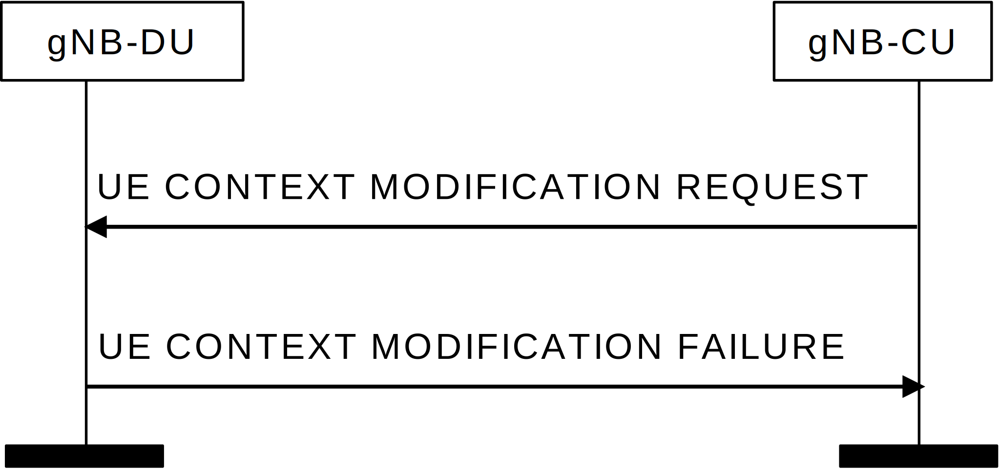

3GPP TS 38.473 V17.9.0 (2024-06)
Technical Specification
3rd Generation Partnership Project;
Technical Specification Group Radio Access Network;
NG-RAN;
F1 application protocol (F1AP)
(Release 17)
The present document has been developed within the 3rd Generation
Partnership Project (3GPP TM) and may be further elaborated
for the purposes of 3GPP..
The present document has not been subject to any approval process by the
3GPP Organizational Partners and shall not be implemented.
This Specification is provided for future development work within 3GPP
only. The Organizational Partners accept no liability for any use of
this Specification.
Specifications and Reports for implementation of the 3GPP TM
system should be obtained via the 3GPP Organizational Partners'
Publications Offices.
Keywords
NG-RAN, Radio
3GPP
Postal address
3GPP support office address
650 Route des Lucioles - Sophia Antipolis
Valbonne - FRANCE
Tel.: +33 4 92 94 42 00 Fax: +33 4 93 65 47 16
Internet
http://www.3gpp.org
Copyright Notification
No part may be reproduced except as authorized by written
permission.
The copyright and the foregoing restriction extend to reproduction in
all media.
2024, 3GPP Organizational Partners (ARIB, ATIS, CCSA, ETSI, TSDSI, TTA, TTC).
All rights reserved.
UMTS is a Trade Mark of ETSI registered for the benefit of its members
3GPP is a Trade Mark of ETSI registered for the benefit of its
Members and of the 3GPP Organizational Partners
LTE is a Trade Mark of ETSI registered for the benefit of its Members
and of the 3GPP Organizational Partners
GSM and the GSM logo are registered and owned by the GSM Association
Foreword 17
1 Scope 18
2 References 18
3 Definitions and abbreviations 20
3.1 Definitions 20
3.2 Abbreviations 21
4 General 22
4.1 Procedure specification principles 22
4.2 Forwards and backwards compatibility 23
4.3 Specification notations 23
5 F1AP services 23
6 Services expected from signalling transport 24
7 Functions of F1AP 24
8 F1AP procedures 24
8.1 List of F1AP Elementary procedures 24
8.2 Interface Management procedures 27
8.2.1 Reset 27
8.2.1.1 General 27
8.2.1.2 Successful Operation 27
8.2.1.2.1 Reset Procedure Initiated from the gNB-CU 27
8.2.1.2.2 Reset Procedure Initiated from the gNB-DU 28
8.2.1.3 Abnormal Conditions 29
8.2.2 Error Indication 29
8.2.2.1 General 29
8.2.2.2 Successful Operation 29
8.2.2.3 Abnormal Conditions 30
8.2.3 F1 Setup 30
8.2.3.1 General 30
8.2.3.2 Successful Operation 30
8.2.3.3 Unsuccessful Operation 32
8.2.3.4 Abnormal Conditions 32
8.2.4 gNB-DU Configuration Update 32
8.2.4.1 General 32
8.2.4.2 Successful Operation 33
8.2.4.3 Unsuccessful Operation 35
8.2.4.4 Abnormal Conditions 35
8.2.5 gNB-CU Configuration Update 36
8.2.5.1 General 36
8.2.5.2 Successful Operation 36
8.2.5.3 Unsuccessful Operation 38
8.2.5.4 Abnormal Conditions 39
8.2.6 gNB-DU Resource Coordination 39
8.2.6.1 General 39
8.2.6.2 Successful Operation 39
8.2.7 gNB-DU Status Indication 39
8.2.7.1 General 39
8.2.7.2 Successful Operation 40
8.2.7.3 Abnormal Conditions 40
8.2.8 F1 Removal 40
8.2.8.1 General 40
8.2.8.2 Successful Operation 41
8.2.8.3 Unsuccessful Operation 41
8.2.8.4 Abnormal Conditions 42
8.2.9 Network Access Rate Reduction 42
8.2.9.1 General 42
8.2.9.2 Successful operation 42
8.2.9.3 Abnormal Conditions 43
8.2.10 Resource Status Reporting Initiation 43
8.2.10.1 General 43
8.2.10.2 Successful Operation 43
8.2.10.3 Unsuccessful Operation 44
8.2.10.4 Abnormal Conditions 44
8.2.11 Resource Status Reporting 45
8.2.11.1 General 45
8.2.11.2 Successful Operation 45
8.2.11.3 Unsuccessful Operation 45
8.2.11.4 Abnormal Conditions 45
8.3 UE Context Management procedures 45
8.3.1 UE Context Setup 45
8.3.1.1 General 45
8.3.1.2 Successful Operation 46
8.3.1.3 Unsuccessful Operation 53
8.3.1.4 Abnormal Conditions 53
8.3.2 UE Context Release Request (gNB-DU initiated) 54
8.3.2.1 General 54
8.3.2.2 Successful Operation 54
8.3.2.3 Abnormal Conditions 54
8.3.3 UE Context Release (gNB-CU initiated) 55
8.3.3.1 General 55
8.3.3.2 Successful Operation 55
8.3.3.4 Abnormal Conditions 55
8.3.4 UE Context Modification (gNB-CU initiated) 56
8.3.4.1 General 56
8.3.4.2 Successful Operation 56
8.3.4.3 Unsuccessful Operation 66
8.3.4.4 Abnormal Conditions 67
8.3.5 UE Context Modification Required (gNB-DU initiated) 67
8.3.5.1 General 67
8.3.5.2 Successful Operation 67
8.3.5.2A Unsuccessful Operation 69
8.3.5.3 Abnormal Conditions 69
8.3.6 UE Inactivity Notification 69
8.3.6.1 General 69
8.3.6.2 Successful Operation 70
8.3.6.3 Abnormal Conditions 70
8.3.7 Notify 70
8.3.7.1 General 70
8.3.7.2 Successful Operation 70
8.3.7.3 Abnormal Conditions 71
8.3.8 Access Success 71
8.3.8.1 General 71
8.3.8.2 Successful Operation 71
8.3.8.3 Abnormal Conditions 71
8.4 RRC Message Transfer procedures 71
8.4.1 Initial UL RRC Message Transfer 71
8.4.1.1 General 71
8.4.1.2 Successful operation 72
8.4.1.3 Abnormal Conditions 72
8.4.2 DL RRC Message Transfer 72
8.4.2.1 General 72
8.4.2.2 Successful operation 73
8.4.2.3 Abnormal Conditions 73
8.4.3 UL RRC Message Transfer 74
8.4.3.1 General 74
8.4.3.2 Successful operation 74
8.4.3.3 Abnormal Conditions 74
8.4.4 RRC Delivery Report 74
8.4.4.1 General 74
8.4.4.2 Successful operation 75
8.4.4.3 Abnormal Conditions 75
8.5 Warning Message Transmission Procedures 75
8.5.1 Write-Replace Warning 75
8.5.1.1 General 75
8.5.1.2 Successful Operation 75
8.5.1.3 Unsuccessful Operation 76
8.5.1.4 Abnormal Conditions 76
8.5.2 PWS Cancel 76
8.5.2.1 General 76
8.5.2.2 Successful Operation 76
8.5.2.3 Unsuccessful Operation 77
8.5.2.4 Abnormal Conditions 77
8.5.3 PWS Restart Indication 77
8.5.3.1 General 77
8.5.3.2 Successful Operation 77
8.5.3.3 Abnormal Conditions 78
8.5.4 PWS Failure Indication 78
8.5.4.1 General 78
8.5.4.2 Successful Operation 78
8.5.4.3 Abnormal Conditions 78
8.6 System Information Procedures 78
8.6.1 System Information Delivery 78
8.6.1.1 General 78
8.6.1.2 Successful Operation 78
8.6.1.3 Abnormal Conditions 79
8.7 Paging procedures 79
8.7.1 Paging 79
8.7.1.1 General 79
8.7.1.2 Successful Operation 79
8.7.1.3 Abnormal Conditions 80
8.8 Trace Procedures 80
8.8.1 Trace Start 80
8.8.1.1 General 80
8.8.1.2 Successful Operation 81
8.8.1.3 Abnormal Conditions 81
8.8.2 Deactivate Trace 81
8.8.2.1 General 81
8.8.2.2 Successful Operation 81
8.8.2.3 Abnormal Conditions 81
8.8.3 Cell Traffic Trace 82
8.8.3.1 General 82
8.8.3.2 Successful Operation 82
8.8.3.3 Abnormal Conditions 82
8.9 Radio Information Transfer procedures 82
8.9.1 DU-CU Radio Information Transfer 82
8.9.1.1 General 82
8.9.1.2 Successful operation 82
8.9.1.3 Abnormal Conditions 83
8.9.2 CU-DU Radio Information Transfer 83
8.9.2.1 General 83
8.9.2.2 Successful operation 83
8.9.2.3 Abnormal Conditions 83
8.10 IAB Procedures 83
8.10.0 General 83
8.10.1 BAP Mapping Configuration 83
8.10.1.1 General 83
8.10.1.2 Successful Operation 84
8.10.1.A Unsuccessful Operation 85
8.10.1.3 Abnormal Conditions 85
8.10.2 gNB-DU Resource Configuration 85
8.10.2.1 General 85
8.10.2.2 Successful Operation 85
8.10.2.B Unsuccessful Operation 86
8.10.2.3 Abnormal Conditions 86
8.10.3 IAB TNL Address Allocation 86
8.10.3.1 General 86
8.10.3.2 Successful Operation 87
8.10.3.C Unsuccessful Operation 87
8.10.3.3 Abnormal Conditions 88
8.10.4 IAB UP Configuration Update 88
8.10.4.1 General 88
8.10.4.2 Successful Operation 88
8.10.4.3 Unsuccessful Operation 89
8.10.4.4 Abnormal Conditions 89
8.11 Self Optimisation Support procedures 89
8.11.1 Access and Mobility Indication 89
8.11.1.1 General 89
8.11.1.2 Successful Operation 89
8.11.1.3 Abnormal Conditions 90
8.12 Reference Time Information Reporting procedures 90
8.12.1 Reference Time Information Reporting Control 90
8.12.1.1 General 90
8.12.1.2 Successful Operation 90
8.12.1.3 Abnormal Conditions 90
8.12.2 Reference Time Information Report 90
8.12.2.1 General 90
8.12.2.2 Successful Operation 91
8.12.2.3 Abnormal Conditions 91
8.13 Positioning Procedures 91
8.13.1 Positioning Assistance Information Control 91
8.13.1.1 General 91
8.13.1.2 Successful Operation 91
8.13.1.3 Abnormal Conditions 92
8.13.2 Positioning Assistance Information Feedback 92
8.13.2.1 General 92
8.13.2.2 Successful Operation 92
8.13.2.3 Abnormal Conditions 92
8.13.3 Positioning Measurement 93
8.13.3.1 General 93
8.13.3.2 Successful Operation 93
8.13.3.3 Unsuccessful Operation 94
8.13.3.4 Abnormal Conditions 94
8.13.4 Positioning Measurement Report 94
8.13.4.1 General 94
8.13.4.2 Successful Operation 94
8.13.4.3 Unsuccessful Operation 95
8.13.4.4 Abnormal Conditions 95
8.13.5 Positioning Measurement Abort 95
8.13.5.1 General 95
8.13.5.2 Successful Operation 95
8.13.5.3 Unsuccessful Operation 95
8.13.5.4 Abnormal Conditions 95
8.13.6 Positioning Measurement Failure Indication 95
8.13.6.1 General 95
8.13.6.2 Successful Operation 96
8.13.6.3 Unsuccessful Operation 96
8.13.6.4 Abnormal Conditions 96
8.13.7 Positioning Measurement Update 96
8.13.7.1 General 96
8.13.7.2 Successful Operation 96
8.13.7.3 Unsuccessful Operation 97
8.13.7.4 Abnormal Conditions 97
8.13.8 TRP Information Exchange 97
8.13.8.1 General 97
8.13.8.2 Successful Operation 97
8.13.8.3 Unsuccessful Operation 98
8.13.9 Positioning Information Exchange 98
8.13.9.1 General 98
8.13.9.2 Successful Operation 98
8.13.9.3 Unsuccessful Operation 99
8.13.10 Positioning Activation 99
8.13.10.1 General 99
8.13.10.2 Successful Operation 99
8.13.10.3 Unsuccessful Operation 100
8.13.10.4 Abnormal Conditions 100
8.13.11 Positioning Deactivation 100
8.13.11.1 General 100
8.13.11.2 Successful Operation 100
8.13.11.3 Unsuccessful Operation 101
8.13.11.4 Abnormal Conditions 101
8.13.12 E-CID Measurement Initiation 101
8.13.12.1 General 101
8.13.12.2 Successful Operation 101
8.13.12.3 Unsuccessful Operation 102
8.13.13 E-CID Measurement Failure Indication 102
8.13.13.1 General 102
8.13.13.2 Successful Operation 102
8.13.13.3 Unsuccessful Operation 102
8.13.14 E-CID Measurement Report 102
8.13.14.1 General 102
8.13.14.2 Successful Operation 103
8.13.14.3 Unsuccessful Operation 103
8.13.15 E-CID Measurement Termination 103
8.13.15.1 General 103
8.13.15.2 Successful Operation 103
8.13.15.3 Unsuccessful Operation 103
8.13.16 Positioning Information Update 104
8.13.16.1 General 104
8.13.16.2 Successful Operation 104
8.13.16.3 Unsuccessful Operation 104
8.13.16.4 Abnormal Conditions 104
8.13.17 PRS Configuration Exchange 104
8.13.17.1 General 104
8.13.17.2 Successful Operation 105
8.13.17.3 Unsuccessful Operation 105
8.13.17.4 Abnormal Conditions 105
8.13.18 Measurement Preconfiguration 105
8.13.18.1 General 105
8.13.18.2 Successful Operation 106
8.13.18.3 Unsuccessful Operation 106
8.13.19 Measurement Activation 106
8.13.19.1 General 106
8.13.19.2 Successful Operation 107
8.13.19.3 Unsuccessful Operation 107
8.13.20 Positioning System Information Delivery 107
8.13.20.1 General 107
8.13.20.2 Successful Operation 107
8.13.20.3 Abnormal Conditions 108
8.14 NR MBS Procedures 108
8.14.1 Broadcast Context Setup 108
8.14.1.1 General 108
8.14.1.2 Successful Operation 108
8.14.1.3 Unsuccessful Operation 109
8.14.1.4 Abnormal Conditions 109
8.14.2 Broadcast Context Release 109
8.14.2.1 General 109
8.14.2.2 Successful Operation 109
8.14.2.3 Unsuccessful Operation 109
8.14.2.4 Abnormal Conditions 110
8.14.3 Broadcast Context Release Request 110
8.14.3.1 General 110
8.14.3.2 Successful Operation 110
8.14.3.3 Unsuccessful Operation 110
8.14.3.4 Abnormal Conditions 110
8.14.4 Broadcast Context Modification 110
8.14.4.1 General 110
8.14.4.2 Successful Operation 111
8.14.4.3 Unsuccessful Operation 112
8.14.4.4 Abnormal Conditions 112
8.14.5 Multicast Group Paging 112
8.14.5.1 General 112
8.14.5.2 Successful Operation 112
8.14.5.3 Abnormal Conditions 113
8.14.6 Multicast Context Setup 113
8.14.6.1 General 113
8.14.6.2 Successful Operation 113
8.14.6.3 Unsuccessful Operation 114
8.14.6.4 Abnormal Conditions 114
8.14.7 Multicast Context Release 114
8.14.7.1 General 114
8.14.7.2 Successful Operation 114
8.14.7.3 Unsuccessful Operation 114
8.14.7.4 Abnormal Conditions 115
8.14.8 Multicast Context Release Request 115
8.14.8.1 General 115
8.14.8.2 Successful Operation 115
8.14.8.3 Unsuccessful Operation 115
8.14.8.4 Abnormal Conditions 115
8.14.9 Multicast Context Modification 115
8.14.9.1 General 115
8.14.9.2 Successful Operation 116
8.14.9.3 Unsuccessful Operation 117
8.14.9.4 Abnormal Conditions 117
8.14.10 Multicast Distribution Setup 117
8.14.10.1 General 117
8.14.10.2 Successful Operation 117
8.14.10.3 Unsuccessful Operation 118
8.14.10.4 Abnormal Conditions 118
8.14.11 Multicast Distribution Release 118
8.14.11.1 General 118
8.14.11.2 Successful Operation 118
8.14.11.3 Unsuccessful Operation 119
8.14.11.4 Abnormal Conditions 119
8.15 PDC Measurement Reporting procedures 119
8.15.1 PDC Measurement Initiation 119
8.15.1.1 General 119
8.15.1.2 Successful Operation 119
8.15.1.3 Unsuccessful Operation 120
8.15.2 PDC Measurement Report 120
8.15.2.1 General 120
8.15.2.2 Successful Operation 120
8.15.2.3 Unsuccessful Operation 120
8.15.3 PDC Measurement Termination 120
8.15.3.1 General 120
8.15.3.2 Successful Operation 121
8.15.3.3 Unsuccessful Operation 121
8.15.3.4 Abnormal Conditions 121
8.15.4 PDC Measurement Failure Indication 121
8.15.4.1 General 121
8.15.4.2 Successful Operation 121
8.15.4.3 Unsuccessful Operation 121
8.15.4.4 Abnormal Conditions 122
8.16 QMC Procedures 122
8.16.1 QoE Information Transfer 122
8.16.1.1 General 122
8.16.1.2 Successful operation 122
8.16.1.3 Abnormal Conditions 122
9 Elements for F1AP Communication 122
9.1 General 122
9.2 Message Functional Definition and Content 123
9.2.1 Interface Management messages 123
9.2.1.1 RESET 123
9.2.1.2 RESET ACKNOWLEDGE 123
9.2.1.3 ERROR INDICATION 124
9.2.1.4 F1 SETUP REQUEST 124
9.2.1.5 F1 SETUP RESPONSE 125
9.2.1.6 F1 SETUP FAILURE 126
9.2.1.7 GNB-DU CONFIGURATION UPDATE 126
9.2.1.8 GNB-DU CONFIGURATION UPDATE ACKNOWLEDGE 128
9.2.1.9 GNB-DU CONFIGURATION UPDATE FAILURE 129
9.2.1.10 GNB-CU CONFIGURATION UPDATE 129
9.2.1.11 GNB-CU CONFIGURATION UPDATE ACKNOWLEDGE 132
9.2.1.12 GNB-CU CONFIGURATION UPDATE FAILURE 133
9.2.1.13 GNB-DU RESOURCE COORDINATION REQUEST 134
9.2.1.14 GNB-DU RESOURCE COORDINATION RESPONSE 134
9.2.1.15 GNB-DU STATUS INDICATION 135
9.2.1.16 F1 REMOVAL REQUEST 135
9.2.1.17 F1 REMOVAL RESPONSE 135
9.2.1.18 F1 REMOVAL FAILURE 135
9.2.1.19 NETWORK ACCESS RATE REDUCTION 136
9.2.1.20 RESOURCE STATUS REQUEST 136
9.2.1.21 RESOURCE STATUS RESPONSE 138
9.2.1.22 RESOURCE STATUS FAILURE 138
9.2.1.23 RESOURCE STATUS UPDATE 138
9.2.2 UE Context Management messages 140
9.2.2.1 UE CONTEXT SETUP REQUEST 140
9.2.2.2 UE CONTEXT SETUP RESPONSE 147
9.2.2.3 UE CONTEXT SETUP FAILURE 151
9.2.2.4 UE CONTEXT RELEASE REQUEST 152
9.2.2.5 UE CONTEXT RELEASE COMMAND 152
9.2.2.6 UE CONTEXT RELEASE COMPLETE 153
9.2.2.7 UE CONTEXT MODIFICATION REQUEST 153
9.2.2.8 UE CONTEXT MODIFICATION RESPONSE 166
9.2.2.9 UE CONTEXT MODIFICATION FAILURE 173
9.2.2.10 UE CONTEXT MODIFICATION REQUIRED 173
9.2.2.11 UE CONTEXT MODIFICATION CONFIRM 176
9.2.2.11A UE CONTEXT MODIFICATION REFUSE 178
9.2.2.12 UE INACTIVITY NOTIFICATION 178
9.2.2.13 NOTIFY 179
9.2.2.14 ACCESS SUCCESS 179
9.2.3 RRC Message Transfer messages 180
9.2.3.1 INITIAL UL RRC MESSAGE TRANSFER 180
9.2.3.2 DL RRC MESSAGE TRANSFER 181
9.2.3.3 UL RRC MESSAGE TRANSFER 182
9.2.3.4 RRC DELIVERY REPORT 182
9.2.4 Warning Message Transmission Messages 182
9.2.4.1 WRITE-REPLACE WARNING REQUEST 182
9.2.4.2 WRITE-REPLACE WARNING RESPONSE 183
9.2.4.3 PWS CANCEL REQUEST 184
9.2.4.4 PWS CANCEL RESPONSE 184
9.2.4.5 PWS RESTART INDICATION 185
9.2.4.6 PWS FAILURE INDICATION 185
9.2.5 System Information messages 186
9.2.5.1 SYSTEM INFORMATION DELIVERY COMMAND 186
9.2.6 Paging messages 186
9.2.6.1 PAGING 186
9.2.7 Trace Messages 187
9.2.7.1 TRACE START 187
9.2.7.2 DEACTIVATE TRACE 187
9.2.7.3 CELL TRAFFIC TRACE 188
9.2.8 Radio Information Transfer messages 188
9.2.8.1 DU-CU RADIO INFORMATION TRANSFER 188
9.2.8.2 CU-DU RADIO INFORMATION TRANSFER 189
9.2.9 IAB messages 189
9.2.9.1 BAP MAPPING CONFIGURATION 189
9.2.9.2 BAP MAPPING CONFIGURATION ACKNOWLEDGE 190
9.2.9.2A BAP MAPPING CONFIGURATION FAILURE 191
9.2.9.3 GNB-DU RESOURCE CONFIGURATION 191
9.2.9.4 GNB-DU RESOURCE CONFIGURATION ACKNOWLEDGE 195
9.2.9.4A GNB-DU RESOURCE CONFIGURATION FAILURE 195
9.2.9.5 IAB TNL ADDRESS REQUEST 196
9.2.9.6 IAB TNL ADDRESS RESPONSE 196
9.2.9.6A IAB TNL ADDRESS FAILURE 197
9.2.9.7 IAB UP CONFIGURATION UPDATE REQUEST 197
9.2.9.8 IAB UP CONFIGURATION UPDATE RESPONSE 198
9.2.9.9 IAB UP CONFIGURATION UPDATE FAILURE 199
9.2.10 Self Optimisation Support Messages 199
9.2.10.1 ACCESS AND MOBILITY INDICATION 199
9.2.11 Reference Time Information Reporting messages 200
9.2.11.1 REFERENCE TIME INFORMATION REPORTING CONTROL 200
9.2.11.2 REFERENCE TIME INFORMATION REPORT 200
9.2.12 Messages for Positioning Procedures 200
9.2.12.1 POSITIONING ASSISTANCE INFORMATION CONTROL 200
9.2.12.2 POSITIONING ASSISTANCE INFORMATION FEEDBACK 201
9.2.12.3 POSITIONING MEASUREMENT REQUEST 201
9.2.12.4 POSITIONING MEASUREMENT RESPONSE 203
9.2.12.5 POSITIONING MEASUREMENT FAILURE 204
9.2.12.6 POSITIONING MEASUREMENT REPORT 204
9.2.12.7 POSITIONING MEASUREMENT ABORT 204
9.2.12.8 POSITIONING MEASUREMENT FAILURE INDICATION 205
9.2.12.9 POSITIONING MEASUREMENT UPDATE 205
9.2.12.10 TRP INFORMATION REQUEST 206
9.2.12.11 TRP INFORMATION RESPONSE 206
9.2.12.12 TRP INFORMATION FAILURE 207
9.2.12.13 POSITIONING INFORMATION REQUEST 207
9.2.12.14 POSITIONING INFORMATION RESPONSE 207
9.2.12.15 POSITIONING INFORMATION FAILURE 208
9.2.12.16 POSITIONING ACTIVATION REQUEST 208
9.2.12.17 POSITIONING ACTIVATION RESPONSE 208
9.2.12.18 POSITIONING ACTIVATION FAILURE 209
9.2.12.19 POSITIONING DEACTIVATION 209
9.2.12.20 E-CID MEASUREMENT INITIATION REQUEST 209
9.2.12.21 E-CID MEASUREMENT INITIATION RESPONSE 210
9.2.12.22 E-CID MEASUREMENT INITIATION FAILURE 211
9.2.12.23 E-CID MEASUREMENT FAILURE INDICATION 211
9.2.12.24 E-CID MEASUREMENT REPORT 211
9.2.12.25 E-CID MEASUREMENT TERMINATION COMMAND 212
9.2.12.26 POSITIONING INFORMATION UPDATE 212
9.2.12.27 PRS CONFIGURATION REQUEST 212
9.2.12.28 PRS CONFIGURATION RESPONSE 213
9.2.12.29 PRS CONFIGURATION FAILURE 213
9.2.12.30 MEASUREMENT PRECONFIGURATION REQUIRED 213
9.2.12.31 MEASUREMENT PRECONFIGURATION CONFIRM 214
9.2.12.32 MEASUREMENT PRECONFIGURATION REFUSE 214
9.2.12.33 MEASUREMENT ACTIVATION 215
9.2.12.34 POSITIONING SYSTEM INFORMATION DELIVERY COMMAND 215
9.2.13 Broadcast Context Management messages 215
9.2.13.1 BROADCAST CONTEXT SETUP REQUEST 215
9.2.13.2 BROADCAST CONTEXT SETUP RESPONSE 216
9.2.13.3 BROADCAST CONTEXT SETUP FAILURE 217
9.2.13.4 BROADCAST CONTEXT RELEASE COMMAND 217
9.2.13.5 BROADCAST CONTEXT RELEASE COMPLETE 217
9.2.13.5a BROADCAST CONTEXT RELEASE REQUEST 218
9.2.13.6 BROADCAST CONTEXT MODIFICATION REQUEST 218
9.2.13.7 BROADCAST CONTEXT MODIFICATION RESPONSE 219
9.2.13.8 BROADCAST CONTEXT MODIFICATION FAILURE 220
9.2.14 Multicast Context Management messages 220
9.2.14.1 MULTICAST GROUP PAGING 221
9.2.14.2 MULTICAST CONTEXT SETUP REQUEST 221
9.2.14.3 MULTICAST CONTEXT SETUP RESPONSE 222
9.2.14.4 MULTICAST CONTEXT SETUP FAILURE 222
9.2.14.5 MULTICAST CONTEXT RELEASE COMMAND 223
9.2.14.6 MULTICAST CONTEXT RELEASE COMPLETE 223
9.2.14.6a MULTICAST CONTEXT RELEASE REQUEST 223
9.2.14.7 MULTICAST CONTEXT MODIFICATION REQUEST 223
9.2.14.8 MULTICAST CONTEXT MODIFICATION RESPONSE 224
9.2.14.9 MULTICAST CONTEXT MODIFICATION FAILURE 225
9.2.14.10 MULTICAST DISTRIBUTION SETUP REQUEST 225
9.2.14.11 MULTICAST DISTRIBUTION SETUP RESPONSE 226
9.2.14.12 MULTICAST DISTRIBUTION SETUP FAILURE 227
9.2.14.13 MULTICAST DISTRIBUTION RELEASE COMMAND 227
9.2.14.14 MULTICAST DISTRIBUTION RELEASE COMPLETE 227
9.2.15 PDC Measurement Reporting messages 227
9.2.15.1 PDC MEASUREMENT INITIATION REQUEST 227
9.2.15.2 PDC MEASUREMENT INITIATION RESPONSE 228
9.2.15.3 PDC MEASUREMENT INITIATION FAILURE 228
9.2.15.4 PDC MEASUREMENT REPORT 229
9.2.15.5 PDC MEASUREMENT TERMINATION COMMAND 229
9.2.15.6 PDC MEASUREMENT FAILURE INDICATION 229
9.2.16 QMC messages 229
9.2.16.1 QOE INFORMATION TRANSFER 229
9.3 Information Element Definitions 230
9.3.1 Radio Network Layer Related IEs 230
9.3.1.1 Message Type 230
9.3.1.2 Cause 230
9.3.1.3 Criticality Diagnostics 234
9.3.1.4 gNB-CU UE F1AP ID 235
9.3.1.5 gNB-DU UE F1AP ID 235
9.3.1.6 RRC-Container 235
9.3.1.7 SRB ID 235
9.3.1.8 DRB ID 235
9.3.1.9 gNB-DU ID 236
9.3.1.10 Served Cell Information 236
9.3.1.11 Transmission Action Indicator 241
9.3.1.12 NR CGI 241
9.3.1.13 Time To wait 241
9.3.1.14 PLMN Identity 241
9.3.1.15 Transmission Bandwidth 241
9.3.1.16 Void 242
9.3.1.17 NR Frequency Info 242
9.3.1.18 gNB-DU System Information 243
9.3.1.19 E-UTRAN QoS 244
9.3.1.20 Allocation and Retention Priority 244
9.3.1.21 GBR QoS Information 245
9.3.1.22 Bit Rate 246
9.3.1.23 Transaction ID 246
9.3.1.24 DRX Cycle 246
9.3.1.25 CU to DU RRC Information 247
9.3.1.26 DU to CU RRC Information 249
9.3.1.27 RLC Mode 253
9.3.1.28 SUL Information 253
9.3.1.29 5GS TAC 254
9.3.1.29a Configured EPS TAC 254
9.3.1.30 RRC Reconfiguration Complete Indicator 254
9.3.1.31 UL Configuration 254
9.3.1.32 C-RNTI 255
9.3.1.33 Cell UL Configured 255
9.3.1.34 RAT-Frequency Priority Information 255
9.3.1.35 LCID 255
9.3.1.36 Duplication activation 256
9.3.1.37 Slice Support List 256
9.3.1.38 S-NSSAI 256
9.3.1.39 UE Identity Index value 256
9.3.1.40 Paging DRX 256
9.3.1.41 Paging Priority 257
9.3.1.42 gNB-CU System Information 257
9.3.1.43 RAN UE Paging identity 258
9.3.1.44 CN UE Paging Identity 258
9.3.1.45 QoS Flow Level QoS Parameters 258
9.3.1.46 GBR QoS Flow Information 259
9.3.1.47 Dynamic 5QI Descriptor 260
9.3.1.48 NG-RAN Allocation and Retention Priority 261
9.3.1.49 Non Dynamic 5QI Descriptor 262
9.3.1.50 Maximum Packet Loss Rate 263
9.3.1.51 Packet Delay Budget 263
9.3.1.52 Packet Error Rate 263
9.3.1.53 Averaging Window 263
9.3.1.54 Maximum Data Burst Volume 263
9.3.1.55 Masked IMEISV 264
9.3.1.56 Notification Control 264
9.3.1.57 RAN Area Code 264
9.3.1.58 PWS System Information 264
9.3.1.59 Repetition Period 265
9.3.1.60 Number of Broadcasts Requested 265
9.3.1.61 Void 265
9.3.1.62 SIType List 265
9.3.1.63 QoS Flow Identifier 265
9.3.1.64 Served E-UTRA Cell Information 266
9.3.1.65 Available PLMN List 266
9.3.1.66 RLC Failure Indication 266
9.3.1.67 Uplink TxDirectCurrentList Information 266
9.3.1.68 Service Status 267
9.3.1.69 RLC Status 267
9.3.1.70 RRC Version 267
9.3.1.71 RRC Delivery Status 267
9.3.1.72 QoS Flow Mapping Indication 268
9.3.1.73 Resource Coordination Transfer Information 268
9.3.1.74 E-UTRA PRACH Configuration 268
9.3.1.75 Resource Coordination E-UTRA Cell Information 268
9.3.1.76 Extended Available PLMN List 270
9.3.1.77 Associated SCell List 270
9.3.1.78 Cell Direction 270
9.3.1.79 Paging Origin 270
9.3.1.80 E-UTRA Transmission Bandwidth 270
9.3.1.81 Message Identifier 271
9.3.1.82 Serial Number 271
9.3.1.83 UAC Assistance Information 271
9.3.1.84 UAC Action 272
9.3.1.85 UAC reduction Indication 272
9.3.1.86 Additional SIB Message List 272
9.3.1.87 Cell Type 273
9.3.1.87a Configured TAC Indication 273
9.3.1.88 Trace Activation 273
9.3.1.89 Intended TDD DL-UL Configuration 274
9.3.1.90 Additional RRM Policy Index 275
9.3.1.91 DU-CU RIM Information 276
9.3.1.92 CU-DU RIM Information 276
9.3.1.93 gNB Set ID 276
9.3.1.94 Lower Layer Presence Status Change 276
9.3.1.95 Traffic Mapping Information 277
9.3.1.96 IP-to-layer-2 traffic mapping Information List 277
9.3.1.97 IP Header Information 277
9.3.1.98 BAP layer BH RLC channel mapping Information List 278
9.3.1.99 Mapping Information to Remove 279
9.3.1.100 Mapping Information Index 279
9.3.1.101 IAB TNL Addresses Requested 279
9.3.1.102 IAB TNL Address 279
9.3.1.103 Uplink BH Non-UP Traffic Mapping 280
9.3.1.104 Non-UP Traffic Type 280
9.3.1.105 IAB Info IAB-donor-CU 280
9.3.1.106 IAB Info IAB-DU 280
9.3.1.107 gNB-DU Cell Resource Configuration 281
9.3.1.108 Multiplexing Info 283
9.3.1.109 IAB STC Info 285
9.3.1.110 BAP Routing ID 286
9.3.1.111 BAP Address 286
9.3.1.112 BAP Path ID 286
9.3.1.113 BH RLC Channel ID 286
9.3.1.114 BH Information 286
9.3.1.115 Control Plane Traffic Type 287
9.3.1.116 NR V2X Services Authorized 288
9.3.1.117 LTE V2X Services Authorized 288
9.3.1.118 LTE UE Sidelink Aggregate Maximum Bit Rate 288
9.3.1.119 NR UE Sidelink Aggregate Maximum Bit Rate 288
9.3.1.120 SL DRB ID 288
9.3.1.121 PC5 QoS Flow Identifier 288
9.3.1.122 PC5 QoS Parameters 289
9.3.1.123 Alternative QoS Parameters Set Index 289
9.3.1.124 Alternative QoS Parameters Set Notify Index 289
9.3.1.125 Alternative QoS Parameters Set List 290
9.3.1.126 Non Dynamic PQI Descriptor 290
9.3.1.127 Dynamic PQI Descriptor 290
9.3.1.128 TNL Capacity Indicator 291
9.3.1.129 Radio Resource Status 291
9.3.1.130 Composite Available Capacity Group 293
9.3.1.131 Composite Available Capacity 294
9.3.1.132 Cell Capacity Class Value 294
9.3.1.133 Capacity Value 294
9.3.1.134 Slice Available Capacity 295
9.3.1.135 Number of Active UEs 295
9.3.1.136 Hardware Load Indicator 296
9.3.1.137 NR Carrier List 296
9.3.1.138 SSB Positions In Burst 296
9.3.1.139 NR PRACH Configuration 297
9.3.1.140 NR PRACH Configuration List 297
9.3.1.141 TSC Traffic Characteristics 299
9.3.1.142 TSC Assistance Information 299
9.3.1.143 Periodicity 299
9.3.1.144 Burst Arrival Time 300
9.3.1.145 Extended Packet Delay Budget 300
9.3.1.146 RLC Duplication Information 300
9.3.1.147 Reporting Request Type 300
9.3.1.148 Time Reference Information 301
9.3.1.149 Reference Time 301
9.3.1.150 MDT Configuration 301
9.3.1.151 MDT PLMN List 302
9.3.1.152 M5 Configuration 302
9.3.1.153 M6 Configuration 303
9.3.1.154 M7 Configuration 303
9.3.1.155 NID 303
9.3.1.156 NPN Support Information 303
9.3.1.157 NPN Broadcast Information 304
9.3.1.158 Broadcast SNPN ID List 304
9.3.1.159 Broadcast NID List 304
9.3.1.160 Broadcast CAG-Identifier List 304
9.3.1.161 CAG ID 305
9.3.1.162 Broadcast PNI-NPN ID Information 305
9.3.1.163 Available SNPN ID List 305
9.3.1.164 Void 305
9.3.1.165 Extended Slice Support List 305
9.3.1.166 Positioning Measurement Result 306
9.3.1.167 UL Angle of Arrival 306
9.3.1.168 UL RTOA Measurement 307
9.3.1.169 Additional Path List 307
9.3.1.170 gNB Rx-Tx Time Difference 308
9.3.1.171 Time Stamp 308
9.3.1.172 TRP Measurement Quality 309
9.3.1.173 Measurement Beam Information 309
9.3.1.174 NG-RAN Access Point Position 309
9.3.1.175 Requested SRS Transmission Characteristics 310
9.3.1.176 TRP Information 311
9.3.1.177 PRS Configuration 313
9.3.1.178 DL-PRS Muting Pattern 314
9.3.1.179 Spatial Direction Information 314
9.3.1.180 SRS Resource Set ID 314
9.3.1.181 Spatial Relation Information 314
9.3.1.182 SRS Resource Trigger 315
9.3.1.183 Relative Time 1900 315
9.3.1.184 Geographical Coordinates 316
9.3.1.185 DL-PRS Resource Coordinates 316
9.3.1.186 Relative Geodetic Location 317
9.3.1.187 Relative Cartesian Location 318
9.3.1.188 Reference Point 318
9.3.1.189 Location Uncertainty 318
9.3.1.190 NG-RAN High Accuracy Access Point Position 319
9.3.1.191 Positioning Broadcast Cells 319
9.3.1.192 SRS Configuration 319
9.3.1.193 SRS Resource 320
9.3.1.194 Positioning SRS Resource 322
9.3.1.195 SRS Resource Set 323
9.3.1.196 Positioning SRS Resource Set 324
9.3.1.197 TRP ID 324
9.3.1.198 NR-PRS Beam Information 324
9.3.1.199 E-CID Measurement Result 325
9.3.1.200 Cell Portion ID 326
9.3.1.201 Pathloss Reference Information 326
9.3.1.202 SSB Information 326
9.3.1.203 SSB Time/Frequency Configuration 327
9.3.1.204 Search Window Information 327
9.3.1.205 Extended gNB-DU Name 328
9.3.1.206 Extended gNB-CU Name 328
9.3.1.207 F1-C Transfer Path 328
9.3.1.208 SFN Offset 328
9.3.1.209 Transmission Stop Indicator 328
9.3.1.210 Spatial Relation Information per SRS Resource 329
9.3.1.211 CCO Assistance Information 329
9.3.1.212 Affected Cells and Beams 329
9.3.1.213 Coverage Modification Notification 330
9.3.1.214 Cells for SON List 330
9.3.1.215 Neighbour NR Cells for SON List 331
9.3.1.216 NR Mode Info Rel16 331
9.3.1.217 Frequency Info Rel16 331
9.3.1.218 MBS Session ID 332
9.3.1.219 gNB-CU MBS F1AP ID 332
9.3.1.220 gNB-DU MBS F1AP ID 332
9.3.1.221 MBS Area Session ID 333
9.3.1.222 MBS Service Area 333
9.3.1.223 MBS Service Area information 333
9.3.1.224 MRB ID 333
9.3.1.225 MBS CU to DU RRC Information 334
9.3.1.226 MBS Broadcast Neighbour Cell List 334
9.3.1.227 IAB Congestion Indication 334
9.3.1.228 F1-C Transfer Path NRDC 335
9.3.1.229 IAB TNL Address Exception 335
9.3.1.230 RB Set Configuration 335
9.3.1.231 Survival Time 336
9.3.1.232 PDC Measurement Result 336
9.3.1.233 SCG Activation Request 336
9.3.1.234 SCG Activation Status 337
9.3.1.235 Requested DL PRS Transmission Characteristics 337
9.3.1.236 Start Time and Duration 337
9.3.1.237 PRS Transmission Off Information 338
9.3.1.238 UL-AoA Assistance Information 338
9.3.1.239 Zenith Angle of Arrival Information 339
9.3.1.240 On-demand PRS TRP Information 339
9.3.1.241 LCS to GCS Translation 340
9.3.1.242 Response Time 341
9.3.1.243 ARP Location Information 341
9.3.1.244 ARP ID 341
9.3.1.245 Multiple UL AoA 341
9.3.1.246 UL SRS-RSRPP 342
9.3.1.247 SRS Resource type 342
9.3.1.248 Extended Additional Path List 342
9.3.1.249 LoS/NLoS Information 343
9.3.1.250 Requested DL-PRS Resource List 343
9.3.1.251 Void 344
9.3.1.252 TRP Tx TEG Association 344
9.3.1.253 TRP TEG Information 344
9.3.1.254 Measurement Characteristics Request Indicator 344
9.3.1.255 UE Reporting Information 345
9.3.1.256 TRP Beam Antenna Information 345
9.3.1.257 TRP Beam Antenna Angles 346
9.3.1.258 NR Paging eDRX Information 347
9.3.1.259 NR Paging eDRX Information for RRC INACTIVE 347
9.3.1.260 QoE Metrics 348
9.3.1.261 CG-SDT Session Info 348
9.3.1.262 SDT Information 348
9.3.1.263 Path Switch Configuration 348
9.3.1.264 Sidelink Relay Configuration 348
9.3.1.265 PC5 RLC Channel ID 349
9.3.1.266 Uu RLC Channel ID 349
9.3.1.267 Remote UE Local ID 349
9.3.1.268 5G ProSe Authorized 349
9.3.1.269 PEIPS Assistance Information 350
9.3.1.270 UE Paging Capability 350
9.3.1.271 gNB-DU UE Slice Maximum Bit Rate List 350
9.3.1.272 Multicast MBS Session List 350
9.3.1.273 TAI NSAG Support List 351
9.3.1.274 MDT PLMN Modification List 351
9.3.1.275 MRB RLC Configuration 351
9.3.1.276 Timing Error Margin 352
9.3.1.277 SDT Bearer Configuration Info 352
9.3.1.278 PosSIType List 352
9.3.1.279 IAB-DU Cell Resource Configuration-Mode-Info 353
9.3.1.280 TRP Rx TEG Information 354
9.3.1.281 TRP Tx TEG Information 354
9.3.1.282 TRP RxTx TEG Information 354
9.3.1.283 Uplink TxDirectCurrentTwoCarrierList Information 355
9.3.1.284 Uplink TxDirectCurrentMoreCarrierList Information 355
9.3.1.285 Extended UE Identity Index Value 355
9.3.1.286 Hashed UE Identity Index Value 355
9.3.1.287 Broadcast Area Scope 355
9.3.2 Transport Network Layer Related IEs 356
9.3.2.1 UP Transport Layer Information 356
9.3.2.2 GTP-TEID 356
9.3.2.3 Transport Layer Address 356
9.3.2.4 CP Transport Layer Information 356
9.3.2.5 Transport Layer Address Info 357
9.3.2.6 URI 357
9.3.2.7 BC Bearer Context F1-U TNL Info 358
9.3.2.8 MBS Multicast F1-U Context Descriptor 358
9.3.2.9 Void 358
9.3.2.10 MBS PTP Retransmission Tunnel Required 358
9.3.2.11 Multicast F1-U Context Reference F1 359
9.3.2.12 MRB Progress Information 359
9.3.2.13 Multicast F1-U Context Reference CU 359
9.4 Message and Information Element Abstract Syntax (with ASN.1) 360
9.4.1 General 360
9.4.2 Usage of private message mechanism for non-standard use 360
9.4.3 Elementary Procedure Definitions 361
9.4.4 PDU Definitions 378
9.4.5 Information Element Definitions 478
9.4.6 Common Definitions 635
9.4.7 Constant Definitions 636
9.4.8 Container Definitions 654
9.5 Message Transfer Syntax 658
9.6 Timers 658
10 Handling of unknown, unforeseen and erroneous protocol data 658
Annex A (informative): Change History 659
This Technical Specification has been produced by the 3rd Generation Partnership Project (3GPP).
The contents of the present document are subject to continuing work within the TSG and may change following formal TSG approval. Should the TSG modify the contents of the present document, it will be re-released by the TSG with an identifying change of release date and an increase in version number as follows:
Version x.y.z
where:
x the first digit:
1 presented to TSG for information;
2 presented to TSG for approval;
3 or greater indicates TSG approved document under change control.
y the second digit is incremented for all changes of substance, i.e. technical enhancements, corrections, updates, etc.
z the third digit is incremented when editorial only changes have been incorporated in the document.
The present document specifies the 5G radio network layer signalling protocol for the F1 interface. The F1 interface provides means for interconnecting a gNB-CU and a gNB-DU of a gNB within an NG-RAN, or for interconnecting a gNB-CU and a gNB-DU of an en-gNB within an E-UTRAN. The F1 Application Protocol (F1AP) supports the functions of F1 interface by signalling procedures defined in the present document. F1AP is developed in accordance to the general principles stated in TS 38.401 [4] and TS 38.470 [2].
The following documents contain provisions which, through reference in this text, constitute provisions of the present document.
- References are either specific (identified by date of publication, edition number, version number, etc.) or nonspecific.
- For a specific reference, subsequent revisions do not apply.
- For a non-specific reference, the latest version applies. In the case of a reference to a 3GPP document (including a GSM document), a non-specific reference implicitly refers to the latest version of that document in the same Release as the present document.
[1] 3GPPTR21.905: "Vocabulary for 3GPP Specifications".
[2] 3GPP TS 38.470: "NG-RAN; F1 general aspects and principles".
[3] 3GPP TS 38.413: "NG-RAN; NG Application Protocol (NGAP)".
[4] 3GPP TS 38.401: "NG-RAN; Architecture Description".
[5] ITU-T Recommendation X.691 (2002-07): "Information technology - ASN.1 encoding rules - Specification of Packed Encoding Rules (PER)".
[6] 3GPP TS 38.300: "NR; Overall description; Stage-2".
[7] 3GPP TS 37.340: "NR; Multi-connectivity; Overall description; Stage-2".
[8] 3GPP TS 38.331: "NR; Radio Resource Control (RRC); Protocol specification".
[9] 3GPP TS 36.423: "Evolved Universal Terrestrial Radio Access Network (E-UTRAN); X2 Application Protocol (X2AP)".
[10] 3GPP TS 23.401: "General Packet Radio Service (GPRS) enhancements for Evolved Universal Terrestrial Radio Access Network (E-UTRAN) access".
[11] 3GPP TS 23.203: "Policy and charging control architecture".
[12] ITU-T Recommendation X.680 (07/2002): "Information technology Abstract Syntax Notation One (ASN.1): Specification of basic notation".
[13] ITU-T Recommendation X.681 (07/2002): "Information technology Abstract Syntax Notation One (ASN.1): Information object specification".
[14] 3GPP TR 25.921: (version.7.0.0): "Guidelines and principles for protocol description and error".
[15] 3GPP TS 36.413: "Evolved Universal Terrestrial Radio Access Network (E-UTRAN); S1 Application Protocol (S1AP)".
[16] 3GPP TS 38.321: "NR; Medium Access Control (MAC) protocol specification".
[17] 3GPP TS 38.104: "NR; Base Station (BS) radio transmission and reception".
[18] 3GPP TS 29.281: "General Packet Radio System (GPRS); Tunnelling Protocol User Plane (GTPv1-U) ".
[19] 3GPP TS 38.414: "NG-RAN; NG data transport".
[20] 3GPP TS 36.300: "Evolved Universal Terrestrial Radio Access (E-UTRA) and Evolved Universal Terrestrial Radio Access Network (E-UTRAN); Overall description; Stage 2".
[21] 3GPP TS 23.501: "System Architecture for the 5G System".
[22] 3GPP TS 38.472: "NG-RAN; F1 signalling transport".
[23] 3GPP TS 23.003: "Numbering, addressing and identification".
[24] 3GPP TS 38.304: "NR; User Equipment (UE) procedures in Idle mode and RRC Inactive state ".
[25] 3GPP TS 36.104: "Base Station (BS) radio transmission and reception".
[26] 3GPP TS 38.101-1: "NR; User Equipment (UE) radio transmission and reception; Part 1: Range 1 Standalone".
[27] 3GPP TS 36.211: "Evolved Universal Terrestrial Radio Access (E-UTRA); Physical channels and modulation".
[28] 3GPP TS 38.423: "NG-RAN; Xn application protocol (XnAP)".
[29] 3GPP TS 32.422: "Trace control and configuration management".
[30] 3GPP TS 38.340: "NR; Backhaul Adaptation Protocol (BAP) specification".
[31] 3GPP TS 38.213: "NR; Physical layer procedures for control".
[32] 3GPP TS 38.314: " NR; Layer 2 measurements".
[33] 3GPP TS 38.211: "NR; Physical channels and modulation".
[34] 3GPP TS 38.214: "NR; Physical layer procedures for data".
[35] 3GPP TS 37.320: "Radio measurement collection for Minimization of Drive Tests (MDT)".
[36] 3GPP TS 23.032:"Technical Specification Group Services and System Aspects; Universal Geographical Area Description (GAD)".
[37] 3GPP TS 38.455: "NG-RAN; NR Positioning protocol A (NRPPa)".
[38] 3GPP TS 38.133: "NR; Requirements for support of radio resource management".
[39] 3GPP TS 37.355: "LTE Positioning Protocol (LPP)".
[40] 3GPP TS 23.287: "Architecture enhancements for 5G System (5GS) to support Vehicle-to-Everything (V2X) services".
[41] 3GPP TS 36.331: "Evolved Universal Terrestrial Radio Access (E-UTRA); Radio Resource Control (RRC); Protocol specification".
[42] 3GPP TS 38.305: "NG Radio Access Network (NG-RAN); Stage 2 functional specification of User Equipment (UE) positioning in NG-RAN".
[43] 3GPP TS 38.215: "NR; Physical layer (PHY); Measurements".
[44] 3GPP TS 23.304: "Proximity based Services (ProSe) in the 5G System (5GS)".
[45] Void
[46] 3GPP TS 37.213: "NR; Physical layer procedures for shared spectrum channel access".
[47] 3GPP TS 37.483: "E1 Application Protocol (E1AP)".
elementary procedure: F1AP consists of Elementary Procedures (EPs). An Elementary Procedure is a unit of interaction between gNB-CU and gNB-DU. These Elementary Procedures are defined separately and are intended to be used to build up complete sequences in a flexible manner. If the independence between some EPs is restricted, it is described under the relevant EP description. Unless otherwise stated by the restrictions, the EPs may be invoked independently of each other as standalone procedures, which can be active in parallel. The usage of several F1AP EPs together is specified in stage 2 specifications (e.g., TS 38.470 [2]).
An EP consists of an initiating message and possibly a response message. Two kinds of EPs are used:
- Class 1: Elementary Procedures with response (success and/or failure).
- Class 2: Elementary Procedures without response.
For Class 1 EPs, the types of responses can be as follows:
Successful:
- A signalling message explicitly indicates that the elementary procedure successfully completed with the receipt of the response.
Unsuccessful:
- A signalling message explicitly indicates that the EP failed.
- On time supervision expiry (i.e., absence of expected response).
Successful and Unsuccessful:
- One signalling message reports both successful and unsuccessful outcome for the different included requests. The response message used is the one defined for successful outcome.
Class 2 EPs are considered always successful.
BH RLC channel: as defined in TS 38.300 [6].
Conditional handover: as defined in TS 38.300 [6].
Conditional PSCell Addition: as defined in TS 37.340 [7].
Conditional PSCell Change: as defined in TS 37.340 [7].
DAPS Handover: as defined in TS 38.300 [6].
EN-DC operation: Used in this specification when the F1AP is applied for gNB-CU and gNB-DU in E-UTRAN.
gNB: as defined in TS 38.300 [6].
gNB-CU: as defined in TS 38.401 [4].
gNB-CU UE F1AP ID: as defined in TS 38.401 [4].
gNB-DU: as defined in TS 38.401 [4].
gNB-DU UE F1AP ID: as defined in TS 38.401 [4].
en-gNB: as defined in TS 37.340 [7].
IAB-MT: as defined in TS 38.300 [6].
IAB-DU: as defined in TS 38.300 [6].
IAB-node: as defined in TS 38.300 [6].
IAB-donor: as defined in TS 38.300 [6].
IAB-donor-CU: as defined in TS 38.401 [4].
IAB-donor-DU: as defined in TS 38.401 [4].
MBS session resource: as defined in TS 38.401 [4].
MBS-associated signalling: When F1AP messages associated to one MBS session uses the MBS-associated logical F1-connection for association of the message to the MBS session in gNB-DU and gNB-CU.
MBS-associated logical F1-connection: The MBS-associated logical F1-connection uses the identities GNB-CU MBS F1AP ID and GNB-DU MBS F1AP ID according to the definition in TS 38.401 [4]. For a received MBS-associated F1AP message the gNB-CU identifies the associated MBS session based on the GNB-CU MBS F1AP ID IE and the gNB-DU identifies the associated MBS session based on the GNB-DU MBS F1AP ID IE.
MBS Session context in a gNB-DU: as defined in TS 38.401 [4].
Multicast F1-U Context: as defined in TS 38.401 [4].
Other SI: as defined in TS 38.300 [6].
Public network integrated NPN: as defined in TS 23.501 [21].
Stand-alone Non-Public Network: as defined in TS 23.501 [21].
UE-associated signalling: When F1AP messages associated to one UE uses the UE-associated logical F1-connection for association of the message to the UE in gNB-DU and gNB-CU.
UE-associated logical F1-connection: The UE-associated logical F1-connection uses the identities GNB-CU UE F1AP ID and GNB-DU UE F1AP ID according to the definition in TS 38.401 [4]. For a received UE associated F1AP message the gNB-CU identifies the associated UE based on the GNB-CU UE F1AP ID IE and the gNB-DU identifies the associated UE based on the GNB-DU UE F1AP ID IE. The UE-associated logical F1-connection may exist before the F1 UE context is setup in gNB-DU.
U2N Relay UE: a UE that provides functionality to support connectivity to the network for U2N Remote UE(s).
U2N Remote UE: a UE that communicates with the network via a U2N Relay UE.
Uu Relay RLC channel: as defined in TS 38.300 [6].
PC5 Relay RLC channel: as defined in TS 38.300 [6].
SRAP: Sidelink relay adaptation protocol, as defined in TS 38.300 [6].
For the purposes of the present document, the abbreviations given in
TR21.905 [1] and the following apply.
An abbreviation defined in the present document takes precedence over
the definition of the same abbreviation, if any, in TR21.905[1].
5GC 5G Core Network
5QI 5G QoS Identifier
AMF Access and Mobility Management Function
ARP Antenna Reference Point
ARPI Additional RRM Policy Index
BH Backhaul
CAG Closed Access Group
CN Core Network
CG Cell Group
CG-SDT Configured Grant-Small Data Transmission
CGI Cell Global Identifier
CHO Conditional Handover
CP Control Plane
CPA Conditional PSCell Addition
CPC Conditional PSCell Change
DAPS Dual Active Protocol Stack
DL Downlink
DL-PRS Downlink Positioning Reference Signal
EN-DC E-UTRA-NR Dual Connectivity
EPC Evolved Packet Core
FSA ID MBS Frequency Selection Area (FSA) ID
IAB Integrated Access and Backhaul
IMEISV International Mobile station Equipment Identity and Software Version number
LMF Location Management Function
MBS Multicast/Broadcast Service
NID Network Identifier
NPN Non-Public Network
NSAG Network Slice AS Group
NSSAI Network Slice Selection Assistance Information
PDC Propagation Delay Compensation
PEIPS Paging Early Indication with Paging Subgrouping
posSIB Positioning SIB
PNI-NPN Public Network Integrated NPN
PTP Point to Point
PTM Point to Multipoint
QMC QoE Measurement Collection
QoE Quality of Experience
RANAC RAN Area Code
RedCap Reduced Capability
RIM Remote Interference Management
RIM-RS RIM Reference Signal
RRC Radio Resource Control
RSRP Reference Signal Received Power
SDT Small Data Transmission
SNPN Stand-alone Non-Public Network
S-NSSAI Single Network Slice Selection Assistance Information
SUL Supplementary Uplink
TAC Tracking Area Code
TAI Tracking Area Identity
TEG Timing Error Group
TRP Transmission-Reception Point
U2N UE-to-Network
UL-AoA Uplink Angle of Arrival
UL-RTOA Uplink Relative Time of Arrival
UL-SRS Uplink Sounding Reference Signal
Z-AoA Zenith Angles of Arrival
The principle for specifying the procedure logic is to specify the functional behaviour of the terminating node exactly and completely. Any rule that specifies the behaviour of the originating node shall be possible to be verified with information that is visible within the system.
The following specification principles have been applied for the procedure text in clause 8:
- The procedure text discriminates between:
1) Functionality which "shall" be executed.
The procedure text indicates that the receiving node "shall" perform a certain function Y under a certain condition. If the receiving node supports procedure X but cannot perform functionality Y requested in the REQUEST message of a Class 1 EP, the receiving node shall respond with the message used to report unsuccessful outcome for this procedure, containing an appropriate cause value.
2) Functionality which "shall, if supported" be executed.
The procedure text indicates that the receiving node "shall, if supported," perform a certain function Y under a certain condition. If the receiving node supports procedure X, but does not support functionality Y, the receiving node shall proceed with the execution of the EP, possibly informing the requesting node about the not supported functionality.
- Any required inclusion of an optional IE in a response message is explicitly indicated in the procedure text. If the procedure text does not explicitly indicate that an optional IE shall be included in a response message, the optional IE shall not be included. For requirements on including Criticality Diagnostics IE, see clause 10.
The forwards and backwards compatibility of the protocol is assured by mechanism where all current and future messages, and IEs or groups of related IEs, include ID and criticality fields that are coded in a standard format that will not be changed in the future. These parts can always be decoded regardless of the standard version.
For the purposes of the present document, the following notations apply:
Procedure When referring to an elementary procedure in the specification the Procedure Name is written with the first letters in each word in upper case characters followed by the word "procedure", e.g. Handover Preparation procedure.
Message When referring to a message in the specification the MESSAGE NAME is written with all letters in upper case characters followed by the word "message", e.g. HANDOVER REQUEST message.
IE When referring to an information element (IE) in the specification the Information Element Name is written with the first letters in each word in upper case characters and all letters in Italic font followed by the abbreviation "IE", e.g. E-RAB ID IE.
Value of an IE When referring to the value of an information element (IE) in the specification the "Value" is written as it is specified in the specification enclosed by quotation marks, e.g. "Value".
F1AP provides the signalling service between gNB-DU and the gNB-CU that is required to fulfil the F1AP functions described in clause 7. F1AP services are divided into two groups:
Non UE-associated services: They are related to the whole F1 interface instance between the gNB-DU and gNB-CU utilising a non UE-associated signalling connection.
UE-associated services: They are related to one UE. F1AP functions that provide these services are associated with a UE-associated signalling connection that is maintained for the UE in question.
MBS-associated services: They are related to one MBS service. F1AP functions that provide these services are associated with a MBS-associated signalling connection that is maintained for the MBS service in question.
Unless explicitly indicated in the procedure specification, at any instance in time one protocol endpoint shall have a maximum of one ongoing F1AP procedure related to a certain UE.
Unless explicitly indicated in the procedure specification, at any instance in time one protocol endpoint shall have a maximum of one ongoing F1AP procedure related to a certain MBS session.
All considerations of gNB-DU in this specification also apply to the IAB-DU and IAB-donor-DU, unless stated otherwise. All considerations of gNB-CU in this specification apply to the IAB-donor-CU as well, unless stated otherwise.
The signalling connection shall provide in sequence delivery of F1AP messages. F1AP shall be notified if the signalling connection breaks.
The functions of F1AP are described in TS 38.470 [2].
In the following tables, all EPs are divided into Class 1 and Class 2 EPs (see subclause 3.1 for explanation of the different classes):
Table 1: Class 1 procedures
| Elementary Procedure | Initiating Message | Successful Outcome | Unsuccessful Outcome |
|---|---|---|---|
| Response message | Response message | ||
| Reset | RESET | RESET ACKNOWLEDGE | |
| F1 Setup | F1 SETUP REQUEST | F1 SETUP RESPONSE | F1 SETUP FAILURE |
| gNB-DU Configuration Update | GNB-DU CONFIGURATION UPDATE | GNB-DU CONFIGURATION UPDATE ACKNOWLEDGE | GNB-DU CONFIGURATION UPDATE FAILURE |
| gNB-CU Configuration Update | GNB-CU CONFIGURATION UPDATE | GNB-CU CONFIGURATION UPDATE ACKNOWLEDGE | GNB-CU CONFIGURATION UPDATE FAILURE |
| UE Context Setup | UE CONTEXT SETUP REQUEST | UE CONTEXT SETUP RESPONSE | UE CONTEXT SETUP FAILURE |
| UE Context Release (gNB-CU initiated) | UE CONTEXT RELEASE COMMAND | UE CONTEXT RELEASE COMPLETE | |
| UE Context Modification (gNB-CU initiated) | UE CONTEXT MODIFICATION REQUEST | UE CONTEXT MODIFICATION RESPONSE | UE CONTEXT MODIFICATION FAILURE |
| UE Context Modification Required (gNB-DU initiated) | UE CONTEXT MODIFICATION REQUIRED | UE CONTEXT MODIFICATION CONFIRM | UE CONTEXT MODIFICATION REFUSE |
| Write-Replace Warning | WRITE-REPLACE WARNING REQUEST | WRITE-REPLACE WARNING RESPONSE | |
| PWS Cancel | PWS CANCEL REQUEST | PWS CANCEL RESPONSE | |
| gNB-DU Resource Coordination | GNB-DU RESOURCE COORDINATION REQUEST | GNB-DU RESOURCE COORDINATION RESPONSE | |
| F1 Removal | F1 REMOVAL REQUEST | F1 REMOVAL RESPONSE | F1 REMOVAL FAILURE |
| BAP Mapping Configuration | BAP MAPPING CONFIGURATION | BAP MAPPING CONFIGURATION ACKNOWLEDGE | BAP MAPPING CONFIGURATION FAILURE |
| GNB-DU Resource Configuration | GNB-DU RESOURCE CONFIGURATION | GNB-DU RESOURCE CONFIGURATION ACKNOWLEDGE | GNB-DU RESOURCE CONFIGURATION FAILURE |
| IAB TNL Address Allocation | IAB TNL ADDRESS REQUEST | IAB TNL ADDRESS RESPONSE | IAB TNL ADDRESS FAILURE |
| IAB UP Configuration Update | IAB UP CONFIGURATION UPDATE REQUEST | IAB UP CONFIGURATION UPDATE RESPONSE | IAB UP CONFIGURATION UPDATE FAILURE |
| Resource Status Reporting Initiation | RESOURCE STATUS REQUEST | RESOURCE STATUS RESPONSE | RESOURCE STATUS FAILURE |
| Positioning Measurement | POSITIONING MEASUREMENT REQUEST | POSITIONING MEASUREMENT RESPONSE | POSITIONING MEASUREMENT FAILURE |
| Positioning Information Exchange | POSITIONING INFORMATION REQUEST | POSITIONING INFORMATION RESPONSE | POSITIONING INFORMATION FAILURE |
| TRP Information Exchange | TRP INFORMATION REQUEST | TRP INFORMATION RESPONSE | TRP INFORMATION FAILURE |
| Positioning Activation | POSITIONING ACTIVATION REQUEST | POSITIONING ACTIVATION RESPONSE | POSITIONING ACTIVATION FAILURE |
| E-CID Measurement Initiation | E-CID MEASUREMENT INITIATION REQUEST | E-CID MEASUREMENT INITIATION RESPONSE | E-CID MEASUREMENT INITIATION FAILURE |
| Broadcast Context Setup | BROADCAST CONTEXT SETUP REQUEST | BROADCAST CONTEXT SETUP RESPONSE | BROADCAST CONTEXT SETUP FAILURE |
| Broadcast Context Release | BROADCAST CONTEXT RELEASE COMMAND | BROADCAST CONTEXT RELEASE COMPLETE | |
| Broadcast Context Modification | BROADCAST CONTEXT MODIFICATION REQUEST | BROADCAST CONTEXT MODIFICATION RESPONSE | BROADCAST CONTEXT MODIFICATION FAILURE |
| Multicast Context Setup | MULTICAST CONTEXT SETUP REQUEST | MULTICAST CONTEXT SETUP RESPONSE | MULTICAST CONTEXT SETUP FAILURE |
| Multicast Context Release | MULTICAST CONTEXT RELEASE COMMAND | MULTICAST CONTEXT RELEASE COMPLETE | |
| Multicast Context Modification | MULTICAST CONTEXT MODIFICATION REQUEST | MULTICAST CONTEXT MODIFICATION RESPONSE | MULTICAST CONTEXT MODIFICATION FAILURE |
| Multicast Distribution Setup | MULTICAST DISTRIBUTION SETUP REQUEST | MULTICAST DISTRIBUTION SETUP RESPONSE | MULTICAST DISTRIBUTION SETUP FAILURE |
| Multicast Distribution Release | MULTICAST DISTRIBUTION RELEASE COMMAND | MULTICAST DISTRIBUTION RELEASE COMPLETE | |
| PDC Measurement Initiation | PDC MEASUREMENT INITIATION REQUEST | PDC MEASUREMENT INITIATION RESPONSE | PDC MEASUREMENT INITIATION FAILURE |
| PRS Configuration Exchange | PRS CONFIGURATION REQUEST | PRS CONFIGURATION RESPONSE | PRS CONFIGURATION FAILURE |
| Measurement Preconfiguration | MEASUREMENT PRECONFIGURATION REQUIRED | MEASUREMENT PRECONFIGURATION CONFIRM | MEASUREMENT PRECONFIGURATION REFUSE |
Table 2: Class 2 procedures
| Elementary Procedure | Message |
|---|---|
| Error Indication | ERROR INDICATION |
| UE Context Release Request (gNB-DU initiated) | UE CONTEXT RELEASE REQUEST |
| Initial UL RRC Message Transfer | INITIAL UL RRC MESSAGE TRANSFER |
| DL RRC Message Transfer | DL RRC MESSAGE TRANSFER |
| UL RRC Message Transfer | UL RRC MESSAGE TRANSFER |
| UE Inactivity Notification | UE INACTIVITY NOTIFICATION |
| System Information Delivery | SYSTEM INFORMATION DELIVERY COMMAND |
| Paging | PAGING |
| Notify | NOTIFY |
| PWS Restart Indication | PWS RESTART INDICATION |
| PWS Failure Indication | PWS FAILURE INDICATION |
| gNB-DU Status Indication | GNB-DU STATUS INDICATION |
| RRC Delivery Report | RRC DELIVERY REPORT |
| Network Access Rate Reduction | NETWORK ACCESS RATE REDUCTION |
| Trace Start | TRACE START |
| Deactivate Trace | DEACTIVATE TRACE |
| DU-CU Radio Information Transfer | DU-CU RADIO INFORMATION TRANSFER |
| CU-DU Radio Information Transfer | CU-DU RADIO INFORMATION TRANSFER |
| Resource Status Reporting | RESOURCE STATUS UPDATE |
| Access And Mobility Indication | ACCESS AND MOBILITY INDICATION |
| Reference Time Information Reporting Control | REFERENCE TIME INFORMATION REPORTING CONTROL |
| Reference Time Information Report | REFERENCE TIME INFORMATION REPORT |
| Access Success | ACCESS SUCCESS |
| Cell Traffic Trace | CELL TRAFFIC TRACE |
| Positioning Assistance Information Control | POSITIONING ASSISTANCE INFORMATION CONTROL |
| Positioning Assistance Information Feedback | POSITIONING ASSISTANCE INFORMATION FEEDBACK |
| Positioning Measurement Report | POSITIONING MEASUREMENT REPORT |
| Positioning Measurement Abort | POSITIONING MEASUREMENT ABORT |
| Positioning Measurement Failure Indication | POSITIONING MEASUREMENT FAILURE INDICATION |
| Positioning Measurement Update | POSITIONING MEASUREMENT UPDATE |
| Positioning Deactivation | POSITIONING DEACTIVATION |
| E-CID Measurement Failure Indication | E-CID MEASUREMENT FAILURE INDICATION |
| E-CID Measurement Report | E-CID MEASUREMENT REPORT |
| E-CID Measurement Termination | E-CID MEASUREMENT TERMINATION COMMAND |
| Positioning Information Update | POSITIONING INFORMATION UPDATE |
| Multicast Group Paging | MULTICAST GROUP PAGING |
| Broadcast Context Release Request | BROADCAST CONTEXT RELEASE REQUEST |
| Multicast Context Release Request | MULTICAST CONTEXT RELEASE REQUEST |
| PDC Measurement Report | PDC MEASUREMENT REPORT |
| PDC Measurement Termination | PDC MEASUREMENT TERMINATION COMMAND |
| PDC Measurement Failure Indication | PDC MEASUREMENT FAILURE INDICATION |
| PDC Measurement Termination | PDC MEASUREMENT TERMINATION COMMAND |
| Measurement Activation | MEASUREMENT ACTIVATION |
| QoE Information Transfer | QOE INFORMATION TRANSFER |
| Positioning System Information Delivery | POSITIONING SYSTEM INFORMATION DELIVERY COMMAND |
The purpose of the Reset procedure is to initialise or re-initialise the F1AP UE-related contexts, in the event of a failure in the gNB-CU or gNB-DU. This procedure does not affect the application level configuration data exchanged during, e.g., the F1 Setup procedure.
The procedure uses non-UE associated signalling.
Figure 8.2.1.2.1-1: Reset procedure initiated from the gNB-CU. Successful operation
In the event of a failure at the gNB-CU, which has resulted in the loss of some or all transaction reference information, a RESET message shall be sent to the gNB-DU.
At reception of the RESET message the gNB-DU shall release all allocated resources on F1 and radio resources related to the UE association(s) indicated explicitly or implicitly in the RESET message and remove the indicated UE contexts including F1AP ID.
After the gNB-DU has released all assigned F1 resources and the UE F1AP IDs for all indicated UE associations which can be used for new UE-associated logical F1-connections over the F1 interface, the gNB-DU shall respond with the RESET ACKNOWLEDGE message. The gNB-DU does not need to wait for the release of radio resources to be completed before returning the RESET ACKNOWLEDGE message.
If the RESET message contains the UE-associated logical F1-connection list IE, then:
- The gNB-DU shall use the gNB-CU UE F1AP ID IE and/or the gNB-DU UE F1AP ID IE to explicitly identify the UE association(s) to be reset.
- The gNB-DU shall include in the RESET ACKNOWLEDGE message, for each UE association to be reset, the UE-associated logical F1-connection Item IE in the UE-associated logical F1-connection list IE. The UE-associated logical F1-connection Item IEs shall be in the same order as received in the RESET message and shall include also unknown UE-associated logical F1-connections. Empty UE-associated logical F1-connection Item IEs, received in the RESET message, may be omitted in the RESET ACKNOWLEDGE message.
- If the gNB-CU UE F1AP ID IE is included in the UE-associated logical F1-connection Item IE for a UE association, the gNB-DU shall include the gNB-CU UE F1AP ID IE in the corresponding UE-associated logical F1-connection Item IE in the RESET ACKNOWLEDGE message.
- If the gNB-DU UE F1AP ID IE is included in the UE-associated logical F1-connection Item IE for a UE association, the gNB-DU shall include the gNB-DU UE F1AP ID IE in the corresponding UE-associated logical F1-connection Item IE in the RESET ACKNOWLEDGE message.
Interactions with other procedures:
If the RESET message is received, any other ongoing procedure (except for another Reset procedure) on the same F1 interface related to a UE association, indicated explicitly or implicitly in the RESET message, shall be aborted.
Figure 8.2.1.2.2-1: Reset procedure initiated from the gNB-DU. Successful operation
In the event of a failure at the gNB-DU, which has resulted in the loss of some or all transaction reference information, a RESET message shall be sent to the gNB-CU.
At reception of the RESET message the gNB-CU shall release all allocated resources on F1 related to the UE association(s) indicated explicitly or implicitly in the RESET message and remove the F1AP ID for the indicated UE associations.
After the gNB-CU has released all assigned F1 resources and the UE F1AP IDs for all indicated UE associations which can be used for new UE-associated logical F1-connections over the F1 interface, the gNB-CU shall respond with the RESET ACKNOWLEDGE message.
If the RESET message contains the UE-associated logical F1-connection list IE, then:
- The gNB-CU shall use the gNB-CU UE F1AP ID IE and/or the gNB-DU UE F1AP ID IE to explicitly identify the UE association(s) to be reset.
- The gNB-CU shall in the RESET ACKNOWLEDGE message include, for each UE association to be reset, the UE-associated logical F1-connection Item IE in the UE-associated logical F1-connection list IE. The UE-associated logical F1-connection Item IEs shall be in the same order as received in the RESET message and shall include also unknown UE-associated logical F1-connections. Empty UE-associated logical F1-connection Item IEs, received in the RESET message, may be omitted in the RESET ACKNOWLEDGE message.
- If the gNB-CU UE F1AP ID IE is included in the UE-associated logical F1-connection Item IE for a UE association, the gNB-CU shall include the gNB-CU UE F1AP ID IE in the corresponding UE-associated logical F1-connection Item IE in the RESET ACKNOWLEDGE message.
- If the gNB-DU UE F1AP ID IE is included in a UE-associated logical F1-connection Item IE for a UE association, the gNB-CU shall include the gNB-DU UE F1AP ID IE in the corresponding UE-associated logical F1-connection Item IE in the RESET ACKNOWLEDGE message.
Interactions with other procedures:
If the RESET message is received, any other ongoing procedure (except for another Reset procedure) on the same F1 interface related to a UE association, indicated explicitly or implicitly in the RESET message, shall be aborted.
Not applicable.
The Error Indication procedure is initiated by a node in order to report detected errors in one incoming message, provided they cannot be reported by an appropriate failure message.
If the error situation arises due to reception of a message utilising UE associated signalling, then the Error Indication procedure uses UE associated signalling. Otherwise the procedure uses non-UE associated signalling.
Figure 8.2.2.2-1: Error Indication procedure, gNB-CU originated. Successful operation
Figure 8.2.2.2-2: Error Indication procedure, gNB-DU originated. Successful operation
When the conditions defined in clause 10 are fulfilled, the Error Indication procedure is initiated by an ERROR INDICATION message sent from the receiving node.
The ERROR INDICATION message shall contain at least either the Cause IE or the Criticality Diagnostics IE. In case the Error Indication procedure is triggered by utilising UE associated signalling the gNB-CU UE F1AP ID IE and gNB-DU UE F1AP ID IE shall be included in the ERROR INDICATION message. If one or both of the gNB-CU UE F1AP ID IE and the gNB-DU UE F1AP ID IE are not correct, the cause shall be set to appropriate value, e.g., "Unknown or already allocated gNB-CU UE F1AP ID", "Unknown or already allocated gNB-DU UE F1AP ID" or "Unknown or inconsistent pair of UE F1AP ID".
Not applicable.
The purpose of the F1 Setup procedure is to exchange application level data needed for the gNB-DU and the gNB-CU to correctly interoperate on the F1 interface. This procedure shall be the first F1AP procedure triggered for the F1-C interface instance after a TNL association has become operational.
NOTE: If F1-C signalling transport is shared among multiple F1-C interface instances, one F1 Setup procedure is issued per F1-C interface instance to be setup, i.e. several F1 Setup procedures may be issued via the same TNL association after that TNL association has become operational.
NOTE: Exchange of application level configuration data also applies between the gNB-DU and the gNB-CU in case the DU does not broadcast system information other than for radio frame timing and SFN, as specified in the TS 37.340 [7]. How to use this information when this option is used is not explicitly specified.
The procedure uses non-UE associated signalling.
This procedure erases any existing application level configuration data in the two nodes and replaces it by the one received. This procedure also re-initialises the F1AP UE-related contexts (if any) and erases all related signalling connections in the two nodes like a Reset procedure would do.
Figure 8.2.3.2-1: F1 Setup procedure: Successful Operation
The gNB-DU initiates the procedure by sending a F1 SETUP REQUEST message including the appropriate data to the gNB-CU. The gNB-CU responds with a F1 SETUP RESPONSE message including the appropriate data.
The exchanged data shall be stored in respective node and used as long as there is an operational TNL association. When this procedure is finished, the F1 interface is operational and other F1 messages may be exchanged.
If the F1 SETUP REQUEST message contains the gNB-DU Name IE, the gNB-CU may use this IE as a human readable name of the gNB-DU. If the F1 SETUP REQUEST message contains the Extended gNB-DU Name IE, the gNB-CU may use this IE as a human readable name of the gNB-DU and shall ignore the gNB-DU Name IE if included.
If the F1 SETUP RESPONSE message contains the gNB-CU Name IE, the gNB-DU may use this IE as a human readable name of the gNB-CU. If the F1 SETUP RESPONSE message contains the Extended gNB-CU Name IE, the gNB-DU may use this IE as a human readable name of the gNB-CU and shall ignore the gNB-CU Name IE if included.
If the F1 SETUP REQUEST message contains the gNB-DU Served Cells List IE, the gNB-CU shall take into account as specified in TS 38.401 [4].
For NG-RAN, the gNB-DU shall include the gNB-DU System Information IE and the TAI Slice Support List IE in the F1 SETUP REQUEST message.
The gNB-CU may include the Cells to be Activated List IE in the F1 SETUP RESPONSE message. The Cells to be Activated List IE includes a list of cells that the gNB-CU requests the gNB-DU to activate. The gNB-DU shall activate the cells included in the Cells to be Activated List IE and reconfigure the physical cell identity for cells for which the NR PCI IE is included.
If Cells to be Activated List Item IE is included in the F1 SETUP RESPONSE message, and the information for the cell indicated by the NR CGI IE includes the IAB Info IAB-donor-CU IE, the gNB-DU shall, if supported, apply the IAB STC Info IE therein to the indicated cell.
For NG-RAN, the gNB-CU shall include the gNB-CU System Information IE in the F1 SETUP RESPONSE message.
For NG-RAN, the gNB-DU may include the RAN Area Code IE in the F1 SETUP REQUEST message. The gNB-CU may use it according to TS 38.300 [6].
For NG-RAN, the gNB-DU may include Supported MBS FSA ID List IE in the Served Cell Information IE in the F1 SETUP REQUEST message. The gNB-CU may use it according to TS 38.300 [6].
For NG-RAN, the gNB-CU may include Available PLMN List IE, and optionally also Extended Available PLMN List IE in the F1 SETUP RESPONSE message, if the available PLMN(s) are different from what gNB-DU has provided in F1 SETUP REQUEST message, gNB-DU shall take this into account and only broadcast the PLMN(s) included in the received Available PLMN list(s).
For NG-RAN, the gNB-CU may include Available SNPN ID List IE in the F1 SETUP RESPONSE message. If the available SNPN(s) are different from what gNB-DU has provided in F1 SETUP REQUEST message, gNB-DU shall take this into account and only broadcast the SNPN(s) included in the received Available SNPN ID list.
The Latest RRC Version Enhanced IE shall be included in the F1 SETUP REQUEST message and in the F1 SETUP RESPONSE message.
If in F1 SETUP REQUEST message, the Cell Direction IE is present, the gNB-CU should use it to understand whether the cell is for UL or DL only. If in F1 SETUP REQUEST message, the Cell Direction IE is omitted in the Served Cell Information IE it shall be interpreted as that the Cell Direction is Bi-directional.
If the Intended TDD DL-UL Configuration IE is present in the F1 SETUP REQUEST message, the receiving gNB-CU shall use the received information for Cross Link Interference management and/or NR-DC power coordination. The gNB-CU may merge the Intended TDD DL-UL Configuration information received from two or more gNB-DUs. The gNB-CU shall consider the received Intended TDD DL-UL Configuration content valid until reception of an update of the IE for the same cell(s).
If the Aggressor gNB Set ID IE is included in the Served Cell Information IE in the F1 SETUP REQUEST message, the gNB-CU shall, if supported, take it into account.
If the Victim gNB Set ID IE is included in the Served Cell Information IE in the F1 SETUP REQUEST message, the gNB-CU shall, if supported, take it into account.
If the F1 SETUP REQUEST message contains the Transport Layer Address Info IE, the gNB-CU shall, if supported, take into account for IPSec tunnel establishment.
If the SFN Offset IE is contained in the Served Cell Information IE in the F1 SETUP REQUEST message, the gNB-CU shall, if supported, use this information to deduce the SFN0 offset of the reported cell.
If the F1 SETUP RESPONSE message contains the Transport Layer Address Info IE, the gNB-DU shall, if supported, take into account for IPSec tunnel establishment.
If the F1 SETUP RESPONSE message contains the Uplink BH Non-UP Traffic Mapping IE, the gNB-DU shall, if supported, consider the information therein for mapping of non-UP uplink traffic.
If the BAP Address IE is included in the F1 SETUP REQUEST, the receiving gNB-CU shall, if supported, consider the information therein for discovering the collocation of an IAB-DU and an IAB-MT.
If the F1 SETUP REQUEST message is received from an IAB-donor-DU, the gNB-CU shall, if supported, include the BAP Address IE in the F1 SETUP RESPONSE message.
NOTE: How to identify the IAB-donor-DU is up to gNB-CU implementation.
If the F1 SETUP RESPONSE message contains the BAP Address IE, the gNB-DU shall, if supported, store the received BAP address and use it as specified in TS 38.340 [30].
If the NR PRACH Configuration List IE is included in the Served Cell Information IE contained in the F1 SETUP REQUEST message, the gNB-CU may store the information, and forward it to other RAN nodes for RACH optimisation. If the L139 Info IE included in the NR PRACH Configuration List IE is present, it shall contain the Root Sequence Index IE.
If the RedCap Broadcast Information IE is included in the Served Cell Information IE in the F1 SETUP REQUEST message, the gNB-CU may use this information to determine a suitable target in case of subsequent outgoing mobility involving RedCap UEs.
If the TAI NSAG Support List IE is included in the Served Cell Information IE in the F1 SETUP REQUEST message, the gNB-CU shall, if supported, use this information as specified in TS 23.501 [21].
Figure 8.2.3.3-1: F1 Setup procedure: Unsuccessful Operation
If the gNB-CU cannot accept the setup, it should respond with a F1 SETUP FAILURE and appropriate cause value.
If the F1 SETUP FAILURE message includes the Time To Wait IE, the gNB-DU shall wait at least for the indicated time before reinitiating the F1 setup towards the same gNB-CU.
Not applicable.
The purpose of the gNB-DU Configuration Update procedure is to update application level configuration data needed for the gNB-DU and the gNB-CU to interoperate correctly on the F1 interface. This procedure does not affect existing UE-related contexts, if any. The procedure uses non-UE associated signalling.
NOTE: Update of application level configuration data also applies between the gNB-DU and the gNB-CU in case the DU does not broadcast system information other than for radio frame timing and SFN, as specified in the TS 37.340 [7]. How to use this information when this option is used is not explicitly specified.
Figure 8.2.4.2-1: gNB-DU Configuration Update procedure: Successful Operation
The gNB-DU initiates the procedure by sending a GNB-DU CONFIGURATION UPDATE message to the gNB-CU including an appropriate set of updated configuration data that it has just taken into operational use. The gNB-CU responds with GNB-DU CONFIGURATION UPDATE ACKNOWLEDGE message to acknowledge that it successfully updated the configuration data. If an information element is not included in the GNB-DU CONFIGURATION UPDATE message, the gNB-CU shall interpret that the corresponding configuration data is not changed and shall continue to operate the F1-C interface with the existing related configuration data.
The updated configuration data shall be stored in both nodes and used as long as there is an operational TNL association or until any further update is performed.
If gNB-DU ID IE is contained in the GNB-DU CONFIGURATION UPDATE message for a newly established SCTP association, the gNB-CU will associate this association with the related gNB-DU.
If Served Cells To Add Item IE is contained in the GNB-DU CONFIGURATION UPDATE message, the gNB-CU shall add cell information according to the information in the Served Cell Information IE. For NG-RAN, the gNB-DU shall include the gNB-DU System Information IE.
If Served Cells To Modify Item IE is contained in the GNB-DU CONFIGURATION UPDATE message, the gNB-CU shall modify information of cell indicated by Old NR CGI IE according to the information in the Served Cell Information IE and overwrite the served cell information for the affected served cell. Further, if the gNB-DU System Information IE is present the gNB-CU shall store and replace any previous information received.
If Served Cells To Delete Item IE is contained in the GNB-DU CONFIGURATION UPDATE message, the gNB-CU shall delete information of cell indicated by Old NR CGI IE.
If Cells Status Item IE is contained in the GNB-DU CONFIGURATION UPDATE message, the gNB-CU shall update the information about the cells, as described in TS 38.401 [4]. If if the Switching Off Ongoing IE is present in the Cells Status Item IE, contained in the GNB-DU CONFIGURATION UPDATE message, and the corresponding Service State IE is set to "Out-of-Service", the gNB-CU shall ignore the Switching Off Ongoing IE.
If Cells to be Activated List Item IE is contained in the GNB-DU CONFIGURATION UPDATE ACKNOWLEDGE message, the gNB-DU shall activate the cell indicated by NR CGI IE and reconfigure the physical cell identity for cells for which the NR PCI IE is included.
If Cells to be Activated List Item IE is contained in the GNB-DU CONFIGURATION UPDATE ACKNOWLEDGE message and the indicated cells are already activated, the gNB-DU shall update the cell information received in Cells to be Activated List Item IE.
If Cells to be Activated List Item IE is included in the GNB-DU CONFIGURATION UPDATE ACKNOWLEDGE message, and the information for the cell indicated by the NR CGI IE includes the IAB Info IAB-donor-CU IE, the gNB-DU shall, if supported, apply the IAB STC Info IE therein to the indicated cell.
If Cells to be Deactivated List Item IE is contained in the GNB-DU CONFIGURATION UPDATE ACKNOWLEDGE message, the gNB-DU shall deactivate all the cells with NR CGI listed in the IE.
If Dedicated SI Delivery Needed UE List IE is contained in the GNB-DU CONFIGURATION UPDATE message, the gNB-CU should take it into account when informing the UE of the updated system information via the dedicated RRC message.
For NG-RAN, the gNB-CU shall include the gNB-CU System Information IE in the GNB-DU CONFIGURATION UPDATE ACKNOWLEDGE message. The SIB type to Be Updated List IE shall contain the full list of SIBs to be broadcast.
For NG-RAN, the gNB-DU may include the RAN Area Code IE in the GNB-DU CONFIGURATION UPDATE message. The gNB-CU shall store and replace any previously provided RAN Area Code IE by the received RAN Area Code IE.
For NG-RAN, the gNB-DU may include the Supported MBS FSA ID List IE in the Served Cell Information IE in the GNB-DU CONFIGURATION UPDATE message. The gNB-CU shall store and replace any previously provided MBS FSA ID list IE by the received MBS FSA ID list IE.
If Available PLMN List IE, and optionally also Extended Available PLMN List IE, is contained in GNB-DU CONFIGURATION UPDATE ACKNOWLEDGE message, the gNB-DU shall overwrite the whole available PLMN list and update the corresponding system information.
If Available SNPN ID List IE is contained in GNB-DU CONFIGURATION UPDATE ACKNOWLEDGE message, the gNB-DU shall overwrite the whole available SNPN ID list and update the corresponding system information.
If in GNB-DU CONFIGURATION UPDATE message, the Cell Direction IE is present, the gNB-CU should use it to understand whether the cell is for UL or DL only. If in GNB-DU CONFIGURATION UPDATE message, the Cell Direction IE is omitted in the Served Cell Information IE it shall be interpreted as that the Cell Direction is Bi-directional.
If the GNB-DU CONFIGURATION UPDATE message includes gNB-DU TNL Association To Remove List IE, the gNB-CU shall, if supported, initiate removal of the TNL association(s) indicated by gNB-DU TNL endpoint(s) and gNB-CU TNL endpoint(s) if the TNL Association Transport Layer Address gNB-CU IE is present, or the TNL association(s) indicated by gNB-DU TNL endpoint(s) if the TNL Association Transport Layer Address gNB-CU IE is absent:
- if the received TNL Association Transport Layer Address IE includes the Port Number IE, the gNB-DU TNL endpoint is identified by the Endpoint IP Address IE and the Port Number IE. Otherwise, the gNB-DU TNL endpoints correspond to all gNB-DU TNL endpoints identified by the Endpoint IP Address IE and any port number(s).
- if the received TNL Association Transport Layer Address gNB-CU IE includes the Port Number IE, the gNB-CU TNL endpoint is identified by the Endpoint IP Address IE and the Port Number IE. Otherwise, the gNB-CU TNL endpoints correspond to all gNB-CU TNL endpoints identified by the Endpoint IP Address IE and any port number(s).
If the Intended TDD DL-UL Configuration IE is present in the GNB-DU CONFIGURATION UPDATE message, the receiving gNB-CU shall use the received information for Cross Link Interference management and/or NR-DC power coordination. The gNB-CU may merge the Intended TDD DL-UL Configuration information received from two or more gNB-DUs. The gNB-CU shall consider the received Intended TDD DL-UL Configuration IE content valid until reception of an update of the IE for the same cell(s).
If the Aggressor gNB Set ID IE is included in the Served Cell Information IE in the GNB-DU CONFIGURATION UPDATE message, the gNB-CU shall, if supported, take it into account.
If the Victim gNB Set ID IE is included in the Served Cell Information IE in the GNB-DU CONFIGURATION UPDATE message, the gNB-CU shall, if supported, take it into account.
If the GNB-DU CONFIGURATION UPDATE message includes Transport Layer Address Info IE, the gNB-CU shall, if supported, take into account for IPSec tunnel establishment.
If the GNB-DU CONFIGURATION UPDATE ACKNOWLEDGE message includes Transport Layer Address Info IE, the gNB-DU shall, if supported, take into account for IPSec tunnel establishment.
If the GNB-DU CONFIGURATION UPDATE ACKNOWLEDGE message contains the Uplink BH Non-UP Traffic Mapping IE, the gNB-DU shall, if supported, consider the information therein for mapping of non-UP uplink traffic.
If the SFN Offset IE is contained in the Served Cell Information IE in GNB-DU CONFIGURATION UPDATE message, the gNB-CU shall, if supported, use this information to deduce the SFN0 offset of the reported cell.
If the NR PRACH Configuration List IE is included in the Served Cell Information IE contained in the GNB-DU CONFIGURATION UPDATE message, the gNB-CU may store the information, and forward it to other RAN nodes for RACH optimisation. If the L139 Info IE included in the NR PRACH Configuration List IE is present, it shall contain the Root Sequence Index IE.
If the GNB-DU CONFIGURATION UPDATE ACKNOWLEDGE message contains the BAP Address IE, the gNB-DU shall, if supported, store the received BAP address and use it as specified in TS 38.340 [30].
If the Coverage Modification Notification IE is contained in the GNB-DU CONFIGURATION UPDATE message, the gNB-CU shall, if supported, take it into account for Coverage and Capacity Optimization.
If the Cells for SON IE is present in the GNB-DU CONFIGURATION UPDATE ACKNOWLEDGE message, the gNB-DU may store or update this information and behaves as follows:
- For each served cell indicated by the NR CGI IE included within the Cells for SON Item IE, the gNB-DU may adjust the PRACH configuration of this served cell.
- If the Neighbour NR Cells for SON List IE is present in the Cells for SON Item IE, the gNB-DU may take the PRACH configuration of neighbour cells included in the Neighbour NR Cells for SON List IE into consideration when adjusting the PRACH configuration of the served cell.
If the RedCap Broadcast Information IE is contained in the Served Cell Information IE in the GNB-DU CONFIGURATION UPDATE message, the gNB-CU may use this information to determine a suitable target in case of subsequent outgoing mobility involving RedCap UEs.
If the TAI NSAG Support List IE is included in the Served Cell Information IE in the GNB-DU CONFIGURATION UPDATE message, the gNB-CU shall, if supported, use this information as specified in TS 23.501 [21].
If the gNB-DU Name IE is included in the GNB-DU CONFIGURATION UPDATE message, the gNB-CU may store it or update this IE value if already stored, and use it as a human readable name of the gNB-DU. If the Extended gNB-DU Name IE is included in the GNB-DU CONFIGURATION UPDATE message, the gNB-CU may store it or update this IE value if already stored, and use it as a human readable name of the gNB-DU and shall ignore the gNB-DU Name IE if also included.
Figure 8.2.4.3-1: gNB-DU Configuration Update procedure: Unsuccessful Operation
If the gNB-CU cannot accept the update, it shall respond with a GNB-DU CONFIGURATION UPDATE FAILURE message and appropriate cause value.
If the GNB-DU CONFIGURATION UPDATE FAILURE message includes the Time To Wait IE, the gNB-DU shall wait at least for the indicated time before reinitiating the GNB-DU CONFIGURATION UPDATE message towards the same gNB-CU.
Not applicable.
The purpose of the gNB-CU Configuration Update procedure is to update application level configuration data needed for the gNB-DU and gNB-CU to interoperate correctly on the F1 interface. This procedure does not affect existing UE-related contexts, if any. The procedure uses non-UE associated signalling.
Figure 8.2.5.2-1: gNB-CU Configuration Update procedure: Successful Operation
The gNB-CU initiates the procedure by sending a GNB-CU CONFIGURATION UPDATE message including the appropriate updated configuration data to the gNB-DU. The gNB-DU responds with a GNB-CU CONFIGURATION UPDATE ACKNOWLEDGE message to acknowledge that it successfully updated the configuration data. If an information element is not included in the GNB-CU CONFIGURATION UPDATE message, the gNB-DU shall interpret that the corresponding configuration data is not changed and shall continue to operate the F1-C interface with the existing related configuration data.
The updated configuration data shall be stored in the respective node and used as long as there is an operational TNL association or until any further update is performed.
If Cells to be Activated List Item IE is contained in the GNB-CU CONFIGURATION UPDATE message, the gNB-DU shall activate the cell indicated by NR CGI IE and reconfigure the physical cell identity for which the NR PCI IE is included.
If Cells to be Deactivated List Item IE is contained in the GNB-CU CONFIGURATION UPDATE message, the gNB-DU shall deactivate the cell indicated by NR CGI IE.
If Cells to be Activated List Item IE is contained in the GNB-CU CONFIGURATION UPDATE message and the indicated cells are already activated, the gNB-DU shall update the cell information received in Cells to be Activated List Item IE.
If Cells to be Activated List Item IE is included in the GNB-CU CONFIGURATION UPDATE message, and the information for the cell indicated by the NR CGI IE includes the IAB Info IAB-donor-CU IE, the gNB-DU shall, if supported, apply the IAB STC Info IE therein to the indicated cell.
If the gNB-CU System Information IE is contained in the gNB-CU CONFIGURATION UPDATE message, the gNB-DU shall include the Dedicated SI Delivery Needed UE List IE in the GNB-CU CONFIGURATION UPDATE ACKNOWLEDGE message for UEs that are unable to receive system information from broadcast.
If Dedicated SI Delivery Needed UE List IE is contained in the GNB-CU CONFIGURATION UPDATE ACKNOWLEDGE message, the gNB-CU should take it into account when informing the UE of the updated system information via the dedicated RRC message.
If the gNB-CU TNL Association To Add List IE is contained in the gNB-CU CONFIGURATION UPDATE message, the gNB-DU shall, if supported, use it to establish the TNL association(s) with the gNB-CU. If the gNB-CU TNL Association To Add List is included in the GNB-CU CONFIGURATION UPDATE message, and if the TNL Association Transport Layer Information IE does not include the Port Number IE, the gNB-DU shall assume that port number value 38472 is used for the endpoint. The gNB-DU shall report to the gNB-CU, in the gNB-CU CONFIGURATION UPDATE ACKNOWLEDGE message, the successful establishment of the TNL association(s) with the gNB-CU as follows:
- A list of TNL address(es) with which the gNB-DU successfully established the TNL association shall be included in the gNB-CU TNL Association Setup List IE;
- A list of TNL address(es) with which the gNB-DU failed to establish the TNL association shall be included in the gNB-CU TNL Association Failed To Setup List IE.
If the GNB-CU CONFIGURATION UPDATE message includes gNB-CU TNL Association To Remove List IE, the gNB-DU shall, if supported, initiate removal of the TNL association(s) indicated by gNB-CU TNL endpoint(s) and gNB-DU TNL endpoint(s) if the TNL Association Transport Layer Address gNB-DU IE is present, or the TNL association(s) indicated by gNB-CU TNL endpoint(s) if the TNL Association Transport Layer Address gNB-DU IE is absent:
- if the received TNL Association Transport Layer Address IE includes the Port Number IE, the gNB-CU TNL endpoint is identified by the Endpoint IP Address IE and the Port Number IE. Otherwise, the gNB-CU TNL endpoints correspond to all gNB-CU TNL endpoints identified by the Endpoint IP Address IE and any port number(s).
- if the received TNL Association Transport Layer Address gNB-DU IE includes the Port Number IE, the gNB-DU TNL endpoint is identified by the Endpoint IP Address IE and the Port Number IE. Otherwise, the gNB-DU TNL endpoints correspond to all gNB-DU node TNL endpoints identified by the Endpoint IP Address IE and any port number(s).
If the gNB-CU TNL Association To Update List IE is contained in the gNB-CU CONFIGURATION UPDATE message the gNB-DU shall, if supported, overwrite the previously stored information for the related TNL Association(s).
- if the received TNL Association Transport Layer Address IE includes the Port Number IE, the gNB-CU TNL endpoint is identified by the Endpoint IP Address IE and the Port Number IE. Otherwise, the gNB-CU TNL endpoints correspond to all gNB-CU TNL endpoints identified by the Endpoint IP Address IE and any port number(s).
If in the gNB-CU CONFIGURATION UPDATE message the TNL Association usage IE is included in the gNB-CU TNL Association To Add List IE or the gNB-CU TNL Association To Update List IE, the gNB-DU node shall, if supported, use it as described in TS 38.472 [22].
For NG-RAN, the gNB-CU shall include the gNB-CU System Information IE in the GNB-CU CONFIGURATION UPDATE message. The SIB type to Be Updated List IE shall contain the full list of SIBs to be broadcast.
If Protected E-UTRA Resources List IE is contained in the GNB-CU CONFIGURATION UPDATE message, the gNB-DU shall protect the corresponding resource of the cells indicated by E-UTRA Cells List IE for spectrum sharing between E-UTRA and NR.
If the GNB-CU CONFIGURATION UPDATE message contains the Protected E-UTRA Resource Indication IE, the receiving gNB-DU should forward it to lower layers and use it for cell-level resource coordination. The gNB-DU shall consider the received Protected E-UTRA Resource Indication IE when expressing its desired resource allocation during gNB-DU Resource Coordination procedure. The gNB-DU shall consider the received Protected E-UTRA Resource Indication IE content valid until reception of a new update of the IE for the same gNB-DU.
If Available PLMN List IE, and optionally also Extended Available PLMN List IE, is contained in GNB-CU CONFIGURATION UPDATE message, the gNB-DU shall overwrite the whole available PLMN list and update the corresponding system information.
If Available SNPN ID List IE is contained in GNB-CU CONFIGURATION UPDATE message, the gNB-DU shall overwrite the whole available SNPN ID list and update the corresponding system information.
If Cells Failed to be Activated Item IE is contained in the GNB-CU CONFIGURATION UPDATE ACKNOWLEDGE message, the gNB-CU shall consider that the indicated cells are out-of-service as defined in TS 38.401 [4].
If the Neighbour Cell Information List IE is present in the GNB-CU CONFIGURATION UPDATE message, the receiving gNB-DU shall use the received information for Cross Link Interference management and/or NR-DC power coordination. The gNB-DU shall consider the received Neighbour Cell Information List IE content valid until reception of an update of the IE for the same cell(s). If the Intended TDD DL-UL Configuration NR IE is absent from the Neighbour Cell Information List IE, whereas the corresponding NR CGI IE is present, the receiving gNB-DU shall remove the previously stored Neighbour Cell Information IE corresponding to the NR CGI.
If the GNB-CU CONFIGURATION UPDATE message includes Transport Layer Address Info IE, the gNB-DU shall, if supported, take into account for IPSec tunnel establishment.
If the GNB-CU CONFIGURATION UPDATE ACKNOWLEDGE message includes Transport Layer Address Info IE, the gNB-CU shall, if supported, take into account for IPSec tunnel establishment.
If the GNB-CU CONFIGURATION UPDATE message contains the Uplink BH Non-UP Traffic Mapping IE, the gNB-DU shall, if supported, consider the information therein for mapping of non-UP uplink traffic.
If the IAB Barred IE is included in the GNB-CU CONFIGURATION UPDATE message, the gNB-DU shall, if supported, consider it as an indication of whether the cell allows IAB-node access or not.
If the BAP Address IE is included in the GNB-CU CONFIGURATION UPDATE message, the gNB-DU shall, if supported, store the received BAP address and use it as specified in TS 38.340 [30].
If the CCO Assistance Information IE is contained in the GNB-CU CONFIGURATION UPDATE message, and the NR CGI IE contained in the Affected Cells and Beams IE is served by the gNB-DU, the gNB-DU may use it to determine a new cell and/or beam configuration.
If the CCO Assistance Information IE is contained in the GNB-CU CONFIGURATION UPDATE message and the NR CGI IE contained in the Affected Cells and Beams IE is not served by the gNB-DU, the gNB-DU may use it to adjust coverage of its cells.
If the Cells for SON IE is present in the GNB-CU CONFIGURATION UPDATE message, the gNB-DU may store or update this information and it behaves as follows:
- For each served cell indicated by the NR CGI IE included within the Cells for SON Item IE, the gNB-DU may adjust the PRACH configuration of this served cell.
- If the Neighbour NR Cells for SON List IE is present in the Cells for SON Item IE, the gNB-DU may take the PRACH configuration of neighbour cells included in the Neighbour NR Cells for SON List IE into consideration when adjusting the PRACH configuration of the served cell.
If the gNB-CU Name IE is included in the GNB-CU CONFIGURATION UPDATE message, the gNB-DU may store it or update this IE value if already stored, and use it as a human readable name of the gNB-CU. If the Extended gNB-CU Name IE is included in the GNB-CU CONFIGURATION UPDATE message, the gNB-DU may store it or update this IE value if already stored, and use it as a human readable name of the gNB-CU and shall ignore the gNB-CU Name IE if also included.
Figure 8.2.5.3-1: gNB-CU Configuration Update: Unsuccessful Operation
If the gNB-DU cannot accept the update, it shall respond with a GNB-CU CONFIGURATION UPDATE FAILURE message and appropriate cause value.
If the GNB-CU CONFIGURATION UPDATE FAILURE message includes the Time To Wait IE, the gNB-CU shall wait at least for the indicated time before reinitiating the GNB-CU CONFIGURATION UPDATE message towards the same gNB-DU.
Not applicable.
The purpose of the gNB-DU Resource Coordination procedure is to enable coordination of radio resource allocation between a gNB-CU and a gNB-DU for the purpose of spectrum sharing between E-UTRA and NR. This procedure is to be used only for the purpose of spectrum sharing between E-UTRA and NR.
The procedure uses non-UE-associated signalling.
Figure 8.2.6.2-1: gNB-DU Resource Coordination, successful operation
A gNB-CU initiates the procedure by sending the GNB-DU RESOURCE COORDINATION REQUEST message to a gNB-DU over the F1 interface.
The gNB-DU extracts the E-UTRA NR Cell Resource Coordination Request Container IE and it replies by sending the GNB-DU RESOURCE COORDINATION RESPONSE message.
In case of NR-initiated gNB-DU Resource Coordination procedure, the Ignore Coordination Request Container IE shall be present and set to "yes" and the E-UTRA NR Cell Resource Coordination Request Container IE in the GNB-DU RESOURCE COORDINATION REQUEST message shall be ignored.
The purpose of the gNB-DU Status Indication procedure is informing the gNB-CU that the gNB-DU is overloaded so that overload reduction actions can be applied. This procedure is also used to inform the IAB-donor-CU about a downlink congestion at an IAB-DU or an IAB-donor-DU. The procedure uses non-UE associated signalling.
Figure 8.2.7.2-1: gNB-DU Status Indication procedure
If the gNB-DU Overload Information IE in the GNB-DU STATUS INDICATION message indicates that the gNB-DU is overloaded, the gNB-CU shall apply overload reduction actions until informed, with a new GNB-DU STATUS INDICATION message, that the overload situation has ceased.
The detailed overload reduction policy is up to gNB-CU implementation.
If the gNB-DU is an IAB-DU or an IAB-donor-DU, and if the IAB Congestion Indication IE is present in the GNB-DU STATUS INDICATION message and only includes the Child Node Identifier IE, the gNB-CU shall, if supported, consider that the backhaul link between the gNB-DU and the node identified by the Child Node Identifier IE is congested. If the IAB Congestion Indication IE is present in the GNB-DU STATUS INDICATION message and includes both the Child Node Identifier IE and the BH RLC CH ID IE, the gNB-CU shall, if supported, consider that congestion occurs on the corresponding BH RLC channel(s) over the link towards the node identified by the Child Node Identifier IE.
Void.
The purpose of the F1 Removal procedure is to remove the interface instance and all related resources between the gNB-DU and the gNB-CU in a controlled manner. If successful, this procedure erases any existing application level configuration data in the two nodes.
NOTE: In case the signalling transport is shared among several F1-C interface instances, and the TNL association is still used by one or several F1-C interface instances, the initiating node should not initiate the removal of the TNL association.
The procedure uses non-UE-associated signaling.
Figure 8.2.8-1: F1 Removal, gNB-DU initiated, successful operation
Figure 8.2.8.2-2: F1 Removal, gNB-CU initiated, successful operation
Successful F1 Removal, gNB-DU initiated
The gNB-DU initiates the procedure by sending the F1 REMOVAL REQUEST message to the gNB-CU. Upon reception of the F1 REMOVAL REQUEST message the gNB-CU shall reply with the F1 REMOVAL RESPONSE message. After receiving the F1 REMOVAL RESPONSE message, the gNB-DU may initiate removal of the TNL association towards the gNB-CU, if applicable, and may remove all resources associated with that interface instance. The gNB-CU may then remove all resources associated with that interface instance.
Successful F1 Removal, gNB-CU initiated
The gNB-CU initiates the procedure by sending the F1 REMOVAL REQUEST message to the gNB-DU. Upon reception of the F1 REMOVAL REQUEST message the gNB-DU shall reply with the F1 REMOVAL RESPONSE message. After receiving the F1 REMOVAL RESPONSE message, the gNB-CU may initiate removal of the TNL association towards the gNB-DU, if applicable, and may remove all resources associated with that interface instance. The gNB-DU may then remove all resources associated with that interface instance.
Figure 8.2.8.3-1: F1 Removal, gNB-DU initiated, unsuccessful operation
Figure 8.2.8.3-2: F1 Removal, gNB-CU initiated, unsuccessful operation
Unsuccessful F1 Removal, gNB-DU initiated
If the gNB-CU cannot accept to remove the interface instance with the gNB-DU it shall respond with an F1 REMOVAL FAILURE message with an appropriate cause value.
Unsuccessful F1 Removal, gNB-CU initiated
If the gNB-DU cannot accept to remove the interface instance with the gNB-CU it shall respond with an F1 REMOVAL FAILURE message with an appropriate cause value.
Not applicable.
The purpose of the Network Access Rate Reduction procedure is to indicate to the gNB-DU that the rate at which UEs are accessing the network need to be reduced from its current level.
The procedure uses non-UE associated signalling.
gNB
-
DU
NETWORK ACCESS RATE REDUCTION
gNB
-
CU
Figure 8.2.9.2-1: Network Access Rate Reduction, Successful operation
The gNB-CU initiates the procedure by sending a NETWORK ACCESS RATE REDUCTION message to the gNB-DU. When receiving the NETWORK ACCESS RATE REDUCTION message the gNB-DU should take into account the information contained in the UAC assistance information to set the parameters for Unified Access Barring.
If the NID IE is contained in the NETWORK ACCESS RATE REDUCTION message, the gNB-DU should take it into account and combine the NID IE with the PLMN Identity IE to identify the SNPN.
Not applicable
This procedure is used by an gNB-CU to request the reporting of load measurements to gNB-DU.
The procedure uses non UE-associated signalling.
Figure 8.2.10.2-1: Resource Status Reporting Initiation, successful operation
gNB-CU initiates the procedure by sending the RESOURCE STATUS REQUEST message to gNB-DU to start a measurement, stop a measurement, or add cells to report for a measurement. Upon receipt, gNB-DU:
- shall initiate the requested measurement according to the parameters given in the request in case the Registration Request IE set to "start"; or
- shall stop all cells measurements and terminate the reporting in case the Registration Request IE is set to "stop"; or
- shall add cells indicated in the Cell To Report List IE to the measurements initiated before for the given measurement IDs, in case the Registration Request IE is set to "add". If measurements are already initiated for a cell indicated in the Cell To Report List IE, this information shall be ignored.
If the Registration Request IE is set to "start" in the RESOURCE STATUS REQUEST message and the Report Characteristics IE indicates cell specific measurements, the Cell To Report List IE shall be included.
If Registration Request IE is set to "add" in the RESOURCE STATUS REQUEST message, the Cell To Report List IE shall be included.
If gNB-DU is capable to provide all requested resource status information, it shall initiate the measurement as requested by gNB-CU, and respond with the RESOURCE STATUS RESPONSE message.
Interaction with other procedures
When starting a measurement, the Report Characteristics IE in the RESOURCE STATUS REQUEST indicates the type of objects gNB-DU shall perform measurements on. For each cell, gNB-DU shall include in the RESOURCE STATUS UPDATE message:
- the Radio Resource Status IE, if the first bit, "PRB Periodic" of the Report Characteristics IE included in the RESOURCE STATUS REQUEST message is set to 1. If the cell for which Radio Resource Status IE is requested to be reported supports more than one SSB, the Radio Resource Status IE for such cell shall include the SSB Area Radio Resource Status Item IE for all SSB areas supported by the cell. If the SSB To Report List IE is included for a cell, the Radio Resource IE for such cell shall only include the SSB Area Radio Resource Status List IE; If the cell for which Radio Resource Status IE is requested to be reported supports more than one slice, and if the Slice To Report List IE is included for a cell, the Radio Resource Status IE for such cell shall, if supported, include the requested Slice Radio Resource Status Item IE if the cell for which Radio Resource Status IE is requested to be reported supports MIMO the Radio Resource Status IE for such cell shall include the MIMO PRB usasge Information IE;
- the TNL Capacity Indicator IE, if the second bit, "TNL Capacity Ind Periodic" of the Report Characteristics IE included in the RESOURCE STATUS REQUEST message is set to 1;
- the Composite Available Capacity Group IE, if the third bit, "Composite Available Capacity Periodic" of the Report Characteristics IE included in the RESOURCE STATUS REQUEST message is set to 1. If Cell Capacity Class Value IE is included within the Composite Available Capacity Group IE, this IE is used to assign weights to the available capacity indicated in the Capacity Value IE. If the cell for which Composite Available Capacity Group IE is requested to be reported supports more than one SSB the Composite Available Capacity Group IE for such cell shall include the SSB Area Capacity Value List IE for all SSB areas supported by the cell, providing the SSB area capacity with respect to the Cell Capacity Class Value IE. If the SSB To Report List IE is included for a cell, the Composite Available Capacity Group IE for such cell shall include the requested SSB Area Capacity Value List IE providing the SSB area capacity with respect to the Cell Capacity Class Value. If the cell for which Composite Available Capacity Group IE is requested to be reported supports more than one slice, and if the Slice To Report List IE is included for a cell, the Slice Available Capacity IE for such cell shall include the requested Slice Available Capacity Value Downlink IE and Slice Available Capacity Value Uplink IE, providing the slice capacity with respect to the Cell Capacity Class Value.
- the Hardware Load Indicator IE, if the fourth bit, " HW LoadInd Periodic " of the Report Characteristics IE included in the RESOURCE STATUS REQUEST message is set to 1;
- the Number of Active UEs IE, if the fifth bit, "Number of Active UEs Periodic" of the Report Characteristics IE included in the RESOURCE STATUS REQUEST message is set to 1;
- the NR-U Channel List IE, if the sixth bit, " NR-U Channel List Periodic" of the Report Characteristics IE included in the RESOURCE STATUS REQUEST message is set to "1".
If the Reporting Periodicity IE in the RESOURCE STATUS REQUEST is present, this indicates the periodicity for the reporting of periodic measurements. The gNB-DU shall report once, unless otherwise requested within the Reporting Periodicity IE.
Figure 8.2.10.3-1: Resource Status Reporting Initiation, unsuccessful operation
If any of the requested measurements cannot be initiated, gNB-DU shall send the RESOURCE STATUS FAILURE message with an appropriate cause value.
If the initiating gNB-CU does not receive either RESOURCE STATUS RESPONSE message or RESOURCE STATUS FAILURE message, the gNB-CU may reinitiate the Resource Status Reporting Initiation procedure towards the same gNB-DU, provided that the content of the new RESOURCE STATUS REQUEST message is identical to the content of the previously unacknowledged RESOURCE STATUS REQUEST message with the same Transaction ID.
If the Report Characteristics IE bitmap is set to "0" (all bits are set to "0") in the RESOURCE STATUS REQUEST message then gNB-DU shall initiate a RESOURCE STATUS FAILURE message with an appropriate cause value.
If the gNB-DU receives a RESOURCE STATUS REQUEST message which includes the Registration Request IE set to "start" and the gNB-CU Measurement ID IE corresponding to an existing on-going load measurement reporting, for which a different Transaction ID is used, then gNB-DU shall initiate a RESOURCE STATUS FAILURE message with an appropriate cause value.
This procedure is initiated by gNB-DU to report the result of measurements admitted by gNB-DU following a successful Resource Status Reporting Initiation procedure.
The procedure uses non UE-associated signalling.
Figure 8.2.11.2-1: Resource Status Reporting, successful operation
The gNB-DU shall report the results of the admitted measurements in RESOURCE STATUS UPDATE message. The admitted measurements are the measurements that were successfully initiated during the preceding Resource Status Reporting Initiation procedure.
If some results of the admitted measurements in RESOURCE STATUS UPDATE message are missing, the gNB-CU shall consider that these results were not available at the gNB-DU.
Not applicable.
Void.
The purpose of the UE Context Setup procedure is to establish the UE Context including, among others, SRB,DRB, BH RLC channel, Uu Relay RLC channel, PC5 Relay RLC channel, and SL DRB configuration. The procedure uses UE-associated signalling.

Figure 8.3.1.2-1: UE Context Setup Request procedure: Successful Operation
The gNB-CU initiates the procedure by sending UE CONTEXT SETUP REQUEST message to the gNB-DU. If the gNB-DU succeeds to establish the UE context, it replies to the gNB-CU with UE CONTEXT SETUP RESPONSE. If no UE-associated logical F1-connection exists, the UE-associated logical F1-connection shall be established as part of the procedure. Except for RACH based SDT and UE configured with BWP specific ServingCellMO, the gNB-CU shall perform RRC Reconfiguration or RRC connection resume to send UE to the RRC_CONNECTED state as described in TS 38.331 [8], and in this case, the CellGroupConfig IE shall transparently be signaled to the UE as specified in TS 38.331 [8]. In the cases of RACH based SDT procedure and UE configured with BWP specific ServingCellMO, the CellGroupConfig IE shall be ignored by the gNB-CU.
If the UE-CapabilityRAT-ContainerList IE is included in the UE CONTEXT SETUP REQUEST, the gNB-DU shall take this information into account for UE specific configurations.
If the servingCellMO IE is included in the UE CONTEXT SETUP REQUEST message, the gNB-DU shall configure servingCellMO for the indicated SpCell accordingly.
If the servingCellMO List IE is included in the UE CONTEXT SETUP REQUEST message, the gNB-DU shall, if supported, select servingCellMO after determining the list of BWPs for the UE and include the list of servingCellMOs that have been encoded in CellGroupConfig IE as ServingCellMO-encoded-in-CGC List IE in the UE CONTEXT SETUP RESPONSE message.
If the Configured BWP List IE is included in the UE CONTEXT SETUP RESPONSE message, the gNB-CU shall, if supported, take it into account when requesting the gNB-DU for generating preconfigured measurement GAP for the indicated BWPs.
If the SpCell UL Configured IE is included in the UE CONTEXT SETUP REQUEST message, the gNB-DU shall configure UL for the indicated SpCell accordingly.
If the SCell To Be Setup List IE is included in the UE CONTEXT SETUP REQUEST message, the gNB-DU shall consider it as a list of candidate SCells to be set up. If the SCell UL Configured IE is included in the UE CONTEXT SETUP REQUEST message, the gNB-DU shall configure UL for the indicated SCell accordingly. If the servingCellMO IE is included in the UE CONTEXT SETUP REQUEST message, the gNB-DU shall configure servingCellMO for the indicated SCell accordingly.
If the DRX Cycle IE is contained in the UE CONTEXT SETUP REQUEST message, the gNB-DU shall use the provided value from the gNB-CU.
If the UL Configuration IE in DRB to Be Setup Item IE is contained in the UE CONTEXT SETUP REQUEST message, the gNB-DU shall take it into account for UL scheduling.
If the SRB To Be Setup List IE is contained in the UE CONTEXT SETUP REQUEST message, the gNB-DU shall act as specified in TS 38.401 [4]. If Duplication Indication IE is contained in the SRB To Be Setup List IE, the gNB-DU shall, if supported, setup two RLC entities for the indicated SRB. If the Additional Duplication Indication IE is contained in the SRB To Be Setup List IE, the gNB-DU shall, if supported, setup the indicated RLC entities for the indicated SRB. If the SDT RLC Bearer Configuration IE is contained in the SRB To Be Setup List IE, the gNB-DU shall, if supported, use it for packet transmission belonging to the SDT SRB indicated by the SRB ID IE. If the SRB Mapping Info IE is contained in the SRB To Be Setup List IE, the gNB-DU shall, if supported, store the mapping information indicated in the SRB Mapping Info IE for the SRB identified by the SRB ID IE and the Uu Relay RLC channel identified by the SRB Mapping Info IE. The gNB-DU shall use the mapping information stored for the mapping of SRB data to Uu Relay RLC channel.
If the DRB To Be Setup List IE is contained in the UE CONTEXT SETUP REQUEST message, the gNB-DU shall act as specified in TS 38.401 [4]. If the QoS Flow Mapping Indication IE is included in the DRB To Be Setup List IE for a QoS flow, the gNB-DU may take it into account that only the uplink or downlink QoS flow is mapped to the indicated DRB. If the SDT RLC Bearer Configuration IE is contained in the DRB To Be Setup List IE, the gNB-DU shall, if supported, use it for packet transmission belonging to the SDT DRB indicated by the DRB ID IE. If the DRB Mapping Info IE is contained in the DRB To Be Setup List IE, the gNB-DU shall, if supported, store the mapping information indicated in the DRB Mapping Info IE for the DRB identified by the DRB ID IE and the Uu Relay RLC channel identified by the DRB Mapping Info IE. The gNB-DU shall use the mapping information stored for the mapping of DRB data to Uu Relay RLC channel.
For each GBR DRB, if the Alternative QoS Parameters Sets IE is included in the GBR QoS Flow Information IE in the UE CONTEXT SETUP REQUEST message, gNB-DU shall, if supported, behave the same as the NG-RAN node in the PDU Session Resource Setup procedure, specified in TS 38.413 [3].
If the BH Information IE is included in the UL UP TNL Information to be setup List IE or the Additional PDCP Duplication TNL List IE for a DRB, the gNB-DU shall, if supported, use the indicated BAP Routing ID and BH RLC channel for transmission of the corresponding GTP-U packets to the IAB-donor, as specified in TS 38.340 [30].
If the BH RLC Channel To Be Setup List IE is included in the UE CONTEXT SETUP REQUEST message, the gNB-DU shall act as specified in TS 38.401 [4]. If the Traffic Mapping Information IE is included in the BH RLC Channel To Be Setup Item IEs IE for a BH RLC Channel, the gNB-DU shall, if supported, process the Traffic Mapping Information IE as follows:
- if the IP to layer2 Traffic Mapping Info IE is included, the gNB-DU shall store the mapping information contained in the IP to layer2 Traffic Mapping Info To Add IE, if present, for the egress BH RLC channel identified by the BH RLC CH ID IE, and shall remove the previously stored mapping information as indicated by the IP to layer2 Mapping Traffic Info To Remove IE, if present. The gNB-DU shall use the mapping information stored for the mapping of IP traffic to layer 2, as specified in TS 38.340 [30].
- if the BAP layer BH RLC channel Mapping Info IE is included, the gNB-DU shall store the mapping information contained in the BAP layer BH RLC channel Mapping Info To Add IE, if present, for the egress or ingress BH RLC channel identified by the BH RLC CH ID IE, and shall remove the previously stored mapping information as indicated by the BAP layer BH RLC channel Mapping Info To Remove IE, if present. The gNB-DU shall use the mapping information stored when forwarding traffic on BAP sublayer, as specified in TS 38.340 [30].
If two UL UP TNL Information IEs are included in UE CONTEXT SETUP REQUEST message for a DRB, gNB-DU shall include two DL UP TNL Information IEs in UE CONTEXT SETUP RESPONSE message and setup two RLC entities for the indicated DRB. gNB-CU and gNB-DU use the UL UP TNL Information IEs and DL UP TNL Information IEs to support packet duplication for intra-gNB-DU CA as defined in TS 38.470 [2]. The first UP TNL Information IE of the two UP TNL Information IEs is for the primary path.
If one or two Additional PDCP Duplication UP TNL Information IEs are included in the UE CONTEXT SETUP REQUEST message for a DRB, the gNB-DU shall, if supported, include one or two Additional PDCP Duplication UP TNL Information IEs in the UE CONTEXT SETUP RESPONSE message and setup one or two additional RLC entities for the indicated DRB. The gNB-CU and the gNB-DU use the Additional PDCP Duplication UP TNL Information IEs to support packet duplication for intra-gNB-DU CA as defined in TS 38.470 [2].
If Duplication Activation IE is included in the UE CONTEXT SETUP REQUEST message for a DRB, gNB-DU should take it into account when activating/deactivating CA based PDCP duplication for the DRB. If the RLC Duplication State List IE is included in the RLC Duplication Information IE contained in the UE CONTEXT SETUP REQUEST message, the gNB-DU shall, if supported, take it into account when activating/deactivating CA based PDCP duplication for the DRB with more than two RLC entities.
If DC Based Duplication Configured IE is included in the UE CONTEXT SETUP REQUEST message for a DRB, gNB-DU shall regard that DC based PDCP duplication is configured for this DRB if the value is set to be "true" and it should take the responsibility of PDCP duplication activation/deactivation. If DC Based Duplication Activation IE is included in the UE CONTEXT SETUP REQUEST message for a DRB, gNB-DU should take it into account when activating/deactivating DC based PDCP duplication for this DRB. If the RLC Duplication State List IE is included in the RLC Duplication Information IE contained in the UE CONTEXT SETUP REQUEST message for a DRB, the gNB-DU shall, if supported, take it into account when activating/deactivating DC based PDCP duplication for the DRB with more than two RLC entities. If the Primary Path Indication IE is included in the RLC Duplication Information IE, the gNB-DU shall, if supported, take it into account when performing DC based PDCP duplication for the DRB with more than two RLC entities.
If UL PDCP SN length IE is included in the UE CONTEXT SETUP REQUEST message for a DRB, gNB-DU shall, if supported, store this information and use it for lower layer configuration.
For EN-DC operation, and if the Subscriber Profile ID for RAT/Frequency priority IE is received from an MeNB, the UE CONTEXT SETUP REQUEST message shall contain the Subscriber Profile ID for RAT/Frequency priority IE. If the Additional RRM Policy Index IE is received from an MeNB, the UE CONTEXT SETUP REQUEST message shall, if supported, contain the Additional RRM Policy Index IE. The gNB-DU shall store the received Subscriber Profile ID for RAT/Frequency priority in the UE context and use it as defined in TS 36.300 [20]. The gNB-DU shall, if supported, store the received Additional RRM Policy Index in the UE context and use it as defined in TS 36.300 [20].
If the Index to RAT/Frequency Selection Priority IE is available at the gNB-CU, the Index to RAT/Frequency Selection Priority IE shall be included in the UE CONTEXT SETUP REQUEST. The gNB-DU may use it for RRM purposes.
The gNB-DU shall report to the gNB-CU, in the UE CONTEXT SETUP RESPONSE message, the result for all the requested DRBs, SRBs, BH RLC channels, Uu RLC channels, PC5 Relay RLC channels, and SL DRBs in the following way:
- A list of DRBs which are successfully established shall be included in the DRB Setup List IE;
- A list of DRBs which failed to be established shall be included in the DRB Failed to Setup List IE;
- A list of SRBs which failed to be established shall be included in the SRB Failed to Setup List IE.
- A list of successfully established SRBs with logical channel identities for primary path shall be included in the SRB Setup List IE only if CA based PDCP duplication is initiated for the concerned SRBs.
- A list of BH RLC channels which are successfully established shall be included in the BH RLC Channel Setup List IE;
- A list of BH RLC channels which failed to be established shall be included in the BH RLC Channel Failed to be Setup List IE;
- A list of SL DRBs which are successfully established shall be included in the SL DRB Setup List IE;
- A list of SL DRBs which failed to be established shall be included in the SL DRB Failed to Setup List IE.
- A list of Uu Relay RLC channels which are successfully established shall be included in the Uu RLC Channel Setup List IE;
- A list of Uu Relay RLC channels which failed to be established shall be included in the Uu RLC Channel Failed to be Setup List IE;
- A list of PC5 Relay RLC channels which are successfully established shall be included in the PC5 RLC Channel Setup List IE;
- A list of PC5 Relay RLC channels which failed to be established shall be included in the PC5 RLC Channel Failed to be Setup List IE;
When the gNB-DU reports the unsuccessful establishment of a DRB or SRB or SL DRB or a BH RLC channel or a Uu RLC channel or a PC5 Relay RLC channel, the cause value should be precise enough to enable the gNB-CU to know the reason for the unsuccessful establishment.
For EN-DC operation, the gNB-CU shall include in the UE CONTEXT SETUP REQUEST the E-UTRAN QoS IE. The allocation of resources according to the values of the Allocation and Retention Priority IE included in the E-UTRAN QoS IE shall follow the principles described for the E-RAB Setup procedure in TS 36.413 [15].
For NG-RAN operation, the gNB-CU shall include in the UE CONTEXT SETUP REQUEST the DRB Information IE.
For DC operation, the CG-ConfigInfo IE shall be included in the CU to DU RRC Information IE at the gNB acting as secondary node. If the CG-ConfigInfo IE is included in the UE CONTEXT SETUP REQUEST message, the gNB-DU shall regard it as a reconfiguration with sync as defined in TS 38.331 [8].
For sidelink operation, the CG-ConfigInfo IE shall be included in the CU to DU RRC Information IE if the gNB-CU receives sidelink related UE information from UE. If the CG-ConfigInfo IE is included in the UE CONTEXT SETUP REQUEST message, the gNB-DU shall regard it as an indication of V2X sidelink information or NR sidelink information as defined in TS 38.331 [8].
If the HandoverPreparationInformation IE is included in the CU to DU RRC Information IE in the UE CONTEXT SETUP REQUEST message, the gNB-DU of the gNB acting as master node shall regard it as a reconfiguration with sync as defined in TS 38.331 [8]. The gNB-CU shall only initiate the UE Context Setup procedure for handover or secondary node addition when at least one DRB is setup for the UE, or at least one BH RLC channel is set up for IAB-MT. If the HandoverPreparationInformation IE containing the sidelink related UE information is included in the UE CONTEXT SETUP REQUEST message, the gNB-DU shall regard it as an indication of V2X sidelink information or NR sidelink information as defined in TS 38.331 [8].
If the received CU to DU RRC Information IE does not include source cell group configuration, the gNB-DU shall generate the cell group configuration using full configuration. Otherwise, delta configuration is allowed.
If the gNB-CU includes the SMTC information of the measured frequency(ies) in the MeasurementTimingConfiguration IE of the CU to DU RRC Information IE that is included in the UE CONTEXT SETUP REQUEST message, the gNB-DU shall generate the measurement gaps based on the received SMTC information. Then the gNB-DU shall send the measurement gaps information to the gNB-CU in the MeasGapConfig IE of the DU to CU RRC Information IE that is included in the UE CONTEXT SETUP RESPONSE message.
If the MeasConfig IE is included in the CU to DU RRC Information IE in the UE CONTEXT SETUP REQUEST message, the gNB-DU shall deduce that changes to the measurements configuration need to be applied. If the measObjectToAddModList IE is included in the MeasConfig IE, then the frequencies added in such IE are to be activated. Then the gNB-DU shall decide if measurement gaps are needed or not and, if needed, the gNB-DU shall send the measurement gaps information to the gNB-CU in the MeasGapConfig IE of the DU to CU RRC Information IE that is included in the UE CONTEXT SETUP RESPONSE message. If the measObjectToRemoveList IE is included in the MeasConfig IE, the gNB-DU shall ignore it.
If the NeedForGapsInfoNR IE is included in the CU to DU RRC Information IE in the UE CONTEXT SETUP REQUEST message, the gNB-DU shall, if supported, use it as described in TS 38.331 [8]. If the NeedForGapNCSG-InfoNR IE is included in the CU to DU RRC Information IE in the UE CONTEXT SETUP REQUEST message, the gNB-DU shall, if supported, use it as described in TS 38.331 [8]. If the NeedForGapNCSG-InfoEUTRA IE is included in the CU to DU RRC Information IE in the UE CONTEXT SETUP REQUEST message, the gNB-DU shall, if supported, use it as described in TS 38.331 [8].
For EN-DC operation, if the gNB-CU includes the Resource Coordination Transfer Information IE in the UE CONTEXT SETUP REQUEST message, the gNB-DU shall, if supported, use it for the purpose of resource coordination. If the Ignore PRACH Configuration IE is present and set to "true" the E-UTRA PRACH Configuration IE in the UE CONTEXT SETUP REQUEST message shall be ignored. If the gNB-CU received the MeNB Resource Coordination Information as defined in TS 36.423 [9], it shall transparently transfer it to the gNB-DU via the Resource Coordination Transfer Container IE in the UE CONTEXT SETUP REQUEST message. The gNB-DU shall use the information received in the Resource Coordination Transfer Container IE for reception of MeNB Resource Coordination Information at the gNB acting as secondary node as described in TS 36.423 [9]. If the Resource Coordination E-UTRA Cell Information IE is included in the Resource Coordination Transfer Information IE, the gNB-DU shall store the information replacing previously received information for the same E-UTRA cell, and use the stored information for the purpose of resource coordination.
For NGEN-DC or NE-DC operation, if the gNB-CU includes the Resource Coordination Transfer Information IE in the UE CONTEXT SETUP REQUEST message, the gNB-DU shall, if supported, use it for the purpose of resource coordination. If the gNB-CU received the MR-DC Resource Coordination Information as defined in TS 38.423 [28], it shall transparently transfer it to the gNB-DU via the Resource Coordination Transfer Container IE in the UE CONTEXT SETUP REQUEST message. The gNB-DU shall use the information received in the Resource Coordination Transfer Container IE for reception of MR-DC Resource Coordination Information at the gNB as described in TS 38.423 [28].
The UEAssistanceInformation IE shall be included in CU to DU RRC Information IE in the UE CONTEXT SETUP REQUEST message if the gNB-CU received this IE from the UE; if the UEAssistanceInformation IE is included in the CU to DU RRC Information IE in the UE CONTEXT SETUP REQUEST message, the gNB-DU shall, if supported, take it into account when configuring resources for the UE.
The UEAssistanceInformationEUTRA IE shall be included in CU to DU RRC Information IE in the UE CONTEXT SETUP REQUEST message if the gNB-CU received this IE from the UE; if the UEAssistanceInformationEUTRA IE is included in the CU to DU RRC Information IE in the UE CONTEXT SETUP REQUEST message, the gNB-DU shall, if supported, take it into account when configuring LTE sidelink resources for the UE.
If the Resource Coordination Transfer Container IE is included in the UE CONTEXT SETUP RESPONSE, the gNB-CU shall transparently transfer this information for the purpose of resource coordination as described in TS 36.423 [9], TS 38.423 [28].
If the Masked IMEISV IE is contained in the UE CONTEXT SETUP REQUEST message the gNB-DU shall, if supported, use it to determine the characteristics of the UE for subsequent handling.
If the SCell Failed To Setup List IE is contained in the UE CONTEXT SETUP RESPONSE message, the gNB-CU shall regard the corresponding SCell(s) failed to be set up with an appropriate cause value for each SCell failed to setup.
If the Inactivity Monitoring Request IE is contained in the UE CONTEXT SETUP REQUEST message, gNB-DU may consider that the gNB-CU has requested the gNB-DU to perform UE inactivity monitoring. If the Inactivity Monitoring Response IE is contained in the UE CONTEXT SETUP RESPONSE message and set to "Not-supported", the gNB-CU shall consider that the gNB-DU does not support UE inactivity monitoring for the UE.
If the ServCellInfoList IE is included in the DU to CU RRC Information IE contained in the UE CONTEXT SETUP RESPONSE message, the gNB-CU shall take it into account to generate the content of inter-node RRC message, i.e., CG-Config or CG-ConfigInfo, as described in TS 38.331 [8].
If the Full Configuration IE is contained in the UE CONTEXT SETUP RESPONSE message, the gNB-CU shall consider that the gNB-DU has generated the CellGroupConfig IE using full configuration.
If the C-RNTI IE is included in the UE CONTEXT SETUP RESPONSE, the gNB-CU shall consider that the C-RNTI has been allocated by the gNB-DU for this UE context.
The UE Context Setup Procedure is not used to configure SRB0.
If the UE CONTEXT SETUP REQUEST message contains the RRC-Container IE, the gNB-DU shall send the corresponding RRC message to the UE via SRB1.
If the Notification Control IE is included in the DRB to Be Setup List IE contained in the UE CONTEXT SETUP REQUEST message and it is set to active, the gNB-DU shall, if supported, monitor the QoS of the DRB and notify the gNB-CU if the QoS cannot be fulfilled any longer or if the QoS can be fulfilled again. The Notification Control IE can only be applied to GBR bearers.
If the UL PDU Session Aggregate Maximum Bit Rate IE is included in the QoS Flow Level QoS Parameters IE contained in the UE CONTEXT SETUP REQUEST message, the gNB-DU shall store the received UL PDU Session Aggregate Maximum Bit Rate and use it when enforcing uplink traffic policing for non-GBR Bearers for the concerned UE as specified in TS 23.501 [21].
The gNB-DU shall store the received gNB-DU UE Aggregate Maximum Bit Rate Uplink and use it for non-GBR Bearers for the concerned UE.
If the UE CONTEXT SETUP REQUEST message contains the QoS Flow Mapping Indication IE, the gNB-DU may take it into account that only the uplink or downlink QoS flow is mapped to the DRB.
If the UE CONTEXT SETUP REQUEST message contains the New gNB-CU UE F1AP ID IE, the gNB-DU shall, if supported, replace the value received in the gNB-CU UE F1AP ID IE by the value of the New gNB-CU UE F1AP ID and use it for further signalling.
If the RAN UE ID IE is contained in the UE CONTEXT SETUP REQUEST message, the gNB-DU shall store and replace any previous information received.
If the Trace Activation IE is included in the UE CONTEXT SETUP REQUEST message the gNB-DU shall, if supported, initiate the requested trace function as described in TS 32.422 [29].
In particular, the gNB-DU shall, if supported:
- if the Trace Activation IE includes the MDT Activation IE set to "Immediate MDT and Trace", initiate the requested trace session and MDT session as described in TS 32.422 [29];
- if the Trace Activation IE includes the MDT Activation IE set to "Immediate MDT Only", initiate the requested MDT session as described in TS 32.422 [29] and the gNB-DU shall ignore Interfaces To Trace IE, and Trace Depth IE. If the Management Based MDT PLMN List IE is contained in the UE CONTEXT SETUP REQUEST message, the gNB-DU shall, if supported, store the received information in the UE context, and use this information to allow subsequent selection of the UE for management based MDT defined in TS 32.422 [29].
For each QoS flow whose DRB has been successfully established and the QoS Monitoring Request IE was included in the QoS Flow Level QoS Parameters IE contained in the UE CONTEXT SETUP REQUEST message, the gNB-DU shall store this information, and, if supported, perform delay measurement and QoS monitoring, as specified in TS 23.501 [21].
If the UE CONTEXT SETUP REQUEST message contains the Configured BAP Address IE, the gNB-DU shall, if supported, store this BAP address configured for the corresponding child IAB-node and use it as specified in TS 38.340 [30].
If the BAP Control PDU Channel IE is included in the BH RLC Channel to be Setup List IE, the gNB-DU shall, if supported, consider that the configured BH RLC channel can be used to transmit BAP Control PDUs, and use this BH RLC channel as specified in TS 38.340 [30].
If the F1-C Transfer Path IE is included in UE CONTEXT SETUP REQUEST message, the gNB-DU shall, if supported, take it into account.
If the NR V2X Services Authorized IE is contained in the UE CONTEXT SETUP REQUEST message and it contains one or more IEs set to "authorized", the gNB-DU node shall, if supported, consider that the UE is authorized for the relevant service(s).
If the LTE V2X Services Authorized IE is contained in the UE CONTEXT SETUP REQUEST message and it contains one or more IEs set to "authorized", the gNB-DU node shall, if supported, consider that the UE is authorized for the relevant service(s).
If the NR UE Sidelink Aggregate Maximum Bit Rate IE is contained in the UE CONTEXT SETUP REQUEST message, the gNB-DU shall, if supported, use it for the concerned UE's sidelink communication in network scheduled mode for NR V2X services.
If the LTE UE Sidelink Aggregate Maximum Bit Rate IE is contained in the UE CONTEXT SETUP REQUEST message, the gNB-DU shall, if supported, use it for the concerned UE's sidelink communication in network scheduled mode for LTE V2X services.
If the PC5 Link Aggregate Bit Rate IE is contained in the UE CONTEXT SETUP REQUEST message, the gNB-DU shall, if supported, use it for the concerned UE's sidelink communication in network scheduled mode for NR V2X services as defined in TS 23.287 [40].
If the TSC Traffic Characteristics IE is included in the UE CONTEXT SETUP REQUEST message, the gNB-DU shall, if supported, take into account the corresponding information received in the TSC Traffic Characteristics IE.
If the Conditional Inter-DU Mobility Information IE is included in the UE CONTEXT SETUP REQUEST message, the gNB-DU shall consider that the request concerns a conditional handover or conditional PSCell addition or conditional PSCell change for the included SpCell ID IE and shall include it as the Requested Target Cell ID IE in the UE CONTEXT SETUP RESPONSE message. The gNB-DU shall regard it as a reconfiguration with sync as defined in TS 38.331 [8].
If the Target gNB-DU UE F1AP ID IE is contained in the Conditional Inter-DU Mobility Information IE included in the UE CONTEXT SETUP REQUEST message, then the gNB-DU shall replace the existing prepared conditional handover or conditional PSCell addition or conditional PSCell change identified by the Target gNB-DU UE F1AP ID IE and the SpCell ID IE.
If the Serving NID IE is contained in the UE CONTEXT SETUP REQUEST message, the gNB-DU shall combine the Serving NID IE with the Serving PLMN IE to identify the serving NPN, and may take it into account for UE context establishment.
If the Estimated Arrival Probability IE is contained in the Conditional Inter-DU Mobility Information IE included in the UE CONTEXT SETUP REQUEST message, then the gNB-DU may use the information to allocate necessary resources for the UE.
If for a given E-RAB for EN-DC operation the ENB DL Transport Layer Address IE is included in the UE CONTEXT SETUP REQUEST message, the gNB-DU shall, if supported, use it as part of its ACL functionality configuration actions, if such ACL functionality is deployed.
If for a given Qos flow for NG-RAN operation the PDCP Terminating Node DL Transport Layer Address IE is included in the UE CONTEXT SETUP REQUEST message, then the gNB-DU shall, if supported, use it as part of its ACL functionality configuration actions, if such ACL functionality is deployed.
If the F1-C Transfer Path NRDC IE is included in UE CONTEXT SETUP REQUEST message, the gNB-DU shall, if supported, take it into account.
If the MDT Polluted Measurement Indicator IE is included in the UE CONTEXT SETUP REQUEST, the gNB-DU shall take this information into account as specified in TS 38.401 [4].
If the SCG Activation Request IE is included in the UE CONTEXT SETUP REQUEST message, the gNB-DU may use it to configure SCG resources as specified in TS 37.340 [7] , and if supported, shall include the SCG Activation Status IE in the UE CONTEXT SETUP RESPONSE message. If the SCG Activation Request IE in the UE CONTEXT SETUP REQUEST message is set to Activate SCG, the gNB-DU shall activate the SCG resources and set the SCG Activation Status IE in the UE CONTEXT SETUP RESPONSE message to SCG Activated.
If the Old CG-SDT Session Info IE is included in the UE CONTEXT SETUP REQUEST message, the gNB-DU shall, if supported, retrieve the old CG-SDT resource configuration and old UE context based on the indicated gNB-CU F1AP UE ID and gNB-DU F1AP UE ID.
If the 5G ProSe Authorized IE is contained in the UE CONTEXT SETUP REQUEST message and it contains one or more IEs set to "authorized", the gNB-DU node shall, if supported, consider that the UE is authorized for the relevant service(s).
If the 5G ProSe UE PC5 Aggregate Maximum Bit Rate IE is contained in the UE CONTEXT SETUP REQUEST message, the gNB-DU shall, if supported, use it for the concerned UE's sidelink communication in network scheduled mode for 5G ProSe services.
If the 5G ProSe PC5 Link Aggregate Bit Rate IE is contained in the UE CONTEXT SETUP REQUEST message, the gNB-DU shall, if supported, use it for the concerned UE's sidelink communication in network scheduled mode for 5G ProSe services as defined in TS 23.304 [44].
If the Uu RLC Channel To Be Setup List IE is contained in the UE CONTEXT SETUP REQUEST message, the gNB-DU shall, if supported, act as specified in TS 38.401 [4]. gNB-DU generates the Uu Relay RLC channel configurations for a L2 U2N Relay UE.
If the PC5 RLC Channel To Be Setup List IE is contained in the UE CONTEXT SETUP REQUEST message, the gNB-DU shall, if supported, act as specified in TS 38.401 [4]. gNB-DU generates the PC5 Relay RLC channel configurations for a L2 U2N Remote UE.
If the Path Switch Configuration IE is contained in the UE CONTEXT SETUP REQUEST message, the gNB-DU shall, if supported, use it to configure the path switch from direct path to indirect path as specified in TS 38.401 [4].
If the MUSIM-GapConfig IE is contained in the CU to DU RRC Information IE included in the UE CONTEXT SETUP REQUEST message, the gNB-DU shall, if supported, decide to use this IE for MUSIM gap configuration or select another one based on the received UEAssistanceInformation IE. If gNB-DU selects a different MUSIM gap configuration from received UEAssistanceInformation IE, then it shall include the selected MUSIM gap information to the gNB-CU in the MUSIM-GapConfig IE of the DU to CU RRC Information IE that is included in the UE CONTEXT SETUP RESPONSE message.
If MUSIM-GapConfig IE is not contained in the CU to DU RRC Information IE, then gNB-DU shall, if supported, send the selected MUSIM gap configuration based on the received UEAssistanceInformation IE, to the gNB-CU in the MUSIM-GapConfig IE of the DU to CU RRC Information IE that is included in the UE CONTEXT SETUP RESPONSE message. When MUSIM-GapConfig IE is received, the gNB-CU should use this value.
If the gNB-DU UE Slice Maximum Bit Rate List IE is included in the UE CONTEXT SETUP REQUEST message, the gNB-DU shall, if supported, store and use the information for the uplink traffic policing for each concerned slice as specified in TS 23.501 [21].
If the Multicast MBS Session Setup List IE is contained in the UE CONTEXT SETUP REQUEST message the gNB-DU shall, if supported, store and use the information for configuring MBS Session Resources, if applicable.
If the UE Multicast MRB To Be Setup List IE is contained in the UE CONTEXT SETUP REQUEST message, the gNB-DU shall, if supported, take it into account for configuring MBS Session Resources, if applicable. And if the MBS PTP Retransmission Tunnel Required IE is included in the UE Multicast MRB to Be Setup Item IEs IE, the gNB-DU shall, if supported trigger the establishment of the MBS PTP Retransmission F1-U tunnel. If the MBS PTP Forwarding Tunnel Required Information IE is included in the UE Multicast MRB to Be Setup Item IEs IE, the gNB-DU shall, if supported trigger the establishment of the MBS PTP Forwarding F1-U tunnel. If the Source MRB ID IE is included in the UE Multicast MRB to Be Setup Item IEs IE, the DU shall, if supported, use it to identify the MRB configuration as provided to the UE in the source cell and take it into account for configuring MBS Session Resources.
If the Dedicated SI Delivery Indication IE is included in the UE CONTEXT SETUP RESPONSE message, the gNB-CU shall, if supported, take it into account for the system information delivery to the UE as described in TS 38.331 [8].
If the InterFrequencyConfig-NoGap IE is included in the DU to CU RRC Information IE contained in the UE CONTEXT SETUP RESPONSE message, the gNB-CU shall, if supported, use it as described in TS 38.331 [8].
If the ul-GapFR2-Config IE is contained in the DU to CU RRC Information IE that is included in the UE CONTEXT SETUP RESPONSE message, the gNB-CU shall, if supported, use it as described in TS 38.331 [8].
If theTwoPHRModeMCG IE or the TwoPHRModeSCG IE is contained in the DU to CU RRC Information IE that is included in the UE CONTEXT SETUP RESPONSE message, the gNB-CU shall, if supported, use this value as described in TS 38.331 [8].
If the MBSInterestIndication IE is included in the CU to DU RRC Information IE in the UE CONTEXT SETUP REQUEST message, the gNB-DU shall, if supported, take it into account when configuring resources for the UE.
If thencd-SSB-RedCapInitialBWP-SDT IE is contained in the DU to CU RRC Information IE that is included in the UE CONTEXT SETUP RESPONSE message, the gNB-CU shall, if supported, use it as described in TS 38.331 [8].
Figure 8.3.1.3-1: UE Context Setup Request procedure: unsuccessful Operation
If the gNB-DU is not able to establish an F1 UE context, or cannot even establish one bearer it shall consider the procedure as failed and reply with the UE CONTEXT SETUP FAILURE message. If the Conditional Inter-DU Mobility Information IE was included in the UE CONTEXT SETUP REQUEST message, the gNB-DU shall include the received SpCell ID IE as the Requested Target Cell ID IE in the UE CONTEXT SETUP FAILURE message.
If the gNB-DU is not able to accept the SpCell ID IE in UE CONTEXT SETUP REQUEST message, it shall reply with the UE CONTEXT SETUP FAILURE message with an appropriate cause value. Further, if the Candidate SpCell List IE is included in the UE CONTEXT SETUP REQUEST message and the gNB-DU is not able to accept the SpCell ID IE, the gNB-DU shall, if supported, include the Potential SpCell List IE in the UE CONTEXT SETUP FAILURE message and the gNB-CU should take this into account for selection of an opportune SpCell. The gNB-DU shall include the cells in the Potential SpCell List IE in a priority order, where the first cell in the list is the one most desired and the last one is the one least desired (e.g., based on load conditions). If the Potential SpCell List IE is present but no Potential SpCell Item IE is present, the gNB-CU should assume that none of the cells in the Candidate SpCell List IE are acceptable for the gNB-DU.
If the gNB-DU receives a UE CONTEXT SETUP REQUEST message containing a E-UTRAN QoS IE for a GBR QoS DRB but where the GBR QoS Information IE is not present, the gNB-DU shall report the establishment of the corresponding DRB as failed in the DRB Failed to Setup List IE of the UE CONTEXT SETUP RESPONSE message with an appropriate cause value. If the gNB-DU receives a UE CONTEXT SETUP REQUEST message containing a DRB QoS IE for a GBR QoS DRB but where the GBR QoS Flow Information IE is not present, the gNB-DU shall report the establishment of the corresponding DRBs as failed in the DRB Failed to Setup List IE of the UE CONTEXT SETUP RESPONSE message with an appropriate cause value.
If the Delay Critical IE is included in the Dynamic 5QI Descriptor IE within the DRB QoS IE in the UE CONTEXT SETUP REQUEST message and is set to the value "delay critical" but the Maximum Data Burst Volume IE is not present, the gNB-DU shall report the establishment of the corresponding DRB as failed in the DRB Failed to Setup List IE of the of the UE CONTEXT SETUP RESPONSE message with an appropriate cause value.
In case of "CHO-replace" when the Target gNB-DU UE F1AP ID IE is included, if the candidate cell in the SpCell ID IE included in the UE CONTEXT SETUP REQUEST message was not prepared using the same UE-associated signaling connection, the gNB-DU shall ignore this candidate cell.
The purpose of the UE Context Release Request procedure is to enable the gNB-DU to request the gNB-CU to release the UE-associated logical F1-connection or candidate cells in conditional handover or conditional PSCell addition or conditional PSCell change. The procedure uses UE-associated signalling.
Figure 8.3.2.2-1: UE Context Release (gNB-DU initiated) procedure. Successful operation
The gNB-DU controlling a UE-associated logical F1-connection initiates the procedure by generating a UE CONTEXT RELEASE REQUEST message towards the affected gNB-CU node.
The UE CONTEXT RELEASE REQUEST message shall indicate the appropriate cause value.
If the Candidate Cells To Be Cancelled List IE is included in the UE CONTEXT RELEASE REQUEST message, the gNB-CU shall consider that the only the resources reserved for the candidate cells identified by the included NR CGIs and associated to the UE-associated signaling identified by the gNB-CU UE F1AP ID IE and the gNB-DU UE F1AP ID IE are about to be released by the gNB-DU.
Interactions with UE Context Release procedure:
The UE Context Release procedure may be initiated upon reception of a UE CONTEXT RELEASE REQUEST message.
Interactions with UE Context Setup procedure:
The UE Context Release Request procedure may be performed before the UE Context Setup procedure to request the release of an existing UE-associated logical F1-connection and related resources in the gNB-DU.
If one or more candidate cells in the Candidate Cells To Be Cancelled List IE included in the UE CONTEXT RELEASE REQUEST message were not prepared using the same UE-associated signaling connection, the gNB-CU shall ignore those non-associated candidate cells.
The purpose of the UE Context Release procedure is to enable the gNB-CU to order the release of the UE-associated logical connection or candidate cells in conditional handover or conditional PSCell addition or conditional PSCell change. The procedure uses UE-associated signalling.
Figure 8.3.3.2-1: UE Context Release (gNB-CU initiated) procedure. Successful operation
The gNB-CU initiates the procedure by sending the UE CONTEXT RELEASE COMMAND message to the gNB-DU.
Upon reception of the UE CONTEXT RELEASE COMMAND message, the gNB-DU shall release all related signalling and user data transport resources and reply with the UE CONTEXT RELEASE COMPLETE message. If the CG-SDT Kept Indicator IE is contained in the UE CONTEXT RELEASE COMMAND message and set to "true", the gNB-DU shall, if supported, consider that the UE is sent to RRC_INACTIVE state with CG-SDT configuration and store the configured CG-SDT resources, C-RNTI, CS-RNTI, the CG-SDT related RLC configurations and F1-U connections associated with the SDT bearers while releasing the UE context.
If the old gNB-DU UE F1AP ID IE is included in the UE CONTEXT RELEASE COMMAND message, the gNB-DU shall additionally release the UE context associated with the old gNB-DU UE F1AP ID.
If the UE CONTEXT RELEASE COMMAND message contains the RRC-Container IE, the gNB-DU shall send the RRC container to the UE via the SRB indicated by the SRB ID IE.
If the UE CONTEXT RELEASE COMMAND message includes the Execute Duplication IE, the gNB-DU shall perform CA based duplication, if configured, for the SRB for the included RRC-Container IE.
If the Candidate Cells To Be Cancelled List IE is included in the UE CONTEXT RELEASE COMMAND message, the gNB-DU shall consider that the gNB-CU is cancelling only the conditional handover or conditional PSCell addition or conditional PSCell change associated to the cells identified by the included NR CGIs and associated to the UE-associated signaling identified by the gNB-CU UE F1AP ID IE and the gNB-DU UE F1AP ID IE.
If the Positioning Context Reservation Indication IE is included in the UE CONTEXT RELEASE COMMAND message, the gNB-DU shall not release the positioning context including the SRS configuration for the UE.
Interactions with UE Context Setup procedure:
The UE Context Release procedure may be performed before the UE Context Setup procedure to release an existing UE-associated logical F1-connection and related resources in the gNB-DU, e.g. when gNB-CU rejects UE access it shall trigger UE Context Release procedure with the cause value of UE rejection.
If one or more candidate cells in the Candidate Cells To Be Cancelled List IE included in the UE CONTEXT RELEASE COMMAND message were not prepared using the same UE-associated signalling connection, the gNB-DU shall ignore those non-associated candidate cells.
The purpose of the UE Context Modification procedure is to modify the established UE Context, e.g., establishing, modifying and releasing radio resources or sidelink resources. This procedure is also used to command the gNB-DU to stop data transmission for the UE for mobility (see TS 38.401 [4]). The procedure uses UE-associated signalling.
Figure 8.3.4.2-1: UE Context Modification procedure. Successful operation
The UE CONTEXT MODIFICATION REQUEST message is initiated by the gNB-CU.
Upon reception of the UE CONTEXT MODIFICATION REQUEST message, the gNB-DU shall perform the modifications, and if successful reports the update in the UE CONTEXT MODIFICATION RESPONSE message.
If the SpCell ID IE is included in the UE CONTEXT MODIFICATION REQUEST message, the gNB-DU shall replace any previously received value and regard it as a reconfiguration with sync as defined in TS 38.331 [8]. If the ServCellIndex IE is included in the UE CONTEXT MODIFICATION REQUEST message, the gNB-DU shall take this into account for the indicated SpCell. If the SpCell UL Configured IE is included in the UE CONTEXT MODIFICATION REQUEST message, the gNB-DU shall configure UL for the indicated SpCell accordingly. If the servingCellMO IE is included in the UE CONTEXT MODIFICATION REQUEST message, the gNB-DU shall configure servingCellMO for the indicated SpCell accordingly. If the servingCellMO List IE is included in the UE CONTEXT SETUP MODIFICATION REQUEST message, the gNB-DU shall, if supported, configure servingCellMO after determining the list of BWPs for the UE and include the list of servingCellMOs that have been encoded in CellGroupConfig IE as ServingCellMO-encoded-in-CGC List IE in the UE CONTEXT MODIFICATION RESPONSE message.
If the Configured BWP List IE is included in the UE CONTEXT MODIFICATION RESPONSE message the gNB-CU shall, if supported, take it into account when requesting the gNB-DU for generating preconfigured measurement GAP for the indicated BWPs.
If the Preconfigured Measurement GAP Request IE is present in the CU to DU RRC Information IE in the UE CONTEXT MODIFICATON REQUEST message, the gNB-DU shall, if supported, consider that the content of the previous CellGroupConfig IE was not sent to the UE and generate the pre-configured measurement GAP for the indicated BWPs in the MeasConfig IE. If the gNB-DU successfully generates pre-configured measurement GAP for the indicated BWPs, the gNB-DU shall update the CellGroupConfig IE with the content of the previous CellGroupConfig IE and the preconfigured measurement GAP configuration in the UE CONTEXT MODIFICATION RESPONSE message.
If the SCell To Be Setup List IE is included in the UE CONTEXT MODIFICATION REQUEST message, the gNB-DU shall consider it as a list of candidate SCells to be set up. If the SCell To Be Setup List IE is included in the UE CONTEXT MODIFICATION REQUEST message and the indicated SCell(s) are already setup, the gNB-DU shall replace any previously received value. If the SCell UL Configured IE is included in the UE CONTEXT MODIFICATION REQUEST message, the gNB-DU shall configure UL for the indicated SCell accordingly. If the servingCellMO IE is included in the UE CONTEXT MODIFICATION REQUEST message, the gNB-DU shall configure servingCellMO for the indicated SCell accordingly.
If the SCell To Be Removed List IE is included in the UE CONTEXT MODIFICATION REQUEST message, the gNB-DU shall consider it as a list of SCells to be removed.
If the DRX Cycle IE is contained in the UE CONTEXT MODIFICATION REQUEST message, the gNB-DU shall use the provided value from the gNB-CU. If the DRX configuration indicator IE is contained in the UE CONTEXT MODIFICATION REQUEST message and set to "release", the gNB-DU shall release DRX configuration.
If the SL DRX Cycle list IE is contained in the UE CONTEXT MODIFICATION REQUEST message, the gNB-DU shall, if supported, use the provided value from the gNB-CU for the indicated RX UE of this UE. If the SL DRX configuration indicator IE is contained in the UE CONTEXT MODIFICATION REQUEST message and set to "release", the gNB-DU shall, if supported, release SL DRX configuration for the indicated RX UE of this UE.
If the SRB To Be Setup List IE is contained in the UE CONTEXT MODIFICATION REQUEST message, the gNB-DU shall act as specified in the TS 38.401 [4], and replace any previously received value. If Duplication Indication IE is contained in the SRB To Be Setup List IE, the gNB-DU shall, if supported, setup two RLC entities for the indicated SRB if the value is set to be "true", or delete the RLC entity of secondary path if the value is set to be "false". If the Additional Duplication Indication IE is contained in the SRB To Be Setup List IE, the gNB-DU shall, if supported, setup the indicated RLC entities for the indicated SRB. If the SRB Mapping Info IE is contained in the SRB To Be Setup List IE, the gNB-DU shall, if supported, store the mapping information indicated in the SRB Mapping Info IE for the SRB identified by the SRB ID IE and the Uu Relay RLC channel identified by the SRB Mapping Info. The gNB-DU shall use the mapping information stored for the mapping of SRB data to Uu Relay RLC channel.
If the DRB To Be Setup List IE is contained in the UE CONTEXT MODIFICATION REQUEST message, the gNB-DU shall act as specified in the TS 38.401 [4]. If the DRB Mapping Info IE is contained in the DRB To Be Setup List IE, the gNB-DU shall, if supported, store the mapping information indicated in the DRB Mapping Info IE, if present, for the DRB identified by the DRB ID IE and the Uu Relay RLC channel identified by the DRB Mapping Info. The gNB-DU shall use the mapping information stored for the mapping of DRB data to Uu Relay RLC channel.
If the BH Information IE is included in the UL UP TNL Information to be setup List IE or the Additional PDCP Duplication TNL List IE for a DRB, the gNB-DU shall, if supported, use the indicated BAP Routing ID and BH RLC channel for transmission of the corresponding GTP-U packets to the IAB-donor, as specified in TS 38.340 [30].
If the BH RLC Channel To Be Setup List IE is included in the UE CONTEXT MODIFICATION REQUEST message, the gNB-DU shall act as specified in TS 38.401 [4]. If the Traffic Mapping Information IE is included in the BH RLC Channel To Be Setup Item IEs IE for a BH RLC Channel, the gNB-DU shall, if supported, process the Traffic Mapping Information IE following the behaviour described for the UE Context Setup procedure.
If the BH RLC Channel To Be Modified List IE is included in the UE CONTEXT MODIFICATION REQUEST message, the gNB-DU shall act as specified in TS 38.401 [4]. If the Traffic Mapping Information IE is included in the BH RLC Channel To Be Modified Item IEs IE for a BH RLC Channel, the gNB-DU shall, if supported, process the Traffic Mapping Information IE following the behaviour described for the UE Context Setup procedure.
If the BH RLC Channel To Be Released List IE is included in the UE CONTEXT MODIFICATION REQUEST message, the gNB-DU shall release the BH RLC channels in the list.
If two UL UP TNL Information IEs are included in UE CONTEXT MODIFICATION REQUEST message for a DRB, the gNB-DU shall include two DL UP TNL Information IEs in UE CONTEXT MODIFICATION RESPONSE message and setup two RLC entities for the indicated DRB. gNB-CU and gNB-DU use the UL UP TNL Information IEs and DL UP TNL Information IEs to support packet duplication for intra-gNB-DU CA as defined in TS 38.470 [2]. The first UP TNL Information IE of the two UP TNL Information IEs is for the primary path.
If one or two Additional PDCP Duplication UP TNL Information IEs are included in the UE CONTEXT MODIFICATION REQUEST message for a DRB, the gNB-DU shall, if supported, include one or two Additional PDCP Duplication UP TNL Information IEs in the UE CONTEXT MODIFICATION RESPONSE message and setup one or two additional RLC entities for the indicated DRB. The gNB-CU and the gNB-DU use the Additional PDCP Duplication UP TNL Information IEs to support packet duplication for intra-gNB-DU CA as defined in TS 38.470 [2].
If Duplication Activation IE is included in the UE CONTEXT MODIFICATION REQUEST message for a DRB, the gNB-DU should take it into account when activating/deactivating CA based PDCP duplication for the DRB. If the RLC Duplication State List IE is included in the RLC Duplication Information IE contained in the UE CONTEXT MODIFICATION REQUEST message, the gNB-DU shall, if supported, take it into account for the DRB with more than two RLC entities.
If DC Based Duplication Configured IE is included in the UE CONTEXT MODIFICATION REQUEST message for a DRB, the gNB-DU shall regard that DC based PDCP duplication is configured for this DRB if the value is set to be "true" and it should take the responsibility of PDCP duplication activation/deactivation. Otherwise, the gNB-DU shall regard that DC based PDCP duplication is de-configured for this DRB id the value is set to be "false", and it should stop PDCP duplication activation/deactivation by MAC CE. If DC Based Duplication Activation IE is included in the UE CONTEXT MODIFICATION REQUEST message for a DRB, the gNB-DU should take it into account when activating/deactivating DC based PDCP duplication for this DRB. If the RLC Duplication State List IE is included in the RLC Duplication Information IE contained in the UE CONTEXT MODIFICATION REQUEST message for a DRB, the gNB-DU shall, if supported, take it into account when activating/deactivating DC based PDCP duplication for the DRB with more than two RLC entities. If the Primary Path Indication IE is included in the RLC Duplication Information IE, the gNB-DU shall, if supported, take it into account when performing DC based PDCP duplication for the DRB with more than two RLC entities.
For a certain DRB which was allocated with two GTP-U tunnels, if such DRB is modified and given one GTP-U tunnel via the UE Context Modification procedure, the gNB-DU shall consider that the CA based PDCP duplication for the concerned DRB is de-configured. If such UE Context Modification procedure occurs, the Duplication Activation IE shall not be included for the concerned DRB.
If the UL Configuration IE in DRB to Be Setup Item IE or DRB to Be Modified Item IE is contained in the UE CONTEXT MODIFICATION REQUEST message, the gNB-DU shall take it into account for UL scheduling.
If the RRC Reconfiguration Complete Indicator IE is included in the UE CONTEXT MODIFICATION REQUEST message, the gNB-DU shall consider the ongoing reconfiguration procedure involving changes of the L1/L2 configuration at the gNB-DU signalled to the gNB-CU via the CellGroupConfig IE for MR-DC operation or standalone operation has been successfully performed when such IE is set to true; otherwise (when such IE is set to failure), the gNB-DU shall consider the ongoing reconfiguration procedure has been failed and it shall continue to use the old L1/L2 configuration.
If DL PDCP SN length IE is included in the UE CONTEXT MODIFICATION REQUEST message for a DRB, gNB-DU shall, if supported, store this information and use it for lower layer configuration.
If UL PDCP SN length IE is included in the UE CONTEXT MODIFICATION REQUEST message for a DRB, gNB-DU shall, if supported, store this information and use it for lower layer configuration.
If the RLC Failure Indication IE is included in UE CONTEXT MODIFICATION REQUEST message, the gNB-DU should consider that the RLC entity indicated by such IE needs to be re-established when the CA-based packet duplication is active, and the gNB-DU may include the Associated SCell List IE in UE CONTEXT MODIFICATION RESPONSE by containing a list of SCell(s) associated with the RLC entity indicated by the RLC Failure Indication IE.
If the UE CONTEXT MODIFICATION REQUEST message contains the RRC-Container IE, the gNB-DU shall send the corresponding RRC message to the UE. If the UE CONTEXT MODIFICATION REQUEST message includes the Execute Duplication IE, the gNB-DU shall perform CA based duplication, if configured, for the SRB for the included RRC-Container IE.
If the UE CONTEXT MODIFICATION REQUEST message contains the Transmission Action Indicator IE, the gNB-DU shall stop or restart (if already stopped) data transmission for the UE, according to the value of this IE. It is up to gNB-DU implementation when to stop or restart the UE scheduling.
For EN-DC operation, if the DRB to Be Setup List IE is present in the UE CONTEXT MODIFICATION REQUEST message the gNB-CU shall include the E-UTRAN QoS IE. The allocation of resources according to the values of the Allocation and Retention Priority IE included in the E-UTRAN QoS IE shall follow the principles described for the E-RAB Setup procedure in TS 36.413 [15]. For NG-RAN operation, the gNB-CU shall include the DRB Information IE in the UE CONTEXT MODIFICATION REQUEST message.
If the gNB-CU includes the SMTC information of the measured frequency(ies) in the MeasurementTimingConfiguration IE of the CU to DU RRC Information IE that is included in the UE CONTEXT MODIFICATION REQUEST message, the gNB-DU shall generate the measurement gaps based on the received SMTC information. Then the gNB-DU shall send the measurement gaps information to the gNB-CU in the MeasGapConfig IE of the DU to CU RRC Information IE that is included in the UE CONTEXT MODIFICATION RESPONSE message.
If the MeasConfig IE is included in the CU to DU RRC Information IE in the UE CONTEXT MODIFICATION REQUEST message, the gNB-DU shall deduce that changes to the measurements configuration need to be applied. The gNB-DU shall take the received info, e.g. the measObjectToAddModList IE, and/or the measObjectToRemoveList IE into account, when generating measurement gap and when deciding if a measurement gap is needed or not.
If the NeedForGapsInfoNR IE is included in the CU to DU RRC Information IE in the UE CONTEXT MODIFICATION REQUEST message, the gNB-DU shall, if supported, use it as described in TS 38.331 [8]. If the NeedForGapNCSG-InfoNR IE is included in the CU to DU RRC Information IE in the UE CONTEXT MODIFICATION REQUEST message, the gNB-DU shall, if supported, use it as described in TS 38.331 [8]. If the NeedForGapNCSG-InfoEUTRA IE is included in the CU to DU RRC Information IE in the UE CONTEXT MODIFICATION REQUEST message, the gNB-DU shall, if supported, use it as described in TS 38.331 [8].
For DC operation, if the gNB-CU includes the CG-Config IE in the CU to DU RRC Information IE that is included in the UE CONTEXT MODIFICATION REQUEST message, the gNB-DU may initiate low layer parameters coordination taking this information into account.
For sidelink operation, the CG-ConfigInfo IE shall be included in the CU to DU RRC Information IE if the gNB-CU receives sidelink related UE information from UE. If the CG-ConfigInfo IE is included in the UE CONTEXT MODIFICATION REQUEST message, the gNB-DU shall regard it as an indication of V2X sidelink information or NR sidelink information as defined in TS 38.331 [8].
For EN-DC operation, if the gNB-CU includes the Resource Coordination Transfer Information IE in the UE CONTEXT MODIFICATION REQUEST message, the gNB-DU shall, if supported, use it for the purpose of resource coordination. If the gNB-CU received the MeNB Resource Coordination Information as defined in TS 36.423 [9], after completion of UE Context Setup procedures, the gNB-CU shall transparently transfer it to the gNB-DU via the Resource Coordination Transfer Container IE in the UE CONTEXT MODIFICATION REQUEST message. The gNB-DU shall use the information received in the Resource Coordination Transfer Container IE for reception of MeNB Resource Coordination Information at the gNB acting as secondary node as described in TS 36.423 [9]. If the Resource Coordination E-UTRA Cell Information IE is included in the Resource Coordination Transfer Information IE, the gNB-DU shall store the information replacing previously received information for the same E-UTRA cell, and use the stored information for the purpose of resource coordination. If the Ignore PRACH Configuration IE is present and set to "true" the E-UTRA PRACH Configuration IE in the UE CONTEXT MODIFICATION REQUEST message shall be ignored.
For NGEN-DC or NE-DC operation, if the gNB-CU includes the Resource Coordination Transfer Information IE in the UE CONTEXT MODIFICATION REQUEST message, the gNB-DU shall, if supported, use it for the purpose of resource coordination. If the gNB-CU received the MR-DC Resource Coordination Information as defined in TS 38.423 [28], after completion of UE Context Setup procedures, the gNB-CU shall transparently transfer it to the gNB-DU via the Resource Coordination Transfer Container IE in the UE CONTEXT MODIFICATION REQUEST message. The gNB-DU shall use the information received in the Resource Coordination Transfer Container IE for reception of MR-DC Resource Coordination Information at the gNB as described in TS 38.423 [28].
For EN-DC operation, and if the Subscriber Profile ID for RAT/Frequency priority IE is received from an MeNB, the UE CONTEXT MODIFICTION REQUEST message shall contain the Subscriber Profile ID for RAT/Frequency priority IE. If the Additional RRM Policy Index IE is received from an MeNB, the UE CONTEXT MODIFICATION REQUEST message shall , if supported, contain the Additional RRM Policy Index IE. The gNB-DU shall store the received Subscriber Profile ID for RAT/Frequency priority in the UE context and use it as defined in TS 36.300 [20]. The gNB-DU shall, if supported, store the received Additional RRM Policy Index in the UE context and use it as defined in TS 36.300 [20].
If the Index to RAT/Frequency Selection Priority IE is modified at the gNB-CU, the Index to RAT/Frequency Selection Priority IE shall be included in the UE CONTEXT MODIFICATION REQUEST. The gNB-DU may use it for RRM purposes.
Only one of the following IEs shall be contained in the UE CONTEXT MODIFICATION REQUEST message: the Uplink TxDirectCurrentList Information IE or the Uplink TxDirectCurrentTwoCarrierList Information IE or the Uplink TxDirectCurrentMoreCarrierList Information IE. If the UE CONTEXT MODIFICATION REQUEST message contains one of the Uplink TxDirectCurrentList Information IE or the Uplink TxDirectCurrentTwoCarrierList Information IE or the Uplink TxDirectCurrentMoreCarrierList Information IE, the gNB-DU may take that into account when selecting L1 configuration.
The UEAssistanceInformation IE shall be included in CU to DU RRC Information IE in the UE CONTEXT MODIFICATION REQUEST message if the gNB-CU received this IE from the UE; if the UEAssistanceInformation IE is included in the CU to DU RRC Information IE in the UE CONTEXT MODIFICATION REQUEST message, the gNB-DU shall, if supported, take it into account when configuring resources for the UE.
The UEAssistanceInformationEUTRA IE shall be included in CU to DU RRC Information IE in the UE CONTEXT MODIFICATION REQUEST message if the gNB-CU received this IE from the UE; if the UEAssistanceInformationEUTRA IE is included in the CU to DU RRC Information IE in the UE CONTEXT MODIFICATION REQUEST message, the gNB-DU shall, if supported, take it into account when configuring LTE sidelink resources for the UE.
The gNB-DU shall report to the gNB-CU, in the UE CONTEXT MODIFICATION RESPONSE message, the result for all the requested or modified DRBs, SRBs, BH RLC Channels, Uu Relay RLC channels, PC5 Relay RLC channels, and SL DRBs in the following way:
- A list of DRBs which are successfully established shall be included in the DRB Setup List IE;
- A list of DRBs which failed to be established shall be included in the DRB Failed to be Setup List IE;
- A list of DRBs which are successfully modified shall be included in the DRB Modified List IE;
- A list of DRBs which failed to be modified shall be included in the DRB Failed to be Modified List IE;
- A list of SRBs which failed to be established shall be included in the SRB Failed to be Setup List IE.
- A list of successfully established SRBs with logical channel identities for primary path shall be included in the SRB Setup List IE only if CA based PDCP duplication is initiated for the concerned SRBs.
- A list of successfully modified SRBs with logical channel identities for primary path shall be included in the SRB Modified List IE only if CA based PDCP duplication is initiated for the concerned SRBs.
- A list of BH RLC channels which are successfully established shall be included in the BH RLC Channel Setup List IE;
- A list of BH RLC channels which failed to be established shall be included in the BH RLC Channel Failed to be Setup List IE;
- A list of BH RLC channels which are successfully modified shall be included in the BH RLC Channel Modified List IE;
- A list of BH RLC channels which failed to be modified shall be included in the BH RLC Channel Failed to be Modified List IE;
- A list of Uu Relay RLC channels which are successfully established shall be included in the Uu RLC Channel Setup List IE;
- A list of Uu Relay RLC channels which failed to be established shall be included in the Uu RLC Channel Failed to be Setup List IE;
- A list of Uu Relay RLC channels which are successfully modified shall be included in the Uu RLC Channel Modified List IE;
- A list of Uu Relay RLC channels which are failed to be modified shall be included in the Uu RLC Channel Failed to be Modified List IE;
- A list of PC5 Relay RLC channels which are successfully established shall be included in the PC5 RLC Channel Setup List IE;
- A list of PC5 Relay RLC channels which failed to be established shall be included in the PC5 RLC Channel Failed to be Setup List IE;
- A list of PC5 Relay RLC channels which are successfully modified shall be included in the PC5 RLC Channel Modified List IE;
- A list of PC5 Relay RLC channels which failed to be modified shall be included in the PC5 RLC Channel Failed to be Modified List IE;
- A list of SL DRBs which are successfully established shall be included in the SL DRB Setup List IE;
- A list of SL DRBs which failed to be established shall be included in the SL DRB Failed to be Setup List IE;
- A list of SL DRBs which are successfully modified shall be included in the SL DRB Modified List IE;
- A list of SL DRBs which failed to be modified shall be included in the SL DRB Failed to be Modified List IE.
For each GBR DRB, if the Alternative QoS Parameters Sets IE is included in the GBR QoS Flow Information IE in the UE CONTEXT MODIFICATION REQUEST message, gNB-DU shall, if supported, behave the same as the NG-RAN node in the PDU Session Resource Setup procedure, specified in TS 38.413 [3].
If the BAP Control PDU Channel IE is included in the BH RLC Channel to be Setup List IE, the gNB-DU shall, if supported, consider that the configured BH RLC channel can be used to transmit BAP Control PDUs, and use this BH RLC channel as specified in TS 38.340 [30].
If the BAP Control PDU Channel IE is included in the BH RLC Channel to be Modified List IE, the gNB-DU shall, if supported, consider that the configured BH RLC channel can be used to transmit BAP Control PDUs, and use this BH RLC channel as specified in TS 38.340 [30]. Otherwise, if the BAP Control PDU Channel IE is not present for any BH RLC channel, any available BH RLC channel can be used to transmit BAP Control PDUs as specified in TS 38.340 [30].
If the F1-C Transfer Path IE is included in UE CONTEXT MODIFICATION REQUEST message, the gNB-DU shall, if supported, take it into account.
When the gNB-DU reports the unsuccessful establishment of a DRB or SRB or SL DRB or a BH RLC channel or a Uu Relay RLC channel or a PC5 Relay RLC channel, the cause value should be precise enough to enable the gNB-CU to know the reason for the unsuccessful establishment.
If the Resource Coordination Transfer Container IE is included in the UE CONTEXT MODIFICATION RESPONSE, the gNB-CU shall transparently transfer this information for the purpose of resource coordination as described in TS 36.423 [9], TS 38.423 [28].
If the DU to CU RRC Information IE is included in the UE CONTEXT MODIFICATION RESPONSE message, except for the CG-SDT procedure and UE configured with BWP specific ServingCellMO, the gNB-CU shall perform RRC Reconfiguration as described in TS 38.331 [8]. The CellGroupConfig IE shall transparently be signaled to the UE as specified in TS 38.331 [8]. In the cases of CG-SDT, and UE configured with BWP specific ServingCellMO, the CellGroupConfig IE shall be ignored by the gNB-CU.
If the ServCellInfoList IE is included in the DU to CU RRC Information IE contained in the UE CONTEXT MODIFICATION RESPONSE message, the gNB-CU shall take it into account to generate the content of inter-node message, i.e., CG-Config or CG-ConfigInfo, as described in TS 38.331 [8].
If the UE-CapabilityRAT-ContainerList IE is included in the UE CONTEXT SETUP MODIFICATION REQUEST, the gNB-DU shall take this information into account for UE specific configurations.
If the SCell Failed To Setup List IE is contained in the UE CONTEXT MODIFICATION RESPONSE message, the gNB-CU shall regard the corresponding SCell(s) failed to be set up with an appropriate cause value for each SCell failed to setup.
If the C-RNTI IE is included in the UE CONTEXT MODIFICATION RESPONSE, the gNB-CU shall consider that the C-RNTI has been allocated by the gNB-DU for this UE context.
If the Inactivity Monitoring Request IE is contained in the UE CONTEXT MODIFICATION REQUEST message, gNB-DU may consider that the gNB-CU has requested the gNB-DU to perform UE inactivity monitoring. If the Inactivity Monitoring Response IE is contained in the UE CONTEXT MODIFICATION RESPONSE message and set to "Not-supported", the gNB-CU shall consider that the gNB-DU does not support UE inactivity monitoring for the UE.
The UE Context Modify Procedure is not used to configure SRB0.
If in the UE CONTEXT MODIFICATION REQUEST, the Notification Control IE is included in the DRB to Be Setup List IE or the DRB to Be Modified List IE and it is set to active, the gNB-DU shall, if supported, monitor the QoS of the DRB and notify the gNB-CU if the QoS cannot be fulfilled any longer or if the QoS can be fulfilled again. The Notification Control IE can only be applied to GBR bearers.
If the UL PDU Session Aggregate Maximum Bit Rate IE is included in the QoS Flow Level QoS Parameters IE containded in the UE CONTEXT MODIFICATION REQUEST message, the gNB-DU shall replace the received UL PDU Session Aggregate Maximum Bit Rate and use it as specified in TS 23.501 [21].
If the gNB-DU UE Aggregate Maximum Bit Rate Uplink IE is included in the UE CONTEXT MODIFICATION REQUEST message, the gNB-DU shall:
- replace the previously provided gNB-DU UE Aggregate Maximum Bit Rate Uplink with the new received gNB-DU UE Aggregate Maximum Bit Rate Uplink;
- use the received gNB-DU UE Aggregate Maximum Bit Rate Uplink for non-GBR Bearers for the concerned UE.
The gNB-DU UE Aggregate Maximum Bit Rate Uplink IE shall be sent in the UE CONTEXT MODIFICATION REQUEST if DRB to Be Setup List IE is included and the gNB-CU has not previously sent it. The gNB-DU shall store and use the received gNB-DU UE Aggregate Maximum Bit Rate Uplink IE.
If the RLC Status IE is included in the UE CONTEXT MODIFICATION RESPONSE message, the gNB-CU shall assume that RLC has been reestablished at the gNB-DU and may trigger PDCP data recovery.
If the GNB-DU Configuration Query IE is contained in the UE CONTEXT MODIFICATION REQUEST message, gNB-DU shall include the DU To CU RRC Information IE in the UE CONTEXT MODIFICATION RESPONSE message.
If the Bearer Type Change IE is included in DRB to Be Modified List IE in the UE CONTEXT MODIFICATION REQUEST message, the gNB-DU shall either reset the lower layers or generate a new LCID for the affected bearer as specified in TS 37.340 [7].
For NE-DC operation, if NeedforGap IE is included in the UE CONTEXT MODIFICATION REQUEST message,the gNB-DU shall generate measurement gap for the SeNB.
If the QoS Flow Mapping Indication IE is included in the UE CONTEXT MODIFICATION REQUEST message, the gNB-DU shall, if supported, replace any previously received value and take it into account that only the uplink or downlink QoS flow is mapped to the DRB.
If the Lower Layer presence status change IE set to "suspend lower layers" is included in the UE CONTEXT MODIFICATION REQUEST, the gNB-DU shall keep all lower layer configuration for UEs, and not transmit or receive data from UE.
If the Lower Layer presence status change IE set to "resume lower layers" is included in the UE CONTEXT MODIFICATION REQUEST message, the gNB-DU shall use the previously stored lower layer configuration for the UE.
If the Full Configuration IE is contained in the UE CONTEXT MODIFICATION REQUEST message, the gNB-DU shall generate a CellGroupConfig IE using full configuration and include it in the UE CONTEXT MODIFICATION RESPONSE.
If the Full Configuration IE is contained in the UE CONTEXT MODIFICATION RESPONSE message, the gNB-CU shall consider that the gNB-DU has generated the CellGroupConfig IE using full configuration.
For each QoS flow whose DRB has been successfully established or modified and the QoS Monitoring Request IE was included in the QoS Flow Level QoS Parameters IE contained in the UE CONTEXT MODIFICATION REQUEST message, the gNB-DU shall store this information, and, if supported, perform delay measurement and QoS monitoring, as specified in TS 23.501 [21].
If the NR V2X Services Authorized IE is contained in the UE CONTEXT MODIFICATION REQUEST message, the gNB-DU shall, if supported, update its V2X services authorization information for the UE accordingly. If the NR V2X Services Authorized IE includes one or more IEs set to "not authorized", the gNB-DU shall, if supported, initiate actions to ensure that the UE is no longer accessing the relevant service(s).
If the LTE V2X Services Authorized IE is contained in the UE CONTEXT MODIFICATION REQUEST message, the gNB-DU shall, if supported, update its V2X services authorization information for the UE accordingly. If the LTE V2X Services Authorized IE includes one or more IEs set to "not authorized", the gNB-DU shall, if supported, initiate actions to ensure that the UE is no longer accessing the relevant service(s).
If the LTE UE Sidelink Aggregate Maximum Bit Rate IE is included in the UE CONTEXT MODIFICATION REQUEST message, the gNB-DU shall, if supported:
- replace the previously provided UE LTE Sidelink Aggregate Maximum Bit Rate, if available in the UE context, with the received value;
- use the received value for the concerned UEs sidelink communication in network scheduled mode for LTE V2X services.
If the NR UE Sidelink Aggregate Maximum Bit Rate IE is included in the UE CONTEXT MODIFICATION REQUEST message, the gNB-DU shall, if supported:
- replace the previously provided UE NR Sidelink Aggregate Maximum Bit Rate, if available in the UE context, with the received value;
- use the received value for the concerned UEs sidelink communication in network scheduled mode for NR V2X services.
If the PC5 Link Aggregate Maximum Bit Rate IE is included in the UE CONTEXT MODIFICATION REQUEST message, the gNB-DU shall, if supported:
- replace the previously provided UE PC5 Link Aggregate Bit Rate, if available in the UE context, with the received value;
- use the received value for the concerned UEs sidelink communication in network scheduled mode for NR V2X services as defined in TS 23.287 [40].
If the TSC Traffic Characteristics IE is included in the UE CONTEXT MODIFICATION REQUEST message, the gNB-DU shall, if supported, take into account the corresponding information received in the TSC Traffic Characteristics IE.
If the CPAC MCG Information IE is included in the UE CONTEXT MODIFICATION REQUEST message and the CPAC Trigger is set to "CPAC-preparation", the gNB-DU shall, if supported, consider that the request concerns a conditional PSCell addition or conditional PSCell change. The gNB-DU takes the included CG-Config and/or CG-ConfigInfo IE into account, and may provide a corresponding CellGroupConfig IE for MCG configuration preparation in the UE CONTEXT MODIFICATION RESPONSE message. The UE CONTEXT MODIFICATION RESPONSE message also includes a Requested Target Cell ID IE corresponding to the PSCell ID IE in the UE CONTEXT MODIFICATION REQUEST message.
If the CPAC MCG Information IE is included in the UE CONTEXT MODIFICATION REQUEST message and the CPAC Trigger is set to "CPAC-executed", the gNB-DU shall, if supported, consider that, for the included PSCell ID IE corresponding to the selected PSCell, the UE has successfully executed the CPAC preparation. The gNB-DU shall apply the corresponding CellGroupConfig IE for MCG configuration.
If the Conditional Intra-DU Mobility Information IE is included in the UE CONTEXT MODIFICATION REQUEST message and the CHO Trigger is set to "CHO-initiation", the gNB-DU shall consider that the request concerns a conditional handover or conditional PSCell addition or conditional PSCell change for the included SpCell ID IE and shall include it as the Requested Target Cell ID IE in the UE CONTEXT MODIFICATION RESPONSE message. The gNB-DU shall regard it as a reconfiguration with sync as defined in TS 38.331 [8].
If the Conditional Intra-DU Mobility Information IE is included in the UE CONTEXT MODIFICATION REQUEST message and the CHO Trigger is set to "CHO-replace", the gNB-DU shall replace the existing prepared conditional mobility identified by the gNB-DU UE F1AP ID IE and the SpCell ID IE.
If the Conditional Intra-DU Mobility Information IE is included in the UE CONTEXT MODIFICATION REQUEST message and the CHO Trigger is set to "CHO-cancel", the gNB-DU shall consider that the gNB-CU is about to remove any reference to, and release any resources previously reserved for the candidate cells associated to the UE-associated signalling identified by the gNB-CU UE F1AP ID IE and the gNB-DU UE F1AP ID IE. If the Candidate Cells To Be Cancelled List IE is also included in the UE CONTEXT MODIFICATION REQUEST message, the gNB-DU shall consider that only the resources reserved for the cells identified by the included NR CGIs are about to be released by the gNB-CU.
If the Transmission Stop Indicator IE is included within the DRB to Be Modified Item IE in the UE CONTEXT MODIFICATION REQUEST message and set to true, the gNB-DU shall, if supported, stop the data transmission for the DRB. It is up to gNB-DU implementation when to stop the UE scheduling for that DRB.
If the SCG Indicator IE is contained in the UE CONTEXT MODIFICATION REQUEST message and it is set to released, the gNB-DU shall, if supported, deduce that an SCG is removed.
If the Estimated Arrival Probability IE is contained in the Conditional Intra-DU Mobility Information IE included in the UE CONTEXT MODIFICATION REQUEST message, then the gNB-DU may use the information to allocate necessary resources for the UE.
If the Location Measurement Information IE is included in the CU to DU RRC Information IE in the UE CONTEXT MODIFICATION REQUEST message, the gNB-DU shall, if supported, take it into account when configuring measurement gaps for the UE.
If the F1-C Transfer Path NRDC IE is included in UE CONTEXT MODIFICATION REQUEST message, the gNB-DU shall, if supported, take it into account.
If for a given E-RAB for EN-DC operation the ENB DL Transport Layer Address IE is included in the UE CONTEXT MODIFICATION REQUEST message, the gNB-DU shall, if supported, use it as part of its ACL functionality configuration actions, if such ACL functionality is deployed.
If for a given Qos flow for NG-RAN operation the PDCP Terminating Node DL Transport Layer Address IE is included in the UE CONTEXT MODIFICATION REQUEST message, then the gNB-DU shall, if supported, use it as part of its ACL functionality configuration actions, if such ACL functionality is deployed.
If the gNB-DU is an IAB-DU, and if the IAB Conditional RRC Message Delivery Indication IE is included in the UE CONTEXT MODIFICATION REQUEST message together with the RRC-Container IE, and if its value is set to true, and if the RRC-Container IE is for a child IAB-MT of the gNB-DU, the gNB-DU shall, if supported, withhold the RRC message until one of the following conditions is met:
If the gNB-DU belongs to a migrating IAB-node, whose co-located IAB-MT has successfully performed the random-access procedure to the target parent node, and if the migrating IAB-node has one or more routing entries for the target path.
The gNB-DU receives a subsequent F1AP message including an RRC-Container IE for the same child node.
If the gNB-DU belongs to a descendant node of the migrating IAB-node, whose co-located IAB-MT has received an RRCReconfiguration message including the intra-donor migration configurations, e.g., new TNL address(es) and the new default UL BAP routing ID.
If the gNB-DU belongs to a migrating IAB-node, whose co-located IAB-MT has successfully performed RLF recovery after handover failure, and if the migrating IAB-node has one or more routing entries for the target path.
If the MDT Polluted Measurement Indicator IE is included in the UE CONTEXT MODIFICATION REQUEST, the gNB-DU shall take this information into account as specified in TS 38.401 [4].
If the SCG Activation Request IE is included in the UE CONTEXT MODIFICATION REQUEST message, the gNB-DU may use it to configure SCG resources as specified in TS 37.340 [7] , and if supported, shall include the SCG Activation Status IE in the UE CONTEXT MODIFICATION RESPONSE message.
If the CG-SDT Query Indication IE is included in the UE CONTEXT MODIFICATION REQUEST message and set to true, the gNB-DU shall, if supported, provide the CG-SDT related resource configuration for the bearers indicated as SDT bearers in the SDT-MAC-PHY-CG-Config IE within the DU to CU RRC Information IE contained in the UE CONTEXT MODIFICATION RESPONSE message to the gNB-CU. If the SDT-MAC-PHY-CG-Config IE is also included in the UE CONTEXT MODIFICATION REQUEST message within the CU to DU RRC Information IE, the gNB-DU may provide the delta signalling version of the SDT-MAC-PHY-CG-Config IE within the DU to CU RRC Information IE contained in the UE CONTEXT MODIFICATION RESPONSE message to the gNB-CU.
If the 5G ProSe Authorized IE is contained in the UE CONTEXT MODIFICATION REQUEST message, the gNB-DU shall, if supported, update its 5G ProSe services authorization information for the UE accordingly. If the 5G ProSe Authorized IE includes one or more IEs set to "not authorized", the gNB-DU shall, if supported, initiate actions to ensure that the UE is no longer accessing the relevant service(s).
If the SDT Bearer Configuration Query Indication IE is contained in the UE CONTEXT MODIFICATION REQUEST message, the gNB-DU shall, if supported, provide the RLC bearer configuration in the SDT Bearer Configuration Info IE in the UE CONTEXT MODIFICATION RESPONSE message for each bearer indicated as SDT bearer.
If the 5G ProSe UE PC5 Aggregate Maximum Bit Rate IE is included in the UE CONTEXT MODIFICATION REQUEST message, the gNB-DU shall, if supported:
- replace the previously provided 5G ProSe UE PC5 Aggregate Maximum Bit Rate, if available in the UE context, with the received value;
- use the received value for the concerned UEs sidelink communication in network scheduled mode for 5G ProSe services.
If the 5G ProSe PC5 Link Aggregate Bit Rate IE is included in the UE CONTEXT MODIFICATION REQUEST message, the gNB-DU shall, if supported:
- replace the previously provided 5G ProSe PC5 Link Aggregate Bit Rate, if available in the UE context, with the received value;
- use the received value for the concerned UEs sidelink communication in network scheduled mode for 5G ProSe services as defined in TS 23.304 [44].
If the Updated Remote UE Local ID IE is contained in the UE CONTEXT MODIFICATION REQUEST message, the gNB-DU shall, if supported, replace the previously provided Remote UE Local ID, if available in the UE context, with the received value.
If the Uu RLC Channel To Be Setup List IE is contained in the UE CONTEXT MODIFICATION REQUEST message, the gNB-DU shall, if supported, act as specified in TS 38.401 [4].
If the Uu RLC Channel To Be Modified List IE is contained in the UE CONTEXT MODIFICATION REQUEST message, the gNB-DU shall, if supported, act as specified in TS 38.401 [4].
If the Uu RLC Channel To Be Release List IE is included in the UE CONTEXT MODIFICATION REQUEST message, the gNB-DU shall, if supported, release the Uu Relay RLC channels in the list.
If the PC5 RLC Channel To Be Setup List IE is contained in the UE CONTEXT MODIFICATION REQUEST message, the gNB-DU shall, if supported, act as specified in TS 38.401 [4]. gNB-DU generates the PC5 Relay RLC channel configurations for a L2 U2N Remote UE or U2N Relay UE. If the F1AP-IDs are associated with a U2N Relay UE, the PC5 RLC Channel to be Setup Item IEs IE shall include the Remote UE Local ID and correspondingly, the PC5 RLC Channel Setup Item IEs IE and the PC5 RLC Channel Failed to be Setup Item IE in the UE CONTEXT MODIFICATION RESPONSE message shall include the Remote UE Local ID IE.
If the PC5 RLC Channel To Be Modified List IE is contained in the UE CONTEXT MODIFICATION REQUEST message, the gNB-DU shall, if supported, act as specified in TS 38.401 [4]. gNB-DU generates the PC5 Relay RLC channel configurations for a L2 U2N Remote UE or U2N Relay UE. If the F1AP-IDs are associated with a U2N Relay UE, the PC5 RLC Channel to be Modified Item IEs IE shall include the Remote UE Local ID IE and correspondingly, the PC5 RLC Channel Modified Item IEs IE and the PC5 RLC Channel Failed to be Modified Item IEs IE in the UE CONTEXT MODIFICATION RESPONSE message shall include the Remote UE Local ID IE.
If the PC5 RLC Channel To Be Release List IE is included in the UE CONTEXT MODIFICATION REQUEST message, the gNB-DU shall, if supported, release the PC5 Relay RLC channels in the list. If the F1AP-IDs are associated with a U2N Relay UE, the PC5 RLC Channel to be Released Item IEs IE shall include the Remote UE Local ID IE.
If the Path Switch Configuration IE is contained in the UE CONTEXT MODIFICATION REQUEST message, the gNB-DU shall, if supported, use it to configure the path switch from direct path to indirect path as specified in TS 38.401 [4].
If the MUSIM-GapConfig IE is contained in the CU to DU RRC Information IE included in the UE CONTEXT MODIFICATION REQUEST message, the gNB-DU shall, if supported, decide to use this IE for MUSIM gap configuration or select another one based on the received UEAssistanceInformation IE. If gNB-DU selects a different MUSIM gap configuration from received UEAssistanceInformation IE, then it shall include the selected MUSIM gap information to the gNB-CU in the MUSIM-GapConfig IE of the DU to CU RRC Information IE that is included in the UE CONTEXT MODIFICATION RESPONSE message.
IfMUSIM-GapConfig IE is not contained in the CU to DU RRC Information IE, then gNB-DU shall, if supported, send the selected MUSIM gap configuration based on the received UEAssistanceInformation IE, to the gNB-CU in the MUSIM-GapConfig IE of the DU to CU RRC Information IE that is included in the UE CONTEXT MODIFICATION RESPONSE message. When MUSIM-GapConfig IE is received, the gNB-CU should use this value.
If the gNB-DU UE Slice Maximum Bit Rate List IE is included in the UE CONTEXT MODIFICATION REQUEST message, the gNB-DU shall, if supported,
- store and replace the previously provided gNB-DU UE Slice Maximum Bit Rate List, if any, with the new received gNB-DU UE Slice Maximum Bit Rate List;
- use the received gNB-DU UE Slice Maximum Bit Rate List for the uplink traffic policing for each concerned slice as specified in TS 23.501 [21].
If the Multicast MBS Session Setup List IE or the Multicast MBS Session Remove List IE or both IEs are contained in the UE CONTEXT MODIFICATION REQUEST message the gNB-DU shall, if supported, store and use the information for configuring MBS Session Resources, if applicable.
If the UE Multicast MRB To Be Setup at Modify List IE is contained in the UE CONTEXT MODIFICATION REQUEST message, the gNB-DU shall, if supported, take it into account for configuring MBS Session Resources, if applicable, and shall include the Multicast F1-U Context Reference CU IE, if available, in the UE CONTEXT MODIFICATION RESPONSE message. And if the MBS PTP Retransmission Tunnel Required IE is included in the UE Multicast MRB to Be Setup at Modify Item IEs IE, the gNB-DU shall, if supported trigger the establishment of the MBS PTP Retransmission F1-U tunnel.
If the MBS PTP Forwarding Tunnel Required Information IE is included in the UE Multicast MRB to Be Setup at Modify Item IEs IE, the gNB-DU shall, if supported trigger the establishment of the MBS PTP Forwarding F1-U tunnel.
If the Management Based MDT PLMN Modification List IE is contained in the UE CONTEXT MODIFICATION REQUEST message, the gNB-DU shall, if supported, overwrite any previously stored Management Based MDT PLMN List information in the UE context and use the received information to determine subsequent selection of the UE for management based MDT defined in TS 32.422 [29].
If the Dedicated SI Delivery Indication IE is included in the UE CONTEXT MODIFICATION RESPONSE message, the gNB-CU shall, if supported, take it into account for the system information delivery to the UE as described in TS 38.331 [8].
If the InterFrequencyConfig-NoGap IE is included in the DU to CU RRC Information IE contained in the UE CONTEXT MODIFICATION RESPONSE message, the gNB-CU shall, if supported, use it as described in TS 38.331 [8].
If theul-GapFR2-Config IE is contained in the DU to CU RRC Information IE that is included in the UE CONTEXT MODIFICATION RESPONSE message, the gNB-CU shall, if supported, use it as described in TS 38.331 [8].
If theTwoPHRModeMCG IE or the TwoPHRModeSCG IE is contained in the DU to CU RRC Information IE that is included in the UE CONTEXT MODIFICATION RESPONSE message, the gNB-CU shall, if supported, use this value as described in TS 38.331 [8].
If the MBSInterestIndication IE is included in the CU to DU RRC Information IE in the UE CONTEXT MODIFICATION REQUEST message, the gNB-DU shall, if supported, take it into account when configuring resources for the UE.
If thencd-SSB-RedCapInitialBWP-SDT IE is contained in the DU to CU RRC Information IE that is included in the UE CONTEXT MODIFICATION RESPONSE message, the gNB-CU shall, if supported, use it as described in TS 38.331 [8].

Figure 8.3.4.3-1: UE Context Modification procedure. Unsuccessful operation
In case none of the requested modifications of the UE context can be successfully performed, the gNB-DU shall respond with the UE CONTEXT MODIFICATION FAILURE message with an appropriate cause value. If the Conditional Intra-DU Mobility Information IE was included in the UE CONTEXT MODIFICATION REQUEST message and set to "CHO-initiation", the gNB-DU shall include the received SpCell ID IE as the Requested Target Cell ID IE in the UE CONTEXT MODIFICATION FAILURE message.
If the gNB-DU is not able to accept the SpCell ID IE in UE CONTEXT MODIFICATION REQUEST message, it shall reply with the UE CONTEXT MODIFICATION FAILURE message.
If the Conditional Intra-DU Mobility Information IE was included and set to "CHO-initiation" or "CHO-replace" but the SpCell ID IE was not included in the UE CONTEXT MODIFICATION REQUEST message, the gNB-DU shall respond with the UE CONTEXT MODIFICATION FAILURE message with an appropriate cause value.
If the gNB-DU receives a UE CONTEXT MODIFICATION REQUEST message containing a E-UTRAN QoS IE for a GBR QoS DRB but where the GBR QoS Information IE is not present, the gNB-DU shall report the establishment of the corresponding DRB as failed in the DRB Failed to Setup List IE of the UE CONTEXT MODIFICATION RESPONSE message with an appropriate cause value.
If the gNB-DU receives a UE CONTEXT MODIFICATION REQUEST message containing a DRB QoS IE for a GBR QoS DRB but where the GBR QoS Flow Information IE is not present, the gNB-DU shall report the establishment of the corresponding DRBs as failed in the DRB Failed to Setup List IE of the UE CONTEXT MODIFICATION RESPONSE message with an appropriate cause value.
If the Delay Critical IE is included in the Dynamic 5QI Descriptor IE within the DRB QoS IE in the UE CONTEXT MODIFICATION REQUEST message and is set to the value "delay critical" but the Maximum Data Burst Volume IE is not present, the gNB-DU shall report the establishment of the corresponding DRB as failed in the DRB Failed to Setup List IE of the of the UE CONTEXT MODIFICATION RESPONSE message with an appropriate cause value.
If one or more candidate cells in the Candidate Cells To Be Cancelled List IE included in the UE CONTEXT MODIFICATION REQUEST message were not prepared using the same UE-associated signaling connection, the gNB-DU shall ignore those non-associated candidate cells.
If more than one of the following IEs, i.e., the Uplink TxDirectCurrentList Information IE or the Uplink TxDirectCurrentTwoCarrierList Information IE or the Uplink TxDirectCurrentMoreCarrierList Information IE is included in the UE CONTEXT MODIFICATION REQUEST message, the gNB-DU shall consider it as a logical error.
The purpose of the UE Context Modification Required procedure is to modify the established UE Context, e.g., modifying and releasing radio bearer resources, or sidelink radio bearer resources or candidate cells in conditional handover or conditional PSCell addition or conditional PSCell change. The procedure uses UE-associated signalling.
Figure 8.3.5.2-1: UE Context Modification Required procedure. Successful operation
The F1AP UE CONTEXT MODIFICATION REQUIRED message is initiated by the gNB-DU.
The gNB-CU reports the successful update of the UE context in the UE CONTEXT MODIFICATION CONFIRM message.
For a given bearer for which PDCP CA duplication was already configured, if two DL UP TNL Information IEs are included in UE CONTEXT MODIFICATION REQUIRED message for a DRB, the gNB-CU shall include two UL UP TNL Information IEs in UE CONTEXT MODIFICATION CONFIRM message. The gNB-CU and gNB-DU use the UL UP TNL Information IEs and DL UP TNL Information IEs to support packet duplication for intra-gNB-DU CA as defined in TS 38.470 [2], and the first UP TNL Information IE is still for the primary path.
For a given bearer for which PDCP CA duplication was already configured, if one or two Additional PDCP Duplication UP TNL Information IEs are included in the UE CONTEXT MODIFICATION REQUIRED message for a DRB, the gNB-CU shall, if supported, include one or two Additional PDCP Duplication UP TNL Information IEs in the UE CONTEXT MODIFICATION CONFIRM message. The gNB-CU and gNB-DU use the Additional PDCP Duplication UP TNL Information IEs to support packet duplication for intra-gNB-DU CA as defined in TS 38.470 [2].
If the BH Information IE is included in the UL UP TNL Information to be setup List IE or the Additional PDCP Duplication TNL List IE for a DRB, the gNB-DU shall, if supported, use the indicated BAP Routing ID and BH RLC channel for transmission of the corresponding GTP-U packets to the IAB-donor, as specified in TS 38.340 [30].
If the Resource Coordination Transfer Container IE is included in the UE CONTEXT MODIFICATION REQUIRED, the gNB-CU shall transparently transfer this information for the purpose of resource coordination as described in TS 36.423 [9], TS 38.423 [28].
For EN-DC operation, if the gNB-CU includes the Resource Coordination Transfer Information IE in the UE CONTEXT MODIFICATION CONFIRM message, the gNB-DU shall, if supported, use it for the purpose of resource coordination. If the gNB-CU received the MeNB Resource Coordination Information as defined in TS 36.423 [9], after completion of UE Context Modification Required procedures, the gNB-CU shall transparently transfer it to the gNB-DU via the Resource Coordination Transfer Container IE in the UE CONTEXT MODIFICATION CONFIRM message. The gNB-DU shall use the information received in the Resource Coordination Transfer Container IE for reception of MeNB Resource Coordination Information at the gNB acting as secondary node as described in TS 36.423 [9]. If the Resource Coordination E-UTRA Cell Information IE is included in the Resource Coordination Transfer Information IE, the gNB-DU shall store the information replacing previously received information for the same E-UTRA cell, and use the stored information for the purpose of resource coordination. If the Ignore PRACH Configuration IE is present and set to "true" the E-UTRA PRACH Configuration IE in the UE CONTEXT MODIFICATION CONFIRM message shall be ignored.
For NGEN-DC or NE-DC operation, if the gNB-CU includes the Resource Coordination Transfer Information IE in the UE CONTEXT MODIFICATION CONFIRM message, the gNB-DU shall, if supported, use it for the purpose of resource coordination. If the gNB-CU received the MR-DC Resource Coordination Information as defined in TS 38.423 [28], after completion of UE Context Modification Required procedures, the gNB-CU shall transparently transfer it to the gNB-DU via the Resource Coordination Transfer Container IE in the UE CONTEXT MODIFICATION CONFIRM message. The gNB-DU shall use the information received in the Resource Coordination Transfer Container IE for reception of MR-DC Resource Coordination Information at the gNB as described in TS 38.423 [28].
If the DU to CU RRC Information IE is included in the UE CONTEXT MODIFICATION REQUIRED message, the gNB-CU shall perform RRC Reconfiguration as described in TS 38.331 [8]. The CellGroupConfig IE shall transparently be signaled to the UE as specified in TS 38.331 [8].
If the ServCellInfoList IE is included in the DU to CU RRC Information IE contained in the UE CONTEXT MODIFICATION REQUIRED message, the gNB-CU shall take it into account to generate the content of inter-node message, i.e., CG-Config or CG-ConfigInfo, as described in TS 38.331 [8].
If the UE CONTEXT MODIFICATION CONFIRM message includes the Execute Duplication IE, the gNB-DU shall perform CA based duplication, if configured, for the SRB for the included RRC-Container IE.
If the UE CONTEXT MODIFICATION REQUIRED message contains the RLC Status IE, the gNB-CU shall assume that RLC has been reestablished at the gNB-DU and may trigger PDCP data recovery.
If the Candidate Cells To Be Cancelled List IE is included in the UE CONTEXT MODIFICATION REQUIRED message, the gNB-CU shall consider that only the resources reserved for the candidate cells identified by the included NR CGIs and associated to the UE-associated signaling identified by the gNB-CU UE F1AP ID IE and the gNB-CU UE F1AP ID IE are about to be released by the gNB-DU.
If the PC5 RLC Channel Required to be Modified List IE or the PC5 RLC Channel Required to be Released List IE is included in the UE CONTEXT MODIFICATION REQUIRED message and the F1AP-IDs is associated with a U2N Relay UE, the PC5 RLC Channel Required to be Modified List IE or the PC5 RLC Channel Required to be Released List shall include the Remote UE Local ID and correspondingly, the PC5 RLC Channel Modified Item IEs in the UE CONTEXT MODIFICATION CONFIRM message shall include the Remote UE Local ID IE.
If the UE Multicast MRB Required to Be Modified List IE is included in the UE CONTEXT MODIFICATION REQUIRED message
- containing for an MRB the MRB type reconfiguration IE set to "true" the gNB-CU shall take the MRB Reconfigured RLC mode IE into account to reconfigure the UE and to decide whether to request a PDCP status report as specified in TS 38.300 [6] and include the MBS PTP Retransmission Tunnel Required IE in the UE Multicast MRB Confirmed to Be Modified Item IEs IE.
- containing for an MRB the Multicast F1-U Context Reference CU IE the gNB-CU shall, if supported, replace previously provided information by the newly received and take it into account when retrieving MRB progress information.
Interaction with the Multicast Distribution Setup procedure:
If the UE CONTEXT MODIFICATION CONFIRM message contains for an MRB the MBS PTP Retransmission Tunnel Required IE in the UE Multicast MRB Confirmed to Be Modified Item IEs IE the gNB-DU shall, if supported, trigger the Multicast Distribution Setup procedure to setup requested F1-U resources, if applicable.
Figure 8.3.5.2A-1: UE Context Modification Required procedure. Unsuccessful operation.
In case none of the requested modifications of the UE context can be successfully performed, the gNB-CU shall respond with the UE CONTEXT MODIFICATION REFUSE message with an appropriate cause value.
If one or more candidate cells in the Candidate Cells To Be Cancelled List IE included in the UE CONTEXT MODIFICATION REQUIRED message were not prepared using the same UE-associated signaling connection, the gNB-CU shall ignore those non-associated candidate cells.
This procedure is initiated by the gNB-DU to indicate the UE activity event.
The procedure is also used to request the termination of SDT session.
The procedure uses UE-associated signalling.
Figure 8.3.6.2-1: UE Inactivity Notification procedure.
The gNB-DU initiates the procedure by sending the UE INACTIVITY NOTIFICATION message to the gNB-CU.
If the DRB ID IE is included in the DRB Activity Item IE in the UE INACTIVITY NOTIFICATION message, the DRB Activity IE shall also be included
If the gNB-CU receives the SDT Termination Request IE in the UE INACTIVITY NOTIFICATION message, the gNB-CU shall, if supported, consider that the termination of the ongoing SDT transaction is requested from the gNB-DU for this UE and act as specified in TS 38.300 [6].
Not applicable.
The purpose of the Notify procedure is to enable the gNB-DU to inform the gNB-CU that the QoS of an already established GBR DRB cannot be fulfilled any longer or that it can be fulfilled again. The procedure uses UE-associated signalling.
Figure 8.3.7.2-1: Notify procedure. Successful operation.
The gNB-DU initiates the procedure by sending a NOTIFY message.
The NOTIFY message shall contain the list of the GBR DRBs associated with notification control for which the QoS is not fulfilled anymore or for which the QoS is fulfilled again by the gNB-DU. The gNB-DU may also indicate an alternative QoS parameters set which it can currently fulfil in the Current QoS Parameters Set Index IE.
Upon reception of the NOTIFY message, the gNB-CU may identify which are the affected PDU sessions and QoS flows. The gNB-CU may inform the 5GC that the QoS for these PDU sessions or QoS flows is not fulfilled any longer or it is fulfilled again.
Not applicable.
The purpose of the Access Success procedure is to enable the gNB-DU to inform the gNB-CU of which cell the UE has successfully accessed during conditional handover or conditional PSCell addition or conditional PSCell change. The procedure uses UE-associated signalling.
Figure 8.3.8.2-1: Access Success procedure. Successful operation.
The gNB-DU initiates the procedure by sending a ACCESS SUCCESS message.
Upon reception of the ACCESS SUCCESS message, the gNB-CU shall consider that the UE successfully accessed the cell indicated by the included NR CGI IE in this gNB-DU and consider all the other CHO preparations or conditional PSCell addition or conditional PSCell change preparations accepted for this UE under the same UE-associated signaling connection in this gNB-DU as cancelled.
Interaction with other procedure:
The gNB-CU may initiate UE Context Release procedure toward the other signalling connections or other candidate gNB-DUs for this UE, if any.
If the ACCESS SUCCESS message refers to a context that does not exist, the gNB-CU shall ignore the message.
The purpose of the Initial UL RRC Message Transfer procedure is to transfer the initial RRC message to the gNB-CU. The procedure uses non-UE-associated signaling.
Figure 8.4.1.2-1: Initial UL RRC Message Transfer procedure.
The gNB-DU initiates the procedure by sending an INITIAL UL RRC MESSAGE TRANSFER. The establishment of the UE-associated logical F1-connection shall be initiated as part of the procedure.
If neither the DU to CU RRC Container IE nor the Sidelink Configuration Container IE in the Sidelink Relay Configuration IE is included in the INITIAL UL RRC MESSAGE TRANSFER, the gNB-CU should reject the UE under the assumption that the gNB-DU is not able to serve such UE. If the gNB-DU is able to serve the UE, the gNB-DU shall include the DU to CU RRC Container IE or the Sidelink Configuration Container IE in the Sidelink Relay Configuration IE and the gNB-CU shall configure the UE as specified in TS 38.331 [8]. The gNB-DU shall not include the ReconfigurationWithSync field in the CellGroupConfig IE as defined in TS 38.331 [8] of the DU to CU RRC Container IE.
If the SUL Access Indication IE is included in the INITIAL UL RRC MESSAGE TRANSFER, the gNB-CU shall consider that the UE has performed access on SUL carrier.
If the RAN UE ID IE is contained in the INITIAL UL RRC MESSAGE TRANSFER message, the gNB-CU shall, if supported, store it and use it as specified in TS 38.401 [4].
If the RRC-Container-RRCSetupComplete IE is included in the INITIAL UL RRC MESSAGE TRANSFER, the gNB-CU shall take it into account as specified in TS 38.401 [4].
If the NR RedCap UE Indication IE is included in the INITIAL UL RRC MESSAGE TRANSFER message, the gNB-CU shall, if supported, consider that the accessing UE is a RedCap UE.
If the SDT Information IE is included in the INITIAL UL RRC MESSAGE TRANSFER, the gNB-CU shall, if supported, consider that the UE is accessing for SDT as defined in TS 38.300 [6], and may use the information contained in the SDT Assistant Information IE, if any, for context retrieval.
If the Sidelink Relay Configuration IE is included in the INITIAL UL RRC MESSAGE TRANSFER, the gNB-CU shall, if supported, consider that the UE is a NR ProSe Layer-2 U2N Remote UE identified by the Remote UE Local ID IE, and it is connected to the U2N Relay UE indicated by the gNB-DU UE F1AP ID of Relay UE IE.
Not applicable.
The purpose of the DL RRC Message Transfer procedure is to transfer an RRC message The procedure uses UE-associated signalling.

Figure 8.4.2.2-1: DL RRC Message Transfer procedure
The gNB-CU initiates the procedure by sending a DL RRC MESSAGE TRANSFER message. If a UE-associated logical F1-connection exists, the DL RRC MESSAGE TRANSFER message shall contain the gNB-DU UE F1AP ID IE, which should be used by gNB-DU to lookup the stored UE context.If no UE-associated logical F1-connection exists, the UE-associated logical F1-connection shall be established at reception of the DL RRC MESSAGE TRANSFER message.
If the Index to RAT/Frequency Selection Priority IE is included in the DL RRC MESSAGE TRANSFER, the gNB-DU may use it for RRM purposes. If the Additional RRM Policy Index IE is included in the DL RRC MESSAGE TRANSFER, the gNB-DU may use it for RRM purposes.
The DL RRC MESSAGE TRANSFER message shall include, if available, the old gNB-DU UE F1AP ID IE so that the gNB-DU can retrieve the existing UE context in RRC connection reestablishment procedure, as defined in TS 38.401 [4].
The DL RRC MESSAGE TRANSFER message shall include, if SRB duplication is activated, the Execute Duplication IE, so that the gNB-DU can perform CA based duplication for the SRB.
If the gNB-DU identifies the UE-associated logical F1-connection by the gNB-DU UE F1AP ID IE in the DL RRC MESSAGE TRANSFER message and the old gNB-DU UE F1AP ID IE is included, it shall release the old gNB-DU UE F1AP ID and the related configurations associated with the old gNB-DU UE F1AP ID.
If the UE Context not retrievable IE set to "true" is included in the DL RRC MESSAGE TRANSFER, the DL RRC MESSAGE TRANSFER may contain the Redirected RRC message IE and use it as specified in TS 38.401 [4].
If the UE Context not retrievable IE set to "true" is included in the DL RRC MESSAGE TRANSFER, the DL RRC MESSAGE TRANSFER may contain the PLMN Assistance Info for Network Sharing IE, if available at the gNB-CU and may use it as specified in TS 38.401 [4].
If the DL RRC MESSAGE TRANSFER message contains the New gNB-CU UE F1AP ID IE, the gNB-DU shall, if supported, replace the value received in the gNB-CU UE F1AP ID IE by the value of the New gNB-CU UE F1AP ID and use it for further signalling.
If the DL RRC MESSAGE TRANSFER contains the SRB Mapping Info IE, the gNB-DU shall, if supported, use it for the Remote UEs SRB0 or SRB1 transfer.
Interactions with UE Context Release Request procedure:
If the UE Context not retrievable IE set to "true" is included in the DL RRC MESSAGE TRANSFER, the gNB-DU may trigger the UE Context Release Request procedure, as specified in TS 38.401 [4].
Not applicable.
The purpose of the UL RRC Message Transfer procedure is to transfer an RRC message as an UL PDCP-PDU to the gNB-CU. The procedure uses UE-associated signalling.
Figure 8.4.3.2-1: UL RRC Message Transfer procedure
The gNB-DU initiates the procedure by sending a UL RRC MESSAGE TRANSFER message. When the gNB-DU has received from the radio interface an RRC message to which a UE-associated logical F1-connection for the UE exists, the gNB-DU shall send the UL RRC MESSAGE TRANSFER message to the gNB-CU including the RRC message as a RRC-Container IE.
If the Selected PLMN ID IE is contained in the UL RRC MESSAGE TRANSFER message, the gNB-CU may use it as specified in TS 38.401 [4].
If the UL RRC MESSAGE TRANSFER message contains the New gNB-DU UE F1AP ID IE, the gNB-CU shall, if supported, replace the value received in the gNB-DU UE F1AP ID IE by the value of the New gNB-DU UE F1AP ID and use it for further signalling.
Not applicable.
The purpose of the RRC Delivery Report procedure is to transfer to the gNB-CU information about successful delivery of DL PDCP-PDUs including RRC messages. The procedure uses UE-associated signalling.
gNB
-
DU
RRC DELIVERY REPORT
gNB
-
CU
Figure 8.4.4.2-1: RRC Delivery Report procedure.
The gNB-DU initiates the procedure by sending an RRC DELIVERY REPORT message. When the gNB-DU has successfully delivered an RRC message to the UE for which the gNB-CU has requested a delivery report, the gNB-DU shall send the RRC DELIVERY REPORT message to the gNB-CU containng the RRC Delivery Status IE and the SRB ID IE.
Not applicable.
The purpose of Write-Replace Warning procedure is to start or overwrite the broadcasting of warning messages. The procedure uses non UE-associated signalling.
Figure 8.5.1.2-1: Write-Replace Warning procedure: successful operation
The gNB-CU initiates the procedure by sending a WRITE-REPLACE WARNING REQUEST message to the gNB-DU.
Upon receipt of the WRITE-REPLACE WARNING REQUEST message, the gNB-DU shall prioritise its resources to process the warning message.
The gNB-DU acknowledges the WRITE-REPLACE WARNING REQUEST message by sending a WRITE-REPLACE WARNING RESPONSE message to the gNB-CU.
Upon receipt of the WRITE-REPLACE WARNING REQUEST message, the gNB-DU shall include the Dedicated SI Delivery Needed UE List IE in the WRITE-REPLACE WARNING RESPONSE message for UEs that are unable to receive system information from broadcast.
If Dedicated SI Delivery Needed UE List IE is contained in the WRITE-REPLACE WARNING RESPONSE message, the gNB-CU should take it into account when informing the UE of the updated system information via the dedicated RRC message.
Upon reception of the Notification Information IE in the PWS System Information IE in the WRITE-REPLACE WARNING REQUEST message, the gNB-DU shall use this information to avoid that duplications trigger new broadcast or replace existing broadcast.
If the gNB-DU receives a WRITE-REPLACE WARNING REQUEST message with the Notification Information IE in the PWS System Information IE which are different from those of ongoing broadcast warning messages, and if the SIB Type IE is set to "8", the gNB-DU shall broadcast the received warning message concurrently with other ongoing messages.
If the gNB-DU receives a WRITE-REPLACE WARNING REQUEST message with the Notification Information IE in the PWS System Information IE which are different from those of ongoing broadcast warning messages, and if the SIB Type IE is set to the value other than 8 , the gNB-DU shall use the newly received one to replace the ongoing broadcast warning message with the same value of SIB Type IE.
IftheSIB TypeIE in thePWS System InformationIE in the WRITE-REPLACE WARNING REQUEST message is set to "8"and if a value "0" is received in theNumber of Broadcast RequestedIE and if the Repetition PeriodIE is different from "0", the gNB-DU shall broadcast the received warning message indefinitely.
If Additional SIB Message List IE is included in PWS System Information IE, the gNB-DU shall store all SIB message(s) in PWS System Information IE, and consider that the first segment of public warning message is included in SIB message IE, and the remaining segments are listed in Additional SIB Message List IE in segmentation sequence order.
Not applicable.
If the gNB-DU receives a WRITE-REPLACE WARNING REQUEST message which does not include the Notification Information IE in the PWS System Information IE, the gNB-DU shall consider it as a logical error.
The purpose of the PWS Cancel procedure is to cancel an already ongoing broadcast of a warning message. The procedure uses non UE-associated signalling.
Figure 8.5.2.2-1: PWS Cancel procedure: successful operation
The gNB-CU initiates the procedure by sending a PWS CANCEL REQUEST message to the gNB-DU.
The gNB-DU shall acknowledge the PWS CANCEL REQUEST message by sending the PWS CANCEL RESPONSE message.
If the Cancel-All Warning Messages Indicator IE is present in the PWS CANCEL REQUEST message, then the gNB-DU shall stop broadcasting and discard all warning messages for the area as indicated in the Cell Broadcast To Be Cancelled List IE or in all the cells of the gNB-DU if the Cell Broadcast To Be Cancelled List IE is not included. The gNB-DU shall acknowledge the PWS CANCEL REQUEST message by sending the PWS CANCEL RESPONSE message, and shall, if there is area to report where an ongoing broadcast was stopped successfully, include the Cell Broadcast Cancelled List IE with the Number of Broadcasts IE set to 0.
If the Cell Broadcast To Be Cancelled List IE is not included in the PWS CANCEL REQUEST message, the gNB-DU shall stop broadcasting and discard the warning message identified by the Message Identifier IE and the Serial Number IE in the Notification Information IE in all of the cells in the gNB-DU.
If the Notification Information IE is included in the PWS CANCEL REQUEST, the gNB-DU shall cancel broadcast of the public warning message identified by the Notification Information IE.
If an area included in the Cell Broadcast To Be Cancelled List IE in the PWS CANCEL REQUEST message does not appear in the Cell Broadcast Cancelled List IE in the PWS CANCEL RESPONSE, the gNB-CU shall consider that the gNB-DU had no ongoing broadcast to stop for the public warning message identified, if present, by the Notification Information IE in that area.
If the Cell Broadcast Cancelled List IE is not included in the PWS CANCEL RESPONSE message, the gNB-CU shall consider that the gNB-DU had no ongoing broadcast to stop for the public warning message identified, if present, by the Notification Information IE.
If the gNB-DU receives a PWS CANCEL REQUEST message which contains neither the Cancel-all Warning Messages Indicator IE nor the Notification Information IE, the gNB-DU shall consider it as a logical error.
Not applicable.
The purpose of PWS Restart Indication procedure is to inform the gNB-CU that PWS information for some or all cells of the gNB-DU are available for reloading from the CBC if needed. The procedure uses non UE-associated signalling.

Figure 8.5.3.2-1: PWS restart indication
The gNB-DU initiates the procedure by sending a PWS RESTART INDICATION message to the gNB-CU.
Not applicable.
The purpose of the PWS Failure Indication procedure is to inform the gNB-CU that ongoing PWS operation for one or more cells of the gNB-DU has failed. The procedure uses non UE-associated signalling.
Figure 8.5.4.2-1: PWS failure indication
The gNB-DU initiates the procedure by sending a PWS FAILURE INDICATION message to the gNB-CU.
Not applicable.
The purpose of the System Information Delivery procedure is to command the gNB-DU to broadcast the requested one or several SystemInformation messages including the Other SI as requested by the gNB-CU. The procedure uses non-UE associated signalling.
Figure 8.6.1.2-1: System Information Delivery procedure. Successful operation.
The gNB-CU initiates the procedure by sending a SYSTEM INFORMATION DELIVERY COMMAND message to the gNB-DU.
Upon reception of the SYSTEM INFORMATION DELIVERY COMMAND message, the gNB-DU shall broadcast the requested one or several SystemInformation messages, including the Other SI, indicated by the SIType List IE, and if the UE corresponding to the confirmed UE ID IE is not in RRC connected state, delete the UE context, if any.
Interactions with gNB-DU Configuration Update procedure:
Upon reception of SYSTEM INFORMATION DELIVERY COMMAND message, the gNB-DU Configuration Update procedure may be performed , and as part of such procedure the gNB-DU shall include the Dedicated SI Delivery Needed UE List IE in GNB-DU CONFIGURATION UPDATE message for UEs that are unable to receive system information from broadcast.
Not applicable.
The purpose of the Paging procedure is used to provide the paging information to enable the gNB-DU to page a UE. The procedure uses non-UE associated signalling.
Figure 8.7.1.2-1: Paging procedure. Successful operation.
The gNB-CU initiates the procedure by sending a PAGING message.
The Paging DRX IE may be included in the PAGING message, and if present the gNB-DU may use it to determine the final paging cycle for the UE.
The Paging Priority IE may be included in the PAGING message, and if present the gNB-DU may use it according to TS 23.501 [21].
At the reception of the PAGING message, the gNB-DU shall perform paging of the UE in cells which belong to cells as indicated in the Paging Cell List IE.
The Paging Origin IE may be included in the PAGING message, and if present the gNB-DU shall transfer it to the UE.
The RAN UE Paging DRX IE may be included in the PAGING message, and if present the gNB-DU may use it according to TS 38.304 [24].
The CN UE Paging DRX IE may be included in the PAGING message, and if present the gNB-DU may use it according to TS 38.304 [24].
The NR Paging eDRX Information IE may be included in the PAGING message, and if present the gNB-DU may use it according to TS 38.304 [24].
The NR Paging eDRX Information for RRC INACTIVE IE may be included in the PAGING message, and if present the gNB-DU shall, if supported, use it according to TS 38.304 [24].
The Paging Cause IE may be included in the PAGING message. If present the gNB-DU shall, if supported, send it to UE according to TS 38.331 [8].
The PEIPS Assistance Information IE may be included in the PAGING message, and if present the gNB-DU shall, if supported, use it for paging subgrouping of the UE, as specified in TS 38.300 [6].
The UEID Subgrouping Support Indication IE may be included in UE Paging Capability IE in the PAGING message, and if present the gNB-DU shall, if supported, use it for paging subgrouping of the UE, as specified in TS 38.300 [6].
The RedCap Indication IE may be included in the UE Paging Capability IE in the PAGING message, and if present the gNB-DU shall, if supported, use it for paging of RedCap UEs.
The Last Used Cell Indication IE may be included in the Paging Cell Item IEs IE of the PAGING message, and if present the gNB-DU shall, if supported, consider the cell identified by the NR CGI IE as the last used cell of the paged UE, and use it as specified in TS 38.331 [8].
The PEI Subgrouping Support Indication IE may be included in the Paging Cell Item IEs IE in the PAGING message, and if present the gNB-DU shall, if supported, consider that the cell identified by the NR CGI IE is supported by the UE to receive the paging early indication as described in TS 38.300 [6] and TS 38.304 [24].
The UE Paging Capability IE may be included in the PAGING message, and if present the gNB-DU shall, if supported, take it into account when paging the UE.
The Extended UE Identity Index Value IE may be included in the PAGING message, and if present the gNB-DU shall, if supported, use it according to TS 38.304 [24].
The Hashed UE Identity Index Value IE may be included in the PAGING message, and if present the gNB-DU shall, if supported, use it according to TS 38.304 [24].
Not applicable.
The purpose of the Trace Start procedure is to allow the gNB-CU to request the gNB-DU to initiate a trace session for a UE. The procedure uses UE-associated signalling.
Figure 8.8.1.2-1: Trace start procedure: Successful Operation.
The gNB-CU initiates the procedure by sending a TRACE START message. Upon reception of the TRACE START message, the gNB-DU shall initiate the requested trace session for the requested UE, as described in TS 32.422 [29]. In particular, the gNB-DU shall, if supported:
- if the Trace Activation IE includes the MDT Activation IE set to "Immediate MDT and Trace" initiate the requested trace session and MDT session as described in TS 32.422 [29];
- if the Trace Activation IE includes the MDT Activation IE set to "Immediate MDT Only" initiate the requested MDT session as described in TS 32.422 [29] and the gNB-DU shall ignore Interfaces To Trace IE, and Trace Depth IE;
Void.
The purpose of the Deactivate Trace procedure is to allow the gNB-CU to request the gNB-DU to stop the trace session for the indicated trace reference. The procedure uses UE-associated signalling.
Figure 8.8.2.2-1: Deactivate trace procedure: Successful Operation
The gNB-CU initiates the procedure by sending a DEACTIVATE TRACE message. Upon reception of the DEACTIVATE TRACE message, the gNB-DU shall stop the trace session for the indicated trace reference contained in the Trace ID IE, as described in TS 32.422 [29].
Void.
The purpose of the Cell Traffic Trace procedure is to send the allocated Trace Recording Session Reference and the Trace Reference to the gNB-CU. The procedure uses UE-associated signalling.
Figure 8.8.3.2-1: Cell Traffic Trace procedure. Successful operation.
The procedure is initiated with a CELL TRAFFIC TRACE message sent from the gNB-DU to the gNB-CU.
If the Privacy Indicator IE is included in the message, the gNB-CU shall store the information so that it can be transferred towards the AMF.
Void.
The purpose of the DU-CU Radio Information Transfer procedure is to transfer radio-related information from the gNB-DU to the gNB-CU. The procedure uses non-UE-associated signalling.
Figure 8.9.1.2-1: DU-CU Radio Information Transfer procedure.
The gNB-DU initiates the procedure by sending the DU-CU RADIO INFORMATION TRANSFER message to the gNB-CU.
The gNB-CU considers that the RIM-RS Detection Status IE indicates the RIM-RS detection status of the cell identified by Aggressor Cell ID IE.
Not applicable.
The purpose of the CU-DU Radio Information Transfer procedure is to transfer radio-related information from the gNB-CU to the gNB-DU. The procedure uses non-UE-associated signalling.
Figure 8.9.2.2-1: CU-DU Radio Information Transfer procedure.
The gNB-CU initiates the procedure by sending the CU-DU RADIO INFORMATION TRANSFER message to the gNB-DU. The gNB-DU considers that the RIM-RS Detection Status IE indicates the detection status of RIM-RS associated with Victim gNB Set ID IE.
Not applicable.
In this version of the specification, the IAB procedures are used to configure IAB-donor-DU or IAB-DU.
NOTE: The IAB procedures are applicable for IAB-nodes and IAB-donor-DU, where the term "gNB-DU" applies to IAB-DU and IAB-donor-DU, and the term "gNB-CU" applies to IAB-donor-CU, unless otherwise specified.
The BAP Mapping Configuration Procedure is initiated by the gNB-CU to configure the DL/UL routing information and/or traffic mapping information needed for the gNB-DU. The procedure uses non-UE associated signalling.
NOTE: Implementation shall ensure the avoidance of potential race conditions, i.e. it shall ensure that conflicting traffic mapping configurations are not concurrently performed using the non-UE-associated BAP Mapping Configuration procedure and the UE-associated UE Context Management procedures.
Figure 8.10.1.2-1: BAP Mapping Configuration procedure: Successful Operation
The gNB-CU initiates the procedure by sending BAP MAPPING CONFIGURATION message to the gNB-DU. The gNB-DU replies to the gNB-CU with BAP MAPPING CONFIGURATION ACKNOWLEDGE.
If BH Routing Information Added List IE is included in the BAP MAPPING CONFIGURATION message, the gNB-DU shall, if supported, store the BH routing information from this IE and use it for DL/UL traffic forwarding as specified in TS 38.340 [30]. If BH Routing Information Added List IE contains information for an existing BAP Routing ID, the gNB-DU shall, if supported, replace the previously stored routing information for this BAP Routing ID with the corresponding information in the BH Routing Information Added List IE.
If BH Routing Information Removed List IE is included in the BAP MAPPING CONFIGURATION message, the gNB-DU shall, if supported, remove the BH routing information according to such IE.
If the Traffic Mapping Information IE is included in the BAP MAPPING CONFIGURATION message, the gNB-DU shall, if supported, process the Traffic Mapping Information IE as follows:
- if the IP to layer2 Traffic Mapping Info IE is included, the gNB-DU shall store the mapping information contained in the IP to layer2 Traffic Mapping Info To Add IE, if present, and remove the previously stored mapping information as indicated by the IP to layer2 Traffic Mapping Info To Remove IE, if present. The gNB-DU shall use the mapping information stored for the mapping of IP traffic to layer 2, as specified in TS 38.340 [30].
- if the BAP layer BH RLC channel Mapping Info IE is included, the gNB-DU shall store the mapping information contained in the BAP layer BH RLC channel Mapping Info To Add IE, if present, and remove the previously stored mapping information as indicated by the BAP layer BH RLC channel Mapping Info To Remove IE, if present. The gNB-DU shall use the mapping information stored when forwarding traffic on BAP sublayer, as specified in TS 38.340 [30].
If the Buffer Size Threshold IE is included in the BAP MAPPING CONFIGURATION message, the gNB-DU shall, if supported, use it to determine the DL congestion based on the flow control feedback from child IAB-nodes as specified in TS 38.340 [30].
If BAP Header Rewriting Added List IE is included in the BAP MAPPING CONFIGURATION message, the gNB-DU shall, if supported, store the BAP header rewriting configuration from this IE, and use it as specified in TS 38.340 [30]. If BAP Header Rewriting Added List IE contains information for an existing ingress BAP Routing ID, the gNB-DU shall, if supported, replace the previously stored BAP header rewriting configuration for this ingress BAP Routing ID with the corresponding information in the BAP Header Rewriting Added List IE.
If BAP Header Rewriting Removed List IE is included in the BAP MAPPING CONFIGURATION message, the gNB-DU shall, if supported, remove the BAP header rewriting configuration according to such IE.
If the Re-routing Enable Indicator IE is included in the BAP MAPPING CONFIGURATION message, and the value is set as false, the gNB-DU shall, if supported, disable the inter-donor-DU re-routing. If the Re-routing Enable Indicator IE is included in the BAP MAPPING CONFIGURATION message, and the value is set as true, the gNB-DU shall, if supported, enable the inter-donor-DU re-routing, as specified in TS 38.340 [30].
Figure 8.10.1.3-1: BAP Mapping Configuration procedure: Unsuccessful Operation
If the gNB-DU cannot accept the configuration, it shall respond with a BAP MAPPING CONFIGURATION FAILURE and appropriate cause value.
If the BAP MAPPING CONFIGURATION FAILURE message includes the Time To Wait IE, the gNB-CU shall wait at least for the indicated time before reinitiating the BAP MAPPING CONFIGURATION message towards the same gNB-DU.
Not applicable.
The gNB-DU Resource Configuration procedure is initiated by the gNB-CU in order to configure the resource usage for a gNB-DU. The procedure uses non-UE associated signalling.
In this version of the specification, this procedure is used to configure IAB resources.
Figure 8.10.2.2-1: gNB-DU Resource Configuration procedure: Successful Operation
The gNB-CU initiates the procedure by sending the GNB-DU RESOURCE CONFIGURATION message to gNB-DU. The gNB-DU replies to the gNB-CU with the GNB-DU RESOURCE CONFIGURATION ACKNOWLEDGE message.
For each cell in the Activated Cells to Be Updated List IE of the GNB-DU RESOURCE CONFIGURATION message, the gNB-DU shall store the resource configuration contained in the IAB-DU Cell Resource Configuration-Mode-Info IE and use it when performing scheduling in compliance with TS 38.213 [31].
If the Child-Node List IE is included in the GNB-DU RESOURCE CONFIGURATION message, for each child-node indicated by the gNB-CU UE F1AP ID IE and gNB-DU UE F1AP ID IE, and for each cell served by this child node indicated by the NR CGI IE in the Child-Node Cells List IE, the gNB-DU shall store the received information and use this information for scheduling, in compliance with TS 38.213 [31], clause 14.
If the Neighbour-Node Cells List IE is included in the GNB-DU RESOURCE CONFIGURATION message, for each neighbour-node cell indicated by the NR CGI IE in the Neighbour-Node Cells List IE, the gNB-DU shall store the received information and use this information for cross-link interference management and/or semi-static resource coordination. If the Peer Parent-Node Indicator IE is included in the GNB-DU RESOURCE CONFIGURATION message and the value is set as true, the gNB-DU shall, consider the cell indicated by the NR CGI IE is served by the peer parent node of the IAB-node indicated by the gNB-CU UE F1AP ID IE and the gNB-DU UE F1AP ID IE.
If the Serving Cells List IE is included in the GNB-DU RESOURCE CONFIGURATION message, the gNB-DU shall store the received information and use this information for scheduling, in compliance with TS 38.213 [31], clause 14.
Figure 8.10.2.3-1: gNB-DU Resource Configuration procedure: Unsuccessful Operation
If the gNB-DU cannot accept the configuration, it shall respond with a GNB-DU RESOURCE CONFIGURATION FAILURE and appropriate cause value.
If the GNB-DU RESOURCE CONFIGURATION FAILURE message includes the Time To Wait IE, the gNB-CU shall wait at least for the indicated time before reinitiating the GNB-DU RESOURCE CONFIGURATION message towards the same gNB-DU.
Not applicable.
The purpose of the IAB TNL Address Allocation procedure is to allocate TNL addresses to be used by the IAB-node(s). This procedure uses non-UE associated signalling.
NOTE: This procedure is applicable for IAB-donor-DU, where the term "gNB-DU" applies to IAB-donor-DU, and the term "gNB-CU" applies to IAB-donor-CU.
Figure 8.10.3.2-1: IAB TNL Address Allocation procedure: Successful Operation
The gNB-CU initiates the procedure by sending the IAB TNL ADDRESS REQUEST message to the gNB-DU.
If the IAB TNL ADDRESS REQUEST message contains the IAB IPv4 Addresses Requested IE, the gNB-DU shall allocate the individual TNL address(es) accordingly and include these IPv4 address(es) in the IAB TNL ADDRESS RESPONSE message.
If the IAB TNL ADDRESS REQUEST message contains the IAB IPv6 Request Type IE, the gNB-DU shall allocate the individual IPv6 address(es) or IPv6 address prefix(es) accordingly and include these IPv6 address(es) or IPv6 address prefix(es) in the IAB TNL ADDRESS RESPONSE message.
If the IAB TNL ADDRESS REQUEST message contains the IAB TNL Addresses To Remove List IE, the gNB-DU shall consider that the TNL address(es) and/or TNL address prefix(es) therein are no longer used by the IAB-node(s). In addition, if the IAB TNL ADDRESS REQUEST message only contains the IAB TNL Addresses to Remove List IE, the gNB-CU shall ignore the IAB Allocated TNL Address List IE in the IAB TNL ADDRESS RESPONSE message.
If the IAB TNL ADDRESS RESPONSE message contains the IAB TNL Address Usage IE in the IAB Allocated TNL Address Item IE, the gNB-CU shall consider the indicated TNL address usage when allocating a TNL address to an IAB-node. Otherwise, the gNB-CU shall consider that the TNL address can be used for all traffic when allocating the TNL address to an IAB-node.
If the IAB TNL Address Exception IE is included in the IAB TNL ADDRESS REQUEST message and the gNB-DU is an IAB-donor-DU, the gNB-DU shall, if supported, consider the IP address(es) therein as exempt from TNL address filtering, and forward the packets with the address(es) indicated by this IE, as specified in TS 38.401 [4].
Figure 8.10.3.3-1: IAB TNL Address Allocation procedure: Unsuccessful Operation
If the gNB-DU cannot accept the request, it shall respond with an IAB TNL ADDRESS FAILURE and appropriate cause value.
If the IAB TNL ADDRESS FAILURE message includes the Time To Wait IE, the gNB-CU shall wait at least for the indicated time before reinitiating the IAB TNL ADDRESS REQUEST message towards the same gNB-DU.
Not applicable.
The purpose of the IAB UP Configuration Update procedure is to update the UP parameters including UL mapping configuration and the UL/DL UP TNL information between IAB-donor-CU and IAB-node. This procedure uses non-UE associated signalling.
NOTE: This procedure is applicable for IAB-nodes, where the term "gNB-DU" applies to IAB-DU, and the term "gNB-CU" applies to IAB-donor-CU.
NOTE: Implementation shall ensure the avoidance of potential race conditions, i.e. it shall ensure that the update of UP configuration (e.g. the UL/DL UP TNL information, UL mapping information) is not concurrently performed using the non-UE-associated IAB UP Configuration Update procedure and the UE-associated procedures for UE Context Management.
Figure 8.10.4.2-1: IAB UP Configuration Update procedure: Successful Operation
The gNB-CU initiates the procedure by sending the IAB UP CONFIGURATION UPDATE REQUEST message to the gNB-DU. The gNB-DU replies to the gNB-CU with the IAB UP CONFIGURATION UPDATE RESPONSE message.
If the UL UP TNL Information to Update List IE is included in the IAB UP CONFIGURATION UPDATE REQUEST message, the gNB-DU shall perform the mapping according to the new received BH Information IE for each F1-U GTP tunnel indicated by the UL UP TNL Information IE. If the New UL UP TNL Information IE is included in UL UP TNL Information to Update List IE, the gNB-DU shall use it to replace the information of UL F1-U GTP tunnel indicated by the UL UP TNL Information IE.
If the UL UP TNL Address to Update List IE is included in the IAB UP CONFIGURATION UPDATE REQUEST message, the gNB-DU shall replace the old TNL address with the new TNL address for all the maintained UL F1-U GTP tunnels corresponding to the old TNL address.
If the DL UP TNL Address to Update List IE is included in the IAB UP CONFIGURATION UPDATE RESPONSE message, the gNB-CU shall replace the old TNL address with the new TNL address for all the maintained DL F1-U GTP tunnels corresponding to the old TNL address.
Figure 8.10.4.3-1: IAB UP Configuration Update procedure: Unsuccessful Operation
If the gNB-DU receives an IAB UP CONFIGURATION UPDATE REQUEST message and cannot perform any update accordingly, it shall consider the update procedure as failed and respond with an IAB UP CONFIGURATION UPDATE FAILURE message and an appropriate cause value.
If the IAB UP CONFIGURATION UPDATE FAILURE message includes the Time To Wait IE, the gNB-CU shall wait at least for the indicated time before reinitiating the IAB UP CONFIGURATION UPDATE REQUEST message towards the same gNB-DU.
Not applicable.
This procedure is initiated by gNB-CU to send the Access and Mobility related Information to gNB-DU.
The procedure uses non-UE-associated signalling.
Figure 8.11.1.2-1: Access and Mobility Indication procedure. Successful operation
The Access and Mobility Indication procedure is initiated by ACCESS AND MOBILITY INDICATION message sent from gNB-CU to gNB-DU.
If the ACCESS AND MOBILITY INDICATION message contains the RACH Report Information List IE the gNB-DU shall take it into account for optimisation of RACH access procedures.
If the ACCESS AND MOBILITY INDICATION message contains the RLF Report Information List IE the gNB-DU shall take it into account for optimisation of mobility parameters.
If the ACCESS AND MOBILITY INDICATION message contains the Successful HO Report Information List IE the gNB-DU may take it into account for optimisation of mobility parameters.
Not applicable.
The purpose of the Reference Time Information Reporting Control procedure is to command the gNB-DU to send the requested accurate reference time information to the gNB-CU. The procedure uses non-UE associated signalling.
Figure 8.12.1.2-1: Reference Time Information Reporting Control
The gNB-CU initiates the procedure by sending REFERENCE TIME INFORMATION REPORTING CONTROL message to the gNB-DU. Upon reception of the REFERENCE TIME INFORMATION REPORTING CONTROL message, the gNB-DU shall, if supported, perform the requested reference time information reporting action.
The Report Type IE indicates to the gNB-DU whether:
- to report on demand;
- to report periodic, with a frequency as specified by the Report Periodicity IE;
- to stop periodic reporting.
Not applicable.
The purpose of the Reference Time Information Report procedure is to report the accurate reference time information from the gNB-DU to the gNB-CU. The procedure uses non-UE associated signalling.
Figure 8.12.2-2-1: Reference Time Information Report
The gNB-DU initiates the procedure by sending a REFERENCE TIME INFORMATION REPORT message to the gNB-CU. The REFERENCE TIME INFORMATION REPORT message may be used as a response to the REFERENCE TIME INFORMATION REPORTING CONTROL message.
Not applicable.
The purpose of the Positioning Assistance Information Control procedure is to allow the gNB-CU to signal positioning assistance information to the gNB-DU for positioning assistance information broadcasting. The procedure uses non-UE-associated signalling.
Figure 8.13.1.2-1: Positioning Assistance Information Control procedure
The gNB-CU initiates the procedure by sending a POSITIONING ASSISTANCE INFORMATION CONTROL message.
If the Positioning Assistance Information IE is included in the POSITIONING ASSISTANCE INFORMATION CONTROL message, the gNB-DU shall, if supported, replace any previously stored positioning assistance information and use the received information to configure positioning assistance information broadcasting as specified in TS 38.455 [37].
If the Broadcast IE is included in the POSITIONING ASSISTANCE INFORMATION CONTROL message and set to "start", the gNB-DU may start broadcasting the positioning assistance information. If the Broadcast IE is included in the POSITIONING ASSISTANCE INFORMATION CONTROL message and set to "stop", the gNB-DU may stop broadcasting the positioning assistance information.
If the Positioning Broadcast Cells IE is included in the POSITIONING ASSISTANCE INFORMATION CONTROL message, the gNB-DU shall, if supported, consider that the received assistance information is applicable to the cells in this IE.
Interaction with the Positioning Assistance Information Feedback procedure:
If the Routing ID IE is included in the POSITIONING ASSISTANCE INFORMATION CONTROL message, the gNB-DU shall, if supported, store this information and include it in any future POSITIONING ASSISTANCE INFORMATION FEEDBACK messages associated to the requested positioning assistance information broadcasting.
If the Broadcast IE is included in the POSITIONING ASSISTANCE INFORMATION CONTROL message and set to "start", and no positioning assistance information is available, the gNB-DU shall consider the procedure as failed.
If neither the Positioning Assistance Information IE nor the Broadcast IE are included in the POSITIONING ASSISTANCE INFORMATION CONTROL message, the gNB-DU shall consider the procedure as failed.
The purpose of the Positioning Assistance Information Feedback procedure is to allow the gNB-DU to give feedback to the gNB-CU on positioning assistance information broadcasting. The procedure uses non-UE-associated signalling.
Figure 8.13.2.2-1: Positioning Assistance Information Feedback procedure
The gNB-DU initiates the procedure by sending a POSITIONING ASSISTANCE INFORMATION FEEDBACK message. If the Positioning Assistance Information Failure List IE is included in the POSITIONING ASSISTANCE INFORMATION FEEDBACK message, the gNB-CU shall consider that positioning assistance information broadcasting could not be configured for the relevant information.
If the Positioning Broadcast Cells IE is included in the POSITIONING ASSISTANCE INFORMATION FEEDBACK message, the gNB-CU shall consider that the feedback provided is applicable to the cells in this IE.
If the Routing ID IE is included in the POSITIONING ASSISTANCE INFORMATION FEEDBACK message, the gNB-CU may use this information to identify the positioning assistance information broadcasting for which feedback is provided.
Void.
The purpose of the Positioning Measurement procedure is to allow the gNB-CU to request one or more TRPs in the gNB-DU to perform and report positioning measurements. The procedure uses non-UE-associated signalling.
Figure 8.13.3.2-1: Positioning Measurement procedure: successful operation
The gNB-CU initiates the procedure by sending a POSITIONING MEASUREMENT REQUEST message to the gNB-DU, indicating in the TRP Measurement Request List IE the TRP(s) from which measurements are requested. The gNB-DU node shall use the included information to configure positioning measurements by the indicated TRP(s). If at least one of the requested measurements has been successful for at least one of the TRPs, the gNB-DU shall reply with the POSITIONING MEASUREMENT RESPONSE message including the Positioning Measurement Response List IE.
If the Positioning Report Characteristics IE is set to "OnDemand", the gNB-DU shall return the corresponding measurement results in the Positioning Measurement Result List IE in the POSITIONING MEASUREMENT RESPONSE message, and the gNB-CU shall consider that this reporting has been terminated by the gNB-DU.
If the Measurement Beam Information Request IE is included in the POSITIONING MEASUREMENT REQUEST message, the gNB-DU node shall include the Measurement Beam Information IE in the Positioning Measurement Result IE of the POSITIONING MEASUREMENT RESPONSE message.
If the Measurement Quality IE is included in the Measurement Result IE in the POSITIONING MEASUREMENT RESPONSE message, the gNB-CU may use it for further signalling. If the Measurement Quality IE includes the Zenith Quality IE, the gNB-CU may use it for further signalling.
If the System Frame Number IE and/or the Slot Number IE are included in the POSITIONING MEASUREMENT REQUEST message, the gNB-DU node shall, if supported, consider that the respective information indicates the activation time of SRS transmission.
If the Measurement Characteristics Request Indicator IE is included in the POSITIONING MEASUREMENT REQUEST message, the gNB-DU shall, if supported, take the requested measurement characteristics into account when configuring measurements, and include the requested information, if available, in the POSITIONING MEASUREMENT RESPONSE message.
If the Number of TRP Rx TEGs IE is included in the POSITIONING MEASUREMENT REQUEST message, the gNB-DU shall, if supported, use it to measure the same SRS resource with different TRP Rx TEGs for the indicated TRP, and report the corresponding UL-RTOA and/or gNB Rx-Tx time difference measurements.
If the Number of TRP RxTx TEGs IE is included in the POSITIONING MEASUREMENT REQUEST message, the gNB-DU shall, if supported, use it to measure the same SRS resource with different TRP RxTx TEGs with the same TRP Tx TEG for the indicated TRP, and report the corresponding gNB Rx-Tx time difference measurements.
If the Measurement Time Occasion IE is included in the POSITIONING MEASUREMENT REQUEST message, the gNB-DU may take it into account as the number of SRS measurement time occasions for a measurement instance.
Interaction with the Positioning Measurement Report procedure:
If the Positioning Report Characteristics IE is set to "Periodic", the gNB-DU shall initiate the corresponding measurements, and it shall reply with the POSITIONING MEASUREMENT RESPONSE message without including any measurement results in the message. The gNB-DU shall then periodically initiate the Positioning Measurement Report procedure for the corresponding measurements, with the requested reporting periodicity.
If the Report Characteristics IE is set to "OnDemand" and the Response Time IE is included in the POSITIONING MEASUREMENT REQUEST message, the gNB-DU shall, if supported, return the corresponding measurement results in the POSITIONING MEASUREMENT RESPONSE message within the indicated time.
If the Positioning Report Characteristics IE is set to "Periodic" and the Positioning Measurement Amount IE is included in the POSITIONING MEASUREMENT REQUEST message, the gNB-DU shall, if supported, take it into account for sending the POSITIONING MEASUREMENT REPORT message.
Figure 8.13.3.3-1: Positioning Measurement procedure: unsuccessful operation
If the gNB-DU is unable to configure any of the requested positioning measurements for any of the TRPs in the TRP Measurement Request List IE of the POSITIONING MEASUREMENT REQUEST message, it shall respond with a POSITIONING MEASUREMENT FAILURE message.
If the gNB-DU receives a POSITIONING MEASUREMENT REQUEST message containing an LMF Measurement ID corresponding to an ongoing positioning measurement, it shall consider the procedure as failed and initiate local error handling.
The purpose of the Positioning Measurement Report procedure is for the gNB-DU to report positioning measurements to the gNB-CU. The procedure uses non-UE-associated signalling.
Figure 8.13.4.2-1: Positioning Measurement Report procedure: successful operation
The gNB-DU initiates the procedure by sending a POSITIONING MEASUREMENT REPORT message. The POSITIONING MEASUREMENT REPORT message contains the positioning measurement results according to the associated measurement configuration.
Not applicable.
Not applicable.
The purpose of the Positioning Measurement Abort procedure is to enable the gNB-CU to abort an on-going measurement. The procedure uses non-UE-associated signalling.
Figure 8.13.5.2-1: Positioning Measurement Abort procedure: successful operation
The gNB-CU initiates the procedure by generating a POSITIONING MEASUREMENT ABORT message. Upon receiving this message, the gNB-DU shall terminate the on-going measurement identified by the RAN Measurement ID IE and may release any resources previously allocated for the same measurement.
Not applicable.
If the gNB-DU cannot identify the previously requested measurement to be aborted, it shall ignore the POSITIONING MEASUREMENT ABORT message.
The purpose of the Positioning Measurement Failure Indication procedure is for the gNB-DU to notify the gNB-CU that the positioning measurements previously requested with the Positioning Measurement procedure can no longer be reported. The procedure uses non-UE-associated signalling.
Figure 8.13.6.2-1: Positioning Measurement Failure Indication procedure: successful operation
The gNB-DU initiates the procedure by sending a POSITIONING MEASUREMENT FAILURE INDICATION message. Upon reception of the POSITIONING MEASUREMENT FAILURE INDICATION message, the gNB-CU shall consider that the indicated positioning measurements have been terminated by the gNB-DU.
Not applicable.
Not applicable.
The purpose of the Positioning Measurement Update procedure is to modify one or more periodic positioning measurements performed by the gNB-DU. The procedure uses non-UE-associated signalling.
Figure 8.13.7.2-1: Positioning Measurement Update procedure: successful operation
The gNB-CU initiates the procedure by generating a POSITIONING MEASUREMENT UPDATE message. Upon receiving the message, the gNB-DU shall overwrite the previously received measurement configuration for the corresponding measurements.
If the Number of TRP Rx TEGs IE is included in the TRP Measurement Update List IE in the POSITIONING MEASUREMENT UPDATE message, the gNB-DU shall clear any previously stored information and store the newly received information.
If the Number of TRP RxTx TEGs IE is included in the TRP Measurement Update List IE in the POSITIONING MEASUREMENT UPDATE message, the gNB-DU shall clear any previously stored information and store the newly received information.
If the Measurement Characteristics Request Indicator IE is included in the POSITIONING MEASUREMENT UPDATE message, the gNB-DU shall clear any previously stored information and store the newly received information.
If the Measurement Time Occasion IE is included in the POSITIONING MEASUREMENT UPDATE message, the gNB-DU shall clear any previously stored information and store the newly received information.
Not applicable.
If the gNB-DU cannot identify the given positioning measurements, it shall regard the procedure as failed and initiate local error handling.
The purpose of the TRP Information Exchange procedure is to allow the gNB-CU to request the gNB-DU to provide detailed information for TRPs hosted by the gNB-DU. The procedure uses non-UE-associated signalling.

Figure 8.13.8.2-1: TRP Information Exchange procedure, successful operation
The gNB-CU initiates the procedure by sending a TRP INFORMATION REQUEST message. The gNB-DU responds with a TRP INFORMATION RESPONSE message that contains the requested TRP information.
If the TRP List IE is included in the TRP INFORMATION REQUEST message, the gNB-DU should include in the TRP INFORMATION RESPONSE message, the requested information for all TRPs included in the TRP List IE.
If the TRP List IE is not included in the TRP INFORMATION REQUEST message, the gNB-DU should include the requested information for all TRPs hosted by the gNB-DU in the TRP INFORMATION RESPONSE message.
If the PRS Muting IE is included in the PRS Configuration IE in the TRP INFORMATION RESPONSE message, the gNB-CU may use it for further signaling.
If the QCL Info IE is included in the PRS Configuration IE in the TRP INFORMATION RESPONSE message, the gNB-CU may use it for further signaling.
If the DL-PRS Resource Coordinates IE is included in the Geographical Coordinates IE in the TRP Information IE in the TRP INFORMATION RESPONSE message, the gNB-CU may use it for further signaling.
Figure 8.13.8.3-1: TRP Information Exchange procedure, unsuccessful operation
If the gNB-DU cannot provide any of the requested information, the gNB-DU shall respond with a TRP INFORMATION FAILURE message.
The Positioning Information Exchange procedure is initiated by the gNB-CU to indicate to the gNB-DU the need to configure the UE to transmit SRS signals and to retrieve the SRS configuration from the gNB-DU. The procedure uses UE-associated signalling.
Figure 8.13.9.2-1: Positioning Information Exchange procedure, successful operation
The gNB-CU initiates the procedure by sending a POSITIONING INFORMATION REQUEST message to the gNB-DU.
If the Requested SRS Transmission Characteristics IE is included in the POSITIONING INFORMATION REQUEST message, the gNB-DU may take this information into account when configuring SRS transmissions for the UE, and it shall include the SRS Configuration IE and the SFN Initialisation Time IE in the POSITIONING INFORMATION RESPONSE message. If the SRS Positioning INACTIVE Query Indication IE is also included in the POSITIONING INFORMATION REQUEST message and set to true, the gNB-DU shall, if supported, include the SRS-PosRRC-InactiveConfig IE in the POSITIONING INFORMATION RESPONSE message.
If the Spatial Relation Information per SRS Resource IE and the Periodicity List IE are both included in the Requested SRS Transmission Characteristics IE, the gNB-DU shall consider that the Spatial Relation per SRS Resource Item IE and the Periodicity List Item IE have one-to-one mapping relation.
If the UE Reporting Information IE is included in the POSITIONING INFORMATION REQUEST message, the gNB-DU may take this information into account for allocating proper CG-SDT resources when positioning a UE.
Interaction with the UE Context Modification Required (gNB-DU initiated) procedure:
The UE Context Modification Required (gNB-DU initiated) procedure may be performed before the POSITIONING INFORMATION RESPONSE message.
Figure 8.13.9.3-1: Positioning Information Exchange procedure, unsuccessful operation
If the Requested SRS Transmission Characteristics IE is included in the POSITIONING INFORMATION REQUEST message and the gNB-DU is unable to configure any SRS transmissions for the UE, the gNB-DU shall respond with a POSITIONING INFORMATION FAILURE message with an appropriate cause value.
If the gNB-DU is unable to provide any of the requested information, the gNB-DU shall respond with a POSITIONING INFORMATION FAILURE message with an appropriate cause value.
The Positioning Activation procedure is initiated by the gNB-CU to request the gNB-DU to activate semi-persistent or trigger aperiodic UL SRS transmission by the UE. The procedure uses UE-associated signalling.
Figure 8.13.10.2-1: Positioning Activation procedure, successful operation
The gNB-CU initiates the procedure by sending a POSITIONING ACTIVATION REQUEST message to the gNB-DU.
For semi-persistent UL SRS, the POSITIONING ACTIVATION REQUEST message includes an indication of the UL SRS resource set to be activated, and may include the spatial relation for the semi-persistent UL SRS resource to be activated. For aperiodic UL SRS, if the SRS Resource Trigger IE is included in the POSITIONING ACTIVATION REQUEST message, the gNB-DU shall take the value of this IE into account when triggering aperiodic SRS transmission by the UE.
If the Activation Time IE is included in the POSITIONING ACTIVATION REQUEST message, the gNB-DU shall take the indicated value as the requested time for activation of the UEs SRS transmission.
Following successful activation of UL SRS transmission in the UE, the gNB-DU shall respond with a POSITIONING ACTIVATION RESPONSE message. If the POSITIONING ACTIVATION RESPONSE message includes the System Frame Number and/or the Slot Number IEs, the gNB-CU shall consider that the respective information indicates the activation time of SRS transmission by the UE.
Figure 8.13.10.3-1: Positioning Activation procedure, unsuccessful operation
If the gNB-DU is unable to activate UL SRS transmission in the UE, it shall respond with a POSITIONING ACTIVATION FAILURE message.
If the gNB-DU is unable to trigger the aperiodic SRS transmission with the indicated SRS Resource Trigger IE, it shall respond with a POSITIONING ACTIVATION FAILURE message with an appropriate cause value
Void.
The Positioning Deactivation procedure is initiated by the gNB-CU to indicate to the gNB-DU node that UL SRS transmission should be deactivated in the UE. The procedure uses UE-associated signalling.
Figure 8.13.11.2-1: Positioning Deactivation procedure, successful operation
The gNB-CU initiates the procedure by sending a POSITIONING DEACTIVATION message to the gNB-DU, including an indication of the UL SRS resources to be deactivated.
Not Applicable.
Void.
The purpose of E-CID Measurement Initiation procedure is to allow the gNB-CU to request the gNB-DU to report E-CID measurements used by LMF to compute the location of the UE. The procedure uses UE-associated signalling.
Figure 8.13.12.2-1: E-CID Measurement Initiation procedure, successful operation
The gNB-CU initiates the procedure by sending an E-CID MEASUREMENT INITIATION REQUEST message. If the gNB-DU is able to initiate the requested E-CID measurements, it shall reply with the E-CID MEASUREMENT INITIATION RESPONSE message.
If the E-CID Report Characteristics IE is set to "OnDemand", the gNB-DU shall return the result of the measurement in the E-CID MEASUREMENT INITIATION RESPONSE message including, if available, the Geographical Coordinates IE in the E-CID Measurement Result IE and the Cell Portion ID IE, and the gNB-CU shall consider that the E-CID measurements for the UE have been terminated by the gNB-DU. The Measured Results List IE shall be included in the E-CID Measurement Result IE of the E-CID MEASUREMENT INITIATION RESPONSE message when measurement quantities other than "Default" have been requested.
Interaction with the E-CID Measurement Report procedure:
If the E-CID Report Characteristics IE is set to "Periodic", the gNB-DU shall initiate the requested measurements and shall reply with the E-CID MEASUREMENT INITIATION RESPONSE message without including either the E-CID Measurement Result IE or the Cell Portion ID IE in this message. The gNB-DU shall then periodically initiate the E-CID Measurement Report procedure for the measurements, with the requested reporting periodicity.

Figure 8.13.12.3-1: E-CID Measurement Initiation procedure, unsuccessful operation
If the gNB-DU is not able to initiate at least one of the requested E-CID measurements, the gNB-DU shall respond with an E-CID MEASUREMENT INITIATION FAILURE message.
The purpose of the E-CID Measurement Failure Indication procedure is for the gNB-DU to notify the gNB-CU that the E-CID measurements previously requested with the E-CID Measurement Initiation procedure can no longer be reported. The procedure uses UE-associated signalling.
Figure 8.13.13.2-1: E-CID Measurement Failure Indication, successful operation
The gNB-DU initiates the procedure by sending an E-CID MEASUREMENT FAILURE INDICATION message. Upon reception of the E-CID MEASUREMENT FAILURE INDICATION message, the gNB-CU shall consider that the E-CID measurements for the UE have been terminated by the gNB-DU.
Not applicable.
The purpose of E-CID Measurement Report procedure is for the gNB-DU to provide the E-CID measurements for the UE to the gNB-CU. The procedure uses UE-associated signalling.
Figure 8.13.14.2-1: E-CID Measurement Report procedure, successful operation
The gNB-DU initiates the procedure by sending an E-CID MEASUREMENT REPORT message. The E-CID MEASUREMENT REPORT message contains the E-CID measurement results according to the measurement configuration in the respective E-CID MEASUREMENT INITIATION REQUEST message.
The Measured Results List IE shall be included in the E-CID Measurement Result IE of the E-CID MEASUREMENT REPORT message when measurement quantities other than "Default" have been requested.
If available, the gNB-DU shall include the Geographical Coordinates IE in the E-CID Measurement Result IE in the E-CID MEASUREMENT REPORT message.
If available, the gNB-DU shall include the Cell Portion ID IE in the E-CID MEASUREMENT REPORT message.
Not applicable.
The purpose of E-CID Measurement Termination procedure is to terminate periodical E-CID measurements for the UE performed by the gNB-DU. The procedure uses UE-associated signalling.
Figure 8.13.15.2-1: E-CID Measurement Termination procedure, successful operation
The gNB-CU initiates the procedure by generating an E-CID MEASUREMENT TERMINATION COMMAND message.
Not applicable.
The Positioning Information Update procedure is initiated by the gNB-DU to indicate to the gNB-CU that a change has occurred in the SRS configuration. The procedure uses UE-associated signalling.
Figure 8.13.16.2-1: Positioning Information Update procedure, successful operation
The gNB-DU initiates the procedure by sending a POSITIONING INFORMATION UPDATE message to the gNB-CU.
If the SRS Configuration IE is included in the POSITIONING INFORMATION UPDATE message, the gNB-CU shall consider this information as the updated SRS Configuration for the UE. If the SFN Initialisation Time IE is included in the POSITIONING INFORMATION UPDATE message, the gNB-CU shall consider this information as the SFN Initialisation Time associated to the SRS Configuration.
Not Applicable.
Void.
The PRS Configuration Exchange procedure is initiated by the gNB-CU to request the gNB-DU to configure or update (i.e., turn off) the PRS transmissions.
The procedure uses non-UE-associated signalling.
Figure 8.13.17.2-1: PRS Configuration Exchange procedure, successful operation
The gNB-CU initiates the procedure by sending a PRS CONFIGURATION REQUEST message to the gNB-DU.
If the PRS Configuration Request Type IE is set to configure, the gNB-DU should use the information in the Requested DL PRS Transmission Characteristics IE to configure DL-PRS transmission by the indicated TRP(s).
If the PRS Configuration Request Type IE is set to off, the gNB-DU should, if supported, use the information in the PRS Transmission Off Information IE to turn off the DL-PRS transmission for the indicated TRP(s), PRS Resource Set(s), or PRS Resource(s).
If DL-PRS transmission is successfully configured or updated for at least one of the TRPs, the gNB-DU shall respond with the PRS CONFIGURATION RESPONSE message.

Figure 8.13.17.3-1: PRS Configuration Exchange procedure, unsuccessful operation
If the gNB-DU cannot configure or update DL-PRS transmission for any of the TRPs in the PRS TRP List IE of the PRS CONFIGURATION REQUEST message, it shall respond with a PRS CONFIGURATION FAILURE message with an appropriate cause value.
Void.
The Measurement Preconfiguration procedure allows the gNB-CU to provide necessary information to the serving gNB-DU and request the gNB-DU to preconfigure measurement gap and/or PRS processing window of the UE.
Figure 8.13.18.2-1: Measurement Preconfiguration procedure, successful operation
The gNB-CU initiates the procedure by sending a MEASUREMENT PRECONFIGURATION REQUIRED message.
If the gNB-DU is able to configure measurement gap or PRS processing window, it shall reply with the MEASUREMENT PRECONFIGURATION CONFIRM message.
If the PosMeasGapPreConfigList IE is included in the MEASUREMENT PRECONFIGURATION CONFIRM message, the gNB-CU shall, if supported, take the preconfigured measurement gaps information into account.
Figure 8.13.18.3-1: Measurement Preconfiguration procedure, unsuccessful operation
If the gNB-DU cannot configure any of the measurement gap or PRS processing window, the gNB-DU shall respond with a MEASUREMENT PRECONFIGURATION REFUSE message.
The Measurement Activation procedure is initiated by the gNB-CU to request the gNB-DU to activate or deactivate the preconfigured measurement gap or PRS processing window for the UE.
Figure 8.13.19.2-1: Measurement Activation procedure, successful operation
The gNB-CU initiates the procedure by sending a MEASUREMENT ACTIVATION message.
If the PRS Measurement Info List IE is included in the MEASUREMENT ACTIVATION message, the gNB-DU may take it into account when activating pre-configured measurement gap in the UE.
Not Applicable.
The purpose of the Positioning System Information Delivery procedure is to command the gNB-DU to broadcast the requested one or several Positioning SI messages indicated by the gNB-CU. The procedure uses non-UE associated signalling.

Figure 8.13.20.2-1: Positioning System Information Delivery procedure. Successful operation.
The gNB-CU initiates the procedure by sending a POSITIONING SYSTEM INFORMATION DELIVERY COMMAND message to the gNB-DU.
Upon reception of the POSITIONING SYSTEM INFORMATION DELIVERY COMMAND message, the gNB-DU shall broadcast the requested one or several Positioning SI messages, indicated by the PosSITypeList IE, and delete the UE context corresponding to the Confirmed UE ID IE, if any.
Interactions with gNB-DU Configuration Update procedure:
Upon reception of POSITIONING SYSTEM INFORMATION DELIVERY COMMAND message, the gNB-DU Configuration Update procedure may be performed, and as part of such procedure the gNB-DU shall include the Dedicated SI Delivery Needed UE List IE in GNB-DU CONFIGURATION UPDATE message for UEs that are unable to receive system information from broadcast.
Not applicable.
The purpose of the Broadcast Context Setup procedure is to establish an MBS Session context for a broadcast session in the gNB-DU.
The procedure uses MBS-associated signalling.

Figure 8.14.1.2-1: Broadcast Context Setup procedure: Successful Operation
The gNB-CU initiates the procedure by sending BROADCAST CONTEXT SETUP REQUEST message to the gNB-DU. If the gNB-DU succeeds to establish the broadcast MBS Session context, it replies to the gNB-CU with BROADCAST CONTEXT SETUP RESPONSE.
If the MBS Service Area IE is included in the BROADCAST CONTEXT SETUP REQUEST message, the gNB-DU shall take this information into account for shared F1-U tunnel assignment.
The gNB-DU shall report to the gNB-CU, in the BROADCAST CONTEXT SETUP RESPONSE message, the result of all the requested Broadcast MRBs in the following way:
- A list of MRBs which have been successfully established shall be included in the Broadcast MRB Setup List IE;
- A list of MRBs which failed to be established shall be included in the Broadcast MRB Failed To Be Setup List IE;
If the Broadcast MRB Failed To Setup List IE is contained in the BROADCAST CONTEXT SETUP RESPONSE message, the gNB-CU shall regard the Broadcast MRB(s) failed to be setup with an appropriate cause value for each Broadcast MRB failed to setup.
If
- either the MBS Service Area IE was included in the BROADCAST CONTEXT SETUP REQUEST message,
- or the the MBS Service Area IE was not included in the BROADCAST CONTEXT SETUP REQUEST message and the gNB-DU was not able to establish MBS Session Resources in all cells served by the gNB-DU,
the Broadcast Area Scope IE shall be included in the BROADCAST CONTEXT SETUP RESPONSE message to indicate the cells where MBS Session resources have been successfully established in the gNB-DU.
Figure 8.14.1.3-1: Broadcast Context Setup procedure: unsuccessful Operation
If the gNB-DU is not able to establish the requested MBS session context for all the MRBs in any of its cells it shall consider the procedure as failed and reply with the BROADCAST CONTEXT SETUP FAILURE message.
Not applicable.
The purpose of the Broadcast Context Release procedure is to enable the gNB-CU to order the release of an established MBS Session context for a broadcast session in the gNB-DU.
The procedure uses MBS-associated signalling.
Figure 8.14.2.2-1: Broadcast Context Release procedure. Successful operation
The gNB-CU initiates the procedure by sending the BROADCAST CONTEXT RELEASE COMMAND message to the gNB-DU.
Upon reception of the BROADCAST CONTEXT RELEASE COMMAND message, the gNB-DU shall release all signalling and user data transport resources associated with the context and reply with the BROADCAST CONTEXT RELEASE COMPLETE message.
Not applicable.
Not applicable.
The purpose of the Broadcast Context Release Request procedure is to request the gNB-CU to trigger the Broadcast Context Release procedure.
The procedure uses MBS-associated signalling.
Figure 8.14.3.2-1: Broadcast Context Release Request procedure. Successful operation
The gNB-DU initiates the procedure by sending the BROADCAST CONTEXT RELEASE REQUEST message to the gNB-CU.
Interaction with the Broadcast Context Release procedure:
Upon reception of the BROADCAST CONTEXT RELEASE REQUEST message, the gNB-CU should trigger the Broadcast Context Release procedure.
Not applicable.
Not applicable.
The purpose of the Broadcast Context Modification procedure is to modify an established MBS Session context for a broadcast session in the gNB-DU.
The procedure uses MBS-associated signalling.
Figure 8.14.4.2-1: Broadcast Context Modification procedure. Successful operation
The BROADCAST CONTEXT MODIFICATION REQUEST message is initiated by the gNB-CU.
Upon reception of the BROADCAST CONTEXT MODIFICATION REQUEST message, the gNB-DU shall perform the modifications, and, if successful, report the update in the BROADCAST CONTEXT MODIFICATION RESPONSE message.
If the Broadcast MRB To Be Setup List IE is contained in the BROADCAST CONTEXT MODIFICATION REQUEST message, the gNB-DU shall setup the corresponding resources for the requested MRB(s), and report to the gNB-CU, in the BROADCAST CONTEXT MODIFICATION RESPONSE message, the result of all the requested Broadcast MRBs in the following way:
- A list of MRBs which have been successfully established shall be included in the Broadcast MRB Setup List IE;
- A list of MRBs which failed to be established shall be included in the Broadcast MRB Failed To Be Setup List IE;
If the Broadcast MRB Failed To Be Setup List IE is contained in the BROADCAST CONTEXT MODIFICATION RESPONSE message, the gNB-CU shall regard the setup of the indicated MRB(s) as failed and indicate the reason for the failure with an appropriate cause value for each MRB failed to be setup.
If the Broadcast MRB To Be Modified List IE is contained in the BROADCAST CONTEXT MODIFICATION REQUEST message, the gNB-DU shall update the corresponding context and resources for the requested MRB(s), and report to the gNB-DU, in the BROADCAST CONTEXT MODIFICATION RESPONSE message, the modification result of all the requested Broadcast MRBs in the following way:
- A list of MRBs which have been successfully modified shall be included in the Broadcast MRB Modified List IE;
- A list of MRBs which failed to be modified shall be included in the Broadcast MRB Failed To Be Modified List IE;
If the Broadcast MRB Failed To Be Modified List IE is contained in the BROADCAST CONTEXT MODIFICATION RESPONSE message, the gNB-CU shall regard the Broadcast MRB(s) failed to be modified with an appropriate cause value for each Broadcast MRB failed to modify.
If the MBS Service Area IE is included in the BROADCAST CONTEXT MODIFICATION REQUEST message, the gNB-DU shall
- release MBS Session Resources within cells not contained in the MBS Service Area IE, if any;
- establish MBS Session Resources within cells which have not been contained in MBS Service Area information previously received;
- replace MBS Service Area information previously received with information received in the MBS Service Area IE included in the BROADCAST CONTEXT MODIFICATION REQUEST message;
- include the Broadcast Area Scope IE in the BROADCAST CONTEXT MODIFICATION RESPONSE message to indicate the cells where MBS Session resources are currently established in the gNB-DU.
If the the MBS Service Area IE was not included in the BROADCAST CONTEXT MODIFICATION REQUEST message and the gNB-DU has released MBS Session Resources within at least one cell or has established MBS Session Resources within at least one cell the gNB-DU shall include the Broadcast Area Scope IE in the BROADCAST CONTEXT MODIFICATION RESPONSE message to indicate the cells where MBS Session resources are currently established in the gNB-DU.
Figure 8.14.4.3-1: Broadcast Context Modification procedure. Unsuccessful operation
In case none of the requested modifications of the broadcast context can be successfully performed, the gNB-DU shall respond with the BROADCAST CONTEXT MODIFICATION FAILURE message with an appropriate cause value.
Not applicable.
The purpose of the Multicast Group Paging procedure is used to provide the paging information to enable the gNB-DU to multicast group page UEs which have joined an MBS Session and notify them about its activation. The procedure uses non-UE associated signalling.
Figure 8.14.5.2-1: Multicast Group Paging
The gNB-CU initiates the Multicast Group Paging procedure by sending the MULTICAST GROUP PAGING message to the gNB-DU.
At the reception of the MULTICAST GROUP PAGING message, the gNB-DU shall perform paging of the MBS Session identified by the MBS Session ID IE.
If the Paging DRX IE is included in the MULTICAST GROUP PAGING message gNB-DU shall use it according to TS 38.304 [24].
If the UE Identity List for Paging IE is included in the MULTICAST GROUP PAGING message, the gNB-DU shall, if supported, use it according to TS 38.304 [24]. If absent, the gNB-DU shall perform multicast group paging of the MBS session in all paging occasions within at least one default paging cycle, as specified in TS 38.304 [24].
Void.
The purpose of the Multicast Context Setup procedure is to establish an MBS Session context in the gNB-DU for a multicast session.
The procedure uses MBS-associated signalling.
Figure 8.14.6.2-1: Multicast Context Setup procedure: Successful Operation
The gNB-CU initiates the procedure by sending MULTICAST CONTEXT SETUP REQUEST message to the gNB-DU. If the gNB-DU succeeds to establish the multicast MBS Session context, it replies to the gNB-CU with MULTICAST CONTEXT SETUP RESPONSE.
If the MBS Service Area IE is included in the MULTICAST CONTEXT SETUP REQUEST message, the gNB-DU shall take this information into account for shared F1-U tunnel assignment.
The gNB-DU shall report to the gNB-CU, in the MULTICAST CONTEXT SETUP RSPONSE message, the result of all the requested Multicast MRBs in the following way:
- A list of MRBs which have been successfully established shall be included in the Multicast MRB Setup List IE;
- A list of MRBs which failed to be established shall be included in the Multicast MRB Failed To Be Setup List IE;
If the Multicast MRB Failed To Setup List IE is contained in the MULTICAST CONTEXT SETUP RESPONSE message, the gNB-CU shall regard the Multicast MRB(s) failed to be setup with an appropriate cause value for each Multicast MRB failed to setup.
Interaction with the Multicast Distribution Context Setup procedure:
Upon reception of the MULTICAST CONTEXT SETUP REQUEST procedure, the gNB-DU shall trigger either per cell or per MBS Area Session ID or for the whole gNB-DU the Multicast Distribution Context Setup procedure to establish per cell or per MBS Area Session ID or the the whole gNB DU per accepted MRB a shared F1-U tunnel.
Figure 8.14.6.3-1: Multicast Context Setup procedure: unsuccessful Operation
If the gNB-DU is not able to establish the MBS session context it shall consider the procedure as failed and reply with the MULTICAST CONTEXT SETUP FAILURE message.
Not applicable.
The purpose of the Multicast Context Release procedure is to enable the gNB-CU to order the release of an established MBS session context in the gNB-DU for a multicast session.
The procedure uses MBS-associated signalling.
Figure 8.14.7.2-1: Multicast Context Release procedure. Successful operation
The gNB-CU initiates the procedure by sending the MULTICAST CONTEXT RELEASE COMMAND message to the gNB-DU.
Upon reception of the MULTICAST CONTEXT RELEASE COMMAND message, the gNB-DU shall release all signalling and user data transport resources associated with the context and reply with the MULTICAST CONTEXT RELEASE COMPLETE message.
Not applicable.
Not applicable.
The purpose of the Multicast Context Release Request procedure is to request the gNB-CU to trigger the Multicast Context Release procedure.
The procedure uses MBS-associated signalling.
Figure 8.14.8.2-1: Multicast Context Release Request procedure. Successful operation
The gNB-DU initiates the procedure by sending the MULTICAST CONTEXT RELEASE REQUEST message to the gNB-CU.
Interaction with the Multicast Context Release procedure:
Upon reception of the MULTICAST CONTEXT RELEASE REQUEST message, the gNB-CU should trigger the Multicast Context Release procedure.
Not applicable.
Not applicable.
The purpose of the Multicast Context Modification procedure is to modify an established MBS session context in the gNB-DU for a multicast session.
The procedure uses MBS-associated signalling.
Figure 8.14.9.2-1: Multicast Context Modification procedure. Successful operation
The MULTICAST CONTEXT MODIFICATION REQUEST message is initiated by the gNB-CU.
Upon reception of the MULTICAST CONTEXT MODIFICATION REQUEST message, the gNB-DU shall perform the modifications, and, if successful, report the update in the MULTICAST CONTEXT MODIFICATION RESPONSE message.
If the Multicast MRB To Be Setup List IE is contained in the MULTICAST CONTEXT MODIFICATION REQUEST message, the gNB-DU shall setup the corresponding resources for the requested MRB(s), and report to the gNB-CU, in the MULTICAST CONTEXT MODIFICATION RESPONSE message, the result of all the requested Multicast MRBs in the following way:
- A list of MRBs which have been successfully established shall be included in the Multicast MRB Setup List IE;
- A list of MRBs which failed to be established shall be included in the Multicast MRB Failed To Be Setup List IE;
If the Multicast MRB Failed To Be Setup List IE is contained in the MULTICAST CONTEXT MODIFICATION RESPONSE message, the gNB-CU shall regard the setup of the indicated MRB(s) as failed and indicated the resource for the failure with an appropriate cause value for each MRB failed to be setup.
If the Multicast MRB To Be Modified List IE is contained in the MULTICAST CONTEXT MODIFICATION REQUEST message, the gNB-DU shall update the corresponding context and resources for the requested MRB(s), and report to the gNB-CU, in the MULTICAST CONTEXT MODIFICATION RESPONSE message, the modification result of all the requested Multicast MRBs in the following way:
- A list of MRBs which have been successfully modified shall be included in the Multicast MRB Modified List IE;
- A list of MRBs which failed to be modified shall be included in the Multicast MRB Failed To Be Modified List IE;
If the Multicast MRB Failed To Be Modified List IE is contained in the MULTICAST CONTEXT MODIFICATION RESPONSE message, the gNB-CU shall regard the Multicast MRB(s) failed to be modified with an appropriate cause value for each Multicast MRB failed to modify.
Figure 8.14.9.3-1: Multicast Context Modification procedure. Unsuccessful operation
In case none of the requested modifications of the multicast context can be successfully performed, the gNB-DU shall respond with the MULTICAST CONTEXT MODIFICATION FAILURE message with an appropriate cause value.
Not applicable.
The purpose of the Multicast Distribution Setup procedure is to establish F1-U bearers for the multicast MBS session.
The procedure uses MBS-associated signalling.
Figure 8.14.10.2-1: Multicast Distribution Setup procedure: Successful Operation
The gNB-DU initiates the procedure by sending MULTICAST DISTRIBUTION SETUP REQUEST message to the gNB-CU. If the gNB-CU succeeds to establish the multicast context, it replies to the gNB-DU with MULTICAST DISTRIBUTION SETUP RESPONSE.
The MULTICAST DISTRIBUTION SETUP REQUEST message shall contain F1-U TNL information for the MRBs accepted for the MBS Session by the gNB-DU and indicate in the MBS Multicast F1-U Context Descriptor IE, if the shared F1-U tunnel(s) for the MRB(s) are established on a per NR CGI or per MBS Area Session ID basis or for a ptp MRB leg.
Upon reception of the MULTICAST DISTRIBUTION SETUP REQUEST message the gNB-CU shall allocate F1-U resources and reply accordingly to the gNB-DU in the MULTICAST DISTRIBUTION SETUP RESPONSE message.
If the MC F1-U Context usage IE in the MBS Multicast F1-U Context Descriptor IE is set to "ptp forwarding" the gNB-CU shall, if supported, use the MRB Progress Information IE to determine at which PDCP SN to start transmitting multicast data to the gNB-DU.
Figure 8.14.10.3-1: Multicast Distribution Setup procedure: unsuccessful Operation
If the gNB-CU is not able to provide the requested resources it shall consider the procedure as failed and reply with the MULTICAST CONTEXT SETUP FAILURE message.
Not applicable.
The purpose of the Multicast Distribution Release procedure is to enable the gNB-DU to order the release of F1-U tunnels previously established using the Multicast Distribution Setup procedure.
The procedure uses MBS-associated signalling.
Figure 8.14.11.2-1: Multicast Distribution Release procedure. Successful operation
The gNB-DU initiates the procedure by sending the MULTICAST DISTRIBUTION RELEASE COMMAND message to the gNB-CU.
Upon reception of the MULTICAST DISTRIBUTION RELEASE COMMAND message, the gNB-CU shall release all signalling and user data transport resources associated with the context and reply with the MULTICAST DISTRIBUTION RELEASE COMPLETE message.
Not applicable.
Not applicable.
The purpose of the PDC Measurement Initiation procedure is to enable the gNB-CU to request the gNB-DU to report measurements used for propagation delay compensation at the gNB-CU or UE. The procedure uses UE-associated signalling.
Figure 8.15.1.2-1: PDC Measurement Initiation procedure, successful operation
The gNB-CU initiates the procedure by sending a PDC MEASUREMENT INITIATION REQUEST message. If the gNB-DU is able to initiate the requested PDC measurements, it shall reply with the PDC MEASUREMENT INITIATION RESPONSE message.
If the PDC Report Type IE is set to "OnDemand", the gNB-DU shall return the result of the measurement in the PDC MEASUREMENT INITIATION RESPONSE message including the PDC Measurement Result IE, and the gNB-CU shall consider that the PDC measurements for the UE have been terminated by the gNB-DU.
Interaction with the PDC Measurement Report procedure:
If the PDC Report Type IE is set to "Periodic", the gNB-DU shall initiate the requested measurements and shall reply with the PDC MEASUREMENT INITIATION RESPONSE message without including the PDC Measurement Result IE in this message. The gNB-DU shall then periodically initiate the PDC Measurement Report procedure for the measurements, with the requested reporting periodicity.
Figure 8.15.1.3-1: PDC Measurement Initiation procedure, unsuccessful operation
If the gNB-DU is not able to initiate at least one of the requested PDC measurements, the gNB-DU shall respond with a PDC MEASUREMENT INITIATION FAILURE message.
The purpose of the PDC Measurement Report procedure is for the gNB-DU to provide the PDC measurements for the UE to the gNB-CU. The procedure uses UE-associated signalling.
Figure 8.15.2.2-1: PDC Measurement Report procedure, successful operation
The gNB-DU initiates the procedure by sending a PDC MEASUREMENT REPORT message. The PDC MEASUREMENT REPORT message contains the PDC measurement results according to the measurement configuration in the respective PDC MEASUREMENT INITIATION REQUEST message.
Not applicable.
The purpose of the PDC Measurement Termination procedure is to enable the gNB-CU to terminate an on-going periodical PDC measurement. The procedure uses UE-associated signalling.
Figure 8.15.3.2-1: PDC Measurement Termination procedure: successful operation
The gNB-CU initiates the procedure by sending a PDC MEASUREMENT TERMINATION COMMAND message. Upon receiving this message, the gNB-DU shall terminate the ongoing PDC measurement and may release any resources previously allocated for the same measurement.
Not applicable.
If the gNB-DU cannot identify the previously requested measurement to be terminated, it shall ignore the PDC MEASUREMENT TERMINATION COMMAND message.
The purpose of the PDC Measurement Failure Indication procedure is for the gNB-DU to notify the gNB-CU that the PDC measurements previously requested with the PDC Measurement Initiation procedure can no longer be reported. The procedure uses UE-associated signalling.
Figure 8.15.4.2-1: PDC Measurement Failure Indication procedure: successful operation
The gNB-DU initiates the procedure by sending a PDC MEASUREMENT FAILURE INDICATION message. Upon reception of the PDC MEASUREMENT FAILURE INDICATION message, the gNB-CU shall consider that the indicated PDC measurements have been terminated by the gNB-DU.
Not applicable.
Void.
The purpose of the QoE Information Transfer procedure is to transfer RAN visible QoE information from the gNB-CU to the gNB-DU. The procedure uses UE-associated signalling.

Figure 8.16.1.2-1: QoE Information Transfer procedure
The gNB-CU initiates the procedure by sending the QOE INFORMATION TRANSFER message to the gNB-DU.
If the QoE Information List IE is included in QOE INFORMATION TRANSFER message, the gNB-DU may take it into account according to TS 38.300 [6].
Not applicable.
Subclauses 9.2 and 9.3 present the F1AP message and IE definitions in tabular format. The corresponding ASN.1 definition is presented in subclause 9.4. In case there is contradiction between the tabular format and the ASN.1 definition, the ASN.1 shall take precedence, except for the definition of conditions for the presence of conditional IEs, where the tabular format shall take precedence.
The messages have been defined in accordance to the guidelines specified in TR 25.921 [14].
When specifying IEs which are to be represented by bitstrings, if not otherwise specifically stated in the semantics description of the concerned IE or elsewhere, the following principle applies with regards to the ordering of bits:
- The first bit (leftmost bit) contains the most significant bit (MSB);
- The last bit (rightmost bit) contains the least significant bit (LSB);
- When importing bitstrings from other specifications, the first bit of the bitstring contains the first bit of the concerned information;
The following attributes are used for the tabular description of the messages and information elements: Presence, Range Criticality and Assigned Criticality. Their definition and use can be found in TS 38.413 [3].
This message is sent by both the gNB-CU and the gNB-DU and is used to request that the F1 interface, or parts of the F1 interface, to be reset.
Direction: gNB-CU gNB-DU and gNB-DU gNB-CU
| IE/Group Name | Presence | Range | IE type and reference | Semantics description | Criticality | Assigned Criticality |
| Message Type | M | 9.3.1.1 | YES | reject | ||
| Transaction ID | M | 9.3.1.23 | YES | reject | ||
| Cause | M | 9.3.1.2 | YES | ignore | ||
| CHOICE Reset Type | M | YES | reject | |||
|
||||||
|
M | ENUMERATED (Reset all,...) | - | |||
|
||||||
|
1 | - | ||||
|
1 .. <maxnoofIndividualF1ConnectionsToReset> | EACH | reject | |||
|
O | 9.3.1.4 | - | |||
|
O | 9.3.1.5 | - |
| Range bound | Explanation |
| maxnoofIndividualF1ConnectionsToReset | Maximum no. of UE-associated logical F1-connections allowed to reset in one message. Value is 65536. |
This message is sent by both the gNB-CU and the gNB-DU as a response to a RESET message.
Direction: gNB-DU gNB-CU and gNB-CU gNB-DU.
| IE/Group Name | Presence | Range | IE type and reference | Semantics description | Criticality | Assigned Criticality |
|---|---|---|---|---|---|---|
| Message Type | M | 9.3.1.1 | YES | reject | ||
| Transaction ID | M | 9.3.1.23 | YES | reject | ||
| UE-associated logical F1-connection list | 0..1 | YES | ignore | |||
|
1 .. <maxnoofIndividualF1ConnectionsToReset> | EACH | ignore | |||
|
O | 9.3.1.4 | - | |||
|
O | 9.3.1.5 | - | |||
| Criticality Diagnostics | O | 9.3.1.3 | YES | ignore |
| Range bound | Explanation |
| maxnoofIndividualF1ConnectionsToReset | Maximum no. of UE-associated logical F1-connections allowed to reset in one message. Value is 65536. |
This message is sent by both the gNB-CU and the gNB-DU and is used to indicate that some error has been detected in the node.
Direction: gNB-CU gNB-DU and gNB-DU gNB-CU
| IE/Group Name | Presence | Range | IE type and reference | Semantics description | Criticality | Assigned Criticality |
| Message Type | M | 9.3.1.1 | YES | ignore | ||
| Transaction ID | M | 9.3.1.23 | This IE is ignored if received in UE associated signalling message. | YES | reject | |
| gNB-CU UE F1AP ID | O | 9.3.1.4 | YES | ignore | ||
| gNB-DU UE F1AP ID | O | 9.3.1.5 | YES | ignore | ||
| Cause | O | 9.3.1.2 | YES | ignore | ||
| Criticality Diagnostics | O | 9.3.1.3 | YES | ignore |
This message is sent by the gNB-DU to transfer information associated to an F1-C interface instance.
NOTE: If a TNL association is shared among several F1-C interface instances, several F1 Setup procedures are issued via the same TNL associationafter that TNL association has become operational.
Direction: gNB-DU gNB-CU
| IE/Group Name | Presence | Range | IE type and reference | Semantics description | Criticality | Assigned Criticality |
|---|---|---|---|---|---|---|
| Message Type | M | 9.3.1.1 | YES | reject | ||
| Transaction ID | M | 9.3.1.23 | YES | reject | ||
| gNB-DU ID | M | 9.3.1.9 | YES | reject | ||
| gNB-DU Name | O | PrintableString(SIZE(1..150,...)) | YES | ignore | ||
| gNB-DU Served Cells List | 0.. 1 | List of cells configured in the gNB-DU | YES | reject | ||
|
1.. <maxCellingNBDU> | EACH | reject | |||
|
M | 9.3.1.10 | Information about the cells configured in the gNB-DU | - | ||
|
O | 9.3.1.18 | RRC container with system information owned by gNB-DU | - | ||
| gNB-DU RRC version | M | RRC version 9.3.1.70 | YES | reject | ||
| Transport Layer Address Info | O | 9.3.2.5 | YES | ignore | ||
| BAP Address | O | 9.3.1.111 | Indicates a BAP address assigned to the IAB-node. | YES | ignore | |
| Extended gNB-DU Name | O | 9.3.1.205 | YES | ignore |
| Range bound | Explanation |
| maxCellingNBDU | Maximum no. cells that can be served by a gNB-DU. Value is 512. |
This message is sent by the gNB-CU to transfer information associated to an F1-C interface instance.
Direction: gNB-CU gNB-DU
| IE/Group Name | Presence | Range | IE type and reference | Semantics description | Criticality | Assigned Criticality |
|---|---|---|---|---|---|---|
| Message Type | M | 9.3.1.1 | YES | reject | ||
| Transaction ID | M | 9.3.1.23 | YES | reject | ||
| gNB-CU Name | O | PrintableString(SIZE(1..150,...)) | Human readable name of the gNB-CU. | YES | ignore | |
| Cells to be Activated List | 0.. 1 | YES | reject | |||
|
1.. <maxCellingNBDU> | List of cells to be activated | EACH | reject | ||
|
M | 9.3.1.12 | - | |||
|
O | INTEGER (0..1007) | Physical Cell ID | - | ||
|
O | 9.3.1.42 | RRC container with system information owned by gNB-CU | YES | reject | |
|
O | 9.3.1.65 | YES | ignore | ||
|
O | 9.3.1.76 | This is included if Available PLMN List IE is included and if more than 6 Available PLMNs is to be signalled. | YES | ignore | |
|
O | 9.3.1.105 | IAB-related configuration sent by the IAB-donor-CU. | YES | ignore | |
|
O | 9.3.1.163 | Indicates the available SNPN ID list. If this IE is included, the content of the Available PLMN List IE and Extended Available PLMN List IE if present in the Cells to be Activated List Item IE is ignored. |
YES | ignore | |
|
O | 9.3.1.226 | YES | ignore | ||
| gNB-CU RRC version | M | RRC version 9.3.1.70 | YES | reject | ||
| Transport Layer Address Info | O | 9.3.2.5 | YES | ignore | ||
| Uplink BH Non-UP Traffic Mapping | O | 9.3.1.103 | YES | reject | ||
| BAP Address | O | 9.3.1.111 | Indicates a BAP address assigned to the IAB-donor-DU. | YES | ignore | |
| Extended gNB-CU Name | O | 9.3.1.206 | YES | ignore |
| Range bound | Explanation |
| maxCellingNBDU | Maximum no. cells that can be served by a gNB-DU. Value is 512. |
This message is sent by the gNB-CU to indicate F1 Setup failure.
Direction: gNB-CU gNB-DU
| IE/Group Name | Presence | Range | IE type and reference | Semantics description | Criticality | Assigned Criticality |
| Message Type | M | 9.3.1.1 | YES | reject | ||
| Transaction ID | M | 9.3.1.23 | YES | reject | ||
| Cause | M | 9.3.1.2 | YES | ignore | ||
| Time to wait | O | 9.3.1.13 | YES | ignore | ||
| Criticality Diagnostics | O | 9.3.1.3 | YES | ignore |
This message is sent by the gNB-DU to transfer updated information associated to an F1-C interface instance.
NOTE: If F1-C signalling transport is shared among several F1-C interface instances, this message may transfer updated information associated to several F1-C interface instances.
Direction: gNB-DU gNB-CU
| IE/Group Name | Presence | Range | IE type and reference | Semantics description | Criticality | Assigned Criticality |
|---|---|---|---|---|---|---|
| Message Type | M | 9.3.1.1 | YES | reject | ||
| Transaction ID | M | 9.3.1.23 | YES | reject | ||
| Served Cells To Add List | 0..1 | Complete list of added cells served by the gNB-DU | YES | reject | ||
|
1 .. <maxCellingNBDU> | EACH | reject | |||
|
M | 9.3.1.10 | Information about the cells configured in the gNB-DU | - | ||
|
O | 9.3.1.18 | RRC container with system information owned by gNB-DU | - | ||
| Served Cells To Modify List | 0..1 | Complete list of modified cells served by the gNB-DU | YES | reject | ||
|
1 .. <maxCellingNBDU> | EACH | reject | |||
|
M | NR CGI 9.3.1.12 | - | |||
|
M | 9.3.1.10 | Information about the cells configured in the gNB-DU | - | ||
|
O | 9.3.1.18 | RRC container with system information owned by gNB-DU | - | ||
| Served Cells To Delete List | 0..1 | Complete list of deleted cells served by the gNB-DU | YES | reject | ||
|
1.. <maxCellingNBDU> | EACH | reject | |||
|
M | NR CGI 9.3.1.12 | - | |||
| Cells Status List | 0..1 | Complete list of active cells | YES | reject | ||
|
0 .. <maxCellingNBDU> | EACH | reject | |||
|
M | 9.3.1.12 | - | |||
|
M | 9.3.1.68 | - | |||
| Dedicated SI Delivery Needed UE List | 0..1 | List of UEs unable to receive system information from broadcast | YES | ignore | ||
|
1 .. <maxnoofUEIDs> | EACH | ignore | |||
|
M | 9.3.1.4 | - | |||
|
M | 9.3.1.12 | - | |||
| gNB-DU ID | O | 9.3.1.9 | YES | reject | ||
| gNB-DU TNL Association To Remove List | 0..1 | YES | reject | |||
|
1..<maxnoofTNLAssociation> | EACH | reject | |||
|
M | CP Transport Layer Address 9.3.2.4 |
Transport Layer Address of the gNB-DU. | - | - | |
|
O | CP Transport Layer Address 9.3.2.4 |
Transport Layer Address of the gNB-CU | - | - | |
| Transport Layer Address Info | O | 9.3.2.5 | YES | ignore | ||
| Coverage Modification Notification | O | 9.3.1.213 | YES | Ignore | ||
| gNB-DU Name | O | PrintableString(SIZE(1..150,...)) | Human readable name of the gNB-DU. | YES | ignore | |
| Extended gNB-DU Name | O | 9.3.1.205 | YES | ignore |
| Range bound | Explanation |
| maxCellingNBDU | Maximum no. cells that can be served by a gNB-DU. Value is 512. |
| maxnoofUEIDs | Maximum no. of UEs that can be served by a gNB-DU. Value is 65536. |
| maxnoofTNLAssociations | Maximum numbers of TNL Associations between the gNB-CU and the gNB-DU. Value is 32. |
This message is sent by a gNB-CU to a gNB-DU to acknowledge update of information associated to an F1-C interface instance.
NOTE: If F1-C signalling transport is shared among several F1-C interface instances, this message may transfer updated information associated to several F1-C interface instances.
Direction: gNB-CU gNB-DU
| IE/Group Name | Presence | Range | IE type and reference | Semantics description | Criticality | Assigned Criticality |
|---|---|---|---|---|---|---|
| Message Type | M | 9.3.1.1 | YES | reject | ||
| Transaction ID | M | 9.3.1.23 | YES | reject | ||
| Cells to be Activated List | 0.. 1 | List of cells to be activated | YES | reject | ||
|
1.. <maxCellingNBDU> | EACH | reject | |||
|
M | 9.3.1.12 | - | |||
|
O | INTEGER (0..1007) | Physical Cell ID | - | ||
|
O | 9.3.1.42 | RRC container with system information owned by gNB-CU | YES | reject | |
|
O | 9.3.1.65 | YES | ignore | ||
|
O | 9.3.1.76 | This is included if Available PLMN List IE is included and if more than 6 Available PLMNs is to be signalled. | YES | ignore | |
|
O | 9.3.1.105 | IAB-related configuration sent by the IAB-donor-CU. | YES | ignore | |
|
O | 9.3.1.163 | Indicates the available SNPN ID list. If this IE is included, the content of the Available PLMN List IE and Extended Available PLMN List IE if present in the Cells to be Activated List Item IE is ignored. |
YES | ignore | |
|
O | 9.3.1.226 | YES | ignore | ||
| Criticality Diagnostics | O | 9.3.1.3 | YES | ignore | ||
| Cells to be Deactivated List | 0.. 1 | List of cells to be deactivated | YES | reject | ||
|
1.. <maxCellingNBDU> | EACH | reject | |||
|
M | 9.3.1.12 | - | - | ||
| Transport Layer Address Info | O | 9.3.2.5 | YES | ignore | ||
| Uplink BH Non-UP Traffic Mapping | O | 9.3.1.103 | YES | reject | ||
| BAP Address | O | 9.3.1.111 | Indicates a BAP address assigned to the IAB-donor-DU. | YES | ignore | |
| Cells for SON List | O | 9.3.1.214 | YES | ignore |
| Range bound | Explanation |
| maxCellingNBDU | Maximum no. cells that can be served by a gNB-DU. Value is 512. |
This message is sent by the gNB-CU to indicate gNB-DU Configuration Update failure.
Direction: gNB-CU gNB-DU
| IE/Group Name | Presence | Range | IE type and reference | Semantics description | Criticality | Assigned Criticality |
|---|---|---|---|---|---|---|
| Message Type | M | 9.3.1.1 | YES | reject | ||
| Transaction ID | M | 9.3.1.23 | YES | reject | ||
| Cause | M | 9.3.1.2 | YES | ignore | ||
| Time to wait | O | 9.3.1.13 | YES | ignore | ||
| Criticality Diagnostics | O | 9.3.1.3 | YES | ignore |
This message is sent by the gNB-CU to transfer updated information associated to an F1-C interface instance.
NOTE: If F1-C signalling transport is shared among several F1-C interface instances, this message may transfer updated information associated to several F1-C interface instances.
Direction: gNB-CU gNB-DU
| IE/Group Name | Presence | Range | IE type and reference | Semantics description | Criticality | Assigned Criticality |
|---|---|---|---|---|---|---|
| Message Type | M | 9.3.1.1 | YES | reject | ||
| Transaction ID | M | 9.3.1.23 | YES | reject | ||
| Cells to be Activated List | 0..1 | List of cells to be activated or modified | YES | reject | ||
|
1.. <maxCellingNBDU> | EACH | reject | |||
|
M | 9.3.1.12 | - | |||
|
O | INTEGER (0..1007) | Physical Cell ID | - | ||
|
O | 9.3.1.42 | RRC container with system information owned by gNB-CU | YES | reject | |
|
O | 9.3.1.65 | YES | ignore | ||
|
O | 9.3.1.76 | This is included if Available PLMN List IE is included and if more than 6 Available PLMNs is to be signalled. | YES | ignore | |
|
O | 9.3.1.105 | IAB-related configuration sent by the IAB-donor-CU. | YES | ignore | |
|
O | 9.3.1.163 | Indicates the available SNPN ID list. If this IE is included, the content of the Available PLMN List IE and Extended Available PLMN List IE if present in the Cells to be Activated List Item IE is ignored. |
YES | ignore | |
|
O | 9.3.1.226 | YES | ignore | ||
| Cells to be Deactivated List | 0..1 | List of cells to be deactivated | YES | reject | ||
|
1.. <maxCellingNBDU> | EACH | reject | |||
|
M | 9.3.1.12 | - | |||
| gNB-CU TNL Association To Add List | 0..1 | YES | ignore | |||
|
1..<maxnoofTNLAssociations> | EACH | ignore | |||
|
M | CP Transport Layer Address 9.3.2.4 |
Transport Layer Address of the gNB-CU. | - | ||
|
M | ENUMERATED (ue, non-ue, both, ...) | Indicates whether the TNL association is only used for UE-associated signalling, or non-UE-associated signalling, or both. For usage of this IE, refer to TS 38.472 [22]. | - | ||
| gNB-CU TNL Association To Remove List | 0..1 | YES | ignore | |||
|
1..<maxnoofTNLAssociation> | EACH | ignore | |||
|
M | CP Transport Layer Address 9.3.2.4 |
Transport Layer Address of the gNB-CU. | - | ||
|
O | CP Transport Layer Address 9.3.2.4 |
Transport Layer Address of the gNB-DU. | YES | reject | |
| gNB-CU TNL Association To Update List | 0..1 | YES | ignore | |||
|
1..<maxnoofTNLAssociations> | EACH | ignore | |||
|
M | CP Transport Layer Address 9.3.2.4 |
Transport Layer Address of the gNB-CU. | - | ||
|
O | ENUMERATED (ue, non-ue, both, ...) | Indicates whether the TNL association is only used for UE-associated signalling, or non-UE-associated signalling, or both. For usage of this IE, refer to TS 38.472 [22]. | - | ||
| Cells to be barred List | 0..1 | List of cells to be barred. | YES | ignore | ||
|
1.. <maxCellingNBDU> | EACH | ignore | |||
|
M | 9.3.1.12 | - | |||
|
M | ENUMERATED (barred, not-barred, ...) | - | |||
|
O | ENUMERATED (barred, not-barred, ...) | Corresponds to information provided in the iab-Support contained in the PLMN-IdentityInfo IE or contained in the NPN-IdentityInfo IE as defined in TS 38.331 [8]. The codepoint value barred indicates that theiab-Support is not sent in SIB1, and the codepoint value not-barred indicates that theiab-Support is sent in SIB1. |
- | ||
| Protected E-UTRA Resources List | 0..1 | List of Protected E-UTRA Resources. | YES | reject | ||
|
1.. <maxCellineNB> | EACH | reject | |||
|
M | INTEGER (1.. maxCellineNB) | Indicates the E-UTRA cells involved in resource coordination with the NR cells affiliated with the same Spectrum Sharing Group ID. | - | ||
|
1 | List of applicable E-UTRA cells. | - | |||
|
1 .. <maxCellineNB> | - | ||||
|
M | BIT STRING (SIZE(28)) | Indicates the E-UTRAN Cell Identifier IE contained in the ECGI as defined in subclause 9.2.14 in TS 36.423 [9]. | - | ||
|
M | 9.3.1.64 | - | |||
| Neighbour Cell Information List | 0..1 | YES | ignore | |||
|
1 .. <maxCellingNBDU> | EACH | ignore | |||
|
M | 9.3.1.12 | - | |||
|
O | 9.3.1.89 | - | |||
| Transport Layer Address Info | O | 9.3.2.5 | YES | ignore | ||
| Uplink BH Non-UP Traffic Mapping | O | 9.3.1.103 | YES | reject | ||
| BAP Address | O | 9.3.1.111 | Indicates a BAP address assigned to the IAB-donor-DU. | YES | ignore | |
| CCO Assistance Information | O | 9.3.1.211 | Indicates CCO Assistance Information for cells and beams served by the gNB-DU of the same NG-RAN node or for cells and beams not served by the gNB-DU. | YES | Ignore | |
| Cells for SON List | O | 9.3.1.214 | YES | ignore | ||
| gNB-CU Name | O | PrintableString(SIZE(1..150,...)) | Human readable name of the gNB-CU. | YES | ignore | |
| Extended gNB-CU Name | O | 9.3.1.206 | YES | ignore |
| Range bound | Explanation |
| maxCellingNBDU | Maximum numbers of cells that can be served by a gNB-DU. Value is 512. |
| maxnoofTNLAssociations | Maximum numbers of TNL Associations between the gNB-CU and the gNB-DU. Value is 32. |
| maxCellineNB | Maximum no. cells that can be served by an eNB. Value is 256. |
This message is sent by a gNB-DU to a gNB-CU to acknowledge update of information associated to an F1-C interface instance.
NOTE: If F1-C signalling transport is shared among several F1-C interface instance, this message may transfer updated information associated to several F1-C interface instances.
Direction: gNB-DU gNB-CU
| IE/Group Name | Presence | Range | IE type and reference | Semantics description | Criticality | Assigned Criticality |
|---|---|---|---|---|---|---|
| Message Type | M | 9.3.1.1 | YES | reject | ||
| Transaction ID | M | 9.3.1.23 | YES | reject | ||
| Cells Failed to be Activated List | 0..1 | List of cells which are failed to be activated | YES | reject | ||
|
1.. <maxCellingNBDU> | EACH | reject | |||
|
M | 9.3.1.12 | - | |||
|
M | 9.3.1.2 | - | |||
| Criticality Diagnostics | O | 9.3.1.3 | YES | ignore | ||
| gNB-CU TNL Association Setup List | 0..1 | YES | ignore | |||
|
1..<maxnoofTNLAssociations> | EACH | ignore | |||
|
M | CP Transport Layer Address 9.3.2.4 |
Transport Layer Address of the gNB-CU | - | ||
| gNB-CU TNL Association Failed to Setup List | 0..1 | YES | ignore | |||
|
1..<maxnoofTNLAssociations> | EACH | ignore | |||
|
M | CP Transport Layer Address 9.3.2.4 |
Transport Layer Address of the gNB-CU | - | ||
|
M | 9.3.1.2 | - | |||
| Dedicated SI Delivery Needed UE List | 0..1 | List of UEs unable to receive system information from broadcast | YES | ignore | ||
|
1 .. <maxnoofUEIDs> | EACH | ignore | |||
|
M | 9.3.1.4 | - | - | ||
|
M | 9.3.1.12 | - | - | ||
| Transport Layer Address Info | O | 9.3.2.5 | YES | ignore |
| Range bound | Explanation |
| maxCellingNBDU | Maximum no. cells that can be served by a gNB-DU. Value is 512. |
| maxnoofTNLAssociations | Maximum no. of TNL Associations between the gNB-CU and the gNB-DU. Value is 32. |
| maxnoofUEIDs | Maximum no. of UEs that can be served by a gNB-DU. Value is 65536. |
This message is sent by the gNB-DU to indicate gNB-CU Configuration Update failure.
Direction: gNB-DU gNB-CU
| IE/Group Name | Presence | Range | IE type and reference | Semantics description | Criticality | Assigned Criticality |
|---|---|---|---|---|---|---|
| Message Type | M | 9.3.1.1 | YES | reject | ||
| Transaction ID | M | 9.3.1.23 | YES | reject | ||
| Cause | M | 9.3.1.2 | YES | ignore | ||
| Time to wait | O | 9.3.1.13 | YES | ignore | ||
| Criticality Diagnostics | O | 9.3.1.3 | YES | ignore |
This message is sent by a gNB-CU to a gNB-DU, to express the desired resource allocation for data traffic, for the sake of resource coordination. The message triggers gNB-DU resource coordination (for NR-initiated resource coordination), to indicate an initial resource offer by the E-UTRA node (for E-UTRA-initiated gNB-DU Resource Coordination), or to indicate the agreed resource allocation that is to be executed.
Direction: gNB-CU gNB-DU
| IE/Group Name | Presence | Range | IE type and reference | Semantics description | Criticality | Assigned Criticality |
|---|---|---|---|---|---|---|
| Message Type | M | 9.3.1.1 | YES | reject | ||
| Transaction ID | M | 9.3.1.23 | YES | reject | ||
| Request type | M | ENUMERATED (offer, execution, ...) | YES | reject | ||
| E-UTRA NR Cell Resource Coordination Request Container | M | OCTET STRING | In EN-DC case, includes the X2AP E-UTRA NR CELL RESOURCE COORDINATION REQUEST message as defined in subclause 9.1.4.24 in TS 36.423 [9]. In NG-RAN cases, includes the XnAP E-UTRA NR CELL RESOURCE COORDINATION REQUEST message as defined in subclause 9.1.2.23 in TS 38.423 [28]. |
YES | reject | |
| Ignore Coordination Request Container | O | ENUMERATED (yes, ...) | YES | reject |
This message is sent by a gNB-DU to a gNB-CU, to express the desired resource allocation for data traffic, as a response to the GNB-DU RESOURCE COORDINATION REQUEST.
Direction: gNB-DU gNB-CU
| IE/Group Name | Presence | Range | IE type and reference | Semantics description | Criticality | Assigned Criticality |
|---|---|---|---|---|---|---|
| Message Type | M | 9.3.1.1 | YES | reject | ||
| Transaction ID | M | 9.3.1.23 | YES | reject | ||
| E-UTRA NR Cell Resource Coordination Response Container | M | OCTET STRING | In EN-DC case, includes the X2AP E-UTRA NR CELL RESOURCE COORDINATION RESPONSE message as defined in subclause 9.1.4.25 in TS 36.423 [9]. In NG-RAN cases, includes the XnAP E-UTRA NR CELL RESOURCE COORDINATION RESPONSE message as defined in subclause 9.1.2.24 in TS 38.423 [28]. |
YES | reject |
This message is sent by the gNB-DU to indicate to the gNB-CU its status of overload.
Direction: gNB-DU gNB-CU
| IE/Group Name | Presence | Range | IE type and reference | Semantics description | Criticality | Assigned Criticality |
| Message Type | M | 9.3.1.1 | YES | ignore | ||
| Transaction ID | M | 9.3.1.23 | YES | reject | ||
| gNB-DU Overload Information | M | ENUMERATED (overloaded, not-overloaded) | YES | reject | ||
| IAB Congestion Indication | O | 9.3.1.227 | YES | ignore |
This message is sent by either the gNB-DU or the gNB-CU to intiate the removal of the interface instance and the related resources.
Direction: gNB-DU gNB-CU, gNB-CU gNB-DU.
| IE/Group Name | Presence | Range | IE type and reference | Semantics description | Criticality | Assigned Criticality |
| Message Type | M | 9.3.1.1 | YES | reject | ||
| Transaction ID | M | 9.3.1.23 | YES | reject |
This message is sent by either the gNB-DU or the gNB-CU to acknowledge the initiation of removal of the interface instance and the related resources.
Direction: gNB-CU gNB-DU, gNB-DU gNB-CU.
| IE/Group Name | Presence | Range | IE type and reference | Semantics description | Criticality | Assigned Criticality |
| Message Type | M | 9.3.1.1 | YES | reject | ||
| Transaction ID | M | 9.3.1.23 | YES | reject | ||
| Criticality Diagnostics | O | 9.3.1.3 | YES | ignore |
This message is sent by either the gNB-DU or the gNB-CU to indicate that removing the interface instance and the related resources cannot be accepted.
Direction: gNB-CU gNB-DU, gNB-DU gNB-CU.
| IE/Group Name | Presence | Range | IE type and reference | Semantics description | Criticality | Assigned Criticality |
| Message Type | M | 9.2.3.1 | YES | reject | ||
| Transaction ID | M | 9.3.1.23 | YES | reject | ||
| Cause | M | 9.3.1.2 | YES | ignore | ||
| Criticality Diagnostics | O | 9.3.1.3 | YES | ignore |
This message is sent by the gNB-CU to indicate to the gNB-DU a need to reduce the rate at which UEs access the network.
Direction: gNB-CU gNB-DU
| IE/Group Name | Presence | Range | IE type and reference | Semantics description | Criticality | Assigned Criticality |
| Message Type | M | 9.3.1.1 | YES | ignore | ||
| Transaction ID | M | 9.3.1.23 | YES | reject | ||
| UAC Assistance Information | M | 9.3.1.83 | YES | reject |
This message is sent by gNB-CU to gNB-DU to initiate the requested measurement according to the parameters given in the message.
Direction: gNB-CU gNB-DU.
| IE/Group Name | Presence | Range | IE type and reference | Semantics description | Criticality | Assigned Criticality |
|---|---|---|---|---|---|---|
| Message Type | M | 9.3.1.1 | YES | reject | ||
| Transaction ID | M | 9.3.1.23 | YES | reject | ||
| gNB-CU Measurement ID | M | INTEGER (1..4095,...) | Allocated by gNB-CU | YES | reject | |
| gNB-DU Measurement ID | C-ifRegistrationRequestStoporAdd | INTEGER (1..4095,...) | Allocated by gNB-DU | YES | ignore | |
| Registration Request | M | ENUMERATED(start, stop, add, ) |
Type of request for which the resource status is required. | YES | ignore | |
| Report Characteristics | C-ifRegistrationRequestStart | BIT STRING (SIZE(32)) |
Each position in the bitmap indicates measurement object the gNB-DU is requested to report. First Bit = PRB Periodic, Second Bit = TNL Capacity Ind Periodic, Third Bit = Composite Available Capacity Periodic, Fourth Bit = HW LoadInd Periodic, Fifth Bit = Number of Active UEs Periodic, Sixth Bit = NR-U Channel List Periodic. Other bits shall be ignored by the gNB-DU. |
YES | ignore | |
| Cell To Report List | 0..1 | Cell ID list to which the request applies. | YES | ignore | ||
|
1 .. <maxCellingNBDU> | - | ||||
|
M | NR CGI 9.3.1.12 | - | |||
|
0..1 | SSB list to which the request applies. | - | |||
|
1 .. < maxnoofSSBAreas> | - | ||||
|
M | INTEGER (0..63) | - | |||
|
0..1 | S-NSSAI list to which the request applies. | - | |||
|
1..< maxnoofBPLMNsNR> | - | ||||
|
M | 9.3.1.14 | Broadcast PLMN | - | ||
|
1 | - | ||||
|
1 .. < maxnoofSliceItems> | - | ||||
|
M | 9.3.1.38 | - | |||
| Reporting Periodicity | O | ENUMERATED(500ms, 1000ms, 2000ms, 5000ms,10000ms, ) | Periodicity that can be used for reporting of indicated measurements. Also used as the averaging window length for all measurement object if supported. This IE is ignored if the Registration Request IE is set to add. |
YES | ignore |
| Condition | Explanation |
| ifRegistrationRequestStoporAdd | This IE shall be present if the Registration Request IE is set to the value "stop" or "add". |
| ifRegistrationRequestStart | This IE shall be present if the Registration Request IE is set to the value "start". |
| Range bound | Explanation |
|---|---|
| maxCellingNBDU | Maximum no. cells that can be served by a gNB-DU. Value is 512. |
| maxnoofSSBAreas | Maximum no. SSB Areas that can be served by a gNB node cell. Value is 64. |
| maxnoofSliceItems | Maximum no. of signalled slice support items. Value is 1024. |
| maxnoofBPLMNsNR | Maximum no. of PLMN Ids.broadcast in a cell. Value is 12. |
This message is sent by gNB-DU to gNB-CU to indicate that the requested measurement is successfully initiated.
Direction: gNB-DU gNB-CU
| IE/Group Name | Presence | Range | IE type and reference | Semantics description | Criticality | Assigned Criticality |
| Message Type | M | 9.3.1.1 | YES | reject | ||
| Transaction ID | M | 9.3.1.23 | YES | reject | ||
| gNB-CU Measurement ID | M | INTEGER (1..4095,...) | Allocated by gNB-CU | YES | reject | |
| gNB-DU Measurement ID | M | INTEGER (1..4095,...) | Allocated by gNB-DU | YES | ignore | |
| Criticality Diagnostics | O | 9.3.1.3 | YES | ignore |
This message is sent by gNB-DU to gNB-CU to indicate that for any of the requested measurement objects the measurement cannot be initiated.
Direction: gNB-DU gNB-CU.
| IE/Group Name | Presence | Range | IE type and reference | Semantics description | Criticality | Assigned Criticality |
| Message Type | M | 9.3.1.1 | YES | reject | ||
| Transaction ID | M | 9.3.1.23 | YES | reject | ||
| gNB-CU Measurement ID | M | INTEGER (1..4095,...) | Allocated by gNB-CU | YES | reject | |
| gNB-DU Measurement ID | M | INTEGER (1..4095,...) | Allocated by gNB-DU | YES | ignore | |
| Cause | M | 9.3.1.2 | YES | ignore | ||
| Criticality Diagnostics | O | 9.3.1.3 | YES | ignore |
This message is sent by gNB-DU to gNB-CU to report the results of the requested measurements.
Direction: gNB-DU gNB-CU.
| IE/Group Name | Presence | Range | IE type and reference | Semantics description | Criticality | Assigned Criticality |
|---|---|---|---|---|---|---|
| Message Type | M | 9.3.1.1 | YES | ignore | ||
| Transaction ID | M | 9.3.1.23 | YES | reject | ||
| gNB-CU Measurement ID | M | INTEGER (1..4095,...) | Allocated by gNB-CU | YES | reject | |
| gNB-DU Measurement ID | M | INTEGER (1..4095,...) | Allocated by gNB-DU | YES | ignore | |
| Hardware Load Indicator | O | 9.3.1.136 | YES | ignore | ||
| TNL Capacity Indicator | O | 9.3.1.128 | YES | ignore | ||
| Cell Measurement Result | 0..1 | YES | ignore | |||
|
1 .. <maxCellingNBDU > | - | ||||
|
M | NR CGI 9.3.1.12 | - | |||
|
O | 9.3.1.129 | - | |||
|
O | 9.3.1.130 | - | |||
|
O | 9.3.1.134 | - | |||
|
O | 9.3.1.135 | - | |||
|
0..1 | YES | ignore | |||
|
1..<maxnoofNR-UChannelIDs> | - | ||||
|
M | INTEGER (1.. maxnoofNR-UChannelIDs, ) | Identifies a portion of the NR-U Channel Bandwidth on which channel access procedure in shared spectrum has been performed in the last reporting period. | - | ||
|
M | INTEGER (0..100) | The percentage of time for which the channel resources have been utilised for DL traffic served by the corresponding NR-U Channel of the serving cell. Value 100 indicates that the channel resources have been utilized for DL traffic served by the corresponding NR-U Channel of the serving cell for the whole duration between consecutive reporting. | - | ||
|
M | INTEGER (-100..-50,) | Average ED Threshold used for DL channel sensing at the gNB. Value is in dBm. | - |
| Range bound | Explanation |
|---|---|
| maxCellingNBDU | Maximum no. cells that can be served by a gNB-DU. Value is 512. |
| maxnoofNR-UChannelIDs | Maximum no. NR-U Channel IDs in a cell. Value is 16. |
This message is sent by the gNB-CU to request the setup of a UE context.
Direction: gNB-CU gNB-DU.
| IE/Group Name | Presence | Range | IE type and reference | Semantics description | Criticality | Assigned Criticality |
|---|---|---|---|---|---|---|
| Message Type | M | 9.3.1.1 | YES | reject | ||
| gNB-CU UE F1AP ID | M | 9.3.1.4 | YES | reject | ||
| gNB-DU UE F1AP ID | O | 9.3.1.5 | YES | ignore | ||
| SpCell ID | M | NR CGI 9.3.1.12 | Special Cell as defined in TS 38.321 [16]. For handover case, this IE is considered as target cell. | YES | reject | |
| ServCellIndex | M | INTEGER (0..31,...) | YES | reject | ||
| SpCell UL Configured | O | Cell UL Configured 9.3.1.33 |
YES | ignore | ||
| CU to DU RRC Information | M | 9.3.1.25 | YES | reject | ||
| Candidate SpCell List | 0..1 | YES | ignore | |||
|
1 .. <maxnoofCandidateSpCells> | EACH | ignore | |||
|
M | NR CGI 9.3.1.12 | Special Cell as defined in TS 38.321 [16] | - | ||
| DRX Cycle | O | DRX Cycle 9.3.1.24 |
YES | ignore | ||
| Resource Coordination Transfer Container | O | OCTET STRING | Includes the MeNB Resource Coordination Information IE as defined in subclause 9.2.116 of TS 36.423 [9] for EN-DC case or MR-DC Resource Coordination Information IE as defined in TS 38.423 [28] for NGEN-DC and NE-DC cases. | YES | ignore | |
| SCell To Be Setup List | 0..1 | YES | ignore | |||
|
1.. <maxnoofSCells> | EACH | ignore | |||
|
M | NR CGI 9.3.1.12 | SCell Identifier in gNB | - | ||
|
M | INTEGER (1..31) | - | |||
|
O | Cell UL Configured 9.3.1.33 |
- | |||
|
O | INTEGER (1..64) | YES | ignore | ||
| SRB to Be Setup List | 0..1 | YES | reject | |||
|
1 .. <maxnoofSRBs> | EACH | reject | |||
|
M | 9.3.1.7 | - | |||
|
O | ENUMERATED (true, ..., false) | If included, it should be set to true. This IE is ignored if the Additional Duplication Indication IE is present. |
- | ||
|
O | ENUMERATED (three, four, ) | YES | ignore | ||
|
O | OCTET STRING | Includes the RLC-BearerConfig IE defined in subclause 6.3.2 of TS 38.331 [8] | YES | ignore | |
|
O | Uu RLC Channel ID 9.3.1.266 | This IE contains the mapped Uu Relay RLC CH ID for the SRB | YES | ignore | |
| DRB to Be Setup List | 0..1 | YES | reject | |||
|
1 .. <maxnoofDRBs> | EACH | reject | |||
|
M | 9.3.1.8 | - | |||
|
M | - | ||||
|
||||||
|
M | 9.3.1.19 | Shall be used for EN-DC case to convey E-RAB Level QoS Parameters | - | ||
|
||||||
|
1 | Shall be used for NG-RAN cases | YES | ignore | ||
|
M | 9.3.1.45 | - | |||
|
M | 9.3.1.38 | - | |||
|
O | 9.3.1.56 | - | |||
|
1 .. <maxnoofQoSFlows> | - | ||||
|
M | 9.3.1.63 | - | |||
|
M | 9.3.1.45 | - | |||
|
O | 9.3.1.72 | YES | ignore | ||
|
O | 9.3.1.141 | Traffic pattern information associated with the QFI. Details in TS 23.501 [21]. | YES | ignore | |
|
1 | - | ||||
|
1 .. <maxnoofULUPTNLInformation> | - | ||||
|
M | UP Transport Layer Information 9.3.2.1 |
gNB-CU endpoint of the F1 transport bearer. For delivery of UL PDUs. | - | ||
|
O | 9.3.1.114 | YES | ignore | ||
|
O | Uu RLC Channel ID 9.3.1.266 | This IE contains the mapped Uu Relay RLC CH ID of the DL tunnel corresponding to such UL tunnel | YES | ignore | |
|
M | 9.3.1.27 | - | |||
|
O | UL Configuraiton 9.3.1.31 |
Information about UL usage in gNB-DU. | - | ||
|
O | 9.3.1.36 | Information on the initial state of CA based UL PDCP duplication. This IE is ignored if the RLC Duplication Information IE is present. |
- | ||
|
O | ENUMERATED (true, ..., false) | Indication on whether DC based PDCP duplication is configured or not. If included, it should be set to true. | YES | reject | |
|
O | Duplication Activation 9.3.1.36 |
Information on the initial state of DC basedUL PDCP duplication. This IE is ignored if the RLC Duplication Information IE is present. |
YES | reject | |
|
M | ENUMERATED (12bits, 18bits, ...) | YES | ignore | ||
|
O | ENUMERATED (12bits, 18bits, ...) | YES | ignore | ||
|
0..1 | YES | ignore | |||
|
1 .. <maxnoofAdditionalPDCPDuplicationTNL> | EACH | ignore | |||
|
M | UP Transport Layer Information 9.3.2.1 |
gNB-CU endpoint of the F1 transport bearer. For delivery of UL PDUs. | - | ||
|
O | 9.3.1.114 | YES | ignore | ||
|
O | 9.3.1.146 | YES | ignore | ||
|
O | OCTET STRING | RLC-BearerConfig IE defined in subclause 6.3.2 of TS 38.331 [8] | YES | ignore | |
| Inactivity Monitoring Request | O | ENUMERATED (true, ...) | YES | reject | ||
| RAT-Frequency Priority Information | O | 9.3.1.34 | YES | reject | ||
| RRC-Container | O | 9.3.1.6 | Includes the DL-DCCH-Message message as defined in subclause 6.2 of TS 38.331 [8], encapsulated in a PDCP PDU. | YES | ignore | |
| Masked IMEISV | O | 9.3.1.55 | YES | ignore | ||
| Serving PLMN | O | PLMN ID 9.3.1.14 |
Indicates the PLMN serving the UE. | YES | ignore | |
| gNB-DU UE Aggregate Maximum Bit Rate Uplink | C-ifDRBSetup | Bit Rate 9.3.1.22 | The gNB-DU UE Aggregate Maximum Bit Rate Uplink is to be enforced by the gNB-DU. | YES | ignore | |
| RRC Delivery Status Request | O | ENUMERATED (true, ) | Indicates whether RRC DELIVERY REPORT procedure is requested for the RRC message. | YES | ignore | |
| Resource Coordination Transfer Information | O | 9.3.1.73 | YES | ignore | ||
| servingCellMO | O | INTEGER (1..64, ...) | YES | ignore | ||
| New gNB-CU UE F1AP ID | O | gNB-CU UE F1AP ID 9.3.1.4 |
YES | reject | ||
| RAN UE ID | O | OCTET STRING (SIZE (8)) | YES | ignore | ||
| Trace Activation | O | 9.3.1.88 | YES | ignore | ||
| Additional RRM Policy Index | O | 9.3.1.90 | YES | ignore | ||
| BH RLC Channel to be Setup List | 0..1 | YES | reject | |||
|
1 .. <maxnoofBHRLCChannels> | EACH | reject | |||
|
M | 9.3.1.113 | - | |||
|
M | |||||
|
||||||
|
M | QoS Flow Level QoS Parameters 9.3.1.45 |
Shall be used for SA case. | - | ||
|
||||||
|
M | E-UTRAN QoS 9.3.1.19 |
Shall be used for EN-DC case. | - | ||
|
||||||
|
M | 9.3.1.115 | - | |||
|
M | 9.3.1.27 | - | |||
|
O | ENUMERATED (true, ) | - | |||
|
O | 9.3.1.95 | - | |||
| Configured BAP Address | O | 9.3.1.111 | The BAP address configured for the corresponding child IAB-node. | YES | reject | |
| NR V2X Services Authorized | O | 9.3.1.116 | YES | ignore | ||
| LTE V2X Services Authorized | O | 9.3.1.117 | YES | ignore | ||
| NR UE Sidelink Aggregate Maximum Bit Rate | O | 9.3.1.119 | This IE applies only if the UE is authorized for NR V2X services. | YES | ignore | |
| LTE UE Sidelink Aggregate Maximum Bit Rate | O | 9.3.1.118 | This IE applies only if the UE is authorized for LTE V2X services. | YES | ignore | |
| PC5 Link Aggregate Bit Rate | O | Bit Rate 9.3.1.22 |
Only applies for non-GBR and unicast QoS Flows. | YES | ignore | |
| SL DRB to Be Setup List | 0..1 | YES | reject | |||
|
1 .. <maxnoofSLDRBs> | EACH | reject | |||
|
M | 9.3.1.120 | - | |||
|
1 | YES | ignore | |||
|
M | PC5 QoS Parameters 9.3.1.122 |
- | |||
|
1 .. <maxnoofPC5QoSFlows> | - | ||||
|
9.3.1.121 | - | ||||
|
M | 9.3.1.27 | - | |||
| Conditional Inter-DU Mobility Information | O | YES | reject | |||
|
M | ENUMERATED (CHO-initiation, CHO-replace, ) | - | - | ||
|
C-ifCHOmod | 9.3.1.5 | Allocated at the target gNB-DU | - | - | |
|
O | INTEGER (1..100) | YES | ignore | ||
| Management Based MDT PLMN List | O | MDT PLMN List 9.3.1.151 |
YES | ignore | ||
| Serving NID | O | 9.3.1.155 | YES | reject | ||
| F1-C Transfer Path | O | 9.3.1.207 | YES | reject | ||
| F1-C Transfer Path NRDC | O | 9.3.1.228 | YES | reject | ||
| MDT Polluted Measurement Indicator | O | ENUMERATED (IDC,no-IDC, ) | Indication on whether MDT Measurement affect (e.g. IDC) is undertaken or not. | YES | ignore | |
| SCG Activation Request | O | 9.3.1.233 | YES | ignore | ||
| Old CG-SDT Session Info | O | CG-SDT Session Info 9.3.1.261 |
YES | ignore | ||
| 5G ProSe Authorized | O | 9.3.1.268 | YES | ignore | ||
| 5G ProSe UE PC5 Aggregate Maximum Bit Rate | O | NR UE Sidelink Aggregate Maximum Bit Rate 9.3.1.119 |
This IE applies only if the UE is authorized for 5G ProSe services. | YES | ignore | |
| 5G ProSe PC5 Link Aggregate Bit Rate | O | Bit Rate 9.3.1.22 |
This IE applies only if the UE is authorized for 5G ProSe services, and only applies for non-GBR and unicast QoS Flows. | YES | ignore | |
| Uu RLC Channel to Be Setup List | 0..1 | YES | reject | |||
|
1 .. <maxnoofUuRLCChannels> | - | ||||
|
M | 9.3.1.266 | - | |||
|
M | - | ||||
|
||||||
|
M | QoS Flow Level QoS Parameters 9.3.1.45 |
- | |||
|
||||||
|
M | ENUMERATED(SRB0, SRB1, SRB2, ) | This IE indicates the type of SRB conveyed via the Uu Relay RLC Channel. | - | ||
|
M | 9.3.1.27 | - | |||
| PC5 RLC Channel to Be Setup List | 0..1 | YES | reject | |||
|
1 .. <maxnoofPC5RLCChannels> | - | ||||
|
M | 9.3.1.265 | - | |||
|
O | 9.3.1.267 | This IE is not used in this version of the specification. | - | ||
|
M | - | ||||
|
||||||
|
M | QoS Flow Level QoS Parameters 9.3.1.45 |
- | |||
|
||||||
|
M | ENUMERATED(SRB1, SRB2, ) | This IE indicates the type of SRB conveyed via the PC5 Relay RLC Channel. | - | ||
|
M | 9.3.1.27 | - | |||
| Path Switch Configuration | O | 9.3.1.263 | YES | ignore | ||
| gNB-DU UE Slice Maximum Bit Rate List | O | 9.3.1.271 | The Slice Maximum Bit Rate List is the maximum aggregate UL bit rate per slice, to be enforced by the gNB-DU, if feasible. This IE is ignored if the DRB to Be Setup List IE is not present. | YES | ignore | |
| Multicast MBS Session Setup List | O | Multicast MBS Session List 9.3.1.272 | The list of MBS Session ID that UE has joined. | YES | reject | |
| UE Multicast MRB to Be Setup List | 0..1 | YES | reject | |||
|
1 .. <maxnoofMRBsforUE> | EACH | reject | |||
|
M | 9.3.1.224 | MRB ID for the UE. | - | ||
|
O | 9.3.2.10 | - | |||
|
O | MRB Progress Information 9.3.2.12 | - | |||
|
O | 9.3.1.224 MRB ID |
In case of inter-DU handover, indicates the MRB ID provided to the UE in the source cell. | - | ignore | |
| ServingCellMO List | 0..1 | For NCD-SSBs | YES | ignore | ||
|
1 .. <maxnoofServingCellMOs> | EACH | ignore | |||
|
M | INTEGER (1..64) | - | |||
|
M | INTEGER (0..3279165) | ARFCN | - |
| Range bound | Explanation |
| maxnoofSCells | Maximum no. of SCells allowed towards one UE, the maximum value is 32. |
| maxnoofServingCellMOs | Maximum number of ServingCellMOs for NCD-SSB per cell. Maximum value is 16 |
| maxnoofSRBs | Maximum no. of SRB allowed towards one UE, the maximum value is 8. |
| maxnoofDRBs | Maximum no. of DRB allowed towards one UE, the maximum value is 64. |
| maxnoofULUPTNLInformation | Maximum no. of ULUP TNL Information allowed towards one DRB, the maximum value is 2. |
| maxnoofCandidateSpCells | Maximum no. of SpCells allowed towards one UE, the maximum value is 64. |
| maxnoofQoSFlows | Maximum no. of flows allowed to be mapped to one DRB, the maximum value is 64. |
| maxnoofBHRLCChannels | Maximum no. of BH RLC channels allowed towards one IAB-node, the maximum value is 65536. |
| maxnoofSLDRBs | Maximum no. of SL DRB allowed for NR sidelink communication per UE, the maximum value is 512. |
| maxnoofPC5QoSFlows | Maximum no. of PC5 QoS flow allowed towards one UE for NR sidelink communication, the maximum value is 2048. |
| maxnoofAdditionalPDCPDuplicationTNL | Maximum no. of additional UP TNL Information allowed towards one DRB, the maximum value is 2. |
| maxnoofUuRLCChannels | Maximum no. of Uu Relay RLC channels for L2 U2N relaying per Relay UE, the maximum value is 32. |
| maxnoofPC5RLCChannels | Maximum no. of PC5 Relay RLC channels allowed for L2 U2N relaying per Remote UE or Relay UE, the maximum value is 512. |
| maxnoofMRBsforUE | Maximum no. of multicast MRB allowed towards one UE, the maximum value is 64. |
| Condition | Explanation |
| ifDRBSetup | This IE shall be present only if the DRB to Be Setup List IE is present. |
| ifCHOmod | This IE shall be present if the CHO Trigger IE is present and set to "CHO-replace". |
This message is sent by the gNB-DU to confirm the setup of a UE context.
Direction: gNB-DU gNB-CU.
| IE/Group Name | Presence | Range | IE type and reference | Semantics description | Criticality | Assigned Criticality |
|---|---|---|---|---|---|---|
| Message Type | M | 9.3.1.1 | YES | reject | ||
| gNB-CU UE F1AP ID | M | 9.3.1.4 | YES | reject | ||
| gNB-DU UE F1AP ID | M | 9.3.1.5 | YES | reject | ||
| DU To CU RRC Information | M | 9.3.1.26 | YES | reject | ||
| C-RNTI | O | 9.3.1.32 | C-RNTI allocated at the gNB-DU | YES | ignore | |
| Resource Coordination Transfer Container | O | OCTET STRING | Includes the SgNB Resource Coordination Information IE as defined in subclause 9.2.117 of TS 36.423 [9] for EN-DC case or MR-DC Resource Coordination Information IE as defined in TS 38.423 [28] for NGEN-DC and NE-DC cases. | YES | ignore | |
| Full Configuration | O | ENUMERATED (full, ...) | YES | reject | ||
| DRB Setup List | 0..1 | The List of DRBs which are successfully established. | YES | ignore | ||
|
1 .. <maxnoofDRBs> | EACH | ignore | |||
|
M | 9.3.1.8 | - | |||
|
O | 9.3.1.35 | LCID for the primary path or for the split secondary path for fallback to split bearer if PDCP duplication is applied. | - | ||
|
1 | - | ||||
|
1 .. <maxnoofDLUPTNLInformation> | - | ||||
|
M | UP Transport Layer Information 9.3.2.1 |
gNB-DU endpoint of the F1 transport bearer. For delivery of DL PDUs. | - | ||
|
0..1 | YES | ignore | |||
|
1 .. <maxnoofAdditionalPDCPDuplicationTNL> | EACH | ignore | |||
|
M | UP Transport Layer Information 9.3.2.1 |
gNB-DU endpoint of the F1 transport bearer. For delivery of DL PDUs. | - | ||
|
O | 9.3.1.114 | This IE is not used in this version of the specification. | YES | ignore | |
|
O | Alternative QoS Parameters Set Index 9.3.1.123 |
Index to the currently fulfilled alternative QoS parameters set. | YES | ignore | |
| SRB Failed to Setup List | 0..1 | YES | ignore | |||
|
1 .. <maxnoofSRBs> | EACH | ignore | |||
|
M | 9.3.1.7 | - | |||
|
O | 9.3.1.2 | - | |||
| DRB Failed to Setup List | 0..1 | YES | ignore | |||
|
1 .. <maxnoofDRBs> | EACH | ignore | |||
|
M | 9.3.1.8 | - | |||
|
O | 9.3.1.2 | - | |||
| SCell Failed To Setup List | 0..1 | YES | ignore | |||
|
1 .. <maxnoofSCells> | EACH | ignore | |||
|
M | NR CGI 9.3.1.12 | SCell Identifier in gNB | - | ||
|
O | 9.3.1.2 | - | |||
| Inactivity Monitoring Response | O | ENUMERATED (not-supported, ...) | YES | reject | ||
| Criticality Diagnostics | O | 9.3.1.3 | YES | ignore | ||
| SRB Setup List | 0..1 | YES | ignore | |||
|
1 .. <maxnoofSRBs> | EACH | ignore | |||
|
M | 9.3.1.7 | - | |||
|
M | 9.3.1.35 | LCID for the primary path if PDCP duplication is applied | - | ||
| BH RLC Channel Setup List | 0..1 | The list of BH RLC channels which are successfully established. | YES | ignore | ||
|
1 .. <maxnoofBHRLCChannels> | EACH | ignore | |||
|
M | 9.3.1.113 | - | |||
| BH RLC Channel Failed to be Setup List | 0..1 | The list of BH RLC channels whose setup has failed. | YES | ignore | ||
|
1 .. <maxnoofBHRLCChannels> | EACH | ignore | |||
|
M | 9.3.1.113 | - | |||
|
O | 9.3.1.2 | - | |||
| SL DRB Setup List | 0..1 | The List of SL DRBs which are successfully established. | YES | ignore | ||
|
1 .. <maxnoofSLDRBs> | EACH | ignore | |||
|
M | 9.3.1.120 | - | |||
| SL DRB Failed To Setup List | 0..1 | EACH | ignore | |||
|
1 .. <maxnoofSLDRBs> | EACH | ignore | |||
|
M | 9.3.1.120 | - | |||
|
O | 9.3.1.2 | - | |||
| Requested Target Cell ID | O | NR CGI 9.3.1.12 | Special Cell indicated in the UE CONTEXT SETUP REQUEST message. | YES | reject | |
| SCG Activation Status | O | 9.3.1.234 | YES | ignore | ||
| Uu RLC Channel Setup List | 0..1 | YES | ignore | |||
|
1 .. <maxnoofUuRLCChannels> | - | ||||
|
M | 9.3.1.266 | - | |||
| Uu RLC Channel Failed to be Setup List | 0..1 | YES | ignore | |||
|
1 .. <maxnoofUuRLCChannels> | - | ||||
|
M | 9.3.1.266 | - | |||
|
O | 9.3.1.2 | - | |||
| PC5 RLC Channel Setup List | 0..1 | YES | ignore | |||
|
1 .. <maxnoofPC5RLCChannels> | - | ||||
|
M | 9.3.1.265 | - | |||
|
O | 9.3.1.267 | This IE is not used in this version of the specification. | |||
| PC5 RLC Channel Failed to be Setup List | 0..1 | YES | ignore | |||
|
1 .. <maxnoofPC5RLCChannels> | - | ||||
|
M | 9.3.1.265 | - | |||
|
O | 9.3.1.267 | This IE is not used in this version of the specification. | - | ||
|
O | 9.3.1.2 | - | |||
| ServingCellMO-encoded-in-CGC List | 0..1 | YES | ignore | |||
|
1 .. <maxNrofBWPs> | The servingCellMO which has been encoded in CellGroupConfig IE. | EACH | ignore | ||
|
M | INTEGER (1..64) | - | |||
|
M | INTEGER (0..4) | YES | ignore | ||
| UE Multicast MRB Setup List | 0..1 | YES | reject | |||
|
1 .. <maxnoofMRBsforUE> | EACH | reject | |||
|
M | 9.3.1.224 | MRB ID for the UE. | - | ||
|
M | 9.3.2.13 | - | |||
| Dedicated SI Delivery Indication | O | ENUMERATED (true, ...) | YES | ignore | ||
| Configured BWP List | 0..1 | This IE is present when the gNB-DU configures at least one BWP with NCD-SSB or without SSB. | YES | ignore | ||
|
1 .. <maxNrofBWPs> | EACH | ignore | |||
|
M | INTEGER (0..4) | The IE is used to refer to one BWP. | - | ||
|
M | INTEGER (0..37949) | The IE type range is the same as the locationAndBandwidth IE in BWP IE as specified in TS 38.331 [8]. |
| Range bound | Explanation |
| maxnoofSCells | Maximum no. of SCells allowed towards one UE, the maximum value is 32. |
| maxnoofSRBs | Maximum no. of SRB allowed towards one UE, the maximum value is 8. |
| maxnoofDRBs | Maximum no. of DRB allowed towards one UE, the maximum value is 64. |
| maxnoofDLUPTNLInformation | Maximum no. of DL UP TNL Information allowed towards one DRB, the maximum value is 2. |
| maxnoofBHRLCChannels | Maximum no. of BH RLC channels allowed towards one IAB-node, the maximum value is 65536. |
| maxnoofSLDRBs | Maximum no. of SL DRB allowed for NR sidelink communication per UE, the maximum value is 512. |
| maxnoofAdditionalPDCPDuplicationTNL | Maximum no. of additional UP TNL Information allowed towards one DRB, the maximum value is 2. |
| maxnoofUuRLCChannels | Maximum no. of Uu Relay RLC channels for L2 U2N relaying per Relay UE, the maximum value is 32. |
| maxnoofPC5RLCChannels | Maximum no. of PC5 Relay RLC channels allowed for L2 U2N relaying per Remote UE or Relay UE, the maximum value is 512. |
| maxNrofBWPs | Maximum number of BWPs per serving cell, the maximum value is 8. |
| maxnoofMRBsforUE | Maximum no. of multicast MRB allowed towards one UE, the maximum value is 64. |
This message is sent by the gNB-DU to indicate that the setup of the UE context was unsuccessful.
Direction: gNB-DU gNB-CU
| IE/Group Name | Presence | Range | IE type and reference | Semantics description | Criticality | Assigned Criticality |
|---|---|---|---|---|---|---|
| Message Type | M | 9.3.1.1 | YES | reject | ||
| gNB-CU UE F1AP ID | M | 9.3.1.4 | YES | reject | ||
| gNB-DU UE F1AP ID | O | 9.3.1.5 | YES | ignore | ||
| Cause | M | 9.3.1.2 | YES | ignore | ||
| Criticality Diagnostics | O | 9.3.1.3 | YES | ignore | ||
| Potential SpCell List | 0..1 | YES | ignore | |||
|
0 .. <maxnoofPotentialSpCells> | EACH | ignore | |||
|
M | NR CGI 9.3.1.12 | Special Cell as defined in TS 38.321 [16] | - | ||
| Requested Target Cell ID | O | NR CGI 9.3.1.12 | Special Cell indicated in the UE CONTEXT SETUP REQUEST message. | YES | reject |
| Range bound | Explanation |
| maxnoofPotentialSpCells | Maximum no. of SpCells allowed towards one UE, the maximum value is 64. |
This message is sent by the gNB-DU to request the gNB-CU to release the UE-associated logical F1 connection or candidate cells in conditional handover or conditional PSCell addition or conditional PSCell change.
Direction: gNB-DU gNB-CU
| IE/Group Name | Presence | Range | IE type and reference | Semantics description | Criticality | Assigned Criticality |
|---|---|---|---|---|---|---|
| Message Type | M | 9.3.1.1 | YES | ignore | ||
| gNB-CU UE F1AP ID | M | 9.3.1.4 | YES | reject | ||
| gNB-DU UE F1AP ID | M | 9.3.1.5 | YES | reject | ||
| Cause | M | 9.3.1.2 | YES | ignore | ||
| Candidate Cells To Be Cancelled List | 0 .. <maxnoofCellsinCHO> | YES | reject | |||
|
M | NR CGI 9.3.1.12 | - | - |
| Range bound | Explanation |
| maxnoofCellsinCHO | Maximum no. cells that can be prepared for a conditional mobility. Value is 8. |
This message is sent by the gNB-CU to request the gNB-DU to release the UE-associated logical F1 connection or candidate cells in conditional handover or conditional PSCell addition or conditional PSCell change.
Direction: gNB-CU gNB-DU
| IE/Group Name | Presence | Range | IE type and reference | Semantics description | Criticality | Assigned Criticality |
|---|---|---|---|---|---|---|
| Message Type | M | 9.3.1.1 | YES | reject | ||
| gNB-CU UE F1AP ID | M | 9.3.1.4 | YES | reject | ||
| gNB-DU UE F1AP ID | M | 9.3.1.5 | YES | reject | ||
| Cause | M | 9.3.1.2 | YES | ignore | ||
| RRC-Container | O | 9.3.1.6 | Includes the DL-DCCH-Message message as defined in subclause 6.2 of TS 38.331 [8] encapsulated in a PDCP PDU, or the DL-CCCH-Message message as defined in subclause 6.2 of TS 38.331 [8]. | YES | ignore | |
| SRB ID | C- ifRRCContainer | 9.3.1.7 | The gNB-DU sends the RRC message on the indicated SRB. | YES | ignore | |
| old gNB-DU UE F1AP ID | O | 9.3.1.5 | Include it if RRCReestablishmentRequest is not accepted | YES | ignore | |
| Execute Duplication | O | ENUMERATED (true, ...) | This IE may be sent only if duplication has been configured for the UE. | YES | ignore | |
| RRC Delivery Status Request | O | ENUMERATED (true, ) | Indicates whether RRC DELIVERY REPORT procedure is requested for the RRC message. | YES | ignore | |
| Candidate Cells To Be Cancelled List | 0 .. <maxnoofCellsinCHO> | YES | reject | |||
|
M | NR CGI 9.3.1.12 | - | - | ||
| Positioning Context Reservation Indication | O | ENUMERATED (True,...) | YES | ignore | ||
| CG-SDT Kept Indicator | O | ENUMERATED (true, ...) | YES | ignore |
| Range bound | Explanation |
| maxnoofCellsinCHO | Maximum no. cells that can be prepared for a conditional mobility. Value is 8. |
| Condition | Explanation |
| ifRRCContainer | This IE shall be present if the RRC container IE is present. |
This message is sent by the gNB-DU to confirm the release of the UE-associated logical F1 connection or candidate cells in conditional handover or conditional PSCell addition or conditional PSCell change.
Direction: gNB-DU gNB-CU
| IE/Group Name | Presence | Range | IE type and reference | Semantics description | Criticality | Assigned Criticality |
|---|---|---|---|---|---|---|
| Message Type | M | 9.3.1.1 | YES | reject | ||
| gNB-CU UE F1AP ID | M | 9.3.1.4 | YES | reject | ||
| gNB-DU UE F1AP ID | M | 9.3.1.5 | YES | reject | ||
| Criticality Diagnostics | O | 9.3.1.3 | YES | ignore |
This message is sent by the gNB-CU to provide UE Context information changes to the gNB-DU.
Direction: gNB-CU gNB-DU
| IE/Group Name | Presence | Range | IE type and reference | Semantics description | Criticality | Assigned Criticality |
|---|---|---|---|---|---|---|
| Message Type | M | 9.3.1.1 | YES | reject | ||
| gNB-CU UE F1AP ID | M | 9.3.1.4 | YES | reject | ||
| gNB-DU UE F1AP ID | M | 9.3.1.5 | YES | reject | ||
| SpCell ID | O | NR CGI 9.3.1.12 | Special Cell as defined in TS 38.321 [16]. For handover case, this IE is considered as target cell. | YES | ignore | |
| ServCellIndex | O | INTEGER (0..31, ...) | YES | reject | ||
| SpCell UL Configured | O | Cell UL Configured 9.3.1.33 |
YES | ignore | ||
| DRX Cycle | O | DRX Cycle 9.3.1.24 |
YES | ignore | ||
| CU to DU RRC Information | O | 9.3.1.25 | YES | reject | ||
| Transmission Action Indicator | O | 9.3.1.11 | YES | ignore | ||
| Resource Coordination Transfer Container | O | OCTET STRING | Includes the MeNB Resource Coordination Information IE as defined in subclause 9.2.116 of TS 36.423 [9] for EN-DC case or MR-DC Resource Coordination Information IE as defined in TS 38.423 [28] for NGEN-DC and NE-DC cases. | YES | ignore | |
| RRC Reconfiguration Complete Indicator | O | 9.3.1.30 | YES | ignore | ||
| RRC-Container | O | 9.3.1.6 | Includes the DL-DCCH-Message message as defined in subclause 6.2 of TS 38.331 [8], encapsulated in a PDCP PDU. | YES | reject | |
| SCell To Be Setup List | 0..1 | YES | ignore | |||
|
1.. <maxnoofSCells> | EACH | ignore | |||
|
M | NR CGI 9.3.1.12 | SCell Identifier in gNB | - | ||
|
M | INTEGER (1..31) | - | |||
|
O | Cell UL Configured 9.3.1.33 |
- | |||
|
O | INTEGER (1..64) | YES | ignore | ||
| SCell To Be Removed List | 0..1 | YES | ignore | |||
|
1 .. <maxnoofSCells> | EACH | ignore | |||
|
M | NR CGI 9.3.1.12 | SCell Identifier in gNB | - | ||
| SRB to Be Setup List | 0..1 | YES | reject | |||
|
1..<maxnoofSRBs> | EACH | reject | |||
|
M | 9.3.1.7 | - | |||
|
O | ENUMERATED (true, ..., false) | This IE is ignored if the Additional Duplication Indication IE is present. | - | ||
|
O | ENUMERATED (three, four, ) | YES | ignore | ||
|
O | Uu RLC Channel ID 9.3.1.266 | This IE contains the mapped Uu Relay RLC CH ID for the SRB | YES | ignore | |
|
O | ENUMERATED (true, ) | Indicates SDT SRB. | YES | reject | |
| DRB to Be Setup List | 0..1 | YES | reject | |||
|
1 .. <maxnoofDRBs> | EACH | reject | |||
|
M | 9.3.1.8 | - | |||
|
M | - | ||||
|
||||||
|
M | 9.3.1.19 | Shall be used for EN-DC case to convey E-RAB Level QoS Parameters | |||
|
||||||
|
1 | Shall be used for NG-RAN cases | YES | ignore | ||
|
M | 9.3.1.45 | - | |||
|
M | 9.3.1.38 | - | |||
|
O | 9.3.1.56 | - | |||
|
1 .. <maxnoofQoSFlows> | - | ||||
|
M | 9.3.1.63 | - | |||
|
M | 9.3.1.45 | - | |||
|
O | 9.3.1.72 | YES | ignore | ||
|
O | 9.3.1.141 | Traffic pattern information associated with the QFI. Details in TS 23.501 [21]. | YES | ignore | |
|
1 | - | ||||
|
1 .. <maxnoofULUPTNLInformation> | - | ||||
|
M | UP Transport Layer Information 9.3.2.1 |
gNB-CU endpoint of the F1 transport bearer. For delivery of UL PDUs. | - | ||
|
O | 9.3.1.114 | YES | ignore | ||
|
O | Uu RLC Channel ID 9.3.1.266 | This IE contains the mapped Uu Relay RLC CH ID of the DL tunnel corresponding to such UL tunnel | YES | ignore | |
|
M | 9.3.1.27 | - | |||
|
O | UL Configuration 9.3.1.31 |
Information about UL usage in gNB-DU. | - | ||
|
O | 9.3.1.36 | Information on the initial state of CA based UL PDCP duplication. This IE is ignored if the RLC Duplication Information IE is present. |
- | ||
|
O | ENUMERATED (true, ..., false) | Indication on whether DC based PDCP duplication is configured or not. If included, it should be set to true. | YES | reject | |
|
O | Duplication Activation 9.3.1.36 |
Information on the initial state of DC based UL PDCP duplication. This IE is ignored if the RLC Duplication Information IE is present. |
YES | reject | |
|
O | ENUMERATED (12bits, 18bits, ...) | YES | ignore | ||
|
O | ENUMERATED (12bits, 18bits, ...) | YES | ignore | ||
|
0..1 | YES | ignore | |||
|
1 .. < maxnoofAdditionalPDCPDuplicationTNL> | EACH | ignore | |||
|
M | UP Transport Layer Information 9.3.2.1 |
gNB-CU endpoint of the F1 transport bearer. For delivery of UL PDUs. | - | ||
|
O | 9.3.1.114 | YES | ignore | ||
|
O | 9.3.1.146 | YES | ignore | ||
|
O | ENUMERATED (true, ) | Indicates SDT DRB. | YES | reject | |
| DRB to Be Modified List | 0..1 | YES | reject | |||
|
1 .. <maxnoofDRBs> | EACH | reject | |||
|
M | 9.3.1.8 | - | |||
|
O | - | ||||
|
||||||
|
M | 9.3.1.19 | Used for EN-DC case to convey E-RAB Level QoS Parameters | - | ||
|
||||||
|
1 | Used for NG-RAN cases | YES | ignore | ||
|
M | 9.3.1.45 | - | |||
|
M | 9.3.1.38 | - | |||
|
O | 9.3.1.56 | - | |||
|
1 .. <maxnoofQoSFlows> | - | ||||
|
M | 9.3.1.63 | - | |||
|
M | 9.3.1.45 | - | |||
|
O | 9.3.1.72 | YES | ignore | ||
|
O | 9.3.1.141 | Traffic pattern information associated with the QFI. Details in TS 23.501 [21]. | YES | ignore | |
|
1 | - | ||||
|
1 .. <maxnoofULUPTNLInformation> | - | ||||
|
M | UP Transport Layer Information 9.3.2.1 |
gNB-CU endpoint of the F1 transport bearer. For delivery of UL PDUs. | - | ||
|
O | 9.3.1.114 | YES | ignore | ||
|
O | Uu RLC Channel ID 9.3.1.266 | YES | ignore | ||
|
O | UL Configuration 9.3.1.31 |
Information about UL usage in gNB-DU. | - | ||
|
O | ENUMERATED(12bits,18bits , ...) | YES | ignore | ||
|
O | ENUMERATED (12bits, 18bits, ...) | YES | ignore | ||
|
O | ENUMERATED (true, ) | YES | ignore | ||
|
O | 9.3.1.27 | YES | ignore | ||
|
O | 9.3.1.36 | Information on the initial state of CA based UL PDCP duplication. This IE is ignored if the RLC Duplication Information IE is present. |
YES | reject | |
|
O | ENUMERATED (true, , false) | Indication on whether DC based PDCP duplication is configured or not. | YES | reject | |
|
O | 9.3.1.36 | Information on the initial state of DC based UL PDCP duplication. This IE is ignored if the RLC Duplication Information IE is present. |
YES | reject | |
|
0..1 | YES | ignore | |||
|
1 .. <maxnoofAdditionalPDCPDuplicationTNL> | EACH | ignore | |||
|
M | UP Transport Layer Information 9.3.2.1 |
gNB-CU endpoint of the F1 transport bearer. For delivery of UL PDUs. | - | ||
|
O | 9.3.1.114 | YES | ignore | ||
|
O | 9.3.1.146 | YES | ignore | ||
|
O | 9.3.1.209 | YES | ignore | ||
|
O | ENUMTERATED (true, false, ) | Indicates SDT DRB or not. | YES | reject | |
| SRB To Be Released List | 0..1 | YES | reject | |||
|
1.. <maxnoofSRBs> | EACH | reject | |||
|
M | 9.3.1.7 | ||||
| DRB to Be Released List | 0..1 | YES | reject | |||
|
1 .. <maxnoofDRBs> | EACH | reject | |||
|
M | 9.3.1.8 | - | |||
| Inactivity Monitoring Request | O | ENUMERATED (true, ...) | YES | reject | ||
| RAT-Frequency Priority Information | O | 9.3.1.34 | YES | reject | ||
| DRX configuration indicator | O | ENUMERATED(release,...) | YES | ignore | ||
| RLC Failure Indication | O | 9.3.1.66 | YES | ignore | ||
| Uplink TxDirectCurrentList Information | O | 9.3.1.67 | YES | ignore | ||
| GNB-DU Configuration Query | O | ENUMERATED (true, ...) | Used to request the gNB-DU to provide its configuration. | YES | reject | |
| gNB-DU UE Aggregate Maximum Bit Rate Uplink | O | Bit Rate 9.3.1.22 | The gNB-DU UE Aggregate Maximum Bit Rate Uplink is to be enforced by the gNB-DU. | YES | ignore | |
| Execute Duplication | O | ENUMERATED (true, ...) | This IE may be sent only if duplication has been configured for the UE. | YES | ignore | |
| RRC Delivery Status Request | O | ENUMERATED (true, ) | Indicates whether RRC DELIVERY REPORT procedure is requested for the RRC message. | YES | ignore | |
| Resource Coordination Transfer Information | O | 9.3.1.73 | YES | ignore | ||
| servingCellMO | O | INTEGER (1..64, ...) | YES | ignore | ||
| Need for Gap | O | ENUMERATED (true, ) | Indicate gap for SeNB configured measurement is requested.It only applied to NE DC scenario. | Yes | ignore | |
| Full Configuration | O | ENUMERATED (full, ...) | YES | reject | ||
| Additional RRM Policy Index | O | 9.3.1.90 | YES | ignore | ||
| Lower Layer Presence Status Change | O | 9.3.1.94 | Yes | ignore | ||
| BH RLC Channel to be Setup List | 0..1 | YES | reject | |||
|
1 .. <maxnoofBHRLCChannels> | EACH | reject | |||
|
M | 9.3.1.113 | - | |||
|
M | |||||
|
||||||
|
M | QoS Flow Level QoS Parameters 9.3.1.45 |
Shall be used for SA case. | |||
|
||||||
|
M | E-UTRAN QoS 9.3.1.19 |
Shall be used for EN-DC case. | |||
|
||||||
|
M | 9.3.1.115 | ||||
|
M | 9.3.1.27 | - | |||
|
O | ENUMERATED (true, ) | - | |||
|
O | 9.3.1.95 | - | |||
| BH RLC Channel to be Modified List | 0..1 | YES | reject | |||
|
1 .. <maxnoofBHRLCChannels> | EACH | reject | |||
|
M | 9.3.1.113 | - | |||
|
O | |||||
|
||||||
|
M | QoS Flow Level QoS Parameters 9.3.1.45 |
Shall be used for SA case. | - | ||
|
||||||
|
M | E-UTRAN QoS 9.3.1.19 |
Shall be used for EN-DC case. | - | ||
|
||||||
|
M | 9.3.1.115 | - | |||
|
O | 9.3.1.27 | - | |||
|
O | ENUMERATED (true, ) | - | |||
|
O | 9.3.1.95 | - | |||
| BH RLC Channel to be Released List | 0..1 | YES | reject | |||
|
1 .. <maxnoofBHRLCChannels > | EACH | reject | |||
|
M | 9.3.1.113 | - | |||
| NR V2X Services Authorized | O | 9.3.1.116 | YES | ignore | ||
| LTE V2X Services Authorized | O | 9.3.1.117 | YES | ignore | ||
| NR UE Sidelink Aggregate Maximum Bit Rate | O | 9.3.1.119 | This IE applies only if the UE is authorized for NR V2X services. | YES | ignore | |
| LTE UE Sidelink Aggregate Maximum Bit Rate | O | 9.3.1.118 | This IE applies only if the UE is authorized for LTE V2X services. | YES | ignore | |
| PC5 Link Aggregate Bit Rate | O | Bit Rate 9.3.1.22 |
Only applies for non-GBR and unicast QoS Flows. | YES | ignore | |
| SL DRB to Be Setup List | 0..1 | YES | reject | |||
|
1 .. <maxnoofSLDRBs> | EACH | reject | |||
|
M | 9.3.1.120 | - | |||
|
1 | YES | ignore | |||
|
M | PC5 QoS Parameters 9.3.1.122 |
- | |||
|
1 .. <maxnoofPC5QoSFlows> | - | ||||
|
M | 9.3.1.121 | - | |||
| >>RLC mode | O | 9.3.1.27 | - | |||
| SL DRB to Be Modified List | 0..1 | YES | reject | |||
|
1 .. <maxnoofSLDRBs> | EACH | reject | |||
|
M | 9.3.1.120 | - | |||
|
1 | YES | ignore | |||
|
M | PC5 QoS Parameters 9.3.1.122 |
- | |||
|
1 .. <maxnoofPC5QoSFlows> | - | ||||
|
M | 9.3.1.121 | - | |||
|
O | 9.3.1.27 | - | |||
| SL DRB to Be Released List | 0..1 | YES | reject | |||
|
1 .. <maxnoofSLDRBs> | EACH | reject | |||
|
M | 9.3.1.120 | - | |||
| Conditional Intra-DU Mobility Information | O | YES | reject | |||
|
M | ENUMERATED (CHO-initiation, CHO-replace, CHO-cancel, ) | - | - | ||
|
C-ifCHOcancel | 0 .. <maxnoofCellsinCHO> | - | - | ||
|
M | NR CGI 9.3.1.12 | - | - | ||
|
O | INTEGER (1..100) | YES | ignore | ||
| F1-C Transfer Path | O | 9.3.1.207 | YES | reject | ||
| SCG Indicator | O | ENUMERATED(released,...) | This IE is used at the MN in NR-DC and NE-DC and it indicates the release of an SCG | YES | ignore | |
| Uplink TxDirectCurrentTwoCarrierList Information | O | 9.3.1.283 | YES | ignore | ||
| IAB Conditional RRC Message Delivery Indication | O | ENUMERATED (true, ) | Indicates whether the RRC message within should be withheld. This IE is only applicable if the UE is an IAB-MT, and the gNB-DU is an IAB-DU. | YES | reject | |
| F1-C Transfer Path NRDC | O | 9.3.1.228 | This IE is only applicable if the UE is an IAB-MT. | YES | reject | |
| MDT Polluted Measurement Indicator | O | ENUMERATED (IDC,no-IDC, ) | Indication on whether MDT Measurement affect (e.g. IDC) is undertaken or not. | YES | ignore | |
| SCG Activation Request | O | 9.3.1.233 | YES | ignore | ||
| CG-SDT Query Indication | O | ENUMERATED (true, ...) | YES | ignore | ||
| 5G ProSe Authorized | O | 9.3.1.268 | YES | ignore | ||
| 5G ProSe UE PC5 Aggregate Maximum Bit Rate | O | NR UE Sidelink Aggregate Maximum Bit Rate 9.3.1.119 |
This IE applies only if the UE is authorized for 5G ProSe services. | YES | ignore | |
| 5G ProSe PC5 Link Aggregate Bit Rate | O | Bit Rate 9.3.1.22 |
This IE applies only if the UE is authorized for 5G ProSe services, and only applies for non-GBR and unicast QoS Flows. | YES | ignore | |
| Updated Remote UE Local ID | O | Remote UE Local ID 9.3.1.267 | This IE indicates the updated Remote UE Local ID for the U2N Remote UE associated with the F1AP-IDs | YES | ignore | |
| Uu RLC Channel to Be Setup List | 0..1 | YES | reject | |||
|
1 .. <maxnoofUuRLCChannels> | - | ||||
|
M | 9.3.1.266 | - | |||
|
M | - | ||||
|
||||||
|
M | QoS Flow Level QoS Parameters 9.3.1.45 |
- | |||
|
||||||
|
M | ENUMERATED(SRB0, SRB1, SRB2, ) | This IE indicates the type of SRB conveyed via the Uu Relay RLC Channel. | - | ||
|
M | 9.3.1.27 | - | |||
| Uu RLC Channel to Be Modified List | 0..1 | YES | reject | |||
|
1 .. <maxnoofUuRLCChannels> | - | ||||
|
M | 9.3.1.266 | - | |||
|
O | - | ||||
|
||||||
|
M | QoS Flow Level QoS Parameters 9.3.1.45 |
- | |||
|
||||||
|
M | ENUMERATED(SRB0, SRB1, SRB2, ) | This IE indicates the type of SRB conveyed via the Uu Relay RLC Channel. | - | ||
|
O | 9.3.1.27 | - | |||
| Uu RLC Channel to Be Released List | 0..1 | YES | reject | |||
|
1 .. <maxnoofUuRLCChannels> | - | ||||
|
M | 9.3.1.266 | - | |||
| PC5 RLC Channel to Be Setup List | 0..1 | YES | reject | |||
|
1 .. <maxnoofPC5RLCChannels> | - | ||||
|
M | 9.3.1.265 | - | |||
|
O | 9.3.1.267 | - | |||
|
M | - | ||||
|
||||||
|
M | QoS Flow Level QoS Parameters 9.3.1.45 |
- | |||
|
||||||
|
M | ENUMERATED(SRB1, SRB2, ) | This IE indicates the type of SRB conveyed via the PC5 Relay RLC Channel. | - | ||
|
M | 9.3.1.27 | - | |||
| PC5 RLC Channel to Be Modified List | 0..1 | YES | reject | |||
|
1 .. <maxnoofPC5RLCChannels> | - | ||||
|
M | 9.3.1.265 | - | |||
|
O | 9.3.1.267 | ||||
|
O | - | ||||
|
||||||
|
M | QoS Flow Level QoS Parameters 9.3.1.45 |
- | |||
|
||||||
|
M | ENUMERATED(SRB1, SRB2, ) | This IE indicate the type of SRB conveyed via the PC5 Relay RLC Channel. | - | ||
|
O | 9.3.1.27 | - | |||
| PC5 RLC Channel to Be Released List | 0..1 | YES | reject | |||
|
1 .. <maxnoofPC5RLCChannels> | - | ||||
|
M | 9.3.1.265 | - | |||
|
O | 9.3.1.267 | - | |||
| Path Switch Configuration | O | 9.3.1.263 | YES | ignore | ||
| gNB-DU UE Slice Maximum Bit Rate List | O | 9.3.1.271 | The Slice Maximum Bit Rate List is the maximum aggregate UL bit rate per slice, to be enforced by the gNB-DU, if feasible. | YES | ignore | |
| Multicast MBS Session Setup List | O | Multicast MBS Session List 9.3.1.272 | The list of MBS Session ID that UE has joined. | YES | reject | |
| Multicast MBS Session Remove List | O | Multicast MBS Session List 9.3.1.272 | The list of MBS Session ID that UE has left. | YES | reject | |
| UE Multicast MRB to Be Setup at Modify List | 0..1 | YES | reject | |||
|
1 .. <maxnoofMRBsforUE> | EACH | reject | |||
|
M | 9.3.1.224 | MRB ID for the UE. | - | ||
|
O | 9.3.2.10 | - | |||
|
O | MRB Progress Information 9.3.2.12 | - | |||
| UE Multicast MRB to Be Released List | 0..1 | YES | reject | |||
|
1 .. <maxnoofMRBsforUE> | EACH | reject | |||
|
M | 9.3.1.224 | MRB ID for the UE. | - | ||
| SL DRX Cycle List | 0..1 | YES | ignore | |||
|
1 .. <maxnoofSLdestinations > |
EACH | ignore | |||
|
M | BIT STRING (SIZE(24)) | Indicates the destination L2 ID of RX UE associated to this UE. | - | ||
|
M | - | ||||
|
||||||
|
M | ENUMERATED (ms10, ms20, ms32, ms40, ms60, ms64, ms70, ms80, ms128, ms160, ms256, ms320, ms512, ms640, ms1024, ms1280, ms2048, ms2560, ms5120, ms10240, ...) |
Indicates the desired SL DRX cycle for RX UE associated to this UE. | - | ||
|
- | |||||
|
M | ENUMERATED(release,...) | - | |||
| Management Based MDT PLMN Modification List | O | MDT PLMN Modification List 9.3.1.274 |
YES | ignore | ||
| SDT Bearer Configuration Query Indication | O | ENUMERATED (true, ...) | YES | ignore | ||
| DAPS HO status | O | ENUMERATED(initiation, ) | This IE is used if DAPS HO is initiated. | YES | ignore | |
| ServingCellMO List | 0..1 | For NCD-SSBs | YES | ignore | ||
|
1 .. <maxnoofServingCellMOs> | EACH | ignore | |||
|
M | INTEGER (1..64) | - | |||
|
M | INTEGER (0..3279165) | ARFCN | - | ||
| Uplink TxDirectCurrentMoreCarrierList Information | O | 9.3.1.284 | YES | ignore | ||
| CPAC MCG Information | 0..1 | This IE is used at the MN for MCG configuration as specified in TS 37.340 [7] for CPAC. | YES | ignore | ||
|
M | ENUMERATED (CPAC-preparation, CPAC-executed, ) | - | - | ||
|
M | NR CGI 9.3.1.12 | The PSCell corresponding to the included CG-Config IE at CPAC-preparation or the selected PSCell by the UE at CPAC-executed. | - | - |
| Range bound | Explanation |
|---|---|
| maxnoofSCells | Maximum no. of SCells allowed towards one UE, the maximum value is 32. |
| maxnoofServingCellMOs | Maximum number of ServingCellMOs for NCD-SSB per cell. Maximum value is 16 |
| maxnoofSRBs | Maximum no. of SRB allowed towards one UE, the maximum value is 8. |
| maxnoofDRBs | Maximum no. of DRB allowed towards one UE, the maximum value is 64. |
| maxnoofULUPTNLInformation | Maximum no. of UL UP TNL Information allowed towards one DRB, the maximum value is 2. |
| maxnoofQoSFlows | Maximum no. of flows allowed to be mapped to one DRB, the maximum value is 64. |
| maxnoofBHRLCChannels | Maximum no. of BH RLC channels allowed towards one IAB-node, the maximum value is 65536. |
| maxnoofSLDRBs | Maximum no. of SL DRB allowed for NR sidelink communication per UE, the maximum value is 512. |
| maxnoofPC5QoSFlows | Maximum no. of PC5 QoS flow allowed towards one UE for NR sidelink communication, the maximum value is 2048. |
| maxnoofAdditionalPDCPDuplicationTNL | Maximum no. of additional UP TNL Information allowed towards one DRB, the maximum value is 2. |
| maxnoofCellsinCHO | Maximum no. cells that can be prepared for a conditional mobility. Value is 8. |
| maxnoofUuRLCChannels | Maximum no. of Uu Relay RLC channels for L2 U2N relaying per Relay UE, the maximum value is 32. |
| maxnoofPC5RLCChannels | Maximum no. of PC5 Relay RLC channel allowed for L2 U2N relaying per Remote UE or Relay UE, the maximum value is 512. |
| maxnoofMRBsforUE | Maximum no. of multicast MRB allowed towards one UE, the maximum value is 64. |
| maxnoofSLdestinations | Maximum number of destination for NR sidelink communication, the maximum value is 32 |
| Condition | Explanation |
| ifCHOcancel | This IE may be present if the CHO Trigger IE is present and set to "CHO-cancel". |
This message is sent by the gNB-DU to confirm the modification of a UE context.
Direction: gNB-DU gNB-CU.
| IE/Group Name | Presence | Range | IE type and reference | Semantics description | Criticality | Assigned Criticality |
|---|---|---|---|---|---|---|
| Message Type | M | 9.3.1.1 | YES | reject | ||
| gNB-CU UE F1AP ID | M | 9.3.1.4 | YES | reject | ||
| gNB-DU UE F1AP ID | M | 9.3.1.5 | YES | reject | ||
| Resource Coordination Transfer Container | O | OCTET STRING | Includes the SgNB Resource Coordination Information IE as defined in subclause 9.2.117 of TS 36.423 [9] for EN-DC case or MR-DC Resource Coordination Information IE as defined in TS 38.423 [28] for NGEN-DC and NE-DC cases. | YES | ignore | |
| DU To CU RRC Information | O | 9.3.1.26 | YES | reject | ||
| DRB Setup List | 0..1 | The List of DRBs which are successfully established. | YES | ignore | ||
|
1 .. <maxnoofDRBs> | EACH | ignore | |||
|
M | 9.3.1.8 | - | |||
|
O | 9.3.1.35 | LCID for the primary path or for the split secondary path for fallback to split bearer if PDCP duplication is applied. | - | ||
|
1 | - | ||||
|
1 .. <maxnoofDLUPTNLInformation> | - | ||||
|
M | UP Transport Layer Information 9.3.2.1 |
gNB-DU endpoint of the F1 transport bearer. For delivery of DL PDUs. | - | ||
|
0..1 | YES | ignore | |||
|
1 .. < maxnoofAdditionalPDCPDuplicationTNL> | EACH | ignore | |||
|
M | UP Transport Layer Information 9.3.2.1 |
gNB-DU endpoint of the F1 transport bearer. For delivery of DL PDUs. | - | ||
|
O | 9.3.1.114 | This IE is not used in this version of the specification. | YES | ignore | |
|
O | Alternative QoS Parameters Set Index 9.3.1.123 |
Index to the currently fulfilled alternative QoS parameters set. | YES | ignore | |
| DRB Modified List | 0..1 | The List of DRBs which are successfully modified. | YES | ignore | ||
|
1 .. <maxnoofDRBs> | EACH | ignore | |||
|
M | 9.3.1.8 | - | |||
|
O | 9.3.1.35 | LCID for the primary path or for the split secondary path for fallback to split bearer if PDCP duplication is applied. | - | ||
|
1 | - | ||||
|
1 .. <maxnoofDLUPTNLInformation> | - | ||||
|
M | UP Transport Layer Information 9.3.2.1 |
gNB-DU endpoint of the F1 transport bearer. For delivery of DL PDUs. | - | ||
|
O | 9.3.1.69 | Indicates the RLC has been re-established at the gNB-DU. | YES | ignore | |
|
0..1 | YES | ignore | |||
|
1 .. < maxnoofAdditionalPDCPDuplicationTNL> | EACH | ignore | |||
|
M | UP Transport Layer Information 9.3.2.1 |
gNB-DU endpoint of the F1 transport bearer. For delivery of DL PDUs. | - | ||
|
O | 9.3.1.114 | This IE is not used in this version of the specification. | YES | ignore | |
|
O | Alternative QoS Parameters Set Index 9.3.1.123 |
Index to the currently fulfilled alternative QoS parameters set. | YES | ignore | |
| SRB Failed to be Setup List | 0..1 | The List of SRBs which are failed to be established. | YES | ignore | ||
| >SRB Failed to be Setup Item IEs | 1 .. <maxnoofSRBs> | EACH | ignore | |||
| >>SRB ID | M | 9.3.1.7 | - | |||
| >>Cause | O | 9.3.1.2 | - | |||
| DRB Failed to be Setup List | 0..1 | The List of DRBs which are failed to be setup. | YES | ignore | ||
|
1 .. <maxnoofDRBs> | EACH | ignore | |||
|
M | 9.3.1.8 | - | |||
|
O | 9.3.1.2 | - | |||
| SCell Failed To Setup List | 0..1 | YES | ignore | |||
|
1 .. <maxnoofSCells> | EACH | ignore | |||
|
M | NR CGI 9.3.1.12 | SCell Identifier in gNB | - | ||
|
O | 9.3.1.2 | - | |||
| DRB Failed to be Modified List | 0..1 | The List of DRBs which are failed to be modified. | YES | ignore | ||
|
1 .. <maxnoofDRBs> | EACH | ignore | |||
|
M | 9.3.1.8 | - | |||
|
O | 9.3.1.2 | - | |||
| Inactivity Monitoring Response | O | ENUMERATED (Not-supported, ...) | YES | reject | ||
| Criticality Diagnostics | O | 9.3.1.3 | YES | ignore | ||
| C-RNTI | O | 9.3.1.32 | C-RNTI allocated at the gNB-DU | YES | ignore | |
| Associated SCell List | O | 9.3.1.77 | YES | ignore | ||
| SRB Setup List | 0..1 | YES | ignore | |||
|
1 .. <maxnoofSRBs> | EACH | ignore | |||
|
M | 9.3.1.7 | - | |||
|
M | 9.3.1.35 | LCID for the primary path if PDCP duplication is applied | - | ||
| SRB Modified List | 0..1 | YES | ignore | |||
|
1 .. <maxnoofSRBs> | EACH | ignore | |||
|
M | 9.3.1.7 | - | |||
|
M | 9.3.1.35 | LCID for the primary path if PDCP duplication is applied | - | ||
| Full Configuration | O | ENUMERATED (full, ...) | YES | reject | ||
| BH RLC Channel Setup List | 0..1 | The list of BH RLC channels which are successfully established. | YES | ignore | ||
|
1 .. <maxnoofBHRLCChannels> | EACH | ignore | |||
|
M | 9.3.1.113 | - | |||
| BH RLC Channel Failed to be Setup List | 0..1 | The list of BH RLC channels whose setup has failed. | YES | ignore | ||
|
1 .. <maxnoofBHRLCChannels> | EACH | ignore | |||
|
M | 9.3.1.113 | - | |||
|
O | 9.3.1.2 | - | |||
| BH RLC Channel Modified List | 0..1 | The list of BH RLC channels which are successfully modified. | YES | ignore | ||
|
1 .. <maxnoofBHRLCChannels> | EACH | ignore | |||
|
M | 9.3.1.113 | - | |||
| BH RLC Channel Failed to be Modified List | 0..1 | The list of BH RLC channels whose modification has failed. | YES | ignore | ||
|
1 .. <maxnoofBHRLCChannels> | EACH | ignore | |||
|
M | 9.3.1.113 | - | |||
|
O | 9.3.1.2 | - | |||
| SL DRB Setup List | 0..1 | The List of SL DRBs which are successfully established. | YES | ignore | ||
|
1 .. <maxnoofSLDRBs> | EACH | ignore | |||
|
M | 9.3.1.120 | - | |||
| SL DRB Modified List | 0..1 | The List of SL DRBs which are successfully modified. | YES | ignore | ||
|
1 .. <maxnoofSLDRBs> | EACH | ignore | |||
|
M | 9.3.1.120 | - | |||
| SL DRB Failed To Setup List | 0..1 | The List of SL DRBs which are failed to be setup. | YES | ignore | ||
|
1 .. <maxnoofSLDRBs> | EACH | ignore | |||
|
M | 9.3.1.120 | - | |||
|
O | 9.3.1.2 | - | |||
| SL DRB Failed To be Modified List | 0..1 | The List of SL DRBs which are failed to be modified. | YES | ignore | ||
|
1 .. <maxnoofSLDRBs> | EACH | ignore | |||
|
M | 9.3.1.120 | - | |||
|
O | 9.3.1.2 | - | |||
| Requested Target Cell ID | O | NR CGI 9.3.1.12 | Special Cell or PSCell ID in the CPAC MCG Information IE indicated in the UE CONTEXT MODIFICATION REQUEST message. | YES | reject | |
| SCG Activation Status | O | 9.3.1.234 | YES | ignore | ||
| Uu RLC Channel Setup List | 0..1 | YES | ignore | |||
|
1 .. <maxnoofUuRLCChannels> | - | ||||
|
M | 9.3.1.266 | ||||
| Uu RLC Channel Failed to be Setup List | 0..1 | YES | ignore | |||
|
1 .. <maxnoofUuRLCChannels> | - | ||||
|
M | 9.3.1.266 | - | |||
|
O | 9.3.1.2 | - | |||
| Uu RLC Channel Modified List | 0..1 | YES | ignore | |||
|
1 .. <maxnoofUuRLCChannels> | - | ||||
|
M | 9.3.1.266 | - | |||
| Uu RLC Channel Failed to be Modified List | 0..1 | YES | ignore | |||
|
1 .. <maxnoofUuRLCChannels> | - | ||||
|
M | 9.3.1.266 | - | |||
|
O | 9.3.1.2 | - | |||
| PC5 RLC Channel Setup List | 0..1 | YES | ignore | |||
|
1 .. <maxnoofPC5RLCChannels> | - | ||||
|
M | 9.3.1.265 | - | |||
|
O | 9.3.1.267 | - | |||
| PC5 RLC Channel Failed to be Setup List | 0..1 | YES | ignore | |||
|
1 .. <maxnoofPC5RLCChannels> | - | ||||
|
M | 9.3.1.265 | - | |||
|
O | 9.3.1.267 | - | |||
|
O | 9.3.1.2 | - | |||
| PC5 RLC Channel Modified List | 0..1 | YES | ignore | |||
|
1 .. <maxnoofPC5RLCChannels> | - | ||||
|
M | 9.3.1.265 | - | |||
|
O | 9.3.1.267 | - | |||
| PC5 RLC Channel Failed to be Modified List | 0..1 | YES | ignore | |||
|
1 .. <maxnoofPC5RLCChannels> | - | ||||
|
M | 9.3.1.265 | - | |||
|
O | 9.3.1.267 | - | |||
|
O | 9.3.1.2 | - | |||
| SDT Bearer Configuration Info | O | 9.3.1.277 | YES | ignore | ||
| UE Multicast MRB Setup List | 0..1 | YES | reject | |||
|
1 .. <maxnoofMRBsforUE> | EACH | reject | |||
|
M | 9.3.1.224 | MRB ID for the UE. | - | ||
|
M | 9.3.2.13 | - | |||
| ServingCellMO-encoded-in-CGC List | 0..1 | YES | ignore | |||
|
1 .. <maxNrofBWPs> | The servingCellMO which has been encoded in CellGroupConfig IE. | - | |||
|
M | INTEGER (1..64) | - | |||
|
M | INTEGER (0..4) | YES | ignore | ||
| Dedicated SI Delivery Indication | O | ENUMERATED (true, ...) | YES | ignore | ||
| Configured BWP List | 0..1 | This IE is present when the gNB-DU configures at least one BWP with NCD-SSB or without SSB. | YES | ignore | ||
|
1 .. <maxNrofBWPs> | EACH | ignore | |||
|
M | INTEGER (0..4) | The IE is used to refer to one BWP. | - | ||
|
M | INTEGER (0..37949) | The IE type range is the same as the locationAndBandwidth IE in BWP IE as specified in TS 38.331 [8]. |
| Range bound | Explanation |
|---|---|
| maxnoofSRBs | Maximum no. of SRB allowed towards one UE, the maximum value is 8. |
| maxnoofDRBs | Maximum no. of DRB allowed towards one UE, the maximum value is 64. |
| maxnoofDLUPTNLInformation | Maximum no. of DL UP TNL Information allowed towards one DRB, the maximum value is 2. |
| maxnoofSCells | Maximum no. of SCells allowed towards one UE, the maximum value is 32. |
| maxnoofBHRLCChannels | Maximum no. of BH RLC channels allowed towards one IAB-node, the maximum value is 65536. |
| maxnoofSLDRBs | Maximum no. of SL DRB allowed for NR sidelink communication per UE, the maximum value is 512. |
| maxnoofAdditionalPDCPDuplicationTNL | Maximum no. of additional UP TNL Information allowed towards one DRB, the maximum value is 2. |
| maxnoofUuRLCChannels | Maximum no. of Uu Relay RLC channels for L2 U2N relaying per Relay UE, the maximum value is 32. |
| maxnoofPC5RLCChannels | Maximum no. of PC5 Relay RLC channels allowed for L2 U2N relaying per Remote UE or Relay UE, the maximum value is 512. |
| maxNrofBWPs | Maximum number of BWPs per serving cell, the maximum value is 8. |
| maxnoofMRBsforUE | Maximum no. of multicast MRB allowed towards one UE, the maximum value is 32. |
This message is sent by the gNB-DU to indicate a context modification failure.
Direction: gNB-DU gNB-CU
| IE/Group Name | Presence | Range | IE type and reference | Semantics description | Criticality | Assigned Criticality |
|---|---|---|---|---|---|---|
| Message Type | M | 9.3.1.1 | YES | reject | ||
| gNB-CU UE F1AP ID | M | 9.3.1.4 | YES | reject | ||
| gNB-DU UE F1AP ID | M | 9.3.1.5 | YES | reject | ||
| Cause | M | 9.3.1.2 | YES | ignore | ||
| Criticality Diagnostics | O | 9.3.1.3 | YES | ignore | ||
| Requested Target Cell ID | O | NR CGI 9.3.1.12 | Special Cell indicated in the UE CONTEXT MODIFICATION REQUEST message. | YES | reject |
This message is sent by the gNB-DU to request the modification of a UE context.
Direction: gNB-DU gNB-CU.
| IE/Group Name | Presence | Range | IE type and reference | Semantics description | Criticality | Assigned Criticality |
|---|---|---|---|---|---|---|
| Message Type | M | 9.3.1.1 | YES | reject | ||
| gNB-CU UE F1AP ID | M | 9.3.1.4 | YES | reject | ||
| gNB-DU UE F1AP ID | M | 9.3.1.5 | YES | reject | ||
| Resource Coordination Transfer Container | O | OCTET STRING | Includes the SgNB Resource Coordination Information IE as defined in subclause 9.2.117 of TS 36.423 [9] for EN-DC case or MR-DC Resource Coordination Information IE as defined in TS 38.423 [28] for NGEN-DC and NE-DC cases. | YES | ignore | |
| DU To CU RRC Information | O | 9.3.1.26 | YES | reject | ||
| DRB Required to Be Modified List | 0..1 | YES | reject | |||
|
1 .. <maxnoofDRBs> | EACH | reject | |||
|
M | 9.3.1.8 | - | |||
|
0..1 | - | ||||
|
1 .. <maxnoofDLUPTNLInformation> | - | ||||
|
M | UP Transport Layer Information 9.3.2.1 |
gNB-DU endpoint of the F1 transport bearer. For delivery of DL PDUs. | - | ||
|
O | 9.3.1.69 | Indicates the RLC has been re-established at the gNB-DU. | YES | ignore | |
|
0..1 | YES | ignore | |||
|
1 .. <maxnoofAdditionalPDCPDuplicationTNL> | EACH | ignore | |||
|
M | UP Transport Layer Information 9.3.2.1 |
gNB-CU endpoint of the F1 transport bearer. For delivery of DL PDUs. | - | ||
|
O | 9.3.1.114 | This IE is not used in this version of the specification. | YES | ignore | |
| SRB Required to be Released List | 0..1 | YES | reject | |||
|
1 .. <maxnoofSRBs> | EACH | reject | |||
|
M | 9.3.1.7 | - | |||
| DRB Required to be Released List | 0..1 | YES | reject | |||
|
1 .. <maxnoofDRBs> | EACH | reject | |||
|
M | 9.3.1.8 | - | |||
| Cause | M | 9.3.1.2 | YES | ignore | ||
| BH RLC Channel Required to be Released List | 0..1 | YES | reject | |||
|
1 .. <maxnoofBHRLCChannels> | EACH | reject | |||
|
M | 9.3.1.113 | - | |||
| SL DRB Required to Be Modified List | 0..1 | YES | reject | |||
|
1 .. <maxnoofSLDRBs> | EACH | reject | |||
|
M | 9.3.1.120 | - | |||
| SL DRB Required to be Released List | 0..1 | YES | reject | |||
|
1 .. <maxnoofSLDRBs> | EACH | reject | |||
|
M | 9.3.1.120 | - | |||
| Candidate Cells To Be Cancelled List | 0 .. <maxnoofCellsinCHO> | YES | reject | |||
|
M | NR CGI 9.3.1.12 | - | - | ||
| Uu RLC Channel Required to be Modified List | 0..1 | YES | reject | |||
|
1 .. <maxnoofUuRLCChannels> | - | ||||
|
M | 9.3.1.266 | - | |||
| Uu RLC Channel Required to be Released List | 0..1 | YES | reject | |||
|
1 .. <maxnoofUuRLCChannels> | - | ||||
|
M | 9.3.1.266 | - | |||
| PC5 RLC Channel Required to be Modified List | 0..1 | YES | reject | |||
|
1 .. <maxnoofPC5RLCChannels> | - | ||||
|
M | 9.3.1.265 | - | |||
|
O | 9.3.1.267 | - | |||
| PC5 RLC Channel Required to be Released List | 0..1 | YES | reject | |||
|
1 .. <maxnoofPC5RLCChannels> | - | ||||
| >>PC5 RLC Channel ID | M | 9.3.1.265 | - | |||
| >>Remote UE Local ID | O | 9.3.1.267 | - | |||
| UE Multicast MRB Required to Be Modified List | 0..1 | YES | reject | |||
| >UE Multicast MRB Required to Be Modified Item IEs | 1 .. <maxnoofMRBsforUE> | EACH | reject | |||
|
M | 9.3.1.224 | MRB ID for the UE. | - | ||
|
O | ENUMERATED (true, ...) | - | |||
|
C-ifMRBTypeReconf | MRB RLC Configuration 9.3.1.275 |
- | |||
|
O | 9.3.2.13 | YES | reject | ||
| UE Multicast MRB Required to Be Released List | 0..1 | YES | reject | |||
|
1 .. <maxnoofMRBsforUE> | EACH | reject | |||
|
M | 9.3.1.224 | MRB ID for the UE. | - |
| Range bound | Explanation |
| maxnoofSRBs | Maximum no. of SRB allowed towards one UE, the maximum value is 8. |
| maxnoofDRBs | Maximum no. of DRB allowed towards one UE, the maximum value is 64. |
| maxnoofDLUPTNLInformation | Maximum no. of DL UP TNL Information allowed towards one DRB, the maximum value is 2. |
| maxnoofBHRLCChannels | Maximum no. of BH RLC channels allowed towards one IAB-node, the maximum value is 65536. |
| maxnoofSLDRBs | Maximum no. of SL DRB allowed for NR sidelink communication per UE, the maximum value is 512. |
| maxnoofAdditionalPDCPDuplicationTNL | Maximum no. of additional UP TNL Information allowed towards one DRB, the maximum value is 2. |
| maxnoofCellsinCHO | Maximum no. cells that can be prepared for a conditional mobility. Value is 8. |
| maxnoofUuRLCChannels | Maximum no. of Uu Relay RLC channels for L2 U2N relaying per Relay UE, the maximum value is 32. |
| maxnoofPC5RLCChannels | Maximum no. of PC5 Relay RLC channels allowed for L2 U2N relaying per Remote UE or Relay UE, the maximum value is 512. |
| maxnoofMRBsforUE | Maximum no. of multicast MRB allowed towards one UE, the maximum value is 32. |
| Condition | Explanation |
| ifMRBTypeReconf | This IE shall be present if the MRB Type Reconfiguration IE is present. |
This message is sent by the gNB-CU to inform the gNB-DU the successful modification.
Direction: gNB-CU gNB-DU.
| IE/Group Name | Presence | Range | IE type and reference | Semantics description | Criticality | Assigned Criticality |
|---|---|---|---|---|---|---|
| Message Type | M | 9.3.1.1 | YES | reject | ||
| gNB-CU UE F1AP ID | M | 9.3.1.4 | YES | reject | ||
| gNB-DU UE F1AP ID | M | 9.3.1.5 | YES | reject | ||
| Resource Coordination Transfer Container | O | OCTET STRING | Includes the MeNB Resource Coordination Information IE as defined in subclause 9.2.116 of TS 36.423 [9] for EN-DC case or MR-DC Resource Coordination Information IE as defined in TS 38.423 [28] for NGEN-DC and NE-DC cases. | YES | ignore | |
| DRB Modified List | 0..1 | The List of DRBs which are successfully modified. | YES | ignore | ||
|
1 .. <maxnoofDRBs> | EACH | ignore | |||
|
M | 9.3.1.8 | - | |||
|
1 | - | ||||
|
1 .. <maxnoofULUPTNLInformation> | - | ||||
|
M | UP Transport Layer Information 9.3.2.1 |
gNB-CU endpoint of the F1 transport bearer. For delivery of UL PDUs. | - | ||
|
O | 9.3.1.114 | YES | ignore | ||
|
O | Uu RLC Channel ID 9.3.1.266 | This IE is not used in this version of the specification. | YES | ignore | |
|
0..1 | YES | ignore | |||
|
1 .. <maxnoofAdditionalPDCPDuplicationTNL> | EACH | ignore | |||
|
M | UP Transport Layer Information 9.3.2.1 |
gNB-DU endpoint of the F1 transport bearer. For delivery of UL PDUs. | - | ||
|
O | 9.3.1.114 | YES | ignore | ||
| RRC-Container | O | 9.3.1.6 | Includes the DL-DCCH-Message message as defined in subclause 6.2 of TS 38.331 [8], encapsulated in a PDCP PDU. | YES | ignore | |
| Criticality Diagnostics | O | 9.3.1.3 | YES | ignore | ||
| Execute Duplication | O | ENUMERATED (true, ...) | This IE may be sent only if duplication has been configured for the UE. | YES | ignore | |
| Resource Coordination Transfer Information | O | 9.3.1.73 | YES | ignore | ||
| SL DRB Modified List | 0..1 | YES | reject | |||
|
1 .. <maxnoofSLDRBs> | EACH | reject | |||
|
M | 9.3.1.120 | - | |||
| Uu RLC Channel Modified List | 0..1 | YES | reject | |||
|
1 .. <maxnoofUuRLCChannels> | - | ||||
|
M | 9.3.1.266 | - | |||
| PC5 RLC Channel Modified List | 0..1 | YES | reject | |||
|
1 .. <maxnoofPC5RLCChannels> | - | - | |||
|
M | 9.3.1.265 | - | |||
|
O | 9.3.1.267 | - | |||
| UE Multicast MRB Confirmed to Be Modified List | 0..1 | YES | reject | |||
|
1 .. <maxnoofMRBsforUE> | EACH | reject | |||
|
M | 9.3.1.224 | MRB ID for the UE. | - | ||
|
O | 9.3.2.10 | - |
| Range bound | Explanation |
| maxnoofDRBs | Maximum no. of DRB allowed towards one UE, the maximum value is 64. |
| maxnoofULUPTNLInformation | Maximum no. of UL UP TNL Information allowed towards one DRB, the maximum value is 2. |
| maxnoofSLDRBs | Maximum no. of SL DRB allowed for NR sidelink communication per UE, the maximum value is 512. |
| maxnoofAdditionalPDCPDuplicationTNL | Maximum no. of additional UP TNL Information allowed towards one DRB, the maximum value is 2. |
| maxnoofUuRLCChannels | Maximum no. of Uu Relay RLC channels for L2 U2N relaying per Relay UE, the maximum value is 32. |
| maxnoofPC5RLCChannels | Maximum no. of PC5 Relay RLC channels allowed for L2 U2N relaying per Remote UE or Relay UE, the maximum value is 512. |
This message is sent by the gNB-CU to indicate the UE context modification was unsuccessful.
Direction: gNB-CU gNB-DU.
| IE/Group Name | Presence | Range | IE type and reference | Semantics description | Criticality | Assigned Criticality |
|---|---|---|---|---|---|---|
| Message Type | M | 9.3.1.1 | YES | reject | ||
| gNB-CU UE F1AP ID | M | 9.3.1.4 | YES | reject | ||
| gNB-DU UE F1AP ID | M | 9.3.1.5 | YES | reject | ||
| Cause | M | 9.3.1.2 | YES | ignore | ||
| Criticality Diagnostics | O | 9.3.1.3 | YES | ignore |
This message is sent by the gNB-DU to provide information about the UE activity to the gNB-CU.
Direction: gNB-DU gNB-CU
| IE/Group Name | Presence | Range | IE type and reference | Semantics description | Criticality | Assigned Criticality |
|---|---|---|---|---|---|---|
| Message Type | M | 9.3.1.1 | YES | ignore | ||
| gNB-CU UE F1AP ID | M | 9.3.1.4 | YES | reject | ||
| gNB-DU UE F1AP ID | M | 9.3.1.5 | YES | reject | ||
| DRB Activity List | 1 | YES | reject | |||
|
1 .. <maxnoofDRBs> | EACH | reject | |||
|
M | 9.3.1.8 | - | |||
|
O | ENUMERATED (Active, Not active) | - | |||
| SDT Termination Request | O | ENUMERATED (radio link problem, normal, ) | Indicate the reason of request for termination of the ongoing SDT. | YES | ignore |
| Range bound | Explanation |
| maxnoofDRBs | Maximum no. of DRB allowed towards one UE, the maximum value is 64. |
This message is sent by the gNB-DU to notify the gNB-CU that the QoS for already established DRBs associated with notification control is not fulfilled any longer or it is fulfilled again.
Direction: gNB-DU gNB-CU
| IE/Group Name | Presence | Range | IE type and reference | Semantics description | Criticality | Assigned Criticality |
| Message Type | M | 9.3.1.1 | YES | ignore | ||
| gNB-CU UE F1AP ID | M | 9.3.1.4 | YES | reject | ||
| gNB-DU UE F1AP ID | M | 9.3.1.5 | YES | reject | ||
| DRB Notify List | 1 | YES | reject | |||
|
<1 .. maxnoofDRBs> | EACH | reject | |||
|
M | 9.3.1.8 | - | |||
|
M | ENUMERATED(Fulfilled, Not-Fulfilled, ...) | - | |||
|
O | Alternative QoS Parameters set Notify Index 9.3.1.124 |
Index to the currently fulfilled alternative QoS parameters set. Value 0 indicates that NG-RAN cannot even fulfil the lowest alternative parameter set. | YES | ignore |
| Range bound | Explanation |
| maxnoofDRBs | Maximum no. of DRB allowed towards one UE, the maximum value is 64. |
This message is sent by the gNB-DU to inform the gNB-CU of which cell the UE has successfully accessed during conditional handover or conditional PSCell addition or conditional PSCell change.
Direction: gNB-DU gNB-CU
| IE/Group Name | Presence | Range | IE type and reference | Semantics description | Criticality | Assigned Criticality |
| Message Type | M | 9.3.1.1 | YES | ignore | ||
| gNB-CU UE F1AP ID | M | 9.3.1.4 | YES | reject | ||
| gNB-DU UE F1AP ID | M | 9.3.1.5 | YES | reject | ||
| NR CGI | M | 9.3.1.12 | YES | reject |
This message is sent by the gNB-DU to transfer the initial layer 3 message to the gNB-CU over the F1 interface.
Direction: gNB-DU gNB-CU
| IE/Group Name | Presence | Range | IE type and reference | Semantics description | Criticality | Assigned Criticality |
|---|---|---|---|---|---|---|
| Message Type | M | 9.3.1.1 | YES | ignore | ||
| gNB-DU UE F1AP ID | M | 9.3.1.5 | YES | reject | ||
| NR CGI | M | 9.3.1.12 | NG-RAN Cell Global Identifier (NR CGI) | YES | reject | |
| C-RNTI | M | 9.3.1.32 | C-RNTI allocated at the gNB-DU | YES | reject | |
| RRC-Container | M | 9.3.1.6 | Includes the UL-CCCH-Message message or UL-CCCH1-Message message as defined in subclause 6.2 of TS 38.331 [8]. | YES | reject | |
| DU to CU RRC Container | O | OCTET STRING | Includes the CellGroupConfig IE as defined in subclause 6.3.2 in TS 38.331 [8]. Required at least to carry SRB1 configuration. The ReconfigurationWithSync field is not included in the CellGroupConfig IE. | YES | reject | |
| SUL Access Indication | O | ENUMERATED (true, ...) | YES | ignore | ||
| Transaction ID | M | 9.3.1.23 | YES | ignore | ||
| RAN UE ID | O | OCTET STRING (SIZE (8)) | YES | ignore | ||
| RRC-Container-RRCSetupComplete | O | 9.3.1.6 | Includes the UL-DCCH-Message message including the RRCSetupComplete message, as defined in subclause 6.2 of TS 38.331 [8]. | YES | ignore | |
| NR RedCap UE Indication | O | ENUMERATED(true, ) | YES | ignore | ||
| SDT Information | O | 9.3.1.262 | YES | ignore | ||
| Sidelink Relay Configuration | O | 9.3.1.264 | YES | ignore |
This message is sent by the gNB-CU to transfer the layer 3 message to the gNB-DU over the F1 interface.
Direction: gNB-CU gNB-DU
| IE/Group Name | Presence | Range | IE type and reference | Semantics description | Criticality | Assigned Criticality |
|---|---|---|---|---|---|---|
| Message Type | M | 9.3.1.1 | YES | ignore | ||
| gNB-CU UE F1AP ID | M | 9.3.1.4 | YES | reject | ||
| gNB-DU UE F1AP ID | M | 9.3.1.5 | YES | reject | ||
| old gNB-DU UE F1AP ID | O | 9.3.1.5 | YES | reject | ||
| SRB ID | M | 9.3.1.7 | YES | reject | ||
| Execute Duplication | O | ENUMERATED (true, ...) | YES | ignore | ||
| RRC-Container | M | 9.3.1.6 | Includes the DL-DCCH-Message message as defined in subclause 6.2 of TS 38.331 [8] encapsulated in a PDCP PDU, or the DL-CCCH-Message message as defined in subclause 6.2 of TS 38.331 [8]. | YES | reject | |
| RAT-Frequency Priority Information | O | 9.3.1.34 | YES | reject | ||
| RRC Delivery Status Request | O | ENUMERATED (true, ) | Indicates whether RRC DELIVERY REPORT procedure is requested for the RRC message. | YES | ignore | |
| UE Context not retrievable | O | ENUMERATED (true, ...) | YES | reject | ||
| Redirected RRC message | O | RRC Container 9.3.1.6 |
Includes the UL-CCCH-Message message as defined in subclause 6.2 of TS 38.331 [8]. | YES | reject | |
| PLMN Assistance Info for Network Sharing | O | PLMN Identity 9.3.1.14 |
YES | ignore | ||
| New gNB-CU UE F1AP ID | O | gNB-CU UE F1AP ID 9.3.1.4 |
YES | reject | ||
| Additional RRM Policy Index | O | 9.3.1.90 | YES | ignore | ||
| SRB Mapping Info | O | Uu RLC Channel ID 9.3.1.266 | This IE contains the mapped Uu Relay RLC CH ID for the Remote UEs SRB0 or SRB1. | YES | ignore |
This message is sent by the gNB-DU to transfer the layer 3 message to the gNB-CU over the F1 interface.
Direction: gNB-DU gNB-CU
| IE/Group Name | Presence | Range | IE type and reference | Semantics description | Criticality | Assigned Criticality |
|---|---|---|---|---|---|---|
| Message Type | M | 9.3.1.1 | YES | ignore | ||
| gNB-CU UE F1AP ID | M | 9.3.1.4 | YES | reject | ||
| gNB-DU UE F1AP ID | M | 9.3.1.5 | YES | reject | ||
| SRB ID | M | 9.3.1.7 | YES | reject | ||
| RRC-Container | M | 9.3.1.6 | Includes the UL-DCCH-Message message as defined in subclause 6.2 of TS 38.331 [8], encapsulated in a PDCP PDU. In case of CG-SDT, may include the UL-CCCH-Message message or UL-CCCH1-Message message as defined in subclause 6.2 of TS 38.331 [8]. | YES | reject | |
| Selected PLMN ID | O | PLMN Identity 9.3.1.14 |
YES | reject | ||
| New gNB-DU UE F1AP ID | O | gNB-DU UE F1AP ID 9.3.1.5 |
YES | reject |
This message is sent by the gNB-DU to inform the gNB-CU about the delivery status of DL RRC messages.
Direction: gNB-DU gNB-CU
| IE/Group Name | Presence | Range | IE type and reference | Semantics description | Criticality | Assigned Criticality |
|---|---|---|---|---|---|---|
| Message Type | M | 9.3.1.1 | YES | ignore | ||
| gNB-CU UE F1AP ID | M | 9.3.1.4 | YES | reject | ||
| gNB-DU UE F1AP ID | M | 9.3.1.5 | YES | reject | ||
| RRC Delivery Status | M | 9.3.1.71 | YES | ignore | ||
| SRB ID | M | 9.3.1.7 | YES | ignore |
This message is sent by the gNB-CU to request the start or overwrite of the broadcast of a warning message.
Direction: gNB-CU gNB-DU
| IE/Group Name | Presence | Range | IE type and reference | Semantics description | Criticality | Assigned Criticality |
|---|---|---|---|---|---|---|
| Message Type | M | 9.3.1.1 | YES | reject | ||
| Transaction ID | M | 9.3.1.23 | YES | reject | ||
| PWS System Information | M | 9.3.1.58 | This IE includes the system information for public warning, as defined in TS 38.331 [8]. | YES | reject | |
| Repetition Period | M | 9.3.1.59 | YES | reject | ||
| Number of Broadcasts Requested | M | 9.3.1.60 | YES | reject | ||
| Cell To Be Broadcast List | 0..1 | YES | reject | |||
|
1.. <maxCellingNBDU> | EACH | reject | |||
|
M | 9.3.1.12 | - |
| Range bound | Explanation |
| maxCellingNBDU | Maximum no. cells that can be served by a gNB-DU. Value is 512. |
This message is sent by the gNB-DU to acknowledge the gNB-CU on the start or overwrite request of a warning message.
Direction: gNB-DU gNB-CU
| IE/Group Name | Presence | Range | IE type and reference | Semantics description | Criticality | Assigned Criticality |
| Message Type | M | 9.3.1.1 | YES | reject | ||
| Transaction ID | M | 9.3.1.23 | YES | reject | ||
| Cell Broadcast Completed List | 0..1 | YES | reject | |||
|
1.. <maxCellingNBDU> | EACH | reject | |||
|
M | 9.3.1.12 | - | |||
| Criticality Diagnostics | O | 9.3.1.3 | YES | ignore | ||
| Dedicated SI Delivery Needed UE List | 0..1 | List of UEs unable to receive system information from broadcast | YES | ignore | ||
|
1 .. <maxnoofUEIDs> | EACH | ignore | |||
|
M | 9.3.1.4 | - | |||
|
M | 9.3.1.12 | - |
| Range bound | Explanation |
| maxCellingNBDU | Maximum no. cells that can be served by a gNB-DU. Value is 512. |
| maxnoofUEIDs | Maximum no. of UEs that can be served by a gNB-DU. Value is 65536. |
This message is forwarded by the gNB-CU to gNB-DU to cancel an already ongoing broadcast of a warning message
Direction: gNB-CU gNB-DU
| IE/Group Name | Presence | Range | IE type and reference | Semantics description | Criticality | Assigned Criticality |
|---|---|---|---|---|---|---|
| Message Type | M | 9.3.1.1 | YES | reject | ||
| Transaction ID | M | 9.3.1.23 | YES | reject | ||
| Number of Broadcasts Requested | M | 9.3.1.60 | This IE is not used in this version of the specification | YES | reject | |
| Cell Broadcast To Be Cancelled List | 0..1 | YES | reject | |||
|
1.. <maxCellingNBDU> | EACH | reject | |||
|
M | 9.3.1.12 | - | |||
| Cancel-all Warning Messages Indicator | O | ENUMERATED (true, ...) | YES | reject | ||
| Notification Information | O | This IE is ignored If the Cancel-all Warning Messages Indicator IE is included. | YES | reject | ||
|
M | 9.3.1.81 | - | |||
|
M | 9.3.1.82 | - |
| Range bound | Explanation |
| maxCellingNBDU | Maximum no. cells that can be served by a gNB-DU. Value is 512. |
This message is sent by the gNB-DU to indicate the list of warning areas where cancellation of the broadcast of the identified message was successful and unsuccessful.
Direction: gNB-DU gNB-CU
| IE/Group Name | Presence | Range | IE type and reference | Semantics description | Criticality | Assigned Criticality |
|---|---|---|---|---|---|---|
| Message Type | M | 9.3.1.1 | YES | reject | ||
| Transaction ID | M | 9.3.1.23 | YES | reject | ||
| Cell Broadcast Cancelled List | 0..1 | YES | reject | |||
|
1.. <maxCellingNBDU> | EACH | reject | |||
|
M | 9.3.1.12 | - | |||
|
M | INTEGER (0..65535) | This IE is set to 0 if valid results are not known or not available. It is set to 65535 if the counter results have overflowed. | - | ||
| Criticality Diagnostics | O | 9.3.1.3 | YES | ignore |
| Range bound | Explanation |
|---|---|
| maxCellingNBDU | Maximum no. of cells that can be served by a gNB-DU. Value is 512. |
This message is sent by the gNB-DU to inform the gNB-CU that PWS information for some or all cells of the gNB-DU are available if needed.
Direction: gNB-DU gNB-CU
| IE/Group Name | Presence | Range | IE type and reference | Semantics description | Criticality | Assigned Criticality |
| Message Type | M | 9.3.1.1 | YES | ignore | ||
| Transaction ID | M | 9.3.1.23 | YES | reject | ||
| NR CGI List for Restart List | 1 | YES | reject | |||
|
1..<maxCellingNBDU> | EACH | reject | |||
|
M | 9.3.1.12 | - |
| Range bound | Explanation |
| maxCellingNBDU | Maximum no. of cells that can be served by a gNB-DU. Value is 512. |
This message is sent by the gNB-DU to inform the gNB-CU that ongoing PWS operation for one or more cells of the gNB-DU has failed.
Direction: gNB-DU gNB-CU
| IE/Group Name | Presence | Range | IE type and reference | Semantics description | Criticality | Assigned Criticality |
|---|---|---|---|---|---|---|
| Message Type | M | 9.3.1.1 | YES | ignore | ||
| Transaction ID | M | 9.3.1.23 | YES | reject | ||
| PWS failed NR CGI List | 0..1 | YES | reject | |||
|
1..<maxCellingNBDU> | EACH | reject | |||
|
M | 9.3.1.12 | - | |||
|
M | INTEGER (0..65535) | This IE is not used in the specification and is ignored. | - |
| Range bound | Explanation |
| maxCellingNBDU | Maximum no. of cells that can be served by a gNB-DU. Value is 512. |
This message is sent by the gNB-CU and is used to request the gNB-DU to broadcast the requested SystemInformation messages including the Other SI.
Direction: gNB-CU gNB-DU
| IE/Group Name | Presence | Range | IE type and reference | Semantics description | Criticality | Assigned Criticality |
|---|---|---|---|---|---|---|
| Message Type | M | 9.3.1.1 | YES | ignore | ||
| Transaction ID | M | 9.3.1.23 | YES | reject | ||
| NR CGI | M | 9.3.1.12 | NR cell identifier | YES | reject | |
| SIType List | M | 9.3.1.62 | YES | reject | ||
| Confirmed UE ID | M | gNB-DU UE F1AP ID 9.3.1.5 |
YES | reject |
This message is sent by the gNB-CU and is used to request the gNB-DU to page UEs.
Direction: gNB-CU gNB-DU
| IE/Group Name | Presence | Range | IE type and reference | Semantics description | Criticality | Assigned Criticality |
|---|---|---|---|---|---|---|
| Message Type | M | 9.3.1.1 | YES | ignore | ||
| UE Identity Index value | M | 9.3.1.39 | YES | reject | ||
| CHOICE Paging Identity | M | YES | reject | |||
|
||||||
|
M | 9.3.1.43 | - | |||
|
||||||
|
M | 9.3.1.44 | - | |||
| Paging DRX | O | 9.3.1.40 | It is defined as the minimum between the RAN UE Paging DRX and CN UE Paging DRX | YES | ignore | |
| Paging Priority | O | 9.3.1.41 | YES | ignore | ||
| Paging Cell List | 1 | YES | ignore | |||
|
1 .. <maxnoofPagingCells> | EACH | ignore | |||
|
M | 9.3.1.12 | - | |||
|
O | ENUMERATED(true, ) | YES | ignore | ||
|
O | ENUMERATED(true, ) | YES | ignore | ||
| Paging Origin | O | 9.3.1.79 | YES | ignore | ||
| RAN UE Paging DRX | O | Paging DRX 9.3.1.40 |
This IE indicates the RAN paging cycle as defined in TS 38.304 [24]. | YES | ignore | |
| CN UE Paging DRX | O | Paging DRX 9.3.1.40 |
This IE indicates the UE specific paging cycle as defined in TS 38.304 [24]. | YES | ignore | |
| NR Paging eDRX Information | O | 9.3.1.258 | YES | ignore | ||
| NR Paging eDRX Information for RRC INACTIVE | O | 9.3.1.259 | YES | ignore | ||
| Paging Cause | O | ENUMERATED(voice, ) | This IE indicates the paging cause is IMS voice, refer to TS 23.501[21]. | YES | ignore | |
| PEIPS Assistance Information | O | 9.3.1.269 | YES | ignore | ||
| UE Paging Capability | O | 9.3.1.270 | YES | ignore | ||
| Extended UE Identity Index Value | O | 9.3.1.285 | YES | ignore | ||
| Hashed UE Identity Index Value | O | 9.3.1.286 | YES | ignore |
| Range bound | Explanation |
| maxnoofPagingCells | Maximum no. of paging cells, the maximum value is 512. |
This message is sent by the gNB-CU to initiate a trace session for a UE.
Direction: gNB-CU gNB-DU
| IE/Group Name | Presence | Range | IE type and reference | Semantics description | Criticality | Assigned Criticality |
| Message Type | M | 9.3.1.1 | YES | ignore | ||
| gNB-CU UE F1AP ID | M | 9.3.1.4 | YES | reject | ||
| gNB-DU UE F1AP ID | M | 9.3.1.5 | YES | reject | ||
| Trace Activation | M | 9.3.1.88 | YES | ignore |
This message is sent by the gNB-CU to deactivate a trace session.
Direction: gNB-CU gNB-DU
| IE/Group Name | Presence | Range | IE type and reference | Semantics description | Criticality | Assigned Criticality |
| Message Type | M | 9.3.1.1 | YES | ignore | ||
| gNB-CU UE F1AP ID | M | 9.3.1.4 | YES | reject | ||
| gNB-DU UE F1AP ID | M | 9.3.1.5 | YES | reject | ||
| Trace ID | M | OCTET STRING (SIZE(8)) | As per Trace ID in Trace Activation IE | YES | ignore |
This message is sent by the gNB-DU to to transfer trace specific information.
Direction: gNB-DU gNB-CU
| IE/Group Name | Presence | Range | IE type and reference | Semantics description | Criticality | Assigned Criticality |
|---|---|---|---|---|---|---|
| Message Type | M | 9.3.1.1 | YES | ignore | ||
| gNB-CU UE F1AP ID | M | 9.3.1.4 | YES | reject | ||
| gNB-DU UE F1AP ID | M | 9.3.1.5 | YES | reject | ||
| Trace ID | M | OCTET STRING (SIZE(8)) | This IE is composed of the following: Trace Reference defined in TS 32.422 [29] (leftmost 6 octets, with PLMN information encoded as in 9.3.1.14), and Trace Recording Session Reference defined in TS 32.422 [29] (last 2 octets). |
YES | ignore | |
| Trace Collection Entity IP Address | M | Transport Layer Address 9.3.2.3 |
For File based Reporting. Defined in TS 32.422 [29]. Should be ignored if URI is present |
YES | ignore | |
| Privacy Indicator | O | ENUMERATED (Immediate MDT, Logged MDT, ...) | YES | ignore | ||
| Trace Collection Entity URI | O | URI 9.3.2.6 |
For Streaming based Reporting. Defined in TS 32.422 [29] Replaces Trace Collection Entity IP Address if present |
YES | ignore |
This message is sent by a gNB-DU to a gNB-CU, to convey radio-related information.
Direction: gNB-DU gNB-CU.
| IE/Group Name | Presence | Range | IE type and reference | Semantics description | Criticality | Assigned Criticality |
|---|---|---|---|---|---|---|
| Message Type | M | 9.3.1.1 | YES | ignore | ||
| Transaction ID | M | 9.3.1.23 | YES | reject | ||
| CHOICE DU-CU Radio Information Type | M | YES | ignore | |||
|
||||||
|
M | 9.3.1.91 | - | - |
This message is sent by a gNB-CU to a gNB-DU, to convey radio-related information.
Direction: gNB-CU gNB-DU.
| IE/Group Name | Presence | Range | IE type and reference | Semantics description | Criticality | Assigned Criticality |
|---|---|---|---|---|---|---|
| Message Type | M | 9.3.1.1 | YES | ignore | ||
| Transaction ID | M | 9.3.1.23 | YES | reject | ||
| CHOICE CU-DU Radio Information Type | M | YES | ignore | |||
|
||||||
|
M | 9.3.1.92 | - | - |
This message is sent by the gNB-CU to provide the backhaul routing information and/or traffic mapping information to the gNB-DU.
Direction: gNB-CU gNB-DU
| IE/Group Name | Presence | Range | IE type and reference | Semantics description | Criticality | Assigned Criticality |
|---|---|---|---|---|---|---|
| Message Type | M | 9.3.1.1 | YES | reject | ||
| Transaction ID | M | 9.3.1.23 | YES | reject | ||
| BH Routing Information Added List | 0...1 | YES | ignore | |||
|
1.. <maxnoofRoutingEntries> | EACH | ignore | |||
|
M | 9.3.1.110 | - | |||
|
M | 9.3.1.111 | Indicates the BAP address of the next hop IAB-node or IAB-donor-DU. | - | ||
|
O | ENUMERATED(true, ...) | If present, indicates that the routing entry applies to the non-F1-terminating IAB-donor topology of the boundary IAB-node. | YES | ignore | |
| BH Routing Information Removed List | 0...1 | YES | ignore | |||
|
1.. <maxnoofRoutingEntries> | EACH | ignore | |||
|
M | 9.3.1.110 | - | |||
| Traffic Mapping Information | O | 9.3.1.95 | YES | ignore | ||
| Buffer Size Threshold | O | INTEGER (0..224-1) | The buffer size threshold (in kilobytes) for DL local rerouting, triggered by hop-by-hop flow control feedback. | YES | ignore | |
| BAP Header Rewriting Added List | 0...1 | YES | ignore | |||
|
1.. <maxnoofRoutingEntries> | EACH | ignore | |||
|
M | 9.3.1.110 | - | |||
|
M | 9.3.1.110 | - | |||
|
O | ENUMERATED (true, ) | If present, indicates that the egress BAP Routing ID in the present BAP header rewriting entry pertains to the non-F1-terminating IAB-donor topology of the boundary IAB-node. | - | ||
| Re-routing Enable Indicator | O | ENUMERATED (true, false, ) | YES | ignore | ||
| BAP Header Rewriting Removed List | 0...1 | YES | ignore | |||
|
1.. <maxnoofRoutingEntries> | EACH | ignore | |||
|
M | 9.3.1.110 |
| Range bound | Explanation |
| maxnoofRoutingEntries | Maximum no. of routing entries, the maximum value is 1024. |
This message is sent by the gNB-DU as a response to a BAP MAPPING CONFIGURATION message.
Direction: gNB-DU gNB-CU
| IE/Group Name | Presence | Range | IE type and reference | Semantics description | Criticality | Assigned Criticality |
|---|---|---|---|---|---|---|
| Message Type | M | 9.3.1.1 | YES | reject | ||
| Transaction ID | M | 9.3.1.23 | YES | reject | ||
| Criticality Diagnostics | O | 9.3.1.3 | YES | ignore |
This message is sent by the gNB-DU to indicate a BAP Mapping Configuration Update failure.
Direction: gNB-DU gNB-CU
| IE/Group Name | Presence | Range | IE type and reference | Semantics description | Criticality | Assigned Criticality |
|---|---|---|---|---|---|---|
| Message Type | M | 9.3.1.1 | YES | reject | ||
| Transaction ID | M | 9.3.1.23 | YES | reject | ||
| Cause | M | 9.3.1.2 | YES | ignore | ||
| Time to wait | O | 9.3.1.13 | YES | ignore | ||
| Criticality Diagnostics | O | 9.3.1.3 | YES | ignore |
This message is sent by the gNB-CU to provide the resource configuration for an gNB-DU.
Direction: gNB-CU gNB-DU
| IE/Group Name | Presence | Range | IE type and reference | Semantics description | Criticality | Assigned Criticality |
|---|---|---|---|---|---|---|
| Message Type | M | 9.3.1.1 | YES | reject | ||
| Transaction ID | M | 9.3.1.23 | YES | reject | ||
| Activated Cells to Be Updated List | 0..1 | List of activated cells served by the IAB-DU or the IAB-donor-DU whose resource configuration is updated | YES | reject | ||
|
1 .. <maxnoofServedCellsIAB> | EACH | reject | |||
|
M | 9.3.1.12 | - | |||
|
M | 9.3.1.279 | In the current version of this specification, for FDD, this IE only contains the gNB-DU Cell Resource Configuration-FDD-UL IE and the gNB-DU Cell Resource Configuration-FDD-DL IE, for TDD, this IE only contains the gNB-DU Cell Resource Configuration-TDD IE |
- | ||
| Child-Nodes List | 0..1 | List of child IAB-nodes served by the IAB-DU or IAB-donor-DU. | YES | reject | ||
|
1 .. <maxnoofChildIABNodes> | EACH | reject | |||
|
M | 9.3.1.4 | Identifier of a descendant node IAB-MT at the IAB-donor-CU. | YES | reject | |
|
M | 9.3.1.5 | Identifier of a child-node IAB-MT at an IAB-DU or IAB-donor-DU. | YES | reject | |
|
0..1 | List of cells served by the child-node IAB-DU whose resource configuration is updated. | YES | reject | ||
|
1 .. <maxnoofServedCellsIAB > | EACH | reject | |||
|
M | 9.3.1.12 | - | |||
|
O | 9.3.1.279 | - | |||
|
O | 9.3.1.109 | STC configuration of child-node IAB-DUs cell. | - | ||
|
O | OCTET STRING | Includes the rach-ConfigCommon contained in the BWP-UplinkCommon IE as defined in subclause 6.3.2 of TS 38.331 [8]. | - | ||
|
O | OCTET STRING | Includes the IAB-specific rach-ConfigCommonIAB contained in the BWP-UplinkCommon IE as defined in subclause 6.3.2 of TS 38.331 [8]. | - | ||
|
O | OCTET STRING | Includes the NZP-CSI-RS-Resource IE as defined in subclause 6.3.2 of TS 38.331 [8]. | - | ||
|
O | OCTET STRING | Includes the SchedulingRequestResourceConfig IE as defined in subclause 6.3.2 of TS 38.331 [8]. | - | ||
|
O | OCTET STRING | Includes the PDCCH-ConfigSIB1 IE as defined in subclause 6.3.2 of TS 38.331 [8]. | - | ||
|
O | OCTET STRING | Includes the subCarrierSpacingCommon contained in the MIB message as defined in subclause 6.2.2 of TS 38.331 [8]. | - | ||
|
O | 9.3.1.108 | Contains information on multiplexing with cells configured for co-located IAB-MT. | - | ||
| Neighbour-Node Cells List | 0..1 | List of neighbor node cells. | YES | reject | ||
|
1 .. < maxnoofNeighbourNodeCellsIAB> | EACH | reject | |||
|
M | 9.3.1.12 | - | |||
|
O | 9.3.1.4 | Identifier of a child-node IAB-MT at an IAB-donor-CU. | - | ||
|
O | 9.3.1.5 | Identifier of a child-node IAB-MT at an IAB-DU or IAB-donor-DU. | - | ||
|
O | ENUMERATED (true, ) | Indicates if the cell belongs to the peer parent IAB-node of the dual connected IAB-node. | - | ||
|
O | 9.3.1.279 | - | |||
|
O | 9.3.1.109 | STC configuration of peer parent-node IAB-DUs cell. | - | ||
|
O | OCTET STRING | Common RACH Configuration of peer parent node IAB-DUs cell. Includes the rach-ConfigCommon contained in the BWP-UplinkCommon IE as defined in subclause 6.3.2 of TS 38.331 [8]. | - | ||
|
O | OCTET STRING | IAB specific common RACH Configuration of peer parent node IAB-DUs cell. Includes the IAB-specific rach-ConfigCommonIAB contained in the BWP-UplinkCommon IE as defined in subclause 6.3.2 of TS 38.331 [8]. | - | ||
|
O | OCTET STRING | CSI-RS configuration of peer parent node IAB-DUs cell. Includes the NZP-CSI-RS-Resource as defined in subclause 6.3.2 of TS 38.331 [8]. |
- | ||
|
O | OCTET STRING | SR configuration of peer parent node IAB-DUs cell. Includes the SchedulingRequestResourceConfig IE as defined in subclause 6.3.2 of TS 38.331 [8]. |
- | ||
|
O | OCTET STRING | PDCCH configuration SIB1 of peer parent node IAB-DUs cell. Includes the PDCCH-ConfigSIB1 IE as defined in subclause 6.3.2 of TS 38.331 [8]. | - | ||
|
O | OCTET STRING | SCS Common of peer parent node IAB-DUs cell. Includes the subCarrierSpacingCommon contained in the MIB message as defined in subclause 6.2.2 of TS 38.331 [8]. | - | ||
| Serving Cells List | 0..1 | List of serving cells of the co-located IAB-MT. | YES | reject | ||
|
1 .. < maxnoofServingCells > | EACH | reject | |||
|
M | 9.3.1.12 | - | |||
|
O | - | ||||
|
||||||
|
1 | - | ||||
|
M | gNB-DU Cell Resource Configuration 9.3.1.107 |
Contains FDD UL NA resource configuration of parent IAB-nodes cell for the co-located IAB-MT. | - | ||
|
M | gNB-DU Cell Resource Configuration 9.3.1.107 |
Contains FDD DL NA resource configuration of parent IAB-nodes cell for the co-located IAB-MT. | - | ||
|
O | NR Frequency Info 9.3.1.17 |
- | |||
|
O | Transmission Bandwidth 9.3.1.15 |
- | |||
|
O | NR Carrier List 9.3.1.137 |
If included, the UL Transmission Bandwidth IE shall be ignored. | - | ||
|
O | NR Frequency Info 9.3.1.17 |
- | |||
|
O | Transmission Bandwidth 9.3.1.15 |
- | |||
|
O | NR Carrier List 9.3.1.137 |
If included, the UL Transmission Bandwidth IE shall be ignored. | - | ||
|
- | |||||
|
1 | - | ||||
|
M | gNB-DU Cell Resource Configuration 9.3.1.107 |
Contains TDD NA resource configuration of parent IAB-nodes cell for the co-located IAB-MT. | - | ||
|
O | NR Frequency Info 9.3.1.17 |
- | |||
|
O | Transmission Bandwidth 9.3.1.15 |
- | |||
|
O | NR Carrier List 9.3.1.137 |
If included, the Transmission Bandwidth IE shall be ignored. | - |
| Range bound | Explanation |
|---|---|
| maxnoofChildIABNodes | Maximum number of child nodes served by an IAB-DU or IAB-donor-DU. Value is 1024. |
| maxnoofServedCellsIAB | Maximum number of cells served by an IAB-DU or IAB-donor-DU. Value is 512. |
| maxnoofNeighbourNodeCellsIAB | Maximum no. of neighbour cells. Value is 1024. |
| MaxnoofServingCells | Maximum no. of serving cells for IAB-MT. Value is 32 |
This message is sent by the gNB-DU to acknowledge the reception of an GNB-DU RESOURCE CONFIGURATION message.
Direction: gNB-DU gNB-CU
| IE/Group Name | Presence | Range | IE type and reference | Semantics description | Criticality | Assigned Criticality |
|---|---|---|---|---|---|---|
| Message Type | M | 9.3.1.1 | YES | reject | ||
| Transaction ID | M | 9.3.1.23 | YES | reject | ||
| Criticality Diagnostics | O | 9.3.1.3 | YES | ignore |
This message is sent by the gNB-DU to indicate a gNB-DU Resource Configuration Update failure.
Direction: gNB-DU gNB-CU
| IE/Group Name | Presence | Range | IE type and reference | Semantics description | Criticality | Assigned Criticality |
|---|---|---|---|---|---|---|
| Message Type | M | 9.3.1.1 | YES | reject | ||
| Transaction ID | M | 9.3.1.23 | YES | reject | ||
| Cause | M | 9.3.1.2 | YES | ignore | ||
| Time to wait | O | 9.3.1.13 | YES | ignore | ||
| Criticality Diagnostics | O | 9.3.1.3 | YES | ignore |
This message is sent by the gNB-CU to request the allocation of IP addresses for IAB-node(s).
Direction: gNB-CU gNB-DU.
| IE/Group Name | Presence | Range | IE type and reference | Semantics description | Criticality | Assigned Criticality |
|---|---|---|---|---|---|---|
| Message Type | M | 9.3.1.1 | YES | reject | ||
| Transaction ID | M | 9.3.1.23 | YES | reject | ||
| IAB IPv4 Addresses Requested | O | IAB TNL Addresses Requested 9.3.1.101 |
YES | reject | ||
| CHOICE IAB IPv6 Request Type | O | YES | reject | |||
|
- | |||||
|
M | IAB TNL Addresses Requested 9.3.1.101 |
- | |||
|
- | |||||
|
M | IAB TNL Addresses Requested 9.3.1.101 |
- | |||
| IAB TNL Addresses To Remove List | 0..1 | YES | reject | |||
|
1..<maxnoofTLAsIAB> | EACH | reject | |||
|
M | 9.3.1.102 | - | |||
| IAB TNL Address Exception | O | 9.3.1.229 | YES | reject |
| Range bound | Explanation |
| maxnoofTLAsIAB | Maximum no. of individual IPv4/IPv6 addresses or IPv6 address prefixes that can be allocated in one procedure execution. The value is 1024. |
This message is sent by the gNB-DU to indicate the TNL addresses allocated to IAB-node(s).
Direction: gNB-DU gNB-CU.
| IE/Group Name | Presence | Range | IE type and reference | Semantics description | Criticality | Assigned Criticality |
|---|---|---|---|---|---|---|
| Message Type | M | 9.3.1.1 | YES | reject | ||
| Transaction ID | M | 9.3.1.23 | YES | reject | ||
| IAB Allocated TNL Address List | 1 | YES | reject | |||
|
1..<maxnoofTLAsIAB> | EACH | reject | |||
|
M | 9.3.1.102 | - | |||
|
O | ENUMERATED (F1-C, F1-U, Non-F1, ) | The usage of the allocated IPv4 or IPv6 address or IPv6 address prefix. | - |
| Range bound | Explanation |
|---|---|
| maxnoofTLAsIAB | Maximum no. of IPv6 addresses or IPv6 address prefixes and/or individual IPv4 addresses that can be allocated in one procedure execution. The value is 1024. |
This message is sent by the gNB-DU to indicate an IAB TNL Address Allocation failure.
Direction: gNB-DU gNB-CU
| IE/Group Name | Presence | Range | IE type and reference | Semantics description | Criticality | Assigned Criticality |
|---|---|---|---|---|---|---|
| Message Type | M | 9.3.1.1 | YES | reject | ||
| Transaction ID | M | 9.3.1.23 | YES | reject | ||
| Cause | M | 9.3.1.2 | YES | ignore | ||
| Time to wait | O | 9.3.1.13 | YES | ignore | ||
| Criticality Diagnostics | O | 9.3.1.3 | YES | ignore |
This message is sent by the gNB-CU to provide the updated UL BH Information or the updated UL UP TNL Information/Address to the gNB-DU.
Direction: gNB-CU gNB-DU
| IE/Group Name | Presence | Range | IE type and reference | Semantics description | Criticality | Assigned Criticality |
|---|---|---|---|---|---|---|
| Message Type | M | 9.3.1.1 | YES | reject | ||
| Transaction ID | M | 9.3.1.23 | YES | reject | ||
| UL UP TNL Information to Update List | 0..1 | YES | ignore | |||
|
1.. < maxnoofULUPTNLInformationforIAB> | EACH | ignore | |||
|
M | UP Transport Layer Information 9.3.2.1 |
This field indicates the UL UP TNL Information used before configuration update. | - | ||
|
O | UP Transport Layer Information 9.3.2.1 |
If present, this field indicates the new UL UP TNL Information used after configuration update. | - | ||
|
M | 9.3.1.114 | - | |||
| UL UP TNL Address to Update List | 0..1 | YES | ignore | |||
|
1.. < maxnoofUPTNLAddresses> | EACH | ignore | |||
|
M | Transport Layer Address 9.3.2.3 |
The old UL UP Transport Layer Address of gNB-CU used for UL F1-U GTP Tunnel before the configuration update. | - | ||
|
M | Transport Layer Address 9.3.2.3 |
The corresponding new UL UP Transport Layer Address that replaces the old one. | - |
| Range bound | Explanation |
| maxnoofULUPTNLInformationforIAB | Maximum no. of UL UP TNL Information allowed towards one IAB node, the maximum value is 32768. |
| maxnoofUPTNLAddresses | Maximum no. of TNL addresses for F1-U. Value is 8. |
This message is sent by the gNB-DU to provide the updated TNL address(es) of the DL F1-U GTP tunnels to the gNB-CU.
Direction: gNB-DU gNB-CU
| IE/Group Name | Presence | Range | IE type and reference | Semantics description | Criticality | Assigned Criticality |
|---|---|---|---|---|---|---|
| Message Type | M | 9.3.1.1 | YES | reject | ||
| Transaction ID | M | 9.3.1.23 | YES | reject | ||
| Criticality Diagnostics | O | 9.3.1.3 | YES | ignore | ||
| DL UP TNL Address to Update List | 0..1 | YES | ignore | |||
|
1.. < maxnoofUPTNLAddresses> | EACH | ignore | |||
|
M | Transport Layer Address 9.3.2.3 |
The old DL UP Transport Layer Address of gNB-DU used for DL F1-U GTP tunnel before the configuration update. | - | ||
|
M | Transport Layer Address 9.3.2.3 |
The corresponding new Transport Layer Address used to replace the old one. | - |
| Range bound | Explanation |
| maxnoofUPTNLAddresses | Maximum no. of TNL addresses for F1-U. Value is 8. |
This message is sent by the gNB-DU to indicate an IAB UP Configuration Update failure.
Direction: gNB-DU gNB-CU
| IE/Group Name | Presence | Range | IE type and reference | Semantics description | Criticality | Assigned Criticality |
|---|---|---|---|---|---|---|
| Message Type | M | 9.3.1.1 | YES | reject | ||
| Transaction ID | M | 9.3.1.23 | YES | reject | ||
| Cause | M | 9.3.1.2 | YES | ignore | ||
| Time to wait | O | 9.3.1.13 | YES | ignore | ||
| Criticality Diagnostics | O | 9.3.1.3 | YES | ignore |
This message is sent by gNB-CU to gNB-DU to provide access and mobility information to the gNB-DU.
Direction: gNB-CU gNB-DU.
| IE/Group Name | Presence | Range | IE type and reference | Semantics description | Criticality | Assigned Criticality |
|---|---|---|---|---|---|---|
| Message Type | M | 9.3.1.1 | YES | ignore | ||
| Transaction ID | M | 9.3.1.23 | YES | reject | ||
| RACH Report Information List | 0..1 | YES | ignore | |||
|
1 .. <maxnoofRACHReports> | - | ||||
|
M | OCTET STRING | Includes the RA-ReportList-r16 IE as defined in subclause 6.2.2 in TS 38.331 [8]. | - | ||
|
O | gNB-DU UE F1AP ID 9.3.1.5 |
- | |||
| RLF Report Information List | 0..1 | YES | ignore | |||
|
1 .. <maxnoofRLFReports> | - | ||||
|
M | OCTET STRING | Includes the nr-RLF-Report-r16 IE contained in the UEInformationResponse message defined in TS 38.331 [8]. | - | ||
|
O | gNB-DU UE F1AP ID 9.3.1.5 |
- | |||
| Successful HO Report Information List | 0..1 | YES | ignore | |||
|
1 .. <maxnoofSuccessfulHOReports> | - | ||||
|
M | OCTET STRING | Includes the SuccessHO-Report IE as defined in subclause 6.2.2 in TS 38.331 [8]. | - |
| Range bound | Explanation |
|---|---|
| maxnoofRACHReports | Maximum no. of RACH Reports, the maximum value is 64. |
| maxnoofRLFReports | Maximum no. of RLF Reports, the maximum value is 64. |
| maxnoofSuccessfulHOReports | Maximum no. of Successful HO Reports, the maximum value is 64. |
This message is sent by the gNB-CU and is used to request the gNB-DU to deliver the accurate reference time information.
Direction: gNB-CU gNB-DU
| IE/Group Name | Presence | Range | IE type and reference | Semantics description | Criticality | Assigned Criticality |
|---|---|---|---|---|---|---|
| Message Type | M | 9.3.1.1 | YES | ignore | ||
| Transaction ID | M | 9.3.1.23 | YES | reject | ||
| Reporting Request Type | M | 9.3.1.147 | YES | reject |
This message is sent by the gNB-DU and is used to report the accurate reference time information to the gNB-CU.
Direction: gNB-DU gNB-CU
| IE/Group Name | Presence | Range | IE type and reference | Semantics description | Criticality | Assigned Criticality |
|---|---|---|---|---|---|---|
| Message Type | M | 9.3.1.1 | YES | ignore | ||
| Transaction ID | M | 9.3.1.23 | YES | ignore | ||
| Time Reference Information | M | 9.3.1.148 | YES | ignore |
This message is sent by the gNB-CU to transfer positioning assistance information.
Direction: gNB-CU gNB-DU.
| IE/Group Name | Presence | Range | IE type and reference | Semantics description | Criticality | Assigned Criticality |
|---|---|---|---|---|---|---|
| Message Type | M | 9.3.1.1 | YES | ignore | ||
| Transaction ID | M | 9.3.1.23 | YES | reject | ||
| Positioning Assistance Information | O | OCTET STRING | Contains the Assistance Information IE as defined in TS 38.455 [37]. | YES | reject | |
| Broadcast | O | ENUMERATED (start, stop, ...) | YES | reject | ||
| Positioning Broadcast Cells | O | 9.3.1.191 | The cell(s) that are requested to broadcast posSIB(s) according to the Positioning Assistance Information IE. | YES | reject | |
| Routing ID | O | OCTET STRING | YES | reject |
This message is sent by the gNB-DU to give feedback on positioning assistance information broadcasting.
Direction: gNB-DU gNB-CU.
| IE/Group Name | Presence | Range | IE type and reference | Semantics description | Criticality | Assigned Criticality |
| Message Type | M | 9.3.1.1 | YES | ignore | ||
| Transaction ID | M | 9.3.1.23 | YES | reject | ||
| Positioning Assistance Information Failure List | O | OCTET STRING | Contains the Assistance Information IE as defined in TS 38.455 [37]. | YES | reject | |
| Positioning Broadcast Cells | O | 9.3.1.191 | The cells associated to the feedback provided in the Positioning Assistance Information Failure List IE. | YES | reject | |
| Routing ID | O | OCTET STRING | YES | reject | ||
| Criticality Diagnostics | O | 9.3.1.3 | YES | ignore |
This message is sent by the gNB-CU to request the gNB-DU to configure a positioning measurement.
Direction: gNB-CU gNB-DU.
| IE/Group Name | Presence | Range | IE type and reference | Semantics description | Criticality | Assigned Criticality |
|---|---|---|---|---|---|---|
| Message Type | M | 9.3.1.1 | YES | reject | ||
| Transaction ID | M | 9.3.1.23 | YES | reject | ||
| LMF Measurement ID | M | INTEGER (1..65536, ) | YES | reject | ||
| RAN Measurement ID | M | INTEGER (1..65536, ) | YES | reject | ||
| TRP Measurement Request List | 1 | YES | reject | |||
|
1..<maxnoofMeasTRPs> | - | ||||
|
M | 9.3.1.197 | - | |||
|
O | 9.3.1.204 | - | |||
|
O | 9.3.1.12 | The Cell ID of the TRP identified by the TRP ID IE. | YES | ignore | |
|
O | UL-AoA Assistance Information 9.3.1.238 | YES | ignore | ||
|
O | ENUMERATED (2, 3, 4, 6, 8, ) | YES | ignore | ||
|
O | ENUMERATED (2, 3, 4, 6, 8, ) | YES | ignore | ||
| Positioning Report Characteristics | M | ENUMERATED (OnDemand, Periodic, ) | YES | reject | ||
| Positioning Measurement Periodicity | C-ifReportCharacteristicsPeriodic | ENUMERATED (120ms, 240ms, 480ms, 640ms, 1024ms, 2048ms, 5120ms, 10240ms, 1min, 6min, 12min, 30min, , 20480ms, 40960ms, extended) | The codepoint 120ms, 240ms, 480ms, 1024ms, 2048ms, 1min, 6min, 12min, and 30min are not applicable. | YES | reject | |
| Positioning Measurement Quantities | 1 | YES | reject | |||
|
1..<maxnoofPosMeas> | EACH | ||||
|
M | ENUMERATED (gNB RX-TX, UL-SRS-RSRP, UL AoA, UL RTOA, , Multiple UL AoA, UL SRS-RSRPP) | - | - | ||
|
O | INTEGER (0..5) | TS 38.133 [38] | - | ||
| SFN Initialisation Time | O | Relative Time 1900 9.3.1.183 |
If this IE is not present, the TRP may assume that the value is same as its own SFN initialisation time. | YES | ignore | |
| SRS Configuration | O | 9.3.1.192 | YES | ignore | ||
| Measurement Beam Information Request | O | ENUMERATED (true, ...) | This IE is ignored when the Measurement characteristics Request Indicator IE is included. | YES | ignore | |
| System Frame Number | O | INTEGER(0..1023) | YES | ignore | ||
| Slot Number | O | INTEGER(0..79) | YES | ignore | ||
| Measurement Periodicity Extended | C-ifMeasPerExt | ENUMERATED (160ms, 320ms, 1280ms, 2560ms, 61440ms, 81920ms, 368640ms, 737280ms, 1843200ms, ) |
YES | reject | ||
| Response Time | O | 9.3.1.242 | This IE is ignored when the Positioning Report Characteristics IE is set to Periodic. | YES | ignore | |
| Measurement Characteristics Request Indicator | O | 9.3.1.254 | YES | ignore | ||
| Measurement Time Occasion | O | ENUMERATED (o1, o4,) | YES | ignore | ||
| Positioning Measurement Amount | O | ENUMERATED (0, 1, 2, 4, 8, 16, 32, 64) | This IE is ignored if the Positioning Report Characteristics IE is set to OnDemand. Value 0 represents an infinite number of periodic reporting. |
YES | ignore |
| Range bound | Explanation |
| maxnoofPosMeas | Maximum no. of measured quantities that can be configured and reported with one message. Value is 16384. |
| maxnoofMeasTRPs | Maximum no. of TRPs that can be included within one measurement message. Value is 64. |
| Condition | Explanation |
| ifReportCharacteristicsPeriodic | This IE shall be present if the Positioning Report Characteristics IE is set to the value "Periodic". |
| ifMeasPerExt | This IE shall be present if the Positioning Measurement Periodicity IE is set to the value "extended". |
This message is sent by the gNB-DU to report positioning measurements for the target UE.
Direction: gNB-DU gNB-CU.
| IE/Group Name | Presence | Range | IE type and reference | Semantics description | Criticality | Assigned Criticality |
|---|---|---|---|---|---|---|
| Message Type | M | 9.3.1.1 | YES | reject | ||
| Transaction ID | M | 9.3.1.23 | YES | reject | ||
| LMF Measurement ID | M | INTEGER (1..65536, ) | YES | reject | ||
| RAN Measurement ID | M | INTEGER (1..65536, ) | YES | reject | ||
| Positioning Measurement Result List | 0..1 | YES | reject | |||
|
1..< maxnoofMeasTRPs> | - | ||||
|
M | 9.3.1.166 | - | - | ||
|
M | 9.3.1.197 | - | |||
|
O | 9.3.1.12 | The Cell ID of the TRP identified by the TRP ID IE. | YES | ignore | |
| Criticality Diagnostics | O | 9.3.1.3 | YES | ignore |
| Range bound | Explanation |
| maxnoofMeasTRPs | Maximum no. of TRP measurements that can be included within one message. Value is 64. |
This message is sent by the gNB-DU to report measurement failure.
Direction: gNB-DU gNB-CU.
| IE/Group Name | Presence | Range | IE type and reference | Semantics description | Criticality | Assigned Criticality |
|---|---|---|---|---|---|---|
| Message Type | M | 9.3.1.1 | YES | reject | ||
| Transaction ID | M | 9.3.1.23 | YES | reject | ||
| LMF Measurement ID | M | INTEGER (1..65536, ) | YES | reject | ||
| RAN Measurement ID | M | INTEGER (1..65536, ) | YES | reject | ||
| Cause | M | 9.3.1.2 | YES | ignore | ||
| Criticality Diagnostics | O | 9.3.1.3 | YES | ignore |
This message is sent by the gNB-DU to report positioning measurements for the target UE.
Direction: gNB-DU gNB-CU.
| IE/Group Name | Presence | Range | IE type and reference | Semantics description | Criticality | Assigned Criticality |
|---|---|---|---|---|---|---|
| Message Type | M | 9.3.1.1 | YES | ignore | ||
| Transaction ID | M | 9.3.1.23 | YES | reject | ||
| LMF Measurement ID | M | INTEGER (1..65536, ) | YES | reject | ||
| RAN Measurement ID | M | INTEGER (1..65536, ) | YES | reject | ||
| Positioning Measurement Result List | 1 | YES | reject | |||
|
1..<maxnoofMeasTRPs> | EACH | ||||
|
M | 9.3.1.166 | - | - | ||
|
M | 9.3.1.197 | - | - | ||
|
O | 9.3.1.12 | The Cell ID of the TRP identified by the TRP ID IE. | YES | ignore |
| Range bound | Explanation |
| maxnoofMeasTRPs | Maximum no. of TRP measurements that can be included within one message. Value is 64. |
This message is sent by the gNB-CU to request the gNB-DU to abort a positioning measurement.
Direction: gNB-CU gNB-DU.
| IE/Group Name | Presence | Range | IE type and reference | Semantics description | Criticality | Assigned Criticality |
|---|---|---|---|---|---|---|
| Message Type | M | 9.3.1.1 | YES | ignore | ||
| Transaction ID | M | 9.3.1.23 | YES | reject | ||
| LMF Measurement ID | M | INTEGER (1.. 65536,) | YES | reject | ||
| RAN Measurement ID | M | INTEGER (1..65536,) | YES | reject |
This message is sent by the gNB-DU to indicate that the previously requested positioning measurements can no longer be reported.
Direction: gNB-DU gNB-CU.
| IE/Group Name | Presence | Range | IE type and reference | Semantics description | Criticality | Assigned Criticality |
|---|---|---|---|---|---|---|
| Message Type | M | 9.3.1.1 | YES | ignore | ||
| Transaction ID | M | 9.3.1.23 | YES | reject | ||
| LMF Measurement ID | M | INTEGER (1.. 65536,) | YES | reject | ||
| RAN Measurement ID | M | INTEGER (1..65536,) | YES | reject | ||
| Cause | M | 9.3.1.2 | YES | ignore |
This message is sent by the gNB-CU to update a previously configured measurement.
Direction: gNB-CU gNB-DU.
| IE/Group Name | Presence | Range | IE type and reference | Semantics description | Criticality | Assigned Criticality |
|---|---|---|---|---|---|---|
| Message Type | M | 9.3.1.1 | YES | ignore | ||
| Transaction ID | M | 9.3.1.23 | YES | reject | ||
| LMF Measurement ID | M | INTEGER (1..65536,) | YES | reject | ||
| RAN Measurement ID | M | INTEGER (1..65536,) | YES | reject | ||
| SRS Configuration | O | 9.3.1.192 | YES | ignore | ||
| TRP Measurement Update List | 0..1 | YES | reject | |||
|
1..<maxnoofMeasTRPs> | EACH | reject | |||
|
M | 9.3.1.197 | - | |||
|
O | UL-AoA Assistance Information 9.3.1.238 | - | |||
|
O | ENUMERATED (2, 3, 4, 6, 8, ) | YES | ignore | ||
|
O | ENUMERATED (2, 3, 4, 6, 8, ) | YES | ignore | ||
| Measurement Characteristics Request Indicator | O | 9.3.1.254 | YES | ignore | ||
| Measurement Time Occasion | O | ENUMERATED (o1, o4, ) | YES | ignore |
| Range bound | Explanation |
| maxnoofMeasTRPs | Maxmum no. of TRPs that can be included within one message. Value is 64. |
This message is sent by a gNB-CU to request information for TRPs hosted by a gNB-DU.
Direction: gNB-CU gNB-DU.
| IE/Group Name | Presence | Range | IE type and reference | Semantics description | Criticality | Assigned Criticality |
| Message Type | M | 9.3.1.1 | YES | reject | ||
| Transaction ID | M | 9.3.1.23 | YES | reject | ||
| TRP list | 0..1 | YES | ignore | |||
|
1..<maxnoofTRPs> | EACH | ignore | |||
|
M | 9.3.1.197 | - | |||
| TRP Information Type List | 1 | YES | reject | |||
|
1 .. <maxnoofTRPInfoTypes> | EACH | reject | |||
|
M | ENUMERATED (nr pci, ng-ran cgi, nr arfcn, prs config, ssb config, sfn init time, spatial direction info, geo-coordinates, , trp type, on-demand prs, trp Tx teg, beam antenna info) | - |
| Range bound | Explanation |
| maxnoofTRPInfoTypes | Maximum no of TRP information types that can be requested and reported with one message. Value is 64. |
| maxnoofTRPs | Maximum no. of TRPs in a gNB. Value is 65535. |
This message is sent by a gNB-DU to convey TRP information to a gNB-CU.
Direction: gNB-DU gNB-CU.
| IE/Group Name | Presence | Range | IE type and reference | Semantics description | Criticality | Assigned Criticality |
|---|---|---|---|---|---|---|
| Message Type | M | 9.3.1.1 | YES | reject | ||
| Transaction ID | M | 9.3.1.23 | YES | reject | ||
| TRP Information List | 1 | YES | ignore | |||
|
1 .. <maxnoofTRPs> | EACH | ignore | |||
|
M | 9.3.1.176 | - | |||
| Criticality Diagnostics | O | 9.3.1.3 | YES | ignore |
| Range bound | Explanation |
| maxnoofTRPs | Maximum no. of TRPs in a gNB-DU. Value is 65535. |
This message is sent by a gNB-DU node to indicate that the requested TRP information cannot be provided to a gNB-CU.
Direction: gNB-DU gNB-CU.
| IE/Group Name | Presence | Range | IE type and reference | Semantics description | Criticality | Assigned Criticality |
| Message Type | M | 9.3.1.1 | YES | reject | ||
| Transaction ID | M | 9.3.1.23 | YES | reject | ||
| Cause | M | 9.3.1.2 | YES | ignore | ||
| Criticality Diagnostics | O | 9.3.1.3 | YES | ignore |
This message is sent by the gNB-CU to indicate to the gNB-DU the need to configure the UE to transmit SRS signals for uplink positioning measurement and also to retrieve the SRS configuration from the gNB-DU.
Direction: gNB-CU gNB-DU.
| IE/Group Name | Presence | Range | IE type and reference | Semantics description | Criticality | Assigned Criticality |
| Message Type | M | 9.3.1.1 | YES | reject | ||
| gNB-CU UE F1AP ID | M | 9.3.1.4 | YES | reject | ||
| gNB-DU UE F1AP ID | M | 9.3.1.5 | YES | reject | ||
| Requested SRS Transmission Characteristics | O | 9.3.1.175 | YES | ignore | ||
| UE Reporting Information | O | 9.3.1.255 | YES | ignore | ||
| SRS Positioning INACTIVE Query Indication | O | ENUMERATED (true, ...) | Applicable only if the Requested SRS Transmission Characteristics IE is present | YES | ignore |
This message is sent by the gNB-DU to provide the configured SRS information to the gNB-CU.
Direction: gNB-DU gNB-CU.
| IE/Group Name | Presence | Range | IE type and reference | Semantics description | Criticality | Assigned Criticality |
|---|---|---|---|---|---|---|
| Message Type | M | 9.3.1.1 | YES | reject | ||
| gNB-CU UE F1AP ID | M | 9.3.1.4 | YES | reject | ||
| gNB-DU UE F1AP ID | M | 9.3.1.5 | YES | reject | ||
| SRS Configuration | O | 9.3.1.192 | YES | ignore | ||
| SFN Initialisation Time | O | Relative Time 1900 9.3.1.183 |
YES | ignore | ||
| Criticality Diagnostics | O | 9.3.1.3 | YES | ignore | ||
| SRS-PosRRC-InactiveConfig | O | OCTET STRING | Includes the SRS-PosRRC-InactiveConfig IE as defined in TS 38.331 [8] | YES | ignore |
This message is sent by the gNB-DU to indicate that no SRS transmissions could be configured for the UE for uplink positioning measurement.
Direction: gNB-DU gNB-CU.
| IE/Group Name | Presence | Range | IE type and reference | Semantics description | Criticality | Assigned Criticality |
| Message Type | M | 9.3.1.1 | YES | reject | ||
| gNB-CU UE F1AP ID | M | 9.3.1.4 | YES | reject | ||
| gNB-DU UE F1AP ID | M | 9.3.1.5 | YES | reject | ||
| Cause | M | 9.3.1.2 | YES | ignore | ||
| Criticality Diagnostics | O | 9.3.1.3 | YES | ignore |
This message is sent by the gNB-CU to cause the gNB-DU to activate/trigger UL SRS transmission by the UE.
Direction: gNB-CU gNB-DU.
| IE/Group Name | Presence | Range | IE type and reference | Semantics description | Criticality | Assigned Criticality |
|---|---|---|---|---|---|---|
| Message Type | M | 9.3.1.1 | YES | reject | ||
| gNB-CU UE F1AP ID | M | 9.3.1.4 | YES | reject | ||
| gNB-DU UE F1AP ID | M | 9.3.1.5 | YES | reject | ||
| CHOICE SRS type | M | YES | reject | |||
|
||||||
|
M | 9.3.1.180 | - | - | ||
|
O | Spatial Relation Information 9.3.1.181 |
This IE is ignored if the Spatial Relation Information per SRS Resource IE is present. | - | - | |
|
O | 9.3.1.210 | YES | ignore | ||
|
||||||
|
M | ENUMERATED (true, ) | - | - | ||
|
O | 9.3.1.182 | - | - | ||
| Activation Time | O | Relative Time 1900 9.3.1.183 |
Indicates the start time when the SRS activation is requested | YES | ignore |
This message is sent by the gNB-DU to confirm successful UL SRS activation in the UE.
Direction: gNB-DU gNB-CU.
| IE/Group Name | Presence | Range | IE type and reference | Semantics description | Criticality | Assigned Criticality |
| Message Type | M | 9.3.1.1 | YES | reject | ||
| gNB-CU UE F1AP ID | M | 9.3.1.4 | YES | reject | ||
| gNB-DU UE F1AP ID | M | 9.3.1.5 | YES | reject | ||
| System Frame Number | O | INTEGER(0..1023) | YES | ignore | ||
| Slot Number | O | INTEGER(0..79) | YES | ignore | ||
| Criticality Diagnostics | O | 9.3.1.3 | YES | ignore |
This message is sent by the gNB-DU to indicate that activation of UL SRS transmission in the UE was unsuccessful.
Direction: gNB-DU gNB-CU.
| IE/Group Name | Presence | Range | IE type and reference | Semantics description | Criticality | Assigned Criticality |
| Message Type | M | 9.3.1.1 | YES | reject | ||
| gNB-CU UE F1AP ID | M | 9.3.1.4 | YES | reject | ||
| gNB-DU UE F1AP ID | M | 9.3.1.5 | YES | reject | ||
| Cause | M | 9.3.1.2 | YES | ignore | ||
| Criticality Diagnostics | O | 9.3.1.3 | YES | ignore |
This message is sent by the gNB-CU to cause the NG RAN node to deactivate UL SRS transmission or release all the transmission by the UE.
Direction: gNB-CU gNB-DU.
| IE/Group Name | Presence | Range | IE type and reference | Semantics description | Criticality | Assigned Criticality |
| Message Type | M | 9.3.1.1 | YES | ignore | ||
| gNB-CU UE F1AP ID | M | 9.3.1.4 | YES | reject | ||
| gNB-DU UE F1AP ID | M | 9.3.1.5 | YES | reject | ||
| CHOICE Abort Transmission | M | YES | ignore | |||
|
||||||
|
M | 9.3.1.180 | - | |||
|
NULL |
This message is sent by gNB-CU to initiate E-CID measurements.
Direction: gNB-CU gNB-DU.
| IE/Group Name | Presence | Range | IE type and reference | Semantics description | Criticality | Assigned Criticality |
|---|---|---|---|---|---|---|
| Message Type | M | 9.3.1.1 | YES | reject | ||
| gNB-CU UE F1AP ID | M | 9.3.1.4 | YES | reject | ||
| gNB-DU UE F1AP ID | M | 9.3.1.5 | YES | reject | ||
| LMF UE Measurement ID | M | INTEGER (1.. 256, ) | YES | reject | ||
| RAN UE Measurement ID | M | INTEGER (1.. 256, ) | YES | reject | ||
| E-CID Report Characteristics | M | ENUMERATED (OnDemand, Periodic, ) | YES | reject | ||
| E-CID Measurement Periodicity | C-ifReportCharacteristicsPeriodic | ENUMERATED (120ms, 240ms, 480ms, 640ms, 1024ms, 2048ms, 5120ms, 10240ms, 1min, 6min, 12min, 30min, , 20480ms, 40960ms, extended) | The codepoint extended is not applicable. This IE is not applicable to NR Angle of Arrival. |
YES | reject | |
| E-CID Measurement Quantities | 1 .. <maxnoofMeasE-CID> | EACH | reject | |||
|
M | ENUMERATED (Default, NR Angle of Arrival, , NR Timing Advance) | If Default is the only requested measurement quantity, it indicates that the Measured Results List IE need not be included in response or reporting messages. | - | ||
| Measurement Periodicity NR-AoA | C- ifReportCharacteristicsPeriodicAndMeasQuantityItemAoA | ENUMERATED (160ms, 320ms, 640ms, 1280ms, 2560ms, 5120ms, 10240ms, 20480ms, 40960ms, 61440ms, 81920ms, 368640ms, 737280ms, 1843200ms, ) |
YES | reject |
| Range bound | Explanation |
| maxnoofMeasE-CID | Maximum no. of E-CID measured quantities that can be configured and reported with one message. Value is 64. |
| Condition | Explanation |
| ifReportCharacteristicsPeriodic | This IE shall be present if the E-CID Report Characteristics IE is set to the value "Periodic". |
| ifReportCharacteristicsPeriodicAndMeasQuantityItemAoA | This IE shall be present if the E-CID Report Characteristics IE is set to the value "Periodic" and the E-CID Measurement Quantities Item IE is set to the value "NR Angle of Arrival". |
This message is sent by gNB-DU to indicate that the requested E-CID measurement is successfully initiated.
Direction: gNB-DU gNB-CU.
| IE/Group Name | Presence | Range | IE type and reference | Semantics description | Criticality | Assigned Criticality |
|---|---|---|---|---|---|---|
| Message Type | M | 9.3.1.1 | YES | reject | ||
| gNB-CU UE F1AP ID | M | 9.3.1.4 | YES | reject | ||
| gNB-DU UE F1AP ID | M | 9.3.1.5 | YES | reject | ||
| LMF UE Measurement ID | M | INTEGER (1.. 256, ) | YES | reject | ||
| RAN UE Measurement ID | M | INTEGER (1.. 256, ) | YES | reject | ||
| E-CID Measurement Result | O | 9.3.1.199 | YES | ignore | ||
| Cell Portion ID | O | 9.3.1.200 | YES | ignore | ||
| Criticality Diagnostics | O | 9.3.1.3 | YES | ignore |
This message is sent by gNB-DU to indicate that the requested E-CID measurement cannot be initiated.
Direction: gNB-DU gNB-CU.
| IE/Group Name | Presence | Range | IE type and reference | Semantics description | Criticality | Assigned Criticality |
| Message Type | M | 9.3.1.1 | YES | reject | ||
| gNB-CU UE F1AP ID | M | 9.3.1.4 | YES | reject | ||
| gNB-DU UE F1AP ID | M | 9.3.1.5 | YES | reject | ||
| LMF UE Measurement ID | M | INTEGER (1.. 256, ) | YES | reject | ||
| RAN UE Measurement ID | M | INTEGER (1.. 256, ) | YES | reject | ||
| Cause | M | 9.3.1.2 | YES | ignore | ||
| Criticality Diagnostics | O | 9.3.1.3 | YES | ignore |
This message is sent by gNB-DU to indicate that the previously requested E-CID measurement can no longer be reported.
Direction: gNB-DU gNB-CU.
| IE/Group Name | Presence | Range | IE type and reference | Semantics description | Criticality | Assigned Criticality |
| Message Type | M | 9.3.1.1 | YES | ignore | ||
| gNB-CU UE F1AP ID | M | 9.3.1.4 | YES | reject | ||
| gNB-DU UE F1AP ID | M | 9.3.1.5 | YES | reject | ||
| LMF UE Measurement ID | M | INTEGER (1.. 256, ) | YES | reject | ||
| RAN UE Measurement ID | M | INTEGER (1.. 256, ) | YES | reject | ||
| Cause | M | 9.3.1.2 | YES | ignore |
This message is sent by gNB-DU to report the results of the requested E-CID measurement.
Direction: gNB-DU gNB-CU.
| IE/Group Name | Presence | Range | IE type and reference | Semantics description | Criticality | Assigned Criticality |
|---|---|---|---|---|---|---|
| Message Type | M | 9.3.1.1 | YES | ignore | ||
| gNB-CU UE F1AP ID | M | 9.3.1.4 | YES | reject | ||
| gNB-DU UE F1AP ID | M | 9.3.1.5 | YES | reject | ||
| LMF UE Measurement ID | M | INTEGER (1.. 256, ) | YES | reject | ||
| RAN UE Measurement ID | M | INTEGER (1.. 256, ) | YES | reject | ||
| E-CID Measurement Result | M | 9.3.1.199 | YES | ignore | ||
| Cell Portion ID | O | 9.3.1.200 | YES | ignore |
This message is sent by the gNB-CU to terminate the requested E-CID measurement.
Direction: gNB-CU gNB-DU.
| IE/Group Name | Presence | Range | IE type and reference | Semantics description | Criticality | Assigned Criticality |
| Message Type | M | 9.3.1.1 | YES | ignore | ||
| gNB-CU UE F1AP ID | M | 9.3.1.4 | YES | reject | ||
| gNB-DU UE F1AP ID | M | 9.3.1.5 | YES | reject | ||
| LMF UE Measurement ID | M | INTEGER (1.. 256, ) | YES | reject | ||
| RAN UE Measurement ID | M | INTEGER (1.. 256, ) | YES | reject |
This message is sent by the gNB-DU to indicate that a change in the SRS configuration has occurred.
Direction: gNB-DU gNB-CU.
| IE/Group Name | Presence | Range | IE type and reference | Semantics description | Criticality | Assigned Criticality |
| Message Type | M | 9.3.1.1 | YES | ignore | ||
| gNB-CU UE F1AP ID | M | 9.3.1.4 | YES | reject | ||
| gNB-DU UE F1AP ID | M | 9.3.1.5 | YES | reject | ||
| SRS configuration | O | 9.3.1.192 | YES | ignore | ||
| SFN Initialisation Time | O | Relative Time 1900 9.3.1.183 |
YES | ignore |
This message is sent by a gNB-CU to request a gNB-DU to configure or update PRS transmissions.
Direction: gNB-CU gNB-DU.
| IE/Group Name | Presence | Range | IE type and reference | Semantics description | Criticality | Assigned Criticality |
|---|---|---|---|---|---|---|
| Message Type | M | 9.3.1.1 | YES | reject | ||
| Transaction ID | M | 9.3.1.23 | YES | reject | ||
| PRS Configuration Request Type | M | ENUMERATED (configure, off, ) | YES | reject | ||
| PRS TRP List | 1 | YES | ignore | |||
|
1 .. <maxnoofTRPs> | EACH | ignore | |||
|
M | 9.3.1.197 | - | |||
|
C-ifConf | 9.3.1.235 | - | |||
|
C-ifOff | 9.3.1.237 | - |
| Range bound | Explanation |
| maxnoofTRPs | Maximum no. of TRPs in a gNB-DU Value is 65535 |
| Condition | Explanation |
| ifConf | This IE shall be present if the PRS Configuration Request Type IE is set to the value "configure". |
| ifOff | This IE shall be present if the PRS Configuration Request Type IE is set to the value "off". |
This message is sent by a gNB-DU to acknowledge configuring or updating the PRS transmissions.
Direction: gNB-DU gNB-CU.
| IE/Group Name | Presence | Range | IE type and reference | Semantics description | Criticality | Assigned Criticality |
| Message Type | M | 9.3.1.1 | YES | reject | ||
| Transaction ID | M | 9.3.1.23 | YES | reject | ||
| PRS Transmission TRP List | 0..1 | YES | ignore | |||
|
1 .. <maxnoofTRPs> | EACH | ignore | |||
|
M | 9.3.1.197 | - | |||
|
M | 9.3.1.117 | - | |||
| Criticality Diagnostics | O | 9.3.1.3 | YES | ignore |
| Range bound | Explanation |
| maxnoofTRPs | Maximum no. of TRPs in a gNB-DU Value is 65535. |
This message is sent by the gNB-DU to indicate that it cannot configure any PRS transmission.
Direction: gNB-DU gNB-CU.
| IE/Group Name | Presence | Range | IE type and reference | Semantics description | Criticality | Assigned Criticality |
| Message Type | M | 9.3.1.1 | YES | reject | ||
| Transaction ID | M | 9.3.1.23 | YES | reject | ||
| Cause | M | 9.3.1.2 | YES | ignore | ||
| Criticality Diagnostics | O | 9.3.1.3 | YES | ignore |
This message is sent by a gNB-CU to provide the PRS configuration information of multiple TRPs to a gNB-DU and request to configure measurement gap or PRS processing window of the UE.
Direction: gNB-CU gNB-DU.
| IE/Group Name | Presence | Range | IE type and reference | Semantics description | Criticality | Assigned Criticality |
| Message Type | M | 9.3.1.1 | YES | reject | ||
| gNB-CU UE F1AP ID | M | 9.3.1.4 | YES | reject | ||
| gNB-DU UE F1AP ID | M | 9.3.1.5 | YES | reject | ||
| TRP PRS Information List | 1 | YES | ignore | |||
|
1 .. <maxnoTRPs> | EACH | ignore | |||
|
M | 9.3.1.197 | - | |||
|
M | INTEGER (0..1007) | - | |||
|
O | 9.3.1.12 | - | |||
|
M | 9.3.1.177 | - |
| Range bound | Explanation |
| maxnoofTRPs | Maximum no. of TRPs for on-demand PRS in a gNB-DU Value is 256 |
This message is sent by an gNB-DU to gNB-CU to confirm successful configuration of measurement gap or PRS processing window of the UE.
Direction: gNB-DU gNB-CU.
| IE/Group Name | Presence | Range | IE type and reference | Semantics description | Criticality | Assigned Criticality |
| Message Type | M | 9.3.1.1 | YES | reject | ||
| gNB-CU UE F1AP ID | M | 9.3.1.4 | YES | reject | ||
| gNB-DU UE F1AP ID | M | 9.3.1.5 | YES | reject | ||
| PosMeasGapPreConfigList | 0..1 | YES | ignore | |||
|
O | OCTET STRING | Includes the PosMeasGapPreConfigToAddModList IE as defined in TS 38.331 [8] | YES | Ignore | |
|
O | OCTET STRING | Includes the PosMeasGapPreConfigToReleaseList IE as defined in TS 38.331 [8] | YES | Ignore | |
| Criticality Diagnostics | O | 9.3.1.3 | YES | ignore |
This message is sent by gNB-DU to indicate configuration of measurement gap or PRS processing window of the UE was unsuccessful.
Direction: gNB-DU gNB-CU.
| IE/Group Name | Presence | Range | IE type and reference | Semantics description | Criticality | Assigned Criticality |
| Message Type | M | 9.3.1.1 | YES | reject | ||
| gNB-CU UE F1AP ID | M | 9.3.1.4 | YES | reject | ||
| gNB-DU UE F1AP ID | M | 9.3.1.5 | YES | reject | ||
| Cause | M | 9.3.1.2 | YES | ignore | ||
| Criticality Diagnostics | O | 9.3.1.3 | YES | ignore |
This message is sent by the gNB-CU to request the gNB-DU to activate or deactivate the preconfigured measurement gap or PRS processing window for the UE.
Direction: gNB-CU gNB-DU.
| IE/Group Name | Presence | Range | IE type and reference | Semantics description | Criticality | Assigned Criticality |
|---|---|---|---|---|---|---|
| Message Type | M | 9.3.1.1 | YES | ignore | ||
| gNB-CU UE F1AP ID | M | 9.3.1.4 | YES | reject | ||
| gNB-DU UE F1AP ID | M | 9.3.1.5 | YES | reject | ||
| Request Type | M | ENUMERATED (activate, deactivate, ) | YES | reject | ||
| PRS Measurement Info List | 0..1 | YES | ignore | |||
|
1 .. < maxFreqLayers> | - | ||||
|
M | INTEGER (0..3279165) | - | |||
|
M | ENUMERATED (ms20, ms40, ms80, ms160, ) | Measurement gap periodicity in units of ms | - | ||
|
M | INTEGER (0..159, ) | Measurement gap offset in units of subframes | - | ||
|
M | ENUMERATED {ms1dot5, ms3, ms3dot5, ms4, ms5dot5, ms6, ms10, ms20} | - |
| Range bound | Explanation |
| maxFreqLayers | Maximum no. of frequency layers. Value is 4 |
This message is sent by the gNB-CU and is used to request the gNB-DU to broadcast the indicated positioning SI message.
Direction: gNB-CU gNB-DU
| IE/Group Name | Presence | Range | IE type and reference | Semantics description | Criticality | Assigned Criticality |
| Message Type | M | 9.3.1.1 | YES | ignore | ||
| Transaction ID | M | 9.3.1.23 | YES | reject | ||
| NR CGI | M | 9.3.1.12 | NR cell identifier | YES | reject | |
| PosSIType List | M | 9.3.1.278 | YES | reject | ||
| Confirmed UE ID | M | gNB-DU UE F1AP ID 9.3.1.5 |
YES | reject |
This message is sent by the gNB-CU to request the setup of an MBS session context for a broadcast session, and establish an MBS-associated logical F1-connection.
Direction: gNB-CU gNB-DU.
| IE/Group Name | Presence | Range | IE type and reference | Semantics description | Criticality | Assigned Criticality |
|---|---|---|---|---|---|---|
| Message Type | M | 9.3.1.1 | YES | reject | ||
| gNB-CU MBS F1AP ID | M | 9.3.1.219 | YES | reject | ||
| MBS Session ID | M | 9.3.1.218 | YES | reject | ||
| MBS Service Area | O | 9.3.1.222 | YES | reject | ||
| MBS CU to DU RRC Information | M | 9.3.1.225 | YES | reject | ||
| S-NSSAI | M | 9.3.1.38 | YES | reject | ||
| Broadcast MRB To Be Setup List | 1 | YES | reject | |||
|
1 .. <maxnoofMRBs> | EACH | reject | |||
|
M | MRB ID 9.3.1.224 |
- | |||
|
M | QoS Flow Level QoS Parameters 9.3.1.45 |
- | |||
|
1 .. <maxnoofMBSQoSFlows> | - | ||||
|
M | QoS Flow Identifier 9.3.1.63 | - | |||
|
M | QoS Flow Level QoS Parameters 9.3.1.45 |
- | |||
|
M | BC Bearer Context F1-U TNL Info 9.3.2.7 |
gNB-CU endpoint(s) of the F1 transport bearer(s). For delivery of F1-U PDU Type 1. | - |
| Range bound | Explanation |
| maxnoofMRBs | Maximum no. of MRB allowed to be setup for one MBS Session, the maximum value is 32. |
| maxnoofMBSQoSFlows | Maximum no. of flows allowed to be mapped to one MRB, the maximum value is 64. |
This message is sent by the gNB-DU to confirm the setup of a broadcast context.
Direction: gNB-DU gNB-CU.
| IE/Group Name | Presence | Range | IE type and reference | Semantics description | Criticality | Assigned Criticality |
|---|---|---|---|---|---|---|
| Message Type | M | 9.3.1.1 | YES | reject | ||
| gNB-CU MBS F1AP ID | M | 9.3.1.219 | YES | reject | ||
| gNB-DU MBS F1AP ID | M | 9.3.1.220 | YES | reject | ||
| Broadcast MRB Setup List | 1 | YES | reject | |||
|
1 .. <maxnoofMRBs> | EACH | reject | |||
|
M | MRB ID 9.3.1.224 |
- | |||
|
M | BC Bearer Context F1-U TNL Info 9.3.2.7 |
gNB-DU endpoint(s) of the F1-U transport bearer(s). For delivery of DL PDUs. | - | ||
| Broadcast MRB Failed To Be Setup List | 0..1 | YES | ignore | |||
|
1 .. <maxnoofMRBs> | EACH | ignore | |||
|
M | MRB ID 9.3.1.224 |
- | |||
|
O | 9.3.1.2 | - | |||
| Broadcast Area Scope | O | 9.3.1.287 | YES | ignore | ||
| Criticality Diagnostics | O | 9.3.1.3 | YES | ignore |
| Range bound | Explanation |
| maxnoofMRBs | Maximum no. of MRB allowed to be setup for one MBS Session, the maximum value is 32. |
This message is sent by the gNB-DU to indicate that the setup of the broadcast context was unsuccessful.
Direction: gNB-DU gNB-CU
| IE/Group Name | Presence | Range | IE type and reference | Semantics description | Criticality | Assigned Criticality |
|---|---|---|---|---|---|---|
| Message Type | M | 9.3.1.1 | YES | reject | ||
| gNB-CU MBS F1AP ID | M | 9.3.1.219 | YES | reject | ||
| gNB-DU MBS F1AP ID | O | 9.3.1.220 | YES | ignore | ||
| Cause | M | 9.3.1.2 | YES | ignore | ||
| Criticality Diagnostics | O | 9.3.1.3 | YES | ignore |
This message is sent by the gNB-CU to request the gNB-DU to release the broadcast context for a given broadcast service.
Direction: gNB-CU gNB-DU
| IE/Group Name | Presence | Range | IE type and reference | Semantics description | Criticality | Assigned Criticality |
|---|---|---|---|---|---|---|
| Message Type | M | 9.3.1.1 | YES | reject | ||
| gNB-CU MBS F1AP ID | M | gNB-CU MBS F1AP ID 9.3.1.219 | YES | reject | ||
| gNB-DU MBS F1AP ID | M | gNB-DU MBS F1AP ID 9.3.1.220 | YES | reject | ||
| Cause | M | 9.3.1.2 | YES | ignore |
This message is sent by the gNB-DU to confirm the release of the broadcast context for a given broadcast service.
Direction: gNB-DU gNB-CU
| IE/Group Name | Presence | Range | IE type and reference | Semantics description | Criticality | Assigned Criticality |
|---|---|---|---|---|---|---|
| Message Type | M | 9.3.1.1 | YES | reject | ||
| gNB-CU MBS F1AP ID | M | 9.3.1.219 | YES | reject | ||
| gNB-DU MBS F1AP ID | M | 9.3.1.220 | YES | reject | ||
| Criticality Diagnostics | O | 9.3.1.3 | YES | ignore |
This message is sent by the gNB-DU to request the gNB-CU to trigger the Broadcast Context Release procedure.
Direction: gNB-DU gNB-CU
| IE/Group Name | Presence | Range | IE type and reference | Semantics description | Criticality | Assigned Criticality |
|---|---|---|---|---|---|---|
| Message Type | M | 9.3.1.1 | YES | reject | ||
| gNB-CU MBS F1AP ID | M | 9.3.1.219 | YES | reject | ||
| gNB-DU MBS F1AP ID | M | 9.3.1.220 | YES | reject | ||
| Cause | M | 9.3.1.2 | YES | ignore |
This message is sent by the gNB-CU to request the gNB-DU to modify broadcast context information.
Direction: gNB-CU gNB-DU
| IE/Group Name | Presence | Range | IE type and reference | Semantics description | Criticality | Assigned Criticality |
|---|---|---|---|---|---|---|
| Message Type | M | 9.3.1.1 | YES | reject | ||
| gNB-CU MBS F1AP ID | M | 9.3.1.219 | YES | reject | ||
| gNB-DU MBS F1AP ID | M | 9.3.1.220 | YES | reject | ||
| MBS Service Area | O | 9.3.1.222 | Overwrites any previously received MBS Service Area information | YES | reject | |
| MBS CU to DU RRC Information | M | 9.3.1.225 | YES | reject | ||
| Broadcast MRB To Be Setup List | 0..1 | YES | reject | |||
|
1 .. <maxnoofMRBs> | EACH | reject | |||
|
M | MRB ID 9.3.1.224 |
- | |||
|
M | QoS Flow Level QoS Parameters 9.3.1.45 |
- | |||
|
1 .. <maxnoofMBSQoSFlows> | - | ||||
|
M | QoS Flow Identifier 9.3.1.63 | - | |||
|
M | QoS Flow Level QoS Parameters 9.3.1.45 |
- | |||
|
M | BC Bearer Context F1-U TNL Info 9.3.2.7 |
gNB-CU endpoint(s) of the F1 transport bearer(s). For delivery of F1-U PDU Type 1. | - | ||
| Broadcast MRB To Be Modified List | 0..1 | YES | reject | |||
|
1 .. <maxnoofMRBs> | EACH | reject | |||
|
M | MRB ID 9.3.1.224 |
- | |||
|
O | QoS Flow Level QoS Parameters 9.3.1.45 |
- | |||
|
0 .. <maxnoofMBSQoSFlows> | - | ||||
|
M | QoS Flow Identifier 9.3.1.63 | - | |||
|
M | QoS Flow Level QoS Parameters 9.3.1.45 |
- | |||
|
O | BC Bearer Context F1-U TNL Info 9.3.2.7 |
Updated gNB-CU endpoint(s) of the F1 transport bearer(s). For delivery of F1-U PDU Type 1. | - | ||
| Broadcast MRB To Be Released List | 0..1 | YES | reject | |||
|
1 .. <maxnoofMRBs> | YES | reject | |||
|
M | MRB ID 9.3.1.224 |
- |
| Range bound | Explanation |
| maxnoofMRBs | Maximum no. of MRB allowed to be setup for one MBS Session, the maximum value is 32. |
| maxnoofMBSQoSFlows | Maximum no. of flows allowed to be mapped to one MRB, the maximum value is 64. |
This message is sent by the gNB-DU to confirm the modification of a broadcast context.
Direction: gNB-DU gNB-CU.
| IE/Group Name | Presence | Range | IE type and reference | Semantics description | Criticality | Assigned Criticality |
|---|---|---|---|---|---|---|
| Message Type | M | 9.3.1.1 | YES | reject | ||
| gNB-CU MBS F1AP ID | M | 9.3.1.219 | YES | reject | ||
| gNB-DU MBS F1AP ID | M | 9.3.1.220 | YES | reject | ||
| Broadcast MRB Setup List | 0..1 | YES | reject | |||
|
1 .. <maxnoofMRBs> | EACH | reject | |||
|
M | MRB ID 9.3.1.224 |
- | |||
|
M | BC Bearer Context F1-U TNL Info 9.3.2.7 |
gNB-DU endpoint(s) of the F1-U transport bearer(s). For delivery of DL PDUs. | - | ||
| Broadcast MRB Failed To Be Setup List | 0..1 | YES | ignore | |||
|
1 .. <maxnoofMRBs> | EACH | ignore | |||
|
M | MRB ID 9.3.1.224 |
- | |||
|
O | 9.3.1.2 | - | |||
| Broadcast MRB Modified List | 0..1 | YES | reject | |||
|
1 .. <maxnoofMRBs> | EACH | reject | |||
|
M | MRB ID 9.3.1.224 |
- | |||
|
O | BC Bearer Context F1-U TNL Info 9.3.2.7 |
Updated gNB-DU endpoint(s) of the F1-U transport bearer(s). For delivery of DL PDUs. | - | ||
| Broadcast MRB Failed To Be Modified List | 0..1 | YES | ignore | |||
|
1 .. <maxnoofMRBs> | EACH | ignore | |||
|
M | MRB ID 9.3.1.224 |
- | |||
|
O | 9.3.1.2 | - | |||
| Criticality Diagnostics | O | 9.3.1.3 | YES | ignore | ||
| Broadcast Area Scope | O | 9.3.1.287 | YES | ignore |
| Range bound | Explanation |
| maxnoofMRBs | Maximum no. of MRB allowed to be setup for one MBS Session, the maximum value is 32. |
This message is sent by the gNB-DU to indicate a broadcast context modification failure.
Direction: gNB-DU gNB-CU
| IE/Group Name | Presence | Range | IE type and reference | Semantics description | Criticality | Assigned Criticality |
|---|---|---|---|---|---|---|
| Message Type | M | 9.3.1.1 | YES | reject | ||
| gNB-CU MBS F1AP ID | M | 9.3.1.219 | YES | reject | ||
| gNB-DU MBS F1AP ID | M | 9.3.1.220 | YES | reject | ||
| Cause | M | 9.3.1.2 | YES | ignore | ||
| Criticality Diagnostics | O | 9.3.1.3 | YES | ignore |
This message is sent by the gNB-CU and is used to request the gNB-DU to multicast group page UEs.
Direction: gNB-CU gNB-DU
| IE/Group Name | Presence | Range | IE type and reference | Semantics description | Criticality | Assigned Criticality |
|---|---|---|---|---|---|---|
| Message Type | M | 9.3.1.1 | YES | ignore | ||
| MBS Session ID | M | 9.3.1.218 | YES | reject | ||
| UE Identity List for Paging | 0..1 | YES | ignore | |||
|
1..<maxnoofUEIDforPaging> | - | ||||
|
M | 9.3.1.39 | - | |||
|
O | 9.3.1.40 | - | |||
| MC Paging Cell List | 0..1 | YES | ignore | |||
|
1 .. <maxnoofPagingCells> | EACH | ignore | |||
|
M | 9.3.1.12 | - |
| Range bound | Explanation |
|---|---|
| maxnoofUEIDforPaging | Maximum no. of UE ID for multicast group paging. Value is 4096. |
| maxnoofPagingCells | Maximum no. of paging cells, the maximum value is 512. |
This message is sent by the gNB-CU to request the setup of an MBS session context for a multicast session, and establish an MBS-associated logical F1-connection.
Direction: gNB-CU gNB-DU.
| IE/Group Name | Presence | Range | IE type and reference | Semantics description | Criticality | Assigned Criticality |
|---|---|---|---|---|---|---|
| Message Type | M | 9.3.1.1 | YES | reject | ||
| gNB-CU MBS F1AP ID | M | 9.3.1.219 | YES | reject | ||
| MBS Session ID | M | 9.3.1.218 | YES | reject | ||
| MBS Service Area | O | 9.3.1.222 | YES | reject | ||
| S-NSSAI | M | 9.3.1.38 | YES | reject | ||
| Multicast MRBs To Be Setup List | 1 | YES | reject | |||
|
1 .. <maxnoofMRBs> | EACH | reject | |||
|
M | MRB ID 9.3.1.224 |
- | |||
|
M | QoS Flow Level QoS Parameters 9.3.1.45 |
- | |||
|
1 .. <maxnoofMBSQoSFlows> | - | ||||
|
M | QoS Flow Identifier 9.3.1.63 | - | |||
|
M | QoS Flow Level QoS Parameters 9.3.1.45 |
- | |||
|
M | ENUMERATED (12bits, 18bits, ...) | - |
| Range bound | Explanation |
| maxnoofMRBs | Maximum no. of MRB allowed to be setup for one MBS Session, the maximum value is 32. |
| maxnoofMBSQoSFlows | Maximum no. of flows allowed to be mapped to one MRB, the maximum value is 64. |
This message is sent by the gNB-DU to confirm the setup of a multicast context.
Direction: gNB-DU gNB-CU.
| IE/Group Name | Presence | Range | IE type and reference | Semantics description | Criticality | Assigned Criticality |
|---|---|---|---|---|---|---|
| Message Type | M | 9.3.1.1 | YES | reject | ||
| gNB-CU MBS F1AP ID | M | 9.3.1.219 | YES | reject | ||
| gNB-DU MBS F1AP ID | M | 9.3.1.220 | YES | reject | ||
| Multicast MRB Setup List | 1 | YES | reject | |||
|
1 .. <maxnoofMRBs> | EACH | Reject | |||
|
M | MRB ID 9.3.1.224 |
- | |||
| Multicast MRB Failed To Be Setup List | 0..1 | YES | ignore | |||
|
1 .. <maxnoofMRBs> | EACH | ignore | |||
|
M | MRB ID 9.3.1.224 |
- | |||
|
O | 9.3.1.2 | - | |||
| Criticality Diagnostics | O | 9.3.1.3 | YES | ignore |
| Range bound | Explanation |
| maxnoofMRBs | Maximum no. of MRB allowed to be setup for one MBS Session, the maximum value is 32. |
This message is sent by the gNB-DU to indicate that the setup of the multicast context was unsuccessful.
Direction: gNB-DU gNB-CU
| IE/Group Name | Presence | Range | IE type and reference | Semantics description | Criticality | Assigned Criticality |
|---|---|---|---|---|---|---|
| Message Type | M | 9.3.1.1 | YES | reject | ||
| gNB-CU MBS F1AP ID | M | 9.3.1.219 | YES | reject | ||
| gNB-DU MBS F1AP ID | O | 9.3.1.220 | YES | ignore | ||
| Cause | M | 9.3.1.2 | YES | ignore | ||
| Criticality Diagnostics | O | 9.3.1.3 | YES | ignore |
This message is sent by the gNB-CU to request the gNB-DU to release the multicast context for a given multicast service.
Direction: gNB-CU gNB-DU
| IE/Group Name | Presence | Range | IE type and reference | Semantics description | Criticality | Assigned Criticality |
|---|---|---|---|---|---|---|
| Message Type | M | 9.3.1.1 | YES | reject | ||
| gNB-CU MBS F1AP ID | M | 9.3.1.219 | YES | reject | ||
| gNB-DU MBS F1AP ID | M | 9.3.1.220 | YES | reject | ||
| Cause | M | 9.3.1.2 | YES | ignore |
This message is sent by the gNB-DU to confirm the release of the multicast context for a given multicast service.
Direction: gNB-DU gNB-CU
| IE/Group Name | Presence | Range | IE type and reference | Semantics description | Criticality | Assigned Criticality |
|---|---|---|---|---|---|---|
| Message Type | M | 9.3.1.1 | YES | reject | ||
| gNB-CU MBS F1AP ID | M | 9.3.1.219 | YES | reject | ||
| gNB-DU MBS F1AP ID | M | 9.3.1.220 | YES | reject | ||
| Criticality Diagnostics | O | 9.3.1.3 | YES | ignore |
This message is sent by the gNB-DU to request the gNB-CU to trigger the Multicast Context Release procedure.
Direction: gNB-DU gNB-CU
| IE/Group Name | Presence | Range | IE type and reference | Semantics description | Criticality | Assigned Criticality |
|---|---|---|---|---|---|---|
| Message Type | M | 9.3.1.1 | YES | reject | ||
| gNB-CU MBS F1AP ID | M | 9.3.1.219 | YES | reject | ||
| gNB-DU MBS F1AP ID | M | 9.3.1.220 | YES | reject | ||
| Cause | M | 9.3.1.2 | YES | ignore |
This message is sent by the gNB-CU to request the gNB-DU to modify multicast context information.
Direction: gNB-CU gNB-DU
| IE/Group Name | Presence | Range | IE type and reference | Semantics description | Criticality | Assigned Criticality |
|---|---|---|---|---|---|---|
| Message Type | M | 9.3.1.1 | YES | reject | ||
| gNB-CU MBS F1AP ID | M | 9.3.1.219 | YES | reject | ||
| gNB-DU MBS F1AP ID | M | 9.3.1.220 | YES | reject | ||
| MBS Service Area | O | 9.3.1.222 | YES | reject | ||
| Multicast MRB To Be Setup List | 0..1 | YES | reject | |||
|
1 .. <maxnoofMRBs> | EACH | reject | |||
|
M | 9.3.1.224 | - | |||
|
M | QoS Flow Level QoS Parameters 9.3.1.45 |
- | |||
|
1 .. <maxnoofMBSQoSFlows> | - | ||||
|
M | QoS Flow Identifier 9.3.1.63 | - | |||
|
M | QoS Flow Level QoS Parameters 9.3.1.45 |
- | |||
|
M | ENUMERATED (12bits, 18bits, ...) | - | |||
| Multicast MRB To Be Modified List | 0..1 | YES | reject | |||
|
1 .. <maxnoofMRBs> | EACH | reject | |||
|
M | 9.3.1.224 | - | |||
|
O | QoS Flow Level QoS Parameters 9.3.1.45 |
- | |||
|
0 .. <maxnoofMBSQoSFlows> | - | ||||
|
M | QoS Flow Identifier 9.3.1.63 | - | |||
|
M | QoS Flow Level QoS Parameters 9.3.1.45 |
- | |||
|
O | ENUMERATED (12bits, 18bits, ...) | - | |||
| Multicast MRB To Be Released List | 0..1 | YES | reject | |||
|
1 .. <maxnoofMRBs> | YES | reject | |||
|
M | 9.3.1.224 | - |
| Range bound | Explanation |
| maxnoofMRBs | Maximum no. of MRB allowed to be setup for one MBS Session, the maximum value is 32. |
| maxnoofMBSQoSFlows | Maximum no. of flows allowed to be mapped to one MRB, the maximum value is 64. |
This message is sent by the gNB-DU to confirm the modification of a multicast context.
Direction: gNB-DU gNB-CU.
| IE/Group Name | Presence | Range | IE type and reference | Semantics description | Criticality | Assigned Criticality |
|---|---|---|---|---|---|---|
| Message Type | M | 9.3.1.1 | YES | reject | ||
| gNB-CU MBS F1AP ID | M | 9.3.1.219 | YES | reject | ||
| gNB-DU MBS F1AP ID | M | 9.3.1.220 | YES | reject | ||
| Multicast MRB Setup List | 0..1 | YES | reject | |||
|
1 .. <maxnoofMRBs> | EACH | reject | |||
|
M | 9.3.1.224 | - | |||
| Multicast MRB Failed To Be Setup List | 0..1 | YES | ignore | |||
|
1 .. <maxnoofMRBs> | EACH | ignore | |||
|
M | 9.3.1.224 | - | |||
|
O | 9.3.1.2 | - | |||
| Multicast MRB Modified List | 0..1 | YES | reject | |||
|
1 .. <maxnoofMRBs> | EACH | reject | |||
|
M | 9.3.1.224 | - | |||
| Multicast MRB Failed To Be Modified List | 0..1 | YES | ignore | |||
|
1 .. <maxnoofMRBs> | EACH | ignore | |||
|
M | 9.3.1.224 | - | |||
|
O | 9.3.1.2 | - | |||
| Criticality Diagnostics | O | 9.3.1.3 | YES | ignore |
| Range bound | Explanation |
| maxnoofMRBs | Maximum no. of MRB allowed to be setup for one MBS Session, the maximum value is 32. |
This message is sent by the gNB-DU to indicate a multicast context modification failure.
Direction: gNB-DU gNB-CU
| IE/Group Name | Presence | Range | IE type and reference | Semantics description | Criticality | Assigned Criticality |
|---|---|---|---|---|---|---|
| Message Type | M | 9.3.1.1 | YES | reject | ||
| gNB-CU MBS F1AP ID | M | 9.3.1.219 | YES | reject | ||
| gNB-DU MBS F1AP ID | M | 9.3.1.220 | YES | reject | ||
| Cause | M | 9.3.1.2 | YES | ignore | ||
| Criticality Diagnostics | O | 9.3.1.3 | YES | ignore |
This message is sent by the gNB-DU to request the setup of a Multicast F1-U Context.
Direction: gNB-DU gNB-CU.
| IE/Group Name | Presence | Range | IE type and reference | Semantics description | Criticality | Assigned Criticality |
|---|---|---|---|---|---|---|
| Message Type | M | 9.3.1.1 | YES | reject | ||
| gNB-CU MBS F1AP ID | M | 9.3.1.219 | YES | reject | ||
| gNB-DU MBS F1AP ID | M | 9.3.1.220 | YES | reject | ||
| MBS Multicast F1-U Context Descriptor | M | 9.3.2.8 | YES | reject | ||
| Multicast F1-U Context To Be Setup List | 1 | YES | reject | |||
|
1 .. <maxnoofMRBs> | EACH | reject | |||
|
M | 9.3.1.224 | - | |||
|
M | UP Transport Layer Information 9.3.2.1 |
gNB-DU endpoint of the F1-U transport bearer. | - | ||
|
C-ifPTPForwarding | 9.3.2.12 | - |
| Range bound | Explanation |
| maxnoofMRBs | Maximum no. of MRB allowed to be setup for one MBS Session, the maximum value is 32. |
| maxnoofMBSQoSFlows | Maximum no. of flows allowed to be mapped to one MRB, the maximum value is 64. |
| Condition | Explanation |
| ifPTPForwarding | This IE shall be present if the MC F1-U Context usage IE in the MBS Multicast F1-U Context Descriptor IE is set to "ptp forwarding". |
This message is sent by the gNB-CU to confirm the setup of a Multicast F1-U Context.
Direction: gNB-CU gNB-DU.
| IE/Group Name | Presence | Range | IE type and reference | Semantics description | Criticality | Assigned Criticality |
|---|---|---|---|---|---|---|
| Message Type | M | 9.3.1.1 | YES | reject | ||
| gNB-CU MBS F1AP ID | M | 9.3.1.219 | YES | reject | ||
| gNB-DU MBS F1AP ID | M | 9.3.1.220 | YES | reject | ||
| MBS Multicast F1-U Context Descriptor | M | 9.3.2.8 | YES | reject | ||
| Multicast F1-U Context Setup List | 1 | YES | reject | |||
|
1 .. <maxnoofMRBs> | EACH | reject | |||
|
M | 9.3.1.224 | - | |||
|
M | UP Transport Layer Information 9.3.2.1 |
gNB-CU endpoint of the F1-U transport bearer. | - | ||
Multicast F1-U Context Failed To Be Setup List |
0..1 | YES | ignore | |||
|
1 .. <maxnoofMRBs> | EACH | ignore | |||
|
M | 9.3.1.224 | - | |||
|
O | 9.3.1.2 | - | |||
| Criticality Diagnostics | O | 9.3.1.3 | YES | ignore | ||
| Multicast F1-U Context Reference CU | M | 9.3.2.13 | YES | reject |
| Range bound | Explanation |
| maxnoofMRBs | Maximum no. of MRB allowed to be setup for one MBS Session, the maximum value is 32. |
This message is sent by the gNB-DU to indicate that the setup of the Multicast F1-U Context was was unsuccessful.
Direction: gNB-CU gNB-DU
| IE/Group Name | Presence | Range | IE type and reference | Semantics description | Criticality | Assigned Criticality |
|---|---|---|---|---|---|---|
| Message Type | M | 9.3.1.1 | YES | reject | ||
| gNB-CU MBS F1AP ID | M | 9.3.1.219 | YES | reject | ||
| gNB-DU MBS F1AP ID | O | 9.3.1.220 | YES | ignore | ||
| MBS Multicast F1-U Context Descriptor | M | 9.3.2.8 | YES | reject | ||
| Cause | M | 9.3.1.2 | YES | ignore | ||
| Criticality Diagnostics | O | 9.3.1.3 | YES | ignore |
This message is sent by the gNB-DU to request the gNB-CU to release the Multicast F1-U Context for a given multicast MBS Session.
Direction: gNB-DU gNB-CU
| IE/Group Name | Presence | Range | IE type and reference | Semantics description | Criticality | Assigned Criticality |
|---|---|---|---|---|---|---|
| Message Type | M | 9.3.1.1 | YES | reject | ||
| gNB-CU MBS F1AP ID | M | 9.3.1.219 | YES | reject | ||
| gNB-DU MBS F1AP ID | M | 9.3.1.220 | YES | reject | ||
| MBS Multicast F1-U Context Descriptor | M | 9.3.2.8 | YES | reject | ||
| Cause | M | 9.3.1.2 | YES | ignore |
This message is sent by the gNB-CU to confirm the release of the Multicast F1-U Context.
Direction: gNB-CU gNB-DU
| IE/Group Name | Presence | Range | IE type and reference | Semantics description | Criticality | Assigned Criticality |
|---|---|---|---|---|---|---|
| Message Type | M | 9.3.1.1 | YES | reject | ||
| gNB-CU MBS F1AP ID | M | 9.3.1.219 | YES | reject | ||
| gNB-DU MBS F1AP ID | M | 9.3.1.220 | YES | reject | ||
| MBS Multicast F1-U Context Descriptor | M | 9.3.2.8 | YES | reject | ||
| Criticality Diagnostics | O | 9.3.1.3 | YES | ignore |
This message is sent by gNB-CU to initiate PDC measurements.
Direction: gNB-CU gNB-DU.
| IE/Group Name | Presence | Range | IE type and reference | Semantics description | Criticality | Assigned Criticality |
|---|---|---|---|---|---|---|
| Message Type | M | 9.3.1.1 | YES | reject | ||
| gNB-CU UE F1AP ID | M | 9.3.1.4 | YES | reject | ||
| gNB-DU UE F1AP ID | M | 9.3.1.5 | YES | reject | ||
| RAN UE PDC Measurement ID | M | INTEGER (1..16, ) | YES | reject | ||
| PDC Report Type | M | ENUMERATED (OnDemand, Periodic, ) | YES | reject | ||
| PDC Measurement Periodicity | C-ifReportTypePeriodic | ENUMERATED (80ms, 120ms, 160ms, 240ms, 320ms, 480ms, 640ms, 1024ms, 1280ms, 2048ms, 2560ms, 5120ms, ) | YES | reject | ||
| PDC Measurement Quantities | 1 .. <maxnoMeasPDC> | EACH | reject | |||
|
M | ENUMERATED (NR PDC TADV, gNB RX-TX, ) | - |
| Range bound | Explanation |
| maxnoMeasPDC | Maximum no. of PDC measured quantities that can be configured and reported with one message. Value is 16. Maximum is 1 in this release. |
| Condition | Explanation |
| ifReportTypePeriodic | This IE shall be present if the PDC Report Type IE is set to the value "Periodic". |
This message is sent by gNB-DU to indicate that the requested PDC measurement is successfully initiated.
Direction: gNB-DU gNB-CU.
| IE/Group Name | Presence | Range | IE type and reference | Semantics description | Criticality | Assigned Criticality |
| Message Type | M | 9.3.1.1 | YES | reject | ||
| gNB-CU UE F1AP ID | M | 9.3.1.4 | YES | reject | ||
| gNB-DU UE F1AP ID | M | 9.3.1.5 | YES | reject | ||
| RAN UE PDC Measurement ID | M | INTEGER (1..16, ) | YES | reject | ||
| PDC Measurement Result | O | 9.3.1.232 | YES | ignore | ||
| Criticality Diagnostics | O | 9.3.1.3 | YES | ignore |
This message is sent by gNB-DU to indicate that the requested PDC measurement cannot be initiated.
Direction: gNB-DU gNB-CU.
| IE/Group Name | Presence | Range | IE type and reference | Semantics description | Criticality | Assigned Criticality |
|---|---|---|---|---|---|---|
| Message Type | M | 9.3.1.1 | YES | reject | ||
| gNB-CU UE F1AP ID | M | 9.3.1.4 | YES | reject | ||
| gNB-DU UE F1AP ID | M | 9.3.1.5 | YES | reject | ||
| RAN UE PDC Measurement ID | M | INTEGER (1..16, ) | YES | ignore | ||
| Cause | M | 9.3.1.2 | YES | ignore | ||
| Criticality Diagnostics | O | 9.3.1.3 | YES | ignore |
This message is sent by gNB-DU to report the results of the requested PDC measurement.
Direction: gNB-DU gNB-CU.
| IE/Group Name | Presence | Range | IE type and reference | Semantics description | Criticality | Assigned Criticality |
| Message Type | M | 9.3.1.1 | YES | ignore | ||
| gNB-CU UE F1AP ID | M | 9.3.1.4 | YES | reject | ||
| gNB-DU UE F1AP ID | M | 9.3.1.5 | YES | reject | ||
| RAN UE PDC Measurement ID | M | INTEGER (1..16, ) | YES | reject | ||
| PDC Measurement Result | M | 9.3.1.232 | YES | ignore |
This message is sent by the gNB-CU to request the gNB-DU to terminate an ongoing periodical PDC measurement.
Direction: gNB-CU gNB-DU.
| IE/Group Name | Presence | Range | IE type and reference | Semantics description | Criticality | Assigned Criticality |
|---|---|---|---|---|---|---|
| Message Type | M | 9.3.1.1 | YES | ignore | ||
| gNB-CU UE F1AP ID | M | 9.3.1.4 | YES | reject | ||
| gNB-DU UE F1AP ID | M | 9.3.1.5 | YES | reject | ||
| RAN UE PDC Measurement ID | M | INTEGER (1..16, ) | YES | ignore |
This message is sent by the gNB-DU to indicate that the previously requested PDC measurements can no longer be reported.
Direction: gNB-DU gNB-CU.
| IE/Group Name | Presence | Range | IE type and reference | Semantics description | Criticality | Assigned Criticality |
|---|---|---|---|---|---|---|
| Message Type | M | 9.3.1.1 | YES | ignore | ||
| gNB-CU UE F1AP ID | M | 9.3.1.4 | YES | reject | ||
| gNB-DU UE F1AP ID | M | 9.3.1.5 | YES | reject | ||
| RAN UE PDC Measurement ID | M | INTEGER (1..16, ) | YES | ignore | ||
| Cause | M | 9.3.1.2 | YES | ignore |
This message is sent by a gNB-CU to a gNB-DU, to indicate information related to RAN visible QoE.
Direction: gNB-CU gNB-DU.
| IE/Group Name | Presence | Range | IE type and reference | Semantics description | Criticality | Assigned Criticality |
|---|---|---|---|---|---|---|
| Message Type | M | 9.3.1.1 | YES | ignore | ||
| gNB-CU UE F1AP ID | M | 9.3.1.4 | YES | reject | ||
| gNB-DU UE F1AP ID | M | 9.3.1.5 | YES | reject | ||
| QoE Information List | 0..1 | YES | ignore | |||
|
1..<maxnoofQoEInformation> | EACH | ignore | |||
|
O | 9.3.1.260 | - | - |
| Range bound | Explanation |
| maxnoofQoEInformation | Maximum no. of QoE information for one UE, the maximum value is 16. |
The Message Type IE uniquely identifies the message being sent. It is mandatory for all messages.
| IE/Group Name | Presence | Range | IE type and reference | Semantics description |
| Message Type | ||||
|
M | INTEGER (0..255) | ||
|
M | CHOICE (InitiatingMessage, SuccessfulOutcome, UnsuccessfulOutcome, ...) |
The purpose of the Cause IE is to indicate the reason for a particular event for the F1AP protocol.
| IE/Group Name | Presence | Range | IE Type and Reference | Semantics Description |
|---|---|---|---|---|
| CHOICE Cause Group | M | |||
|
||||
|
M | ENUMERATED Unknown or already allocated gNB-DU UE F1AP ID, Unknown or inconsistent pair of UE F1AP ID, Interaction with other procedure, Not supported QCI Value, Action Desirable for Radio Reasons, No Radio Resources Available, Procedure cancelled, Normal Release, ..., Cell not available, RL failure-others, UE rejection, Resources not available for the slice(s), AMF initiated abnormal release, Release due to Pre-Emption, PLMN not served by the gNB-CU, Multiple DRB ID Instances, Unknown DRB ID, Multiple BH RLC CH ID Instances, Unknown BH RLC CH ID, CHO-CPC resources to be changed, NPN not supported, NPN access denied, gNB-CU Cell Capacity Exceeded, Report Characteristics Empty, Existing Measurement ID, Measurement Temporarily not Available, Measurement not Supported For The Object, Unknown BAP address, Unknown BAP routing ID, Insufficient UE Capabilities, SCG activation deactivation failure, SCG deactivation failure due to data transmission, Requested Item not Supported on Time, Unknown or already allocated gNB-CU MBS F1AP ID, Unknown or already allocated gNB-DU MBS F1AP ID, Unknown or inconsistent pair of MBS F1AP ID, Unknown or inconsistent MRB ID, TAT-SDT expiry) |
||
|
||||
|
M | ENUMERATED (Unspecified, Transport Resource Unavailable, ... , Unknown TNL address for IAB, Unknown UP TNL information for IAB) |
||
|
||||
|
M | ENUMERATED Semantic Error, Abstract Syntax Error (Falsely Constructed Message), Unspecified, ...) |
||
|
||||
|
M | ENUMERATED (Control Processing Overload, Not enough User Plane Processing Resources, Hardware Failure, O&M Intervention, Unspecified, ...) |
The meaning of the different cause values is described in the following table. In general, "not supported" cause values indicate that the related capability is missing. On the other hand, "not available" cause values indicate that the related capability is present, but insufficient resources were available to perform the requested action.
| Radio Network Layer cause | Meaning |
|---|---|
| Unspecified | Sent for radio network layer cause when none of the specified cause values applies. |
| RL Failure-RLC | The action is due to an RL failure caused by exceeding the maximum number of ARQ retransmissions. |
| Unknown or already allocated gNB-CU UE F1AP ID | The action failed because the gNB-CU UE F1AP ID is either unknown, or (for a first message received at the gNB-CU) is known and already allocated to an existing context. |
| Unknown or already allocated gNB-DU UE F1AP ID | The action failed because the gNB-DU UE F1AP ID is either unknown, or (for a first message received at the gNB-DU) is known and already allocated to an existing context. |
| Unknown or inconsistent pair of UE F1AP ID | The action failed because both UE F1AP IDs are unknown, or are known but do not define a single UE context. |
| Interaction with other procedure | The action is due to an ongoing interaction with another procedure. |
| Not supported QCI Value | The action failed because the requested QCI is not supported. |
| Action Desirable for Radio Reasons | The reason for requesting the action is radio related. |
| No Radio Resources Available | The cell(s) in the requested node dont have sufficient radio resources available. |
| Procedure cancelled | The sending node cancelled the procedure due to other urgent actions to be performed. |
| Normal Release | The action is due to a normal release of the UE (e.g. because of mobility) and does not indicate an error. |
| Cell Not Available | The action failed due to no cell available in the requested node. |
| RL Failure-others | The action is due to an RL failure caused by other radio link failures than exceeding the maximum number of ARQ retransmissions. |
| UE rejection | The action is due to gNB-CUs rejection of a UE access request. |
| Resources not available for the slice(s) | The requested resources are not available for the slice(s). |
| AMF initiated abnormal release | The release is triggered by an error in the AMF or in the NAS layer. |
| Release due to Pre-Emption | Release is initiated due to pre-emption. |
| PLMN not served by the gNB-CU | The PLMN indicated by the UE is not served by the gNB-CU. |
| Multiple DRB ID Instances | The action failed because multiple instances of the same DRB had been provided. |
| Unknown DRB ID | The action failed because the DRB ID is unknow. |
| Multiple BH RLC CH ID Instances | The action failed because multiple instances of the same BH RLC CH ID had been provided. This cause value is only applicable to IAB. |
| Unknown BH RLC CH ID | The action failed because the BH RLC CH ID is unknown. This cause value is only applicable to IAB. |
| CHO-CPC resources to be changed | The gNB-DU requires gNB-CU to replace, i.e. overwrite the configuration of indicated candidate target cell. |
| NPN not supported | The action fails because the indicated SNPN is not supported in the node. |
| NPN access denied | The action is due to rejection of a UE access request for NPN. |
| gNB-CU Cell Capacity Exceeded | The number of cells requested to be added was exceeding maximum cell capacity in the gNB-CU. |
| Report Characteristics Empty | The action failed because there is no measurement object in the report characteristics. |
| Existing Measurement ID | The action failed because the measurement ID is already used. |
| Measurement Temporarily not Available | The gNB-DU can temporarily not provide the requested measurement object. |
| Measurement not Supported For The Object | At least one of the concerned object(s) does not support the requested measurement. |
| Unknown BAP address | The action failed because the BAP address is unknown. This cause value is only applicable to IAB. |
| Unknown BAP routing ID | The action failed because the BAP routing ID is unknown. This cause value is only applicable to IAB. |
| Insufficient UE Capabilities | The setup cant proceed due to insufficient UE capabilities. |
| SCG activation deactivation failure | The action failed due to rejection of the SCG activation deactivation request. |
| SCG deactivation failure due to data transmission | The SCG deactivation failure due to ongoing or arriving data transmission. |
| Requested Item not Supported on Time | The gNB-DU is unable to provide the measurement results on time. |
| Unknown or already allocated gNB-CU MBS F1AP ID | The action failed because the gNB-CU MBS F1AP ID is either unknown, or (for a first message received at the gNB-CU) is known and already allocated to an existing context. |
| Unknown or already allocated gNB-DU MBS F1AP ID | The action failed because the gNB-DU MBS F1AP ID is either unknown, or (for a first message received at the gNB-DU) is known and already allocated to an existing context. |
| Unknown or inconsistent pair of MBS F1AP ID | The action failed because both MBS F1AP IDs are unknown, or are known but do not define a single MBS context. |
| Unknown or inconsistent MRB ID | The action failed because the MRB ID is unknown or inconsistent. |
| TAT-SDT expiry | The UE context release is requested from the gNB-DU due to the expiry of the Timing Alignment timer for CG-SDT. |
| Transport Layer cause | Meaning |
|---|---|
| Unspecified | Sent when none of the above cause values applies but still the cause is Transport Network Layer related. |
| Transport Resource Unavailable | The required transport resources are not available. |
| Unknown TNL address for IAB | The action failed because the TNL address is unknown. This cause value is only applicable to IAB. |
| Unknown UP TNL information for IAB | The action failed because the UP TNL information is unknown. This cause value is only applicable to IAB. |
| Protocol cause | Meaning |
|---|---|
| Transfer Syntax Error | The received message included a transfer syntax error. |
| Abstract Syntax Error (Reject) | The received message included an abstract syntax error and the concerning criticality indicated "reject". |
| Abstract Syntax Error (Ignore And Notify) | The received message included an abstract syntax error and the concerning criticality indicated "ignore and notify". |
| Message Not Compatible With Receiver State | The received message was not compatible with the receiver state. |
| Semantic Error | The received message included a semantic error. |
| Abstract Syntax Error (Falsely Constructed Message) | The received message contained IEs or IE groups in wrong order or with too many occurrences. |
| Unspecified | Sent when none of the above cause values applies but still the cause is Protocol related. |
| Miscellaneous cause | Meaning |
|---|---|
| Control Processing Overload | Control processing overload. |
| Not Enough User Plane Processing Resources Available | No enough resources are available related to user plane processing. |
| Hardware Failure | Action related to hardware failure. |
| O&M Intervention | The action is due to O&M intervention. |
| Unspecified Failure | Sent when none of the above cause values applies and the cause is not related to any of the categories Radio Network Layer, Transport Network Layer or Protocol. |
The Criticality Diagnostics IE is sent by the gNB-DU or the gNB-CU when parts of a received message have not been comprehended or were missing, or if the message contained logical errors. When applicable, it contains information about which IEs were not comprehended or were missing.
For further details on how to use the Criticality Diagnostics IE, (see clause 10). The conditions for inclusion of the Transaction ID IE are described in clause 10.
| IE/Group Name | Presence | Range | IE type and reference | Semantics description |
|---|---|---|---|---|
| Procedure Code | O | INTEGER (0..255) | Procedure Code is to be used if Criticality Diagnostics is part of Error Indication procedure, and not within the response message of the same procedure that caused the error. | |
| Triggering Message | O | ENUMERATED(initiating message, successful outcome, unsuccessful outcome) | The Triggering Message is used only if the Criticality Diagnostics is part of Error Indication procedure. | |
| Procedure Criticality | O | ENUMERATED(reject, ignore, notify) | This Procedure Criticality is used for reporting the Criticality of the Triggering message (Procedure). | |
| Transaction ID | O | 9.3.1.23 | ||
| Information Element Criticality Diagnostics | 0 .. <maxnoof Errors> | |||
|
M | ENUMERATED(reject, ignore, notify) | The IE Criticality is used for reporting the criticality of the triggering IE. The value 'ignore' is not applicable. | |
|
M | INTEGER (0..65535) | The IE ID of the not understood or missing IE. | |
|
M | ENUMERATED(not understood, missing, ...) |
| Range bound | Explanation |
| maxnoofErrors | Maximum no. of IE errors allowed to be reported with a single message. The value for maxnoofErrors is 256. |
The gNB-CU UE F1AP ID uniquely identifies the UE association over the F1 interface within the gNB-CU.
NOTE: If F1-C signalling transport is shared among multiple interface instances, the value of the gNB-CU UE F1AP ID is allocated so that it can be associated with the corresponding F1-C interface instance.
| IE/Group Name | Presence | Range | IE type and reference | Semantics description |
| gNB-CU UE F1AP ID | M | INTEGER (0 .. 232 -1) |
The gNB-DU UE F1AP ID uniquely identifies the UE association over the F1 interface within the gNB-DU.
NOTE: If F1-C signalling transport is shared among multiple interface instances, the value of the gNB-DU UE F1AP ID is allocated so that it can be associated with the corresponding F1-C interface instance.
| IE/Group Name | Presence | Range | IE type and reference | Semantics description |
| gNB-DU UE F1AP ID | M | INTEGER (0 .. 232 -1) |
This information element contains a gNB-CUUE or a UE gNB-CU message that is transferred without interpretation in the gNB-DU.
| IE/Group Name | Presence | Range | IE type and reference | Semantics description |
| RRC-Container | M | OCTET STRING |
This IE uniquely identifies a SRB for a UE.
| IE/Group Name | Presence | Range | IE type and reference | Semantics description |
| SRB ID | M | INTEGER (0..3, ..., 4) | Corresponds to the identities of SRB as defined in TS 38.331 [8]. Value 0 indicates SRB0, value 1 indicates SRB1, etc. |
This IE uniquely identifies a DRB for a UE.
| IE/Group Name | Presence | Range | IE type and reference | Semantics description |
| DRB ID | M | INTEGER (1.. 32, ...) | Corresponds to the DRB-Identity defined in TS 38.331 [8]. |
The gNB-DU ID uniquely identifies the gNB-DU at least within a gNB-CU.
| IE/Group Name | Presence | Range | IE type and reference | Semantics description |
|---|---|---|---|---|
| gNB-DU ID | M | INTEGER (0 .. 236-1) | The gNB-DU ID is independently configured from cell identifiers, i.e. no connection between gNB-DU ID and cell identifiers. |
This IE contains cell configuration information of a cell in the gNB-DU.
| IE/Group Name | Presence | Range | IE type and reference | Semantics description | Criticality | Assigned Criticality |
|---|---|---|---|---|---|---|
| NR CGI | M | 9.3.1.12 | - | |||
| NR PCI | M | INTEGER (0..1007) | Physical Cell ID | - | ||
| 5GS TAC | O | 9.3.1.29 | 5GS Tracking Area Code | - | ||
| Configured EPS TAC | O | 9.3.1.29a | - | |||
| Served PLMNs | 1..<maxnoofBPLMNs> | Broadcast PLMNs in SIB 1 associated to the NR Cell Identity in the NR CGI IE | - | |||
|
M | 9.3.1.14 | - | |||
|
O | Slice Support List 9.3.1.37 |
Supported S-NSSAIs per PLMN or per SNPN. | YES | ignore | |
|
O | 9.3.1.156 | Supported NPNs per PLMN. | YES | reject | |
|
O | Extended Slice Support List 9.3.1.165 |
Additional Supported S-NSSAIs per PLMN or per SNPN. | YES | reject | |
|
O | 9.3.1.273 | NSAG information associated with the slices per TAC, per PLMN or per SNPN. | YES | ignore | |
| CHOICE NR-Mode-Info | M | - | ||||
|
- | |||||
|
1 | - | ||||
|
M | NR Frequency Info 9.3.1.17 |
This IE is ignored if the Cell Direction IE is included and set to dl-only. | - | ||
|
M | NR Frequency Info 9.3.1.17 |
This IE is ignored if the Cell Direction IE is included and set to ul-only. | - | ||
|
M | Transmission Bandwidth 9.3.1.15 |
This IE is ignored if the Cell Direction IE is included and set to dl-only. | - | ||
|
M | Transmission Bandwidth 9.3.1.15 |
This IE is ignored if the Cell Direction IE is included and set to ul-only. | - | ||
|
O | NR Carrier List 9.3.1.137 |
If included, the UL Transmission Bandwidth IE shall be ignored. | YES | ignore | |
|
O | NR Carrier List 9.3.1.137 |
If included, the DL Transmission Bandwidth IE shall be ignored. | YES | ignore | |
|
- | |||||
|
1 | - | ||||
|
M | NR Frequency Info 9.3.1.17 |
- | |||
|
M | Transmission Bandwidth 9.3.1.15 |
- | |||
|
O | 9.3.1.89 | YES | ignore | ||
|
O | OCTET STRING | Includes the tdd-UL-DL-ConfigurationCommon contained in the ServingCellConfigCommon IE as defined in TS 38.331 [8] | YES | ignore | |
|
O | NR Carrier List 9.3.1.137 |
If included, the Transmission Bandwidth IE shall be ignored. | YES | ignore | |
|
YES | ignore | ||||
|
1..< maxnoofNR-UChannelIDs> | - | ||||
|
- | |||||
|
M | INTEGER (1.. maxnoofNR-UChannelIDs, ) | Index to uniquely identify the part of the NR-U Channel Bandwidth consisting of a contiguous set of resource blocks (RBs) on which a channel access procedure is performed in shared spectrum. Value 1 represents the first part of the NR-U Channel Bandwidth on which a channel access procedure is performed. Value 2 represents the second part of the NR-U Channel Bandwidth on which a channel access procedure is performed, and so on. |
- | ||
|
M | INTEGER (0.. maxNRARFCN) | It represents the centre frequency of the NR-U Channel Bandwidth for NR bands restricted to operation with shared spectrum channel access, as defined in TS 37.213 [46]. Allowed values are specified in TS 38.101-1 [26] in Table 5.4.2.3-2, Table 5.4.2.3-3 and Table 5.4.2.3-4. | - | ||
|
M | ENUMERATED (10MHz, 20MHz, 40MHz, 60 MHz, 80 MHz,. , 100MHz) | - | |||
| Measurement Timing Configuration | M | OCTET STRING | Includes the MeasurementTimingConfiguration inter-node message defined in TS 38.331 [8]. | - | ||
| RANAC | O | RAN Area Code 9.3.1.57 |
YES | ignore | ||
| Extended Served PLMNs List | 0..1 | This is included if more than 6 Served PLMNs is to be signalled. | YES | ignore | ||
|
1 ..<maxnoofExtendedBPLMNs> | - | ||||
|
M | 9.3.1.14 | - | |||
|
O | Slice Support List 9.3.1.37 |
Supported S-NSSAIs per PLMN or per SNPN. | - | ||
|
O | 9.3.1.156 | Supported NPNs per PLMN. | YES | reject | |
|
O | Extended Slice Support List 9.3.1.165 |
Additional Supported S-NSSAIs per PLMN or per SNPN. | YES | reject | |
|
O | 9.3.1.273 | NSAG information associated with the slices per TAC, per PLMN or per SNPN. | YES | ignore | |
| Cell Direction | O | 9.3.1.78 | YES | ignore | ||
| Broadcast PLMN Identity Info List | 0..<maxnoofBPLMNsNR> | This IE corresponds to the PLMN-IdentityInfoList IE and the NPN-IdentityInfoList IE (if available) in SIB1 as specified in TS 38.331 [8]. All PLMN Identities and associated information contained in the PLMN-IdentityInfoList IE and NPN identities and associated information contained in the NPN-IdentityInfoList IE (if available) are included and provided in the same order as broadcast in SIB1. NOTE: In case of NPN-only cell, the PLMN Identities and associated information contained in the PLMN-IdentityInfoList IE are not included. |
YES | ignore | ||
| Cell Type | O | 9.3.1.87 | YES | ignore | ||
|
M | Available PLMN List 9.3.1.65 |
Broadcast PLMN IDs in SIB1 associated to the NR Cell Identity IE | - | ||
|
O | Extended Available PLMN List 9.3.1.76 |
- | |||
|
O | OCTET STRING (3) | - | |||
|
M | BIT STRING (36) | - | |||
|
O | RAN Area Code 9.3.1.57 |
- | |||
|
O | 9.3.1.87a | NOTE: This IE is associated with the 5GS TAC in the Broadcast PLMN Identity Info List IE | YES | ignore | |
|
O | 9.3.1.157 | If this IE is included the content of the PLMN Identity List IE and Extended PLMN Identity List IE if present in the Broadcast PLMN Identity Info List IE is ignored. | YES | reject | |
| Configured TAC Indication | O | 9.3.1.87a | NOTE: This IE is associated with the 5GS TAC on top-level of the Served Cell Information IE | YES | ignore | |
| Aggressor gNB Set ID | O | 9.3.1.93 | This IE indicates the associated aggressor gNB Set ID of the cell | YES | ignore | |
| Victim gNB Set ID | O | 9.3.1.93 | This IE indicates the associated Victim gNB Set ID of the cell | YES | ignore | |
| IAB Info IAB-DU | O | 9.3.1.106 | YES | ignore | ||
| SSB Positions In Burst | O | 9.3.1.138 | YES | ignore | ||
| NR PRACH Configuration | O | 9.3.1.139 | YES | ignore | ||
| SFN Offset | O | 9.3.1.208 | YES | ignore | ||
| NPN Broadcast Information | O | 9.3.1.157 | YES | reject | ||
| Supported MBS FSA ID List | 0..<maxnoofMBSFSAs> | Shall contain all MBS Frequency Selection Area Identities associated with the NR CGI. | YES | ignore | ||
|
M | OCTET STRING(3) | ||||
| RedCap Broadcast Information | O | BIT STRING (SIZE(8)) | The presence of this IE indicates that the intraFreqReselectionRedCap IE is broadcast in SIB1 of the corresponding cell, see TS 38.331 [8]. Each position in the bitmap indicates which RedCap UEs are allowed access, according to the setting of RedCap barring indicators in SIB1, see TS 38.331 [8]. First bit = 1Rx, second bit = 2Rx, third bit = halfDuplex, other bits reserved for future use. Value '1' indicates 'access allowed'. Value '0' indicates 'access not allowed. |
YES | ignore |
| Range bound | Explanation |
|---|---|
| maxnoofBPLMNs | Maximum no. of Broadcast PLMN Ids. Value is 6. |
| maxnoofExtendedBPLMNs | Maximum no. of Extended Broadcast PLMN Ids. Value is 6. |
| maxnoofBPLMNsNR | Maximum no. of PLMN Ids.broadcast in an NR cell. Value is 12. |
| maxnoofNR-UChannelIDs | Maximum no. NR-U Channel IDs in a cell. Value is 16. |
| maxnoofMBSFSAs | Maximum no. of MBS FSAs by a cell. Value is 256. |
This IE indicates actions for the gNB-DU for the data transmission to the UE.
| IE/Group Name | Presence | Range | IE type and reference | Semantics description |
| Transmission Action Indicator | M | ENUMERATED (stop, ..., restart) |
The NR Cell Global Identifier (NR CGI) is used to globally identify a cell.
| IE/Group Name | Presence | Range | IE type and reference | Semantics description |
| PLMN Identity | M | 9.3.1.14 | ||
| NR Cell Identity | M | BIT STRING (SIZE(36)) |
This IE defines the minimum allowed waiting times.
| IE/Group Name | Presence | Range | IE type and reference | Semantics description |
| Time to wait | M | ENUMERATED(1s, 2s, 5s, 10s, 20s, 60s) |
This information element indicates the PLMN Identity.
| IE/Group Name | Presence | Range | IE type and reference | Semantics description |
| PLMN Identity | M | OCTET STRING (SIZE(3)) | - digits 0 to 9, encoded 0000 to 1001, - 1111 used as filler digit, two digits per octet, - bits 4 to 1 of octet n encoding digit 2n-1 - bits 8 to 5 of octet n encoding digit 2n -The PLMN identity consists of 3 digits from MCC followed by
either |
The Transmission Bandwidth IE is used to indicate the UL or DL transmission bandwidth.
| IE/Group Name | Presence | Range | IE Type and Reference | Semantics Description |
|---|---|---|---|---|
| NR SCS | M | ENUMERATED (scs15, scs30, scs60, scs120, ... , scs480, scs960) | The values scs15, scs30, scs60, scs120, scs480 and scs960 corresponds to the sub carrier spacing in TS 38.104 [17]. | |
| NRB | M | ENUMERATED (nrb11, nrb18, nrb24, nrb25, nrb31, nrb32, nrb38, nrb51, nrb52, nrb65, nrb66, nrb78, nrb79, nrb93, nrb106, nrb107, nrb121, nrb132, nrb133, nrb135, nrb160, nrb162, nrb189, nrb216, nrb217, nrb245, nrb264, nrb270, nrb273, ..., nrb33, nrb62, nrb124, nrb148, nrb248, nrb44, nrb58, nrb92, nrb119, nrb188, nrb242) | This IE is used to indicate the UL or DL transmission bandwidth expressed in units of resource blocks "NRB" (TS 38.104 [17]). The values nrb11, nrb18, etc. correspond to the number of resource blocks "NRB" 11, 18, etc. |
Reserved for future use.
The NR Frequency Info defines the carrier frequency used in a cell for a given direction (UL or DL) in FDD or for both UL and DL directions in TDD or for an SUL carrier.
| IE/Group Name | Presence | Range | IE Type and Reference | Semantics Description | Criticality | Assigned Criticality |
|---|---|---|---|---|---|---|
| NR ARFCN | M | INTEGER (0.. maxNRARFCN) | RF Reference Frequency as defined in TS38.104 [17] section 5.4.2.1. The frequency provided in this IE identifies the absolute frequency position of the reference resource block (Common RB 0) of the carrier. Its lowest subcarrier is also known as Point A. | |||
| SUL Information | O | 9.3.1.28 | ||||
| Frequency Band List | 1 | |||||
|
1..<maxnoofNrCellBands> | |||||
|
M | INTEGER (1.. 1024, ...) | Operating Band as defined in TS38.104 [17] section 5.4.2.3. The value 1 corresponds to NR operating band n1, value 2 corresponds to NR operating band n2, etc. |
|||
|
0..<maxnoofNrCellBands> | |||||
|
M | INTEGER (1.. 1024, ...) | Supplementary NR Operating Band as defined in TS 38.104 [17] section 5.4.2.3 that can be used for SUL duplex mode as per TS 38.101-1 [26] table 5.2.-1. The value 80 corresponds to NR operating band n80, value 81 corresponds to NR operating band n81, etc. |
|||
| Frequency Shift 7p5khz | O | ENUMERATED (false, true, ...) | Indicate whether the value of shift is 0kHz or 7.5kHz when calculating FREF,shift as defined in Section5.4.2.1 of TS38.104 [17]. | YES | ignore |
| Range bound | Explanation |
| maxNRARFCN | Maximum value of NR ARFCNs. Value is 3279165. |
| maxnoofNrCellBands | Maximum no. of frequency bands supported for a NR cell. Value is 32. |
This IE contains the system information generated by the gNB-DU.
| IE/Group Name | Presence | Range | IE type and reference | Semantics description | Criticality | Assigned Criticality |
|---|---|---|---|---|---|---|
| MIB message | M | OCTET STRING | Includes the MIB message, as defined in subclause 6.2.2 in TS38.331 [8]. | - | ||
| SIB1 message | M | OCTET STRING | Includes the SIB1 message, as defined in subclause 6.2.2 in TS38.331 [8]. | - | ||
| SIB12 message | O | OCTET STRING | Includes the SIB12 IE, as defined in subclause 6.3.1 in TS38.331 [8]. | YES | ignore | |
| SIB13 message | O | OCTET STRING | Includes the SIB13 IE, as defined in subclause 6.3.1 in TS38.331 [8]. | YES | ignore | |
| SIB14 message | O | OCTET STRING | Includes the SIB14 IE, as defined in subclause 6.3.1 in TS38.331 [8]. | YES | ignore | |
| SIB10 message | O | OCTET STRING | Includes the SIB10 IE, as defined in subclause 6.3.1 in TS38.331 [8]. | YES | ignore | |
| SIB17 message | O | OCTET STRING | Includes the SIB17 IE, as defined in subclause 6.3.1 in TS 38.331 [8] | YES | ignore | |
| SIB20 message | O | OCTET STRING | Includes the SIB20 IE, as defined in subclause 6.3.1 in TS 38.331 [8] | YES | ignore | |
| SIB15 message | O | OCTET STRING | Includes the SIB15 IE, as defined in subclause 6.3.1 in TS38.331 [8]. | YES | ignore |
This IE defines the QoS to be applied to a DRB or to a BH RLC channel for EN-DC case.
| IE/Group Name | Presence | Range | IE type and reference | Semantics description | Criticality | Assigned Criticality |
|---|---|---|---|---|---|---|
| QCI | M | INTEGER (0..255) | QoS Class Identifier defined in TS 23.401 [10]. Logical range and coding specified in TS23.203 [11]. For a BH RLC channel, the Packet Delay Budget included in QCI defines the upper bound for the time that a packet may be delayed between the gNB-DU and its child IAB-MT. |
- | ||
| Allocation and Retention Priority | M | 9.3.1.20 | - | |||
| GBR QoS Information | O | 9.3.1.21 | This IE shall be present for GBR bearers only and is ignored otherwise. | - | ||
| ENB DL Transport Layer Address | O | Transport Layer Address 9.3.2.3 |
DL Transport Layer Address of node terminating PDCP. Included for MN-terminated SCG bearers. | YES | ignore |
This IE specifies the relative importance compared to other E-RABs for allocation and retention of the E-UTRAN Radio Access Bearer.
| IE/Group Name | Presence | Range | IE type and reference | Semantics description |
|---|---|---|---|---|
| Priority Level | M | INTEGER (0..15) | Desc.: This IE should be understood as "priority of allocation and retention" (see TS 23.401 [10]). Usage: Value 15 means "no priority". Values between 1 and 14 are ordered in decreasing order of priority, i.e. 1 is the highest and 14 the lowest. Value 0 shall be treated as a logical error if received. |
|
| Pre-emption Capability | M | ENUMERATED(shall not trigger pre-emption, may trigger pre-emption) | Desc.: This IE indicates the pre-emption capability of the request on other E-RABs (see TS 23.401 [10]). Usage: The E-RAB shall not pre-empt other E-RABs or, the E-RAB may pre-empt other E-RABs The Pre-emption Capability indicator applies to the allocation of resources for an E-RAB and as such it provides the trigger to the pre-emption procedures/processes of the eNB. |
|
| Pre-emption Vulnerability | M | ENUMERATED(not pre-emptable, pre-emptable) | Desc.: This IE indicates the vulnerability of the E-RAB to pre-emption of other E-RABs (see TS 23.401 [10]). Usage: The E-RAB shall not be pre-empted by other E-RABs or the E-RAB may be pre-empted by other RABs. Pre-emption Vulnerability indicator applies for the entire duration of the E-RAB, unless modified, and as such indicates whether the E-RAB is a target of the pre-emption procedures/processes of the eNB. |
This IE indicates the maximum and guaranteed bit rates of a GBR E-RAB for downlink and uplink.
| IE/Group Name | Presence | Range | IE type and reference | Semantics description |
|---|---|---|---|---|
| E-RAB Maximum Bit Rate Downlink | M | Bit Rate 9.3.1.22 |
Maximum Bit Rate in DL (i.e. from EPC to E-UTRAN) for the bearer. Details in TS 23.401 [10]. |
|
| E-RAB Maximum Bit Rate Uplink | M | Bit Rate 9.3.1.22 |
Maximum Bit Rate in UL (i.e. from E-UTRAN to EPC) for the bearer. Details in TS 23.401 [10]. |
|
| E-RAB Guaranteed Bit Rate Downlink | M | Bit Rate 9.3.1.22 |
Guaranteed Bit Rate (provided that there is data to deliver) in DL (i.e. from EPC to E-UTRAN) for the bearer. Details in TS 23.401 [10]. |
|
| E-RAB Guaranteed Bit Rate Uplink | M | Bit Rate 9.3.1.22 |
Guaranteed Bit Rate (provided that there is data to deliver) in UL (i.e. from E-UTRAN to EPC) for the bearer. Details in TS 23.401 [10]. |
This IE indicates the number of bits delivered by NG-RAN in UL or to NG-RAN in DL within a period of time, divided by the duration of the period. It is used, for example, to indicate the maximum or guaranteed bit rate for a GBR QoS flow, or an aggregated maximum bit rate.
| IE/Group Name | Presence | Range | IE type and reference | Semantics description |
| Bit Rate | M | INTEGER (0.. 4,000,000,000,000,...) | The unit is: bit/s |
The Transaction ID IE uniquely identifies a procedure among all ongoing parallel procedures of the same type initiated by the same protocol peer. Messages belonging to the same procedure use the same Transaction ID. The Transaction ID is determined by the initiating peer of a procedure.
NOTE: If F1-C signalling transport is shared among multiple interface instances, the Transaction ID is allocated so that it can be associated with an F1-C interface instance. The Transaction ID may identify more than one interface instance.
| IE/Group Name | Presence | Range | IE type and reference | Semantics description |
| Transaction ID | M | INTEGER (0..255, ...) |
The DRX Cycle IE is to indicate the desired DRX cycle.
| IE/Group Name | Presence | Range | IE Type and Reference | Semantics Description |
|---|---|---|---|---|
| Long DRX Cycle Length | M | ENUMERATED (ms10, ms20, ms32, ms40, ms60, ms64, ms70, ms80, ms128, ms160, ms256, ms320, ms512, ms640, ms1024, ms1280, ms2048, ms2560, ms5120, ms10240, ...) |
Corresponds to the preferredDRX-LongCycle contained in the UEAssistanceInformation message defined in TS 38.331 [8] | |
| Short DRX Cycle Length | O | ENUMERATED (ms2, ms3, ms4, ms5, ms6, ms7, ms8, ms10, ms14, ms16, ms20, ms30, ms32, ms35, ms40, ms64, ms80, ms128, ms160, ms256, ms320, ms512, ms640, ...) | Corresponds to the preferredDRX-ShortCycle contained in the UEAssistanceInformation message defined in TS 38.331 [8] | |
| Short DRX Cycle Timer | O | INTEGER (1..16) | Corresponds to the preferredDRX-ShortCycleTimer contained in the UEAssistanceInformation message defined in TS 38.331 [8] |
This IE contains the RRC Information that are sent from gNB-CU to gNB-DU.
| IE/Group Name | Presence | Range | IE type and reference | Semantics description | Criticality | Assigned Criticality |
|---|---|---|---|---|---|---|
| CG-ConfigInfo | O | OCTET STRING | Includes the CG-ConfigInfo message, as defined in TS 38.331 [8]. | - | ||
| UE-CapabilityRAT-ContainerList | O | OCTET STRING | This IE is used in the NG-RAN and it includes the UE-CapabilityRAT-ContainerList IE, as defined in TS 38.331 [8]. | - | ||
| MeasConfig | O | OCTET STRING | Includes the MeasConfig IE, as defined in TS 38.331 [8] (without the MeasGapConfig IE). For EN-DC/NGEN-DC operation, includes the list of FR2 frequencies for which the gNB-CU requests the gNB-DU to generate gaps. For NG-RAN, NE-DC and MN for NR-NR DC, includes the list of FR1 and/or FR2 frequencies, for which the gNB-CU requests the gNB-DU to generate gaps and the gap type (per-UE or per-FR). |
- | ||
| Handover Preparation Information | O | OCTET STRING | Includes the HandoverPreparationInformation message, as defined in TS 38.331 [8]. | YES | ignore | |
| CellGroupConfig | O | OCTET STRING | Includes the CellGroupConfig IE, as defined in TS 38.331 [8]. | YES | ignore | |
| Measurement Timing Configuration | O | OCTET STRING | Contains the MeasurementTimingConfiguration inter-node message defined in TS 38.331 [8]. In EN-DC/NGEN-DC, it is included when the gaps for FR2 are requested to be configured by the MeNB. For MN in NR-NR DC,it is included when the gaps for FR2 and/or FR1 are requested by the SgNB |
YES | ignore | |
| UEAssistanceInformation | O | OCTET STRING | Includes the UEAssistanceInformation message, as defined in TS 38.331 [8]. | YES | ignore | |
| CG-Config | O | OCTET STRING | Includes the CG-Config message, as defined in TS 38.331 [8]. | YES | ignore | |
| UEAssistanceInformationEUTRA | O | OCTET STRING | Includes the UEAssistanceInformation message, as defined in TS 36.331 [41]. | YES | ignore | |
| Location Measurement Information | O | OCTET STRING | Includes the LocationMeasurementInfo IE, as defined in TS 38.331[8] | YES | ignore | |
| MUSIM-GapConfig | O | OCTET STRING | Includes the MUSIM-GapConfig IE as defined in TS 38.331 [8]. | YES | reject | |
| SDT-MAC-PHY-CG-Config | O | OCTET STRING | Includes the SDT-MAC-PHY-CG-Config IE, as defined in TS 38.331 [8]. | YES | ignore | |
| MBSInterestIndication | O | OCTET STRING | Includes the MBSInterestIndication message as defined in TS 38.331 [8]. | YES | ignore | |
| NeedForGapsInfoNR | O | OCTET STRING | Includes the NeedForGapsInfoNR IE, as defined in TS 38.331 [8]. | YES | ignore | |
| NeedForGapNCSG-InfoNR | O | OCTET STRING | Includes the NeedForGapNCSG-InfoNR IE, as defined in TS 38.331 [8]. | YES | ignore | |
| NeedForGapNCSG-InfoEUTRA | O | OCTET STRING | Includes the NeedForGapNCSG-InfoEUTRA IE, as defined in TS 38.331 [8]. | YES | ignore | |
| ConfigRestrictInfoDAPS | O | OCTET STRING | Includes the ConfigRestrictInfoDAPS-r16 IE as defined in TS 38.331 [8]. This IE is used at the source node if DAPS HO is configured. | YES | ignore | |
| Preconfigured measurement GAP Request | O | ENUMERATED(true, ) | YES | ignore |
This IE contains the RRC Information that are sent from the gNB-DU to the gNB-CU.
| IE/Group Name | Presence | Range | IE type and reference | Semantics description | Criticality | Assigned Criticality |
|---|---|---|---|---|---|---|
| CellGroupConfig | M | OCTET STRING | Includes the CellGroupConfig IE, as defined in TS 38.331 [8]. | - | ||
| MeasGapConfig | O | OCTET STRING | Includes the MeasGapConfig IE as defined in TS 38.331 [8]. For EN-DC/NGEN-DC operation, includes the gap for FR2, as requested by the gNB-CU via MeasConfig IE. For NG-RAN, NE-DC and MN for NR-NR DC, includes the gap(s) for FR1 and/or FR2, as requested by the gNB-CU via MeasConfig IE. For pre-configured measurement GAP scenario, it includes the gapToAddModList and/or gapToReleaseList as defined in TS 38.331 [8]. |
- | ||
| Requested P-MaxFR1 | O | OCTET STRING | Includes the requestedP-MaxFR1 contained in the CG-Config message, as defined in TS 38.331 [8]. For EN-DC, NGEN-DC and NR-DC operation, this IE should be included. |
- | ||
| DRX Long Cycle Start Offset | O | INTEGER (0..10239) | Corresponds to the drx-LongCycleStartOffset IE contained in the DRX-Config IE as defined in TS 38.331 [8]. This field is not used in NR-DC. |
- | ||
| Selected BandCombinationIndex | O | OCTET STRING | Includes the BandCombinationIndex IE, as defined in TS 38.331 [8]. For (NG)EN-DC and NR DC operation, this IE should be included so that gNB-CU is informed of the selected Band Combination; if this IE is included, the gNB-CU uses this information to deduce the selected band. |
YES | ignore | |
| Selected FeatureSetEntryIndex | O | OCTET STRING | Includes the FeatureSetEntryIndex IE, as defined in TS 38.331 [8]. For (NG)EN-DC and NR DC operation, this IE should be included so that gNB-CU is informed of the selected FeatureSet. |
YES | ignore | |
| Ph-InfoSCG | O | OCTET STRING | Includes the PH-TypeListSCG IE, as defined in TS 38.331 [8].For MR-DC, this IE should be included so that gNB-CU is informed of the Power Headroom type for each serving cell in SN. | Yes | ignore | |
| Requested BandCombinationIndex | O | OCTET STRING | Includes the BandCombinationIndex IE, as defined in TS 38.331 [8]. This IE is used for the gNB-DU to request a new Band Combination. |
YES | ignore | |
| Requested FeatureSetEntryIndex | O | OCTET STRING | Includes the FeatureSetEntryIndex IE, as defined in TS 38.331 [8]. This IE is used for the gNB-DU to request a new Feature Set. |
YES | ignore | |
| DRX Config | O | OCTET STRING | Includes the DRX-Config IE, as defined in TS 38.331 [8]. This field is only used in NR-DC. |
YES | ignore | |
| PDCCH BlindDetectionSCG | O | OCTET STRING | Includes the pdcch-BlindDetectionSCG contained in the CG-ConfigInfo message, as defined in TS 38.331 [8]. This IE is used between the MgNB-DU and the MgNB-CU. | YES | ignore | |
| Requested PDCCH BlindDetectionSCG | O | OCTET STRING | Includes the requestedPDCCH-BlindDetectionSCG contained in the CG-Config message, as defined in TS 38.331 [8]. This IE is used between the SgNB-DU and the SgNB-CU. | YES | ignore | |
| Ph-InfoMCG | O | OCTET STRING | Includes the PH-TypeListMCG IE, as defined in TS 38.331 [8]. For MR-DC, this IE should be included so that gNB-CU is informed of the Power Headroom type for each serving cell in MCG. | YES | ignore | |
| MeasGapSharingConfig | O | OCTET STRING | Includes the MeasGapSharingConfig IE as defined in TS 38.331 [8]. | YES | ignore | |
| SL-PHY-MAC-RLC-Config | O | OCTET STRING | Includes the SL-PHY-MAC-RLC-Config-r16 IE as defined in TS 38.331 [8]. | YES | ignore | |
| SL-ConfigDedicatedEUTRA-Info | O | OCTET STRING | Includes the SL-ConfigDedicatedEUTRA-Info IE as defined in TS 38.331 [8]. | YES | ignore | |
| Requested P-MaxFR2 | O | OCTET STRING | Includes the requestedP-MaxFR2 contained in the CG-Config message, as defined in TS 38.331 [8]. For NR-DC operation, this IE should be included. |
YES | ignore | |
| SDT-MAC-PHY-CG-Config | O | OCTET STRING | Includes the SDT-MAC-PHY-CG-Config IE, as defined in TS 38.331 [8]. | YES | ignore | |
| MUSIM-GapConfig | O | OCTET STRING | Includes the MUSIM-GapConfig IE as defined in TS 38.331 [8]. | YES | ignore | |
| SL-RLC-ChannelToAddModList | O | OCTET STRING | Includes the sl-RLC-ChannelToAddModList-r17 contained in the SL-ConfigDedicatedNR IE, as defined in TS 38.331 [8] | YES | ignore | |
| InterFrequencyConfig-NoGap | O | ENUMERATED (true, ) | Corresponds to the interFrequencyConfig-NoGap-r16 contained in the MeasConfig IE, as defined in TS 38.331 [8]. | YES | ignore | |
| ul-GapFR2-Config | O | OCTET STRING | Includes the ul-GapFR2-Config contained in the RRCReconfiguration message, as specifed in TS 38.331 [8]. | YES | ignore | |
| TwoPHRModeMCG | O | ENUMERATED (enabled, ...) | Corresponds to the twoPHRModeMCG contained in the CG-ConfigInfo message, as defined in TS 38.331 [8]. For NR-DC, this IE should be included so that gNB-CU is informed of the two PHR mode in the MN. | YES | ignore | |
| TwoPHRModeSCG | O | ENUMERATED (enabled, ...) | Corresponds to the twoPHRModeSCG contained in the CG-Config message, as defined in TS 38.331 [8]. For NR-DC, this IE should be included so that gNB-CU is informed of the two PHR mode in the SN. | YES | ignore | |
| ncd-SSB-RedCapInitialBWP-SDT | O | OCTET STRING | Includes the NonCellDefiningSSB contained in the RRCRelease message, as specified in TS 38.331 [8]. | YES | ignore | |
| ServCellInfoList | O | OCTET STRING | Includes the ServCellInfoListSCG-NR IE or the ServCellInfoListMCG-NR IE, as defined in TS 38.331 [8]. This IE is used for inter-node message for MN and SN in case of split gNB architecture. | YES | ignore | |
| Extended SL-PHY-MAC-RLC-Config | O | OCTET STRING | Includes the SL-PHY-MAC-RLC-Config-v1700 IE as defined in TS 38.331 [8]. If this IE is present, the SL-RLC-ChannelToAddModList IE is ignored. |
YES | ignore |
The RLC Mode IE indicates the RLC Mode used for a DRB or a BH RLC channel, or a Uu Relay RLC channel, or a PC5 Relay RLC channel.
| IE/Group Name | Presence | Range | IE Type and Reference | Semantics Description |
|---|---|---|---|---|
| RLC Mode | M | ENUMERATED ( RLC-AM, RLC-UM-Bidirectional, RLC-UM-Unidirectional-UL, RLC-UM-Unidirectional-DL, ...) |
This IE provides information about the SUL carrier.
| IE/Group Name | Presence | Range | IE type and reference | Semantics description | Criticality | Assigned Criticality |
|---|---|---|---|---|---|---|
| SUL ARFCN | M | INTEGER (0.. maxNRARFCN) | RF Reference Frequency as defined in TS 38.104 [17] section 5.4.2.1. The frequency provided in this IE identifies the absolute frequency position of the reference resource block (Common RB 0) of the SUL carrier. Its lowest subcarrier is also known as Point A. | |||
| SUL Transmission Bandwidth | M | Transmission Bandwidth 9.3.1.15 |
||||
| Carrier List | O | NR Carrier List 9.3.1.137 |
If included, the SUL Transmission Bandwidth IE shall be ignored. | YES | ignore | |
| Frequency Shift 7p5khz | O | ENUMERATED (false, true, ...) | Indicate whether the value of shift is 0kHz or 7.5kHz when calculating FREF,shift as defined in Section5.4.2.1 of TS38.104 [17]. | YES | ignore |
| Range bound | Explanation |
| maxNRARFCN | Maximum value of NR ARFCNs. Value is 3279165. |
This information element is used to identify Tracking Area Code.
| IE/Group Name | Presence | Range | IE type and reference | Semantics description |
|---|---|---|---|---|
| 5GS TAC | M | OCTET STRING (SIZE (3)) |
This information element is used to identify a configured EPS Tracking Area Code in order to enable application of Roaming and Access Restrictions for EN-DC as specified in TS 37.340 [7]. This IE is configured for the cell, but not broadcast.
| IE/Group Name | Presence | Range | IE type and reference | Semantics description |
|---|---|---|---|---|
| Configured EPS TAC | M | OCTET STRING (SIZE (2)) |
This IE indicates the result of the reconfiguration performed towards the UE.
| IE/Group Name | Presence | Range | IE type and reference | Semantics description |
| RRC Reconfiguration Complete Indicator | M | ENUMERATED (true, ... , failure) |
This IE indicates how the UL scheduling is configured at gNB-DU.
| IE/Group Name | Presence | Range | IE type and reference | Semantics description |
|---|---|---|---|---|
| UL UE Configuration | M | ENUMERATED (no-data, shared, only, ...) | Indicates how the UE uses the UL at gNB-DU, for which "no-data" indicates that the UL scheduling is not performed at gNB-DU, "shared" indicates that the UL scheduling is performed at both gNB-DU and another node, and "only" indicates that the UL scheduling is only performed at the gNB-DU. |
This IE contains the C-RNTI information.
| IE/Group Name | Presence | Range | IE type and reference | Semantics description |
| C-RNTI | M | INTEGER (0..65535, ...) | C-RNTI as defined in TS 38.331 [8]. |
This IE indicates whether the gNB-CU requests the gNB-DU to configure the uplink as no UL, UL, SUL or UL+SUL for the indicated cell for the UE.
| IE/Group Name | Presence | Range | IE type and reference | Semantics description |
| Cell UL Configured | M | ENUMERATED (none, UL, SUL, UL and SUL, ...) | Further details are defined in TS 38.331 [8] |
The RAT-Frequency Priority Information contains either the Subscriber Profile ID for RAT/Frequency priority IE or the Index to RAT/Frequency Selection Priority IE. These parameters are used to define local configuration for RRM strategies.
| IE/Group Name | Presence | Range | IE type and reference | Semantics description |
| CHOICE RAT-Frequency Priority Information | M | |||
|
||||
|
M | INTEGER (1.. 256, ...) | ||
| >NG-RAN | ||||
|
M | INTEGER (1.. 256, ...) |
This IE uniquely identifies a LCID for the associated SRB or DRB.
| IE/Group Name | Presence | Range | IE type and reference | Semantics description |
|---|---|---|---|---|
| LCID | M | INTEGER (1..32, ...) | Corresponds to the LogicalChannelIdentity defined in TS 38.331 [8]. |
The Duplication Activation IE indicates whether UL PDCP Duplication is activated or not.
| IE/Group Name | Presence | Range | IE Type and Reference | Semantics Description |
| Duplication Activation | M | ENUMERATED ( Active, Inactive, ...) |
This IE indicates the list of supported slices.
| IE/Group Name | Presence | Range | IE type and reference | Semantics description |
| Slice Support Item IEs | 1..<maxnoofSliceItems> | |||
|
M | 9.3.1.38 |
| Range bound | Explanation |
| maxnoofSliceItems | Maximum no. of signalled slice support items. Value is 1024. |
This IE indicates the S-NSSAI as defined in TS 23.003 [23].
| IE/Group Name | Presence | Range | IE type and reference | Semantics description |
| SST | M | OCTET STRING (SIZE(1)) | ||
| SD | O | OCTET STRING (SIZE(3)) |
This IE is used by the gNB-DU to calculate the Paging Frame.
| IE/Group Name | Presence | Range | IE type and reference | Semantics description |
|---|---|---|---|---|
| CHOICE UE Identity Index Value | M | |||
|
||||
|
M | BIT STRING (SIZE(10)) | Coded as specified in TS 38.304 [24]. |
This IE indicates the Paging DRX as defined in TS 38.304 [24].
| IE/Group Name | Presence | Range | IE type and reference | Semantics description |
|---|---|---|---|---|
| Paging DRX | M | ENUMERATED(32, 64, 128, 256, ...) | Unit in radio frame. |
This IE indicates the paging priority for paging a UE.
| IE/Group Name | Presence | Range | IE type and reference | Semantics description |
|---|---|---|---|---|
| Paging Priority | M | ENUMERATED (PrioLevel1, PrioLevel2, PrioLevel3, PrioLevel4, PrioLevel5, PrioLevel6, PrioLevel7, PrioLevel8, ...) | Lower value codepoint indicates higher priority. |
This IE contains the system information encoded by the gNB-CU.
| IE/Group Name | Presence | Range | IE type and reference | Semantics description | Criticality | Assigned Criticality |
|---|---|---|---|---|---|---|
| SIB type to Be Updated List | 1 | - | ||||
|
1... <maxnoofSIBTypes> | - | ||||
|
M | INTEGER (2..32, ...) | Indicates a certain SIB block, e.g. 2 means sibType2, 3 for sibType3, etc. Values for SIBs generated by the gNB-DU as defined subclause 5.2.2 in TS 38.470 [2], values 6, 7, 8 and values corresponding to not defined SIBs in TS 38.331 [8] are not applicable in this version of the specifications. | - | ||
|
M | OCTET STRING | SIB as defined in subclause 6.3.1 in TS 38.331 [8]. | - | ||
|
M | INTEGER (0..31, ...) | - | |||
|
O | ENUMERATED (true, ) | Indicates that a SIB is area specific. If the field is not present, the SIB is cell specific. | YES | ignore | |
| SystemInformationAreaID | O | BIT STRING (SIZE (24)) | Indicates the system information area that the cell belongs to, if any. | YES | ignore |
| Range bound | Explanation |
| maxnoofSIBTypes | Maximum no. of SIB types, the maximum value is 32. |
This IE indicates the RAN UE Paging identity.
| IE/Group Name | Presence | Range | IE type and reference | Semantics description |
|---|---|---|---|---|
| I-RNTI | M | BIT STRING (SIZE(40)) |
The 5G-S-TMSI is used as UE identifier for CN paging.
| IE/Group Name | Presence | Range | IE type and reference | Semantics description |
| CHOICE CN UE paging identity | M | |||
|
||||
|
M | BIT STRING (SIZE(48)) | Details defined in TS 38.413 [3] |
This IE defines the QoS to be applied to a QoS flow, or to a DRB, or to a BH RLC channel, or to a Uu Relay RLC channel, or to a PC5 Relay RLC channel.
NOTE: For a BH RLC channel, the listed mandatory IEs and the GBR QoS Flow Information IE are applicable, where GBR QoS Flow Information IE may be present if BH RLC channel conveys the traffic belonging to a GBR QoS Flow.
| IE/Group Name | Presence | Range | IE type and reference | Semantics description | Criticality | Assigned Criticality |
|---|---|---|---|---|---|---|
| CHOICE QoS Characteristics | M | - | ||||
|
- | |||||
|
M | 9.3.1.49 | - | |||
|
- | |||||
|
M | 9.3.1.47 | - | |||
| NG-RAN Allocation and Retention Priority | M | 9.3.1.48 | - | |||
| GBR QoS Flow Information | O | 9.3.1.46 | This IE shall be present for GBR QoS Flows only and is ignored otherwise. | - | ||
| Reflective QoS Attribute | O | ENUMERATED (subject to, ...) | Details in TS 23.501 [21]. This IE applies to non-GBR flows only and is ignored otherwise. | - | ||
| PDU Session ID | O | INTEGER (0 ..255) | As specified in TS 23.501 [21]. | YES | ignore | |
| UL PDU Session Aggregate Maximum Bit Rate | O | Bit Rate 9.3.1.22 |
The PDU session Aggregate Maximum Bit Rate Uplink which is associated with the involved PDU session. | YES | ignore | |
| QoS Monitoring Request | O | ENUMERATED (UL, DL, Both, , stop) | Indicates to measure UL, or DL, or both UL/DL delays for the associated QoS flow or stop the corresponding QoS monitoring. | YES | ignore | |
| PDCP Terminating Node DL Transport Layer Address | O | Transport Layer Address 9.3.2.3 |
DL Transport Layer Address of node terminating PDCP. Included for MN-terminated SCG bearers and SN-terminated MCG bearers. | YES | ignore |
This IE indicates QoS parameters for a GBR QoS flow or GBR bearer for downlink and uplink.
| IE/Group Name | Presence | Range | IE type and reference | Semantics description | Criticality | Assigned Criticality |
|---|---|---|---|---|---|---|
| Maximum Flow Bit Rate Downlink | M | Bit Rate 9.3.1.22 |
Maximum Bit Rate in DL. Details in TS 23.501 [21]. | - | ||
| Maximum Flow Bit Rate Uplink | M | Bit Rate 9.3.1.22 |
Maximum Bit Rate in UL. Details in TS 23.501 [21]. | - | ||
| Guaranteed Flow Bit Rate Downlink | M | Bit Rate 9.3.1.22 |
Guaranteed Bit Rate (provided there is data to deliver) in DL. Details in TS 23.501 [21]. | - | ||
| Guaranteed Flow Bit Rate Uplink | M | Bit Rate 9.3.1.22 |
Guaranteed Bit Rate (provided there is data to deliver). Details in TS 23.501 [21]. | - | ||
| Maximum Packet Loss Rate Downlink | O | Maximum Packet Loss Rate 9.3.1.50 |
Indicates the maximum rate for lost packets that can be tolerated in the downlink direction. Details in TS 23.501 [21]. | - | ||
| Maximum Packet Loss Rate Uplink | O | Maximum Packet Loss Rate 9.3.1.50 |
Indicates the maximum rate for lost packets that can be tolerated in the uplink direction. Details in TS 23.501 [21]. | - | ||
| Alternative QoS Parameters Set List | O | 9.3.1.125 | Indicates alternative sets of QoS Parameters for the QoS flow. | YES | ignore |
This IE indicates the QoS Characteristics for a Non-standardised or not pre-configured 5QI for downlink and uplink.
| IE/Group Name | Presence | Range | IE type and reference | Semantics description | Criticality | Assigned Criticality |
|---|---|---|---|---|---|---|
| QoS Priority Level | M | INTEGER (1..127) | For details see TS 23.501 [21]. | - | ||
| Packet Delay Budget | M | 9.3.1.51 | For details see TS 23.501 [21]. For IAB, the Packet Delay Budget defines the upper bound for the time that a packet may be delayed between the IAB-DU/IAB-donor-DU and its child IAB-MT, or between the IAB-DU and its served UE. For a PC5 Relay RLC channel, the Packet Delay Budget defines the upper bound for the time that a packet may be delayed between the L2 U2N relay UE and L2 U2N remote UE. For a Uu Relay RLC channel, the Packet Delay Budget defines the upper bound for the time that a packet may be delayed between the gNB-DU and L2 U2N relay UE. This IE is ignored if the Extended Packet Delay Budget IE is present. | - | ||
| Packet Error Rate | M | 9.3.1.52 | For details see TS 23.501 [21]. | - | ||
| 5QI | O | INTEGER (0..255,...) | This IE contains the dynamically assigned 5QI as specified in TS 23.501 [21]. | - | ||
| Delay Critical | C-ifGBRflow | ENUMERATED (delay critical, non-delay critical) | For details see TS 23.501 [21]. | - | ||
| Averaging Window | C-ifGBRflow | 9.3.1.53 | For details see TS 23.501 [21]. | - | ||
| Maximum Data Burst Volume | O | 9.3.1.54 | For details see TS 23.501 [21]. This IE shall be included if the Delay Critical IE is set to "delay critical" and is ignored otherwise. | - | ||
| Extended Packet Delay Budget | O | 9.3.1.145 | Packet Delay Budget is specified in TS 23.501 [21]. | YES | ignore | |
| CN Packet Delay Budget Downlink | O | Extended Packet Delay Budget 9.3.1.145 |
Core Network Packet Delay Budget is specified in TS 23.501 [21]. This IE may be present in case of GBR QoS flows and is ignored otherwise. |
YES | ignore | |
| CN Packet Delay Budget Uplink | O | Extended Packet Delay Budget 9.3.1.145 |
Core Network Packet Delay Budget is specified in TS 23.501 [21]. This IE may be present in case of GBR QoS flows and is ignored otherwise. |
YES | ignore |
| Condition | Explanation |
| ifGBRflow | This IE shall be present if the GBR QoS Flow Information IE is present in the QoS Flow Level QoS Parameters IE. |
This IE specifies the relative importance of a QoS flow or a DRB compared to other QoS flows or DRBs for allocation and retention of NG-RAN resources.
| IE/Group Name | Presence | Range | IE type and reference | Semantics description |
|---|---|---|---|---|
| Priority Level | M | INTEGER (0..15) | Desc.: This IE defines the relative importance of a resource request (see TS 23.501 [21]). Usage: Values are ordered in decreasing order of priority, i.e., with 1 as the highest priority and 15 as the lowest priority. Further usage is defined in TS 23.501 [21]. |
|
| Pre-emption Capability | M | ENUMERATED (shall not trigger pre-emption, may trigger pre-emption) | Desc.: This IE indicates the pre-emption capability of the request on other QoS flows (see TS 23.501 [21]). Usage: The QoS flow shall not pre-empt other QoS flows or, the QoS flow may pre-empt other QoS flows. Note: The Pre-emption Capability indicator applies to the allocation of resources for a QoS flow and as such it provides the trigger to the pre-emption procedures/processes of the gNB. |
|
| Pre-emption Vulnerability | M | ENUMERATED (not pre-emptable, pre-emptable) | Desc.: This IE indicates the vulnerability of the QoS flow to pre-emption of other QoS flows (see TS 23.501 [21]). Usage: The QoS flow shall not be pre-empted by other QoS flows or the QoS flow may be pre-empted by other QoS flows. Note: The Pre-emption Vulnerability indicator applies for the entire duration of the QoS flow, unless modified and as such indicates whether the QoS flow is a target of the pre-emption procedures/processes of thegNB. |
This IE indicates the QoS Characteristics for a standardized or pre-configured 5QI for downlink and uplink.
| IE/Group Name | Presence | Range | IE type and reference | Semantics description | Criticality | Assigned Criticality |
|---|---|---|---|---|---|---|
| 5QI | M | INTEGER (0..255,...) | This IE contains the standardized or pre-configured 5QI as specified in TS 23.501 [21]. For a BH RLC channel, the Packet Delay Budget included in 5QI defines the upper bound for the time that a packet may be delayed between the gNB-DU and its child IAB-MT. | - | ||
| Priority Level | O | INTEGER (1..127) | For details see TS 23.501 [21]. When included overrides standardized or pre-configured value. | - | ||
| Averaging Window | O | 9.3.1.53 | For details see TS 23.501 [21]. When included overrides standardized or pre-configured value. | - | ||
| Maximum Data Burst Volume | O | 9.3.1.54 | For details see TS 23.501 [21]. When included overrides standardized or pre-configured value. | - | ||
| CN Packet Delay Budget Downlink | O | Extended Packet Delay Budget 9.3.1.145 |
Core Network Packet Delay Budget is specified in TS 23.501 [21]. This IE may be present in case of GBR QoS flows and is ignored otherwise. |
YES | ignore | |
| CN Packet Delay Budget Uplink | O | Extended Packet Delay Budget 9.3.1.145 |
Core Network Packet Delay Budget is specified in TS 23.501 [21]. This IE may be present in case of GBR QoS flows and is ignored otherwise. |
YES | ignore |
This IE indicates the Maximum Packet Loss Rate.
| IE/Group Name | Presence | Range | IE type and reference | Semantics description |
| Maximum Packet Loss Rate | M | INTEGER(0..1000) | Ratio of lost packets per number of packets sent, expressed in tenth of percent. |
This IE indicates the Packet Delay Budget for a QoS flow.
| IE/Group Name | Presence | Range | IE type and reference | Semantics description |
| Packet Delay Budget | M | INTEGER (0..1023, ...) | Upper bound value for the delay that a packet may experience expressed in unit of 0.5ms. |
This IE indicates the Packet Error Rate for a QoS flow.
| IE/Group Name | Presence | Range | IE type and reference | Semantics description |
| Scalar | M | INTEGER (0..9, ...) | The packet error rate is expressed as Scalar x 10-k where k is the Exponent. | |
| Exponent | M | INTEGER (0..9, ...) |
This IE indicates the Averaging Window for a QoS flow, and applies to GBR QoS Flows only.
| IE/Group Name | Presence | Range | IE type and reference | Semantics description |
| Averaging Window | M | INTEGER (0..4095, ...) | Unit: ms. The default value is 2000ms. |
This IE indicates the Maximum Data Burst Volume for a QoS flow, and applies to delay critical GBR QoS flows only.
| IE/Group Name | Presence | Range | IE type and reference | Semantics description |
| Maximum Data Burst Volume | M | INTEGER (0..4095, ..., 4096.. 2000000) | Unit: byte. |
This information element contains the IMEISV value with a mask, to identify a terminal model without identifying an individual Mobile Equipment.
| IE/Group Name | Presence | Range | IE type and reference | Semantics description |
|---|---|---|---|---|
| Masked IMEISV | M | BIT STRING (SIZE (64)) | Coded as the International Mobile station Equipment Identity and Software Version Number (IMEISV) defined in TS 23.003 [23] with the last 4 digits of the SNR masked by setting the corresponding bits to 1. The first to fourth bits correspond to the first digit of the IMEISV, the fifth to eighth bits correspond to the second digit of the IMEISV, and so on. |
The Notification Control IE indicates whether the notification control for a given DRB is active or not-active.
| IE/Group Name | Presence | Range | IE Type and Reference | Semantics Description |
| Notification Control | M | ENUMERATED(Active, Not-Active, ...) |
This information element is used to uniquely identify a RAN Area Code.
| IE/Group Name | Presence | Range | IE type and reference | Semantics description |
| RANAC | M | INTEGER (0..255) | RAN Area Code |
This IE contains the system information used for public warning.
| IE/Group Name | Presence | Range | IE type and reference | Semantics description | Criticality | Assigned Criticality |
|---|---|---|---|---|---|---|
| SIB type | M | INTEGER (6..8, ) | Indicates a certain SIB block for public warning message, e.g. 6 means sibType6, 7 for sibType7, etc. | - | ||
| SIB message | M | OCTET STRING | SIB message for public warning, as defined in TS 38.331 [8]. | - | ||
| Notification Information | O | YES | ignore | |||
|
M | 9.3.1.81 | - | |||
|
M | 9.3.1.82 | - | |||
| Additional SIB Message List | O | 9.3.1.86 | Additional SIB messages containing different segments of a public warning message if segmentation is applied, as defined in TS 38.331 [8]. | YES | reject |
This IE indicates the periodicity of the warning message to be broadcast.
| IE/Group Name | Presence | Range | IE type and reference | Semantics description |
| Repetition Period | M | INTEGER (0..217-1) | The unit of value 1 to 217-1 is [second]. |
This IE indicates the number of times a message is to be broadcast.
| IE/Group Name | Presence | Range | IE type and reference | Semantics description |
| Number of Broadcasts Requested | M | INTEGER (0..65535) |
This IE is used by the gNB-CU to indicate to the gNB-DU to broadcast one or several SystemInformation messages including the Other SI.
| IE/Group Name | Presence | Range | IE type and reference | Semantics description |
|---|---|---|---|---|
| SI type item IEs | 1.. <maxnoofSITypes> | |||
|
M | INTEGER (1..32, ...) | Value 1 corresponds to the SI message identified by the first SI message indicated in the SI-SchedulingInfo IE in the SIB1 message, value "2" to the SI message identified by the second SI message indicated in the SI-SchedulingInfo IE in the SIB1 message, and so on, as defined in TS 38.331 [8]. |
| Range bound | Explanation |
| maxnoofSITypes | Maximum no. of SI types, the maximum value is 32. |
This IE identifies a QoS Flow within a PDU Session. The definition and use of the QoS Flow Identifieris specified in TS 23.501 [21].
| IE/Group Name | Presence | Range | IE type and reference | Semantics description |
|---|---|---|---|---|
| QoS Flow Identifier | M | INTEGER (0 ..63) |
This IE contains served cell information of an E-UTRA cell for spectrum sharing between E-UTRA and NR.
| IE/Group Name | Presence | Range | IE type and reference | Semantics description |
|---|---|---|---|---|
| CHOICE EUTRA-Mode-Info | M | |||
|
||||
|
1 | |||
|
M | INTEGER (0..2199,...) | Indicates the offset to the center of the NR carrier for UL. | |
|
M | INTEGER (0..2199,...) | Indicates the offset to the center of the NR carrier for DL. | |
|
||||
|
1 | |||
|
M | INTEGER (0..2199,...) | Indicates the offset to the center of the NR carrier. | |
| Protected E-UTRA Resource Indication | O | OCTET STRING | Indicates the Protected E-UTRA Resource Indication as defined in subclause 9.2.125 of TS 36.423 [9]. |
This IE indicates the list of available PLMN.
| IE/Group Name | Presence | Range | IE type and reference | Semantics description |
|---|---|---|---|---|
| Available PLMN Item IEs | 1..< maxnoofBPLMNs > | |||
|
M | 9.3.1.14 |
| Range bound | Explanation |
|---|---|
| maxnoofBPLMNs | Maximum no. of Broadcast PLMN Ids. Value is 6. |
This IE indicates the LCID associated with the RLC entity needing re-establishment.
| IE/Group Name | Presence | Range | IE type and reference | Semantics description |
|---|---|---|---|---|
| Associated LCID | M | LCID 9.3.1.35 |
This IE contains the Uplink TxDirectCurrentList information that is configured by the UE.
| IE/Group Name | Presence | Range | IE type and reference | Semantics description |
| Uplink TxDirectCurrentList Information | M | OCTET STRING | Includes the UplinkTxDirectCurrentList IE as defined in TS 38.331 [8]. |
This IE is used to indicate the service status of a cell by the gNB-DU.
| IE/Group Name | Presence | Range | IE type and reference | Semantics description |
|---|---|---|---|---|
| Service State | M | ENUMERATED (In-Service, Out-Of-Service, ...) | Indicates the Service State of the cell. In-Service and Out-of-Service Service States are defined in TS 38.401 [4]. | |
| Switching Off Ongoing | O | ENUMERATED (True, ...) | This IE indicates that the gNB-DU will delete the cell after some time using a new gNB-DU Configuration Update procedure. |
This IE indicates about the RLC configuration change included in the container towards the UE.
| IE/Group Name | Presence | Range | IE type and reference | Semantics description |
| Reestablishment Indication | O | ENUMERATED (reestablished, ...) | Indicates that following a change in the radio status, the RLC has been re-established. |
This information element is used to identify RRC version corresponding to TS 38.331 [8].
| IE/Group Name | Presence | Range | IE type and reference | Semantics description | Criticality | Assigned Criticality |
|---|---|---|---|---|---|---|
| Latest RRC Version | M | BIT STRING (SIZE (3)) | This IE is not used in this release. | - | ||
| Latest RRC Version Enhanced | O | OCTET STRING (SIZE (3)) | Latest supported RRC version in the release corresponding to TS 38.331 [8]. For a 3GPP specification version x.y.z, x is encoded by the leftmost byte, y by the middle byte, and z by the rightmost byte. If the RRC protocol is not supported in the gNB-DU, this IE is set to all 0s. |
YES | ignore |
This IE provides information about the delivery status of RRC messages to the UE.
| IE/Group Name | Presence | Range | IE type and reference | Semantics description |
|---|---|---|---|---|
| Delivery Status | M | INTEGER (0..212-1) | Highest NR PDCP SN successfully delivered in sequence to the UE. | |
| Triggering Message | M | INTEGER (0..212-1) | NR PDCP SN for the RRC message that triggered the report. |
This IE is used to indicate only the uplink or downlink QoS flow is mapped to the DRB.
| IE/Group Name | Presence | Range | IE type and reference | Semantics description |
| QoS Flow Mapping Indication | M | ENUMERATED(ul, dl,) | Indicates that only the uplink or downlink QoS flow is mapped to the DRB |
This IE contains information for UE-associated E-UTRA NR resource coordination.
| IE/Group Name | Presence | Range | IE type and reference | Semantics description |
| MeNB Cell ID | M | BIT STRING (SIZE(28)) | E-UTRAN Cell Identifier IE contained in the ECGI as defined in TS 36.423 [9] clause 9.2.14 | |
| Resource Coordination E-UTRA Cell Information | O | 9.3.1.75 |
This IE indicates the PRACH resources used in E-UTRA cell.
| IE/Group Name | Presence | Range | IE type and reference | Semantics description |
|---|---|---|---|---|
| RootSequenceIndex | M | INTEGER (0..837) |
See section 5.7.2. in TS 36.211 [27] | |
| ZeroCorrelationZoneConfiguration | M | INTEGER (0..15) |
See section 5.7.2. in TS 36.211 [27] | |
| HighSpeedFlag | M | BOOLEAN | TRUE corresponds to Restricted set and FALSE to Unrestricted set. See section 5.7.2 in TS 36.211 [27] | |
| PRACH-FrequencyOffset | M | INTEGER (0..94) |
See section 5.7.1 of TS 36.211 [27] | |
| PRACH-ConfigurationIndex | C-ifTDD | INTEGER (0..63) |
See section 5.7.1. in TS 36.211 [27] |
| Condition | Explanation |
|---|---|
| ifTDD | This IE shall be present if the EUTRA-Mode-Info IE in the Resource Coordination E-UTRA Cell Information IE is set to the value "TDD". |
This IE contains E-UTRA cell information for UE-associated E-UTRA NR resource coordination.
| IE/Group Name | Presence | Range | IE type and reference | Semantics description | Criticality | Assigned Criticality |
|---|---|---|---|---|---|---|
| CHOICE EUTRA-Mode-Info | M | - | ||||
|
- | |||||
|
1 | - | ||||
|
O | INTEGER (0 .. maxExtendedEARFCN, ...) | The relation between EARFCN and carrier frequency (in MHz) is defined in TS 36.104 [25]. | - | ||
|
M | INTEGER (0 .. maxExtendedEARFCN, ...) | The relation between EARFCN and carrier frequency (in MHz) is defined in TS 36.104 [25]. | - | ||
|
O | E-UTRA Transmission Bandwidth 9.3.1.80 |
Present if UL EARFCN IE is present. | - | ||
|
M | E-UTRA Transmission Bandwidth 9.3.1.80 |
- | |||
|
- | |||||
|
1 | - | ||||
|
M | INTEGER (0 .. maxExtendedEARFCN, ...) | The relation between EARFCN and carrier frequency (in MHz) is defined in TS 36.104 [25]. | - | ||
|
M | E-UTRA Transmission Bandwidth 9.3.1.80 |
- | |||
|
M | ENUMERATED(sa0, sa1, sa2, sa3, sa4, sa5, sa6,) | Uplink-downlink subframe configuration information defined in TS 36.211 [27]. In NB-IOT, sa0 and sa6 are not applicable. |
- | ||
|
1 | Special subframe configuration information defined in TS 36.211 [27] | - | |||
|
M | ENUMERATED(ssp0, ssp1, ssp2, ssp3, ssp4, ssp5, ssp6, ssp7, ssp8, ssp9, ssp10, ) | - | |||
|
M | ENUMERATED(Normal, Extended,) | - | |||
|
M | ENUMERATED(Normal, Extended,) | - | |||
| E-UTRA PRACH Configuration | M | 9.3.1.74 | - | |||
| Ignore PRACH Configuration | O | ENUMERATED (true,...) | YES | reject |
| Range bound | Explanation |
| maxExtendedEARFCN | Maximum value of extended EARFCN. Value is 262143. |
This IE indicates the list of available PLMN.
| IE/Group Name | Presence | Range | IE type and reference | Semantics description |
| Extended Available PLMN Item IEs | 1..< maxnoofExtendedBPLMNs > | |||
|
M | 9.3.1.14 |
| Range bound | Explanation |
| maxnoofExtendedBPLMNs | Maximum no. of Extended Broadcast PLMN Ids. Value is 6. |
This IE indicates the list of SCells associated with the RLC entity indicated by the RLC Failure Indication IE.
| IE/Group Name | Presence | Range | IE type and reference | Semantics description | Criticality | Assigned Criticality |
| Associated SCell Item IEs | 1..< maxnoofSCells > | - | - | |||
|
M | NR CGI 9.3.1.12 | - |
| Range bound | Explanation |
| maxnoofSCells | Maximum no. of SCells allowed towards one UE, the maximum value is 32. |
This IE indicates if the cell is either bidirectional or only DL or only UL.
| IE/Group Name | Presence | Range | IE type and reference | Semantics description |
| Cell Direction | M | ENUMERATED (dl-only, ul-only) |
This IE indicates whether Paging is originated due to the PDU sessions from the non-3GPP access.
| IE/Group Name | Presence | Range | IE type and reference | Semantics description |
|---|---|---|---|---|
| Paging Origin | M | ENUMERATED (non-3GPP, ) |
This IE is used to indicate the E-UTRA UL or DL transmission bandwidth expressed in units of resource blocks " NRB " (TS 36.104 [25]). The values bw1, bw6, bw15, bw25, bw50, bw75, bw100 correspond to the number of resource blocks "NRB" 6, 15, 25, 50, 75, 100.
| IE/Group Name | Presence | Range | IE Type and Reference | Semantics Description |
| E-UTRA Transmission Bandwidth | M | ENUMERATED (bw6, bw15, bw25, bw50, bw75, bw100,... ) |
This IE identifies the warning message.
| IE/Group Name | Presence | Range | IE type and reference | Semantics description |
| Message Identifier | M | BIT STRING (SIZE(16)) | This IE is set by the 5GC, transferred to the UE by the gNB node. |
This IE identifies a particular message from the source and type indicated by the Message Identifier and is altered every time the message with a given Message Identifier is changed.
| IE/Group Name | Presence | Range | IE type and reference | Semantics description |
| Serial Number | M | BIT STRING (SIZE(16)) |
This information element contains assistance information helping the gNB-DU to set parameters for Unified Access Class barring.
| IE/Group Name | Presence | Range | IE type and reference | Semantics description | Criticality | Assigned Criticality |
|---|---|---|---|---|---|---|
| UAC PLMN List | 1 | - | ||||
|
1..<maxnoofUACPLMNs> | - | ||||
|
M | 9.3.1.14 | - | |||
|
1 | - | ||||
|
1..<maxnoofUACperPLMN> | - | ||||
|
M | 9.3.1.85 | - | |||
|
M | - | ||||
|
- | |||||
|
M | 9.3.1.84 | - | |||
|
- | |||||
|
M | INTEGER (32..63, ) | Indicates the operator defined Access Category as defined in subclause 6.3.2 in TS 38.331 [8]. | - | ||
|
M | BIT STRING (SIZE(7)) | Indicates whether access attempt is allowed for each Access Identity as defined in subclause 6.3.2 in TS 38.331 [8]. | - | ||
|
O | 9.3.1.155 | YES | ignore |
| Range bound | Explanation |
|---|---|
| maxnoofUACPLMNs | Maximum no. of UAC PLMN Ids. Value is 12. |
| maxnoofUACperPLMN | Maximum no. of signalled categories per PLMN. Value is 64. |
This IE indicates which signalling traffic is expected to be reduced by the gNB-CU, as defined in clause 8.7.7 of TS 38.413 [3]
| IE/Group Name | Presence | Range | IE type and reference | Semantics description |
|---|---|---|---|---|
| UAC Action | M | ENUMERATED (Reject RRC connection establishments for non-emergency MO DT, Reject RRC connection establishments for Signalling, Permit Emergency Sessions and mobile terminated services only, Permit High Priority Sessions and mobile terminated services only,) |
This IE indicates the percentage of signalling traffic expected to be reduced by the gNB-CU, relative to the instantaneous incoming rate from the gNB-DU
| IE/Group Name | Presence | Range | IE type and reference | Semantics description |
|---|---|---|---|---|
| UAC reduction Indication | M | INTEGER (0..100) | Value 0 indicates that no access rate reduction is desired. In this version of specification, value 99 indicates the highest desired rate reduction. |
This IE indicates the list of additional SIB messages containing all the remaining segments of a public warning message if segmentation is applied to such message.
| IE/Group Name | Presence | Range | IE type and reference | Semantics description |
|---|---|---|---|---|
| Additional SIB Message List Item IEs | 1.. <maxnoofAdditionalSIBs > |
|||
|
M | OCTET STRING | SIB message containing one segment of a public warning message, as defined in TS 38.331 [8]. |
| Range bound | Explanation |
| maxnoofAdditionalSIBs | Maximum no. of additional segments of a public warning message. Value is 63. |
This IE provides the cell coverage area.
| IE/Group Name | Presence | Range | IE type and reference | Semantics description |
| Cell Size | M | ENUMERATED (verysmall, small, medium, large, ) |
This IE indicates that the TAC with which this IE is associated, is only configured for the cell, but not broadcast.
NOTE: This IE is defined in accordance to the possibility foreseen in TS 38.331 [8] to not broadcast the TAC if the NR cell only supports PSCell/SCell functionality.
| IE/Group Name | Presence | Range | IE type and reference | Semantics description |
| Configured TAC Indication | M | ENUMERATED (true, ...) |
This IE defines parameters related to a trace session activation.
| IE/Group Name | Presence | Range | IE type and reference | Semantics description | Criticality | Assigned Criticality |
|---|---|---|---|---|---|---|
| Trace ID | M | OCTET STRING (SIZE(8)) | This IE is composed of the following: Trace Reference defined in TS 32.422 [29] (leftmost 6 octets, with PLMN information encoded as in 9.3.1.14), and Trace Recording Session Reference defined in TS 32.422 [29] (last 2 octets). |
- | - | |
| Interfaces To Trace | M | BIT STRING (SIZE(8)) | Each position in the bitmap represents an NG-RAN node interface: first bit = NG-C, second bit = Xn-C, third bit = Uu, fourth bit = F1-C, fifth bit = E1: other bits reserved for future use. Value '1' indicates 'should be traced'. Value '0' indicates 'should not be traced'. |
- | - | |
| Trace Depth | M | ENUMERATED (minimum, medium, maximum, minimumWithoutVendorSpecificExtension, mediumWithoutVendorSpecificExtension, maximumWithoutVendorSpecificExtension, ) |
Defined in TS 32.422 [29]. | - | - | |
| Trace Collection Entity IP Address | M | Transport Layer Address 9.3.2.3 |
For File based Reporting. Defined in TS 32.422 [29]. Should be ignored if URI is present. |
- | - | |
| MDT Configuration | O | 9.3.1.150 | YES | ignore | ||
| Trace Collection Entity URI | O | URI 9.3.2.6 |
For Streaming based Reporting. Defined in TS 32.422 [29] Replaces Trace Collection Entity IP Address if present |
YES | ignore |
This IE contains the subcarrier spacing, cyclic prefix and TDD DL-UL slot configuration of an NR cell that the receiving gNB needs to take into account for cross-link interference mitigation, and/or for NR-DC power coordination, when operating its own cells.
| IE/Group Name | Presence | Range | IE Type and Reference | Semantics Description | Criticality | Assigned Criticality |
|---|---|---|---|---|---|---|
| NR SCS | M | ENUMERATED (scs15, scs30, scs60, scs120, , scs 480, scs960) | The values scs15, scs30, scs60, scs120, scs480 and scs960 corresponds to the sub carrier spacing in TS 38.104 [17]. | - | ||
| NR Cyclic Prefix | M | ENUMERATED (Normal, Extended, ) | The type of cyclic prefix, which determines the number of symbols in a slot. | - | ||
| NR DL-UL Transmission Periodicity | M | ENUMERATED (ms0p5, ms0p625, ms1, ms1p25, ms2, ms2p5, ms3, ms4, ms5, ms10, ms20, ms40, ms60, ms80, ms100, ms120, ms140, ms160, ) | The periodicity is expressed in the format msXpYZ, and equals X.YZ milliseconds. | - | ||
| Slot Configuration List | 1 | - | ||||
|
1..<maxnoofslots> | - | ||||
|
M | INTEGER (0..5119) | - | |||
|
M | - | ||||
|
NULL | This choice implies that all symbols in the slot are DL symbols. | - | |||
|
NULL | This choice implies that all symbols in the slot are UL symbols. | - | |||
|
- | |||||
|
M | INTEGER (0..13) | Number of consecutive DL symbols in the slot identified by Slot Index IE. If extended cyclic prefix is used, the maximum value is 11. The Permutation IE indicates the location of DL symbols in the slot. | - | ||
|
M | INTEGER (0..13) | Number of consecutive UL symbols in the slot identified by Slot Index IE. If extended cyclic prefix is used, the maximum value is 11. The Permutation IE indicates the location of UL symbols in the slot. | - | ||
|
O | ENUMERATED (DFU, UFD, ) | If not present, the default value is DFU. | YES | ignore |
| Range bound | Explanation |
|---|---|
| maxnoofslots | Maximum length of number of slots in a 10-ms period. Value is 5120. |
The Additional RRM Policy Index IE is used to provide additional information independent from the Subscriber Profile ID for RAT/Frequency priority as specified in TS 36.300 [20].
| IE/Group Name | Presence | Range | IE type and reference | Semantics description |
|---|---|---|---|---|
| Additional RRM Policy Index | M | BIT STRING (32) |
This IE conveys the Remote Interference Management message from the gNB-DU to the gNB-CU.
| IE/Group Name | Presence | Range | IE type and reference | Semantics description |
|---|---|---|---|---|
| Victim gNB Set ID | M | 9.3.1.93 | ||
| RIM-RS Detection Status | M | ENUMERATED(RS detected, RS disappeared) | This IE indicates detection status of RIM-RS in gNB-DU | |
| Aggressor Cell List | 1 | |||
|
1..< maxCellingNBDU > | |||
|
M | NR CGI 9.3.1.12 |
| Range bound | Explanation |
| maxCellingNBDU | Maximum no. cells that can be served by a gNB-DU. Value is 512. |
This IE conveys the Remote Interference Management message from the gNB-CU to the gNB-DU.
| IE/Group Name | Presence | Range | IE type and reference | Semantics description |
| Victim gNB Set ID | M | 9.3.1.93 | ||
| RIM-RS Detection Status | M | ENUMERATED(RS detected, RS disappeared) | This IE indicates detection status of RIM-RS in remote gNB(s). |
The gNB Set ID IE is used to identify a group of gNBs which transmit the same RIM-RS.
| IE/Group Name | Presence | Range | IE type and reference | Semantics description |
|---|---|---|---|---|
| gNB Set ID | M | BIT STRING (SIZE(22)) |
This IE indicates lower layer resources presence status shall be changed.
| IE/Group Name | Presence | Range | IE type and reference | Semantics description |
|---|---|---|---|---|
| Lower Layer Presence Status Change | M | ENUMERATED (suspend lower layers, resume lower layers ...) | "suspend lower layers" will store CellGroupConfig. From the parameters received within the ReconfigurationWithSync, only the sPCellConfigCommon is stored. "resume lower layers" shall restore SCG and it is set only after "suspend lower layers" has been indicated. |
This IE includes the information used by the gNB-DU to perform traffic mapping.
| IE/Group Name | Presence | Range | IE type and reference | Semantics description |
|---|---|---|---|---|
| CHOICE Traffic Mapping Information Type | M | |||
|
||||
|
O | IP-to-layer-2 traffic mapping Information List 9.3.1.96 |
This IE indicates the mapping information for forwarding of IP traffic to layer-2 to be added. | |
|
O | Mapping Information to Remove 9.3.1.99 |
This IE indicates the mapping information for forwarding of IP traffic to layer 2 to be removed. | |
|
||||
|
O | BAP layer BH RLC channel mapping Information List 9.3.1.98 |
This IE indicates the mapping information for forwarding of traffic on BAP layer to be added. | |
|
O | Mapping Information to Remove 9.3.1.99 |
This IE indicates the mapping information for forwarding of traffic on BAP layer to be removed. |
This IE includes the information used by the IAB-donor-DU to perform the mapping from IP layer to layer-2. If this IE appears in the UE-associated F1AP signalling, the BH Information IE should only contain the BAP Routing ID IE.
| IE/Group Name | Presence | Range | IE type and reference | Semantics description |
|---|---|---|---|---|
| IP-to-layer-2 mapping information Item | 1.. <maxnoofMappingEntries> | |||
|
M | 9.3.1.100 | ||
|
M | 9.3.1.97 | ||
|
M | 9.3.1.114 |
| Range bound | Explanation |
|---|---|
| maxnoofMappingEntries | Maximum no. of mapping entries, the maximum value is 67108864 (i.e. 2^26). |
This IE indicates the IP header information included in the Traffic Mapping Information IE for DL traffic.
| IE/Group Name | Presence | Range | IE type and reference | Semantics description |
|---|---|---|---|---|
| Destination IAB TNL Address | M | 9.3.1.102 | This IE indicates the destination IPv4 address, or IPv6 address or IPv6 prefix of a DL packet. | |
| DS Information List | 0.. <maxnoofDSInfo> | |||
|
M | BIT STRING (SIZE(6)) | This IE indicates the DS information of DL traffic. | |
| IPv6 Flow Label | O | BIT STRING (SIZE(20)) | This IE indicates the IPv6 Flow Label of DL traffic. |
| Range bound | Explanation |
|---|---|
| maxnoofDSInfo | Maximum no. of DSCP values related to a destination IP address that can be mapped to one BH RLC channel, the maximum value is 64. |
This IE includes the information used by the IAB-DU to perform the BH RLC channel mapping when forwarding traffic on BAP sublayer.
When this IE is included in the UE-associated F1AP signalling for setting up or modifying a BH RLC channel, it contains either the Prior-Hop BAP Address IE and the Ingress BH RLC CH ID IE to configure a mapping in downlink direction, or the Next-Hop BAP address IE and the Egress BH RLC CH ID IE to configure a mapping in uplink direction. This IE indicates the BH RLC channel served by the collocated IAB-MT.
When this IE is included in the non-UE-associated F1AP signalling, it shall contain the Prior-Hop BAP Address IE, the Ingress BH RLC CH ID IE, the Next-Hop BAP address IE and the Egress BH RLC CH ID IE.
| IE/Group Name | Presence | Range | IE type and reference | Semantics description | Criticality | Assigned Criticality |
|---|---|---|---|---|---|---|
| BAP layer BH RLC channel mapping info Item | 1.. <maxnoofMappingEntries> | - | ||||
|
M | 9.3.1.100 | - | |||
|
O | 9.3.1.111 | - | |||
|
O | BH RLC Channel ID 9.3.1.113 |
- | |||
|
O | 9.3.1.111 | - | |||
|
O | BH RLC Channel ID 9.3.1.113 |
- | |||
|
O | ENUMERATED (true, ) | If present, indicates that the ingress topology for this entry is the non-F1-terminating IAB-donor topology of the boundary IAB-node. | YES | ignore | |
|
O | ENUMERATED (true, ) | If present, indicates that the egress topology for this entry is the non-F1-terminating IAB-donor topology of the boundary IAB-node. | YES | ignore |
| Range bound | Explanation |
|---|---|
| maxnoofMappingEntries | Maximum no. of mapping entries, the maximum value is 67108864 (i.e. 2^26). |
This IE includes a list of mapping information indexes corresponding to the mapping configuration which is to be removed.
| IE/Group Name | Presence | Range | IE type and reference | Semantics description |
|---|---|---|---|---|
| Mapping Information to Remove List Item | 1.. <maxnoofMappingEntries> | |||
|
M | 9.3.1.100 |
| Range bound | Explanation |
|---|---|
| maxnoofMappingEntries | Maximum no. of mapping entries, the maximum value is 67108864 (i.e. 2^26). |
This IE includes an index of one mapping information entry at the IAB-donor-DU or an IAB-DU.
| IE/Group Name | Presence | Range | IE type and reference | Semantics description |
|---|---|---|---|---|
| Mapping Information Index | M | BIT STRING (SIZE(26)) |
The IAB TNL Addresses Requested IE indicates the number of IPv4 or IPv6 addresses or IPv6 address prefixes requested for the indicated usage.
| IE/Group Name | Presence | Range | IE Type and Reference | Semantics Description |
|---|---|---|---|---|
| TNL Addresses or Prefixes Requested - All Traffic | O | INTEGER (1..256) | The number of TNL addresses/ IPv6 prefixes requested for all traffic. | |
| TNL Addresses or Prefixes Requested - F1-C traffic | O | INTEGER (1..256) | The number of TNL addresses/IPv6 prefixes requested for F1-C traffic. | |
| TNL Addresses or Prefixes Requested - F1-U traffic | O | INTEGER (1..256) | The number of TNL addresses/ IPv6 prefixes requested for F1-U traffic. | |
| TNL Addresses or Prefixes Requested - Non-F1 traffic | O | INTEGER (1..256) | The number of TNL addresses/ IPv6 prefixes requested for non-F1 traffic. |
The IAB TNL Address IE indicates an IPv4 or IPv6 address or an IPv6 address prefix assigned to an IAB-node.
| IE/Group Name | Presence | Range | IE type and reference | Semantics description |
| CHOICE IAB TNL Address | M | |||
|
||||
|
M | BIT STRING (SIZE(32)) | The IPv4 address allocated to an IAB-node. | |
|
||||
|
M | BIT STRING (SIZE(128)) | The IPv6 address allocated to an IAB-node. | |
|
||||
|
M | BIT STRING (SIZE(64)) | The IPv6 address prefix allocated to an IAB-node. |
This IE indicates the mapping of uplink non-UP traffic to a BH RLC channel and BAP Routing ID.
| IE/Group Name | Presence | Range | IE type and reference | Semantics description |
| Uplink Non-UP Traffic Mapping List | 1 | |||
|
1 .. <maxnoofNonUPTrafficMappings> | |||
|
M | 9.3.1.104 | ||
|
M | 9.3.1.114 |
| Range bound | Explanation |
| maxnoofNonUPTrafficMappings | Maximum no. of non-UP traffic mappings. Value is 32. |
This IE indicates the type of non-UP traffic.
| IE/Group Name | Presence | Range | IE type and reference | Semantics description |
| Non-UP Traffic Type | M | ENUMERATED(UE-associated F1AP, non-UE-associated F1AP, non-F1, BAP control PDU, ...) |
This IE contains cell-specific IAB-related information sent by an IAB-donor-CU to an IAB-DU or IAB-donor-DU.
| IE/Group Name | Presence | Range | IE type and reference | Semantics description |
|---|---|---|---|---|
| IAB STC Info | O | 9.3.1.109 | Contains STC configuration of IAB-DU or IAB-donor-DU. |
This IE contains cell-specific IAB-related information sent by an IAB-DU or IAB-donor-DU to an IAB-donor-CU.
| IE/Group Name | Presence | Range | IE type and reference | Semantics description |
|---|---|---|---|---|
| Multiplexing Info | O | 9.3.1.108 | Contains the information about multiplexing with cells configured for a collocated IAB-MT. Applicable for an IAB-DU. | |
| IAB STC Info | O | 9.3.1.109 | Contains the information about STC configuration of IAB-DU or IAB-donor-DU. |
This IE contains the resource configuration of the cells served by a gNB-DU, i.e. the TDD/FDD resource parameters for each activated cell (TS 38.213 [31], clause 11.1.1).
| IE/Group Name | Presence | Range | IE type and reference | Semantics description | Criticality | Assigned Criticality |
|---|---|---|---|---|---|---|
| Subcarrier Spacing | M | ENUMERATED (kHz15, kHz30, kHz60, kHz120, kHz240, spare3, spare2, spare1, ) | Subcarrier spacing used as reference for the TDD/FDD slot configuration. | - | ||
| DUF Transmission Periodicity | O | ENUMERATED (ms0p5, ms0p625, ms1, ms1p25, ms2, ms2p5, ms5, ms10, ) | - | |||
| DUF Slot Configuration List | 0..1 | - | ||||
|
1..<maxnoofDUFSlots> | The maxNrofSlots in TS 38.331 [8]. | - | |||
|
M | - | ||||
|
||||||
|
M | ENUMERATED (DFU, UFD, ) | - | |||
|
O | INTEGER (0..14) | - | |||
|
O | INTEGER (0..14) | - | |||
|
||||||
|
M | INTEGER (0..254) | Index into Table 11.1.1-1 and Table 14-2 in TS 38.213 [31], excluding the last row in Table 14-2. | - | ||
| HSNA Transmission Periodicity | M | ENUMERATED (ms0p5, ms0p625, ms1, ms1p25, ms2, ms2p5, ms5, ms10, ms20, ms40, ms80, ms160, ) | - | |||
| HSNA Slot Configuration List | 0..1 | - | ||||
|
1..<maxnoofHSNASlots> | - | ||||
|
O | ENUMERATED (HARD, SOFT, NOTAVAILABLE) | HSNA value for downlink symbols in a slot. | - | ||
|
O | ENUMERATED (HARD, SOFT, NOTAVAILABLE) | HSNA value for uplink symbols in a slot. | - | ||
|
O | ENUMERATED (HARD, SOFT, NOTAVAILABLE) | HSNA value for flexible symbols in a slot. | - | ||
| RB Set Configuration | O | 9.3.1.230 | YES | reject | ||
| Frequency-Domain HSNA Configuration List | 0..1 | YES | reject | |||
|
1..<maxnoofRBsetsPerCell> | EACH | reject | |||
|
M | INTEGER (0.. maxnoofRBsetsPerCell-1, ) | Refers to an RB set defined by RB Set Configuration. The RB set indices are consecutive (and increasing) starting at 0. |
- | ||
|
1 | - | ||||
|
1..<maxnoofHSNASlots> | - | ||||
|
O | INTEGER (0..5119) | Indicates an index to a slot within the HSNA Transmission Periodicity. | - | ||
|
O | ENUMERATED (HARD, SOFT, NOTAVAILABLE) | HSNA value for downlink symbols in a slot, for an RB set. | - | ||
|
O | ENUMERATED (HARD, SOFT, NOTAVAILABLE) | HSNA value for uplink symbols in a slot, for an RB set. | - | ||
|
O | ENUMERATED (HARD, SOFT, NOTAVAILABLE) | HSNA value for flexible symbols in a slot, for an RB set. | - | ||
| Child IAB-Nodes NA Resource List | 0..1 | List of child IAB-nodes served by the IAB-DU or IAB-donor-DU. | YES | reject | ||
|
1 .. <maxnoofChildIABNodes> | EACH | reject | |||
|
M | 9.3.1.4 | Identifier of a child-node IAB-MT at the IAB-donor-CU. | - | ||
|
M | 9.3.1.5 | Identifier of a child-node IAB-MT at an IAB-DU or IAB-donor-DU. | - | ||
|
0..1 | List of not-available resources of this cell for this child IAB-node | - | |||
|
1..<maxnoofHSNASlots> | - | ||||
|
O | ENUMERATED (true, false, ) | Indicates whether downlink symbols, in a slot, are available to serve the child IAB-node. | - | ||
|
O | ENUMERATED (true, false, ) | Indicates whether uplink symbols, in a slot, are available to serve the child IAB-node. | - | ||
|
O | ENUMERATED (true, false, ) | Indicates whether flexible symbols, in a slot, are available to serve the child IAB-node. | - | ||
| Parent IAB Nodes NA Resource Configuration List | 0..1 | List of unavailable resources of this cell for this IAB-node. | YES | reject | ||
|
1..<maxnoofHSNASlots> | EACH | reject | |||
|
O | ENUMERATED (true, false, ) | Indicates whether downlink symbols, in a slot, are unavailable to serve the IAB-node. | - | ||
|
O | ENUMERATED (true, false, ) | Indicates whether uplink symbols, in a slot, are unavailable to serve the IAB-node. | - | ||
|
O | ENUMERATED (true, false, ) | Indicates whether flexible symbols, in a slot, are unavailable to serve the IAB-node. | - |
| Range bound | Explanation |
|---|---|
| maxnoofDUFSlots | Maximum no. of slots in 10ms. Value is 320. |
| maxnoofSymbols | Maximum no. of symbols in a slot. Value is 14. |
| maxnoofHSNASlots | Maximum no of "Hard", "Soft" or "Not available" slots in 160ms. Value is 5120. |
| maxnoofRBsetsPerCell | Maximum no. of RB sets per IAB-DU cell. Value is 8 |
| maxnoofRBsetsPerCell-1 | Maximum no. of RB sets per IAB-DU cell minus 1. Value is 7 |
| maxnoofChildIABNodes | Maximum number of child nodes served by an IAB-DU or an IAB-donor-DU. Value is 1024. |
This IE contains information about the multiplexing capabilities between the gNB-DUs cell and the cells configured on the co-located IAB-MT.
| IE/Group Name | Presence | Range | IE type and reference | Semantics description | Criticality | Assigned Criticality |
|---|---|---|---|---|---|---|
| IAB-MT Cell List | 1 | - | ||||
|
1 .. <maxnoofServingCells> | - | ||||
|
M | BIT STRING (SIZE(36)) | Cell identity of a serving cell configured for a co-located IAB-MT. | - | ||
|
M | ENUMERATED (supported, not supported) | An indication of whether the IAB-node supports simultaneous reception at its DU and MT side. | - | ||
|
M | ENUMERATED (supported, not supported) | An indication of whether the IAB-node supports simultaneous transmission at its DU and MT side. | - | ||
|
M | ENUMERATED (supported, not supported) | An indication of whether the IAB-node supports simultaneous reception at its DU and transmission at its MT side. | - | ||
|
M | ENUMERATED (supported, not supported) | An indication of whether the IAB-node supports simultaneous transmission at its DU and reception at its MT side. | - | ||
|
MO | ENUMERATED (supported, not supported, supported and FDM required) | An indication of whether the IAB-node supports simultaneous reception at its DU and MT side. If present, the DU_RX/MT_RX IE shall be ignored. |
YES | ignore | |
|
O | ENUMERATED (supported, not supported, supported and FDM required) | An indication of whether the IAB-node supports simultaneous transmission at its DU and MT side. If present, the DU_TX/MT_TX IE shall be ignored. |
YES | ignore | |
|
O | ENUMERATED (supported, not supported, supported and FDM required) | An indication of whether the IAB-node supports simultaneous reception at its DU and transmission at its MT side. If present, the DU_RX/MT_TX IE shall be ignored. |
YES | ignore | |
|
O | ENUMERATED (supported, not supported, supported and FDM required) | An indication of whether the IAB-node supports simultaneous transmission at its DU and reception at its MT side. If present, the DU_TX/MT_RX IE shall be ignored. |
YES | ignore |
| Range bound | Explanation |
|---|---|
| maxnoofServingCells | Maximum no. of serving cells for IAB-MT. Value is 32, as defined by the maxNrofServingCells in TS 38.331 [8]. |
This IE contains cell SSB Transmission Configuration (STC) information of an IAB-DU or IAB-donor-DU. The information is used by neighbour IAB-MTs for discovery and measurements of this IAB-DU or IAB-donor-DU.
| IE/Group Name | Presence | Range | IE type and reference | Semantics description |
|---|---|---|---|---|
| IAB STC-Info List | 1 | |||
|
1 ..<maxnoofIABSTCInfo> | |||
|
M | INTEGER (0.. maxNRARFCN) | The SSB central frequency. | |
|
M | ENUMERATED (kHz15, kHz30, kHz120, kHz240, spare3, spare2, spare1, ) | The SSB subcarrier spacing. | |
|
M | ENUMERATED (sf5, sf10, sf20, sf40, sf80, sf160, sf320, sf640, ...) | ||
|
M | INTEGER (0.. 127, ) | SSB transmission timing offset in number of half-frames. | |
|
M | The SSB-ToMeasure IE defined in TS 38.331 [8]. | ||
|
||||
|
M | BIT STRING (SIZE (4)) | ||
|
||||
|
M | BIT STRING (SIZE (8)) | ||
|
||||
|
M | BIT STRING (SIZE (64)) |
| Range bound | Explanation |
|---|---|
| maxnoofIABSTCInfo | Maximum no. of STC configurations. Value is 5. This includes 1 STC configuration for access and 4 STC configurations for backhaul. |
| maxNRARFCN | Maximum value of NR ARFCNs. Value is 3279165. |
This IE indicates the BAP Routing ID.
| IE/Group Name | Presence | Range | IE type and reference | Semantics description |
|---|---|---|---|---|
| BAP Address | M | 9.3.1.111 | ||
| Path ID | M | BAP Path ID 9.3.1.112 |
This IE indicates the BAP address of an IAB-node or of an IAB-donor-DU, and it is part of the BAP Routing ID.
| IE/Group Name | Presence | Range | IE type and reference | Semantics description |
|---|---|---|---|---|
| BAP Address | M | BIT STRING (SIZE(10)) | Corresponds to the bap-Address contained in the RRCReconfiguration message or contained in the BAP-RoutingID IE, or the iab-donor-DU-BAP-Address contained in the RRCReconfiguration message defined TS 38.331[8]. |
This IE indicates the BAP path ID, which is part of the BAP Routing ID.
| IE/Group Name | Presence | Range | IE type and reference | Semantics description |
|---|---|---|---|---|
| BAP Path ID | M | BIT STRING (SIZE(10)) | Corresponds to the bap-Pathid contained in the BAP-RoutingID IE defined in subclause 6.3.2 of TS 38.331 [8]. |
This IE uniquely identifies a BH RLC channel in the link between IAB-MT of the IAB-node and IAB-DU of the parent IAB-node or IAB-donor-DU.
| IE/Group Name | Presence | Range | IE type and reference | Semantics description |
|---|---|---|---|---|
| BH RLC CH ID | M | BIT STRING (SIZE(16)) |
This IE includes the backhaul information for UL or DL.
| IE/Group Name | Presence | Range | IE type and reference | Semantics description | Criticality | Assigned Criticality |
|---|---|---|---|---|---|---|
| BAP Routing ID | O | 9.3.1.110 | This IE is not needed for the BAP control PDU. For UL F1-U traffic, the BAP address included in this IE also indicates the IAB-donor-DU via which the DL traffic is transmitted. |
- | ||
| Egress BH RLC CH List | 0..1 | - | ||||
|
1.. <maxnoofEgressLinks> |
- | ||||
|
M | 9.3.1.111 | This IE identifies the next-hop node on the backhaul path to receive the packet. The value of this IE should be unique in the whole list. | - | ||
|
M | BH RLC Channel ID 9.3.1.113 |
This IE identifies the BH RLC channel in the link between the IAB node/IAB-donor-DU and the node identified by the Next-Hop BAP Address IE. | - | ||
| Non-F1-Terminating IAB-donor Topology Indicator | O | ENUMERATED (true, ) | If present, indicates that the Next-Hop BAP Address and Egress BH RLC CH ID contained in this IE pertain to the non-F1-terminating IAB-donor topology of the boundary IAB-node. | YES | ignore |
| Range bound | Explanation |
|---|---|
| maxnoofEgressLinks | Maximum no. of egress links. Value is 2. |
This IE indicates the control plane traffic type carried over a BH RLC channel.
| IE/Group Name | Presence | Range | IE type and reference | Semantics description |
| Control Plane Traffic Type | M | INTEGER (1..3, ...) | Control plane traffic types with different priorities are identified by the different codepoints in this IE, where 1 has the highest priority. |
This IE provides information on the authorization status of the UE to use the NR sidelink for V2X services.
| IE/Group Name | Presence | Range | IE type and reference | Semantics description |
| Vehicle UE | O | ENUMERATED (authorized, not authorized, ...) | Indicates whether the UE is authorized as Vehicle UE. | |
| Pedestrian UE | O | ENUMERATED (authorized, not authorized, ...) | Indicates whether the UE is authorized as Pedestrian UE. |
This IE provides information on the authorization status of the UE to use the LTE sidelink for V2X services.
| IE/Group Name | Presence | Range | IE type and reference | Semantics description |
| Vehicle UE | O | ENUMERATED (authorized, not authorized, ...) | Indicates whether the UE is authorized as Vehicle UE. | |
| Pedestrian UE | O | ENUMERATED (authorized, not authorized, ...) | Indicates whether the UE is authorized as Pedestrian UE. |
This IE provides information on the Aggregate Maximum Bitrate of the UEs communication over LTE sidelink.
| IE/Group Name | Presence | Range | IE type and reference | Semantics description |
| LTE UE Sidelink Aggregate Maximum Bit Rate | M | Bit Rate 9.3.1.4 |
Value 0 shall be considered as a logical error by the receiving gNB-DU. |
This IE provides information on the Aggregate Maximum Bitrate of the UEs communication over NR sidelink.
| IE/Group Name | Presence | Range | IE type and reference | Semantics description |
|---|---|---|---|---|
| NR UE Sidelink Aggregate Maximum Bit Rate | M | Bit Rate 9.3.1.4 |
Value 0 shall be considered as a logical error by the receiving gNB-DU. |
This IE uniquely identifies a SL DRB for a UE.
| IE/Group Name | Presence | Range | IE type and reference | Semantics description |
| SL DRB ID | M | INTEGER (1.. 512, ...) | Corresponds to the SLRB-Uu-ConfigIndex IE defined in TS 38.331 [8]. |
This IE uniquely identifies one sidelink QoS flow between the UE and the network in the scope of UE.
| IE/Group Name | Presence | Range | IE type and reference | Semantics description |
| PC5 QoS Flow Identifier | M | INTEGER (1.. 2048) | Corresponds to the SL-QoS-FlowIdentity IE defined in TS 38.331 [8]. |
This IE defines the QoS to be applied to a SL DRB.
| IE/Group Name | Presence | Range | IE type and reference | Semantics description | Criticality | Assigned Criticality |
|---|---|---|---|---|---|---|
| CHOICE PC5 QoS Characteristics | M | - | ||||
|
- | |||||
|
M | 9.3.1.126 | - | |||
|
- | |||||
|
M | 9.3.1.127 | - | |||
| PC5 QoS Flow Bit Rates | O | Only applies for GBR QoS Flows. | - | |||
|
M | Bit Rate 9.3.1.22 |
Guaranteed Bit Rate for the PC5 QoS flow. Details in TS 23.287 [40]. | - | ||
|
M | Bit Rate 9.3.1.22 |
Maximum Bit Rate for the PC5 QoS flow. Details in TS 23.287 [40]. | - |
| Range bound | Explanation |
| maxnoofPC5QoSFlows | Maximum no. of PC5 QoS flows allowed towards one UE for NR sidelink communication, the maximum value is 2048. |
This IE indicates the QoS parameters set which can currently be fulfilled.
| IE/Group Name | Presence | Range | IE type and reference | Semantics description |
|---|---|---|---|---|
| Alternative QoS Parameters Set Index | M | INTEGER (1..8, ...) | Indicates the index of the item within the Alternative QoS Parameters Set List IE corresponding to the currently fulfilled alternative QoS parameters set. |
This IE indicates the QoS parameters set which can currently be fulfilled.
| IE/Group Name | Presence | Range | IE type and reference | Semantics description |
|---|---|---|---|---|
| Alternative QoS Parameters Set Notify Index | M | INTEGER (0..8, ...) | Indicates the index of the item within the the Alternative QoS Parameters Set List IE corresponding to the currently fulfilled alternative QoS parameters set. Value 0 indicates that NG-RAN cannot even fulfil the lowest alternative parameter set. |
This IE contains alternative sets of QoS parameters which the gNB can indicate to be fulfilled when notification control is enabled and it cannot fulfil the requested list of QoS parameters.
| IE/Group Name | Presence | Range | IE type and reference | Semantics description |
|---|---|---|---|---|
| Alternative QoS Parameters Set Item | 1..<maxnoofQoSParaSets> | |||
|
M | 9.3.1.123 | ||
|
O | Bit Rate 9.3.1.22 |
||
|
O | Bit Rate 9.3.1.22 |
||
|
O | 9.3.1.51 | ||
|
O | 9.3.1.52 |
| Range bound | Explanation |
| maxnoofQoSParaSets | Maximum no. of alternative sets of QoS Parameters allowed for the QoS profile. Value is 8. |
This IE indicates the QoS Characteristics for a standardized or pre-configured PQI for sidelink.
| IE/Group Name | Presence | Range | IE type and reference | Semantics description |
|---|---|---|---|---|
| 5QI | M | INTEGER (0..255,...) | This IE contains the standardized or pre-configured PQI as specified in TS 23.287 [40] | |
| QoS Priority Level | O | INTEGER (1..8,) | For details see TS 23.501 [21]. When included overrides standardized or pre-configured value. | |
| Averaging Window | O | 9.3.1.53 | For details see TS 23.501 [21]. When included overrides standardized or pre-configured value. | |
| Maximum Data Burst Volume | O | 9.3.1.54 | For details see TS 23.501 [21]. When included overrides standardized or pre-configured value. |
This IE indicates the QoS Characteristics for a Non-standardised or not pre-configured PQI for sidelink.
| IE/Group Name | Presence | Range | IE type and reference | Semantics description |
|---|---|---|---|---|
| Resource Type | O | ENUMERATED (GBR, non-GBR, delay critical GBR, ) | ||
| QoS Priority Level | M | INTEGER (1..8, ) | For details see TS 23.501 [21]. | |
| Packet Delay Budget | M | 9.3.1.51 | For details see TS 23.501 [21]. | |
| Packet Error Rate | M | 9.3.1.52 | For details see TS 23.501 [21]. | |
| Averaging Window | C-ifGBRflow | 9.3.1.53 | For details see TS 23.501 [21]. | |
| Maximum Data Burst Volume | O | 9.3.1.54 | For details see TS 23.501 [21]. This IE shall be included if the Delay Critical IE is set to "delay critical" and is ignored otherwise. |
| Condition | Explanation |
| ifGBRflow | This IE shall be present if the PC5 QoS Flow Bit Rates IE is present in the PC5 QoS parameters IE. |
The TNL Capacity Indicator IE indicates the offered and available capacity of the Transport Network experienced by the gNB-DU.
| IE/Group Name | Presence | Range | IE type and reference | Semantics description |
|---|---|---|---|---|
| DL TNL Offered Capacity | M | INTEGER (1.. 16777216,...) | Maximum capacity offered by the transport portion of the gNB-DU gNB-CU in kbps | |
| DL TNL Available Capacity | M | INTEGER (0.. 100,...) | Available capacity over the transport portion serving the node in percentage. Value 100 corresponds to the offered capacity | |
| UL TNL Offered Capacity | M | INTEGER (1.. 16777216,...) | Maximum capacity offered by the transport portion of the gNB-DU gNB-CU in kbps | |
| UL TNL Available Capacity | M | INTEGER (0.. 100,...) | Available capacity over the transport portion serving the node in percentage. Value 100 corresponds to the offered capacity |
The Radio Resource Status IE indicates the usage of the PRBs per cell for MIMO, per SSB area and per slice for all traffic in Downlink and Uplink and the usage of PDCCH CCEs for Downlink and Uplink scheduling.
| IE/Group Name | Presence | Range | IE type and reference | Semantics description | Criticality | Assigned Criticality |
|---|---|---|---|---|---|---|
| SSB Area Radio Resource Status List | 1 | - | ||||
|
1..<maxnoofSSBAreas> | - | ||||
|
M | INTEGER (0..63) | - | |||
|
M | INTEGER (0..100) | Per SSB area DL GBR PRB usage in percentage of the cell total PRB number. | - | ||
|
M | INTEGER (0..100) | Per SSB area UL GBR PRB usage in percentage of the cell total PRB number. | - | ||
|
M | INTEGER (0..100) | Per SSB area DL non-GBR PRB usage in percentage of the cell total PRB number. | - | ||
|
M | INTEGER (0..100) | Per SSB area UL non-GBR PRB usage in percentage of the cell total PRB number. | - | ||
|
M | INTEGER (0..100) | Per SSB area DL Total PRB usage in percentage of the cell total PRB number. | - | ||
|
M | INTEGER (0..100) | Per SSB area UL Total PRB usage in percentage of the cell total PRB number. | - | ||
|
O | INTEGER (0..100) | - | |||
|
O | INTEGER (0..100) | - | |||
| Slice Radio Resource List | 0..1 | YES | ignore | |||
|
1..< maxnoofBPLMNsNR > | - | ||||
|
M | 9.3.1.14 | Broadcast PLMN | - | ||
|
1 | - | ||||
|
1..<maxnoofSliceItems> | - | ||||
|
M | 9.3.1.38 | - | |||
|
M | INTEGER (0..100) | Per slice DL GBR PRB usage in percentage of the cell total PRB number. | - | ||
|
M | INTEGER (0..100) | Per slice UL GBR PRB usage for this slice in percentage of the cell total PRB number. | - | ||
|
M | INTEGER (0..100) | Per slice DL non-GBR PRB usage for this slice in percentage of the cell total PRB number. | - | ||
|
M | INTEGER (0..100) | Per slice UL non-GBR PRB usage for this slice in percentage of the cell total PRB number. | - | ||
|
M | INTEGER (0..100) | Total amount of DL PRBs available per cell for this slice if all the resources the slice could access were usable. | - | ||
|
M | INTEGER (0..100) | Total amount of UL PRBs available per cell for this slice if all the resources the slice could access were usable. | - | ||
| MIMO PRB usage Information | O | YES | ignore | |||
|
M | INTEGER (0..100) | Per cell DL GBR PRB usage for MIMO in percentage of the cell total PRB number as defined in TS 38.314 [32]. | - | ||
|
M | INTEGER (0..100) | Per cell UL GBR PRB usage for MIMO in percentage of the cell total PRB number as defined in TS 38.314 [32]. | - | ||
|
M | INTEGER (0..100) | Per cell DL non-GBR PRB usage for MIMO in percentage of the cell total PRB number as defined in TS 38.314 [32]. | - | ||
|
M | INTEGER (0..100) | Per cell UL non-GBR PRB usage for MIMO in percentage of the cell total PRB number as defined in TS 38.314 [32]. | - | ||
|
M | INTEGER (0..100) | Per cell DL Total PRB usage for MIMO in percentage of the cell total PRB number as defined in TS 38.314 [32]. | - | ||
|
M | INTEGER (0..100) | Per cell UL Total PRB usage for MIMO in percentage of the cell total PRB number as defined in TS 38.314 [32]. | - |
| Range bound | Explanation |
|---|---|
| maxnoofSSBAreas | Maximum no. SSB Areas that can be served by a cell. Value is 64. |
| maxnoofSliceItems | Maximum no. of signalled slice support items. Value is 1024. |
| maxnoofBPLMNsNR | Maximum no. of PLMN Ids.broadcast in a cell. Value is 12. |
The Composite Available Capacity Group IE indicates the overall available resource level per cell and per SSB area in the cell in Downlink and Uplink.
| IE/Group Name | Presence | Range | IE type and reference | Semantics description | Criticality | Assigned Criticality |
|---|---|---|---|---|---|---|
| Composite Available Capacity Downlink | M | Composite Available Capacity 9.3.1.131 |
For the Downlink | - | ||
| Composite Available Capacity Uplink | M | Composite Available Capacity 9.3.1.131 |
For the Uplink, including both NUL and SUL (if available) | - | ||
| Composite Available Capacity Supplementary Uplink | O | Composite Available Capacity 9.3.1.131 |
For the SUL | YES | ignore |
The Composite Available Capacity IE indicates the overall available resource level in the cell in either Downlink or Uplink.
| IE/Group Name | Presence | Range | IE type and reference | Semantics description |
|---|---|---|---|---|
| Cell Capacity Class Value | O | 9.3.1.132 | ||
| Capacity Value | M | 9.3.1.133 | 0 indicates no resource is available, Measured on a linear scale. |
The Cell Capacity Class Value IE indicates the value that classifies the cell capacity with regards to the other cells. The Cell Capacity Class Value IE only indicates resources that are configured for traffic purposes.
| IE/Group Name | Presence | Range | IE type and reference | Semantics description |
|---|---|---|---|---|
| Capacity Class Value | M | INTEGER (1..100,...) | Value 1 shall indicate the minimum cell capacity, and 100 shall indicate the maximum cell capacity. There should be a linear relation between cell capacity and Cell Capacity Class Value. |
The Capacity Value IE indicates the amount of resources per cell and per SSB area that are available relative to the total gNB-DU resources. The capacity value should be measured and reported so that the minimum gNB-DU resource usage of existing services is reserved according to implementation. The Capacity Value IE can be weighted according to the ratio of cell capacity class values, if available.
| IE/Group Name | Presence | Range | IE type and reference | Semantics description |
|---|---|---|---|---|
| Capacity Value | M | INTEGER (0..100) | Value 0 shall indicate no available capacity, and 100 shall indicate maximum available capacity with respect to the whole cell. Capacity Value should be measured on a linear scale. | |
| SSB Area Capacity Value List | 0..1 | |||
|
1..<maxnoofSSBAreas> | |||
|
M | INTEGER (0..63) | ||
|
M | INTEGER (0..100) | Value 0 shall indicate no available capacity, and 100 shall indicate maximum available capacity . SSB Area Capacity Value should be measured on a linear scale. |
| Range bound | Explanation |
|---|---|
| maxnoofSSBAreas | Maximum no. SSB Areas that can be served by a cell. Value is 64. |
The Slice Available Capacity IE indicates the amount of resources per network slice that are available per cell relative to the total gNB-DU resources per cell. The Slice Available Capacity Value Downlink IE and the Slice Available Capacity Value Uplink IE can be weighted according to the ratio of the corresponding cell capacity class values contained in the Composite Available Capacity Group IE, if available.
| IE/Group Name | Presence | Range | IE type and reference | Semantics description |
|---|---|---|---|---|
| Slice Available Capacity List | 1 | |||
|
1..< maxnoofBPLMNsNR > | |||
|
M | 9.3.1.14 | Broadcast PLMN | |
|
1 | |||
|
M | 1 .. < maxnoofSliceItems> | ||
|
9.3.1.38 | |||
|
O | INTEGER (0..100) | Value 0 shall indicate no available capacity, and 100 shall indicate maximum available capacity . Slice Available Capacity Value Downlink should be measured on a linear scale. | |
|
O | INTEGER (0..100) | Value 0 shall indicate no available capacity, and 100 shall indicate maximum available capacity . Slice Available Capacity Value Uplink should be measured on a linear scale. |
| Range bound | Explanation |
|---|---|
| maxnoofSliceItems | Maximum no. of signalled slice support items. Value is 1024. |
| maxnoofBPLMNsNR | Maximum no. of PLMN Ids.broadcast in a cell. Value is 12. |
The Number of Active UEs IE indicates the mean number of active UEs as defined in TS 38.314 [32].
| IE/Group Name | Presence | Range | IE type and reference | Semantics description |
|---|---|---|---|---|
| Mean number of Active UEs | M | INTEGER (0..16777215, ...) | As defined in TS 38.314 [32] and where value "1" is equivalent to 0.1 Active UEs, value "2" is equivalent to 0.2 Active UEs, value n is equivalent to n/10 Active UEs. |
The Hardware Load Indicator IE indicates the status of the Hardware Load.
| IE/Group Name | Presence | Range | IE type and reference | Semantics description |
|---|---|---|---|---|
| DL Hardware Load Indicator | M | INTEGER (0..100) | This indicates the load in percent | |
| UL Hardware Load Indicator | M | INTEGER (0..100) | This indicates the load in percent |
This IE indicates the SCS-specific carriers per TDD, per DL, per UL or per SUL of an NR cell.
| IE/Group Name | Presence | Range | IE Type and Reference | Semantics Description |
|---|---|---|---|---|
| NR Carrier Item | 1..<maxnoofNRSCSs> | |||
|
M | ENUMERATED (scs15, scs30, scs60, scs120, , scs480, scs960) | SCS for the corresponding carrier. | |
|
M | INTEGER (0.. 2199, ...) | Offset in frequency domain between PointA (lowest subcarrier of common RB0) and the lowest usable subcarrier on this carrier in number of PRBs (using the NR SCS IE defined for this carrier). The maximum value corresponds to 27581. See TS38.211 [33], clause4.4.2. | |
|
M | INTEGER (1.. maxnoofPhysicalResourceBlocks, ...) | Width of this carrier in number of PRBs (using the NR SCS IE defined for this carrier). See TS38.211 [33], clause4.4.2. |
| Range bound | Explanation |
| maxnoofNRSCSs | Maximum no. of SCS-specific carriers per TDD, per DL, per UL or per SUL of an NR cell. Value is 5. |
| maxnoofPhysicalResourceBlocks | Maximum no. of Physical Resource Blocks. Value is 275. |
Indicates the time domain positions of the transmitted SS-blocks in a half frame with SS/PBCH blocks as defined in TS 38.213 [31], clause 4.1.
| IE/Group Name | Presence | Range | IE Type and Reference | Semantics Description |
|---|---|---|---|---|
| CHOICE ssb-PositionsInBurst | M | The first/ leftmost bit corresponds to SS/PBCH block index 0, the second bit corresponds to SS/PBCH block index 1, and so on. Value 0 in the bitmap indicates that the corresponding SS/PBCH block is not transmitted while value 1 indicates that the corresponding SS/PBCH block is transmitted. | ||
|
||||
|
M | BIT STRING (SIZE(4)) | ||
|
||||
|
M | BIT STRING (SIZE(8)) | ||
|
||||
|
M | BIT STRING (SIZE(64)) |
This IE indicates the PRACH resources by a NR cell.
| IE/Group Name | Presence | Range | IE Type and Reference | Semantics Description |
|---|---|---|---|---|
| UL PRACH Configuration | M | NR PRACH Configuration List 9.3.1.140 |
||
| SUL PRACH Configuration | O | NR PRACH Configuration List 9.3.1.140 |
This IE indicates the PRACH resources used or reserved in the UL carrier(s) or SUL carrier(s) of the current NR cell.
| IE/Group Name | Presence | Range | IE Type and Reference | Semantics Description | Criticality | Assigned Criticality |
|---|---|---|---|---|---|---|
| NR PRACH Configuration Item | 0..< maxnoofPrachConfiguration > | Length=0 means releasing of all NR PRACH Configuration Items for this UL or SUL. | - | |||
|
M | ENUMERATED (scs15, scs30, scs60, scs120, , scs 480, scs960) | The SCS of the carrier to which this PRACH Configuration Item relates, i.e. \(\Delta f\) in Section5.3.2 in TS38.211 [33]. The values scs15, scs30, scs60, scs120, scs 480, and scs960 corresponds to the sub carrier spacing in TS 38.104 [17]. NOTE: Its value may not be identical to the SCS of PRACH. |
- | ||
|
M | INTEGER (0.. maxNrofPhysicalResourceBlocks-1, ) | Lowest number of resource blocks which can be used to deliver MSG1 or the preamble part of MSGA, counting from the start number of the corresponding carrier. Identical to |
- | ||
|
M | ENUMERATED (one, two, four, eight, ) | \(M\) in Section6.3.3.2 in TS38.211 [33]. | - | ||
|
M | INTEGER (0.. 255, , 256..262) | See Section 6.3.3.2 in TS 38.211 [33]. | - | ||
|
M | ENUMERATED (oneEighth, oneFourth, oneHalf, one, two, four, eight, sixteen, ...) | Number of SSBs per RACH occasion. Value oneEight corresponds to one SSB associated with 8 RACH occasions, value oneFourth corresponds to one SSB associated with 4 RACH occasions, and so on. | - | ||
|
M | For the case of PRACH resources reserved for BFR or MSG1-based SI Request, L139 is always used. | - | |||
|
||||||
|
1 | - | ||||
|
M | INTEGER (0..837) | See Section 6.3.3.1 in TS 38.211 [33]. | - | ||
|
M | ENUMERATED (unrestrictedSet, restrictedSetTypeA, restrictedSetTypeB, ) | See Section 6.3.3.1 in TS 38.211 [33]. | - | ||
|
||||||
|
1 | - | ||||
|
M | ENUMERATED (scs15, scs30, scs60, scs120, , scs480, scs960) | Subcarrier Spacing of PRACH, i.e. \(\Delta f_{\text{RA}}\) in Section5.3.2 in TS38.211 [33]. | - | ||
|
O | INTEGER (0..137) | See Section 6.3.3.1 in TS 38.211 [33]. | - | ||
|
YES | reject | ||||
|
1 | - | ||||
|
M | ENUMERATED (scs30, scs120, , scs480) | Subcarrier Spacing of PRACH, i.e. \(\Delta f_{\text{RA}}\) in Section5.3.2 in TS38.211 [33]. | - | ||
|
M | INTEGER (0..569) | See Section 6.3.3.1 in TS 38.211 [33]. | - | ||
|
YES | reject | ||||
|
1 | - | ||||
|
M | ENUMERATED (scs15, scs120, ) | Subcarrier Spacing of PRACH, i.e. \(\Delta f_{\text{RA}}\) in Section5.3.2 in TS38.211 [33]. | - | ||
|
M | INTEGER (0..1149) | See Section 6.3.3.1 in TS 38.211 [33]. | - | ||
|
M | INTEGER (0..15) | See Section 6.3.3.1 in TS 38.211 [33]. | - |
| Range bound | Explanation |
| maxnoofPhysicalResourceBlocks-1 | Maximum no. of Physical Resource Blocks minus 1. Value is 274. |
| maxnoofPrachConfiguration | Maximum no. of PRACH Configuration. Value is 16. |
This IE provides the traffic characteristics of TSC QoS flows.
| IE/Group Name | Presence | Range | IE type and reference | Semantics description |
|---|---|---|---|---|
| TSC Assistance Information Downlink | O | TSC Assistance Information 9.3.1.142 |
||
| TSC Assistance Information Uplink | O | TSC Assistance Information 9.3.1.142 |
This IE provides the TSC assistance information for a TSC QoS flow in the uplink or downlink (see TS 23.501 [21]).
| IE/Group Name | Presence | Range | IE type and reference | Semantics description | Criticality | Assigned Criticality |
|---|---|---|---|---|---|---|
| Periodicity | M | 9.3.1.143 | Periodicity as specified in TS 23.501 [21]. | - | ||
| Burst Arrival Time | O | 9.3.1.144 | Burst Arrival Time as specified in TS 23.501 [21]. | - | ||
| Survival Time | O | 9.3.1.231 | YES | ignore |
This IE indicates the Periodicity as defined in TS 23.501 [21].
| IE/Group Name | Presence | Range | IE type and reference | Semantics description |
|---|---|---|---|---|
| Periodicity | M | INTEGER (0..640000, ) | Periodicity expressed in units of 1 us. |
This IE indicates the Burst Arrival Time as defined in TS 23.501 [21].
| IE/Group Name | Presence | Range | IE type and reference | Semantics description |
|---|---|---|---|---|
| Burst Arrival Time | M | OCTET STRING | Encoded in the same format as the ReferenceTime IE as defined in TS 38.331 [8]. The value is provided with 1 us accuracy. |
This IE indicates the Packet Delay Budget for a QoS flow.
| IE/Group Name | Presence | Range | IE type and reference | Semantics description |
| Extended Packet Delay Budget | M | INTEGER (0..65535, , 65536..109999) | Upper bound value for the delay that a packet may experience expressed in unit of 0.01ms. |
The IE contains the RLC duplication information in case that the indicated DRB is configured with more than two RLC entities as specified in TS 38.331 [8].
| IE/Group Name | Presence | Range | IE type and reference | Semantics description |
| RLC Duplication State List | 1 | |||
|
1 .. <maxnoofRLCDuplicationState> | Each position in the list represents a secondary RLC entity in ascending order by the logical channel ID in the order of MCG and SCG. | ||
|
M | ENUMERATED (Active, Inactive, ...) | ||
| Primary Path Indication | O | ENUMERATED (True, False,...) | Indicates whether the primary path is located at the gNB-DU for DC based PDCP duplication. |
| Range bound | Explanation |
| maxnoofRLCDuplicationState | Maximum no of Secondary RLC entities. Value is 3. |
This IE indicates the type of accurate reference time information reporting to be handled by the gNB-DU.
| IE/Group Name | Presence | Range | IE type and reference | Semantics description |
|---|---|---|---|---|
| Event Type | M | ENUMERATED (on demand, periodic, stop, ) | ||
| Report Periodicity Value | C-ifEventTypeisPeriodic | INTEGER (0..512, ) | Indicates the periodicity of accurate reference time information report, Unit in radio frame. |
| Condition | Explanation |
|---|---|
| ifEventTypeisPeriodic | This IE shall be present if the Event Type IE is set to "periodic". |
This IE contains the time reference information.
| IE/Group Name | Presence | Range | IE type and reference | Semantics description |
|---|---|---|---|---|
| Reference Time | M | 9.3.1.149 | ||
| Reference SFN | M | INTEGER (0..1023) | Corresponds to the referenceSFN contained in the ReferenceTimeInfo IE, as defined in TS 38.331 [8] | |
| Uncertainty | O | INTEGER (0..32767, ) | Corresponds to the uncertainty contained in the ReferenceTimeInfo IE, as defined in TS 38.331 [8]. | |
| Time Information Type | O | ENUMERATED (localClock) | Corresponds to the timeInfoType contained in the ReferenceTimeInfo IE, as defined in TS 38.331 [8]. |
This IE provides the accurate Reference Time information.
| IE/Group Name | Presence | Range | IE type and reference | Semantics description |
|---|---|---|---|---|
| Reference Time | M | OCTET STRING | Includes the ReferenceTime IE contained in the ReferenceTimeInfo IE as defined in TS 38.331 [8]. |
The IE defines the MDT configuration parameters.
| IE/Group Name | Presence | Range | IE type and reference | Semantics description |
|---|---|---|---|---|
| MDT Activation | M | ENUMERATED(Immediate MDT only, Immediate MDT and Trace, ) | ||
| Measurements to Activate | M | BITSTRING (SIZE(8)) |
Each position in the bitmap indicates a MDT measurement, as defined in TS 37.320 [35]. Second Bit = M2, Fifth Bit = M5, Seventh Bit = M6, Eighth Bit = M7. Value "1" indicates "activate" and value "0" indicates "do not activate". This version of the specification does not use bits 1, bit 3, bit 4 and bit 6. |
|
| M2 Configuration | C-ifM2 | ENUMERATED (true, ) | ||
| M5 Configuration | C-ifM5 | 9.3.1.152 | ||
| M6 Configuration | C-ifM6 | 9.3.1.153 | ||
| M7 Configuration | C-ifM7 | 9.3.1.154 |
| Condition | Explanation |
|---|---|
| ifM2 | This IE shall be present if the Measurements to Activate IE has the second bit set to "1". |
| ifM5 | This IE shall be present if the Measurements to Activate IE has the fifth bit set to "1". |
| ifM6 | This IE shall be present if the Measurements to Activate IE has the seventh bit set to "1". |
| ifM7 | This IE shall be present if the Measurements to Activate IE has the eighth bit set to "1". |
The purpose of the MDT PLMN List IE is to provide the list of PLMN allowed for MDT.
| IE/Group Name | Presence | Range | IE type and reference | Semantics description |
| MDT PLMN List | 1..<maxnoofMDTPLMNs> | |||
|
M | PLMN ID 9.3.1.14 |
| Range bound | Explanation |
| maxnoofMDTPLMNs | Maximum no. of PLMNs in the MDT PLMN list. Value is 16. |
This IE defines the parameters for M5 measurement collection.
| IE/Group Name | Presence | Range | IE type and reference | Semantics description | Criticality | Assigned Criticality |
|---|---|---|---|---|---|---|
| M5 Collection Period | M | ENUMERATED (ms1024, ms2048, ms5120, ms10240, min1, ) | - | |||
| M5 Links to log | M | ENUMERATED(uplink, downlink, both-uplink-and-downlink, ) | - | |||
| M5 Report Amount | O | ENUMERATED (1, 2, 4, 8, 16, 32, 64, infinity) | Number of reports. | YES | ignore |
This IE defines the parameters for M6 measurement collection.
| IE/Group Name | Presence | Range | IE type and reference | Semantics description | Criticality | Assigned Criticality |
|---|---|---|---|---|---|---|
| M6 Report Interval | M | ENUMERATED (ms120, ms240, ms640, ms1024, ms2048, ms5120, ms10240, ms20480, ms40960, min1,min6, min12, min30,, ms480) | - | |||
| M6 Links to log | M | ENUMERATED(uplink, downlink, both-uplink-and-downlink, ) | - | |||
| M6 Report Amount | O | ENUMERATED (1, 2, 4, 8, 16, 32, 64, infinity) | Number of reports. | YES | ignore |
This IE defines the parameters for M7 measurement collection.
| IE/Group Name | Presence | Range | IE type and reference | Semantics description | Criticality | Assigned Criticality |
|---|---|---|---|---|---|---|
| M7 Collection Period | M | INTEGER (1..60, ) | Unit: minutes | - | ||
| M7 Links to log | M | ENUMERATED(downlink, ) | - | |||
| M7 Report Amount | O | ENUMERATED (1, 2, 4, 8, 16, 32, 64, infinity) | Number of reports. | YES | ignore |
This IE is used to identify (together with a PLMN identifier) a Stand-alone Non-Public Network. The NID is specified in TS 23.003 [23].
| IE/Group Name | Presence | Range | IE type and reference | Semantics description |
|---|---|---|---|---|
| NID | M | BIT STRING (SIZE(44)) |
This IE contains NPN related information associated with Network Slicing information.
| IE/Group Name | Presence | Range | IE type and reference | Semantics description |
|---|---|---|---|---|
| CHOICE NPN Support Information | M | |||
|
||||
|
M | 9.3.1.155 |
This IE contains NPN related broadcast information.
| IE/Group Name | Presence | Range | IE type and reference | Semantics description |
|---|---|---|---|---|
| CHOICE NPN Broadcast Information per PLMN | M | |||
|
||||
|
M | 9.3.1.158 | ||
|
||||
|
M | 9.3.1.162 |
This IE contains SNPN related broadcast information associated with a set of PLMNs.
| IE/Group Name | Presence | Range | IE type and reference | Semantics description |
| Broadcast SNPN ID List | 1..<maxnoofNIDs> | |||
|
M | 9.3.1.14 | ||
|
M | 9.3.1.159 |
| Range bound | Explanation |
| maxnoofNIDs | Maximum no. of NIDs broadcast in a cell. Value is 12. |
This IE contains a list of NIDs.
| IE/Group Name | Presence | RangeNIDsupported | IE type and reference | Semantics description |
| Broadcast NID | 1..<maxnoofNIDsupported | |||
|
M | 9.3.1.155 |
| Range bound | Explanation |
| maxnoofNIDsupported | Maximum no. of NIDs broadcast in a cell. Value is 12. |
This IE contains a list of CAG-Identifiers.
| IE/Group Name | Presence | Range | IE type and reference | Semantics description |
| Broadcast CAG-Identifier List | 1..<maxnoofCAGsupported> | |||
|
M | 9.3.1.161 |
| Range bound | Explanation |
| maxnoofCAGsupported | Maximum no. of CAG-Identifiers broadcast in a cell. Value is 12. |
This IE is used to identify (together with a PLMN identifier) a Public Network Integrated NPN, as defined in TS 23.003 [23].
| IE/Group Name | Presence | Range | IE type and reference | Semantics description |
| CAG ID | M | BIT STRING (SIZE (32)) | Closed Access Group ID used in NR. |
This IE contains a list of PNI-NPN IDs.
| IE/Group Name | Presence | Range | IE type and reference | Semantics description |
| Broadcast PNI-NPN ID Information | 1..<maxnoofBPLMNs> | Broadcast PLMNs | ||
|
M | 9.3.1.14 | ||
|
M | 9.3.1.160 |
| Range bound | Explanation |
| maxnoofBPLMNs | Maximum no. of broadcast PLMNs by a cell. Value is 12. |
This IE indicates the list of available SNPN ID.
| IE/Group Name | Presence | Range | IE type and reference | Semantics description |
|---|---|---|---|---|
| Available SNPN ID List | 1..<maxnoofNIDs> | |||
|
M | 9.3.1.14 | ||
|
M | Broadcast NID List 9.3.1.159 |
| Range bound | Explanation |
| maxnoofNIDs | Maximum no. of NIDs broadcast in a cell. Value is 12. |
This IE indicates a list of supported slices.
| IE/Group Name | Presence | Range | IE type and reference | Semantics description |
|---|---|---|---|---|
| Slice Support Item IEs | 1..<maxnoofExtSliceItems> | |||
|
M | 9.3.1.38 |
| Range bound | Explanation |
| maxnoofExtSliceItems | Maximum no. of signalled slice support items. Value is 65535. |
The purpose of this information element is to provide the measurement result(s).
| IE/Group Name | Presence | Range | IE Type and Reference | Semantics Description | Criticality | Assigned Criticality |
|---|---|---|---|---|---|---|
| Positioning Measured Result Item | 1 .. <maxnoofPosMeas> | - | ||||
|
M | - | ||||
|
||||||
|
M | 9.3.1.167 | - | |||
|
||||||
|
M | INTEGER (0..126) | - | |||
|
||||||
|
M | UL RTOA Measurement 9.3.1.168 |
- | |||
|
||||||
|
M | 9.3.1.170 | - | |||
|
YES | reject | ||||
|
M | 9.3.1.239 | - | |||
|
YES | reject | ||||
|
M | 9.3.1.245 | - | |||
|
YES | reject | ||||
|
M | 9.3.1.246 | - | |||
|
M | 9.3.1.171 | - | |||
|
O | TRP Measurement Quality 9.3.1.172 |
- | |||
|
O | 9.3.1.173 | - | |||
|
O | 9.3.1.244 | YES | ignore | ||
|
O | 9.3.1.247 | YES | ignore | ||
|
O | 9.3.1.249 | YES | ignore |
| Range bound | Explanation |
|---|---|
| maxnoofPosMeas | Maximum no. of measured quantities that can be configured and reported with one message. Value is 16384. |
This information element contains the uplink Angle of Arrival measurement.
| IE/Group Name | Presence | Range | IE Type and Reference | Semantics Description |
|---|---|---|---|---|
| Azimuth Angle of Arrival | M | INTEGER(0..3599) | TS 38.133 [38] | |
| Zenith Angle of Arrival | O | INTEGER(0..1799) | TS 38.133 [38] | |
| LCS to GCS Translation AoA | O | 9.3.1.241 | If absent, the azimuth and zenith are provided in GCS. |
This information element contains the uplink RTOA measurement.
| IE/Group Name | Presence | Range | IE Type and Reference | Semantics Description | Criticality | Assigned Criticality |
|---|---|---|---|---|---|---|
| CHOICE UL RTOA Measurement | M | - | ||||
|
||||||
|
M | INTEGER (0.. 1970049) | TS 38.133 [38] | - | ||
|
||||||
|
M | INTEGER (0.. 985025) | TS 38.133 [38] | - | ||
|
||||||
|
M | INTEGER (0.. 492513) | TS 38.133 [38] | - | ||
|
||||||
|
M | INTEGER (0.. 246257) | TS 38.133 [38] | - | ||
|
||||||
|
M | INTEGER (0.. 123129) | TS 38.133 [38] | - | ||
|
||||||
|
M | INTEGER (0.. 61565) | TS 38.133 [38] | - | ||
| Additional Path List | O | 9.3.1.169 | This IE is ignored if the Extended Additional Path List IE is included | - | ||
| Extended Additional Path List | O | 9.3.1.248 | YES | ignore | ||
| TRP Rx TEG Information | O | 9.3.1.280 | YES | ignore |
This information element contains the additional path results of time measurement.
| IE/Group Name | Presence | Range | IE Type and Reference | Semantics Description | Criticality | Assigned Criticality |
|---|---|---|---|---|---|---|
| Additional Path Item | 1..<maxnoofPath> | - | ||||
|
M | - | ||||
|
||||||
|
M | INTEGER(0..16351) | - | |||
|
||||||
|
M | INTEGER(0..8176) | - | |||
|
||||||
|
M | INTEGER(0..4088) | - | |||
|
||||||
|
M | INTEGER(0..2044) | - | |||
|
||||||
|
M | INTEGER(0..1022) | - | |||
|
||||||
|
M | INTEGER(0..511) | - | |||
|
O | TRP Measurement Quality 9.3.1.172 |
- | |||
|
O | 9.3.1.245 | YES | ignore | ||
|
O | UL SRS-RSRPP 9.3.1.246 |
YES | ignore |
| Range bound | Explanation |
| maxnoofPath | Maximum no. of additional path measurements. Value is 2. |
This information element contains the gNB Rx-Tx Time Difference measurement.
| IE/Group Name | Presence | Range | IE Type and Reference | Semantics Description | Criticality | Assigned Criticality |
|---|---|---|---|---|---|---|
| CHOICE gNB Rx-Tx Time Difference Measurement | M | - | ||||
|
||||||
|
M | INTEGER (0.. 1970049) | TS 38.133 [38] | - | ||
|
||||||
|
M | INTEGER (0.. 985025) | TS 38.133 [38] | - | ||
|
||||||
|
M | INTEGER (0.. 492513) | TS 38.133 [38] | - | ||
|
||||||
|
M | INTEGER (0.. 246257) | TS 38.133 [38] | - | ||
|
||||||
|
M | INTEGER (0.. 123129) | TS 38.133 [38] | - | ||
|
||||||
|
M | INTEGER (0.. 61565) | TS 38.133 [38] | - | ||
| Additional Path List | O | 9.3.1.169 | - | |||
| Extended Additional Path List | O | 9.3.1.248 | YES | ignore | ||
| TRP TEG Information | O | 9.3.1.253 | YES | ignore |
This information element contains the time stamp associated with the measurement.
| IE/Group Name | Presence | Range | IE Type and Reference | Semantics Description | Criticality | Assigned Criticality |
|---|---|---|---|---|---|---|
| System Frame Number | M | INTEGER(0..1023) | - | |||
| CHOICE Slot Index | M | - | ||||
|
||||||
|
M | INTEGER(0..9) | - | |||
|
||||||
|
M | INTEGER(0..19) | - | |||
|
||||||
|
M | INTEGER(0..39) | - | |||
|
||||||
|
M | INTEGER(0..79) | - | |||
|
||||||
|
M | INTEGER(0..319) | YES | reject | ||
|
- | |||||
|
M | INTEGER(0..639) | YES | reject | ||
| Measurement Time | O | Relative Time 1900 9.3.1.183 |
- |
This information element contains the TRPs best estimate of the quality of the measurement.
| IE/Group Name | Presence | Range | IE Type and Reference | Semantics Description |
|---|---|---|---|---|
| CHOICE TRP Measurement Quality | M | |||
|
||||
|
M | INTEGER(0..31) | TS 37.355 [39] | |
|
M | ENUMERATED(0.1m, 1m, 10m, 30m, ) | TS 37.355 [39] | |
|
||||
|
M | INTEGER(0..255) | ||
|
O | INTEGER(0..255) | ||
|
M | ENUMERATED (0.1deg, ) |
This information element contains the receiving beam information when measuring UL signals.
| IE/Group Name | Presence | Range | IE Type and Reference | Semantics Description |
| PRS Resource ID | O | INTEGER(0..63) | ||
| PRS Resource Set ID | O | INTEGER(0..7) | ||
| SSB Index | O | INTEGER(0..63) |
This IE is used to identify the geographical position of an NG-RAN Access Point / TRP / TRP Antenna Reference Points. It is expressed as ellipsoid point with altitude and uncertainty ellipsoid according to TS 23.032 [36].
| IE/Group Name | Presence | Range | IE Type and Reference | Semantics Description |
|---|---|---|---|---|
| Latitude Sign | M | ENUMERATED (North, South) | ||
| Degrees Of Latitude | M | INTEGER (0..223-1) |
The IE value (N) is derived by this formula: N223 X /90 < N+1 X being the latitude in degrees (0.. 90). |
|
| Degrees Of Longitude | M | INTEGER (-223..223-1) |
The IE value (N) is derived by this formula: N224 X /360 < N+1 X being the longitude in degrees (-180..+180). |
|
| Direction of Altitude | M | ENUMERATED (Height, Depth) | ||
| Altitude | M | INTEGER (0..215-1) |
The relation between the value (N) and the altitude (a) in meters it describes is N a < N+1, except for N=215-1 for which the range is extended to include all greater values of (a). | |
| Uncertainty semi-major | M | INTEGER (0..127) | The uncertainty "r" is derived from the "uncertainty code" k by r = 10x(1.1k-1). | |
| Uncertainty semi-minor | M | INTEGER (0..127) | The uncertainty "r" is derived from the "uncertainty code" k by r = 10x(1.1k-1). | |
| Orientation of major axis | M | INTEGER (0..179) | ||
| Uncertainty Altitude | M | INTEGER (0..127) | The uncertainty altitude "h" expressed in metres is derived from the "uncertainty code" k, by: h=45x(1.025k-1). |
|
| Confidence | M | INTEGER (0..100) | In percentage |
This IE contains the requested SRS configuration for the UE for positioning purposes.
| IE/Group Name | Presence | Range | IE Type and Reference | Semantics Description | Criticality | Assigned Criticality |
|---|---|---|---|---|---|---|
| Number Of Periodic Transmissions | C-ifResourceTypePeriodic | INTEGER (0..500,) | The number of periodic SRS transmissions requested. The value of 0 represents an infinite number of SRS transmissions. | - | ||
| Resource Type | M | ENUMERATED (periodic, semi-persistent, aperiodic, ) | - | |||
| CHOICE Bandwidth SRS | M | - | ||||
|
||||||
|
M | ENUMERATED (5, 10, 20, 40, 50, 80, 100, ...) | - | |||
| >FR2 | ||||||
|
M | ENUMERATED (50, 100, 200, 400,,800,1600, 2000) | - | |||
| SRS Resource Set List | 0.. 1 | - | ||||
|
1..< maxnoSRS-ResourceSets> | - | ||||
|
O | INTEGER (1..16,...) | The number of SRS Resources per resource set for SRS transmission. | - | ||
|
0.. 1 | - | ||||
|
1..<maxnoSRS-ResourcePerSet> | - | ||||
|
M | ENUMERATED (0.125, 0.25, 0.5, 0.625, 1, 1.25, 2, 2.5, 4, 5, 8, 10, 16, 20, 32, 40, 64, 80, 160, 320, 640, 1280, 2560, 5120, 10240, ) | Milli-seconds | - | ||
|
O | 9.3.1.181 | This IE is ignored if the Spatial Relation Information per SRS Resource IE is present. | - | ||
|
O | 9.3.1.201 | - | |||
|
O | 9.3.1.210 | YES | ignore | ||
| SSB Information | O | 9.3.1.202 | - | |||
| SRS Frequency | O | INTEGER(0..3279165) | NR ARFCN The carrier frequency of SRS transmission bandwidth. |
YES | ignore |
| Condition | Explanation |
| ifResourceTypePeriodic | This IE shall be present if the Resource Type IE is set to the value "Periodic". |
| Range bound | Explanation |
| maxnoSRS-ResourceSets | Maximum no of requested SRS Resource Sets for SRS transmission. Value is 16. |
| maxnoSRS-ResourcePerSet | Maximum no of SRS Resources per set. Value is 16. |
The TRP Information IE contains information for one TRP within a gNB-DU.
| IE/Group Name | Presence | Range | IE Type and Reference | Semantics Description | Criticality | Assigned Criticality |
|---|---|---|---|---|---|---|
| TRP ID | M | 9.3.1.197 | - | |||
| TRP Information Type Response List | 1 | - | ||||
|
1 .. <maxnoofTRPInfoTypes> | - | ||||
|
M | - | ||||
|
||||||
|
M | INTEGER (0..1007) | NR Physical Cell ID | - | ||
|
||||||
|
9.3.1.12 | - | ||||
|
||||||
|
M | INTEGER (0..3279165) | - | |||
|
||||||
|
M | 9.3.1.177 | - | |||
|
||||||
|
M | 9.3.1.202 | - | |||
|
||||||
|
M | Relative Time 1900 9.3.1.183 |
- | |||
|
||||||
|
M | 9.3.1.179 | - | |||
|
||||||
|
M | 9.3.1.184 | - | |||
|
YES | reject | ||||
|
M | ENUMERATED (prs-only-tp, srs-only-rp, tp, rp, trp) | TS 38.305 [42] | - | ||
|
YES | reject | ||||
|
M | 9.3.1.240 | - | |||
|
YES | reject | ||||
|
M | 9.3.1.252 | - | |||
|
YES | reject | ||||
|
M | 9.3.1.256 | - |
| Range bound | Explanation |
|---|---|
| maxnoofTRPInfoTypes | Maximum no of TRP information types that can be requested and reported with one message. Value is 64. |
This information element contains the DL PRS configuration for the TRP.
| IE/Group Name | Presence | Range | IE Type and Reference | Semantics Description |
|---|---|---|---|---|
| PRS Resource Set List | M | 1..<maxnoofPRSresourceSets> | ||
|
M | INTEGER(0..7) | ||
|
M | ENUMERATED(kHz15, kHz30, kHz60, kHz120, ) | ||
|
M | INTEGER(1..63) | 24,28,,272 PRBs | |
|
M | INTEGER(0..2176) | Starting PRB to Point A | |
|
M | INTEGER (0..3279165) | NR ARFCN | |
|
M | ENUMERATED(2, 4, 6, 12, ) | ||
|
M | ENUMERATED(normal, extended, ) | ||
|
M | ENUMERATED(4,5,8,10,16,20,32,40,64,80,160,320,640,1280,2560,5120,10240,20480,40960,81920, , 128, 256, 512) | Slots | |
|
M | INTEGER(0..81919,) | ||
|
M | ENUMERATED(rf1,rf2,rf4,rf6,rf8,rf16,rf32,) | ||
|
M | ENUMERATED(tg1,tg2,tg4,tg8,tg16,tg32,) | ||
|
M | ENUMERATED(n2,n4,n6,n12,) | ||
|
O | |||
|
O | |||
|
M | DL-PRS Muting Pattern 9.3.1.178 |
Muting pattern option 1 is used to mute the whole PRS resource set (within a period) | |
|
M | ENUMERATED(rf1,rf2,rf4,rf8,) | ||
|
O | |||
|
M | DL-PRS Muting Pattern 9.3.1.178 |
Muting pattern option 2 is used to mute the selected repetition of the resource set (within the period) | |
|
M | INTEGER(-60..50) | ||
|
M | 1..<maxnoofPRSresources> | NR-DL-PRS-Resource-r16 as defined in TS 37.355 [39] | |
|
M | INTEGER(0..63) | ||
|
M | INTEGER(0..4095) | ||
|
M | INTEGER(0..11, ) | ||
|
M | INTEGER(0..511) | ||
|
M | INTEGER(0..12) | ||
|
O | |||
|
||||
|
M | INTEGER (0..1007) | ||
|
O | INTEGER(0..63) | ||
|
O | |||
|
M | INTEGER(0..7) | ||
|
O | INTEGER(0..63) | If absent, the QCL source PRS resource ID is the same as the PRS resource ID |
| Range bound | Explanation |
| maxnoofPRSresourceSets | Maximum no of PRS resource sets. Value is 8. |
| maxnoofPRSresources | Maximum no of PRS resources per PRS resource set. Value is 64. |
This information element contains the DL-PRS muting pattern.
| IE/Group Name | Presence | Range | IE Type and Reference | Semantics Description |
|---|---|---|---|---|
| CHOICE DL-PRS Muting Pattern | M | |||
|
||||
|
M | BIT STRING (SIZE(2)) | ||
|
||||
|
M | BIT STRING (SIZE(4)) | ||
|
||||
|
M | BIT STRING (SIZE(6)) | ||
|
||||
|
M | BIT STRING (SIZE(8)) | ||
|
||||
|
M | BIT STRING (SIZE(16)) | ||
|
||||
|
M | BIT STRING (SIZE(32)) |
This information element contains the spatial direction information of the DL PRS resources for the TRP.
| IE/Group Name | Presence | Range | IE Type and Reference | Semantics Description |
| NR-PRS Beam Information | M | 9.3.1.198 | The spatial directions of DL-PRS Resources for TRP |
This information element indicates a resource set in the UE for UL SRS transmission.
| IE/Group Name | Presence | Range | IE Type and Reference | Semantics Description |
| SRS Resource Set ID | M | INTEGER (0..15) | According to TS 38.331 [8] |
This information element indicates a spatial relation for transmission of UL SRS by a UE.
| IE/Group Name | Presence | Range | IE Type and Reference | Semantics Description |
|---|---|---|---|---|
| Spatial Relation for Resource ID | 1 | According to TS 38.321 [16] and and TS 38.331 [8] | ||
|
1..<maxnoSpatialRelations> | |||
|
M | |||
|
||||
|
M | INTEGER (0..191) | ||
|
||||
|
M | INTEGER (0..1007) | ||
|
O | INTEGER (0..63) | ||
|
||||
|
M | INTEGER (0..63) | ||
|
||||
|
M | INTEGER (0..63) | ||
|
||||
|
M | INTEGER (0..255) | ||
|
M | INTEGER (0..7) | ||
|
O | INTEGER (0..63) |
| Range bound | Explanation |
| maxnoSpatialRelations | Maximum no. of Spatial Relations that can be configured. Value is 64. |
This information element indicates a DCI code point according to a SRS resource set configuration.
| IE/Group Name | Presence | Range | IE Type and Reference | Semantics Description |
|---|---|---|---|---|
| Aperiodic SRS Resource Trigger List | 1..<maxnoSRS-TriggerStates> | According to TS 38.331 [8] | ||
|
INTEGER (1..3) |
| Range bound | Explanation |
| maxnoSRS-TriggerStates | Maximum no. of SRS trigger states. Value is 3. |
This information element indicates the initialisation time (e.g. SFN Initalisation Time for a cell, requested time for an action, etc).
| IE/Group Name | Presence | Range | IE Type and Reference | Semantics Description |
|---|---|---|---|---|
| Relative Time 1900 | M | BIT STRING (SIZE(64)) | Time in seconds relative to 00:00:00 on 1 January 1900 (calculated as continuous time without leap seconds and traceable to a common time reference) where binary encoding of the integer part is in the first 32 bits and binary encoding of the fraction part in the last 32 bits. The fraction part is expressed with a granularity of 1 /2**32 second |
This information element contains the geographical coordinates for the TRP and any associated ARP(s).
| IE/Group Name | Presence | Range | IE Type and Reference | Semantics Description | Criticality | Assigned Criticality |
|---|---|---|---|---|---|---|
| CHOICE TRP Position Definition Type | M | - | ||||
|
||||||
|
M | - | ||||
|
||||||
|
M | NG-RAN Access Point Position 9.3.1.174 |
The configured estimated geographical position of the antenna of the cell/TRP. | - | ||
|
||||||
|
M | NG-RAN High Accuracy Access Point Position 9.3.1.190 |
The configured estimated geographical high accuracy position of the antenna of the cell/TRP. | - | ||
|
||||||
|
M | 9.3.1.188 | The reference point is used to derive the TRP position | - | ||
|
M | - | ||||
|
||||||
|
M | Relative Geodetic Location 9.3.1.186 |
The configured estimated relative geodetic coordinate of the antenna of the cell/TRP | - | ||
|
||||||
|
M | Relative Cartesian Location 9.3.1.187 |
The configured estimated relative Cartesian coordinate of the antenna of the cell/TRP | - | ||
| DL-PRS Resource Coordinates | O | 9.3.1.185 | DL-PRS Resource Coordinates relative to the TRP coordinate | - | ||
| ARP Location Information | O | 9.3.1.243 | YES | ignore |
This information element contains the geographical coordinates of the antenna reference points (ARP) for the DL-PRS Resources of a TRP.
| IE/Group Name | Presence | Range | IE Type and Reference | Semantics Description |
|---|---|---|---|---|
| DL-PRS Resource Set ARP List | M | 1..<maxnoofPRS-ResourceSets> | ||
|
M | INTEGER (0..7) | ||
|
M | Relative to the geographical coordinates for the TRP. If this IE is absent, the Relative Location is zero for the indicated DL-PRS Resource Set ID. | ||
|
||||
|
M | Relative Geodetic Location 9.3.1.186 | ||
|
||||
|
M | Relative Cartesian Location 9.3.1.187 | ||
|
M | 1..<maxnoofPRS-ResourcesPerSet> | ||
|
M | INTEGER (0..63) | ||
|
M | Relative to the DL-PRS Resource Set ARP Location. If this IE is absent, the Relative Location is zero for the indicated DL-PRS Resource ID. |
||
|
||||
|
O | Relative Geodetic Location 9.3.1.186 | ||
|
||||
|
O | Relative Cartesian Location 9.3.1.187 |
| Range bound | Explanation |
|---|---|
| maxnoofPRS-ResourceSets | Maximum no of DL-PRS resource sets per TRP. Value is 2. |
| maxnoofPRS-ResourcesPerSet | Maximum no of DL-PRS resources of the DL-PRS resource set of the TRP. Value is 64. |
This information element provides a location relative to some known reference location in a relative geodetic coordinate system.
| IE/Group Name | Presence | Range | IE Type and Reference | Semantics Description |
|---|---|---|---|---|
| Milli-Arc-Second Units | M | ENUMERATED (0.03, 0.3, 3, ...) | Units and scale factor for the delta-latitude and delta-longitude fields, TS 37.355 [39]. | |
| Height Units | M | ENUMERATED (mm, cm, m, ...) | Units and scale factor for the delta-height field, TS 37.355 [39]. | |
| Delta Latitude | M | INTEGER (-1024..1023) | Delta value in latitude in the unit provided in Milli-Arc-Second Units, TS 37.355 [39]. | |
| Delta Longitude | M | INTEGER (-1024..1023) | Delta value in longitude in the unit provided in Milli-Arc-Second Units, TS 37.355 [39]. | |
| Delta Height | M | INTEGER (-1024..1023) | Delta value in ellipsoidal height in the unit provided in Height Units, TS 37.355 [39]. | |
| Location uncertainty | M | 9.3.1.189 |
This information element provides a location relative to some known reference location in a relative Cartesian coordinate.
| IE/Group Name | Presence | Range | IE Type and Reference | Semantics Description |
|---|---|---|---|---|
| XYZ unit | M | ENUMERATED (mm, cm, dm,..) | ||
| X value | M | INTEGER (-216.. 216-1) |
Positive value represents easting from reference point, in units of XYZ Unit IE. | |
| Y value | M | INTEGER (-216.. 216-1) |
Positive value represents northing from reference point in units of XYZ Unit IE. | |
| Z value | M | INTEGER (-215.. 215-1) |
Height with respect to reference point in units of XYZ Unit IE, where the XY-plane is horizontal and the Z-axis points up. | |
| Location uncertainty | M | 9.3.1.189 |
This information element provides a reference point location information.
| IE/Group Name | Presence | Range | IE Type and Reference | Semantics Description |
|---|---|---|---|---|
| CHOICE ReferencePoint | M | Reference point to which relative location information is related to | ||
|
||||
|
M | INTEGER(0.. 29-1,..) | Referential ID mapped via OAM | |
|
||||
|
M | NG-RAN Access Point Position 9.3.1.174 |
||
|
||||
|
M | NG-RAN High Accuracy Access Point Position 9.3.1.190 |
This information element provides the location uncertainty information.
| IE/Group Name | Presence | Range | IE Type and Reference | Semantics Description |
|---|---|---|---|---|
| Horizontal Uncertainty | M | INTEGER (0..255) | Horizontal uncertainty of the ARP latitude/longitude. Corresponds to the encoded high accuracy uncertainty as defined in TS 23.032 [36] | |
| Horizontal Confidence | M | INTEGER (0..100) | Corresponds to confidence as defined in TS 23.032 [36]. | |
| Vertical Uncertainty | M | INTEGER (0..255) | Vertical uncertainty of the ARP altitude. Corresponds to the encoded high accuracy uncertainty as defined in TS 23.032 [36] | |
| Vertical Confidence | M | INTEGER (0..100) | Corresponds to confidence as defined in TS 23.032 [36]. |
The NG-RAN High Accuracy Access Point Position IE is used to identify the geographical position of an NG-RAN Access Point. It is expressed as High Accuracy Ellipsoid point with altitude and uncertainty ellipsoid according to TS 23.032 [36].
| IE/Group Name | Presence | Range | IE Type and Reference | Semantics Description |
| Degrees of Latitude | M | INTEGER(-2147483648..2147483647) | ||
| Degrees of Longitude | M | INTEGER(-2147483648..2147483647) | ||
| Altitude | M | INTEGER(-64000..1280000) | ||
| Uncertainty Semi Major | M | INTEGER (0..255) | ||
| Uncertainty Semi Minor | M | INTEGER (0..255) | ||
| Orientation Major Axis | M | INTEGER (0..179) | ||
| Horizontal Confidence | M | INTEGER (0..100) | ||
| Uncertainty Altitude | M | INTEGER (0..255) | ||
| Vertical Confidence | M | INTEGER (0..100) |
This IE is used to indicate the cells that are requested to broadcast, or failed to broadcast, the associated posSIB(s).
| IE/Group Name | Presence | Range | IE type and reference | Semantics description |
| Positioning Broadcast Cells | 1 .. <maxnoBcastCell> | |||
|
M | 9.3.1.12 |
| Range bound | Explanation |
| maxnoBcastCells | Maximum no. of cells broadcasting a posSIB in a NB-DU. Value is 16384. |
This information element contains the SRS configuration configured by the gNB-CU for the UE.
| IE/Group Name | Presence | Range | IE Type and Reference | Semantics Description |
|---|---|---|---|---|
| SRS Carrier List | 1..<maxnoSRS-Carriers> | |||
|
M | INTEGER (0..3279165) | NR ARFCN | |
|
1..<maxnoSCSs> | SCS-SpecificCarrier TS 38.331 [8] | ||
|
M | INTEGER(0..2199,) | First usable RB to Point A in the number of PRBs | |
|
M | ENUMERATED(kHz15, kHz30, kHz60, kHz120,, kHz480, kHz960) | ||
|
M | INTEGER(1..275,) | ||
|
M | Only the configuration in the active UL BWP is needed. | ||
|
M | INTEGER(0..37949,) | BWP TS 38.331 [8] | |
|
M | ENUMERATED(kHz15, kHz30, kHz60, kHz120,, kHz480, kHz960) | ||
|
M | ENUMERATED(Normal, Extended) | ||
|
M | INTEGER(0..3301,) | ||
|
O | ENUMERATED(true,) | ||
|
M | SRS-Config as defined in TS 38.331 [8] | ||
|
0..<maxnoSRS-Resources> | |||
|
M | 9.3.1.193 | SRS-Resource as defined in TS 38.331 [8] | |
|
0..<maxnoSRS-PosResources> | |||
|
M | 9.3.1.194 | SRS-PosResource-r16 as defined in TS 38.331 [8] | |
|
0..<maxnoSRS-ResourceSets> | |||
|
M | 9.3.1.195 | SRS-ResourceSet as defined in TS 38.331 [8] | |
|
0..<maxnoSRS-PosResourceSets> | |||
|
M | 9.3.1.196 | SRS-PosResourceSet-r16 as defined in TS 38.331 [8] | |
|
O | INTEGER (0..1007) | Physical Cell ID of the cell that contains the SRS carrier |
| Range bound | Explanation |
| maxnoSRS-Carriers | Maximum no of carriers for SRS. Value is 32. |
| maxnoSCSs | Maximum no of SCS spacings for a carrier. Value is 5. |
| maxnoSRS-Resources | Maximum no of SRS resources per UL BWP. Value is 64. |
| maxnoSRS-PosResources | Maximum no of positioning SRS resources per UL BWP. Value is 64. |
| maxnoSRS-ResourceSets | Maximum no of SRS resource sets. Value is 16. |
| maxnoSRS-PosResourceSets | Maximum no of positioning SRS resource sets per UL BWP. Value is 16. |
This information element contains the SRS resource.
| IE/Group Name | Presence | Range | IE Type and Reference | Semantics Description | Criticality | Assigned Criticality |
|---|---|---|---|---|---|---|
| SRS Resource ID | M | INTEGER (0..63, ...) | - | |||
| Number of Ports | M | ENUMERATED(ports1, ports2, ports4) | - | |||
| CHOICE Transmission Comb | M | - | ||||
|
||||||
|
M | INTEGER(0..1) | - | |||
|
M | INTEGER(0..7) | - | |||
|
||||||
|
M | INTEGER(0..3) | - | |||
|
M | INTEGER(0..11) | - | |||
| >Comb Eight | M | YES | reject | |||
|
M | INTEGER(0..7) | - | - | ||
|
M | INTEGER(0..5) | - | - | ||
| Start Position | M | INTEGER(0..13) | - | |||
| Number of Symbols | M | ENUMERATED(1,2,4) | This IE is ignored if the Number of Symbols Extended IE is included. | - | ||
| Repetition Factor | M | ENUMERATED(1,2,4) | This IE is ignored if the Repetition Factor Extended IE is included. | - | ||
| Frequency Domain Position | M | INTEGER(0..67) | - | |||
| Frequency Domain Shift | M | INTEGER(0..268) | - | |||
| C-SRS | M | INTEGER(0..63) | - | |||
| B-SRS | M | INTEGER(0..3) | - | |||
| B-Hop | M | INTEGER(0..3) | - | |||
| Group or Sequence Hopping | M | ENUMERATED(Neither, groupHopping, sequenceHopping) | - | |||
| CHOICE Resource Type | M | - | ||||
|
||||||
|
M | ENUMERATED(slot1, slot2, slot4, slot5, slot8, slot10, slot16, slot20, slot32, slot40, slot64, slot80, slot160, slot320, slot640, slot1280, slot2560, ) | - | |||
|
M | INTEGER(0..2559, ) | - | |||
|
||||||
|
M | ENUMERATED(slot1, slot2, slot4, slot5, slot8, slot10, slot16, slot20, slot32, slot40, slot64, slot80, slot160, slot320, slot640, slot1280, slot2560, ) | - | |||
|
M | INTEGER(0..2559, ) | - | |||
|
||||||
|
M | ENUMERATED(true,) | - | |||
| Sequence ID | M | INTEGER(0..1023) | - | |||
| Number of Symbols Extended | O | ENUMERATED(n8,n10,n12, n14, ) | YES | ignore | ||
| Repetition Factor Extended | O | ENUMERATED(r3, r5, r6, r7, r8, r10, r12, r14, ) | YES | ignore | ||
| Start RB Hopping | O | ENUMERATED(enable) | YES | ignore | ||
| CHOICE Start RB Index | O | YES | ignore | |||
|
INTEGER (0..1) | - | - | |||
|
INTEGER (0..3) | - | - |
This information element contains the SRS resource for positioning.
| IE/Group Name | Presence | Range | IE Type and Reference | Semantics Description |
|---|---|---|---|---|
| Positioning SRS Resource ID | M | INTEGER (0..63) | ||
| CHOICE Transmission Comb Positioning | M | |||
|
||||
|
M | INTEGER(0..1) | ||
|
M | INTEGER(0..7) | ||
|
||||
|
M | INTEGER(0..3) | ||
|
M | INTEGER(0..11) | ||
|
||||
|
M | INTEGER(0..7) | ||
|
M | INTEGER(0..5) | ||
| Start Position | M | INTEGER(0..13) | ||
| Number of Symbols | M | ENUMERATED(1,2,4,8,12) | ||
| Frequency Domain Shift | M | INTEGER(0..268) | ||
| C-SRS | M | INTEGER(0..63) | ||
| Group or Sequence Hopping | M | ENUMERATED(Neither, groupHopping, sequenceHopping) | ||
| CHOICE Resource Type Positioning | M | |||
|
||||
|
M | ENUMERATED(slot1, slot2, slot4, slot5, slot8, slot10, slot16, slot20, slot32, slot40, slot64, slot80, slot160, slot320, slot640, slot1280, slot2560, slot5120, slot10240, slot40960, slot81920,, slot128, slot256, slot512, slot20480) | ||
|
M | INTEGER(0..81919,) | ||
|
||||
|
M | ENUMERATED(slot1, slot2, slot4, slot5, slot8, slot10, slot16, slot20, slot32, slot40, slot64, slot80, slot160, slot320, slot640, slot1280, slot2560, slot5120, slot10240, slot20480, slot40960, slot81920,, slot128, slot256, slot512, slot20480) | ||
|
M | INTEGER(0..81919,) | ||
|
||||
|
M | INTEGER(0..32) | ||
| Sequence ID | M | INTEGER(0..65535) | ||
| CHOICE Spatial Relation Positioning | O | |||
|
||||
|
M | INTEGER (0..1007) | ||
|
O | INTEGER(0..63) | ||
|
||||
|
M | INTEGER(0..255) | ||
|
M | INTEGER(0..7) | ||
|
O | INTEGER(0..63) |
This information element indicates a SRS resource set in the UE for UL SRS transmission.
| IE/Group Name | Presence | Range | IE Type and Reference | Semantics Description |
|---|---|---|---|---|
| SRS Resource Set ID | M | INTEGER(0..15) | ||
| SRS Resource ID List | 1..<maxnoSRS-ResourcePerSet> | |||
|
M | INTEGER (0..63, ...) | ||
| CHOICE Resource Set Type | M | |||
|
||||
|
M | ENUMERATED(true,) | ||
|
||||
|
M | ENUMERATED(true,) | ||
|
||||
|
M | INTEGER(1..3) | ||
|
M | INTEGER(0..32) |
| Range bound | Explanation |
| maxnoSRS-ResourcePerSet | Maximum no of SRS resources per SRS resource set. Value is 16. |
This information element indicates a positioning SRS resource set in the UE for UL SRS transmission.
| IE/Group Name | Presence | Range | IE Type and Reference | Semantics Description |
|---|---|---|---|---|
| Positioning SRS Resource Set ID | M | INTEGER(0..15) | ||
| Positioning SRS Resource ID List | 1..<maxnoSRS-PosResourcePerSet> | |||
|
M | INTEGER (0..63, ...) | ||
| CHOICE Resource Type | M | |||
|
||||
|
M | ENUMERATED(true,) | ||
|
||||
|
M | ENUMERATED(true,) | ||
|
||||
|
M | INTEGER(1..3) |
| Range bound | Explanation |
| maxnoSRS-PosResourcePerSet | Maximum no of positioning SRS resources per positioning SRS resource set. Value is 16. |
The TRP ID IE is used to identify a TRP uniquely within a gNB-CU.
| IE/Group Name | Presence | Range | IE Type and Reference | Semantics Description |
| TRP Identifier | M | INTEGER (1..65535,) | Identifies a TRP within an gNB-CU |
This IE contains spatial direction information of the DL-PRS Resources.
| IE/Group Name | Presence | Range | IE Type and Reference | Semantics Description | Criticality | Assigned Criticality |
|---|---|---|---|---|---|---|
| NR-PRS Beam Information List | 1 | - | ||||
|
1 .. < maxnoofPRS-ResourceSets > | - | ||||
|
M | INTEGER (0..7) | The resource set in which the resources are associated with the angle. | - | ||
|
1 | - | ||||
|
1..< maxnoofPRS-ResourcesPerSet > | - | ||||
|
M | INTEGER (0..359) | - | |||
|
O | INTEGER (0..9) | Fine angles | - | ||
|
O | INTEGER (0..180) | - | |||
|
O | INTEGER (0..9) | Fine angles | - | ||
|
O | INTEGER(0..63) | YES | ignore | ||
| LCS to GCS Translation List | 0..1 | If absent, the azimuth and elevation are provided in GCS. | - | |||
|
1 .. <maxnooflcs-gcs-translation> | - | ||||
|
M | INTEGER (0..359) | - | |||
|
O | INTEGER (0..9) | Fine angles | - | ||
|
M | INTEGER (0..359) | - | |||
|
O | INTEGER (0..9) | Fine angles | - | ||
|
M | INTEGER (0..359) | - | |||
|
O | INTEGER (0..9) | Fine angles | - |
| Range bound | Explanation |
|---|---|
| maxnoofPRS-ResourceSets | Maximum no of DL-PRS resource sets per TRP. Value is 2. |
| maxnoofPRS-ResourcesPerSet | Maximum no of DL-PRS resources of the DL-PRS resource set of the TRP. Value is 64. |
| maxnooflcs-gcs-translation | Maximum no. of LCS-GS-Translation-Parameters that can reported with one message. Value is 3. The current version of the specification supports 1. |
The purpose of this IE is to provide the E-CID measurement result.
| IE/Group Name | Presence | Range | IE Type and Reference | Semantics Description | Criticality | Assigned Criticality |
|---|---|---|---|---|---|---|
| Geographical Coordinates | O | 9.3.1.184 | The configured estimated geographical position of the antenna of the cell. | - | ||
| Measured Results List | 0..1 | |||||
|
1 .. <maxnoMeasE-CID> | |||||
|
M | |||||
|
||||||
|
M | UL Angle of Arrival 9.3.1.167 |
- | |||
|
||||||
|
M | INTEGER (0.. 7690) | As defined in TS 38.215 [43] | YES | ignore |
| Range bound | Explanation |
| maxnoMeasE-CID | Maximum no. of measured quantities that can be configured and reported with one message. Value is 64. |
This IE gives the current Cell Portion associated with the target UE. The Cell Portion ID is the unique identifier for a cell portion within a cell.
| IE/Group Name | Presence | Range | IE type and reference | Semantics description |
| Cell Portion ID | M | INTEGER (0..4095, ) |
This information element indicates a pathloss reference for transmission of UL SRS by a UE.
| IE/Group Name | Presence | Range | IE Type and Reference | Semantics Description |
|---|---|---|---|---|
| CHOICE Pathloss Reference Signal | M | |||
|
||||
|
M | INTEGER (0..1007) | ||
|
O | INTEGER (0..63) | ||
|
||||
|
M | INTEGER (0..255) | ||
|
M | INTEGER (0..7) | ||
|
O | INTEGER (0..63) |
This information element contains the SSB time/frequency information for the TRPs.
| IE/Group Name | Presence | Range | IE Type and Reference | Semantics Description |
|---|---|---|---|---|
| SSB Information List | 1 | |||
|
1<maxNoSSBs> | |||
|
M | SSB Time/Frequency Configuration 9.3.1.203 |
||
|
M | INTEGER (0..1007) |
| Range bound | Explanation |
|---|---|
| maxNoSSBs | Maximum no of SSBs for which the configuration can be provided. Value is 255. |
This information element contains the time and frequency configuration of an SSB.
| IE/Group Name | Presence | Range | IE Type and Reference | Semantics Description |
|---|---|---|---|---|
| SSB frequency | M | INTEGER (0..3279165) | ARFCN | |
| SSB subcarrier spacing | M | ENUMERATED(kHz15, kHz30, kHz60, kHz120, kHz240,... , kHz480, kHz960) | The value 60kHz is not supported in this version of the specification. | |
| SSB Transmit power | M | INTEGER (-60..50) | EPRE of SSS | |
| SSB periodicity | M | ENUMERATED(ms5, ms10, ms20, ms40, ms80, ms160, ) | ||
| SSB half frame index | M | INTEGER(0..1) | ||
| SSB SFN offset | M | INTEGER(0..15) | ||
| CHOICE SSB Position in Burst | O | |||
|
||||
|
BIT STRING (SIZE(4)) | |||
|
||||
|
BIT STRING (SIZE(8)) | |||
|
||||
|
BIT STRING (SIZE(64)) | |||
| SFN Initialisation Time | O | Relative Time 1900 9.3.1.183 |
This information element contains search window information for the TRP.
| IE/Group Name | Presence | Range | IE Type and Reference | Semantics Description |
|---|---|---|---|---|
| Expected Propagation Delay | M | INTEGER (-3841..3841,) |
Indicates when the SRS is expected to arrive in time at the TRP relative to the UL RTOA Reference Time. The UL RTOA Reference Time for a target SRS is defined as \(T_{0} + t_{SRS}\), where - \(T_{0}\) is the SFN Initialisation Time - \(t_{SRS} = \left( 10n_{f} + n_{sf} \right) \times 10^{- 3}\), where \(n_{f}\) and \(n_{sf}\) are the system frame number and the subframe number of the SRS, respectively. Granularity 4Ts, where Ts=1/(15103 2048) seconds. Centre of the search window. |
|
| Delay Uncertainty | M | INTEGER (1..246,) |
Indicates the uncertainty of the expected SRS arrival time at the TRP Granularity 4Ts, where Ts=1/(151032048) seconds. Single-sided search window. |
This IE provides extended human readable name of the gNB-DU.
| IE/Group Name | Presence | Range | IE type and reference | Semantics description |
| gNB-DU Name Visible | O | VisibleString (SIZE(1..150, )) | ||
| gNB-DU Name UTF8 | O | UTF8String (SIZE(1..150, )) |
This IE provides extended human readable name of the gNB-CU.
| IE/Group Name | Presence | Range | IE type and reference | Semantics description |
| gNB-CU Name Visible | O | VisibleString (SIZE(1..150, )) | ||
| gNB-CU Name UTF8 | O | UTF8String (SIZE(1..150, )) |
This IE indicates the transmission path of the F1-C traffic.
| IE/Group Name | Presence | Range | IE type and reference | Semantics description |
| F1-C Path NSA | M | ENUMERATED (lte, nr, both) | This IE indicates the transmission path of the F1-C traffic in EN-DC. |
This IE contains the time offset between an absolute time reference and the SFN0 start. The IE is calculated assuming that the SFN transmission started at the absolute time reference. The absolute time reference chosen is the 1980-01-06 T00:00:19 International Atomic Time (TAI).
| IE/Group Name | Presence | Range | IE type and reference | Semantics description |
|---|---|---|---|---|
| SFN Time Offset | M | BIT STRING (SIZE(24)) | Time offset in microseconds between the absolute time reference "1980-01-06 T00:00:19 International Atomic Time (TAI) and the SFN0 start. The maximum usable value is (1024*10^4-1). Values higher than the maximum are discarded. |
This IE indicates to stop the data transmission at gNB-DU side for an DRB not subject to DAPS Handover.
| IE/Group Name | Presence | Range | IE type and reference | Semantics description |
| Transmission Stop Indicator | M | ENUMERATED (true, ) |
This information element indicates a spatial relation for transmission of each UL SRS resource recommened by LMF.
| IE/Group Name | Presence | Range | IE Type and Reference | Semantics Description |
|---|---|---|---|---|
| Spatial Relation per SRS Resource List | 1 | |||
|
1..<maxnoSRS-ResourcePerSet> | |||
|
M | |||
|
||||
|
M | INTEGER (0..191) | ||
|
||||
|
M | INTEGER (0..1007) | ||
|
O | INTEGER (0..63) | ||
|
||||
|
M | INTEGER (0..63) | ||
|
||||
|
M | INTEGER (0..63) | ||
|
||||
|
M | INTEGER (0..255) | ||
|
M | INTEGER (0..7) | ||
|
O | INTEGER (0..63) |
| Range bound | Explanation |
| maxnoSRS-ResourcePerSet | Maximum no of SRS resources per SRS resource set. Value is 16. |
This IE indicates the Capacity and Coverage (CCO) actions for specific CCO issues detected.
| IE/Group Name | Presence | Range | IE type and reference | Semantics description |
|---|---|---|---|---|
| CCO issue detection | O | ENUMERATED (coverage, cell edge capacity ...) | Indicates the type of CCO issue detected | |
| Affected Cells and Beams | O | 9.3.1.212 |
This IE includes a list of cells and/or SS/PBCH block indexes affected by the detected CCO issue.
| IE/Group Name | Presence | Range | IE type and reference | Semantics description |
| Affected Cell List | 1 .. < maxAffectedCells> | |||
|
M | 9.3.1.12 | ||
|
0..<maxnoofSSBAreas> | |||
|
M | INTEGER (0..63) |
| Range bound | Explanation |
| maxAffectedCells | Maximum numbers of cells affected by a CCO issue. Value is 32. |
| maxnoofSSBAreas | Maximum no. SSB Areas that can be served by a NG-RAN node cell. Value is 64. |
This IE includes a list of cells and/or SS/PBCH block indexes with the corresponding coverage configuration selected by the gNB-DU.
| IE/Group Name | Presence | Range | IE type and reference | Semantics description |
|---|---|---|---|---|
| Coverage Modification List | 1 | |||
|
1 .. <maxCellingNBDU> | |||
|
M | 9.3.1.12 | ||
|
INTEGER (0..63, ) | Value '0' indicates that the cell is inactive. Other values Indicates that the cell is active and also indicates the coverage configuration of the concerned cell. | ||
|
0..1 | |||
|
1..<maxnoofSSBAreas> | |||
|
M | INTEGER (0..63) | ||
|
M | INTEGER (0..15, ) | Value '0' indicates that the SS/PBCH block is inactive. Other values Indicates that the SS/PBCH block is active and also indicates the coverage configuration of the concerned SS/PBCH block. |
| Range bound | Explanation |
| maxCellingNBDU | Maximum numbers of cells that can be served by a gNB-DU. Value is 512. |
| maxnoofSSBAreas | Maximum no. SSB Areas that can be served by a NG-RAN node cell. Value is 64. |
This IE contains a list of served cells in potential PRACH conflict and it may contain neighbour cell PRACH configuration.
| IE/Group Name | Presence | Range | IE Type and Reference | Semantics Description |
| Cells for SON Item | 1 .. <maxServedCellforSON> | |||
|
M | 9.3.1.12 | ||
|
O | 9.3.1.215 |
| Range bound | Explanation |
|---|---|
| maxServedCellforSON | Maximum numbers of served cells where PRACH conflict is possible. Value is 256. |
This IE contains the configuration of NR neighbour cells which the gNB-DU may take into consideration for SON purposes.
NOTE: If multiple served cells share a common neighbour cell and thus multiple copies of Neighbour NR Cells for SON Item IE for the neighbour cell are needed to be contained in an F1AP message, IEs other than the NR CGI IE may be omitted in the copies other than the first one present in the message.
| IE/Group Name | Presence | Range | IE Type and Reference | Semantics Description |
|---|---|---|---|---|
| Neighbour NR Cells for SON Item | 1 .. <maxNeighbourCellforSON> | |||
|
M | 9.3.1.12 | ||
|
O | 9.3.1.216 | ||
|
O | 9.3.1.138 | ||
|
O | 9.3.1.139 |
| Range bound | Explanation |
| maxNeighbourCellforSON | Maximum numbers of neighbour cells which the gNB-DU may take into consideration for SON purposes on a given served cell. Value is 32. |
This IE contains the information of a NR cell which needs to be encoded differently for FDD and TDD.
| IE/Group Name | Presence | Range | IE type and reference | Semantics description |
|---|---|---|---|---|
| CHOICE NR-Mode-Info-Rel16 | M | |||
|
||||
|
1 | |||
|
O | Frequency Info Rel16 9.3.1.217 |
||
|
O | Frequency Info Rel16 9.3.1.217 |
||
|
||||
|
1 | |||
|
O | Frequency Info Rel16 9.3.1.217 |
||
|
O | Frequency Info Rel16 9.3.1.217 |
||
|
O | OCTET STRING | Includes the tdd-UL-DL-ConfigurationCommon contained in the ServingCellConfigCommon IE as defined in TS 38.331 [8] |
This IE contains the information of a NR cell which should be encoded separately among FDD NDL, FDD NUL, TDD NDL+NUL and SUL.
| IE/Group Name | Presence | Range | IE type and reference | Semantics description |
|---|---|---|---|---|
| NR ARFCN | O | INTEGER (0.. maxNRARFCN) | RF Reference Frequency as defined in TS38.104 [17] section 5.4.2.1. The frequency provided in this IE identifies the absolute frequency position of the reference resource block (Common RB 0) of the carrier. Its lowest subcarrier is also known as Point A. | |
| Frequency Shift 7p5khz | O | ENUMERATED (false, true, ...) | Indicate whether the value of shift is 0kHz or 7.5kHz when calculating FREF,shift as defined in Section 5.4.2.1 of TS 38.104 [17]. | |
| Carrier List | O | NR Carrier List 9.3.1.137 |
| Range bound | Explanation |
| maxNRARFCN | Maximum value of NR ARFCNs. Value is 3279165. |
This IE indicates the MBS Session ID uniquely identifies an MBS session.
| IE/Group Name | Presence | Range | IE type and reference | Semantics description |
| TMGI | M | OCTET STRING (SIZE(6)) | Coded as Temporary Mobile Group Identity (TMGI) defined in TS 23.003 [23]. | |
| NID | O | 9.3.1.155 |
The gNB-CU MBS F1AP ID uniquely identifies the MBS association over the F1 interface within the gNB-CU.
NOTE: If F1-C signalling transport is shared among multiple interface instances, the value of the gNB-CU MBS F1AP ID is allocated so that it can be associated with the corresponding F1-C interface instance.
| IE/Group Name | Presence | Range | IE type and reference | Semantics description |
|---|---|---|---|---|
| gNB-CU MBS F1AP ID | M | INTEGER (0 .. 232 -1) |
The gNB-DU MBS F1AP ID uniquely identifies the MBS association over the F1 interface within the gNB-DU.
NOTE: If F1-C signalling transport is shared among multiple interface instances, the value of the gNB-DU MBS F1AP ID is allocated so that it can be associated with the corresponding F1-C interface instance.
| IE/Group Name | Presence | Range | IE type and reference | Semantics description |
| gNB-DU MBS F1AP ID | M | INTEGER (0 .. 232 -1) |
This IE indicates the Area Session ID for MBS Session with location dependent context.
| IE/Group Name | Presence | Range | IE type and reference | Semantics description |
| MBS Area Session ID | M | INTEGER (0 .. 65535, ) |
This IE contains the MBS service area.
| IE/Group Name | Presence | Range | IE type and reference | Semantics description |
| CHOICE Session Type | M | |||
|
||||
|
M | 9.3.1.223 | ||
|
||||
|
1..maxnoofMBSServiceArea Information | |||
|
M | 9.3.1.221 | ||
|
M | 9.3.1.223 |
| Range bound | Explanation |
| maxnoofMBSServiceAreaInformation | Maximum no. of MBS Service Area Information elements in the MBS Service Area Information Location Dependent List IE. Value is 256 |
This IE contains MBS service area information.
| IE/Group Name | Presence | Range | IE type and reference | Semantics description |
|---|---|---|---|---|
| MBS Service Area Cell List | 0..<maxnoofCellsforMBS> | |||
|
M | 9.3.1.12 | ||
| MBS Service Area TAI List | 0..<maxnoofTAIforMBS> | |||
|
M | 9.3.1.14 | ||
|
M | 9.3.1.29 |
| Range bound | Explanation |
| maxnoofCellsforMBS | Maximum no. of cells allowed within one MBS Service Area. Value is 512. |
| maxnoofTAIforMBS | Maximum no. of TAs allowed within one MBS Service Area. Value is 512. |
This IE indicates the MRB ID as specified in TS 38.401 [4].
| IE/Group Name | Presence | Range | IE type and reference | Semantics description |
| MRB ID | M | INTEGER (1.. 512, ...) |
This IE indicates the MBS CU to DU RRC Information.
| IE/Group Name | Presence | Range | IE type and reference | Semantics description |
|---|---|---|---|---|
| MBS Broadcast Cell List | M | |||
|
1 .. <maxCellingNBDU> | |||
|
M | NR CGI 9.3.1.12 | ||
|
O | OCTET STRING | Includes the mtch-neighbourCell contained in the MBS-SessionInfoList IE, as defined in TS 38.331[8] | |
| MBS Broadcast MRB List | 1 | |||
|
1 .. <maxnoofMRBs> | |||
|
M | 9.3.1.224 | ||
|
M | OCTET STRING | Includes the MRB-PDCP-ConfigBroadcast IE, as defined in TS 38.331[8]. |
| Range bound | Explanation |
| maxCellingNBDU | Maximum no. cells that can be served by a gNB-DU. Value is 512. |
| maxnoofMRBs | Maximum no. MRBs allowed to be setup for one MBS session, the maximum value is 32. |
This IE indicates a list of neighbour cells where ongoing MBS sessions provided via broadcast MRB in the current cells are also provided.
| IE/Group Name | Presence | Range | IE type and reference | Semantics description |
|---|---|---|---|---|
| MBS Broadcast Neighbour Cell List | M | OCTET STRING | Includes the MBS-NeighbourCellList IE, as defined in TS 38.331[8] |
This IE contains the IAB downlink congestion indication. This IE is only applicable if the gNB-DU is an IAB-DU or IAB-donor-DU.
| IE/Group Name | Presence | Range | IE type and reference | Semantics description |
| IAB Congestion Indication List | 1 | |||
|
1.. <maxnoofIABCongInd> |
|||
|
M | BAP Address 9.3.1.111 | This IE identifies the child node, the link to which is congested. | |
|
0..1 | |||
|
1.. <maxnoofBHRLCChannels> |
|||
|
M | BH RLC Channel ID 9.3.1.113 | This IE identifies the congested BH RLC channel over the link towards the node identified by the Child Node Identifier IE. |
| Range bound | Explanation |
| maxnoofIABCongInd | Maximum no. of congestion indications, the maximum value is 1024. |
| maxnoofBHRLCChannels | Maximum no. of BH RLC channels allowed towards one IAB-node, the maximum value is 65536. |
This IE indicates the transmission path of the F1-C traffic in NR-DC. This IE is only applicable if the UE is an IAB-MT.
| IE/Group Name | Presence | Range | IE type and reference | Semantics description |
| F1-C Path NRDC | M | ENUMERATED (mcg, scg, both) | This IE indicates the transmission path of the F1-C traffic in NR-DC. |
This IE indicates the list of TNL addresses, pertaining to the packets to be forwarded via the inter-IAB-donor-DU tunnel by the IAB-donor-DU.
| IE/Group Name | Presence | Range | IE type and reference | Semantics description |
| IAB TNL Address List | 1 | |||
|
1.. <maxnoofTLAsIAB> |
|||
|
M | 9.3.1.102 |
| Range bound | Explanation |
|---|---|
| maxnoofTLAsIAB | Maximum no. of individual IPv4/IPv6 addresses or IPv6 address prefixes in one procedure execution. The value is 1024. |
This IE contains the RB Set Configuration. The IE is only applicable if the gNB-DU is an IAB-DU.
| IE/Group Name | Presence | Range | IE type and reference | Semantics description |
|---|---|---|---|---|
| Subcarrier Spacing | M | ENUMERATED (kHz15, kHz30, kHz60, kHz120, kHz240, spare3, spare2, spare1, ) | Subcarrier spacing used as reference for the RB set configuration. | |
| RB Set Size | M | ENUMERATED (rb2, rb4, rb8, rb16, rb32, rb64) | Number of PRBs in each RB set. If the RB sets of IAB-DU H/S/NA resource configuration do not cover the entire carrier bandwidth, the remaining RBs not part of an RB set configuration are considered as included in the last RB set. |
|
| Number of RB Sets | M | INTEGER(1.. maxnoofRBsetsPerCell) | Number of configured RB sets. The RB sets are contiguous and non-overlapping. If NR Carrier List IE(9.3.1.137) is provided, the start RB index of the first RB set is the RB index of the lowest common RB with the SCS provided by RB Set Configuration IE, which overlaps with the lowest usable RB across all SCS-specific carriers provided by the NR Carrier List IE for the IAB-DU cell. Otherwise, the start RB of the first RB set is aligned with point A for the IAB-DU cell. |
| Range bound | Explanation |
| maxnoofRBsetsPerCell | Maximum no. of RB sets per IAB-DU cell. Value is 8. |
This IE indicates the Survival Time of the TSC QoS flow as defined in TS 23.501 [21].
| IE/Group Name | Presence | Range | IE type and reference | Semantics description |
| Survival Time | M | INTEGER (0.. 1920000, ) | Expressed in units of 1 us. |
The purpose of this IE is to provide the PDC measurement result.
| IE/Group Name | Presence | Range | IE Type and Reference | Semantics Description |
|---|---|---|---|---|
| PDC Measured Results List | 1 | |||
|
1 .. <maxnoMeasPDC> | |||
|
M | |||
|
||||
|
M | INTEGER (0..62500, ) | Value is expressed in unit of [64* ]
ns ]
ns |
|
|
||||
|
M | INTEGER (0.. 61565, ) | Report mapping as defined in TS 38.133 [38] |
| Range bound | Explanation |
| maxnoMeasPDC | Maximum no. of measured quantities that can be configured and reported with one message. Value is 16. Maximum is 1 in this release. |
This IE indicates whether the SCG resources are required to be activated or deactivated.
| IE/Group Name | Presence | Range | IE type and reference | Semantics description |
| SCG Activation Request | M | ENUMERATED (activate SCG, deactivate SCG, ) |
This IE indicates the status of SCG resources.
| IE/Group Name | Presence | Range | IE type and reference | Semantics description |
| SCG Activation Status | M | ENUMERATED (SCG activated, SCG deactivated, ) |
This IE contains the requested PRS configuration for transmission by the gNB-CU.
| IE/Group Name | Presence | Range | IE type and reference | Semantics description |
|---|---|---|---|---|
| Requested DL-PRS Resource Set List | 1 | |||
|
1..<maxnoofPRSresourceSets> | |||
|
O | INTEGER(1..63) | 24,28,,272 PRBs | |
|
O | ENUMERATED(2, 4, 6, 12, ) | ||
|
O | ENUMERATED(4,5,8,10,16,20,32,40,64,80,160,320,640,1280,2560,5120,10240,20480,40960,81920,, 128, 256, 512) | Slots | |
|
O | ENUMERATED(rf1,rf2,rf4,rf6,rf8,rf16,rf32,) | ||
|
O | ENUMERATED(n2,n4,n6,n12,) | ||
|
O | 9.3.1.250 | ||
|
O | Start Time and Duration 9.3.1.236 |
This IE is ignored if the Start Time and Duration IE is present | |
| Number of Frequency Layers | O | INTEGER(1..4) | ||
| Start Time and Duration | O | 9.3.1.236 |
| Range bound | Explanation |
| maxnoofPRSresourceSets | Maximum no of PRS resources set. Value is 8. |
This IE contains the start time and/or duration for the on-demand DL-PRS.
| IE/Group Name | Presence | Range | IE type and reference | Semantics description |
| Start Time | O | Relative Time 1900 9.3.1.183 |
||
| Duration | O | INTEGER (0..90060, ) | Unit: seconds |
This IE contains the information to turn off particular PRS transmissions.
| IE/Group Name | Presence | Range | IE Type and Reference | Semantics Description |
|---|---|---|---|---|
| CHOICE level | M | |||
|
NULL | |||
|
||||
|
1 | |||
|
1..<maxnoofPRSresourceSet> | |||
|
M | INTEGER(0..7) | ||
|
||||
|
1 | |||
|
1..<maxnoofPRSresourceSet> | |||
|
M | INTEGER(0..7) | ||
|
1 | |||
|
1..<maxnoofPRSresource> | |||
|
M | INTEGER(0..63) |
| Range bound | Explanation |
|---|---|
| maxnoofPRSresourceSet | Maximum no of PRS resources set. Value is 8. |
| maxnoofPRSresource | Maximum no of PRS resources per PRS resource set. Value is 64. |
This information element contains the expected uplink Angle of Arrival and uncertainty range.
| IE/Group Name | Presence | Range | IE Type and Reference | Semantics Description |
|---|---|---|---|---|
| CHOICE AngleMeasurement | M | |||
|
||||
|
1 | Defined as (AOA - AOA/2, AOA + AOA/2) |
||
|
M | INTEGER(0..3599) | AOA component of Expected Azimuth AoA | |
|
M | INTEGER(0..3599) | AOA component of Expected Azimuth AoA | |
|
0..1 | Defined as (ZOA ZOA/2, ZOA + ZOA/2) |
||
|
M | INTEGER(0..1799) | ZOA component of Expected Zenith AoA | |
|
M | INTEGER(0..1799) | ZOA component of Expected Zenith AoA | |
|
Defined as (ZOA ZOA/2, ZOA + ZOA/2) |
|||
|
M | INTEGER(0..1799) | ZOA component of Expected Zenith AoA | |
|
M | INTEGER(0..1799) | ZOA component of Expected Zenith AoA | |
| LCS to GCS Translation | O | 9.3.1.241 | If absent, the azimuth and zenith are provided in GCS. In case of zenith only, the z-axis of LCS is defined along the linear array axis. |
This information element contains the Zenith Angle of Arrival, which can correspond to linear array measurement.
| IE/Group Name | Presence | Range | IE Type and Reference | Semantics Description |
|---|---|---|---|---|
| Zenith Angle of Arrival | M | INTEGER(0..1799) | TS 38.133 [38] | |
| LCS to GCS Translation | O | 9.3.1.241 | If absent, the zenith is provided in GCS. the z-axis of LCS is defined along the linear array axis |
This IE contains on-demand PRS information for the TRP.
| IE/Group Name | Presence | Range | IE Type and Reference | Semantics Description |
|---|---|---|---|---|
| On-demand PRS Request Allowed | M | BIT STRING (SIZE(16)) | Each position in the bitmap represents an on-demand PRS transmission parameter: first bit: Resource Set Periodicity second bit: PRS Bandwidth third bit: Resource Repetition Factor fourth bit: Resource Number of Symbols fifth bit: Comb Size sixth bit: Number of Frequency Layers seventh bit: Start Time and Duration eighth bit: Off Indication ninth bit: QCL Information Other bits reserved for future use. Value 1 indicates request allowed, Value 0 indicates request not allowed. |
|
| Allowed Resource Set Periodicity Values | O | BIT STRING (SIZE(24)) | This IE applies only if the first bit of the On-demand PRS Request Allowed IE is set to 1. Each position in the bitmap represents a value of the Resource Set Periodicity IE defined in subclause 9.2.x1, first bit = 4 and so on. Bit 24 is reserved for future use. Value 1 indicates request allowed, Value 0 indicates request not allowed. If this IE is absent, all Resource Set Periodicity values are allowed to be requested. |
|
| Allowed PRS Bandwidth Values | O | BIT STRING (SIZE(64)) | This IE applies only if the second bit of the On-demand PRS Request Allowed IE is set to 1. Each position in the bitmap represents a value of the PRS Bandwidth IE defined in subclause 9.2.x1, first bit = 1 and so on. Bit 64 is reserved for future use. Value 1 indicates request allowed, Value 0 indicates request not allowed. If this IE is absent, all PRS Bandwidth values are allowed to be requested. |
|
| Allowed Resource Repetition Factor Values | O | BIT STRING (SIZE(8)) | This IE applies only if the third bit of the On-demand PRS Request Allowed IE is set to 1. Each position in the bitmap represents a value of the Resource Repetition Factor IE defined in subclause 9.2.x1, first bit = rf1 and so on. Bit 8 is reserved for future use. Value 1 indicates request allowed, Value 0 indicates request not allowed. If this IE is absent, all Resource Repetition Factor values are allowed to be requested. |
|
| Allowed Resource Number of Symbols Values | O | BIT STRING (SIZE(8)) | This IE applies only if the fourth bit of the On-demand PRS Request Allowed IE is set to 1. Each position in the bitmap represents a value of the Resource Number of Symbols IE defined in subclause 9.2.x1, first bit = n2 and so on. Bits 5-8 are reserved for future use. Value 1 indicates request allowed, Value 0 indicates request not allowed. If this IE is absent, all Resource Number of Symbols values are allowed to be requested. |
|
| Allowed Comb Size Values | O | BIT STRING (SIZE(8)) | This IE applies only if the fifth bit of the On-demand PRS Request Allowed IE is set to 1. Each position in the bitmap represents a value of the Comb Size IE defined in subclause 9.2.x1, first bit = 2 and so on. Bits 5-8 are reserved for future use. Value 1 indicates request allowed, Value 0 indicates request not allowed. If this IE is absent, all Comb Size values are allowed to be requested. |
This IE contains the LCS to GCS Translation information.
| IE/Group Name | Presence | Range | IE Type and Reference | Semantics Description |
|---|---|---|---|---|
| Alpha | M | INTEGER (0..3599) | ||
| Beta | M | INTEGER (0..3599) | ||
| Gamma | M | INTEGER (0..3599) |
This information element contains the response time of the measurement results reporting.
| IE/Group Name | Presence | Range | IE Type and Reference | Semantics Description |
|---|---|---|---|---|
| Time | M | INTEGER(1..128, ) | ||
| Time Unit | M | ENUMERATED(second, ten-seconds, ten-milliseconds, ) |
This IE contains the relative position of ARP(s) to the TRP.
| IE/Group Name | Presence | Range | IE Type and Reference | Semantics Description |
|---|---|---|---|---|
| ARP Location Information | 1 | |||
|
1..<maxnoARPs> | |||
|
M | 9.3.1.244 | ||
|
M | |||
|
||||
|
M | Relative Geodetic Location 9.3.1.186 |
||
|
||||
|
M | Relative Cartesian Location 9.3.1.187 |
| Range bound | Explanation |
| maxnoARPs | Maximum no. of ARPs associated with a TRP. Value is 16. |
This IE is used to uniquely identify an ARP associated with a TRP.
| IE/Group Name | Presence | Range | IE Type and Reference | Semantics Description |
| ARP Identifier | M | INTEGER (1..16, ) |
This information element contains the list of the multiple UL AOAs values.
| IE/Group Name | Presence | Range | IE Type and Reference | Semantics Description |
|---|---|---|---|---|
| UL AoA List | 1 | |||
|
1..<maxnoofULAoAs > | |||
|
M | |||
|
||||
|
M | 9.3.1.167 | ||
|
||||
|
M | 9.3.1.239 |
| Range bound | Explanation |
|---|---|
| maxnoofULAoAs | Maximum no of UL-AOAs values (pair of AOA & ZOA values) that can be reported. Value is 8 |
This information element contains the UL SRS RSRPP measurement.
| IE/Group Name | Presence | Range | IE Type and Reference | Semantics Description |
|---|---|---|---|---|
| First Path RSRP Power | M | INTEGER (0..126) |
This IE contains the SRS resource type.
| IE/Group Name | Presence | Range | IE Type and Reference | Semantics Description | Criticality | Assigned Criticality |
|---|---|---|---|---|---|---|
| CHOICE Reference Signal | M | - | ||||
|
||||||
|
M | INTEGER(0..63) | - | |||
|
||||||
|
M | INTEGER(0..63) | - | |||
| SRS Port Index | O | ENUMERATED (id1000, id1001, id1002, id1003, ) | This IE may be present if the SRS Resource ID IE is present, and is ignored otherwise. | YES | ignore |
This IE contains the extended additional path results of time measurement.
| IE/Group Name | Presence | Range | IE Type and Reference | Semantics Description |
|---|---|---|---|---|
| Additional Path Item | 1..< maxNoPathExtended> | |||
|
M | |||
|
||||
|
M | INTEGER(0..16351) | ||
|
||||
|
M | INTEGER(0..8176) | ||
|
||||
|
M | INTEGER(0..4088) | ||
|
||||
|
M | INTEGER(0..2044) | ||
|
||||
|
M | INTEGER(0..1022) | ||
|
||||
|
M | INTEGER(0..511) | ||
|
O | TRP Measurement Quality 9.3.1.172 |
||
|
O | UL SRS-RSRPP 9.3.1.246 |
||
|
O | 9.3.1.245 |
| Range bound | Explanation |
| maxNoPathExtended | Maximum no. of additional path measurement. Value is 8. |
This IE contains the LoS/NLoS information for UL measurement.
| IE/Group Name | Presence | Range | IE Type and Reference | Semantics Description |
|---|---|---|---|---|
| CHOICE LoS/NLoS Indicator | M | |||
|
||||
|
M | INTEGER (0..10) | Values provide the likelihood of a LOS propagation path in the range between 0 and 1 with 0.1 steps resolution. Value '0' indicates NLOS and value '1' indicates LOS. | |
|
||||
|
M | ENUMERATED (NLoS, LoS) |
This IE contains the requested DL-PRS resource list.
| IE/Group Name | Presence | Range | IE Type and Reference | Semantics Description |
|---|---|---|---|---|
| Requested DL-PRS Resource List | 1 | NR-DL-PRS-Resource-r16 as defined in TS 37.355 [39] | ||
|
1..<maxnoofPRSresource> | |||
|
O | |||
|
||||
|
M | INTEGER(0..1007) | ||
|
O | INTEGER(0..63) | ||
|
||||
|
M | INTEGER(0..7) | ||
|
O | INTEGER(0..63) |
| Range bound | Explanation |
| maxnoofPRSresource | Maximum no of PRS resources per PRS resource set. Value is 64. |
This information element contains the TRP Tx TEG information.
| IE/Group Name | Presence | Range | IE type and reference | Semantics description |
| TRP TEG item | 1 .. <maxnoTRPTEGs> | |||
|
M | 9.3.1.281 | ||
|
M | INTEGER (0..7) | ||
|
0..1 | |||
|
1..< maxnoofPRS-ResourcesPerSet > | |||
|
M | INTEGER (0..63) |
| Range bound | Explanation |
|---|---|
| maxnoTRPTEGs | Maximum no of reported TRP Tx TEG association. Value is 8. |
| maxnoofPRS-ResourcesPerSet | Maximum no of DL-PRS resources of the DL-PRS resource set of the TRP. Value is 64. |
This information element contains the TRP TEG information.
| IE/Group Name | Presence | Range | IE type and reference | Semantics description |
|---|---|---|---|---|
| CHOICE TRP TEG | M | |||
|
||||
|
M | 9.3.1.282 | ||
|
O | 9.3.1.281 | ||
|
||||
|
M | 9.3.1.280 | ||
|
M | 9.3.1.281 |
This IE contains the measurement characteristic information requested by the gNB-CU.
| IE/Group Name | Presence | Range | IE Type and Reference | Semantics Description |
|---|---|---|---|---|
| Measurement characteristic request indicator | M | BIT STRING (SIZE(16)) | Each position in the bitmap represents a requested measurement characteristic: first bit: Measurement Beam Information Second bit: Extended Additional Path List Third bit: Additional Path Power Fourth Bit: Multiple UL AoA of Additional Path Fifth bit: LoS/NLoS Information Sixth bit: TRP Rx TEG association for UL-TDOA Seventh bit: TRP RxTxTEG-ID information for DL+UL positioning. Eighth bit: SRS Resource Type Ninth bit: Multiple Measurement Instances Other bits reserved for future use. Value 1 indicates requested measurement characteristic, Value 0 indicates not requested. |
This IE contains the UE Reporting Information.
| IE/Group Name | Presence | Range | IE type and reference | Semantics description |
|---|---|---|---|---|
| Reporting Amount | M | ENUMERATED (0, 1, 2, 4, 8, 16, 32, 64) | Value 0 represents an infinite number of periodic reporting | |
| Reporting Interval | M | ENUMERATED (none, 1, 2, 4, 8, 10, 16, 20, 32, 64) | Unit: seconds |
The IE provides the beam antenna information of the TRP. It includes either the explicit beam antenna information, or a reference to another TRPs signalled configuration, or the indication that no change has occurred with respect to previously signalled configuration.
| IE/Group Name | Presence | Range | IE type and reference | Semantics description |
|---|---|---|---|---|
| CHOICE TRP Beam Antenna Info Item | M | |||
|
||||
|
M | TRP ID 9.3.1.197 |
This IE specifies the TRP ID of the associated TRP from which the beam information parameters are adopted in Local Coordinate System (LCS). | |
|
||||
|
M | 9.3.1.257 | ||
|
O | 9.3.1.241 | Included if the azimuth and elevation are not provided in GCS. | |
|
NULL | No change compared to previously signalled configuration for this TRP. |
The IE provides the beam antenna information of the TRP.
| IE/Group Name | Presence | Range | IE type and reference | Semantics description |
|---|---|---|---|---|
| TRP Beam Antenna Angles Item | 1..< maxnoAzimuthAngles> | |||
|
M | INTEGER (0..3599) | For GCS, the azimuth angle is measured counter-clockwise from geographical North. For LCS, the azimuth angle is measured counter-clockwise from the x-axis of the LCS. |
|
|
O | INTEGER (0..9) | Fine angle | |
|
1 | |||
|
1..<maxnoElevationAngles> | |||
|
M | INTEGER (0..1800) | For GCS, the elevation angle is measured relative to zenith and positive to the horizontal direction (elevation 0 deg. points to zenith, 90 deg to the horizon). For LCS, the elevation angle is measured relative to the z-axis of the LCS (elevation 0 deg. points to the z-axis, 90 deg to the x-y plane). |
|
|
O | INTEGER (0..9) | Fine angle | |
|
1 | Relative power between DL-PRS Resources for the given Azimuth and Elevation Angle. The first Relative Power element in this list provides the peak power for this Azimuth/Elevation angle and is defined as 0dB power. All the remaining Relative Power Element's in this list provide the relative DL-PRS Resource power relative to this first element in the list. |
||
|
2..< maxNumResourcesPerAngle> | |||
|
O | INTEGER (0..7) | DL-PRS Resource Set ID of the DL-PRS Resource for which the Relative Power is provided. If this field is absent, the DL-PRS Resource Set ID for this instance of the Beam Power List is the same as the DL-PRS Resource Set ID of the previous instance in the Beam Power List. This field shall be included at least in the first instance of the Beam Power List. | |
|
M | INTEGER (0..63) | DL-PRS Resource for which the Relative Power is provided. | |
|
M | INTEGER (0..30) | The power values span from -30 to 0dB | |
|
O | INTEGER (0..9) | Relative Power with 0.1dB resolution. The power spans from -0.9 to 0dB |
| Range bound | Explanation |
|---|---|
| maxNumResourcesPerAngle | Maximum number of DL-PRS Resources per angle per TRP. Value is 24. |
| maxnoAzimuthAngles | Maximum number of azimuth angles per TRP. Value is 3600. |
| maxnoElevationAngles | Maximum number of elevation angles per azimuth angle/TRP. Value is 1801. |
This IE indicates the NR Paging eDRX parameters for RRC_IDLE as defined in TS 38.304 [24].
| IE/Group Name | Presence | Range | IE type and reference | Semantics description |
|---|---|---|---|---|
| NR Paging eDRX Cycle Idle | M | ENUMERATED(hfquarter, hfhalf, hf1, hf2, hf4, hf8, hf16, hf32, hf64, hf128, hf256, hf512, hf1024, ) | TeDRX,CN defined in TS 38.304 [24]. Unit: [number of hyperframes]. | |
| NR Paging Time Window | O | ENUMERATED(s1, s2, s3, s4, s5, s6, s7, s8, s9, s10, s11, s12, s13, s14, s15, s16, , s17, s18, s19, s20, s21, s22, s23, s24, s25, s26, s27, s28, s29, s30, s31, s32) | Unit: [1.28 second]. |
This IE indicates the NR Paging eDRX parameters for RRC_INACTIVE as defined in TS 38.304 [24].
| IE/Group Name | Presence | Range | IE type and reference | Semantics description |
| NR Paging eDRX Cycle Inactive | M | ENUMERATED (hfquarter, hfhalf, hf1, ) | TeDRX,RAN defined in TS 38.304 [24]. Unit: [number of hyperframes]. |
This IE provides the RAN visible QoE measurement report to gNB-DU.
| IE/Group Name | Presence | Range | IE type and reference | Semantics description |
| Application Layer Buffer Level List | O | OCTET STRING | As defined in TS 38.331 [8]. | |
| Playout Delay for Media Startup | O | OCTET STRING | As defined in TS 38.331 [8]. |
This IE identifies an CG-SDT session for a UE.
| IE/Group Name | Presence | Range | IE type and reference | Semantics description |
| gNB-CU UE F1AP ID | M | 9.3.1.4 | ||
| gNB-DU UE F1AP ID | M | 9.3.1.5 |
This IE is used to indicate an SDT transaction and to provide the assistant information from the UE.
| IE/Group Name | Presence | Range | IE Type and Reference | Semantics Description |
|---|---|---|---|---|
| SDT Indicator | M | ENUMERATED (true,) | ||
| SDT Assistant Information | O | ENUMERATED (single packet, multiple packets, ) | single packet indicates no subsequent SDT transmission is expected. multiple packets indicates subsequent SDT transmission is expected. |
This IE provides information for switching to an indirect path from a direct path.
| IE/Group Name | Presence | Range | IE type and reference | Semantics description |
| Target Relay UE ID | M | BIT STRING (SIZE(24)) | Corresponds to the targetRelayUE-Identity contained in the CellGroupConfig IE, defined in TS 38.331 [8] | |
| Remote UE Local ID | M | 9.3.1.267 | ||
| T420 | M | ENUMERATED (ms50, ms100, ms150, ms200, ms500, ms1000, ms2000, ms10000) | Corresponds to the t420 contained in the CellGroupConfig IE, defined in TS 38.331 [8] |
This IE provides information of a U2N Remote UE when accessing the network via a U2N Relay UE.
| IE/Group Name | Presence | Range | IE type and reference | Semantics description |
|---|---|---|---|---|
| gNB-DU UE F1AP ID of Relay UE | M | gNB-DU UE F1AP ID 9.3.1.5 |
||
| Remote UE Local ID | M | 9.3.1.267 | ||
| Sidelink Configuration Container | O | OCTET STRING | Includes the SL-ConfigDedicatedNR IE as defined in subclause 6.3.5 in TS 38.331 [8] to carry PC5 Relay RLC channel configuration for Remote UEs SRB1. |
This IE uniquely identifies a PC5 Relay RLC channel for a L2 U2N Remote UE or a L2 U2N Relay UE.
| IE/Group Name | Presence | Range | IE type and reference | Semantics description |
|---|---|---|---|---|
| PC5 RLC Channel ID | M | INTEGER (1.. 512, ...) |
This IE uniquely identifies a Uu Relay RLC channel for a L2 U2N Relay UE.
| IE/Group Name | Presence | Range | IE type and reference | Semantics description |
| Uu RLC Channel ID | M | INTEGER (1..32) | Corresponds to information provided in the Uu-RelayRLC-ChannelID IE defined in 38.331 [8]. |
This IE uniquely identifies a L2 U2N Remote UE within the connected Relay UE.
| IE/Group Name | Presence | Range | IE type and reference | Semantics description |
|---|---|---|---|---|
| Remote UE Local ID | M | INTEGER (0..255, ...) | Corresponds to the sl-LocalIdentity contained in the SL-SRAP-Config IE defined in TS 38.331 [8]. |
This IE provides information on the authorization status of the UE for NR ProSe services.
| IE/Group Name | Presence | Range | IE type and reference | Semantics description |
|---|---|---|---|---|
| 5G ProSe Direct Discovery | O | ENUMERATED (authorized, not authorized, ...) | Indicates whether the UE is authorized for 5G ProSe Direct Discovery | |
| 5G ProSe Direct Communication | O | ENUMERATED (authorized, not authorized, ...) | Indicates whether the UE is authorized for 5G ProSe Direct Communication | |
| 5G ProSe Layer-2 UE-to-Network Relay | O | ENUMERATED (authorized, not authorized, ...) | Indicates whether the UE is authorized for 5G ProSe Layer-2 UE-to-Network Relay | |
| 5G ProSe Layer-3 UE-to-Network Relay | O | ENUMERATED (authorized, not authorized, ...) | Indicates whether the UE is authorized for 5G ProSe Layer-3 UE-to-Network Relay | |
| 5G ProSe Layer-2 Remote UE | O | ENUMERATED (authorized, not authorized, ...) | Indicates whether the UE is authorized for 5G ProSe Layer-2 Remote UE |
This IE provides the information related to CN paging subgrouping for a particular UE, as specified in TS 38.304 [24].
| IE/Group Name | Presence | Range | IE type and reference | Semantics description |
|---|---|---|---|---|
| CN Subgroup ID | M | INTEGER (0..7, ) |
This IE provides the UE Paging Capability information needed for paging.
| IE/Group Name | Presence | Range | IE type and reference | Semantics description |
|---|---|---|---|---|
| INACTIVE State PO-Determination | O | ENUMERATED(supported,) | Corresponds to the inactiveStatePO-Determination contained in the UERadioPagingInformation IE defined in TS 38.331 [8]. | |
| RedCap Indication | O | ENUMERATED(true,) |
This IE contains the UE Slice Maximum Bit Rate List as specified in TS 23.501 [21].
| IE/Group Name | Presence | Range | IE type and reference | Semantics description |
|---|---|---|---|---|
| UE Slice Maximum Bit Rate Item | 1..<maxnoofSMBRValues> | |||
|
M | 9.3.1.38 | ||
|
M | Bit Rate 9.3.1.22 |
This IE indicates the UE-Slice-MBR as specified in TS 23.501 [21] in the uplink direction. |
| Range bound | Explanation |
|---|---|
| maxnoofSMBRValues | Maximum no. of SLICE MAXIMUM BIT RATE values for a UE. Value is 8. |
This IE indicates the Multicast MBS Sessions the UE has joined.
| IE/Group Name | Presence | Range | IE type and reference | Semantics description |
|---|---|---|---|---|
| Multicast MBS Session Item | 1..<maxnoofMBSSessionsofUE> | |||
|
M | 9.3.1.218 |
| Range bound | Explanation |
|---|---|
| maxnoofMBSSessionsofUE | Maximum no. of MBS sessions allowed towards one UE. Value is 256. |
This IE indicates the list of NSAGs configured at the gNB-DU and their associated S-NSSAIs as defined in TS 23.501 [21].
| IE/Group Name | Presence | Range | IE type and reference | Semantics description |
| NSAG Support Item | 1..<maxnoofNSAGs> | |||
|
M | INTEGER (0.. 255, ) | ||
|
M | Extended Slice Support List 9.3.1.165 |
Indicates the list of slices which belong to the NSAG. |
| Range bound | Explanation |
|---|---|
| maxnoofNSAGs | Maximum no. of signalled NSAGs. Value is 256. |
The purpose of the MDT PLMN List Modification IE is to provide the modified list of PLMN allowed for MDT.
| IE/Group Name | Presence | Range | IE type and reference | Semantics description |
|---|---|---|---|---|
| MDT PLMN Modification List | 0..<maxnoofMDTPLMNs> | An empty list indicates there is no PLMN allowed for MDT. | ||
|
M | 9.3.1.14 |
| Range bound | Explanation |
|---|---|
| maxnoofMDTPLMNs | Maximum no. of PLMNs in the MDT PLMN list. Value is 16. |
This ID provides MRB RLC Configuration Information and is provided by the gNB-DU.
| IE/Group Name | Presence | Range | IE type and reference | Semantics description |
|---|---|---|---|---|
| MRB RLC Configuration | M | ENUMERATED ( rlc-am-ptp, rlc-um-dl-ptm, two-rlc-um-dl-ptp-and-dl-ptm, three-rlc-um-dl-ptp-ul-ptp-dl-ptm, two-rlc-am-ptp-um-dl-ptm, ...) |
The various codepoints correspond to MRB configurations specified in TS 38.300 [6] as follows: "rlc-um-ptp ": Multicast MRB with DL only RLC-UM or bidirectional RLC-UM configuration for PTP transmission; "rlc-am-ptp " Multicast MRB with RLC-AM entity configuration for PTP transmission; " rlc-um-dl-ptm " Multicast MRB with DL only RLC-UM entity for PTM transmission; "two-rlc-um-dl-ptp-and-dl-ptm ": Multicast MRB with two RLC-UM entities, one DL only RLC-UM entity for PTP transmission and the other DL only RLC-UM entity for PTM transmission; "three-rlc-um-dl-ptp-ul-ptp-dl-ptm ": Multicast MRB with three RLC-UM entities, one DL RLC-UM entity and one UL RLC-UM entity for PTP transmission and the other DL only RLC-UM entity for PTM transmission; "two-rlc-am-ptp-um-dl-ptm "; Multicast MRB with two RLC entities, one RLC-AM entity for PTP transmission and the other DL only RLC-UM entity for PTM transmission; |
This information element contains the Timing error margin for the TRP Rx TEG, or TRP Tx TEG.
| IE/Group Name | Presence | Range | IE type and reference | Semantics description |
|---|---|---|---|---|
| Timing Error Margin | M | ENUMERATED(Tc0, Tc2, Tc4, Tc6, Tc8, Tc12, Tc16, Tc20, Tc24, Tc32, Tc40, Tc48, Tc56, Tc64, Tc72, Tc80,) |
This IE contains RLC bearer configuration of each SDT bearer.
| IE/Group Name | Presence | Range | IE type and reference | Semantics description |
|---|---|---|---|---|
| SDT Bearer Config List | 1 | |||
|
1 .. <maxnoofSDTBearers> | |||
|
M | |||
|
||||
|
M | 9.3.1.7 | ||
|
||||
|
M | 9.3.1.8 | ||
|
M | OCTET STRING | Includes the RLC-BearerConfig IE defined in subclause 6.3.2 of TS 38.331 [8] |
| Range bound | Explanation |
| maxnoofSDTBearers | Maximum no. of SDT bearers. Value is the summation of maximum numbers of DRBs and SRBs, i.e., 72. |
This IE is used to indicate the list of positioning SI message to be broadcast.
| IE/Group Name | Presence | Range | IE type and reference | Semantics description |
|---|---|---|---|---|
| PosSI type item IEs | 1.. <maxnoofPosSITypes> | |||
|
M | INTEGER (1..32, ...) | Value 1 corresponds to the positioning SI message identified by the first SI message indicated in the posSI-SchedulingInfo IE in the SIB1 message, value "2" to the positioning SI message identified by the second SI message indicated in the posSI-SchedulingInfo IE in the SIB1 message, and so on, as defined in TS 38.331 [8]. |
| Range bound | Explanation |
| maxnoofPosSITypes | Maximum no. of positioning SI types, the maximum value is 32. |
This IE contains the IAB-DU Cell Resource Configuration-Mode-Info.
| IE/Group Name | Presence | Range | IE type and reference | Semantics description | Criticality | Assigned Criticality |
|---|---|---|---|---|---|---|
| CHOICE IAB-DU Cell Resource Configuration-Mode-Info | M | - | ||||
|
||||||
|
1 | - | ||||
|
M | gNB-DU Cell Resource Configuration 9.3.1.107 |
Contains FDD UL resource configuration of the gNB-DU cell. Only applicable if the gNB-DU is an IAB-DU or an IAB-donor-DU. | - | ||
|
M | gNB-DU Cell Resource Configuration 9.3.1.107 |
Contains FDD DL resource configuration of the gNB-DU cell. Only applicable if the gNB-DU is an IAB-DU or an IAB-donor-DU. | - | ||
|
O | NR Frequency Info 9.3.1.17 |
YES | reject | ||
|
O | Transmission Bandwidth 9.3.1.15 |
YES | reject | ||
|
O | NR Carrier List 9.3.1.137 |
If included, the UL Transmission Bandwidth IE shall be ignored. | YES | reject | |
|
O | NR Frequency Info 9.3.1.17 |
YES | reject | ||
|
O | Transmission Bandwidth 9.3.1.15 |
YES | reject | ||
|
O | NR Carrier List 9.3.1.137 |
If included, the UL Transmission Bandwidth IE shall be ignored. | YES | reject | |
|
||||||
|
1 | - | ||||
|
M | gNB-DU Cell Resource Configuration 9.3.1.107 |
Contains TDD resource configuration of the gNB-DU cell. Only applicable if the gNB-DU is an IAB-DU or an IAB-donor-DU. | - | ||
|
O | NR Frequency Info 9.3.1.17 |
YES | reject | ||
|
O | Transmission Bandwidth 9.3.1.15 |
YES | reject | ||
|
O | NR Carrier List 9.3.1.137 |
If included, the Transmission Bandwidth IE shall be ignored. | YES | reject |
This information element contains the TRP Rx TEG information.
| IE/Group Name | Presence | Range | IE type and reference | Semantics description |
| TRP Rx TEG ID | M | INTEGER (0..31) | ||
| TRP Rx Timing Error Margin | M | Timing Error Margin 9.3.1.276 |
Timing error margin associated to the TRP Rx TEG ID. |
This information element contains the TRP Tx TEG information.
| IE/Group Name | Presence | Range | IE type and reference | Semantics description |
|---|---|---|---|---|
| TRP Tx TEG ID | M | INTEGER (0..7) | ||
| TRP Tx Timing Error Margin | M | Timing Error Margin 9.3.1.276 |
Timing error margin associated to the TRP Tx TEG ID. |
This information element contains the TRP RxTx TEG information.
| IE/Group Name | Presence | Range | IE type and reference | Semantics description |
|---|---|---|---|---|
| TRP RxTx TEG ID | M | INTEGER (0..255) | ||
| TRP RxTx Timing Error Margin | M | ENUMERATED(Tc0dot5, Tc1, Tc2, Tc4, Tc8, Tc12, Tc16, Tc20, Tc24, Tc32, Tc40, Tc48, Tc64, Tc80, Tc96, Tc128, ) | Timing error margin associated to the TRP RxTx TEG ID. |
This IE contains the Uplink TxDirectCurrentTwoCarrierList information that is configured by the UE.
| IE/Group Name | Presence | Range | IE type and reference | Semantics description |
|---|---|---|---|---|
| Uplink TxDirectCurrentTwoCarrierList Information | M | OCTET STRING | Includes the UplinkTxDirectCurrentTwoCarrierList IE as defined in TS 38.331 [8]. |
This IE contains the Uplink TxDirectCurrentMoreCarrierList information that is configured by the UE.
| IE/Group Name | Presence | Range | IE type and reference | Semantics description |
|---|---|---|---|---|
| Uplink TxDirectCurrentMoreCarrierList Information | M | OCTET STRING | Includes the UplinkTxDirectCurrentMoreCarrierList IE as defined in TS 38.331 [8]. |
This IE is used by the gNB-DU to calculate the Paging Frame and Paging Occasion for eDRX, and the UE_ID based subgroup ID as specified in TS 38.304 [24].
| IE/Group Name | Presence | Range | IE type and reference | Semantics description |
|---|---|---|---|---|
| Extended UE Identity Index Value | M | BIT STRING (SIZE(16)) |
This IE is the 13 Most Significant Bits (MSBs) of the Hashed ID defined in TS 38.304 [24].
| IE/Group Name | Presence | Range | IE type and reference | Semantics description |
|---|---|---|---|---|
| Hashed UE Identity Index Value | M | BIT STRING (SIZE(13, )) |
This IE contains the Broadcast Area where the broadcast session is delivered.
| IE/Group Name | Presence | Range | IE Type and Reference | Semantics Description |
|---|---|---|---|---|
| CHOICE BroadcastAreaScope | M | |||
|
NULL | |||
|
||||
|
1 | |||
|
1 .. <maxcellingNBDU> | |||
|
M | NR CGI 9.3.1.12 |
Identifier of the cells that establish the broadcast service successfully. |
| Range bound | Explanation |
| maxcellingNBDU | Maximum no. of cells which establish the MRBs successfully in one DU, the maximum value is 512. |
The UP Transport Layer Information IE identifies an F1 transport bearer associated to a DRB. It contains a Transport Layer Address and a GTP Tunnel Endpoint Identifier. The Transport Layer Address is an IP address to be used for the F1 user plane transport. The GTP Tunnel Endpoint Identifier is to be used for the user plane transport between gNB-CU and gNB-DU.
| IE/Group Name | Presence | Range | IE type and reference | Semantics description |
| CHOICE Transport Layer Information | M | |||
|
||||
|
M | 9.3.2.3 | ||
|
M | 9.3.2.2 |
The GTP-TEID IE is the GTP Tunnel Endpoint Identifier to be used for the user plane transport between the gNB-CU and gNB-DU.
| IE/Group Name | Presence | Range | IE type and reference | Semantics description |
| GTP-TEID | M | OCTET STRING (SIZE(4)) | For details and range, see TS 29.281 [18]. |
This Transport Layer Address IE is an IP address.
| IE/Group Name | Presence | Range | IE type and reference | Semantics description |
|---|---|---|---|---|
| Transport Layer Address | M | BIT STRING (SIZE(1..160, ...)) | The Radio Network Layer is not supposed to interpret the address information. It should pass it to the Transport Layer for interpretation. For details, see TS 38.414 [19]. |
This IE is used to provide the F1 control plane transport layer information associated with a gNB-CU gNB-DU.
| IE/Group Name | Presence | Range | IE type and reference | Semantics description | Criticality | Assigned Criticality |
|---|---|---|---|---|---|---|
| CHOICE CP Transport Layer Information | - | |||||
|
||||||
|
M | Transport Layer Address 9.3.2.3 | - | |||
|
||||||
|
M | Transport Layer Address 9.3.2.3 | - | |||
|
M | BIT STRING (SIZE(16)) | YES | reject |
This IE is used for signalling TNL Configuration information for IPSec tunnel over which GTP traffic is transmitted.
| IE/Group Name | Presence | Range | IE type and reference | Semantics description |
|---|---|---|---|---|
| Transport UP Layer Address Info to Add List | 0..1 | |||
|
1..<maxnoofTLAs> | |||
|
M | Transport Layer Address 9.3.2.3 |
Transport Layer Address for IP-Sec endpoint. | |
|
0..1 | |||
|
1..<maxnoofGTPTLAs> | |||
|
M | Transport Layer Address 9.3.2.3 |
GTP Transport Layer Address for GTP end-points. | |
| Transport UP Layer Address Info to Remove List | 0..1 | |||
|
1..<maxnoofTLAs> | |||
|
M | Transport Layer Address 9.3.2.3 |
Transport Layer Address for IP-Sec endpoint. | |
|
0..1 | |||
|
1..<maxnoofGTPTLAs> | |||
|
M | Transport Layer Address 9.3.2.3 |
GTP Transport Layer Address for GTP end-points. |
| Range bound | Explanation |
| maxnoofTLAs | Maximum no. of F1 Transport Layer Address in the message. Value is 16. |
| maxnoofGTPTLAs | Maximum no. of F1 GTP Transport Layer Address for a GTP end-point in the message. Value is 16. |
This IE is an URI.
| IE/Group Name | Presence | Range | IE type and reference | Semantics description |
| URI | M | VisibleString | String representing URI (Uniform Resource Identifier) |
This IE contains F1-U TNL information for an MBS Session. In case of locaction dependent MBS sessions, it also contains per Area Session ID F1-U TNL information.
| IE/Group Name | Presence | Range | IE type and reference | Semantics description |
| CHOICE MBS Session Type | M | |||
|
||||
|
M | UP Transport Layer Information 9.3.2.1 |
||
|
||||
|
1..<maxnoofMBSAreaSessionIDs> | |||
|
M | 9.3.1.221 | ||
|
M | UP Transport Layer Information 9.3.2.1 |
| Range bound | Explanation |
| maxnoofMBSAreaSessionIDs | Maximum no. of MBS Area Session IDs. Value is 256. |
This IE contains a reference to a Multicast F1-U Context, information about the usage of the MBS Multicast F1-U Context and may contain an MBS Area Session ID.
| IE/Group Name | Presence | Range | IE type and reference | Semantics description |
|---|---|---|---|---|
| Multicast F1-U Context Reference F1 | M | 9.3.2.11 | ||
| MC F1-U Context usage | M | ENUMERATED (ptm, ptp, ptp retransmission, ptp forwarding, ...) |
"ptm" indicates that the Multicast F1-U Context is setup for ptm transmissions; decided by the DU. "ptp" indicates that the Multicast F1-U Context is setup for ptp transmissions; decided by the DU. "ptp retransmission" indicates that the Multicast F1-U Context is setup for ptp retransmissions (based on PDCP Status Report); requested by the CU "ptp forwarding" indicates that the Multicast F1-U Context is setup for transmitting from a defined MBS Progress Information status onwards; requested by the CU. |
|
| MBS Area Session ID | O | 9.3.1.221 |
Void
This IE indicates the request to establishment of a PTP Retransmission F1-U Tunnel for retransmitting user data for a multicast MBS Session.
| IE/Group Name | Presence | Range | IE type and reference | Semantics description |
| MBS PTP Retransmission Tunnel Required | M | ENUMERATED (true, ...) |
This IE contains a reference to a Multicast F1-U Context associated with an MBS Session context in a gNB-DU.
| IE/Group Name | Presence | Range | IE type and reference | Semantics description |
| Multicast F1-U Bearer Context Reference | M | OCTET STRING (SIZE(4)) | This value is allocated to uniquely denote an Multicast F1-U Context within an MBS-associated logical F1-connection. |
This IE contains the MRB progress Information.
| IE/Group Name | Presence | Range | IE type and reference | Semantics description |
|---|---|---|---|---|
| CHOICE MRB Progress Information | M | |||
|
||||
|
M | INTEGER (0..4095) | ||
|
||||
|
M | INTEGER (0..262143) |
This IE contains a reference to a Multicast F1-U Context associated with MBS session resources allocated in the gNB-CU.
| IE/Group Name | Presence | Range | IE type and reference | Semantics description |
|---|---|---|---|---|
| Multicast F1-U Bearer Context Reference CU | M | OCTET STRING (SIZE(4)) | This value is allocated to uniquely denote a Multicast F1-U Context associated with multicast MBS session resources allocated in the gNB-CU. NOTE: If E1 is deployed, the Multicast F1-U Bearer Context Reference CU IE refers to the Multicast F1-U Context ReferenceE1 IE as specified in TS 37.483 [47]. |
F1AP ASN.1 definition conforms to ITU-T Recommendation X.691 [5], ITU-T Recommendation X.680 [12] and ITU-T Recommendation X.681 [13].
The ASN.1 definition specifies the structure and content of F1AP messages. F1AP messages can contain any IEs specified in the object set definitions for that message without the order or number of occurrence being restricted by ASN.1. However, for this version of the standard, a sending entity shall construct an F1AP message according to the PDU definitions module and with the following additional rules:
- IEs shall be ordered (in an IE container) in the order they appear in object set definitions.
- Object set definitions specify how many times IEs may appear. An IE shall appear exactly once if the presence field in an object has value "mandatory". An IE may appear at most once if the presence field in an object has value "optional" or "conditional". If in a tabular format there is multiplicity specified for an IE (i.e., an IE list) then in the corresponding ASN.1 definition the list definition is separated into two parts. The first part defines an IE container list where the list elements reside. The second part defines list elements. The IE container list appears as an IE of its own. For this version of the standard an IE container list may contain only one kind of list elements.
NOTE: In the above "IE" means an IE in the object set with an explicit ID. If one IE needs to appear more than once in one object set, then the different occurrences will have different IE IDs.
If an F1AP message that is not constructed as defined above is received, this shall be considered as Abstract Syntax Error, and the message shall be handled as defined for Abstract Syntax Error in clause 10.
The private message mechanism for non-standard use may be used:
- for special operator- (and/or vendor) specific features considered not to be part of the basic functionality, i.e., the functionality required for a complete and high-quality specification in order to guarantee multivendor interoperability;
- by vendors for research purposes, e.g., to implement and evaluate new algorithms/features before such features are proposed for standardisation.
The private message mechanism shall not be used for basic functionality. Such functionality shall be standardised.
-- ASN1START
-- **************************************************************
--
-- Elementary Procedure definitions
--
-- **************************************************************
F1AP-PDU-Descriptions {
itu-t (0) identified-organization (4) etsi (0) mobileDomain (0)
ngran-access (22) modules (3) f1ap (3) version1 (1) f1ap-PDU-Descriptions (0)}
DEFINITIONS AUTOMATIC TAGS ::=
BEGIN
-- **************************************************************
--
-- IE parameter types from other modules.
--
-- **************************************************************
IMPORTS
Criticality,
ProcedureCode
FROM F1AP-CommonDataTypes
Reset,
ResetAcknowledge,
F1SetupRequest,
F1SetupResponse,
F1SetupFailure,
GNBDUConfigurationUpdate,
GNBDUConfigurationUpdateAcknowledge,
GNBDUConfigurationUpdateFailure,
GNBCUConfigurationUpdate,
GNBCUConfigurationUpdateAcknowledge,
GNBCUConfigurationUpdateFailure,
UEContextSetupRequest,
UEContextSetupResponse,
UEContextSetupFailure,
UEContextReleaseCommand,
UEContextReleaseComplete,
UEContextModificationRequest,
UEContextModificationResponse,
UEContextModificationFailure,
UEContextModificationRequired,
UEContextModificationConfirm,
ErrorIndication,
UEContextReleaseRequest,
DLRRCMessageTransfer,
ULRRCMessageTransfer,
GNBDUResourceCoordinationRequest,
GNBDUResourceCoordinationResponse,
PrivateMessage,
UEInactivityNotification,
InitialULRRCMessageTransfer,
SystemInformationDeliveryCommand,
Paging,
Notify,
WriteReplaceWarningRequest,
WriteReplaceWarningResponse,
PWSCancelRequest,
PWSCancelResponse,
PWSRestartIndication,
PWSFailureIndication,
GNBDUStatusIndication,
RRCDeliveryReport,
UEContextModificationRefuse,
F1RemovalRequest,
F1RemovalResponse,
F1RemovalFailure,
NetworkAccessRateReduction,
TraceStart,
DeactivateTrace,
DUCURadioInformationTransfer,
CUDURadioInformationTransfer,
BAPMappingConfiguration,
BAPMappingConfigurationAcknowledge,
BAPMappingConfigurationFailure,
GNBDUResourceConfiguration,
GNBDUResourceConfigurationAcknowledge,
GNBDUResourceConfigurationFailure,
IABTNLAddressRequest,
IABTNLAddressResponse,
IABTNLAddressFailure,
IABUPConfigurationUpdateRequest,
IABUPConfigurationUpdateResponse,
IABUPConfigurationUpdateFailure,
ResourceStatusRequest,
ResourceStatusResponse,
ResourceStatusFailure,
ResourceStatusUpdate,
AccessAndMobilityIndication,
ReferenceTimeInformationReportingControl,
ReferenceTimeInformationReport,
AccessSuccess,
CellTrafficTrace,
PositioningMeasurementRequest,
PositioningMeasurementResponse,
PositioningMeasurementFailure,
PositioningAssistanceInformationControl,
PositioningAssistanceInformationFeedback,
PositioningMeasurementReport,
PositioningMeasurementAbort,
PositioningMeasurementFailureIndication,
PositioningMeasurementUpdate,
TRPInformationRequest,
TRPInformationResponse,
TRPInformationFailure,
PositioningInformationRequest,
PositioningInformationResponse,
PositioningInformationFailure,
PositioningActivationRequest,
PositioningActivationResponse,
PositioningActivationFailure,
PositioningDeactivation,
PositioningInformationUpdate,
E-CIDMeasurementInitiationRequest,
E-CIDMeasurementInitiationResponse,
E-CIDMeasurementInitiationFailure,
E-CIDMeasurementFailureIndication,
E-CIDMeasurementReport,
E-CIDMeasurementTerminationCommand,
BroadcastContextSetupRequest,
BroadcastContextSetupResponse,
BroadcastContextSetupFailure,
BroadcastContextReleaseCommand,
BroadcastContextReleaseComplete,
BroadcastContextReleaseRequest,
BroadcastContextModificationRequest,
BroadcastContextModificationResponse,
BroadcastContextModificationFailure,
MulticastGroupPaging,
MulticastContextSetupRequest,
MulticastContextSetupResponse,
MulticastContextSetupFailure,
MulticastContextReleaseCommand,
MulticastContextReleaseComplete,
MulticastContextReleaseRequest,
MulticastContextModificationRequest,
MulticastContextModificationResponse,
MulticastContextModificationFailure,
MulticastDistributionSetupRequest,
MulticastDistributionSetupResponse,
MulticastDistributionSetupFailure,
MulticastDistributionReleaseCommand,
MulticastDistributionReleaseComplete,
PDCMeasurementInitiationRequest,
PDCMeasurementInitiationResponse,
PDCMeasurementInitiationFailure,
PDCMeasurementReport,
PDCMeasurementTerminationCommand,
PDCMeasurementFailureIndication,
PRSConfigurationRequest,
PRSConfigurationResponse,
PRSConfigurationFailure,
MeasurementPreconfigurationRequired,
MeasurementPreconfigurationConfirm,
MeasurementPreconfigurationRefuse,
MeasurementActivation,
QoEInformationTransfer,
PosSystemInformationDeliveryCommand
FROM F1AP-PDU-Contents
id-Reset,
id-F1Setup,
id-gNBDUConfigurationUpdate,
id-gNBCUConfigurationUpdate,
id-UEContextSetup,
id-UEContextRelease,
id-UEContextModification,
id-UEContextModificationRequired,
id-ErrorIndication,
id-UEContextReleaseRequest,
id-DLRRCMessageTransfer,
id-ULRRCMessageTransfer,
id-GNBDUResourceCoordination,
id-privateMessage,
id-UEInactivityNotification,
id-InitialULRRCMessageTransfer,
id-SystemInformationDeliveryCommand,
id-Paging,
id-Notify,
id-WriteReplaceWarning,
id-PWSCancel,
id-PWSRestartIndication,
id-PWSFailureIndication,
id-GNBDUStatusIndication,
id-RRCDeliveryReport,
id-F1Removal,
id-NetworkAccessRateReduction,
id-TraceStart,
id-DeactivateTrace,
id-DUCURadioInformationTransfer,
id-CUDURadioInformationTransfer,
id-BAPMappingConfiguration,
id-GNBDUResourceConfiguration,
id-IABTNLAddressAllocation,
id-IABUPConfigurationUpdate,
id-resourceStatusReportingInitiation,
id-resourceStatusReporting,
id-accessAndMobilityIndication,
id-ReferenceTimeInformationReportingControl,
id-ReferenceTimeInformationReport,
id-accessSuccess,
id-cellTrafficTrace,
id-PositioningMeasurementExchange,
id-PositioningAssistanceInformationControl,
id-PositioningAssistanceInformationFeedback,
id-PositioningMeasurementReport,
id-PositioningMeasurementAbort,
id-PositioningMeasurementFailureIndication,
id-PositioningMeasurementUpdate,
id-TRPInformationExchange,
id-PositioningInformationExchange,
id-PositioningActivation,
id-PositioningDeactivation,
id-PositioningInformationUpdate,
id-E-CIDMeasurementInitiation,
id-E-CIDMeasurementFailureIndication,
id-E-CIDMeasurementReport,
id-E-CIDMeasurementTermination,
id-BroadcastContextSetup,
id-BroadcastContextRelease,
id-BroadcastContextReleaseRequest,
id-BroadcastContextModification,
id-MulticastGroupPaging,
id-MulticastContextSetup,
id-MulticastContextRelease,
id-MulticastContextReleaseRequest,
id-MulticastContextModification,
id-MulticastDistributionSetup,
id-MulticastDistributionRelease,
id-PDCMeasurementInitiation,
id-PDCMeasurementInitiationRequest,
id-PDCMeasurementInitiationResponse,
id-PDCMeasurementInitiationFailure,
id-PDCMeasurementTerminationCommand,
id-PDCMeasurementFailureIndication,
id-PDCMeasurementReport,
id-pRSConfigurationExchange,
id-measurementPreconfiguration,
id-measurementActivation,
id-QoEInformationTransfer,
id-PosSystemInformationDeliveryCommand
FROM F1AP-Constants
ProtocolIE-SingleContainer{},
F1AP-PROTOCOL-IES
FROM F1AP-Containers;
-- **************************************************************
--
-- Interface Elementary Procedure Class
--
-- **************************************************************
F1AP-ELEMENTARY-PROCEDURE ::= CLASS {
&InitiatingMessage ,
&SuccessfulOutcome OPTIONAL,
&UnsuccessfulOutcome OPTIONAL,
&procedureCode ProcedureCode UNIQUE,
&criticality Criticality DEFAULT ignore
}
WITH SYNTAX {
INITIATING MESSAGE &InitiatingMessage
[SUCCESSFUL OUTCOME &SuccessfulOutcome]
[UNSUCCESSFUL OUTCOME &UnsuccessfulOutcome]
PROCEDURE CODE &procedureCode
[CRITICALITY &criticality]
}
-- **************************************************************
--
-- Interface PDU Definition
--
-- **************************************************************
F1AP-PDU ::= CHOICE {
initiatingMessage InitiatingMessage,
successfulOutcome SuccessfulOutcome,
unsuccessfulOutcome UnsuccessfulOutcome,
choice-extension ProtocolIE-SingleContainer { { F1AP-PDU-ExtIEs} }
}
F1AP-PDU-ExtIEs F1AP-PROTOCOL-IES ::= { -- this extension is not used
...
}
InitiatingMessage ::= SEQUENCE {
procedureCode F1AP-ELEMENTARY-PROCEDURE.&procedureCode ({F1AP-ELEMENTARY-PROCEDURES}),
criticality F1AP-ELEMENTARY-PROCEDURE.&criticality ({F1AP-ELEMENTARY-PROCEDURES}{@procedureCode}),
value F1AP-ELEMENTARY-PROCEDURE.&InitiatingMessage ({F1AP-ELEMENTARY-PROCEDURES}{@procedureCode})
}
SuccessfulOutcome ::= SEQUENCE {
procedureCode F1AP-ELEMENTARY-PROCEDURE.&procedureCode ({F1AP-ELEMENTARY-PROCEDURES}),
criticality F1AP-ELEMENTARY-PROCEDURE.&criticality ({F1AP-ELEMENTARY-PROCEDURES}{@procedureCode}),
value F1AP-ELEMENTARY-PROCEDURE.&SuccessfulOutcome ({F1AP-ELEMENTARY-PROCEDURES}{@procedureCode})
}
UnsuccessfulOutcome ::= SEQUENCE {
procedureCode F1AP-ELEMENTARY-PROCEDURE.&procedureCode ({F1AP-ELEMENTARY-PROCEDURES}),
criticality F1AP-ELEMENTARY-PROCEDURE.&criticality ({F1AP-ELEMENTARY-PROCEDURES}{@procedureCode}),
value F1AP-ELEMENTARY-PROCEDURE.&UnsuccessfulOutcome ({F1AP-ELEMENTARY-PROCEDURES}{@procedureCode})
}
-- **************************************************************
--
-- Interface Elementary Procedure List
--
-- **************************************************************
F1AP-ELEMENTARY-PROCEDURES F1AP-ELEMENTARY-PROCEDURE ::= {
F1AP-ELEMENTARY-PROCEDURES-CLASS-1 |
F1AP-ELEMENTARY-PROCEDURES-CLASS-2,
...
}
F1AP-ELEMENTARY-PROCEDURES-CLASS-1 F1AP-ELEMENTARY-PROCEDURE ::= {
reset |
f1Setup |
gNBDUConfigurationUpdate |
gNBCUConfigurationUpdate |
uEContextSetup |
uEContextRelease |
uEContextModification |
uEContextModificationRequired |
writeReplaceWarning |
pWSCancel |
gNBDUResourceCoordination |
f1Removal |
bAPMappingConfiguration |
gNBDUResourceConfiguration |
iABTNLAddressAllocation |
iABUPConfigurationUpdate |
resourceStatusReportingInitiation |
positioningMeasurementExchange |
tRPInformationExchange |
positioningInformationExchange |
positioningActivation |
e-CIDMeasurementInitiation |
broadcastContextSetup |
broadcastContextRelease |
broadcastContextModification |
multicastContextSetup |
multicastContextRelease |
multicastContextModification |
multicastDistributionSetup |
multicastDistributionRelease |
pDCMeasurementInitiation |
pRSConfigurationExchange |
measurementPreconfiguration ,
...
}
F1AP-ELEMENTARY-PROCEDURES-CLASS-2 F1AP-ELEMENTARY-PROCEDURE ::= {
errorIndication |
uEContextReleaseRequest |
dLRRCMessageTransfer |
uLRRCMessageTransfer |
uEInactivityNotification |
privateMessage |
initialULRRCMessageTransfer |
systemInformationDelivery |
paging |
notify |
pWSRestartIndication |
pWSFailureIndication |
gNBDUStatusIndication |
rRCDeliveryReport |
networkAccessRateReduction |
traceStart |
deactivateTrace |
dUCURadioInformationTransfer |
cUDURadioInformationTransfer |
resourceStatusReporting |
accessAndMobilityIndication |
referenceTimeInformationReportingControl|
referenceTimeInformationReport |
accessSuccess |
cellTrafficTrace |
positioningAssistanceInformationControl |
positioningAssistanceInformationFeedback |
positioningMeasurementReport |
positioningMeasurementAbort |
positioningMeasurementFailureIndication |
positioningMeasurementUpdate |
positioningDeactivation |
e-CIDMeasurementFailureIndication |
e-CIDMeasurementReport |
e-CIDMeasurementTermination |
positioningInformationUpdate |
multicastGroupPaging |
broadcastContextReleaseRequest |
multicastContextReleaseRequest |
pDCMeasurementReport |
pDCMeasurementTerminationCommand |
pDCMeasurementFailureIndication |
measurementActivation |
qoEInformationTransfer |
posSystemInformationDelivery,
...
}
-- **************************************************************
--
-- Interface Elementary Procedures
--
-- **************************************************************
reset F1AP-ELEMENTARY-PROCEDURE ::= {
INITIATING MESSAGE Reset
SUCCESSFUL OUTCOME ResetAcknowledge
PROCEDURE CODE id-Reset
CRITICALITY reject
}
f1Setup F1AP-ELEMENTARY-PROCEDURE ::= {
INITIATING MESSAGE F1SetupRequest
SUCCESSFUL OUTCOME F1SetupResponse
UNSUCCESSFUL OUTCOME F1SetupFailure
PROCEDURE CODE id-F1Setup
CRITICALITY reject
}
gNBDUConfigurationUpdate F1AP-ELEMENTARY-PROCEDURE ::= {
INITIATING MESSAGE GNBDUConfigurationUpdate
SUCCESSFUL OUTCOME GNBDUConfigurationUpdateAcknowledge
UNSUCCESSFUL OUTCOME GNBDUConfigurationUpdateFailure
PROCEDURE CODE id-gNBDUConfigurationUpdate
CRITICALITY reject
}
gNBCUConfigurationUpdate F1AP-ELEMENTARY-PROCEDURE ::= {
INITIATING MESSAGE GNBCUConfigurationUpdate
SUCCESSFUL OUTCOME GNBCUConfigurationUpdateAcknowledge
UNSUCCESSFUL OUTCOME GNBCUConfigurationUpdateFailure
PROCEDURE CODE id-gNBCUConfigurationUpdate
CRITICALITY reject
}
uEContextSetup F1AP-ELEMENTARY-PROCEDURE ::= {
INITIATING MESSAGE UEContextSetupRequest
SUCCESSFUL OUTCOME UEContextSetupResponse
UNSUCCESSFUL OUTCOME UEContextSetupFailure
PROCEDURE CODE id-UEContextSetup
CRITICALITY reject
}
uEContextRelease F1AP-ELEMENTARY-PROCEDURE ::= {
INITIATING MESSAGE UEContextReleaseCommand
SUCCESSFUL OUTCOME UEContextReleaseComplete
PROCEDURE CODE id-UEContextRelease
CRITICALITY reject
}
uEContextModification F1AP-ELEMENTARY-PROCEDURE ::= {
INITIATING MESSAGE UEContextModificationRequest
SUCCESSFUL OUTCOME UEContextModificationResponse
UNSUCCESSFUL OUTCOME UEContextModificationFailure
PROCEDURE CODE id-UEContextModification
CRITICALITY reject
}
uEContextModificationRequired F1AP-ELEMENTARY-PROCEDURE ::= {
INITIATING MESSAGE UEContextModificationRequired
SUCCESSFUL OUTCOME UEContextModificationConfirm
UNSUCCESSFUL OUTCOME UEContextModificationRefuse
PROCEDURE CODE id-UEContextModificationRequired
CRITICALITY reject
}
writeReplaceWarning F1AP-ELEMENTARY-PROCEDURE ::= {
INITIATING MESSAGE WriteReplaceWarningRequest
SUCCESSFUL OUTCOME WriteReplaceWarningResponse
PROCEDURE CODE id-WriteReplaceWarning
CRITICALITY reject
}
pWSCancel F1AP-ELEMENTARY-PROCEDURE ::= {
INITIATING MESSAGE PWSCancelRequest
SUCCESSFUL OUTCOME PWSCancelResponse
PROCEDURE CODE id-PWSCancel
CRITICALITY reject
}
errorIndication F1AP-ELEMENTARY-PROCEDURE ::= {
INITIATING MESSAGE ErrorIndication
PROCEDURE CODE id-ErrorIndication
CRITICALITY ignore
}
uEContextReleaseRequest F1AP-ELEMENTARY-PROCEDURE ::= {
INITIATING MESSAGE UEContextReleaseRequest
PROCEDURE CODE id-UEContextReleaseRequest
CRITICALITY ignore
}
initialULRRCMessageTransfer F1AP-ELEMENTARY-PROCEDURE ::= {
INITIATING MESSAGE InitialULRRCMessageTransfer
PROCEDURE CODE id-InitialULRRCMessageTransfer
CRITICALITY ignore
}
dLRRCMessageTransfer F1AP-ELEMENTARY-PROCEDURE ::= {
INITIATING MESSAGE DLRRCMessageTransfer
PROCEDURE CODE id-DLRRCMessageTransfer
CRITICALITY ignore
}
uLRRCMessageTransfer F1AP-ELEMENTARY-PROCEDURE ::= {
INITIATING MESSAGE ULRRCMessageTransfer
PROCEDURE CODE id-ULRRCMessageTransfer
CRITICALITY ignore
}
uEInactivityNotification F1AP-ELEMENTARY-PROCEDURE ::= {
INITIATING MESSAGE UEInactivityNotification
PROCEDURE CODE id-UEInactivityNotification
CRITICALITY ignore
}
gNBDUResourceCoordination F1AP-ELEMENTARY-PROCEDURE ::= {
INITIATING MESSAGE GNBDUResourceCoordinationRequest
SUCCESSFUL OUTCOME GNBDUResourceCoordinationResponse
PROCEDURE CODE id-GNBDUResourceCoordination
CRITICALITY reject
}
privateMessage F1AP-ELEMENTARY-PROCEDURE ::= {
INITIATING MESSAGE PrivateMessage
PROCEDURE CODE id-privateMessage
CRITICALITY ignore
}
systemInformationDelivery F1AP-ELEMENTARY-PROCEDURE ::= {
INITIATING MESSAGE SystemInformationDeliveryCommand
PROCEDURE CODE id-SystemInformationDeliveryCommand
CRITICALITY ignore
}
paging F1AP-ELEMENTARY-PROCEDURE ::= {
INITIATING MESSAGE Paging
PROCEDURE CODE id-Paging
CRITICALITY ignore
}
notify F1AP-ELEMENTARY-PROCEDURE ::= {
INITIATING MESSAGE Notify
PROCEDURE CODE id-Notify
CRITICALITY ignore
}
networkAccessRateReduction F1AP-ELEMENTARY-PROCEDURE ::= {
INITIATING MESSAGE NetworkAccessRateReduction
PROCEDURE CODE id-NetworkAccessRateReduction
CRITICALITY ignore
}
pWSRestartIndication F1AP-ELEMENTARY-PROCEDURE ::= {
INITIATING MESSAGE PWSRestartIndication
PROCEDURE CODE id-PWSRestartIndication
CRITICALITY ignore
}
pWSFailureIndication F1AP-ELEMENTARY-PROCEDURE ::= {
INITIATING MESSAGE PWSFailureIndication
PROCEDURE CODE id-PWSFailureIndication
CRITICALITY ignore
}
gNBDUStatusIndication F1AP-ELEMENTARY-PROCEDURE ::= {
INITIATING MESSAGE GNBDUStatusIndication
PROCEDURE CODE id-GNBDUStatusIndication
CRITICALITY ignore
}
rRCDeliveryReport F1AP-ELEMENTARY-PROCEDURE ::= {
INITIATING MESSAGE RRCDeliveryReport
PROCEDURE CODE id-RRCDeliveryReport
CRITICALITY ignore
}
f1Removal F1AP-ELEMENTARY-PROCEDURE ::= {
INITIATING MESSAGE F1RemovalRequest
SUCCESSFUL OUTCOME F1RemovalResponse
UNSUCCESSFUL OUTCOME F1RemovalFailure
PROCEDURE CODE id-F1Removal
CRITICALITY reject
}
traceStart F1AP-ELEMENTARY-PROCEDURE ::= {
INITIATING MESSAGE TraceStart
PROCEDURE CODE id-TraceStart
CRITICALITY ignore
}
deactivateTrace F1AP-ELEMENTARY-PROCEDURE ::= {
INITIATING MESSAGE DeactivateTrace
PROCEDURE CODE id-DeactivateTrace
CRITICALITY ignore
}
dUCURadioInformationTransfer F1AP-ELEMENTARY-PROCEDURE ::= {
INITIATING MESSAGE DUCURadioInformationTransfer
PROCEDURE CODE id-DUCURadioInformationTransfer
CRITICALITY ignore
}
cUDURadioInformationTransfer F1AP-ELEMENTARY-PROCEDURE ::= {
INITIATING MESSAGE CUDURadioInformationTransfer
PROCEDURE CODE id-CUDURadioInformationTransfer
CRITICALITY ignore
}
bAPMappingConfiguration F1AP-ELEMENTARY-PROCEDURE ::= {
INITIATING MESSAGE BAPMappingConfiguration
SUCCESSFUL OUTCOME BAPMappingConfigurationAcknowledge
UNSUCCESSFUL OUTCOME BAPMappingConfigurationFailure
PROCEDURE CODE id-BAPMappingConfiguration
CRITICALITY reject
}
gNBDUResourceConfiguration F1AP-ELEMENTARY-PROCEDURE ::= {
INITIATING MESSAGE GNBDUResourceConfiguration
SUCCESSFUL OUTCOME GNBDUResourceConfigurationAcknowledge
UNSUCCESSFUL OUTCOME GNBDUResourceConfigurationFailure
PROCEDURE CODE id-GNBDUResourceConfiguration
CRITICALITY reject
}
iABTNLAddressAllocation F1AP-ELEMENTARY-PROCEDURE ::= {
INITIATING MESSAGE IABTNLAddressRequest
SUCCESSFUL OUTCOME IABTNLAddressResponse
UNSUCCESSFUL OUTCOME IABTNLAddressFailure
PROCEDURE CODE id-IABTNLAddressAllocation
CRITICALITY reject
}
iABUPConfigurationUpdate F1AP-ELEMENTARY-PROCEDURE ::= {
INITIATING MESSAGE IABUPConfigurationUpdateRequest
SUCCESSFUL OUTCOME IABUPConfigurationUpdateResponse
UNSUCCESSFUL OUTCOME IABUPConfigurationUpdateFailure
PROCEDURE CODE id-IABUPConfigurationUpdate
CRITICALITY reject
}
resourceStatusReportingInitiation F1AP-ELEMENTARY-PROCEDURE ::= {
INITIATING MESSAGE ResourceStatusRequest
SUCCESSFUL OUTCOME ResourceStatusResponse
UNSUCCESSFUL OUTCOME ResourceStatusFailure
PROCEDURE CODE id-resourceStatusReportingInitiation
CRITICALITY reject
}
resourceStatusReporting F1AP-ELEMENTARY-PROCEDURE ::= {
INITIATING MESSAGE ResourceStatusUpdate
PROCEDURE CODE id-resourceStatusReporting
CRITICALITY ignore
}
accessAndMobilityIndication F1AP-ELEMENTARY-PROCEDURE ::= {
INITIATING MESSAGE AccessAndMobilityIndication
PROCEDURE CODE id-accessAndMobilityIndication
CRITICALITY ignore
}
referenceTimeInformationReportingControl F1AP-ELEMENTARY-PROCEDURE ::= {
INITIATING MESSAGE ReferenceTimeInformationReportingControl
PROCEDURE CODE id-ReferenceTimeInformationReportingControl
CRITICALITY ignore
}
referenceTimeInformationReport F1AP-ELEMENTARY-PROCEDURE ::= {
INITIATING MESSAGE ReferenceTimeInformationReport
PROCEDURE CODE id-ReferenceTimeInformationReport
CRITICALITY ignore
}
accessSuccess F1AP-ELEMENTARY-PROCEDURE ::= {
INITIATING MESSAGE AccessSuccess
PROCEDURE CODE id-accessSuccess
CRITICALITY ignore
}
cellTrafficTrace F1AP-ELEMENTARY-PROCEDURE ::= {
INITIATING MESSAGE CellTrafficTrace
PROCEDURE CODE id-cellTrafficTrace
CRITICALITY ignore
}
positioningAssistanceInformationControl F1AP-ELEMENTARY-PROCEDURE ::= {
INITIATING MESSAGE PositioningAssistanceInformationControl
PROCEDURE CODE id-PositioningAssistanceInformationControl
CRITICALITY ignore
}
positioningAssistanceInformationFeedback F1AP-ELEMENTARY-PROCEDURE ::= {
INITIATING MESSAGE PositioningAssistanceInformationFeedback
PROCEDURE CODE id-PositioningAssistanceInformationFeedback
CRITICALITY ignore
}
positioningMeasurementExchange F1AP-ELEMENTARY-PROCEDURE ::= {
INITIATING MESSAGE PositioningMeasurementRequest
SUCCESSFUL OUTCOME PositioningMeasurementResponse
UNSUCCESSFUL OUTCOME PositioningMeasurementFailure
PROCEDURE CODE id-PositioningMeasurementExchange
CRITICALITY reject
}
positioningMeasurementReport F1AP-ELEMENTARY-PROCEDURE ::= {
INITIATING MESSAGE PositioningMeasurementReport
PROCEDURE CODE id-PositioningMeasurementReport
CRITICALITY ignore
}
positioningMeasurementAbort F1AP-ELEMENTARY-PROCEDURE ::= {
INITIATING MESSAGE PositioningMeasurementAbort
PROCEDURE CODE id-PositioningMeasurementAbort
CRITICALITY ignore
}
positioningMeasurementFailureIndication F1AP-ELEMENTARY-PROCEDURE ::= {
INITIATING MESSAGE PositioningMeasurementFailureIndication
PROCEDURE CODE id-PositioningMeasurementFailureIndication
CRITICALITY ignore
}
positioningMeasurementUpdate F1AP-ELEMENTARY-PROCEDURE ::= {
INITIATING MESSAGE PositioningMeasurementUpdate
PROCEDURE CODE id-PositioningMeasurementUpdate
CRITICALITY ignore
}
tRPInformationExchange F1AP-ELEMENTARY-PROCEDURE ::= {
INITIATING MESSAGE TRPInformationRequest
SUCCESSFUL OUTCOME TRPInformationResponse
UNSUCCESSFUL OUTCOME TRPInformationFailure
PROCEDURE CODE id-TRPInformationExchange
CRITICALITY reject
}
positioningInformationExchange F1AP-ELEMENTARY-PROCEDURE ::= {
INITIATING MESSAGE PositioningInformationRequest
SUCCESSFUL OUTCOME PositioningInformationResponse
UNSUCCESSFUL OUTCOME PositioningInformationFailure
PROCEDURE CODE id-PositioningInformationExchange
CRITICALITY reject
}
positioningActivation F1AP-ELEMENTARY-PROCEDURE ::= {
INITIATING MESSAGE PositioningActivationRequest
SUCCESSFUL OUTCOME PositioningActivationResponse
UNSUCCESSFUL OUTCOME PositioningActivationFailure
PROCEDURE CODE id-PositioningActivation
CRITICALITY reject
}
positioningDeactivation F1AP-ELEMENTARY-PROCEDURE ::= {
INITIATING MESSAGE PositioningDeactivation
PROCEDURE CODE id-PositioningDeactivation
CRITICALITY ignore
}
e-CIDMeasurementInitiation F1AP-ELEMENTARY-PROCEDURE ::= {
INITIATING MESSAGE E-CIDMeasurementInitiationRequest
SUCCESSFUL OUTCOME E-CIDMeasurementInitiationResponse
UNSUCCESSFUL OUTCOME E-CIDMeasurementInitiationFailure
PROCEDURE CODE id-E-CIDMeasurementInitiation
CRITICALITY reject
}
e-CIDMeasurementFailureIndication F1AP-ELEMENTARY-PROCEDURE ::= {
INITIATING MESSAGE E-CIDMeasurementFailureIndication
PROCEDURE CODE id-E-CIDMeasurementFailureIndication
CRITICALITY ignore
}
e-CIDMeasurementReport F1AP-ELEMENTARY-PROCEDURE ::= {
INITIATING MESSAGE E-CIDMeasurementReport
PROCEDURE CODE id-E-CIDMeasurementReport
CRITICALITY ignore
}
e-CIDMeasurementTermination F1AP-ELEMENTARY-PROCEDURE ::= {
INITIATING MESSAGE E-CIDMeasurementTerminationCommand
PROCEDURE CODE id-E-CIDMeasurementTermination
CRITICALITY ignore
}
positioningInformationUpdate F1AP-ELEMENTARY-PROCEDURE ::= {
INITIATING MESSAGE PositioningInformationUpdate
PROCEDURE CODE id-PositioningInformationUpdate
CRITICALITY ignore
}
broadcastContextSetup F1AP-ELEMENTARY-PROCEDURE ::= {
INITIATING MESSAGE BroadcastContextSetupRequest
SUCCESSFUL OUTCOME BroadcastContextSetupResponse
UNSUCCESSFUL OUTCOME BroadcastContextSetupFailure
PROCEDURE CODE id-BroadcastContextSetup
CRITICALITY reject
}
broadcastContextRelease F1AP-ELEMENTARY-PROCEDURE ::= {
INITIATING MESSAGE BroadcastContextReleaseCommand
SUCCESSFUL OUTCOME BroadcastContextReleaseComplete
PROCEDURE CODE id-BroadcastContextRelease
CRITICALITY reject
}
broadcastContextReleaseRequest F1AP-ELEMENTARY-PROCEDURE ::= {
INITIATING MESSAGE BroadcastContextReleaseRequest
PROCEDURE CODE id-BroadcastContextReleaseRequest
CRITICALITY reject
}
broadcastContextModification F1AP-ELEMENTARY-PROCEDURE ::= {
INITIATING MESSAGE BroadcastContextModificationRequest
SUCCESSFUL OUTCOME BroadcastContextModificationResponse
UNSUCCESSFUL OUTCOME BroadcastContextModificationFailure
PROCEDURE CODE id-BroadcastContextModification
CRITICALITY reject
}
multicastGroupPaging F1AP-ELEMENTARY-PROCEDURE ::= {
INITIATING MESSAGE MulticastGroupPaging
PROCEDURE CODE id-MulticastGroupPaging
CRITICALITY ignore
}
multicastContextSetup F1AP-ELEMENTARY-PROCEDURE ::= {
INITIATING MESSAGE MulticastContextSetupRequest
SUCCESSFUL OUTCOME MulticastContextSetupResponse
UNSUCCESSFUL OUTCOME MulticastContextSetupFailure
PROCEDURE CODE id-MulticastContextSetup
CRITICALITY reject
}
multicastContextRelease F1AP-ELEMENTARY-PROCEDURE ::= {
INITIATING MESSAGE MulticastContextReleaseCommand
SUCCESSFUL OUTCOME MulticastContextReleaseComplete
PROCEDURE CODE id-MulticastContextRelease
CRITICALITY reject
}
multicastContextReleaseRequest F1AP-ELEMENTARY-PROCEDURE ::= {
INITIATING MESSAGE MulticastContextReleaseRequest
PROCEDURE CODE id-MulticastContextReleaseRequest
CRITICALITY reject
}
multicastContextModification F1AP-ELEMENTARY-PROCEDURE ::= {
INITIATING MESSAGE MulticastContextModificationRequest
SUCCESSFUL OUTCOME MulticastContextModificationResponse
UNSUCCESSFUL OUTCOME MulticastContextModificationFailure
PROCEDURE CODE id-MulticastContextModification
CRITICALITY reject
}
multicastDistributionSetup F1AP-ELEMENTARY-PROCEDURE ::= {
INITIATING MESSAGE MulticastDistributionSetupRequest
SUCCESSFUL OUTCOME MulticastDistributionSetupResponse
UNSUCCESSFUL OUTCOME MulticastDistributionSetupFailure
PROCEDURE CODE id-MulticastDistributionSetup
CRITICALITY reject
}
multicastDistributionRelease F1AP-ELEMENTARY-PROCEDURE ::= {
INITIATING MESSAGE MulticastDistributionReleaseCommand
SUCCESSFUL OUTCOME MulticastDistributionReleaseComplete
PROCEDURE CODE id-MulticastDistributionRelease
CRITICALITY reject
}
pDCMeasurementInitiation F1AP-ELEMENTARY-PROCEDURE ::= {
INITIATING MESSAGE PDCMeasurementInitiationRequest
SUCCESSFUL OUTCOME PDCMeasurementInitiationResponse
UNSUCCESSFUL OUTCOME PDCMeasurementInitiationFailure
PROCEDURE CODE id-PDCMeasurementInitiation
CRITICALITY reject
}
pDCMeasurementReport F1AP-ELEMENTARY-PROCEDURE ::= {
INITIATING MESSAGE PDCMeasurementReport
PROCEDURE CODE id-PDCMeasurementReport
CRITICALITY ignore
}
pDCMeasurementTerminationCommand F1AP-ELEMENTARY-PROCEDURE ::= {
INITIATING MESSAGE PDCMeasurementTerminationCommand
PROCEDURE CODE id-PDCMeasurementTerminationCommand
CRITICALITY ignore
}
pDCMeasurementFailureIndication F1AP-ELEMENTARY-PROCEDURE ::= {
INITIATING MESSAGE PDCMeasurementFailureIndication
PROCEDURE CODE id-PDCMeasurementFailureIndication
CRITICALITY ignore
}
pRSConfigurationExchange F1AP-ELEMENTARY-PROCEDURE ::= {
INITIATING MESSAGE PRSConfigurationRequest
SUCCESSFUL OUTCOME PRSConfigurationResponse
UNSUCCESSFUL OUTCOME PRSConfigurationFailure
PROCEDURE CODE id-pRSConfigurationExchange
CRITICALITY reject
}
measurementPreconfiguration F1AP-ELEMENTARY-PROCEDURE ::= {
INITIATING MESSAGE MeasurementPreconfigurationRequired
SUCCESSFUL OUTCOME MeasurementPreconfigurationConfirm
UNSUCCESSFUL OUTCOME MeasurementPreconfigurationRefuse
PROCEDURE CODE id-measurementPreconfiguration
CRITICALITY reject
}
measurementActivation F1AP-ELEMENTARY-PROCEDURE ::= {
INITIATING MESSAGE MeasurementActivation
PROCEDURE CODE id-measurementActivation
CRITICALITY ignore
}
qoEInformationTransfer F1AP-ELEMENTARY-PROCEDURE ::= {
INITIATING MESSAGE QoEInformationTransfer
PROCEDURE CODE id-QoEInformationTransfer
CRITICALITY ignore
}
posSystemInformationDelivery F1AP-ELEMENTARY-PROCEDURE ::= {
INITIATING MESSAGE PosSystemInformationDeliveryCommand
PROCEDURE CODE id-PosSystemInformationDeliveryCommand
CRITICALITY ignore
}
END
-- ASN1STOP
-- ASN1START
-- **************************************************************
--
-- PDU definitions for F1AP.
--
-- **************************************************************
F1AP-PDU-Contents {
itu-t (0) identified-organization (4) etsi (0) mobileDomain (0)
ngran-access (22) modules (3) f1ap (3) version1 (1) f1ap-PDU-Contents (1) }
DEFINITIONS AUTOMATIC TAGS ::=
BEGIN
-- **************************************************************
--
-- IE parameter types from other modules.
--
-- **************************************************************
IMPORTS
BroadcastMRBs-FailedToBeModified-Item,
BroadcastMRBs-FailedToBeSetup-Item,
BroadcastMRBs-FailedToBeSetupMod-Item,
BroadcastMRBs-Modified-Item,
BroadcastMRBs-Setup-Item,
BroadcastMRBs-SetupMod-Item,
BroadcastMRBs-ToBeModified-Item,
BroadcastMRBs-ToBeReleased-Item,
BroadcastMRBs-ToBeSetup-Item,
BroadcastMRBs-ToBeSetupMod-Item,
Candidate-SpCell-Item,
Cause,
Cells-Failed-to-be-Activated-List-Item,
Cells-Status-Item,
Cells-to-be-Activated-List-Item,
Cells-to-be-Deactivated-List-Item,
CellULConfigured,
CriticalityDiagnostics,
C-RNTI,
CUtoDURRCInformation,
DRB-Activity-Item,
DRBID,
DRBs-FailedToBeModified-Item,
DRBs-FailedToBeSetup-Item,
DRBs-FailedToBeSetupMod-Item,
DRB-Notify-Item,
DRBs-ModifiedConf-Item,
DRBs-Modified-Item,
DRBs-Required-ToBeModified-Item,
DRBs-Required-ToBeReleased-Item,
DRBs-Setup-Item,
DRBs-SetupMod-Item,
DRBs-ToBeModified-Item,
DRBs-ToBeReleased-Item,
DRBs-ToBeSetup-Item,
DRBs-ToBeSetupMod-Item,
DRXCycle,
DRXConfigurationIndicator,
DUtoCURRCInformation,
EUTRANQoS,
ExecuteDuplication,
FullConfiguration,
GNB-CU-MBS-F1AP-ID,
GNB-CU-UE-F1AP-ID,
GNB-DU-MBS-F1AP-ID,
GNB-DU-UE-F1AP-ID,
GNB-DU-ID,
GNB-DU-Served-Cells-Item,
GNB-DU-System-Information,
GNB-CU-Name,
GNB-DU-Name,
InactivityMonitoringRequest,
InactivityMonitoringResponse,
LowerLayerPresenceStatusChange,
MBS-Area-Session-ID,
MBS-CUtoDURRCInformation,
MBSMulticastF1UContextDescriptor,
MBS-Session-ID,
MBS-ServiceArea,
MulticastF1UContextReferenceCU,
MulticastF1UContext-ToBeSetup-Item,
MulticastF1UContext-Setup-Item,
MulticastF1UContext-FailedToBeSetup-Item,
MulticastMBSSessionList,
MulticastMRBs-ToBeSetup-Item,
MulticastMRBs-Setup-Item,
MulticastMRBs-FailedToBeSetup-Item,
MulticastMRBs-ToBeSetupMod-Item,
MulticastMRBs-ToBeModified-Item,
MulticastMRBs-ToBeReleased-Item,
MulticastMRBs-SetupMod-Item,
MulticastMRBs-FailedToBeSetupMod-Item,
MulticastMRBs-Modified-Item,
MulticastMRBs-FailedToBeModified-Item,
BroadcastAreaScope,
NotificationControl,
NRCGI,
NRPCI,
UEContextNotRetrievable,
Potential-SpCell-Item,
RAT-FrequencyPriorityInformation,
RequestedSRSTransmissionCharacteristics,
ResourceCoordinationTransferContainer,
RRCContainer,
RRCContainer-RRCSetupComplete,
RRCReconfigurationCompleteIndicator,
SCellIndex,
SCell-ToBeRemoved-Item,
SCell-ToBeSetup-Item,
SCell-ToBeSetupMod-Item,
SCell-FailedtoSetup-Item,
SCell-FailedtoSetupMod-Item,
ServCellIndex,
Served-Cell-Information,
Served-Cells-To-Add-Item,
Served-Cells-To-Delete-Item,
Served-Cells-To-Modify-Item,
ServingCellMO,
SNSSAI,
SRBID,
SRBs-FailedToBeSetup-Item,
SRBs-FailedToBeSetupMod-Item,
SRBs-Required-ToBeReleased-Item,
SRBs-ToBeReleased-Item,
SRBs-ToBeSetup-Item,
SRBs-ToBeSetupMod-Item,
SRBs-Modified-Item,
SRBs-Setup-Item,
SRBs-SetupMod-Item,
TimeToWait,
TransactionID,
TransmissionActionIndicator,
UE-associatedLogicalF1-ConnectionItem,
UEIdentity-List-For-Paging-Item,
DUtoCURRCContainer,
PagingCell-Item,
SItype-List,
UEIdentityIndexValue,
GNB-CU-TNL-Association-Setup-Item,
GNB-CU-TNL-Association-Failed-To-Setup-Item,
GNB-CU-TNL-Association-To-Add-Item,
GNB-CU-TNL-Association-To-Remove-Item,
GNB-CU-TNL-Association-To-Update-Item,
MaskedIMEISV,
PagingDRX,
PagingPriority,
PagingIdentity,
Cells-to-be-Barred-Item,
PWSSystemInformation,
Broadcast-To-Be-Cancelled-Item,
Cells-Broadcast-Cancelled-Item,
NR-CGI-List-For-Restart-Item,
PWS-Failed-NR-CGI-Item,
RepetitionPeriod,
NumberofBroadcastRequest,
Cells-To-Be-Broadcast-Item,
Cells-Broadcast-Completed-Item,
Cancel-all-Warning-Messages-Indicator,
EUTRA-NR-CellResourceCoordinationReq-Container,
EUTRA-NR-CellResourceCoordinationReqAck-Container,
RequestType,
PLMN-Identity,
RLCFailureIndication,
UplinkTxDirectCurrentListInformation,
SULAccessIndication,
Protected-EUTRA-Resources-Item,
GNB-DUConfigurationQuery,
BitRate,
RRC-Version,
GNBDUOverloadInformation,
RRCDeliveryStatusRequest,
NeedforGap,
RRCDeliveryStatus,
ResourceCoordinationTransferInformation,
Dedicated-SIDelivery-NeededUE-Item,
Associated-SCell-Item,
IgnoreResourceCoordinationContainer,
PagingOrigin,
UAC-Assistance-Info,
RANUEID,
GNB-DU-TNL-Association-To-Remove-Item,
NotificationInformation,
TraceActivation,
TraceID,
Neighbour-Cell-Information-Item,
SymbolAllocInSlot,
NumDLULSymbols,
AdditionalRRMPriorityIndex,
DUCURadioInformationType,
CUDURadioInformationType,
Transport-Layer-Address-Info,
BHChannels-ToBeSetup-Item,
BHChannels-Setup-Item,
BHChannels-FailedToBeSetup-Item,
BHChannels-ToBeModified-Item,
BHChannels-ToBeReleased-Item,
BHChannels-ToBeSetupMod-Item,
BHChannels-FailedToBeModified-Item,
BHChannels-FailedToBeSetupMod-Item,
BHChannels-Modified-Item,
BHChannels-SetupMod-Item,
BHChannels-Required-ToBeReleased-Item,
BAPAddress,
BAPPathID,
BAPRoutingID,
BH-Routing-Information-Added-List-Item,
BH-Routing-Information-Removed-List-Item,
Child-Nodes-List,
Child-Nodes-List-Item,
Child-Node-Cells-List,
Child-Node-Cells-List-Item,
Activated-Cells-to-be-Updated-List,
Activated-Cells-to-be-Updated-List-Item,
UL-BH-Non-UP-Traffic-Mapping,
IABTNLAddressesRequested,
IABIPv6RequestType,
IAB-TNL-Addresses-To-Remove-Item,
IABTNLAddress,
IAB-Allocated-TNL-Address-Item,
IABv4AddressesRequested,
TrafficMappingInfo,
UL-UP-TNL-Information-to-Update-List-Item,
UL-UP-TNL-Address-to-Update-List-Item,
DL-UP-TNL-Address-to-Update-List-Item,
NRV2XServicesAuthorized,
LTEV2XServicesAuthorized,
NRUESidelinkAggregateMaximumBitrate,
LTEUESidelinkAggregateMaximumBitrate,
SLDRBs-SetupMod-Item,
SLDRBs-ModifiedConf-Item,
SLDRBID,
SLDRBs-FailedToBeModified-Item,
SLDRBs-FailedToBeSetup-Item,
SLDRBs-FailedToBeSetupMod-Item,
SLDRBs-Modified-Item,
SLDRBs-Required-ToBeModified-Item,
SLDRBs-Required-ToBeReleased-Item,
SLDRBs-Setup-Item,
SLDRBs-ToBeModified-Item,
SLDRBs-ToBeReleased-Item,
SLDRBs-ToBeSetup-Item,
SLDRBs-ToBeSetupMod-Item,
GNBCUMeasurementID,
GNBDUMeasurementID,
RegistrationRequest,
ReportCharacteristics,
CellToReportList,
HardwareLoadIndicator,
CellMeasurementResultList,
ReportingPeriodicity,
TNLCapacityIndicator,
RACHReportInformationList,
RLFReportInformationList,
ReportingRequestType,
TimeReferenceInformation,
ConditionalInterDUMobilityInformation,
ConditionalIntraDUMobilityInformation,
TargetCellList,
MDTPLMNList,
PrivacyIndicator,
TransportLayerAddress,
URI-address,
NID,
PosAssistance-Information,
PosBroadcast,
PositioningBroadcastCells,
RoutingID,
PosAssistanceInformationFailureList,
PosMeasurementQuantities,
PosMeasurementResultList,
PosReportCharacteristics,
TRPInformationTypeItem,
TRPInformationItem,
LMF-MeasurementID,
RAN-MeasurementID,
SDT-Termination-Request,
SRSResourceSetID,
SpatialRelationInfo,
SRSResourceTrigger,
SRSConfiguration,
TRPList,
E-CID-MeasurementQuantities,
MeasurementPeriodicity,
E-CID-MeasurementResult,
Cell-Portion-ID,
LMF-UE-MeasurementID,
RAN-UE-MeasurementID,
RelativeTime1900,
SystemFrameNumber,
SlotNumber,
AbortTransmission,
TRP-MeasurementRequestList,
MeasurementBeamInfoRequest,
E-CID-ReportCharacteristics,
Extended-GNB-CU-Name,
Extended-GNB-DU-Name,
F1CTransferPath,
SCGIndicator,
SpatialRelationPerSRSResource,
MeasurementPeriodicityExtended,
SuccessfulHOReportInformationList,
Coverage-Modification-Notification,
CCO-Assistance-Information,
CellsForSON-List,
IABCongestionIndication,
IABConditionalRRCMessageDeliveryIndication,
F1CTransferPathNRDC,
BufferSizeThresh,
IAB-TNL-Addresses-Exception,
BAP-Header-Rewriting-Added-List-Item,
Re-routingEnableIndicator,
NonF1terminatingTopologyIndicator,
EgressNonF1terminatingTopologyIndicator,
IngressNonF1terminatingTopologyIndicator,
Neighbour-Node-Cells-List,
Neighbour-Node-Cells-List-Item,
NA-Resource-Configuration-List,
NA-Resource-Configuration-Item,
Serving-Cells-List,
Serving-Cells-List-Item,
RBSetConfiguration,
PDCMeasurementPeriodicity,
PDCMeasurementQuantities,
PDCMeasurementResult,
PDCReportType,
RAN-UE-PDC-MeasID,
SCGActivationRequest,
SCGActivationStatus,
TRP-MeasurementUpdateList,
PRSTRPList,
PRSTransmissionTRPList,
ResponseTime,
TRP-PRS-Info-List,
PRS-Measurement-Info-List,
PRSConfigRequestType,
MeasurementCharacteristicsRequestIndicator,
MeasurementTimeOccasion,
UEReportingInformation,
PosConextRevIndication,
NRRedCapUEIndication,
NRPagingeDRXInformation,
NRPagingeDRXInformationforRRCINACTIVE,
QoEInformation,
CG-SDTQueryIndication,
CG-SDTKeptIndicator,
CG-SDTSessionInfo,
SDTInformation,
FiveG-ProSeAuthorized,
UuRLCChannelToBeSetupList,
UuRLCChannelToBeModifiedList,
UuRLCChannelToBeReleasedList,
UuRLCChannelSetupList,
UuRLCChannelFailedToBeSetupList,
UuRLCChannelModifiedList,
UuRLCChannelFailedToBeModifiedList,
UuRLCChannelRequiredToBeModifiedList,
UuRLCChannelRequiredToBeReleasedList,
PC5RLCChannelToBeSetupList,
PC5RLCChannelToBeModifiedList,
PC5RLCChannelToBeReleasedList,
PC5RLCChannelSetupList,
PC5RLCChannelFailedToBeSetupList,
PC5RLCChannelFailedToBeModifiedList,
PC5RLCChannelRequiredToBeModifiedList,
PC5RLCChannelRequiredToBeReleasedList,
PC5RLCChannelModifiedList,
RemoteUELocalID,
PathSwitchConfiguration,
SidelinkRelayConfiguration,
PagingCause,
PEIPSAssistanceInfo,
UEPagingCapability,
GNBDUUESliceMaximumBitRateList,
MDTPollutedMeasurementIndicator,
UE-MulticastMRBs-ConfirmedToBeModified-Item,
UE-MulticastMRBs-RequiredToBeModified-Item,
UE-MulticastMRBs-RequiredToBeReleased-Item,
UE-MulticastMRBs-Setup-Item,
UE-MulticastMRBs-Setupnew-Item,
UE-MulticastMRBs-ToBeReleased-Item,
UE-MulticastMRBs-ToBeSetup-Item,
UE-MulticastMRBs-ToBeSetup-atModify-Item,
PosMeasurementAmount,
BAP-Header-Rewriting-Removed-List-Item,
SLDRXCycleList,
MDTPLMNModificationList,
ActivationRequestType,
PosMeasGapPreConfigList,
PosMeasurementPeriodicityNR-AoA,
SRSPosRRCInactiveConfig,
SDTBearerConfigurationQueryIndication,
SDTBearerConfigurationInfo,
ServingCellMO-List-Item,
ServingCellMO-encoded-in-CGC-List,
PosSItypeList,
DAPS-HO-Status,
UuRLCChannelID,
UplinkTxDirectCurrentTwoCarrierListInfo,
SRSPosRRCInactiveQueryIndication,
MC-PagingCell-Item,
UlTxDirectCurrentMoreCarrierInformation,
CPACMCGInformation,
ExtendedUEIdentityIndexValue,
HashedUEIdentityIndexValue,
DedicatedSIDeliveryIndication,
Configured-BWP-List
FROM F1AP-IEs
PrivateIE-Container{},
ProtocolExtensionContainer{},
ProtocolIE-Container{},
ProtocolIE-ContainerPair{},
ProtocolIE-SingleContainer{},
F1AP-PRIVATE-IES,
F1AP-PROTOCOL-EXTENSION,
F1AP-PROTOCOL-IES,
F1AP-PROTOCOL-IES-PAIR
FROM F1AP-Containers
id-BroadcastMRBs-FailedToBeModified-List,
id-BroadcastMRBs-FailedToBeModified-Item,
id-BroadcastMRBs-FailedToBeSetup-List,
id-BroadcastMRBs-FailedToBeSetup-Item,
id-BroadcastMRBs-FailedToBeSetupMod-List,
id-BroadcastMRBs-FailedToBeSetupMod-Item,
id-BroadcastMRBs-Modified-List,
id-BroadcastMRBs-Modified-Item,
id-BroadcastMRBs-Setup-List,
id-BroadcastMRBs-Setup-Item,
id-BroadcastMRBs-SetupMod-List,
id-BroadcastMRBs-SetupMod-Item,
id-BroadcastMRBs-ToBeModified-List,
id-BroadcastMRBs-ToBeModified-Item,
id-BroadcastMRBs-ToBeReleased-List,
id-BroadcastMRBs-ToBeReleased-Item,
id-BroadcastMRBs-ToBeSetup-List,
id-BroadcastMRBs-ToBeSetup-Item,
id-BroadcastMRBs-ToBeSetupMod-List,
id-BroadcastMRBs-ToBeSetupMod-Item,
id-Candidate-SpCell-Item,
id-Candidate-SpCell-List,
id-Cause,
id-Cancel-all-Warning-Messages-Indicator,
id-Cells-Failed-to-be-Activated-List,
id-Cells-Failed-to-be-Activated-List-Item,
id-Cells-Status-Item,
id-Cells-Status-List,
id-Cells-to-be-Activated-List,
id-Cells-to-be-Activated-List-Item,
id-Cells-to-be-Deactivated-List,
id-Cells-to-be-Deactivated-List-Item,
id-ConfirmedUEID,
id-CriticalityDiagnostics,
id-C-RNTI,
id-CUtoDURRCInformation,
id-DRB-Activity-Item,
id-DRB-Activity-List,
id-DRBs-FailedToBeModified-Item,
id-DRBs-FailedToBeModified-List,
id-DRBs-FailedToBeSetup-Item,
id-DRBs-FailedToBeSetup-List,
id-DRBs-FailedToBeSetupMod-Item,
id-DRBs-FailedToBeSetupMod-List,
id-DRBs-ModifiedConf-Item,
id-DRBs-ModifiedConf-List,
id-DRBs-Modified-Item,
id-DRBs-Modified-List,
id-DRB-Notify-Item,
id-DRB-Notify-List,
id-DRBs-Required-ToBeModified-Item,
id-DRBs-Required-ToBeModified-List,
id-DRBs-Required-ToBeReleased-Item,
id-DRBs-Required-ToBeReleased-List,
id-DRBs-Setup-Item,
id-DRBs-Setup-List,
id-DRBs-SetupMod-Item,
id-DRBs-SetupMod-List,
id-DRBs-ToBeModified-Item,
id-DRBs-ToBeModified-List,
id-DRBs-ToBeReleased-Item,
id-DRBs-ToBeReleased-List,
id-DRBs-ToBeSetup-Item,
id-DRBs-ToBeSetup-List,
id-DRBs-ToBeSetupMod-Item,
id-DRBs-ToBeSetupMod-List,
id-DRXCycle,
id-DUtoCURRCInformation,
id-ExecuteDuplication,
id-FullConfiguration,
id-gNB-CU-MBS-F1AP-ID,
id-gNB-CU-UE-F1AP-ID,
id-gNB-DU-MBS-F1AP-ID,
id-gNB-DU-UE-F1AP-ID,
id-gNB-DU-ID,
id-GNB-DU-Served-Cells-Item,
id-gNB-DU-Served-Cells-List,
id-gNB-CU-Name,
id-gNB-DU-Name,
id-Extended-GNB-CU-Name,
id-Extended-GNB-DU-Name,
id-InactivityMonitoringRequest,
id-InactivityMonitoringResponse,
id-MBS-Area-Session-ID,
id-MBS-CUtoDURRCInformation,
id-MBS-Session-ID,
id-MBS-ServiceArea,
id-MBSMulticastF1UContextDescriptor,
id-MC-PagingCell-Item,
id-MC-PagingCell-List,
id-MulticastF1UContextReferenceCU,
id-MulticastMBSSessionSetupList,
id-MulticastMBSSessionRemoveList,
id-MulticastMRBs-FailedToBeModified-List,
id-MulticastMRBs-FailedToBeModified-Item,
id-MulticastMRBs-FailedToBeSetup-List,
id-MulticastMRBs-FailedToBeSetup-Item,
id-MulticastMRBs-FailedToBeSetupMod-List,
id-MulticastMRBs-FailedToBeSetupMod-Item,
id-MulticastMRBs-Modified-List,
id-MulticastMRBs-Modified-Item,
id-MulticastMRBs-Setup-List,
id-MulticastMRBs-Setup-Item,
id-MulticastMRBs-SetupMod-List,
id-MulticastMRBs-SetupMod-Item,
id-MulticastMRBs-ToBeModified-List,
id-MulticastMRBs-ToBeModified-Item,
id-MulticastMRBs-ToBeReleased-List,
id-MulticastMRBs-ToBeReleased-Item,
id-MulticastMRBs-ToBeSetup-List,
id-MulticastMRBs-ToBeSetup-Item,
id-MulticastMRBs-ToBeSetupMod-List,
id-MulticastMRBs-ToBeSetupMod-Item,
id-MulticastF1UContext-ToBeSetup-List,
id-MulticastF1UContext-ToBeSetup-Item,
id-MulticastF1UContext-Setup-List,
id-MulticastF1UContext-Setup-Item,
id-MulticastF1UContext-FailedToBeSetup-List,
id-MulticastF1UContext-FailedToBeSetup-Item,
id-BroadcastAreaScope,
id-new-gNB-CU-UE-F1AP-ID,
id-new-gNB-DU-UE-F1AP-ID,
id-oldgNB-DU-UE-F1AP-ID,
id-PLMNAssistanceInfoForNetShar,
id-Potential-SpCell-Item,
id-Potential-SpCell-List,
id-RAT-FrequencyPriorityInformation,
id-RedirectedRRCmessage,
id-ResetType,
id-RequestedSRSTransmissionCharacteristics,
id-ResourceCoordinationTransferContainer,
id-RRCContainer,
id-RRCContainer-RRCSetupComplete,
id-RRCReconfigurationCompleteIndicator,
id-SCell-FailedtoSetup-List,
id-SCell-FailedtoSetup-Item,
id-SCell-FailedtoSetupMod-List,
id-SCell-FailedtoSetupMod-Item,
id-SCell-ToBeRemoved-Item,
id-SCell-ToBeRemoved-List,
id-SCell-ToBeSetup-Item,
id-SCell-ToBeSetup-List,
id-SCell-ToBeSetupMod-Item,
id-SCell-ToBeSetupMod-List,
id-SDT-Termination-Request,
id-SelectedPLMNID,
id-Served-Cells-To-Add-Item,
id-Served-Cells-To-Add-List,
id-Served-Cells-To-Delete-Item,
id-Served-Cells-To-Delete-List,
id-Served-Cells-To-Modify-Item,
id-Served-Cells-To-Modify-List,
id-ServCellIndex,
id-ServingCellMO,
id-SNSSAI,
id-SpCell-ID,
id-SpCellULConfigured,
id-SRBID,
id-SRBs-FailedToBeSetup-Item,
id-SRBs-FailedToBeSetup-List,
id-SRBs-FailedToBeSetupMod-Item,
id-SRBs-FailedToBeSetupMod-List,
id-SRBs-Required-ToBeReleased-Item,
id-SRBs-Required-ToBeReleased-List,
id-SRBs-ToBeReleased-Item,
id-SRBs-ToBeReleased-List,
id-SRBs-ToBeSetup-Item,
id-SRBs-ToBeSetup-List,
id-SRBs-ToBeSetupMod-Item,
id-SRBs-ToBeSetupMod-List,
id-SRBs-Modified-Item,
id-SRBs-Modified-List,
id-SRBs-Setup-Item,
id-SRBs-Setup-List,
id-SRBs-SetupMod-Item,
id-SRBs-SetupMod-List,
id-TimeToWait,
id-TransactionID,
id-TransmissionActionIndicator,
id-UEContextNotRetrievable,
id-UE-associatedLogicalF1-ConnectionItem,
id-UE-associatedLogicalF1-ConnectionListResAck,
id-UEIdentity-List-For-Paging-List,
id-UEIdentity-List-For-Paging-Item,
id-UE-MulticastMRBs-ConfirmedToBeModified-List,
id-UE-MulticastMRBs-ConfirmedToBeModified-Item,
id-UE-MulticastMRBs-RequiredToBeModified-List,
id-UE-MulticastMRBs-RequiredToBeModified-Item,
id-UE-MulticastMRBs-RequiredToBeReleased-List,
id-UE-MulticastMRBs-RequiredToBeReleased-Item,
id-UE-MulticastMRBs-Setup-List,
id-UE-MulticastMRBs-Setup-Item,
id-UE-MulticastMRBs-Setupnew-List,
id-UE-MulticastMRBs-Setupnew-Item,
id-UE-MulticastMRBs-ToBeReleased-List,
id-UE-MulticastMRBs-ToBeReleased-Item,
id-UE-MulticastMRBs-ToBeSetup-atModify-List,
id-UE-MulticastMRBs-ToBeSetup-atModify-Item,
id-UE-MulticastMRBs-ToBeSetup-List,
id-UE-MulticastMRBs-ToBeSetup-Item,
id-DUtoCURRCContainer,
id-NRCGI,
id-PagingCell-Item,
id-PagingCell-List,
id-PagingDRX,
id-PagingPriority,
id-SItype-List,
id-UEIdentityIndexValue,
id-GNB-CU-TNL-Association-Setup-List,
id-GNB-CU-TNL-Association-Setup-Item,
id-GNB-CU-TNL-Association-Failed-To-Setup-List,
id-GNB-CU-TNL-Association-Failed-To-Setup-Item,
id-GNB-CU-TNL-Association-To-Add-Item,
id-GNB-CU-TNL-Association-To-Add-List,
id-GNB-CU-TNL-Association-To-Remove-Item,
id-GNB-CU-TNL-Association-To-Remove-List,
id-GNB-CU-TNL-Association-To-Update-Item,
id-GNB-CU-TNL-Association-To-Update-List,
id-MaskedIMEISV,
id-PagingIdentity,
id-Cells-to-be-Barred-List,
id-Cells-to-be-Barred-Item,
id-PWSSystemInformation,
id-RepetitionPeriod,
id-NumberofBroadcastRequest,
id-Cells-To-Be-Broadcast-List,
id-Cells-To-Be-Broadcast-Item,
id-Cells-Broadcast-Completed-List,
id-Cells-Broadcast-Completed-Item,
id-Broadcast-To-Be-Cancelled-List,
id-Broadcast-To-Be-Cancelled-Item,
id-Cells-Broadcast-Cancelled-List,
id-Cells-Broadcast-Cancelled-Item,
id-NR-CGI-List-For-Restart-List,
id-NR-CGI-List-For-Restart-Item,
id-PWS-Failed-NR-CGI-List,
id-PWS-Failed-NR-CGI-Item,
id-EUTRA-NR-CellResourceCoordinationReq-Container,
id-EUTRA-NR-CellResourceCoordinationReqAck-Container,
id-Protected-EUTRA-Resources-List,
id-RequestType,
id-ServingPLMN,
id-DRXConfigurationIndicator,
id-RLCFailureIndication,
id-UplinkTxDirectCurrentListInformation,
id-SULAccessIndication,
id-Protected-EUTRA-Resources-Item,
id-GNB-DUConfigurationQuery,
id-GNB-DU-UE-AMBR-UL,
id-GNB-CU-RRC-Version,
id-GNB-DU-RRC-Version,
id-GNBDUOverloadInformation,
id-NeedforGap,
id-RRCDeliveryStatusRequest,
id-RRCDeliveryStatus,
id-Dedicated-SIDelivery-NeededUE-List,
id-Dedicated-SIDelivery-NeededUE-Item,
id-ResourceCoordinationTransferInformation,
id-Associated-SCell-List,
id-Associated-SCell-Item,
id-IgnoreResourceCoordinationContainer,
id-UAC-Assistance-Info,
id-RANUEID,
id-PagingOrigin,
id-GNB-DU-TNL-Association-To-Remove-Item,
id-GNB-DU-TNL-Association-To-Remove-List,
id-NotificationInformation,
id-TraceActivation,
id-TraceID,
id-Neighbour-Cell-Information-List,
id-Neighbour-Cell-Information-Item,
id-SymbolAllocInSlot,
id-NumDLULSymbols,
id-AdditionalRRMPriorityIndex,
id-DUCURadioInformationType,
id-CUDURadioInformationType,
id-LowerLayerPresenceStatusChange,
id-Transport-Layer-Address-Info,
id-BHChannels-ToBeSetup-List,
id-BHChannels-ToBeSetup-Item,
id-BHChannels-Setup-List,
id-BHChannels-Setup-Item,
id-BHChannels-ToBeModified-Item,
id-BHChannels-ToBeModified-List,
id-BHChannels-ToBeReleased-Item,
id-BHChannels-ToBeReleased-List,
id-BHChannels-ToBeSetupMod-Item,
id-BHChannels-ToBeSetupMod-List,
id-BHChannels-FailedToBeSetup-Item,
id-BHChannels-FailedToBeSetup-List,
id-BHChannels-FailedToBeModified-Item,
id-BHChannels-FailedToBeModified-List,
id-BHChannels-FailedToBeSetupMod-Item,
id-BHChannels-FailedToBeSetupMod-List,
id-BHChannels-Modified-Item,
id-BHChannels-Modified-List,
id-BHChannels-SetupMod-Item,
id-BHChannels-SetupMod-List,
id-BHChannels-Required-ToBeReleased-Item,
id-BHChannels-Required-ToBeReleased-List,
id-BAPAddress,
id-ConfiguredBAPAddress,
id-BH-Routing-Information-Added-List,
id-BH-Routing-Information-Added-List-Item,
id-BH-Routing-Information-Removed-List,
id-BH-Routing-Information-Removed-List-Item,
id-UL-BH-Non-UP-Traffic-Mapping,
id-Child-Nodes-List,
id-Activated-Cells-to-be-Updated-List,
id-IABIPv6RequestType,
id-IAB-TNL-Addresses-To-Remove-List,
id-IAB-TNL-Addresses-To-Remove-Item,
id-IAB-Allocated-TNL-Address-List,
id-IAB-Allocated-TNL-Address-Item,
id-IABv4AddressesRequested,
id-TrafficMappingInformation,
id-UL-UP-TNL-Information-to-Update-List,
id-UL-UP-TNL-Information-to-Update-List-Item,
id-UL-UP-TNL-Address-to-Update-List,
id-UL-UP-TNL-Address-to-Update-List-Item,
id-DL-UP-TNL-Address-to-Update-List,
id-DL-UP-TNL-Address-to-Update-List-Item,
id-NRV2XServicesAuthorized,
id-LTEV2XServicesAuthorized,
id-NRUESidelinkAggregateMaximumBitrate,
id-LTEUESidelinkAggregateMaximumBitrate,
id-PC5LinkAMBR,
id-SLDRBs-FailedToBeModified-Item,
id-SLDRBs-FailedToBeModified-List,
id-SLDRBs-FailedToBeSetup-Item,
id-SLDRBs-FailedToBeSetup-List,
id-SLDRBs-Modified-Item,
id-SLDRBs-Modified-List,
id-SLDRBs-Required-ToBeModified-Item,
id-SLDRBs-Required-ToBeModified-List,
id-SLDRBs-Required-ToBeReleased-Item,
id-SLDRBs-Required-ToBeReleased-List,
id-SLDRBs-Setup-Item,
id-SLDRBs-Setup-List,
id-SLDRBs-ToBeModified-Item,
id-SLDRBs-ToBeModified-List,
id-SLDRBs-ToBeReleased-Item,
id-SLDRBs-ToBeReleased-List,
id-SLDRBs-ToBeSetup-Item,
id-SLDRBs-ToBeSetup-List,
id-SLDRBs-ToBeSetupMod-Item,
id-SLDRBs-ToBeSetupMod-List,
id-SLDRBs-SetupMod-List,
id-SLDRBs-FailedToBeSetupMod-List,
id-SLDRBs-SetupMod-Item,
id-SLDRBs-FailedToBeSetupMod-Item,
id-SLDRBs-ModifiedConf-List,
id-SLDRBs-ModifiedConf-Item,
id-gNBCUMeasurementID,
id-gNBDUMeasurementID,
id-RegistrationRequest,
id-ReportCharacteristics,
id-CellToReportList,
id-CellMeasurementResultList,
id-HardwareLoadIndicator,
id-ReportingPeriodicity,
id-TNLCapacityIndicator,
id-RACHReportInformationList,
id-RLFReportInformationList,
id-ReportingRequestType,
id-TimeReferenceInformation,
id-ConditionalInterDUMobilityInformation,
id-ConditionalIntraDUMobilityInformation,
id-targetCellsToCancel,
id-requestedTargetCellGlobalID,
id-TraceCollectionEntityIPAddress,
id-ManagementBasedMDTPLMNList,
id-PrivacyIndicator,
id-TraceCollectionEntityURI,
id-ServingNID,
id-PosAssistance-Information,
id-PosBroadcast,
id-PositioningBroadcastCells,
id-RoutingID,
id-PosAssistanceInformationFailureList,
id-PosMeasurementQuantities,
id-PosMeasurementResultList,
id-PosMeasurementPeriodicity,
id-PosReportCharacteristics,
id-TRPInformationTypeListTRPReq,
id-TRPInformationTypeItem,
id-TRPInformationListTRPResp,
id-TRPInformationItem,
id-LMF-MeasurementID,
id-RAN-MeasurementID,
id-SRSType,
id-ActivationTime,
id-AbortTransmission,
id-SRSConfiguration,
id-TRPList,
id-E-CID-MeasurementQuantities,
id-E-CID-MeasurementPeriodicity,
id-E-CID-MeasurementResult,
id-Cell-Portion-ID,
id-LMF-UE-MeasurementID,
id-RAN-UE-MeasurementID,
id-SFNInitialisationTime,
id-SystemFrameNumber,
id-SlotNumber,
id-TRP-MeasurementRequestList,
id-MeasurementBeamInfoRequest,
id-E-CID-ReportCharacteristics,
id-F1CTransferPath,
id-SCGIndicator,
id-SRSSpatialRelationPerSRSResource,
id-PosMeasurementPeriodicityExtended,
id-SuccessfulHOReportInformationList,
id-Coverage-Modification-Notification,
id-CCO-Assistance-Information,
id-CellsForSON-List,
id-IABCongestionIndication,
id-IABConditionalRRCMessageDeliveryIndication,
id-F1CTransferPathNRDC,
id-BufferSizeThresh,
id-IAB-TNL-Addresses-Exception,
id-BAP-Header-Rewriting-Added-List,
id-BAP-Header-Rewriting-Added-List-Item,
id-Re-routingEnableIndicator,
id-NonF1terminatingTopologyIndicator,
id-EgressNonF1terminatingTopologyIndicator,
id-IngressNonF1terminatingTopologyIndicator,
id-Neighbour-Node-Cells-List,
id-Serving-Cells-List,
id-MDTPollutedMeasurementIndicator,
id-PDCMeasurementPeriodicity,
id-PDCMeasurementQuantities,
id-PDCMeasurementResult,
id-PDCReportType,
id-RAN-UE-PDC-MeasID,
id-SCGActivationRequest,
id-SCGActivationStatus,
id-TRP-MeasurementUpdateList,
id-PRSTRPList,
id-PRSTransmissionTRPList,
id-ResponseTime,
id-TRP-PRS-Info-List,
id-PRS-Measurement-Info-List,
id-PRSConfigRequestType,
id-MeasurementCharacteristicsRequestIndicator,
id-MeasurementTimeOccasion,
id-UEReportingInformation,
id-PosConextRevIndication,
id-NRRedCapUEIndication,
id-RANUEPagingDRX,
id-CNUEPagingDRX,
id-NRPagingeDRXInformation,
id-NRPagingeDRXInformationforRRCINACTIVE,
id-QoEInformation,
id-CG-SDTQueryIndication,
id-CG-SDTKeptIndicator,
id-CG-SDTSessionInfoOld,
id-SDTInformation,
id-FiveG-ProSeAuthorized,
id-FiveG-ProSePC5LinkAMBR,
id-FiveG-ProSeUEPC5AggregateMaximumBitrate,
id-UuRLCChannelToBeSetupList,
id-UuRLCChannelToBeModifiedList,
id-UuRLCChannelToBeReleasedList,
id-UuRLCChannelSetupList,
id-UuRLCChannelFailedToBeSetupList,
id-UuRLCChannelModifiedList,
id-UuRLCChannelFailedToBeModifiedList,
id-UuRLCChannelRequiredToBeModifiedList,
id-UuRLCChannelRequiredToBeReleasedList,
id-PC5RLCChannelToBeSetupList,
id-PC5RLCChannelToBeModifiedList,
id-PC5RLCChannelToBeReleasedList,
id-PC5RLCChannelSetupList,
id-PC5RLCChannelFailedToBeSetupList,
id-PC5RLCChannelModifiedList,
id-PC5RLCChannelFailedToBeModifiedList,
id-PC5RLCChannelRequiredToBeModifiedList,
id-PC5RLCChannelRequiredToBeReleasedList,
id-SidelinkRelayConfiguration,
id-UpdatedRemoteUELocalID,
id-PathSwitchConfiguration,
id-PagingCause,
id-PEIPSAssistanceInfo,
id-UEPagingCapability,
id-GNBDUUESliceMaximumBitRateList,
id-PosMeasurementAmount,
id-BAP-Header-Rewriting-Removed-List,
id-BAP-Header-Rewriting-Removed-List-Item,
id-SLDRXCycleList,
id-ManagementBasedMDTPLMNModificationList,
id-ActivationRequestType,
id-PosMeasGapPreConfigList,
id-PosMeasurementPeriodicityNR-AoA,
id-SRSPosRRCInactiveConfig,
id-SDTBearerConfigurationQueryIndication,
id-SDTBearerConfigurationInfo,
id-ServingCellMO-List,
id-ServingCellMO-List-Item,
id-ServingCellMO-encoded-in-CGC-List,
id-PosSItypeList,
id-DAPS-HO-Status,
id-SRBMappingInfo,
id-UplinkTxDirectCurrentTwoCarrierListInfo,
id-SRSPosRRCInactiveQueryIndication,
id-UlTxDirectCurrentMoreCarrierInformation,
id-CPACMCGInformation,
id-ExtendedUEIdentityIndexValue,
id-HashedUEIdentityIndexValue,
id-DedicatedSIDeliveryIndication,
id-Configured-BWP-List,
maxCellingNBDU,
maxnoofCandidateSpCells,
maxnoofDRBs,
maxnoofErrors,
maxnoofIndividualF1ConnectionsToReset,
maxnoofPotentialSpCells,
maxnoofSCells,
maxnoofSRBs,
maxnoofPagingCells,
maxnoofTNLAssociations,
maxCellineNB,
maxnoofUEIDs,
maxnoofBHRLCChannels,
maxnoofRoutingEntries,
maxnoofChildIABNodes,
maxnoofServedCellsIAB,
maxnoofTLAsIAB,
maxnoofULUPTNLInformationforIAB,
maxnoofUPTNLAddresses,
maxnoofSLDRBs,
maxnoofTRPInfoTypes,
maxnoofTRPs,
maxnoofMRBs,
maxnoofUEIDforPaging,
maxnoofNeighbourNodeCellsIAB,
maxnoofMRBsforUE,
maxnoofServingCellMOs
FROM F1AP-Constants;
-- **************************************************************
--
-- RESET ELEMENTARY PROCEDURE
--
-- **************************************************************
-- **************************************************************
--
-- Reset
--
-- **************************************************************
Reset ::= SEQUENCE {
protocolIEs ProtocolIE-Container { {ResetIEs} },
...
}
ResetIEs F1AP-PROTOCOL-IES ::= {
{ ID id-TransactionID CRITICALITY reject TYPE TransactionID PRESENCE mandatory }|
{ ID id-Cause CRITICALITY ignore TYPE Cause PRESENCE mandatory }|
{ ID id-ResetType CRITICALITY reject TYPE ResetType PRESENCE mandatory },
...
}
ResetType ::= CHOICE {
f1-Interface ResetAll,
partOfF1-Interface UE-associatedLogicalF1-ConnectionListRes,
choice-extension ProtocolIE-SingleContainer { { ResetType-ExtIEs} }
}
ResetType-ExtIEs F1AP-PROTOCOL-IES ::= {
...
}
ResetAll ::= ENUMERATED {
reset-all,
...
}
UE-associatedLogicalF1-ConnectionListRes ::= SEQUENCE (SIZE(1.. maxnoofIndividualF1ConnectionsToReset)) OF ProtocolIE-SingleContainer { { UE-associatedLogicalF1-ConnectionItemRes } }
UE-associatedLogicalF1-ConnectionItemRes F1AP-PROTOCOL-IES ::= {
{ ID id-UE-associatedLogicalF1-ConnectionItem CRITICALITY reject TYPE UE-associatedLogicalF1-ConnectionItem PRESENCE mandatory},
...
}
-- **************************************************************
--
-- Reset Acknowledge
--
-- **************************************************************
ResetAcknowledge ::= SEQUENCE {
protocolIEs ProtocolIE-Container { {ResetAcknowledgeIEs} },
...
}
ResetAcknowledgeIEs F1AP-PROTOCOL-IES ::= {
{ ID id-TransactionID CRITICALITY reject TYPE TransactionID PRESENCE mandatory }|
{ ID id-UE-associatedLogicalF1-ConnectionListResAck CRITICALITY ignore TYPE UE-associatedLogicalF1-ConnectionListResAck PRESENCE optional }|
{ ID id-CriticalityDiagnostics CRITICALITY ignore TYPE CriticalityDiagnostics PRESENCE optional },
...
}
UE-associatedLogicalF1-ConnectionListResAck ::= SEQUENCE (SIZE(1.. maxnoofIndividualF1ConnectionsToReset)) OF ProtocolIE-SingleContainer { { UE-associatedLogicalF1-ConnectionItemResAck } }
UE-associatedLogicalF1-ConnectionItemResAck F1AP-PROTOCOL-IES ::= {
{ ID id-UE-associatedLogicalF1-ConnectionItem CRITICALITY ignore TYPE UE-associatedLogicalF1-ConnectionItem PRESENCE mandatory },
...
}
-- **************************************************************
--
-- ERROR INDICATION ELEMENTARY PROCEDURE
--
-- **************************************************************
-- **************************************************************
--
-- Error Indication
--
-- **************************************************************
ErrorIndication ::= SEQUENCE {
protocolIEs ProtocolIE-Container {{ErrorIndicationIEs}},
...
}
ErrorIndicationIEs F1AP-PROTOCOL-IES ::= {
{ ID id-TransactionID CRITICALITY reject TYPE TransactionID PRESENCE mandatory}|
{ ID id-gNB-CU-UE-F1AP-ID CRITICALITY ignore TYPE GNB-CU-UE-F1AP-ID PRESENCE optional }|
{ ID id-gNB-DU-UE-F1AP-ID CRITICALITY ignore TYPE GNB-DU-UE-F1AP-ID PRESENCE optional }|
{ ID id-Cause CRITICALITY ignore TYPE Cause PRESENCE optional }|
{ ID id-CriticalityDiagnostics CRITICALITY ignore TYPE CriticalityDiagnostics PRESENCE optional },
...
}
-- **************************************************************
--
-- F1 SETUP ELEMENTARY PROCEDURE
--
-- **************************************************************
-- **************************************************************
--
-- F1 Setup Request
--
-- **************************************************************
F1SetupRequest ::= SEQUENCE {
protocolIEs ProtocolIE-Container { {F1SetupRequestIEs} },
...
}
F1SetupRequestIEs F1AP-PROTOCOL-IES ::= {
{ ID id-TransactionID CRITICALITY reject TYPE TransactionID PRESENCE mandatory }|
{ ID id-gNB-DU-ID CRITICALITY reject TYPE GNB-DU-ID PRESENCE mandatory }|
{ ID id-gNB-DU-Name CRITICALITY ignore TYPE GNB-DU-Name PRESENCE optional }|
{ ID id-gNB-DU-Served-Cells-List CRITICALITY reject TYPE GNB-DU-Served-Cells-List PRESENCE optional }|
{ ID id-GNB-DU-RRC-Version CRITICALITY reject TYPE RRC-Version PRESENCE mandatory }|
{ ID id-Transport-Layer-Address-Info CRITICALITY ignore TYPE Transport-Layer-Address-Info PRESENCE optional }|
{ ID id-BAPAddress CRITICALITY ignore TYPE BAPAddress PRESENCE optional }|
{ ID id-Extended-GNB-DU-Name CRITICALITY ignore TYPE Extended-GNB-DU-Name PRESENCE optional },
...
}
GNB-DU-Served-Cells-List ::= SEQUENCE (SIZE(1.. maxCellingNBDU)) OF ProtocolIE-SingleContainer { { GNB-DU-Served-Cells-ItemIEs } }
GNB-DU-Served-Cells-ItemIEs F1AP-PROTOCOL-IES ::= {
{ ID id-GNB-DU-Served-Cells-Item CRITICALITY reject TYPE GNB-DU-Served-Cells-Item PRESENCE mandatory },
...
}
-- **************************************************************
--
-- F1 Setup Response
--
-- **************************************************************
F1SetupResponse ::= SEQUENCE {
protocolIEs ProtocolIE-Container { {F1SetupResponseIEs} },
...
}
F1SetupResponseIEs F1AP-PROTOCOL-IES ::= {
{ ID id-TransactionID CRITICALITY reject TYPE TransactionID PRESENCE mandatory }|
{ ID id-gNB-CU-Name CRITICALITY ignore TYPE GNB-CU-Name PRESENCE optional }|
{ ID id-Cells-to-be-Activated-List CRITICALITY reject TYPE Cells-to-be-Activated-List PRESENCE optional }|
{ ID id-GNB-CU-RRC-Version CRITICALITY reject TYPE RRC-Version PRESENCE mandatory }|
{ ID id-Transport-Layer-Address-Info CRITICALITY ignore TYPE Transport-Layer-Address-Info PRESENCE optional }|
{ ID id-UL-BH-Non-UP-Traffic-Mapping CRITICALITY reject TYPE UL-BH-Non-UP-Traffic-Mapping PRESENCE optional }|
{ ID id-BAPAddress CRITICALITY ignore TYPE BAPAddress PRESENCE optional }|
{ ID id-Extended-GNB-CU-Name CRITICALITY ignore TYPE Extended-GNB-CU-Name PRESENCE optional },
...
}
Cells-to-be-Activated-List ::= SEQUENCE (SIZE(1.. maxCellingNBDU)) OF ProtocolIE-SingleContainer { { Cells-to-be-Activated-List-ItemIEs } }
Cells-to-be-Activated-List-ItemIEs F1AP-PROTOCOL-IES::= {
{ ID id-Cells-to-be-Activated-List-Item CRITICALITY reject TYPE Cells-to-be-Activated-List-Item PRESENCE mandatory},
...
}
-- **************************************************************
--
-- F1 Setup Failure
--
-- **************************************************************
F1SetupFailure ::= SEQUENCE {
protocolIEs ProtocolIE-Container { {F1SetupFailureIEs} },
...
}
F1SetupFailureIEs F1AP-PROTOCOL-IES ::= {
{ ID id-TransactionID CRITICALITY reject TYPE TransactionID PRESENCE mandatory }|
{ ID id-Cause CRITICALITY ignore TYPE Cause PRESENCE mandatory }|
{ ID id-TimeToWait CRITICALITY ignore TYPE TimeToWait PRESENCE optional }|
{ ID id-CriticalityDiagnostics CRITICALITY ignore TYPE CriticalityDiagnostics PRESENCE optional },
...
}
-- **************************************************************
--
-- GNB-DU CONFIGURATION UPDATE ELEMENTARY PROCEDURE
--
-- **************************************************************
-- **************************************************************
--
-- GNB-DU CONFIGURATION UPDATE
--
-- **************************************************************
GNBDUConfigurationUpdate::= SEQUENCE {
protocolIEs ProtocolIE-Container { {GNBDUConfigurationUpdateIEs} },
...
}
GNBDUConfigurationUpdateIEs F1AP-PROTOCOL-IES ::= {
{ ID id-TransactionID CRITICALITY reject TYPE TransactionID PRESENCE mandatory }|
{ ID id-Served-Cells-To-Add-List CRITICALITY reject TYPE Served-Cells-To-Add-List PRESENCE optional }|
{ ID id-Served-Cells-To-Modify-List CRITICALITY reject TYPE Served-Cells-To-Modify-List PRESENCE optional }|
{ ID id-Served-Cells-To-Delete-List CRITICALITY reject TYPE Served-Cells-To-Delete-List PRESENCE optional }|
{ ID id-Cells-Status-List CRITICALITY reject TYPE Cells-Status-List PRESENCE optional }|
{ ID id-Dedicated-SIDelivery-NeededUE-List CRITICALITY ignore TYPE Dedicated-SIDelivery-NeededUE-List PRESENCE optional }|
{ ID id-gNB-DU-ID CRITICALITY reject TYPE GNB-DU-ID PRESENCE optional }|
{ ID id-GNB-DU-TNL-Association-To-Remove-List CRITICALITY reject TYPE GNB-DU-TNL-Association-To-Remove-List PRESENCE optional }|
{ ID id-Transport-Layer-Address-Info CRITICALITY ignore TYPE Transport-Layer-Address-Info PRESENCE optional }|
{ ID id-Coverage-Modification-Notification CRITICALITY ignore TYPE Coverage-Modification-Notification PRESENCE optional }|
{ ID id-gNB-DU-Name CRITICALITY ignore TYPE GNB-DU-Name PRESENCE optional }|
{ ID id-Extended-GNB-DU-Name CRITICALITY ignore TYPE Extended-GNB-DU-Name PRESENCE optional },
...
}
Served-Cells-To-Add-List ::= SEQUENCE (SIZE(1.. maxCellingNBDU)) OF ProtocolIE-SingleContainer { { Served-Cells-To-Add-ItemIEs } }
Served-Cells-To-Modify-List ::= SEQUENCE (SIZE(1.. maxCellingNBDU)) OF ProtocolIE-SingleContainer { { Served-Cells-To-Modify-ItemIEs } }
Served-Cells-To-Delete-List ::= SEQUENCE (SIZE(1.. maxCellingNBDU)) OF ProtocolIE-SingleContainer { { Served-Cells-To-Delete-ItemIEs } }
Cells-Status-List ::= SEQUENCE (SIZE(0.. maxCellingNBDU)) OF ProtocolIE-SingleContainer { { Cells-Status-ItemIEs } }
Dedicated-SIDelivery-NeededUE-List::= SEQUENCE (SIZE(1.. maxnoofUEIDs)) OF ProtocolIE-SingleContainer { { Dedicated-SIDelivery-NeededUE-ItemIEs } }
GNB-DU-TNL-Association-To-Remove-List ::= SEQUENCE (SIZE(1.. maxnoofTNLAssociations)) OF ProtocolIE-SingleContainer { { GNB-DU-TNL-Association-To-Remove-ItemIEs } }
Served-Cells-To-Add-ItemIEs F1AP-PROTOCOL-IES ::= {
{ ID id-Served-Cells-To-Add-Item CRITICALITY reject TYPE Served-Cells-To-Add-Item PRESENCE mandatory },
...
}
Served-Cells-To-Modify-ItemIEs F1AP-PROTOCOL-IES ::= {
{ ID id-Served-Cells-To-Modify-Item CRITICALITY reject TYPE Served-Cells-To-Modify-Item PRESENCE mandatory },
...
}
Served-Cells-To-Delete-ItemIEs F1AP-PROTOCOL-IES ::= {
{ ID id-Served-Cells-To-Delete-Item CRITICALITY reject TYPE Served-Cells-To-Delete-Item PRESENCE mandatory },
...
}
Cells-Status-ItemIEs F1AP-PROTOCOL-IES ::= {
{ ID id-Cells-Status-Item CRITICALITY reject TYPE Cells-Status-Item PRESENCE mandatory },
...
}
Dedicated-SIDelivery-NeededUE-ItemIEs F1AP-PROTOCOL-IES ::= {
{ ID id-Dedicated-SIDelivery-NeededUE-Item CRITICALITY ignore TYPE Dedicated-SIDelivery-NeededUE-Item PRESENCE mandatory },
...
}
GNB-DU-TNL-Association-To-Remove-ItemIEs F1AP-PROTOCOL-IES ::= {
{ ID id-GNB-DU-TNL-Association-To-Remove-Item CRITICALITY reject TYPE GNB-DU-TNL-Association-To-Remove-Item PRESENCE mandatory },
...
}
-- **************************************************************
--
-- GNB-DU CONFIGURATION UPDATE ACKNOWLEDGE
--
-- **************************************************************
GNBDUConfigurationUpdateAcknowledge ::= SEQUENCE {
protocolIEs ProtocolIE-Container { {GNBDUConfigurationUpdateAcknowledgeIEs} },
...
}
GNBDUConfigurationUpdateAcknowledgeIEs F1AP-PROTOCOL-IES ::= {
{ ID id-TransactionID CRITICALITY reject TYPE TransactionID PRESENCE mandatory }|
{ ID id-Cells-to-be-Activated-List CRITICALITY reject TYPE Cells-to-be-Activated-List PRESENCE optional }|
{ ID id-CriticalityDiagnostics CRITICALITY ignore TYPE CriticalityDiagnostics PRESENCE optional }|
{ ID id-Cells-to-be-Deactivated-List CRITICALITY reject TYPE Cells-to-be-Deactivated-List PRESENCE optional }|
{ ID id-Transport-Layer-Address-Info CRITICALITY ignore TYPE Transport-Layer-Address-Info PRESENCE optional }|
{ ID id-UL-BH-Non-UP-Traffic-Mapping CRITICALITY reject TYPE UL-BH-Non-UP-Traffic-Mapping PRESENCE optional }|
{ ID id-BAPAddress CRITICALITY ignore TYPE BAPAddress PRESENCE optional }|
{ ID id-CellsForSON-List CRITICALITY ignore TYPE CellsForSON-List PRESENCE optional },
...
}
-- **************************************************************
--
-- GNB-DU CONFIGURATION UPDATE FAILURE
--
-- **************************************************************
GNBDUConfigurationUpdateFailure ::= SEQUENCE {
protocolIEs ProtocolIE-Container { {GNBDUConfigurationUpdateFailureIEs} },
...
}
GNBDUConfigurationUpdateFailureIEs F1AP-PROTOCOL-IES ::= {
{ ID id-TransactionID CRITICALITY reject TYPE TransactionID PRESENCE mandatory }|
{ ID id-Cause CRITICALITY ignore TYPE Cause PRESENCE mandatory }|
{ ID id-TimeToWait CRITICALITY ignore TYPE TimeToWait PRESENCE optional }|
{ ID id-CriticalityDiagnostics CRITICALITY ignore TYPE CriticalityDiagnostics PRESENCE optional },
...
}
-- **************************************************************
--
-- GNB-CU CONFIGURATION UPDATE ELEMENTARY PROCEDURE
--
-- **************************************************************
-- **************************************************************
--
-- GNB-CU CONFIGURATION UPDATE
--
-- **************************************************************
GNBCUConfigurationUpdate ::= SEQUENCE {
protocolIEs ProtocolIE-Container { { GNBCUConfigurationUpdateIEs} },
...
}
GNBCUConfigurationUpdateIEs F1AP-PROTOCOL-IES ::= {
{ ID id-TransactionID CRITICALITY reject TYPE TransactionID PRESENCE mandatory }|
{ ID id-Cells-to-be-Activated-List CRITICALITY reject TYPE Cells-to-be-Activated-List PRESENCE optional }|
{ ID id-Cells-to-be-Deactivated-List CRITICALITY reject TYPE Cells-to-be-Deactivated-List PRESENCE optional }|
{ ID id-GNB-CU-TNL-Association-To-Add-List CRITICALITY ignore TYPE GNB-CU-TNL-Association-To-Add-List PRESENCE optional }|
{ ID id-GNB-CU-TNL-Association-To-Remove-List CRITICALITY ignore TYPE GNB-CU-TNL-Association-To-Remove-List PRESENCE optional }|
{ ID id-GNB-CU-TNL-Association-To-Update-List CRITICALITY ignore TYPE GNB-CU-TNL-Association-To-Update-List PRESENCE optional }|
{ ID id-Cells-to-be-Barred-List CRITICALITY ignore TYPE Cells-to-be-Barred-List PRESENCE optional }|
{ ID id-Protected-EUTRA-Resources-List CRITICALITY reject TYPE Protected-EUTRA-Resources-List PRESENCE optional }|
{ ID id-Neighbour-Cell-Information-List CRITICALITY ignore TYPE Neighbour-Cell-Information-List PRESENCE optional }|
{ ID id-Transport-Layer-Address-Info CRITICALITY ignore TYPE Transport-Layer-Address-Info PRESENCE optional }|
{ ID id-UL-BH-Non-UP-Traffic-Mapping CRITICALITY reject TYPE UL-BH-Non-UP-Traffic-Mapping PRESENCE optional }|
{ ID id-BAPAddress CRITICALITY ignore TYPE BAPAddress PRESENCE optional }|
{ ID id-CCO-Assistance-Information CRITICALITY ignore TYPE CCO-Assistance-Information PRESENCE optional }|
{ ID id-CellsForSON-List CRITICALITY ignore TYPE CellsForSON-List PRESENCE optional }|
{ ID id-gNB-CU-Name CRITICALITY ignore TYPE GNB-CU-Name PRESENCE optional }|
{ ID id-Extended-GNB-CU-Name CRITICALITY ignore TYPE Extended-GNB-CU-Name PRESENCE optional },
...
}
Cells-to-be-Deactivated-List ::= SEQUENCE (SIZE(1.. maxCellingNBDU)) OF ProtocolIE-SingleContainer { { Cells-to-be-Deactivated-List-ItemIEs } }
GNB-CU-TNL-Association-To-Add-List ::= SEQUENCE (SIZE(1.. maxnoofTNLAssociations)) OF ProtocolIE-SingleContainer { { GNB-CU-TNL-Association-To-Add-ItemIEs } }
GNB-CU-TNL-Association-To-Remove-List ::= SEQUENCE (SIZE(1.. maxnoofTNLAssociations)) OF ProtocolIE-SingleContainer { { GNB-CU-TNL-Association-To-Remove-ItemIEs } }
GNB-CU-TNL-Association-To-Update-List ::= SEQUENCE (SIZE(1.. maxnoofTNLAssociations)) OF ProtocolIE-SingleContainer { { GNB-CU-TNL-Association-To-Update-ItemIEs } }
Cells-to-be-Barred-List ::= SEQUENCE(SIZE(1.. maxCellingNBDU)) OF ProtocolIE-SingleContainer { { Cells-to-be-Barred-ItemIEs } }
Cells-to-be-Deactivated-List-ItemIEs F1AP-PROTOCOL-IES ::= {
{ ID id-Cells-to-be-Deactivated-List-Item CRITICALITY reject TYPE Cells-to-be-Deactivated-List-Item PRESENCE mandatory },
...
}
GNB-CU-TNL-Association-To-Add-ItemIEs F1AP-PROTOCOL-IES ::= {
{ ID id-GNB-CU-TNL-Association-To-Add-Item CRITICALITY ignore TYPE GNB-CU-TNL-Association-To-Add-Item PRESENCE mandatory },
...
}
GNB-CU-TNL-Association-To-Remove-ItemIEs F1AP-PROTOCOL-IES ::= {
{ ID id-GNB-CU-TNL-Association-To-Remove-Item CRITICALITY ignore TYPE GNB-CU-TNL-Association-To-Remove-Item PRESENCE mandatory },
...
}
GNB-CU-TNL-Association-To-Update-ItemIEs F1AP-PROTOCOL-IES ::= {
{ ID id-GNB-CU-TNL-Association-To-Update-Item CRITICALITY ignore TYPE GNB-CU-TNL-Association-To-Update-Item PRESENCE mandatory },
...
}
Cells-to-be-Barred-ItemIEs F1AP-PROTOCOL-IES ::= {
{ ID id-Cells-to-be-Barred-Item CRITICALITY ignore TYPE Cells-to-be-Barred-Item PRESENCE mandatory },
...
}
Protected-EUTRA-Resources-List ::= SEQUENCE (SIZE(1.. maxCellineNB)) OF ProtocolIE-SingleContainer { { Protected-EUTRA-Resources-ItemIEs } }
Protected-EUTRA-Resources-ItemIEs F1AP-PROTOCOL-IES ::= {
{ ID id-Protected-EUTRA-Resources-Item CRITICALITY reject TYPE Protected-EUTRA-Resources-Item PRESENCE mandatory},
...
}
Neighbour-Cell-Information-List ::= SEQUENCE (SIZE(1.. maxCellingNBDU)) OF ProtocolIE-SingleContainer { { Neighbour-Cell-Information-ItemIEs } }
Neighbour-Cell-Information-ItemIEs F1AP-PROTOCOL-IES ::= {
{ ID id-Neighbour-Cell-Information-Item CRITICALITY ignore TYPE Neighbour-Cell-Information-Item PRESENCE mandatory},
...
}
-- **************************************************************
--
-- GNB-CU CONFIGURATION UPDATE ACKNOWLEDGE
--
-- **************************************************************
GNBCUConfigurationUpdateAcknowledge ::= SEQUENCE {
protocolIEs ProtocolIE-Container { { GNBCUConfigurationUpdateAcknowledgeIEs} },
...
}
GNBCUConfigurationUpdateAcknowledgeIEs F1AP-PROTOCOL-IES ::= {
{ ID id-TransactionID CRITICALITY reject TYPE TransactionID PRESENCE mandatory }|
{ ID id-Cells-Failed-to-be-Activated-List CRITICALITY reject TYPE Cells-Failed-to-be-Activated-List PRESENCE optional}|
{ ID id-CriticalityDiagnostics CRITICALITY ignore TYPE CriticalityDiagnostics PRESENCE optional }|
{ ID id-GNB-CU-TNL-Association-Setup-List CRITICALITY ignore TYPE GNB-CU-TNL-Association-Setup-List PRESENCE optional }|
{ ID id-GNB-CU-TNL-Association-Failed-To-Setup-List CRITICALITY ignore TYPE GNB-CU-TNL-Association-Failed-To-Setup-List PRESENCE optional }|
{ ID id-Dedicated-SIDelivery-NeededUE-List CRITICALITY ignore TYPE Dedicated-SIDelivery-NeededUE-List PRESENCE optional }|
{ ID id-Transport-Layer-Address-Info CRITICALITY ignore TYPE Transport-Layer-Address-Info PRESENCE optional },
...
}
Cells-Failed-to-be-Activated-List ::= SEQUENCE (SIZE(1.. maxCellingNBDU)) OF ProtocolIE-SingleContainer { { Cells-Failed-to-be-Activated-List-ItemIEs } }
GNB-CU-TNL-Association-Setup-List ::= SEQUENCE (SIZE(1.. maxnoofTNLAssociations)) OF ProtocolIE-SingleContainer { { GNB-CU-TNL-Association-Setup-ItemIEs } }
GNB-CU-TNL-Association-Failed-To-Setup-List ::= SEQUENCE (SIZE(1.. maxnoofTNLAssociations)) OF ProtocolIE-SingleContainer { { GNB-CU-TNL-Association-Failed-To-Setup-ItemIEs } }
Cells-Failed-to-be-Activated-List-ItemIEs F1AP-PROTOCOL-IES ::= {
{ ID id-Cells-Failed-to-be-Activated-List-Item CRITICALITY reject TYPE Cells-Failed-to-be-Activated-List-Item PRESENCE mandatory },
...
}
GNB-CU-TNL-Association-Setup-ItemIEs F1AP-PROTOCOL-IES ::= {
{ ID id-GNB-CU-TNL-Association-Setup-Item CRITICALITY ignore TYPE GNB-CU-TNL-Association-Setup-Item PRESENCE mandatory },
...
}
GNB-CU-TNL-Association-Failed-To-Setup-ItemIEs F1AP-PROTOCOL-IES ::= {
{ ID id-GNB-CU-TNL-Association-Failed-To-Setup-Item CRITICALITY ignore TYPE GNB-CU-TNL-Association-Failed-To-Setup-Item PRESENCE mandatory },
...
}
-- **************************************************************
--
-- GNB-CU CONFIGURATION UPDATE FAILURE
--
-- **************************************************************
GNBCUConfigurationUpdateFailure ::= SEQUENCE {
protocolIEs ProtocolIE-Container { { GNBCUConfigurationUpdateFailureIEs} },
...
}
GNBCUConfigurationUpdateFailureIEs F1AP-PROTOCOL-IES ::= {
{ ID id-TransactionID CRITICALITY reject TYPE TransactionID PRESENCE mandatory }|
{ ID id-Cause CRITICALITY ignore TYPE Cause PRESENCE mandatory }|
{ ID id-TimeToWait CRITICALITY ignore TYPE TimeToWait PRESENCE optional }|
{ ID id-CriticalityDiagnostics CRITICALITY ignore TYPE CriticalityDiagnostics PRESENCE optional },
...
}
-- **************************************************************
--
-- GNB-DU RESOURCE COORDINATION REQUEST
--
-- **************************************************************
GNBDUResourceCoordinationRequest ::= SEQUENCE {
protocolIEs ProtocolIE-Container {{GNBDUResourceCoordinationRequest-IEs}},
...
}
GNBDUResourceCoordinationRequest-IEs F1AP-PROTOCOL-IES ::= {
{ ID id-TransactionID CRITICALITY reject TYPE TransactionID PRESENCE mandatory }|
{ ID id-RequestType CRITICALITY reject TYPE RequestType PRESENCE mandatory }|
{ ID id-EUTRA-NR-CellResourceCoordinationReq-Container CRITICALITY reject TYPE EUTRA-NR-CellResourceCoordinationReq-Container PRESENCE mandatory}|
{ ID id-IgnoreResourceCoordinationContainer CRITICALITY reject TYPE IgnoreResourceCoordinationContainer PRESENCE optional },
...
}
-- **************************************************************
--
-- GNB-DU RESOURCE COORDINATION RESPONSE
--
-- **************************************************************
GNBDUResourceCoordinationResponse ::= SEQUENCE {
protocolIEs ProtocolIE-Container {{GNBDUResourceCoordinationResponse-IEs}},
...
}
GNBDUResourceCoordinationResponse-IEs F1AP-PROTOCOL-IES ::= {
{ ID id-TransactionID CRITICALITY reject TYPE TransactionID PRESENCE mandatory }|
{ ID id-EUTRA-NR-CellResourceCoordinationReqAck-Container CRITICALITY reject TYPE EUTRA-NR-CellResourceCoordinationReqAck-Container PRESENCE mandatory},
...
}
-- **************************************************************
--
-- UE Context Setup ELEMENTARY PROCEDURE
--
-- **************************************************************
-- **************************************************************
--
-- UE CONTEXT SETUP REQUEST
--
-- **************************************************************
UEContextSetupRequest ::= SEQUENCE {
protocolIEs ProtocolIE-Container { { UEContextSetupRequestIEs} },
...
}
UEContextSetupRequestIEs F1AP-PROTOCOL-IES ::= {
{ ID id-gNB-CU-UE-F1AP-ID CRITICALITY reject TYPE GNB-CU-UE-F1AP-ID PRESENCE mandatory }|
{ ID id-gNB-DU-UE-F1AP-ID CRITICALITY ignore TYPE GNB-DU-UE-F1AP-ID PRESENCE optional }|
{ ID id-SpCell-ID CRITICALITY reject TYPE NRCGI PRESENCE mandatory }|
{ ID id-ServCellIndex CRITICALITY reject TYPE ServCellIndex PRESENCE mandatory }|
{ ID id-SpCellULConfigured CRITICALITY ignore TYPE CellULConfigured PRESENCE optional }|
{ ID id-CUtoDURRCInformation CRITICALITY reject TYPE CUtoDURRCInformation PRESENCE mandatory}|
{ ID id-Candidate-SpCell-List CRITICALITY ignore TYPE Candidate-SpCell-List PRESENCE optional }|
{ ID id-DRXCycle CRITICALITY ignore TYPE DRXCycle PRESENCE optional }|
{ ID id-ResourceCoordinationTransferContainer CRITICALITY ignore TYPE ResourceCoordinationTransferContainer PRESENCE optional }|
{ ID id-SCell-ToBeSetup-List CRITICALITY ignore TYPE SCell-ToBeSetup-List PRESENCE optional }|
{ ID id-SRBs-ToBeSetup-List CRITICALITY reject TYPE SRBs-ToBeSetup-List PRESENCE optional }|
{ ID id-DRBs-ToBeSetup-List CRITICALITY reject TYPE DRBs-ToBeSetup-List PRESENCE optional }|
{ ID id-InactivityMonitoringRequest CRITICALITY reject TYPE InactivityMonitoringRequest PRESENCE optional }|
{ ID id-RAT-FrequencyPriorityInformation CRITICALITY reject TYPE RAT-FrequencyPriorityInformation PRESENCE optional }|
{ ID id-RRCContainer CRITICALITY ignore TYPE RRCContainer PRESENCE optional }|
{ ID id-MaskedIMEISV CRITICALITY ignore TYPE MaskedIMEISV PRESENCE optional }|
{ ID id-ServingPLMN CRITICALITY ignore TYPE PLMN-Identity PRESENCE optional }|
{ ID id-GNB-DU-UE-AMBR-UL CRITICALITY ignore TYPE BitRate PRESENCE conditional }|
{ ID id-RRCDeliveryStatusRequest CRITICALITY ignore TYPE RRCDeliveryStatusRequest PRESENCE optional }|
{ ID id-ResourceCoordinationTransferInformation CRITICALITY ignore TYPE ResourceCoordinationTransferInformation PRESENCE optional }|
{ ID id-ServingCellMO CRITICALITY ignore TYPE ServingCellMO PRESENCE optional }|
{ ID id-new-gNB-CU-UE-F1AP-ID CRITICALITY reject TYPE GNB-DU-UE-F1AP-ID PRESENCE optional }|
{ ID id-RANUEID CRITICALITY ignore TYPE RANUEID PRESENCE optional }|
{ ID id-TraceActivation CRITICALITY ignore TYPE TraceActivation PRESENCE optional }|
{ ID id-AdditionalRRMPriorityIndex CRITICALITY ignore TYPE AdditionalRRMPriorityIndex PRESENCE optional }|
{ ID id-BHChannels-ToBeSetup-List CRITICALITY reject TYPE BHChannels-ToBeSetup-List PRESENCE optional }|
{ ID id-ConfiguredBAPAddress CRITICALITY reject TYPE BAPAddress PRESENCE optional }|
{ ID id-NRV2XServicesAuthorized CRITICALITY ignore TYPE NRV2XServicesAuthorized PRESENCE optional }|
{ ID id-LTEV2XServicesAuthorized CRITICALITY ignore TYPE LTEV2XServicesAuthorized PRESENCE optional }|
{ ID id-NRUESidelinkAggregateMaximumBitrate CRITICALITY ignore TYPE NRUESidelinkAggregateMaximumBitrate PRESENCE optional }|
{ ID id-LTEUESidelinkAggregateMaximumBitrate CRITICALITY ignore TYPE LTEUESidelinkAggregateMaximumBitrate PRESENCE optional }|
{ ID id-PC5LinkAMBR CRITICALITY ignore TYPE BitRate PRESENCE optional}|
{ ID id-SLDRBs-ToBeSetup-List CRITICALITY reject TYPE SLDRBs-ToBeSetup-List PRESENCE optional }|
{ ID id-ConditionalInterDUMobilityInformation CRITICALITY reject TYPE ConditionalInterDUMobilityInformation PRESENCE optional}|
{ ID id-ManagementBasedMDTPLMNList CRITICALITY ignore TYPE MDTPLMNList PRESENCE optional }|
{ ID id-ServingNID CRITICALITY reject TYPE NID PRESENCE optional }|
{ ID id-F1CTransferPath CRITICALITY reject TYPE F1CTransferPath PRESENCE optional }|
{ ID id-F1CTransferPathNRDC CRITICALITY reject TYPE F1CTransferPathNRDC PRESENCE optional }|
{ ID id-MDTPollutedMeasurementIndicator CRITICALITY ignore TYPE MDTPollutedMeasurementIndicator PRESENCE optional }|
{ ID id-SCGActivationRequest CRITICALITY ignore TYPE SCGActivationRequest PRESENCE optional }|
{ ID id-CG-SDTSessionInfoOld CRITICALITY ignore TYPE CG-SDTSessionInfo PRESENCE optional }|
{ ID id-FiveG-ProSeAuthorized CRITICALITY ignore TYPE FiveG-ProSeAuthorized PRESENCE optional }|
{ ID id-FiveG-ProSeUEPC5AggregateMaximumBitrate CRITICALITY ignore TYPE NRUESidelinkAggregateMaximumBitrate PRESENCE optional }|
{ ID id-FiveG-ProSePC5LinkAMBR CRITICALITY ignore TYPE BitRate PRESENCE optional}|
{ ID id-UuRLCChannelToBeSetupList CRITICALITY reject TYPE UuRLCChannelToBeSetupList PRESENCE optional}|
{ ID id-PC5RLCChannelToBeSetupList CRITICALITY reject TYPE PC5RLCChannelToBeSetupList PRESENCE optional}|
{ ID id-PathSwitchConfiguration CRITICALITY ignore TYPE PathSwitchConfiguration PRESENCE optional }|
{ ID id-GNBDUUESliceMaximumBitRateList CRITICALITY ignore TYPE GNBDUUESliceMaximumBitRateList PRESENCE optional }|
{ ID id-MulticastMBSSessionSetupList CRITICALITY reject TYPE MulticastMBSSessionList PRESENCE optional }|
{ ID id-UE-MulticastMRBs-ToBeSetup-List CRITICALITY reject TYPE UE-MulticastMRBs-ToBeSetup-List PRESENCE optional }|
{ ID id-ServingCellMO-List CRITICALITY ignore TYPE ServingCellMO-List PRESENCE optional },
...
}
Candidate-SpCell-List::= SEQUENCE (SIZE(1..maxnoofCandidateSpCells)) OF ProtocolIE-SingleContainer { { Candidate-SpCell-ItemIEs} }
SCell-ToBeSetup-List::= SEQUENCE (SIZE(1..maxnoofSCells)) OF ProtocolIE-SingleContainer { { SCell-ToBeSetup-ItemIEs} }
SRBs-ToBeSetup-List ::= SEQUENCE (SIZE(1..maxnoofSRBs)) OF ProtocolIE-SingleContainer { { SRBs-ToBeSetup-ItemIEs} }
DRBs-ToBeSetup-List ::= SEQUENCE (SIZE(1..maxnoofDRBs)) OF ProtocolIE-SingleContainer { { DRBs-ToBeSetup-ItemIEs} }
BHChannels-ToBeSetup-List ::= SEQUENCE (SIZE(1..maxnoofBHRLCChannels)) OF ProtocolIE-SingleContainer { { BHChannels-ToBeSetup-ItemIEs} }
SLDRBs-ToBeSetup-List ::= SEQUENCE (SIZE(1..maxnoofSLDRBs)) OF ProtocolIE-SingleContainer { { SLDRBs-ToBeSetup-ItemIEs} }
UE-MulticastMRBs-ToBeSetup-List ::= SEQUENCE (SIZE(1..maxnoofMRBsforUE)) OF ProtocolIE-SingleContainer { { UE-MulticastMRBs-ToBeSetup-ItemIEs} }
ServingCellMO-List ::= SEQUENCE (SIZE(1..maxnoofServingCellMOs)) OF ProtocolIE-SingleContainer { { ServingCellMO-List-ItemIEs} }
Candidate-SpCell-ItemIEs F1AP-PROTOCOL-IES ::= {
{ ID id-Candidate-SpCell-Item CRITICALITY ignore TYPE Candidate-SpCell-Item PRESENCE mandatory },
...
}
SCell-ToBeSetup-ItemIEs F1AP-PROTOCOL-IES ::= {
{ ID id-SCell-ToBeSetup-Item CRITICALITY ignore TYPE SCell-ToBeSetup-Item PRESENCE mandatory },
...
}
SRBs-ToBeSetup-ItemIEs F1AP-PROTOCOL-IES ::= {
{ ID id-SRBs-ToBeSetup-Item CRITICALITY reject TYPE SRBs-ToBeSetup-Item PRESENCE mandatory},
...
}
DRBs-ToBeSetup-ItemIEs F1AP-PROTOCOL-IES ::= {
{ ID id-DRBs-ToBeSetup-Item CRITICALITY reject TYPE DRBs-ToBeSetup-Item PRESENCE mandatory},
...
}
BHChannels-ToBeSetup-ItemIEs F1AP-PROTOCOL-IES ::= {
{ ID id-BHChannels-ToBeSetup-Item CRITICALITY reject TYPE BHChannels-ToBeSetup-Item PRESENCE mandatory},
...
}
SLDRBs-ToBeSetup-ItemIEs F1AP-PROTOCOL-IES ::= {
{ ID id-SLDRBs-ToBeSetup-Item CRITICALITY reject TYPE SLDRBs-ToBeSetup-Item PRESENCE mandatory},
...
}
UE-MulticastMRBs-ToBeSetup-ItemIEs F1AP-PROTOCOL-IES ::= {
{ ID id-UE-MulticastMRBs-ToBeSetup-Item CRITICALITY reject TYPE UE-MulticastMRBs-ToBeSetup-Item PRESENCE mandatory},
...
}
ServingCellMO-List-ItemIEs F1AP-PROTOCOL-IES ::= {
{ ID id-ServingCellMO-List-Item CRITICALITY reject TYPE ServingCellMO-List-Item PRESENCE mandatory},
...
}
-- **************************************************************
--
-- UE CONTEXT SETUP RESPONSE
--
-- **************************************************************
UEContextSetupResponse ::= SEQUENCE {
protocolIEs ProtocolIE-Container { { UEContextSetupResponseIEs} },
...
}
UEContextSetupResponseIEs F1AP-PROTOCOL-IES ::= {
{ ID id-gNB-CU-UE-F1AP-ID CRITICALITY reject TYPE GNB-CU-UE-F1AP-ID PRESENCE mandatory }|
{ ID id-gNB-DU-UE-F1AP-ID CRITICALITY reject TYPE GNB-DU-UE-F1AP-ID PRESENCE mandatory }|
{ ID id-DUtoCURRCInformation CRITICALITY reject TYPE DUtoCURRCInformation PRESENCE mandatory }|
{ ID id-C-RNTI CRITICALITY ignore TYPE C-RNTI PRESENCE optional }|
{ ID id-ResourceCoordinationTransferContainer CRITICALITY ignore TYPE ResourceCoordinationTransferContainer PRESENCE optional }|
{ ID id-FullConfiguration CRITICALITY reject TYPE FullConfiguration PRESENCE optional }|
{ ID id-DRBs-Setup-List CRITICALITY ignore TYPE DRBs-Setup-List PRESENCE optional }|
{ ID id-SRBs-FailedToBeSetup-List CRITICALITY ignore TYPE SRBs-FailedToBeSetup-List PRESENCE optional }|
{ ID id-DRBs-FailedToBeSetup-List CRITICALITY ignore TYPE DRBs-FailedToBeSetup-List PRESENCE optional }|
{ ID id-SCell-FailedtoSetup-List CRITICALITY ignore TYPE SCell-FailedtoSetup-List PRESENCE optional }|
{ ID id-InactivityMonitoringResponse CRITICALITY reject TYPE InactivityMonitoringResponse PRESENCE optional }|
{ ID id-CriticalityDiagnostics CRITICALITY ignore TYPE CriticalityDiagnostics PRESENCE optional }|
{ ID id-SRBs-Setup-List CRITICALITY ignore TYPE SRBs-Setup-List PRESENCE optional }|
{ ID id-BHChannels-Setup-List CRITICALITY ignore TYPE BHChannels-Setup-List PRESENCE optional }|
{ ID id-BHChannels-FailedToBeSetup-List CRITICALITY ignore TYPE BHChannels-FailedToBeSetup-List PRESENCE optional }|
{ ID id-SLDRBs-Setup-List CRITICALITY ignore TYPE SLDRBs-Setup-List PRESENCE optional }|
{ ID id-SLDRBs-FailedToBeSetup-List CRITICALITY ignore TYPE SLDRBs-FailedToBeSetup-List PRESENCE optional }|
{ ID id-requestedTargetCellGlobalID CRITICALITY reject TYPE NRCGI PRESENCE optional}|
{ ID id-SCGActivationStatus CRITICALITY ignore TYPE SCGActivationStatus PRESENCE optional }|
{ ID id-UuRLCChannelSetupList CRITICALITY ignore TYPE UuRLCChannelSetupList PRESENCE optional}|
{ ID id-UuRLCChannelFailedToBeSetupList CRITICALITY ignore TYPE UuRLCChannelFailedToBeSetupList PRESENCE optional}|
{ ID id-PC5RLCChannelSetupList CRITICALITY ignore TYPE PC5RLCChannelSetupList PRESENCE optional}|
{ ID id-PC5RLCChannelFailedToBeSetupList CRITICALITY ignore TYPE PC5RLCChannelFailedToBeSetupList PRESENCE optional}|
{ ID id-ServingCellMO-encoded-in-CGC-List CRITICALITY ignore TYPE ServingCellMO-encoded-in-CGC-List PRESENCE optional}|
{ ID id-UE-MulticastMRBs-Setupnew-List CRITICALITY reject TYPE UE-MulticastMRBs-Setupnew-List PRESENCE optional}|
{ ID id-DedicatedSIDeliveryIndication CRITICALITY ignore TYPE DedicatedSIDeliveryIndication PRESENCE optional}|
{ ID id-Configured-BWP-List CRITICALITY ignore TYPE Configured-BWP-List PRESENCE optional},
...
}
DRBs-Setup-List ::= SEQUENCE (SIZE(1..maxnoofDRBs)) OF ProtocolIE-SingleContainer { { DRBs-Setup-ItemIEs} }
SRBs-FailedToBeSetup-List ::= SEQUENCE (SIZE(1..maxnoofSRBs)) OF ProtocolIE-SingleContainer { { SRBs-FailedToBeSetup-ItemIEs} }
DRBs-FailedToBeSetup-List ::= SEQUENCE (SIZE(1..maxnoofDRBs)) OF ProtocolIE-SingleContainer { { DRBs-FailedToBeSetup-ItemIEs} }
SCell-FailedtoSetup-List ::= SEQUENCE (SIZE(1..maxnoofSCells)) OF ProtocolIE-SingleContainer { { SCell-FailedtoSetup-ItemIEs} }
SRBs-Setup-List ::= SEQUENCE (SIZE(1..maxnoofSRBs)) OF ProtocolIE-SingleContainer { { SRBs-Setup-ItemIEs} }
BHChannels-Setup-List ::= SEQUENCE (SIZE(1..maxnoofBHRLCChannels)) OF ProtocolIE-SingleContainer { { BHChannels-Setup-ItemIEs} }
BHChannels-FailedToBeSetup-List ::= SEQUENCE (SIZE(1..maxnoofBHRLCChannels)) OF ProtocolIE-SingleContainer { { BHChannels-FailedToBeSetup-ItemIEs} }
DRBs-Setup-ItemIEs F1AP-PROTOCOL-IES ::= {
{ ID id-DRBs-Setup-Item CRITICALITY ignore TYPE DRBs-Setup-Item PRESENCE mandatory},
...
}
SRBs-Setup-ItemIEs F1AP-PROTOCOL-IES ::= {
{ ID id-SRBs-Setup-Item CRITICALITY ignore TYPE SRBs-Setup-Item PRESENCE mandatory},
...
}
SRBs-FailedToBeSetup-ItemIEs F1AP-PROTOCOL-IES ::= {
{ ID id-SRBs-FailedToBeSetup-Item CRITICALITY ignore TYPE SRBs-FailedToBeSetup-Item PRESENCE mandatory},
...
}
DRBs-FailedToBeSetup-ItemIEs F1AP-PROTOCOL-IES ::= {
{ ID id-DRBs-FailedToBeSetup-Item CRITICALITY ignore TYPE DRBs-FailedToBeSetup-Item PRESENCE mandatory},
...
}
SCell-FailedtoSetup-ItemIEs F1AP-PROTOCOL-IES ::= {
{ ID id-SCell-FailedtoSetup-Item CRITICALITY ignore TYPE SCell-FailedtoSetup-Item PRESENCE mandatory},
...
}
BHChannels-Setup-ItemIEs F1AP-PROTOCOL-IES ::= {
{ ID id-BHChannels-Setup-Item CRITICALITY ignore TYPE BHChannels-Setup-Item PRESENCE mandatory},
...
}
BHChannels-FailedToBeSetup-ItemIEs F1AP-PROTOCOL-IES ::= {
{ ID id-BHChannels-FailedToBeSetup-Item CRITICALITY ignore TYPE BHChannels-FailedToBeSetup-Item PRESENCE mandatory},
...
}
SLDRBs-Setup-List ::= SEQUENCE (SIZE(1..maxnoofSLDRBs)) OF ProtocolIE-SingleContainer { { SLDRBs-Setup-ItemIEs} }
SLDRBs-FailedToBeSetup-List ::= SEQUENCE (SIZE(1..maxnoofSLDRBs)) OF ProtocolIE-SingleContainer { { SLDRBs-FailedToBeSetup-ItemIEs} }
SLDRBs-Setup-ItemIEs F1AP-PROTOCOL-IES ::= {
{ ID id-SLDRBs-Setup-Item CRITICALITY ignore TYPE SLDRBs-Setup-Item PRESENCE mandatory},
...
}
SLDRBs-FailedToBeSetup-ItemIEs F1AP-PROTOCOL-IES ::= {
{ ID id-SLDRBs-FailedToBeSetup-Item CRITICALITY ignore TYPE SLDRBs-FailedToBeSetup-Item PRESENCE mandatory},
...
}
UE-MulticastMRBs-Setupnew-List ::= SEQUENCE (SIZE(1..maxnoofMRBsforUE)) OF ProtocolIE-SingleContainer { { UE-MulticastMRBs-Setupnew-ItemIEs } }
UE-MulticastMRBs-Setupnew-ItemIEs F1AP-PROTOCOL-IES ::= {
{ ID id-UE-MulticastMRBs-Setupnew-Item CRITICALITY reject TYPE UE-MulticastMRBs-Setupnew-Item PRESENCE mandatory},
...
}
-- **************************************************************
--
-- UE CONTEXT SETUP FAILURE
--
-- **************************************************************
UEContextSetupFailure ::= SEQUENCE {
protocolIEs ProtocolIE-Container { { UEContextSetupFailureIEs} },
...
}
UEContextSetupFailureIEs F1AP-PROTOCOL-IES ::= {
{ ID id-gNB-CU-UE-F1AP-ID CRITICALITY reject TYPE GNB-CU-UE-F1AP-ID PRESENCE mandatory }|
{ ID id-gNB-DU-UE-F1AP-ID CRITICALITY ignore TYPE GNB-DU-UE-F1AP-ID PRESENCE optional }|
{ ID id-Cause CRITICALITY ignore TYPE Cause PRESENCE mandatory }|
{ ID id-CriticalityDiagnostics CRITICALITY ignore TYPE CriticalityDiagnostics PRESENCE optional }|
{ ID id-Potential-SpCell-List CRITICALITY ignore TYPE Potential-SpCell-List PRESENCE optional }|
{ ID id-requestedTargetCellGlobalID CRITICALITY reject TYPE NRCGI PRESENCE optional},
...
}
Potential-SpCell-List::= SEQUENCE (SIZE(0..maxnoofPotentialSpCells)) OF ProtocolIE-SingleContainer { { Potential-SpCell-ItemIEs} }
Potential-SpCell-ItemIEs F1AP-PROTOCOL-IES ::= {
{ ID id-Potential-SpCell-Item CRITICALITY ignore TYPE Potential-SpCell-Item PRESENCE mandatory },
...
}
-- **************************************************************
--
-- UE Context Release Request ELEMENTARY PROCEDURE
--
-- **************************************************************
-- **************************************************************
--
-- UE Context Release Request
--
-- **************************************************************
UEContextReleaseRequest ::= SEQUENCE {
protocolIEs ProtocolIE-Container {{ UEContextReleaseRequestIEs}},
...
}
UEContextReleaseRequestIEs F1AP-PROTOCOL-IES ::= {
{ ID id-gNB-CU-UE-F1AP-ID CRITICALITY reject TYPE GNB-CU-UE-F1AP-ID PRESENCE mandatory }|
{ ID id-gNB-DU-UE-F1AP-ID CRITICALITY reject TYPE GNB-DU-UE-F1AP-ID PRESENCE mandatory }|
{ ID id-Cause CRITICALITY ignore TYPE Cause PRESENCE mandatory }|
{ ID id-targetCellsToCancel CRITICALITY reject TYPE TargetCellList PRESENCE optional },
...
}
-- **************************************************************
--
-- UE Context Release (gNB-CU initiated) ELEMENTARY PROCEDURE
--
-- **************************************************************
-- **************************************************************
--
-- UE CONTEXT RELEASE COMMAND
--
-- **************************************************************
UEContextReleaseCommand ::= SEQUENCE {
protocolIEs ProtocolIE-Container { { UEContextReleaseCommandIEs} },
...
}
UEContextReleaseCommandIEs F1AP-PROTOCOL-IES ::= {
{ ID id-gNB-CU-UE-F1AP-ID CRITICALITY reject TYPE GNB-CU-UE-F1AP-ID PRESENCE mandatory }|
{ ID id-gNB-DU-UE-F1AP-ID CRITICALITY reject TYPE GNB-DU-UE-F1AP-ID PRESENCE mandatory }|
{ ID id-Cause CRITICALITY ignore TYPE Cause PRESENCE mandatory }|
{ ID id-RRCContainer CRITICALITY ignore TYPE RRCContainer PRESENCE optional }|
{ ID id-SRBID CRITICALITY ignore TYPE SRBID PRESENCE conditional }|
{ ID id-oldgNB-DU-UE-F1AP-ID CRITICALITY ignore TYPE GNB-DU-UE-F1AP-ID PRESENCE optional }|
{ ID id-ExecuteDuplication CRITICALITY ignore TYPE ExecuteDuplication PRESENCE optional}|
{ ID id-RRCDeliveryStatusRequest CRITICALITY ignore TYPE RRCDeliveryStatusRequest PRESENCE optional }|
{ ID id-targetCellsToCancel CRITICALITY reject TYPE TargetCellList PRESENCE optional}|
{ ID id-PosConextRevIndication CRITICALITY ignore TYPE PosConextRevIndication PRESENCE optional}|
{ ID id-CG-SDTKeptIndicator CRITICALITY ignore TYPE CG-SDTKeptIndicator PRESENCE optional},
...
}
-- **************************************************************
--
-- UE CONTEXT RELEASE COMPLETE
--
-- **************************************************************
UEContextReleaseComplete ::= SEQUENCE {
protocolIEs ProtocolIE-Container { { UEContextReleaseCompleteIEs} },
...
}
UEContextReleaseCompleteIEs F1AP-PROTOCOL-IES ::= {
{ ID id-gNB-CU-UE-F1AP-ID CRITICALITY reject TYPE GNB-CU-UE-F1AP-ID PRESENCE mandatory }|
{ ID id-gNB-DU-UE-F1AP-ID CRITICALITY reject TYPE GNB-DU-UE-F1AP-ID PRESENCE mandatory }|
{ ID id-CriticalityDiagnostics CRITICALITY ignore TYPE CriticalityDiagnostics PRESENCE optional },
...
}
-- **************************************************************
--
-- UE Context Modification ELEMENTARY PROCEDURE
--
-- **************************************************************
-- **************************************************************
--
-- UE CONTEXT MODIFICATION REQUEST
--
-- **************************************************************
UEContextModificationRequest ::= SEQUENCE {
protocolIEs ProtocolIE-Container { { UEContextModificationRequestIEs} },
...
}
UEContextModificationRequestIEs F1AP-PROTOCOL-IES ::= {
{ ID id-gNB-CU-UE-F1AP-ID CRITICALITY reject TYPE GNB-CU-UE-F1AP-ID PRESENCE mandatory }|
{ ID id-gNB-DU-UE-F1AP-ID CRITICALITY reject TYPE GNB-DU-UE-F1AP-ID PRESENCE mandatory }|
{ ID id-SpCell-ID CRITICALITY ignore TYPE NRCGI PRESENCE optional }|
{ ID id-ServCellIndex CRITICALITY reject TYPE ServCellIndex PRESENCE optional }|
{ ID id-SpCellULConfigured CRITICALITY ignore TYPE CellULConfigured PRESENCE optional }|
{ ID id-DRXCycle CRITICALITY ignore TYPE DRXCycle PRESENCE optional }|
{ ID id-CUtoDURRCInformation CRITICALITY reject TYPE CUtoDURRCInformation PRESENCE optional }|
{ ID id-TransmissionActionIndicator CRITICALITY ignore TYPE TransmissionActionIndicator PRESENCE optional }|
{ ID id-ResourceCoordinationTransferContainer CRITICALITY ignore TYPE ResourceCoordinationTransferContainer PRESENCE optional }|
{ ID id-RRCReconfigurationCompleteIndicator CRITICALITY ignore TYPE RRCReconfigurationCompleteIndicator PRESENCE optional }|
{ ID id-RRCContainer CRITICALITY reject TYPE RRCContainer PRESENCE optional }|
{ ID id-SCell-ToBeSetupMod-List CRITICALITY ignore TYPE SCell-ToBeSetupMod-List PRESENCE optional }|
{ ID id-SCell-ToBeRemoved-List CRITICALITY ignore TYPE SCell-ToBeRemoved-List PRESENCE optional }|
{ ID id-SRBs-ToBeSetupMod-List CRITICALITY reject TYPE SRBs-ToBeSetupMod-List PRESENCE optional }|
{ ID id-DRBs-ToBeSetupMod-List CRITICALITY reject TYPE DRBs-ToBeSetupMod-List PRESENCE optional }|
{ ID id-DRBs-ToBeModified-List CRITICALITY reject TYPE DRBs-ToBeModified-List PRESENCE optional }|
{ ID id-SRBs-ToBeReleased-List CRITICALITY reject TYPE SRBs-ToBeReleased-List PRESENCE optional }|
{ ID id-DRBs-ToBeReleased-List CRITICALITY reject TYPE DRBs-ToBeReleased-List PRESENCE optional }|
{ ID id-InactivityMonitoringRequest CRITICALITY reject TYPE InactivityMonitoringRequest PRESENCE optional }|
{ ID id-RAT-FrequencyPriorityInformation CRITICALITY reject TYPE RAT-FrequencyPriorityInformation PRESENCE optional }|
{ ID id-DRXConfigurationIndicator CRITICALITY ignore TYPE DRXConfigurationIndicator PRESENCE optional }|
{ ID id-RLCFailureIndication CRITICALITY ignore TYPE RLCFailureIndication PRESENCE optional }|
{ ID id-UplinkTxDirectCurrentListInformation CRITICALITY ignore TYPE UplinkTxDirectCurrentListInformation PRESENCE optional }|
{ ID id-GNB-DUConfigurationQuery CRITICALITY reject TYPE GNB-DUConfigurationQuery PRESENCE optional }|
{ ID id-GNB-DU-UE-AMBR-UL CRITICALITY ignore TYPE BitRate PRESENCE optional }|
{ ID id-ExecuteDuplication CRITICALITY ignore TYPE ExecuteDuplication PRESENCE optional}|
{ ID id-RRCDeliveryStatusRequest CRITICALITY ignore TYPE RRCDeliveryStatusRequest PRESENCE optional }|
{ ID id-ResourceCoordinationTransferInformation CRITICALITY ignore TYPE ResourceCoordinationTransferInformation PRESENCE optional }|
{ ID id-ServingCellMO CRITICALITY ignore TYPE ServingCellMO PRESENCE optional }|
{ ID id-NeedforGap CRITICALITY ignore TYPE NeedforGap PRESENCE optional }|
{ ID id-FullConfiguration CRITICALITY reject TYPE FullConfiguration PRESENCE optional }|
{ ID id-AdditionalRRMPriorityIndex CRITICALITY ignore TYPE AdditionalRRMPriorityIndex PRESENCE optional }|
{ ID id-LowerLayerPresenceStatusChange CRITICALITY ignore TYPE LowerLayerPresenceStatusChange PRESENCE optional }|
{ ID id-BHChannels-ToBeSetupMod-List CRITICALITY reject TYPE BHChannels-ToBeSetupMod-List PRESENCE optional }|
{ ID id-BHChannels-ToBeModified-List CRITICALITY reject TYPE BHChannels-ToBeModified-List PRESENCE optional }|
{ ID id-BHChannels-ToBeReleased-List CRITICALITY reject TYPE BHChannels-ToBeReleased-List PRESENCE optional }|
{ ID id-NRV2XServicesAuthorized CRITICALITY ignore TYPE NRV2XServicesAuthorized PRESENCE optional }|
{ ID id-LTEV2XServicesAuthorized CRITICALITY ignore TYPE LTEV2XServicesAuthorized PRESENCE optional }|
{ ID id-NRUESidelinkAggregateMaximumBitrate CRITICALITY ignore TYPE NRUESidelinkAggregateMaximumBitrate PRESENCE optional }|
{ ID id-LTEUESidelinkAggregateMaximumBitrate CRITICALITY ignore TYPE LTEUESidelinkAggregateMaximumBitrate PRESENCE optional }|
{ ID id-PC5LinkAMBR CRITICALITY ignore TYPE BitRate PRESENCE optional}|
{ ID id-SLDRBs-ToBeSetupMod-List CRITICALITY reject TYPE SLDRBs-ToBeSetupMod-List PRESENCE optional }|
{ ID id-SLDRBs-ToBeModified-List CRITICALITY reject TYPE SLDRBs-ToBeModified-List PRESENCE optional }|
{ ID id-SLDRBs-ToBeReleased-List CRITICALITY reject TYPE SLDRBs-ToBeReleased-List PRESENCE optional }|
{ ID id-ConditionalIntraDUMobilityInformation CRITICALITY reject TYPE ConditionalIntraDUMobilityInformation PRESENCE optional}|
{ ID id-F1CTransferPath CRITICALITY reject TYPE F1CTransferPath PRESENCE optional }|
{ ID id-SCGIndicator CRITICALITY ignore TYPE SCGIndicator PRESENCE optional }|
{ ID id-UplinkTxDirectCurrentTwoCarrierListInfo CRITICALITY ignore TYPE UplinkTxDirectCurrentTwoCarrierListInfo PRESENCE optional }|
{ ID id-IABConditionalRRCMessageDeliveryIndication CRITICALITY reject TYPE IABConditionalRRCMessageDeliveryIndication PRESENCE optional }|
{ ID id-F1CTransferPathNRDC CRITICALITY reject TYPE F1CTransferPathNRDC PRESENCE optional }|
{ ID id-MDTPollutedMeasurementIndicator CRITICALITY ignore TYPE MDTPollutedMeasurementIndicator PRESENCE optional }|
{ ID id-SCGActivationRequest CRITICALITY ignore TYPE SCGActivationRequest PRESENCE optional }|
{ ID id-CG-SDTQueryIndication CRITICALITY ignore TYPE CG-SDTQueryIndication PRESENCE optional }|
{ ID id-FiveG-ProSeAuthorized CRITICALITY ignore TYPE FiveG-ProSeAuthorized PRESENCE optional }|
{ ID id-FiveG-ProSeUEPC5AggregateMaximumBitrate CRITICALITY ignore TYPE NRUESidelinkAggregateMaximumBitrate PRESENCE optional }|
{ ID id-FiveG-ProSePC5LinkAMBR CRITICALITY ignore TYPE BitRate PRESENCE optional}|
{ ID id-UpdatedRemoteUELocalID CRITICALITY ignore TYPE RemoteUELocalID PRESENCE optional }|
{ ID id-UuRLCChannelToBeSetupList CRITICALITY reject TYPE UuRLCChannelToBeSetupList PRESENCE optional}|
{ ID id-UuRLCChannelToBeModifiedList CRITICALITY reject TYPE UuRLCChannelToBeModifiedList PRESENCE optional}|
{ ID id-UuRLCChannelToBeReleasedList CRITICALITY reject TYPE UuRLCChannelToBeReleasedList PRESENCE optional}|
{ ID id-PC5RLCChannelToBeSetupList CRITICALITY reject TYPE PC5RLCChannelToBeSetupList PRESENCE optional}|
{ ID id-PC5RLCChannelToBeModifiedList CRITICALITY reject TYPE PC5RLCChannelToBeModifiedList PRESENCE optional}|
{ ID id-PC5RLCChannelToBeReleasedList CRITICALITY reject TYPE PC5RLCChannelToBeReleasedList PRESENCE optional}|
{ ID id-PathSwitchConfiguration CRITICALITY ignore TYPE PathSwitchConfiguration PRESENCE optional }|
{ ID id-GNBDUUESliceMaximumBitRateList CRITICALITY ignore TYPE GNBDUUESliceMaximumBitRateList PRESENCE optional }|
{ ID id-MulticastMBSSessionSetupList CRITICALITY reject TYPE MulticastMBSSessionList PRESENCE optional }|
{ ID id-MulticastMBSSessionRemoveList CRITICALITY reject TYPE MulticastMBSSessionList PRESENCE optional }|
{ ID id-UE-MulticastMRBs-ToBeSetup-atModify-List CRITICALITY reject TYPE UE-MulticastMRBs-ToBeSetup-atModify-List PRESENCE optional }|
{ ID id-UE-MulticastMRBs-ToBeReleased-List CRITICALITY reject TYPE UE-MulticastMRBs-ToBeReleased-List PRESENCE optional }|
{ ID id-SLDRXCycleList CRITICALITY ignore TYPE SLDRXCycleList PRESENCE optional }|
{ ID id-ManagementBasedMDTPLMNModificationList CRITICALITY ignore TYPE MDTPLMNModificationList PRESENCE optional }|
{ ID id-SDTBearerConfigurationQueryIndication CRITICALITY ignore TYPE SDTBearerConfigurationQueryIndication PRESENCE optional }|
{ ID id-DAPS-HO-Status CRITICALITY ignore TYPE DAPS-HO-Status PRESENCE optional }|
{ ID id-ServingCellMO-List CRITICALITY ignore TYPE ServingCellMO-List PRESENCE optional }|
{ ID id-UlTxDirectCurrentMoreCarrierInformation CRITICALITY ignore TYPE UlTxDirectCurrentMoreCarrierInformation PRESENCE optional }|
{ ID id-CPACMCGInformation CRITICALITY ignore TYPE CPACMCGInformation PRESENCE optional },
...
}
SCell-ToBeSetupMod-List::= SEQUENCE (SIZE(1..maxnoofSCells)) OF ProtocolIE-SingleContainer { { SCell-ToBeSetupMod-ItemIEs} }
SCell-ToBeRemoved-List::= SEQUENCE (SIZE(1..maxnoofSCells)) OF ProtocolIE-SingleContainer { { SCell-ToBeRemoved-ItemIEs} }
SRBs-ToBeSetupMod-List ::= SEQUENCE (SIZE(1..maxnoofSRBs)) OF ProtocolIE-SingleContainer { { SRBs-ToBeSetupMod-ItemIEs} }
DRBs-ToBeSetupMod-List ::= SEQUENCE (SIZE(1..maxnoofDRBs)) OF ProtocolIE-SingleContainer { { DRBs-ToBeSetupMod-ItemIEs} }
BHChannels-ToBeSetupMod-List ::= SEQUENCE (SIZE(1..maxnoofBHRLCChannels)) OF ProtocolIE-SingleContainer { { BHChannels-ToBeSetupMod-ItemIEs} }
DRBs-ToBeModified-List ::= SEQUENCE (SIZE(1..maxnoofDRBs)) OF ProtocolIE-SingleContainer { { DRBs-ToBeModified-ItemIEs} }
BHChannels-ToBeModified-List ::= SEQUENCE (SIZE(1..maxnoofBHRLCChannels)) OF ProtocolIE-SingleContainer { { BHChannels-ToBeModified-ItemIEs} }
SRBs-ToBeReleased-List ::= SEQUENCE (SIZE(1..maxnoofSRBs)) OF ProtocolIE-SingleContainer { { SRBs-ToBeReleased-ItemIEs} }
DRBs-ToBeReleased-List ::= SEQUENCE (SIZE(1..maxnoofDRBs)) OF ProtocolIE-SingleContainer { { DRBs-ToBeReleased-ItemIEs} }
BHChannels-ToBeReleased-List ::= SEQUENCE (SIZE(1..maxnoofBHRLCChannels)) OF ProtocolIE-SingleContainer { { BHChannels-ToBeReleased-ItemIEs} }
UE-MulticastMRBs-ToBeSetup-atModify-List ::= SEQUENCE (SIZE(1..maxnoofMRBsforUE)) OF
ProtocolIE-SingleContainer { { UE-MulticastMRBs-ToBeSetup-atModify-ItemIEs} }
UE-MulticastMRBs-ToBeReleased-List ::= SEQUENCE (SIZE(1..maxnoofMRBsforUE)) OF ProtocolIE-SingleContainer { { UE-MulticastMRBs-ToBeReleased-ItemIEs} }
SCell-ToBeSetupMod-ItemIEs F1AP-PROTOCOL-IES ::= {
{ ID id-SCell-ToBeSetupMod-Item CRITICALITY ignore TYPE SCell-ToBeSetupMod-Item PRESENCE mandatory },
...
}
SCell-ToBeRemoved-ItemIEs F1AP-PROTOCOL-IES ::= {
{ ID id-SCell-ToBeRemoved-Item CRITICALITY ignore TYPE SCell-ToBeRemoved-Item PRESENCE mandatory },
...
}
SRBs-ToBeSetupMod-ItemIEs F1AP-PROTOCOL-IES ::= {
{ ID id-SRBs-ToBeSetupMod-Item CRITICALITY reject TYPE SRBs-ToBeSetupMod-Item PRESENCE mandatory},
...
}
DRBs-ToBeSetupMod-ItemIEs F1AP-PROTOCOL-IES ::= {
{ ID id-DRBs-ToBeSetupMod-Item CRITICALITY reject TYPE DRBs-ToBeSetupMod-Item PRESENCE mandatory},
...
}
DRBs-ToBeModified-ItemIEs F1AP-PROTOCOL-IES ::= {
{ ID id-DRBs-ToBeModified-Item CRITICALITY reject TYPE DRBs-ToBeModified-Item PRESENCE mandatory},
...
}
SRBs-ToBeReleased-ItemIEs F1AP-PROTOCOL-IES ::= {
{ ID id-SRBs-ToBeReleased-Item CRITICALITY reject TYPE SRBs-ToBeReleased-Item PRESENCE mandatory},
...
}
DRBs-ToBeReleased-ItemIEs F1AP-PROTOCOL-IES ::= {
{ ID id-DRBs-ToBeReleased-Item CRITICALITY reject TYPE DRBs-ToBeReleased-Item PRESENCE mandatory},
...
}
BHChannels-ToBeSetupMod-ItemIEs F1AP-PROTOCOL-IES ::= {
{ ID id-BHChannels-ToBeSetupMod-Item CRITICALITY reject TYPE BHChannels-ToBeSetupMod-Item PRESENCE mandatory},
...
}
BHChannels-ToBeModified-ItemIEs F1AP-PROTOCOL-IES ::= {
{ ID id-BHChannels-ToBeModified-Item CRITICALITY reject TYPE BHChannels-ToBeModified-Item PRESENCE mandatory},
...
}
BHChannels-ToBeReleased-ItemIEs F1AP-PROTOCOL-IES ::= {
{ ID id-BHChannels-ToBeReleased-Item CRITICALITY reject TYPE BHChannels-ToBeReleased-Item PRESENCE mandatory},
...
}
SLDRBs-ToBeSetupMod-List ::= SEQUENCE (SIZE(1..maxnoofSLDRBs)) OF ProtocolIE-SingleContainer { { SLDRBs-ToBeSetupMod-ItemIEs} }
SLDRBs-ToBeModified-List ::= SEQUENCE (SIZE(1..maxnoofSLDRBs)) OF ProtocolIE-SingleContainer { { SLDRBs-ToBeModified-ItemIEs} }
SLDRBs-ToBeReleased-List ::= SEQUENCE (SIZE(1..maxnoofSLDRBs)) OF ProtocolIE-SingleContainer { { SLDRBs-ToBeReleased-ItemIEs} }
SLDRBs-ToBeSetupMod-ItemIEs F1AP-PROTOCOL-IES ::= {
{ ID id-SLDRBs-ToBeSetupMod-Item CRITICALITY reject TYPE SLDRBs-ToBeSetupMod-Item PRESENCE mandatory},
...
}
SLDRBs-ToBeModified-ItemIEs F1AP-PROTOCOL-IES ::= {
{ ID id-SLDRBs-ToBeModified-Item CRITICALITY reject TYPE SLDRBs-ToBeModified-Item PRESENCE mandatory},
...
}
SLDRBs-ToBeReleased-ItemIEs F1AP-PROTOCOL-IES ::= {
{ ID id-SLDRBs-ToBeReleased-Item CRITICALITY reject TYPE SLDRBs-ToBeReleased-Item PRESENCE mandatory},
...
}
UE-MulticastMRBs-ToBeSetup-atModify-ItemIEs F1AP-PROTOCOL-IES ::= {
{ ID id-UE-MulticastMRBs-ToBeSetup-atModify-Item CRITICALITY reject TYPE UE-MulticastMRBs-ToBeSetup-atModify-Item PRESENCE mandatory},
...
}
UE-MulticastMRBs-ToBeReleased-ItemIEs F1AP-PROTOCOL-IES ::= {
{ ID id-UE-MulticastMRBs-ToBeReleased-Item CRITICALITY reject TYPE UE-MulticastMRBs-ToBeReleased-Item PRESENCE mandatory},
...
}
-- **************************************************************
--
-- UE CONTEXT MODIFICATION RESPONSE
--
-- **************************************************************
UEContextModificationResponse ::= SEQUENCE {
protocolIEs ProtocolIE-Container { { UEContextModificationResponseIEs} },
...
}
UEContextModificationResponseIEs F1AP-PROTOCOL-IES ::= {
{ ID id-gNB-CU-UE-F1AP-ID CRITICALITY reject TYPE GNB-CU-UE-F1AP-ID PRESENCE mandatory }|
{ ID id-gNB-DU-UE-F1AP-ID CRITICALITY reject TYPE GNB-DU-UE-F1AP-ID PRESENCE mandatory }|
{ ID id-ResourceCoordinationTransferContainer CRITICALITY ignore TYPE ResourceCoordinationTransferContainer PRESENCE optional }|
{ ID id-DUtoCURRCInformation CRITICALITY reject TYPE DUtoCURRCInformation PRESENCE optional}|
{ ID id-DRBs-SetupMod-List CRITICALITY ignore TYPE DRBs-SetupMod-List PRESENCE optional}|
{ ID id-DRBs-Modified-List CRITICALITY ignore TYPE DRBs-Modified-List PRESENCE optional}|
{ ID id-SRBs-FailedToBeSetupMod-List CRITICALITY ignore TYPE SRBs-FailedToBeSetupMod-List PRESENCE optional }|
{ ID id-DRBs-FailedToBeSetupMod-List CRITICALITY ignore TYPE DRBs-FailedToBeSetupMod-List PRESENCE optional }|
{ ID id-SCell-FailedtoSetupMod-List CRITICALITY ignore TYPE SCell-FailedtoSetupMod-List PRESENCE optional }|
{ ID id-DRBs-FailedToBeModified-List CRITICALITY ignore TYPE DRBs-FailedToBeModified-List PRESENCE optional }|
{ ID id-InactivityMonitoringResponse CRITICALITY reject TYPE InactivityMonitoringResponse PRESENCE optional }|
{ ID id-CriticalityDiagnostics CRITICALITY ignore TYPE CriticalityDiagnostics PRESENCE optional }|
{ ID id-C-RNTI CRITICALITY ignore TYPE C-RNTI PRESENCE optional }|
{ ID id-Associated-SCell-List CRITICALITY ignore TYPE Associated-SCell-List PRESENCE optional }|
{ ID id-SRBs-SetupMod-List CRITICALITY ignore TYPE SRBs-SetupMod-List PRESENCE optional }|
{ ID id-SRBs-Modified-List CRITICALITY ignore TYPE SRBs-Modified-List PRESENCE optional }|
{ ID id-FullConfiguration CRITICALITY reject TYPE FullConfiguration PRESENCE optional }|
{ ID id-BHChannels-SetupMod-List CRITICALITY ignore TYPE BHChannels-SetupMod-List PRESENCE optional}|
{ ID id-BHChannels-Modified-List CRITICALITY ignore TYPE BHChannels-Modified-List PRESENCE optional}|
{ ID id-BHChannels-FailedToBeSetupMod-List CRITICALITY ignore TYPE BHChannels-FailedToBeSetupMod-List PRESENCE optional }|
{ ID id-BHChannels-FailedToBeModified-List CRITICALITY ignore TYPE BHChannels-FailedToBeModified-List PRESENCE optional }|
{ ID id-SLDRBs-SetupMod-List CRITICALITY ignore TYPE SLDRBs-SetupMod-List PRESENCE optional }|
{ ID id-SLDRBs-Modified-List CRITICALITY ignore TYPE SLDRBs-Modified-List PRESENCE optional }|
{ ID id-SLDRBs-FailedToBeSetupMod-List CRITICALITY ignore TYPE SLDRBs-FailedToBeSetupMod-List PRESENCE optional }|
{ ID id-SLDRBs-FailedToBeModified-List CRITICALITY ignore TYPE SLDRBs-FailedToBeModified-List PRESENCE optional }|
{ ID id-requestedTargetCellGlobalID CRITICALITY reject TYPE NRCGI PRESENCE optional}|
{ ID id-SCGActivationStatus CRITICALITY ignore TYPE SCGActivationStatus PRESENCE optional }|
{ ID id-UuRLCChannelSetupList CRITICALITY ignore TYPE UuRLCChannelSetupList PRESENCE optional}|
{ ID id-UuRLCChannelFailedToBeSetupList CRITICALITY ignore TYPE UuRLCChannelFailedToBeSetupList PRESENCE optional}|
{ ID id-UuRLCChannelModifiedList CRITICALITY ignore TYPE UuRLCChannelModifiedList PRESENCE optional}|
{ ID id-UuRLCChannelFailedToBeModifiedList CRITICALITY ignore TYPE UuRLCChannelFailedToBeModifiedList PRESENCE optional}|
{ ID id-PC5RLCChannelSetupList CRITICALITY ignore TYPE PC5RLCChannelSetupList PRESENCE optional}|
{ ID id-PC5RLCChannelFailedToBeSetupList CRITICALITY ignore TYPE PC5RLCChannelFailedToBeSetupList PRESENCE optional}|
{ ID id-PC5RLCChannelModifiedList CRITICALITY ignore TYPE PC5RLCChannelModifiedList PRESENCE optional}|
{ ID id-PC5RLCChannelFailedToBeModifiedList CRITICALITY ignore TYPE PC5RLCChannelFailedToBeModifiedList PRESENCE optional}|
{ ID id-SDTBearerConfigurationInfo CRITICALITY ignore TYPE SDTBearerConfigurationInfo PRESENCE optional}|
{ ID id-UE-MulticastMRBs-Setup-List CRITICALITY reject TYPE UE-MulticastMRBs-Setup-List PRESENCE optional}|
{ ID id-ServingCellMO-encoded-in-CGC-List CRITICALITY ignore TYPE ServingCellMO-encoded-in-CGC-List PRESENCE optional}|
{ ID id-DedicatedSIDeliveryIndication CRITICALITY ignore TYPE DedicatedSIDeliveryIndication PRESENCE optional}| { ID id-Configured-BWP-List CRITICALITY ignore TYPE Configured-BWP-List PRESENCE optional},
...
}
DRBs-SetupMod-List ::= SEQUENCE (SIZE(1..maxnoofDRBs)) OF ProtocolIE-SingleContainer { { DRBs-SetupMod-ItemIEs} }
DRBs-Modified-List::= SEQUENCE (SIZE(1..maxnoofDRBs)) OF ProtocolIE-SingleContainer { { DRBs-Modified-ItemIEs } }
SRBs-SetupMod-List ::= SEQUENCE (SIZE(1..maxnoofSRBs)) OF ProtocolIE-SingleContainer { { SRBs-SetupMod-ItemIEs} }
SRBs-Modified-List ::= SEQUENCE (SIZE(1..maxnoofSRBs)) OF ProtocolIE-SingleContainer { { SRBs-Modified-ItemIEs } }
DRBs-FailedToBeModified-List ::= SEQUENCE (SIZE(1..maxnoofDRBs)) OF ProtocolIE-SingleContainer { { DRBs-FailedToBeModified-ItemIEs} }
SRBs-FailedToBeSetupMod-List ::= SEQUENCE (SIZE(1..maxnoofSRBs)) OF ProtocolIE-SingleContainer { { SRBs-FailedToBeSetupMod-ItemIEs} }
DRBs-FailedToBeSetupMod-List ::= SEQUENCE (SIZE(1..maxnoofDRBs)) OF ProtocolIE-SingleContainer { { DRBs-FailedToBeSetupMod-ItemIEs} }
SCell-FailedtoSetupMod-List ::= SEQUENCE (SIZE(1..maxnoofSCells)) OF ProtocolIE-SingleContainer { { SCell-FailedtoSetupMod-ItemIEs} }
BHChannels-SetupMod-List ::= SEQUENCE (SIZE(1..maxnoofBHRLCChannels)) OF ProtocolIE-SingleContainer { { BHChannels-SetupMod-ItemIEs} }
BHChannels-Modified-List ::= SEQUENCE (SIZE(1..maxnoofBHRLCChannels)) OF ProtocolIE-SingleContainer { { BHChannels-Modified-ItemIEs } }
BHChannels-FailedToBeModified-List ::= SEQUENCE (SIZE(1..maxnoofBHRLCChannels)) OF ProtocolIE-SingleContainer { { BHChannels-FailedToBeModified-ItemIEs} }
BHChannels-FailedToBeSetupMod-List ::= SEQUENCE (SIZE(1..maxnoofBHRLCChannels)) OF ProtocolIE-SingleContainer { { BHChannels-FailedToBeSetupMod-ItemIEs} }
Associated-SCell-List ::= SEQUENCE (SIZE(1.. maxnoofSCells)) OF ProtocolIE-SingleContainer { { Associated-SCell-ItemIEs} }
DRBs-SetupMod-ItemIEs F1AP-PROTOCOL-IES ::= {
{ ID id-DRBs-SetupMod-Item CRITICALITY ignore TYPE DRBs-SetupMod-Item PRESENCE mandatory},
...
}
DRBs-Modified-ItemIEs F1AP-PROTOCOL-IES ::= {
{ ID id-DRBs-Modified-Item CRITICALITY ignore TYPE DRBs-Modified-Item PRESENCE mandatory},
...
}
SRBs-SetupMod-ItemIEs F1AP-PROTOCOL-IES ::= {
{ ID id-SRBs-SetupMod-Item CRITICALITY ignore TYPE SRBs-SetupMod-Item PRESENCE mandatory},
...
}
SRBs-Modified-ItemIEs F1AP-PROTOCOL-IES ::= {
{ ID id-SRBs-Modified-Item CRITICALITY ignore TYPE SRBs-Modified-Item PRESENCE mandatory},
...
}
SRBs-FailedToBeSetupMod-ItemIEs F1AP-PROTOCOL-IES ::= {
{ ID id-SRBs-FailedToBeSetupMod-Item CRITICALITY ignore TYPE SRBs-FailedToBeSetupMod-Item PRESENCE mandatory},
...
}
DRBs-FailedToBeSetupMod-ItemIEs F1AP-PROTOCOL-IES ::= {
{ ID id-DRBs-FailedToBeSetupMod-Item CRITICALITY ignore TYPE DRBs-FailedToBeSetupMod-Item PRESENCE mandatory},
...
}
DRBs-FailedToBeModified-ItemIEs F1AP-PROTOCOL-IES ::= {
{ ID id-DRBs-FailedToBeModified-Item CRITICALITY ignore TYPE DRBs-FailedToBeModified-Item PRESENCE mandatory},
...
}
SCell-FailedtoSetupMod-ItemIEs F1AP-PROTOCOL-IES ::= {
{ ID id-SCell-FailedtoSetupMod-Item CRITICALITY ignore TYPE SCell-FailedtoSetupMod-Item PRESENCE mandatory},
...
}
Associated-SCell-ItemIEs F1AP-PROTOCOL-IES ::= {
{ ID id-Associated-SCell-Item CRITICALITY ignore TYPE Associated-SCell-Item PRESENCE mandatory},
...
}
BHChannels-SetupMod-ItemIEs F1AP-PROTOCOL-IES ::= {
{ ID id-BHChannels-SetupMod-Item CRITICALITY ignore TYPE BHChannels-SetupMod-Item PRESENCE mandatory},
...
}
BHChannels-Modified-ItemIEs F1AP-PROTOCOL-IES ::= {
{ ID id-BHChannels-Modified-Item CRITICALITY ignore TYPE BHChannels-Modified-Item PRESENCE mandatory},
...
}
BHChannels-FailedToBeSetupMod-ItemIEs F1AP-PROTOCOL-IES ::= {
{ ID id-BHChannels-FailedToBeSetupMod-Item CRITICALITY ignore TYPE BHChannels-FailedToBeSetupMod-Item PRESENCE mandatory},
...
}
BHChannels-FailedToBeModified-ItemIEs F1AP-PROTOCOL-IES ::= {
{ ID id-BHChannels-FailedToBeModified-Item CRITICALITY ignore TYPE BHChannels-FailedToBeModified-Item PRESENCE mandatory},
...
}
SLDRBs-SetupMod-List ::= SEQUENCE (SIZE(1..maxnoofSLDRBs)) OF ProtocolIE-SingleContainer { { SLDRBs-SetupMod-ItemIEs} }
SLDRBs-Modified-List ::= SEQUENCE (SIZE(1..maxnoofSLDRBs)) OF ProtocolIE-SingleContainer { { SLDRBs-Modified-ItemIEs } }
SLDRBs-FailedToBeModified-List ::= SEQUENCE (SIZE(1..maxnoofSLDRBs)) OF ProtocolIE-SingleContainer { { SLDRBs-FailedToBeModified-ItemIEs} }
SLDRBs-FailedToBeSetupMod-List ::= SEQUENCE (SIZE(1..maxnoofSLDRBs)) OF ProtocolIE-SingleContainer { { SLDRBs-FailedToBeSetupMod-ItemIEs} }
SLDRBs-SetupMod-ItemIEs F1AP-PROTOCOL-IES ::= {
{ ID id-SLDRBs-SetupMod-Item CRITICALITY ignore TYPE SLDRBs-SetupMod-Item PRESENCE mandatory},
...
}
SLDRBs-Modified-ItemIEs F1AP-PROTOCOL-IES ::= {
{ ID id-SLDRBs-Modified-Item CRITICALITY ignore TYPE SLDRBs-Modified-Item PRESENCE mandatory},
...
}
SLDRBs-FailedToBeSetupMod-ItemIEs F1AP-PROTOCOL-IES ::= {
{ ID id-SLDRBs-FailedToBeSetupMod-Item CRITICALITY ignore TYPE SLDRBs-FailedToBeSetupMod-Item PRESENCE mandatory},
...
}
SLDRBs-FailedToBeModified-ItemIEs F1AP-PROTOCOL-IES ::= {
{ ID id-SLDRBs-FailedToBeModified-Item CRITICALITY ignore TYPE SLDRBs-FailedToBeModified-Item PRESENCE mandatory},
...
}
UE-MulticastMRBs-Setup-List ::= SEQUENCE (SIZE(1..maxnoofMRBsforUE)) OF ProtocolIE-SingleContainer { { UE-MulticastMRBs-Setup-ItemIEs } }
UE-MulticastMRBs-Setup-ItemIEs F1AP-PROTOCOL-IES ::= {
{ ID id-UE-MulticastMRBs-Setup-Item CRITICALITY reject TYPE UE-MulticastMRBs-Setup-Item PRESENCE mandatory},
...
}
-- **************************************************************
--
-- UE CONTEXT MODIFICATION FAILURE
--
-- **************************************************************
UEContextModificationFailure ::= SEQUENCE {
protocolIEs ProtocolIE-Container { { UEContextModificationFailureIEs} },
...
}
UEContextModificationFailureIEs F1AP-PROTOCOL-IES ::= {
{ ID id-gNB-CU-UE-F1AP-ID CRITICALITY reject TYPE GNB-CU-UE-F1AP-ID PRESENCE mandatory }|
{ ID id-gNB-DU-UE-F1AP-ID CRITICALITY reject TYPE GNB-DU-UE-F1AP-ID PRESENCE mandatory }|
{ ID id-Cause CRITICALITY ignore TYPE Cause PRESENCE mandatory }|
{ ID id-CriticalityDiagnostics CRITICALITY ignore TYPE CriticalityDiagnostics PRESENCE optional }|
{ ID id-requestedTargetCellGlobalID CRITICALITY reject TYPE NRCGI PRESENCE optional},
...
}
-- **************************************************************
--
-- UE Context Modification Required (gNB-DU initiated) ELEMENTARY PROCEDURE
--
-- **************************************************************
-- **************************************************************
--
-- UE CONTEXT MODIFICATION REQUIRED
--
-- **************************************************************
UEContextModificationRequired ::= SEQUENCE {
protocolIEs ProtocolIE-Container { { UEContextModificationRequiredIEs} },
...
}
UEContextModificationRequiredIEs F1AP-PROTOCOL-IES ::= {
{ ID id-gNB-CU-UE-F1AP-ID CRITICALITY reject TYPE GNB-CU-UE-F1AP-ID PRESENCE mandatory }|
{ ID id-gNB-DU-UE-F1AP-ID CRITICALITY reject TYPE GNB-DU-UE-F1AP-ID PRESENCE mandatory }|
{ ID id-ResourceCoordinationTransferContainer CRITICALITY ignore TYPE ResourceCoordinationTransferContainer PRESENCE optional }|
{ ID id-DUtoCURRCInformation CRITICALITY reject TYPE DUtoCURRCInformation PRESENCE optional}|
{ ID id-DRBs-Required-ToBeModified-List CRITICALITY reject TYPE DRBs-Required-ToBeModified-List PRESENCE optional}|
{ ID id-SRBs-Required-ToBeReleased-List CRITICALITY reject TYPE SRBs-Required-ToBeReleased-List PRESENCE optional}|
{ ID id-DRBs-Required-ToBeReleased-List CRITICALITY reject TYPE DRBs-Required-ToBeReleased-List PRESENCE optional}|
{ ID id-Cause CRITICALITY ignore TYPE Cause PRESENCE mandatory }|
{ ID id-BHChannels-Required-ToBeReleased-List CRITICALITY reject TYPE BHChannels-Required-ToBeReleased-List PRESENCE optional}|
{ ID id-SLDRBs-Required-ToBeModified-List CRITICALITY reject TYPE SLDRBs-Required-ToBeModified-List PRESENCE optional}|
{ ID id-SLDRBs-Required-ToBeReleased-List CRITICALITY reject TYPE SLDRBs-Required-ToBeReleased-List PRESENCE optional}|
{ ID id-targetCellsToCancel CRITICALITY reject TYPE TargetCellList PRESENCE optional}|
{ ID id-UuRLCChannelRequiredToBeModifiedList CRITICALITY reject TYPE UuRLCChannelRequiredToBeModifiedList PRESENCE optional}|
{ ID id-UuRLCChannelRequiredToBeReleasedList CRITICALITY reject TYPE UuRLCChannelRequiredToBeReleasedList PRESENCE optional}|
{ ID id-PC5RLCChannelRequiredToBeModifiedList CRITICALITY reject TYPE PC5RLCChannelRequiredToBeModifiedList PRESENCE optional}|
{ ID id-PC5RLCChannelRequiredToBeReleasedList CRITICALITY reject TYPE PC5RLCChannelRequiredToBeReleasedList PRESENCE optional}|
{ ID id-UE-MulticastMRBs-RequiredToBeModified-List CRITICALITY reject TYPE UE-MulticastMRBs-RequiredToBeModified-List PRESENCE optional }|
{ ID id-UE-MulticastMRBs-RequiredToBeReleased-List CRITICALITY reject TYPE UE-MulticastMRBs-RequiredToBeReleased-List PRESENCE optional },
...
}
DRBs-Required-ToBeModified-List::= SEQUENCE (SIZE(1..maxnoofDRBs)) OF ProtocolIE-SingleContainer { { DRBs-Required-ToBeModified-ItemIEs } }
DRBs-Required-ToBeReleased-List::= SEQUENCE (SIZE(1..maxnoofDRBs)) OF ProtocolIE-SingleContainer { { DRBs-Required-ToBeReleased-ItemIEs } }
SRBs-Required-ToBeReleased-List::= SEQUENCE (SIZE(1..maxnoofSRBs)) OF ProtocolIE-SingleContainer { { SRBs-Required-ToBeReleased-ItemIEs } }
BHChannels-Required-ToBeReleased-List ::= SEQUENCE (SIZE(1..maxnoofBHRLCChannels)) OF ProtocolIE-SingleContainer { { BHChannels-Required-ToBeReleased-ItemIEs } }
DRBs-Required-ToBeModified-ItemIEs F1AP-PROTOCOL-IES ::= {
{ ID id-DRBs-Required-ToBeModified-Item CRITICALITY reject TYPE DRBs-Required-ToBeModified-Item PRESENCE mandatory},
...
}
DRBs-Required-ToBeReleased-ItemIEs F1AP-PROTOCOL-IES ::= {
{ ID id-DRBs-Required-ToBeReleased-Item CRITICALITY reject TYPE DRBs-Required-ToBeReleased-Item PRESENCE mandatory},
...
}
SRBs-Required-ToBeReleased-ItemIEs F1AP-PROTOCOL-IES ::= {
{ ID id-SRBs-Required-ToBeReleased-Item CRITICALITY reject TYPE SRBs-Required-ToBeReleased-Item PRESENCE mandatory},
...
}
BHChannels-Required-ToBeReleased-ItemIEs F1AP-PROTOCOL-IES ::= {
{ ID id-BHChannels-Required-ToBeReleased-Item CRITICALITY reject TYPE BHChannels-Required-ToBeReleased-Item PRESENCE mandatory},
...
}
SLDRBs-Required-ToBeModified-List::= SEQUENCE (SIZE(1..maxnoofSLDRBs)) OF ProtocolIE-SingleContainer { { SLDRBs-Required-ToBeModified-ItemIEs } }
SLDRBs-Required-ToBeReleased-List::= SEQUENCE (SIZE(1..maxnoofSLDRBs)) OF ProtocolIE-SingleContainer { { SLDRBs-Required-ToBeReleased-ItemIEs } }
SLDRBs-Required-ToBeModified-ItemIEs F1AP-PROTOCOL-IES ::= {
{ ID id-SLDRBs-Required-ToBeModified-Item CRITICALITY reject TYPE SLDRBs-Required-ToBeModified-Item PRESENCE mandatory},
...
}
SLDRBs-Required-ToBeReleased-ItemIEs F1AP-PROTOCOL-IES ::= {
{ ID id-SLDRBs-Required-ToBeReleased-Item CRITICALITY reject TYPE SLDRBs-Required-ToBeReleased-Item PRESENCE mandatory},
...
}
UE-MulticastMRBs-RequiredToBeModified-List ::= SEQUENCE (SIZE(1..maxnoofMRBsforUE)) OF
ProtocolIE-SingleContainer { { UE-MulticastMRBs-RequiredToBeModified-ItemIEs} }
UE-MulticastMRBs-RequiredToBeModified-ItemIEs F1AP-PROTOCOL-IES ::= {
{ ID id-UE-MulticastMRBs-RequiredToBeModified-Item CRITICALITY reject TYPE UE-MulticastMRBs-RequiredToBeModified-Item PRESENCE mandatory},
...
}
UE-MulticastMRBs-RequiredToBeReleased-List ::= SEQUENCE (SIZE(1..maxnoofMRBsforUE)) OF
ProtocolIE-SingleContainer { { UE-MulticastMRBs-RequiredToBeReleased-ItemIEs} }
UE-MulticastMRBs-RequiredToBeReleased-ItemIEs F1AP-PROTOCOL-IES ::= {
{ ID id-UE-MulticastMRBs-RequiredToBeReleased-Item CRITICALITY reject TYPE UE-MulticastMRBs-RequiredToBeReleased-Item PRESENCE mandatory},
...
}
-- **************************************************************
--
-- UE CONTEXT MODIFICATION CONFIRM
--
-- **************************************************************
UEContextModificationConfirm::= SEQUENCE {
protocolIEs ProtocolIE-Container { { UEContextModificationConfirmIEs} },
...
}
UEContextModificationConfirmIEs F1AP-PROTOCOL-IES ::= {
{ ID id-gNB-CU-UE-F1AP-ID CRITICALITY reject TYPE GNB-CU-UE-F1AP-ID PRESENCE mandatory }|
{ ID id-gNB-DU-UE-F1AP-ID CRITICALITY reject TYPE GNB-DU-UE-F1AP-ID PRESENCE mandatory }|
{ ID id-ResourceCoordinationTransferContainer CRITICALITY ignore TYPE ResourceCoordinationTransferContainer PRESENCE optional }|
{ ID id-DRBs-ModifiedConf-List CRITICALITY ignore TYPE DRBs-ModifiedConf-List PRESENCE optional }|
{ ID id-RRCContainer CRITICALITY ignore TYPE RRCContainer PRESENCE optional }|
{ ID id-CriticalityDiagnostics CRITICALITY ignore TYPE CriticalityDiagnostics PRESENCE optional }|
{ ID id-ExecuteDuplication CRITICALITY ignore TYPE ExecuteDuplication PRESENCE optional }|
{ ID id-ResourceCoordinationTransferInformation CRITICALITY ignore TYPE ResourceCoordinationTransferInformation PRESENCE optional }|
{ ID id-SLDRBs-ModifiedConf-List CRITICALITY ignore TYPE SLDRBs-ModifiedConf-List PRESENCE optional }|
{ ID id-UuRLCChannelModifiedList CRITICALITY reject TYPE UuRLCChannelModifiedList PRESENCE optional }|
{ ID id-PC5RLCChannelModifiedList CRITICALITY reject TYPE PC5RLCChannelModifiedList PRESENCE optional }|
{ ID id-UE-MulticastMRBs-ConfirmedToBeModified-List CRITICALITY reject TYPE UE-MulticastMRBs-ConfirmedToBeModified-List PRESENCE optional },
...
}
DRBs-ModifiedConf-List::= SEQUENCE (SIZE(1..maxnoofDRBs)) OF ProtocolIE-SingleContainer { { DRBs-ModifiedConf-ItemIEs } }
DRBs-ModifiedConf-ItemIEs F1AP-PROTOCOL-IES ::= {
{ ID id-DRBs-ModifiedConf-Item CRITICALITY ignore TYPE DRBs-ModifiedConf-Item PRESENCE mandatory},
...
}
SLDRBs-ModifiedConf-List::= SEQUENCE (SIZE(1..maxnoofSLDRBs)) OF ProtocolIE-SingleContainer { { SLDRBs-ModifiedConf-ItemIEs } }
SLDRBs-ModifiedConf-ItemIEs F1AP-PROTOCOL-IES ::= {
{ ID id-SLDRBs-ModifiedConf-Item CRITICALITY ignore TYPE SLDRBs-ModifiedConf-Item PRESENCE mandatory},
...
}
UE-MulticastMRBs-ConfirmedToBeModified-List ::= SEQUENCE (SIZE(1..maxnoofMRBsforUE)) OF
ProtocolIE-SingleContainer { { UE-MulticastMRBs-ConfirmedToBeModified-ItemIEs} }
UE-MulticastMRBs-ConfirmedToBeModified-ItemIEs F1AP-PROTOCOL-IES ::= {
{ ID id-UE-MulticastMRBs-ConfirmedToBeModified-Item CRITICALITY reject TYPE UE-MulticastMRBs-ConfirmedToBeModified-Item PRESENCE mandatory},
...
}
-- **************************************************************
--
-- UE CONTEXT MODIFICATION REFUSE
--
-- **************************************************************
UEContextModificationRefuse::= SEQUENCE {
protocolIEs ProtocolIE-Container { { UEContextModificationRefuseIEs} },
...
}
UEContextModificationRefuseIEs F1AP-PROTOCOL-IES ::= {
{ ID id-gNB-CU-UE-F1AP-ID CRITICALITY reject TYPE GNB-CU-UE-F1AP-ID PRESENCE mandatory }|
{ ID id-gNB-DU-UE-F1AP-ID CRITICALITY reject TYPE GNB-DU-UE-F1AP-ID PRESENCE mandatory }|
{ ID id-Cause CRITICALITY ignore TYPE Cause PRESENCE mandatory }|
{ ID id-CriticalityDiagnostics CRITICALITY ignore TYPE CriticalityDiagnostics PRESENCE optional },
...
}
-- **************************************************************
--
-- WRITE-REPLACE WARNING ELEMENTARY PROCEDURE
--
-- **************************************************************
-- **************************************************************
--
-- Write-Replace Warning Request
--
-- **************************************************************
WriteReplaceWarningRequest ::= SEQUENCE {
protocolIEs ProtocolIE-Container { {WriteReplaceWarningRequestIEs} },
...
}
WriteReplaceWarningRequestIEs F1AP-PROTOCOL-IES ::= {
{ ID id-TransactionID CRITICALITY reject TYPE TransactionID PRESENCE mandatory }|
{ ID id-PWSSystemInformation CRITICALITY reject TYPE PWSSystemInformation PRESENCE mandatory }|
{ ID id-RepetitionPeriod CRITICALITY reject TYPE RepetitionPeriod PRESENCE mandatory }|
{ ID id-NumberofBroadcastRequest CRITICALITY reject TYPE NumberofBroadcastRequest PRESENCE mandatory }|
{ ID id-Cells-To-Be-Broadcast-List CRITICALITY reject TYPE Cells-To-Be-Broadcast-List PRESENCE optional },
...
}
Cells-To-Be-Broadcast-List ::= SEQUENCE (SIZE(1.. maxCellingNBDU)) OF ProtocolIE-SingleContainer { { Cells-To-Be-Broadcast-List-ItemIEs } }
Cells-To-Be-Broadcast-List-ItemIEs F1AP-PROTOCOL-IES ::= {
{ ID id-Cells-To-Be-Broadcast-Item CRITICALITY reject TYPE Cells-To-Be-Broadcast-Item PRESENCE mandatory },
...
}
-- **************************************************************
--
-- Write-Replace Warning Response
--
-- **************************************************************
WriteReplaceWarningResponse ::= SEQUENCE {
protocolIEs ProtocolIE-Container { {WriteReplaceWarningResponseIEs} },
...
}
WriteReplaceWarningResponseIEs F1AP-PROTOCOL-IES ::= {
{ ID id-TransactionID CRITICALITY reject TYPE TransactionID PRESENCE mandatory }|
{ ID id-Cells-Broadcast-Completed-List CRITICALITY reject TYPE Cells-Broadcast-Completed-List PRESENCE optional }|
{ ID id-CriticalityDiagnostics CRITICALITY ignore TYPE CriticalityDiagnostics PRESENCE optional }|
{ ID id-Dedicated-SIDelivery-NeededUE-List CRITICALITY ignore TYPE Dedicated-SIDelivery-NeededUE-List PRESENCE optional },
...
}
Cells-Broadcast-Completed-List ::= SEQUENCE (SIZE(1.. maxCellingNBDU)) OF ProtocolIE-SingleContainer { { Cells-Broadcast-Completed-List-ItemIEs } }
Cells-Broadcast-Completed-List-ItemIEs F1AP-PROTOCOL-IES ::= {
{ ID id-Cells-Broadcast-Completed-Item CRITICALITY reject TYPE Cells-Broadcast-Completed-Item PRESENCE mandatory },
...
}
-- **************************************************************
--
-- PWS CANCEL ELEMENTARY PROCEDURE
--
-- **************************************************************
-- **************************************************************
--
-- PWS Cancel Request
--
-- **************************************************************
PWSCancelRequest ::= SEQUENCE {
protocolIEs ProtocolIE-Container { {PWSCancelRequestIEs} },
...
}
PWSCancelRequestIEs F1AP-PROTOCOL-IES ::= {
{ ID id-TransactionID CRITICALITY reject TYPE TransactionID PRESENCE mandatory }|
{ ID id-NumberofBroadcastRequest CRITICALITY reject TYPE NumberofBroadcastRequest PRESENCE mandatory }|
{ ID id-Broadcast-To-Be-Cancelled-List CRITICALITY reject TYPE Broadcast-To-Be-Cancelled-List PRESENCE optional }|
{ ID id-Cancel-all-Warning-Messages-Indicator CRITICALITY reject TYPE Cancel-all-Warning-Messages-Indicator PRESENCE optional }|
{ ID id-NotificationInformation CRITICALITY reject TYPE NotificationInformation PRESENCE optional},
...
}
Broadcast-To-Be-Cancelled-List ::= SEQUENCE (SIZE(1.. maxCellingNBDU)) OF ProtocolIE-SingleContainer { { Broadcast-To-Be-Cancelled-List-ItemIEs } }
Broadcast-To-Be-Cancelled-List-ItemIEs F1AP-PROTOCOL-IES ::= {
{ ID id-Broadcast-To-Be-Cancelled-Item CRITICALITY reject TYPE Broadcast-To-Be-Cancelled-Item PRESENCE mandatory },
...
}
-- **************************************************************
--
-- PWS Cancel Response
--
-- **************************************************************
PWSCancelResponse ::= SEQUENCE {
protocolIEs ProtocolIE-Container { {PWSCancelResponseIEs} },
...
}
PWSCancelResponseIEs F1AP-PROTOCOL-IES ::= {
{ ID id-TransactionID CRITICALITY reject TYPE TransactionID PRESENCE mandatory }|
{ ID id-Cells-Broadcast-Cancelled-List CRITICALITY reject TYPE Cells-Broadcast-Cancelled-List PRESENCE optional }|
{ ID id-CriticalityDiagnostics CRITICALITY ignore TYPE CriticalityDiagnostics PRESENCE optional },
...
}
Cells-Broadcast-Cancelled-List ::= SEQUENCE (SIZE(1.. maxCellingNBDU)) OF ProtocolIE-SingleContainer { { Cells-Broadcast-Cancelled-List-ItemIEs } }
Cells-Broadcast-Cancelled-List-ItemIEs F1AP-PROTOCOL-IES ::= {
{ ID id-Cells-Broadcast-Cancelled-Item CRITICALITY reject TYPE Cells-Broadcast-Cancelled-Item PRESENCE mandatory },
...
}
-- **************************************************************
--
-- UE Inactivity Notification ELEMENTARY PROCEDURE
--
-- **************************************************************
-- **************************************************************
--
-- UE Inactivity Notification
--
-- **************************************************************
UEInactivityNotification ::= SEQUENCE {
protocolIEs ProtocolIE-Container {{ UEInactivityNotificationIEs}},
...
}
UEInactivityNotificationIEs F1AP-PROTOCOL-IES ::= {
{ ID id-gNB-CU-UE-F1AP-ID CRITICALITY reject TYPE GNB-CU-UE-F1AP-ID PRESENCE mandatory }|
{ ID id-gNB-DU-UE-F1AP-ID CRITICALITY reject TYPE GNB-DU-UE-F1AP-ID PRESENCE mandatory }|
{ ID id-DRB-Activity-List CRITICALITY reject TYPE DRB-Activity-List PRESENCE mandatory }|
{ ID id-SDT-Termination-Request CRITICALITY ignore TYPE SDT-Termination-Request PRESENCE optional },
...
}
DRB-Activity-List::= SEQUENCE (SIZE(1..maxnoofDRBs)) OF ProtocolIE-SingleContainer { { DRB-Activity-ItemIEs } }
DRB-Activity-ItemIEs F1AP-PROTOCOL-IES ::= {
{ ID id-DRB-Activity-Item CRITICALITY reject TYPE DRB-Activity-Item PRESENCE mandatory},
...
}
-- **************************************************************
--
-- Initial UL RRC Message Transfer ELEMENTARY PROCEDURE
--
-- **************************************************************
-- **************************************************************
--
-- INITIAL UL RRC Message Transfer
--
-- **************************************************************
InitialULRRCMessageTransfer ::= SEQUENCE {
protocolIEs ProtocolIE-Container {{ InitialULRRCMessageTransferIEs}},
...
}
InitialULRRCMessageTransferIEs F1AP-PROTOCOL-IES ::= {
{ ID id-gNB-DU-UE-F1AP-ID CRITICALITY reject TYPE GNB-DU-UE-F1AP-ID PRESENCE mandatory }|
{ ID id-NRCGI CRITICALITY reject TYPE NRCGI PRESENCE mandatory }|
{ ID id-C-RNTI CRITICALITY reject TYPE C-RNTI PRESENCE mandatory }|
{ ID id-RRCContainer CRITICALITY reject TYPE RRCContainer PRESENCE mandatory }|
{ ID id-DUtoCURRCContainer CRITICALITY reject TYPE DUtoCURRCContainer PRESENCE optional }|
{ ID id-SULAccessIndication CRITICALITY ignore TYPE SULAccessIndication PRESENCE optional }|
{ ID id-TransactionID CRITICALITY ignore TYPE TransactionID PRESENCE mandatory }|
{ ID id-RANUEID CRITICALITY ignore TYPE RANUEID PRESENCE optional }|
{ ID id-RRCContainer-RRCSetupComplete CRITICALITY ignore TYPE RRCContainer-RRCSetupComplete PRESENCE optional }|
{ ID id-NRRedCapUEIndication CRITICALITY ignore TYPE NRRedCapUEIndication PRESENCE optional }|
{ ID id-SDTInformation CRITICALITY ignore TYPE SDTInformation PRESENCE optional }|
{ ID id-SidelinkRelayConfiguration CRITICALITY ignore TYPE SidelinkRelayConfiguration PRESENCE optional },
...
}
-- **************************************************************
--
-- DL RRC Message Transfer ELEMENTARY PROCEDURE
--
-- **************************************************************
-- **************************************************************
--
-- DL RRC Message Transfer
--
-- **************************************************************
DLRRCMessageTransfer ::= SEQUENCE {
protocolIEs ProtocolIE-Container {{ DLRRCMessageTransferIEs}},
...
}
DLRRCMessageTransferIEs F1AP-PROTOCOL-IES ::= {
{ ID id-gNB-CU-UE-F1AP-ID CRITICALITY reject TYPE GNB-CU-UE-F1AP-ID PRESENCE mandatory }|
{ ID id-gNB-DU-UE-F1AP-ID CRITICALITY reject TYPE GNB-DU-UE-F1AP-ID PRESENCE mandatory }|
{ ID id-oldgNB-DU-UE-F1AP-ID CRITICALITY reject TYPE GNB-DU-UE-F1AP-ID PRESENCE optional }|
{ ID id-SRBID CRITICALITY reject TYPE SRBID PRESENCE mandatory }|
{ ID id-ExecuteDuplication CRITICALITY ignore TYPE ExecuteDuplication PRESENCE optional}|
{ ID id-RRCContainer CRITICALITY reject TYPE RRCContainer PRESENCE mandatory }|
{ ID id-RAT-FrequencyPriorityInformation CRITICALITY reject TYPE RAT-FrequencyPriorityInformation PRESENCE optional }|
{ ID id-RRCDeliveryStatusRequest CRITICALITY ignore TYPE RRCDeliveryStatusRequest PRESENCE optional }|
{ ID id-UEContextNotRetrievable CRITICALITY reject TYPE UEContextNotRetrievable PRESENCE optional }|
{ ID id-RedirectedRRCmessage CRITICALITY reject TYPE OCTET STRING PRESENCE optional }|
{ ID id-PLMNAssistanceInfoForNetShar CRITICALITY ignore TYPE PLMN-Identity PRESENCE optional }|
{ ID id-new-gNB-CU-UE-F1AP-ID CRITICALITY reject TYPE GNB-CU-UE-F1AP-ID PRESENCE optional }|
{ ID id-AdditionalRRMPriorityIndex CRITICALITY ignore TYPE AdditionalRRMPriorityIndex PRESENCE optional }|
{ ID id-SRBMappingInfo CRITICALITY ignore TYPE UuRLCChannelID PRESENCE optional },
...
}
-- **************************************************************
--
-- UL RRC Message Transfer ELEMENTARY PROCEDURE
--
-- **************************************************************
-- **************************************************************
--
-- UL RRC Message Transfer
--
-- **************************************************************
ULRRCMessageTransfer ::= SEQUENCE {
protocolIEs ProtocolIE-Container {{ ULRRCMessageTransferIEs}},
...
}
ULRRCMessageTransferIEs F1AP-PROTOCOL-IES ::= {
{ ID id-gNB-CU-UE-F1AP-ID CRITICALITY reject TYPE GNB-CU-UE-F1AP-ID PRESENCE mandatory }|
{ ID id-gNB-DU-UE-F1AP-ID CRITICALITY reject TYPE GNB-DU-UE-F1AP-ID PRESENCE mandatory }|
{ ID id-SRBID CRITICALITY reject TYPE SRBID PRESENCE mandatory }|
{ ID id-RRCContainer CRITICALITY reject TYPE RRCContainer PRESENCE mandatory }|
{ ID id-SelectedPLMNID CRITICALITY reject TYPE PLMN-Identity PRESENCE optional }|
{ ID id-new-gNB-DU-UE-F1AP-ID CRITICALITY reject TYPE GNB-DU-UE-F1AP-ID PRESENCE optional },
...
}
-- **************************************************************
--
-- PRIVATE MESSAGE
--
-- **************************************************************
PrivateMessage ::= SEQUENCE {
privateIEs PrivateIE-Container {{PrivateMessage-IEs}},
...
}
PrivateMessage-IEs F1AP-PRIVATE-IES ::= {
...
}
-- **************************************************************
--
-- System Information ELEMENTARY PROCEDURE
--
-- **************************************************************
-- **************************************************************
--
-- System information Delivery Command
--
-- **************************************************************
SystemInformationDeliveryCommand ::= SEQUENCE {
protocolIEs ProtocolIE-Container {{ SystemInformationDeliveryCommandIEs}},
...
}
SystemInformationDeliveryCommandIEs F1AP-PROTOCOL-IES ::= {
{ ID id-TransactionID CRITICALITY reject TYPE TransactionID PRESENCE mandatory }|
{ ID id-NRCGI CRITICALITY reject TYPE NRCGI PRESENCE mandatory }|
{ ID id-SItype-List CRITICALITY reject TYPE SItype-List PRESENCE mandatory }|
{ ID id-ConfirmedUEID CRITICALITY reject TYPE GNB-DU-UE-F1AP-ID PRESENCE mandatory },
...
}
-- **************************************************************
--
-- Paging PROCEDURE
--
-- **************************************************************
-- **************************************************************
--
-- Paging
--
-- **************************************************************
Paging ::= SEQUENCE {
protocolIEs ProtocolIE-Container {{ PagingIEs}},
...
}
PagingIEs F1AP-PROTOCOL-IES ::= {
{ ID id-UEIdentityIndexValue CRITICALITY reject TYPE UEIdentityIndexValue PRESENCE mandatory }|
{ ID id-PagingIdentity CRITICALITY reject TYPE PagingIdentity PRESENCE mandatory }|
{ ID id-PagingDRX CRITICALITY ignore TYPE PagingDRX PRESENCE optional }|
{ ID id-PagingPriority CRITICALITY ignore TYPE PagingPriority PRESENCE optional }|
{ ID id-PagingCell-List CRITICALITY ignore TYPE PagingCell-list PRESENCE mandatory }|
{ ID id-PagingOrigin CRITICALITY ignore TYPE PagingOrigin PRESENCE optional }|
{ ID id-RANUEPagingDRX CRITICALITY ignore TYPE PagingDRX PRESENCE optional }|
{ ID id-CNUEPagingDRX CRITICALITY ignore TYPE PagingDRX PRESENCE optional }|
{ ID id-NRPagingeDRXInformation CRITICALITY ignore TYPE NRPagingeDRXInformation PRESENCE optional }|
{ ID id-NRPagingeDRXInformationforRRCINACTIVE CRITICALITY ignore TYPE NRPagingeDRXInformationforRRCINACTIVE PRESENCE optional }|
{ ID id-PagingCause CRITICALITY ignore TYPE PagingCause PRESENCE optional }|
{ ID id-PEIPSAssistanceInfo CRITICALITY ignore TYPE PEIPSAssistanceInfo PRESENCE optional }|
{ ID id-UEPagingCapability CRITICALITY ignore TYPE UEPagingCapability PRESENCE optional }|
{ ID id-ExtendedUEIdentityIndexValue CRITICALITY ignore TYPE ExtendedUEIdentityIndexValue PRESENCE optional}|
{ ID id-HashedUEIdentityIndexValue CRITICALITY ignore TYPE HashedUEIdentityIndexValue PRESENCE optional},
...
}
PagingCell-list::= SEQUENCE (SIZE(1.. maxnoofPagingCells)) OF ProtocolIE-SingleContainer { { PagingCell-ItemIEs } }
PagingCell-ItemIEs F1AP-PROTOCOL-IES ::= {
{ ID id-PagingCell-Item CRITICALITY ignore TYPE PagingCell-Item PRESENCE mandatory} ,
...
}
-- **************************************************************
--
-- Notify
--
-- **************************************************************
Notify ::= SEQUENCE {
protocolIEs ProtocolIE-Container {{ NotifyIEs}},
...
}
NotifyIEs F1AP-PROTOCOL-IES ::= {
{ ID id-gNB-CU-UE-F1AP-ID CRITICALITY reject TYPE GNB-CU-UE-F1AP-ID PRESENCE mandatory }|
{ ID id-gNB-DU-UE-F1AP-ID CRITICALITY reject TYPE GNB-DU-UE-F1AP-ID PRESENCE mandatory }|
{ ID id-DRB-Notify-List CRITICALITY reject TYPE DRB-Notify-List PRESENCE mandatory },
...
}
DRB-Notify-List::= SEQUENCE (SIZE(1.. maxnoofDRBs)) OF ProtocolIE-SingleContainer { { DRB-Notify-ItemIEs } }
DRB-Notify-ItemIEs F1AP-PROTOCOL-IES ::= {
{ ID id-DRB-Notify-Item CRITICALITY reject TYPE DRB-Notify-Item PRESENCE mandatory},
...
}
-- **************************************************************
--
-- NETWORK ACCESS RATE REDUCTION ELEMENTARY PROCEDURE
--
-- **************************************************************
-- **************************************************************
--
-- Network Access Rate Reduction
--
-- **************************************************************
NetworkAccessRateReduction ::= SEQUENCE {
protocolIEs ProtocolIE-Container {{ NetworkAccessRateReductionIEs }},
...
}
NetworkAccessRateReductionIEs F1AP-PROTOCOL-IES ::= {
{ ID id-TransactionID CRITICALITY reject TYPE TransactionID PRESENCE mandatory }|
{ ID id-UAC-Assistance-Info CRITICALITY reject TYPE UAC-Assistance-Info PRESENCE mandatory },
...
}
-- **************************************************************
--
-- PWS RESTART INDICATION ELEMENTARY PROCEDURE
--
-- **************************************************************
-- **************************************************************
--
-- PWS Restart Indication
--
-- **************************************************************
PWSRestartIndication ::= SEQUENCE {
protocolIEs ProtocolIE-Container { { PWSRestartIndicationIEs} },
...
}
PWSRestartIndicationIEs F1AP-PROTOCOL-IES ::= {
{ ID id-TransactionID CRITICALITY reject TYPE TransactionID PRESENCE mandatory }|
{ ID id-NR-CGI-List-For-Restart-List CRITICALITY reject TYPE NR-CGI-List-For-Restart-List PRESENCE mandatory },
...
}
NR-CGI-List-For-Restart-List ::= SEQUENCE (SIZE(1.. maxCellingNBDU)) OF ProtocolIE-SingleContainer { { NR-CGI-List-For-Restart-List-ItemIEs } }
NR-CGI-List-For-Restart-List-ItemIEs F1AP-PROTOCOL-IES ::= {
{ ID id-NR-CGI-List-For-Restart-Item CRITICALITY reject TYPE NR-CGI-List-For-Restart-Item PRESENCE mandatory },
...
}
-- **************************************************************
--
-- PWS FAILURE INDICATION ELEMENTARY PROCEDURE
--
-- **************************************************************
-- **************************************************************
--
-- PWS Failure Indication
--
-- **************************************************************
PWSFailureIndication ::= SEQUENCE {
protocolIEs ProtocolIE-Container { { PWSFailureIndicationIEs} },
...
}
PWSFailureIndicationIEs F1AP-PROTOCOL-IES ::= {
{ ID id-TransactionID CRITICALITY reject TYPE TransactionID PRESENCE mandatory }|
{ ID id-PWS-Failed-NR-CGI-List CRITICALITY reject TYPE PWS-Failed-NR-CGI-List PRESENCE optional },
...
}
PWS-Failed-NR-CGI-List ::= SEQUENCE (SIZE(1.. maxCellingNBDU)) OF ProtocolIE-SingleContainer { { PWS-Failed-NR-CGI-List-ItemIEs } }
PWS-Failed-NR-CGI-List-ItemIEs F1AP-PROTOCOL-IES ::= {
{ ID id-PWS-Failed-NR-CGI-Item CRITICALITY reject TYPE PWS-Failed-NR-CGI-Item PRESENCE mandatory },
...
}
-- **************************************************************
--
-- gNB-DU STATUS INDICATION ELEMENTARY PROCEDURE
--
-- **************************************************************
-- **************************************************************
--
-- gNB-DU Status Indication
--
-- **************************************************************
GNBDUStatusIndication ::= SEQUENCE {
protocolIEs ProtocolIE-Container { {GNBDUStatusIndicationIEs} },
...
}
GNBDUStatusIndicationIEs F1AP-PROTOCOL-IES ::= {
{ ID id-TransactionID CRITICALITY reject TYPE TransactionID PRESENCE mandatory }|
{ ID id-GNBDUOverloadInformation CRITICALITY reject TYPE GNBDUOverloadInformation PRESENCE mandatory }|
{ ID id-IABCongestionIndication CRITICALITY ignore TYPE IABCongestionIndication PRESENCE optional },
...
}
-- **************************************************************
--
-- RRC Delivery Report ELEMENTARY PROCEDURE
--
-- **************************************************************
-- **************************************************************
--
-- RRC Delivery Report
--
-- **************************************************************
RRCDeliveryReport ::= SEQUENCE {
protocolIEs ProtocolIE-Container {{ RRCDeliveryReportIEs}},
...
}
RRCDeliveryReportIEs F1AP-PROTOCOL-IES ::= {
{ ID id-gNB-CU-UE-F1AP-ID CRITICALITY reject TYPE GNB-CU-UE-F1AP-ID PRESENCE mandatory }|
{ ID id-gNB-DU-UE-F1AP-ID CRITICALITY reject TYPE GNB-DU-UE-F1AP-ID PRESENCE mandatory }|
{ ID id-RRCDeliveryStatus CRITICALITY ignore TYPE RRCDeliveryStatus PRESENCE mandatory }|
{ ID id-SRBID CRITICALITY ignore TYPE SRBID PRESENCE mandatory },
...
}
-- **************************************************************
--
-- F1 Removal ELEMENTARY PROCEDURE
--
-- **************************************************************
-- **************************************************************
--
-- F1 Removal Request
--
-- **************************************************************
F1RemovalRequest ::= SEQUENCE {
protocolIEs ProtocolIE-Container {{ F1RemovalRequestIEs }},
...
}
F1RemovalRequestIEs F1AP-PROTOCOL-IES ::= {
{ ID id-TransactionID CRITICALITY reject TYPE TransactionID PRESENCE mandatory },
...
}
-- **************************************************************
--
-- F1 Removal Response
--
-- **************************************************************
F1RemovalResponse ::= SEQUENCE {
protocolIEs ProtocolIE-Container {{ F1RemovalResponseIEs }},
...
}
F1RemovalResponseIEs F1AP-PROTOCOL-IES ::= {
{ ID id-TransactionID CRITICALITY reject TYPE TransactionID PRESENCE mandatory }|
{ ID id-CriticalityDiagnostics CRITICALITY ignore TYPE CriticalityDiagnostics PRESENCE optional },
...
}
-- **************************************************************
--
-- F1 Removal Failure
--
-- **************************************************************
F1RemovalFailure ::= SEQUENCE {
protocolIEs ProtocolIE-Container {{ F1RemovalFailureIEs }},
...
}
F1RemovalFailureIEs F1AP-PROTOCOL-IES ::= {
{ ID id-TransactionID CRITICALITY reject TYPE TransactionID PRESENCE mandatory }|
{ ID id-Cause CRITICALITY ignore TYPE Cause PRESENCE mandatory }|
{ ID id-CriticalityDiagnostics CRITICALITY ignore TYPE CriticalityDiagnostics PRESENCE optional },
...
}
-- **************************************************************
--
-- TRACE ELEMENTARY PROCEDURES
--
-- **************************************************************
-- **************************************************************
--
-- TRACE START
--
-- **************************************************************
TraceStart ::= SEQUENCE {
protocolIEs ProtocolIE-Container { {TraceStartIEs} },
...
}
TraceStartIEs F1AP-PROTOCOL-IES ::= {
{ ID id-gNB-CU-UE-F1AP-ID CRITICALITY reject TYPE GNB-CU-UE-F1AP-ID PRESENCE mandatory }|
{ ID id-gNB-DU-UE-F1AP-ID CRITICALITY reject TYPE GNB-DU-UE-F1AP-ID PRESENCE mandatory }|
{ ID id-TraceActivation CRITICALITY ignore TYPE TraceActivation PRESENCE mandatory },
...
}
-- **************************************************************
--
-- DEACTIVATE TRACE
--
-- **************************************************************
DeactivateTrace ::= SEQUENCE {
protocolIEs ProtocolIE-Container { {DeactivateTraceIEs} },
...
}
DeactivateTraceIEs F1AP-PROTOCOL-IES ::= {
{ ID id-gNB-CU-UE-F1AP-ID CRITICALITY reject TYPE GNB-CU-UE-F1AP-ID PRESENCE mandatory }|
{ ID id-gNB-DU-UE-F1AP-ID CRITICALITY reject TYPE GNB-DU-UE-F1AP-ID PRESENCE mandatory }|
{ ID id-TraceID CRITICALITY ignore TYPE TraceID PRESENCE mandatory },
...
}
-- **************************************************************
--
-- CELL TRAFFIC TRACE
--
-- **************************************************************
CellTrafficTrace ::= SEQUENCE {
protocolIEs ProtocolIE-Container { {CellTrafficTraceIEs} },
...
}
CellTrafficTraceIEs F1AP-PROTOCOL-IES ::= {
{ ID id-gNB-CU-UE-F1AP-ID CRITICALITY reject TYPE GNB-CU-UE-F1AP-ID PRESENCE mandatory }|
{ ID id-gNB-DU-UE-F1AP-ID CRITICALITY reject TYPE GNB-DU-UE-F1AP-ID PRESENCE mandatory }|
{ID id-TraceID CRITICALITY ignore TYPE TraceID PRESENCE mandatory }|
{ID id-TraceCollectionEntityIPAddress CRITICALITY ignore TYPE TransportLayerAddress PRESENCE mandatory }|
{ID id-PrivacyIndicator CRITICALITY ignore TYPE PrivacyIndicator PRESENCE optional }|
{ID id-TraceCollectionEntityURI CRITICALITY ignore TYPE URI-address PRESENCE optional },
...
}
-- **************************************************************
--
-- DU-CU Radio Information Transfer ELEMENTARY PROCEDURE
--
-- **************************************************************
-- **************************************************************
--
-- DU-CU Radio Information Transfer
--
-- **************************************************************
DUCURadioInformationTransfer ::= SEQUENCE {
protocolIEs ProtocolIE-Container {{ DUCURadioInformationTransferIEs}},
...
}
DUCURadioInformationTransferIEs F1AP-PROTOCOL-IES ::= {
{ ID id-TransactionID CRITICALITY reject TYPE TransactionID PRESENCE mandatory }|
{ ID id-DUCURadioInformationType CRITICALITY ignore TYPE DUCURadioInformationType PRESENCE mandatory },
...
}
-- **************************************************************
--
-- CU-DU Radio Information Transfer ELEMENTARY PROCEDURE
--
-- **************************************************************
-- **************************************************************
--
-- CU-DU Radio Information Transfer
--
-- **************************************************************
CUDURadioInformationTransfer ::= SEQUENCE {
protocolIEs ProtocolIE-Container {{ CUDURadioInformationTransferIEs}},
...
}
CUDURadioInformationTransferIEs F1AP-PROTOCOL-IES ::= {
{ ID id-TransactionID CRITICALITY reject TYPE TransactionID PRESENCE mandatory }|
{ ID id-CUDURadioInformationType CRITICALITY ignore TYPE CUDURadioInformationType PRESENCE mandatory },
...
}
-- **************************************************************
--
-- IAB PROCEDURES
--
-- **************************************************************
-- **************************************************************
--
-- BAP Mapping Configuration ELEMENTARY PROCEDURE
--
-- **************************************************************
-- **************************************************************
--
-- BAP MAPPING CONFIGURATION
--
-- **************************************************************
BAPMappingConfiguration ::= SEQUENCE {
protocolIEs ProtocolIE-Container { {BAPMappingConfiguration-IEs} },
...
}
BAPMappingConfiguration-IEs F1AP-PROTOCOL-IES ::= {
{ ID id-TransactionID CRITICALITY reject TYPE TransactionID PRESENCE mandatory}|
{ ID id-BH-Routing-Information-Added-List CRITICALITY ignore TYPE BH-Routing-Information-Added-List PRESENCE optional}|
{ ID id-BH-Routing-Information-Removed-List CRITICALITY ignore TYPE BH-Routing-Information-Removed-List PRESENCE optional}|
{ ID id-TrafficMappingInformation CRITICALITY ignore TYPE TrafficMappingInfo PRESENCE optional}|
{ ID id-BufferSizeThresh CRITICALITY ignore TYPE BufferSizeThresh PRESENCE optional}|
{ ID id-BAP-Header-Rewriting-Added-List CRITICALITY ignore TYPE BAP-Header-Rewriting-Added-List PRESENCE optional}|
{ ID id-Re-routingEnableIndicator CRITICALITY ignore TYPE Re-routingEnableIndicator PRESENCE optional}|
{ ID id-BAP-Header-Rewriting-Removed-List CRITICALITY ignore TYPE BAP-Header-Rewriting-Removed-List PRESENCE optional},
...
}
BH-Routing-Information-Added-List ::= SEQUENCE (SIZE(1.. maxnoofRoutingEntries)) OF ProtocolIE-SingleContainer { { BH-Routing-Information-Added-List-ItemIEs } }
BH-Routing-Information-Removed-List ::= SEQUENCE (SIZE(1.. maxnoofRoutingEntries)) OF ProtocolIE-SingleContainer { { BH-Routing-Information-Removed-List-ItemIEs } }
BH-Routing-Information-Added-List-ItemIEs F1AP-PROTOCOL-IES ::= {
{ ID id-BH-Routing-Information-Added-List-Item CRITICALITY ignore TYPE BH-Routing-Information-Added-List-Item PRESENCE optional},
...
}
BH-Routing-Information-Removed-List-ItemIEs F1AP-PROTOCOL-IES ::= {
{ ID id-BH-Routing-Information-Removed-List-Item CRITICALITY ignore TYPE BH-Routing-Information-Removed-List-Item PRESENCE optional},
...
}
BAP-Header-Rewriting-Added-List ::= SEQUENCE (SIZE(1.. maxnoofRoutingEntries)) OF ProtocolIE-SingleContainer { { BAP-Header-Rewriting-Added-List-ItemIEs } }
BAP-Header-Rewriting-Added-List-ItemIEs F1AP-PROTOCOL-IES ::= {
{ ID id-BAP-Header-Rewriting-Added-List-Item CRITICALITY ignore TYPE BAP-Header-Rewriting-Added-List-Item PRESENCE optional},
...
}
BAP-Header-Rewriting-Removed-List ::= SEQUENCE (SIZE(1.. maxnoofRoutingEntries)) OF ProtocolIE-SingleContainer { { BAP-Header-Rewriting-Removed-List-ItemIEs } }
BAP-Header-Rewriting-Removed-List-ItemIEs F1AP-PROTOCOL-IES ::= {
{ ID id-BAP-Header-Rewriting-Removed-List-Item CRITICALITY ignore TYPE BAP-Header-Rewriting-Removed-List-Item PRESENCE optional},
...
}
-- **************************************************************
--
-- BAP MAPPING CONFIGURATION ACKNOWLEDGE
--
-- **************************************************************
BAPMappingConfigurationAcknowledge ::= SEQUENCE {
protocolIEs ProtocolIE-Container { {BAPMappingConfigurationAcknowledge-IEs} },
...
}
BAPMappingConfigurationAcknowledge-IEs F1AP-PROTOCOL-IES ::= {
{ ID id-TransactionID CRITICALITY reject TYPE TransactionID PRESENCE mandatory}|
{ ID id-CriticalityDiagnostics CRITICALITY ignore TYPE CriticalityDiagnostics PRESENCE optional},
...
}
-- **************************************************************
--
-- BAP MAPPING CONFIGURATION FAILURE
--
-- **************************************************************
BAPMappingConfigurationFailure ::= SEQUENCE {
protocolIEs ProtocolIE-Container { { BAPMappingConfigurationFailureIEs} },
...
}
BAPMappingConfigurationFailureIEs F1AP-PROTOCOL-IES ::= {
{ ID id-TransactionID CRITICALITY reject TYPE TransactionID PRESENCE mandatory }|
{ ID id-Cause CRITICALITY ignore TYPE Cause PRESENCE mandatory }|
{ ID id-TimeToWait CRITICALITY ignore TYPE TimeToWait PRESENCE optional }|
{ ID id-CriticalityDiagnostics CRITICALITY ignore TYPE CriticalityDiagnostics PRESENCE optional },
...
}
-- **************************************************************
--
-- GNB-DU Configuration ELEMENTARY PROCEDURE
--
-- **************************************************************
-- **************************************************************
--
-- GNB-DU RESOURCE CONFIGURATION
--
-- **************************************************************
GNBDUResourceConfiguration ::= SEQUENCE {
protocolIEs ProtocolIE-Container {{ GNBDUResourceConfigurationIEs}},
...
}
GNBDUResourceConfigurationIEs F1AP-PROTOCOL-IES ::= {
{ ID id-TransactionID CRITICALITY reject TYPE TransactionID PRESENCE mandatory }|
{ ID id-Activated-Cells-to-be-Updated-List CRITICALITY reject TYPE Activated-Cells-to-be-Updated-List PRESENCE optional}|
{ ID id-Child-Nodes-List CRITICALITY reject TYPE Child-Nodes-List PRESENCE optional}|
{ ID id-Neighbour-Node-Cells-List CRITICALITY reject TYPE Neighbour-Node-Cells-List PRESENCE optional}|
{ ID id-Serving-Cells-List CRITICALITY reject TYPE Serving-Cells-List PRESENCE optional},
...
}
-- **************************************************************
--
-- GNB-DU RESOURCE CONFIGURATION ACKNOWLEDGE
--
-- **************************************************************
GNBDUResourceConfigurationAcknowledge ::= SEQUENCE {
protocolIEs ProtocolIE-Container { { GNBDUResourceConfigurationAcknowledgeIEs} },
...
}
GNBDUResourceConfigurationAcknowledgeIEs F1AP-PROTOCOL-IES ::= {
{ ID id-TransactionID CRITICALITY reject TYPE TransactionID PRESENCE mandatory }|
{ ID id-CriticalityDiagnostics CRITICALITY ignore TYPE CriticalityDiagnostics PRESENCE optional },
...
}
-- **************************************************************
--
-- GNB-DU RESOURCE CONFIGURATION FAILURE
--
-- **************************************************************
GNBDUResourceConfigurationFailure ::= SEQUENCE {
protocolIEs ProtocolIE-Container { { GNBDUResourceConfigurationFailureIEs} },
...
}
GNBDUResourceConfigurationFailureIEs F1AP-PROTOCOL-IES ::= {
{ ID id-TransactionID CRITICALITY reject TYPE TransactionID PRESENCE mandatory }|
{ ID id-Cause CRITICALITY ignore TYPE Cause PRESENCE mandatory }|
{ ID id-TimeToWait CRITICALITY ignore TYPE TimeToWait PRESENCE optional }|
{ ID id-CriticalityDiagnostics CRITICALITY ignore TYPE CriticalityDiagnostics PRESENCE optional },
...
}
-- **************************************************************
--
-- IAB TNL Address Allocation ELEMENTARY PROCEDURE
--
-- **************************************************************
-- **************************************************************
--
-- IAB TNL ADDRESS REQUEST
--
-- **************************************************************
IABTNLAddressRequest ::= SEQUENCE {
protocolIEs ProtocolIE-Container { {IABTNLAddressRequestIEs} },
...
}
IABTNLAddressRequestIEs F1AP-PROTOCOL-IES ::= {
{ ID id-TransactionID CRITICALITY reject TYPE TransactionID PRESENCE mandatory }|
{ ID id-IABv4AddressesRequested CRITICALITY reject TYPE IABv4AddressesRequested PRESENCE optional }|
{ ID id-IABIPv6RequestType CRITICALITY reject TYPE IABIPv6RequestType PRESENCE optional }|
{ ID id-IAB-TNL-Addresses-To-Remove-List CRITICALITY reject TYPE IAB-TNL-Addresses-To-Remove-List PRESENCE optional }|
{ ID id-IAB-TNL-Addresses-Exception CRITICALITY reject TYPE IAB-TNL-Addresses-Exception PRESENCE optional },
...
}
IAB-TNL-Addresses-To-Remove-List ::= SEQUENCE (SIZE(1..maxnoofTLAsIAB)) OF ProtocolIE-SingleContainer { { IAB-TNL-Addresses-To-Remove-ItemIEs } }
IAB-TNL-Addresses-To-Remove-ItemIEs F1AP-PROTOCOL-IES::= {
{ ID id-IAB-TNL-Addresses-To-Remove-Item CRITICALITY reject TYPE IAB-TNL-Addresses-To-Remove-Item PRESENCE mandatory},
...
}
-- **************************************************************
--
-- IAB TNL ADDRESS RESPONSE
--
-- **************************************************************
IABTNLAddressResponse ::= SEQUENCE {
protocolIEs ProtocolIE-Container { {IABTNLAddressResponseIEs} },
...
}
IABTNLAddressResponseIEs F1AP-PROTOCOL-IES ::= {
{ ID id-TransactionID CRITICALITY reject TYPE TransactionID PRESENCE mandatory }|
{ ID id-IAB-Allocated-TNL-Address-List CRITICALITY reject TYPE IAB-Allocated-TNL-Address-List PRESENCE mandatory },
...
}
IAB-Allocated-TNL-Address-List ::= SEQUENCE (SIZE(1.. maxnoofTLAsIAB)) OF ProtocolIE-SingleContainer { { IAB-Allocated-TNL-Address-List-ItemIEs } }
IAB-Allocated-TNL-Address-List-ItemIEs F1AP-PROTOCOL-IES::= {
{ ID id-IAB-Allocated-TNL-Address-Item CRITICALITY reject TYPE IAB-Allocated-TNL-Address-Item PRESENCE mandatory},
...
}
-- **************************************************************
--
-- IAB TNL ADDRESS FAILURE
--
-- **************************************************************
IABTNLAddressFailure ::= SEQUENCE {
protocolIEs ProtocolIE-Container { { IABTNLAddressFailureIEs} },
...
}
IABTNLAddressFailureIEs F1AP-PROTOCOL-IES ::= {
{ ID id-TransactionID CRITICALITY reject TYPE TransactionID PRESENCE mandatory }|
{ ID id-Cause CRITICALITY ignore TYPE Cause PRESENCE mandatory }|
{ ID id-TimeToWait CRITICALITY ignore TYPE TimeToWait PRESENCE optional }|
{ ID id-CriticalityDiagnostics CRITICALITY ignore TYPE CriticalityDiagnostics PRESENCE optional },
...
}
-- **************************************************************
--
-- IAB UP Configuration Update ELEMENTARY PROCEDURE
--
-- **************************************************************
-- **************************************************************
--
-- IAB UP Configuration Update Request
--
-- **************************************************************
IABUPConfigurationUpdateRequest ::= SEQUENCE {
protocolIEs ProtocolIE-Container { { IABUPConfigurationUpdateRequestIEs} },
...
}
IABUPConfigurationUpdateRequestIEs F1AP-PROTOCOL-IES ::= {
{ ID id-TransactionID CRITICALITY reject TYPE TransactionID PRESENCE mandatory }|
{ ID id-UL-UP-TNL-Information-to-Update-List CRITICALITY ignore TYPE UL-UP-TNL-Information-to-Update-List PRESENCE optional }|
{ ID id-UL-UP-TNL-Address-to-Update-List CRITICALITY ignore TYPE UL-UP-TNL-Address-to-Update-List PRESENCE optional },
...
}
UL-UP-TNL-Information-to-Update-List ::= SEQUENCE (SIZE(1.. maxnoofULUPTNLInformationforIAB)) OF ProtocolIE-SingleContainer { { UL-UP-TNL-Information-to-Update-List-ItemIEs } }
UL-UP-TNL-Information-to-Update-List-ItemIEs F1AP-PROTOCOL-IES ::= {
{ ID id-UL-UP-TNL-Information-to-Update-List-Item CRITICALITY ignore TYPE UL-UP-TNL-Information-to-Update-List-Item PRESENCE mandatory },
...
}
UL-UP-TNL-Address-to-Update-List ::= SEQUENCE (SIZE(1.. maxnoofUPTNLAddresses)) OF ProtocolIE-SingleContainer { { UL-UP-TNL-Address-to-Update-List-ItemIEs } }
UL-UP-TNL-Address-to-Update-List-ItemIEs F1AP-PROTOCOL-IES ::= {
{ ID id-UL-UP-TNL-Address-to-Update-List-Item CRITICALITY ignore TYPE UL-UP-TNL-Address-to-Update-List-Item PRESENCE mandatory },
...
}
-- **************************************************************
--
-- IAB UP Configuration Update Response
--
-- **************************************************************
IABUPConfigurationUpdateResponse ::= SEQUENCE {
protocolIEs ProtocolIE-Container { { IABUPConfigurationUpdateResponseIEs} },
...
}
IABUPConfigurationUpdateResponseIEs F1AP-PROTOCOL-IES ::= {
{ ID id-TransactionID CRITICALITY reject TYPE TransactionID PRESENCE mandatory }|
{ ID id-CriticalityDiagnostics CRITICALITY ignore TYPE CriticalityDiagnostics PRESENCE optional }|
{ ID id-DL-UP-TNL-Address-to-Update-List CRITICALITY reject TYPE DL-UP-TNL-Address-to-Update-List PRESENCE optional },
...
}
DL-UP-TNL-Address-to-Update-List ::= SEQUENCE (SIZE(1.. maxnoofUPTNLAddresses)) OF ProtocolIE-SingleContainer { { DL-UP-TNL-Address-to-Update-List-ItemIEs } }
DL-UP-TNL-Address-to-Update-List-ItemIEs F1AP-PROTOCOL-IES ::= {
{ ID id-DL-UP-TNL-Address-to-Update-List-Item CRITICALITY ignore TYPE DL-UP-TNL-Address-to-Update-List-Item PRESENCE mandatory },
...
}
-- **************************************************************
--
-- IAB UP Configuration Update Failure
--
-- **************************************************************
IABUPConfigurationUpdateFailure ::= SEQUENCE {
protocolIEs ProtocolIE-Container { { IABUPConfigurationUpdateFailureIEs} },
...
}
IABUPConfigurationUpdateFailureIEs F1AP-PROTOCOL-IES ::= {
{ ID id-TransactionID CRITICALITY reject TYPE TransactionID PRESENCE mandatory }|
{ ID id-Cause CRITICALITY ignore TYPE Cause PRESENCE mandatory }|
{ ID id-TimeToWait CRITICALITY ignore TYPE TimeToWait PRESENCE optional }|
{ ID id-CriticalityDiagnostics CRITICALITY ignore TYPE CriticalityDiagnostics PRESENCE optional },
...
}
-- **************************************************************
--
-- Resource Status Reporting Initiation ELEMENTARY PROCEDURE
--
-- **************************************************************
-- **************************************************************
--
-- Resource Status Request
--
-- **************************************************************
ResourceStatusRequest::= SEQUENCE {
protocolIEs ProtocolIE-Container { {ResourceStatusRequestIEs} },
...
}
ResourceStatusRequestIEs F1AP-PROTOCOL-IES ::= {
{ ID id-TransactionID CRITICALITY reject TYPE TransactionID PRESENCE mandatory }|
{ ID id-gNBCUMeasurementID CRITICALITY reject TYPE GNBCUMeasurementID PRESENCE mandatory }|
{ ID id-gNBDUMeasurementID CRITICALITY ignore TYPE GNBDUMeasurementID PRESENCE conditional }|
{ ID id-RegistrationRequest CRITICALITY ignore TYPE RegistrationRequest PRESENCE mandatory }|
{ ID id-ReportCharacteristics CRITICALITY ignore TYPE ReportCharacteristics PRESENCE conditional }|
{ ID id-CellToReportList CRITICALITY ignore TYPE CellToReportList PRESENCE optional }|
{ ID id-ReportingPeriodicity CRITICALITY ignore TYPE ReportingPeriodicity PRESENCE optional },
...
}
-- **************************************************************
--
-- Resource Status Response
--
-- **************************************************************
ResourceStatusResponse ::= SEQUENCE {
protocolIEs ProtocolIE-Container { { ResourceStatusResponseIEs} },
...
}
ResourceStatusResponseIEs F1AP-PROTOCOL-IES ::= {
{ ID id-TransactionID CRITICALITY reject TYPE TransactionID PRESENCE mandatory }|
{ ID id-gNBCUMeasurementID CRITICALITY reject TYPE GNBCUMeasurementID PRESENCE mandatory }|
{ ID id-gNBDUMeasurementID CRITICALITY ignore TYPE GNBDUMeasurementID PRESENCE mandatory }|
{ ID id-CriticalityDiagnostics CRITICALITY ignore TYPE CriticalityDiagnostics PRESENCE optional },
...
}
-- **************************************************************
--
-- Resource Status Failure
--
-- **************************************************************
ResourceStatusFailure ::= SEQUENCE {
protocolIEs ProtocolIE-Container { { ResourceStatusFailureIEs} },
...
}
ResourceStatusFailureIEs F1AP-PROTOCOL-IES ::= {
{ ID id-TransactionID CRITICALITY reject TYPE TransactionID PRESENCE mandatory }|
{ ID id-gNBCUMeasurementID CRITICALITY reject TYPE GNBCUMeasurementID PRESENCE mandatory }|
{ ID id-gNBDUMeasurementID CRITICALITY ignore TYPE GNBDUMeasurementID PRESENCE mandatory }|
{ ID id-Cause CRITICALITY ignore TYPE Cause PRESENCE mandatory }|
{ ID id-CriticalityDiagnostics CRITICALITY ignore TYPE CriticalityDiagnostics PRESENCE optional },
...
}
-- **************************************************************
--
-- Resource Status Reporting ELEMENTARY PROCEDURE
--
-- **************************************************************
-- **************************************************************
--
-- Resource Status Update
--
-- **************************************************************
ResourceStatusUpdate ::= SEQUENCE {
protocolIEs ProtocolIE-Container {{ ResourceStatusUpdateIEs}},
...
}
ResourceStatusUpdateIEs F1AP-PROTOCOL-IES ::= {
{ ID id-TransactionID CRITICALITY reject TYPE TransactionID PRESENCE mandatory }|
{ ID id-gNBCUMeasurementID CRITICALITY reject TYPE GNBCUMeasurementID PRESENCE mandatory }|
{ ID id-gNBDUMeasurementID CRITICALITY ignore TYPE GNBDUMeasurementID PRESENCE mandatory }|
{ ID id-HardwareLoadIndicator CRITICALITY ignore TYPE HardwareLoadIndicator PRESENCE optional }|
{ ID id-TNLCapacityIndicator CRITICALITY ignore TYPE TNLCapacityIndicator PRESENCE optional }|
{ ID id-CellMeasurementResultList CRITICALITY ignore TYPE CellMeasurementResultList PRESENCE optional },
...
}
-- **************************************************************
--
-- Access And Mobility Indication ELEMENTARY PROCEDURE
--
-- **************************************************************
-- **************************************************************
--
-- Access And Mobility Indication
--
-- **************************************************************
AccessAndMobilityIndication ::= SEQUENCE {
protocolIEs ProtocolIE-Container { { AccessAndMobilityIndicationIEs} },
...
}
AccessAndMobilityIndicationIEs F1AP-PROTOCOL-IES ::= {
{ ID id-TransactionID CRITICALITY reject TYPE TransactionID PRESENCE mandatory }|
{ ID id-RACHReportInformationList CRITICALITY ignore TYPE RACHReportInformationList PRESENCE optional }|
{ ID id-RLFReportInformationList CRITICALITY ignore TYPE RLFReportInformationList PRESENCE optional }|
{ ID id-SuccessfulHOReportInformationList CRITICALITY ignore TYPE SuccessfulHOReportInformationList PRESENCE optional },
...
}
-- **************************************************************
--
-- REFERENCE TIME INFORMATION REPORTING CONTROL
--
-- **************************************************************
ReferenceTimeInformationReportingControl::= SEQUENCE {
protocolIEs ProtocolIE-Container { { ReferenceTimeInformationReportingControlIEs} },
...
}
ReferenceTimeInformationReportingControlIEs F1AP-PROTOCOL-IES ::= {
{ ID id-TransactionID CRITICALITY reject TYPE TransactionID PRESENCE mandatory }|
{ ID id-ReportingRequestType CRITICALITY reject TYPE ReportingRequestType PRESENCE mandatory },
...
}
-- **************************************************************
--
-- REFERENCE TIME INFORMATION REPORT
--
-- **************************************************************
ReferenceTimeInformationReport::= SEQUENCE {
protocolIEs ProtocolIE-Container { { ReferenceTimeInformationReportIEs} },
...
}
ReferenceTimeInformationReportIEs F1AP-PROTOCOL-IES ::= {
{ ID id-TransactionID CRITICALITY ignore TYPE TransactionID PRESENCE mandatory }|
{ ID id-TimeReferenceInformation CRITICALITY ignore TYPE TimeReferenceInformation PRESENCE mandatory },
...
}
-- **************************************************************
--
-- Access Success
--
-- **************************************************************
AccessSuccess ::= SEQUENCE {
protocolIEs ProtocolIE-Container {{ AccessSuccessIEs}},
...
}
AccessSuccessIEs F1AP-PROTOCOL-IES ::= {
{ ID id-gNB-CU-UE-F1AP-ID CRITICALITY reject TYPE GNB-CU-UE-F1AP-ID PRESENCE mandatory }|
{ ID id-gNB-DU-UE-F1AP-ID CRITICALITY reject TYPE GNB-DU-UE-F1AP-ID PRESENCE mandatory }|
{ ID id-NRCGI CRITICALITY reject TYPE NRCGI PRESENCE mandatory },
...
}
-- **************************************************************
--
-- POSITIONING ASSISTANCE INFORMATION CONTROL ELEMENTARY PROCEDURE
--
-- **************************************************************
-- **************************************************************
--
-- Positioning Assistance Information Control
--
-- **************************************************************
PositioningAssistanceInformationControl ::= SEQUENCE {
protocolIEs ProtocolIE-Container {{ PositioningAssistanceInformationControlIEs}},
...
}
PositioningAssistanceInformationControlIEs F1AP-PROTOCOL-IES ::= {
{ ID id-TransactionID CRITICALITY reject TYPE TransactionID PRESENCE mandatory }|
{ ID id-PosAssistance-Information CRITICALITY reject TYPE PosAssistance-Information PRESENCE optional}|
{ ID id-PosBroadcast CRITICALITY reject TYPE PosBroadcast PRESENCE optional}|
{ ID id-PositioningBroadcastCells CRITICALITY reject TYPE PositioningBroadcastCells PRESENCE optional}|
{ ID id-RoutingID CRITICALITY reject TYPE RoutingID PRESENCE optional},
...
}
-- **************************************************************
--
-- POSITIONING ASSISTANCE INFORMATION FEEDBACK ELEMENTARY PROCEDURE
--
-- **************************************************************
-- **************************************************************
--
-- Positioning Assistance Information Feedback
--
-- **************************************************************
PositioningAssistanceInformationFeedback ::= SEQUENCE {
protocolIEs ProtocolIE-Container {{ PositioningAssistanceInformationFeedbackIEs}},
...
}
PositioningAssistanceInformationFeedbackIEs F1AP-PROTOCOL-IES ::= {
{ ID id-TransactionID CRITICALITY reject TYPE TransactionID PRESENCE mandatory }|
{ ID id-PosAssistanceInformationFailureList CRITICALITY reject TYPE PosAssistanceInformationFailureList PRESENCE optional}|
{ ID id-PositioningBroadcastCells CRITICALITY reject TYPE PositioningBroadcastCells PRESENCE optional}|
{ ID id-RoutingID CRITICALITY reject TYPE RoutingID PRESENCE optional}|
{ ID id-CriticalityDiagnostics CRITICALITY ignore TYPE CriticalityDiagnostics PRESENCE optional},
...
}
-- **************************************************************
--
-- POSITONING MEASUREMENT EXCHANGE ELEMENTARY PROCEDURE
--
-- **************************************************************
-- **************************************************************
--
-- Positioning Measurement Request
--
-- **************************************************************
PositioningMeasurementRequest ::= SEQUENCE {
protocolIEs ProtocolIE-Container { { PositioningMeasurementRequestIEs} },
...
}
PositioningMeasurementRequestIEs F1AP-PROTOCOL-IES ::= {
{ ID id-TransactionID CRITICALITY reject TYPE TransactionID PRESENCE mandatory}|
{ ID id-LMF-MeasurementID CRITICALITY reject TYPE LMF-MeasurementID PRESENCE mandatory}|
{ ID id-RAN-MeasurementID CRITICALITY reject TYPE RAN-MeasurementID PRESENCE mandatory}|
{ ID id-TRP-MeasurementRequestList CRITICALITY reject TYPE TRP-MeasurementRequestList PRESENCE mandatory}|
{ ID id-PosReportCharacteristics CRITICALITY reject TYPE PosReportCharacteristics PRESENCE mandatory}|
{ ID id-PosMeasurementPeriodicity CRITICALITY reject TYPE MeasurementPeriodicity PRESENCE conditional }|
-- The above IE shall be present if the PosReportCharacteristics IE is set to periodic --
{ ID id-PosMeasurementQuantities CRITICALITY reject TYPE PosMeasurementQuantities PRESENCE mandatory}|
{ ID id-SFNInitialisationTime CRITICALITY ignore TYPE RelativeTime1900 PRESENCE optional }|
{ ID id-SRSConfiguration CRITICALITY ignore TYPE SRSConfiguration PRESENCE optional}|
{ ID id-MeasurementBeamInfoRequest CRITICALITY ignore TYPE MeasurementBeamInfoRequest PRESENCE optional }|
{ ID id-SystemFrameNumber CRITICALITY ignore TYPE SystemFrameNumber PRESENCE optional}|
{ ID id-SlotNumber CRITICALITY ignore TYPE SlotNumber PRESENCE optional}|
{ ID id-PosMeasurementPeriodicityExtended CRITICALITY reject TYPE MeasurementPeriodicityExtended PRESENCE conditional }|
-- The IE shall be present the MeasurementPeriodicity IE is set to the value "extended"
{ ID id-ResponseTime CRITICALITY ignore TYPE ResponseTime PRESENCE optional}|
{ ID id-MeasurementCharacteristicsRequestIndicator CRITICALITY ignore TYPE MeasurementCharacteristicsRequestIndicator PRESENCE optional}|
{ ID id-MeasurementTimeOccasion CRITICALITY ignore TYPE MeasurementTimeOccasion PRESENCE optional }|
{ ID id-PosMeasurementAmount CRITICALITY ignore TYPE PosMeasurementAmount PRESENCE optional },
...
}
-- **************************************************************
--
-- Positioning Measurement Response
--
-- **************************************************************
PositioningMeasurementResponse ::= SEQUENCE {
protocolIEs ProtocolIE-Container { { PositioningMeasurementResponseIEs} },
...
}
PositioningMeasurementResponseIEs F1AP-PROTOCOL-IES ::= {
{ ID id-TransactionID CRITICALITY reject TYPE TransactionID PRESENCE mandatory}|
{ ID id-LMF-MeasurementID CRITICALITY reject TYPE LMF-MeasurementID PRESENCE mandatory}|
{ ID id-RAN-MeasurementID CRITICALITY reject TYPE RAN-MeasurementID PRESENCE mandatory}|
{ ID id-PosMeasurementResultList CRITICALITY reject TYPE PosMeasurementResultList PRESENCE optional }|
{ ID id-CriticalityDiagnostics CRITICALITY ignore TYPE CriticalityDiagnostics PRESENCE optional },
...
}
-- **************************************************************
--
-- Positioning Measurement Failure
--
-- **************************************************************
PositioningMeasurementFailure ::= SEQUENCE {
protocolIEs ProtocolIE-Container { { PositioningMeasurementFailureIEs} },
...
}
PositioningMeasurementFailureIEs F1AP-PROTOCOL-IES ::= {
{ ID id-TransactionID CRITICALITY reject TYPE TransactionID PRESENCE mandatory }|
{ ID id-LMF-MeasurementID CRITICALITY reject TYPE LMF-MeasurementID PRESENCE mandatory }|
{ ID id-RAN-MeasurementID CRITICALITY reject TYPE RAN-MeasurementID PRESENCE mandatory }|
{ ID id-Cause CRITICALITY ignore TYPE Cause PRESENCE mandatory }|
{ ID id-CriticalityDiagnostics CRITICALITY ignore TYPE CriticalityDiagnostics PRESENCE optional },
...
}
-- **************************************************************
--
-- POSITIONING MEASUREMENT REPORT ELEMENTARY PROCEDURE
--
-- **************************************************************
-- **************************************************************
--
-- Positioning Measurement Report
--
-- **************************************************************
PositioningMeasurementReport ::= SEQUENCE {
protocolIEs ProtocolIE-Container { { PositioningMeasurementReportIEs} },
...
}
PositioningMeasurementReportIEs F1AP-PROTOCOL-IES ::= {
{ ID id-TransactionID CRITICALITY reject TYPE TransactionID PRESENCE mandatory }|
{ ID id-LMF-MeasurementID CRITICALITY reject TYPE LMF-MeasurementID PRESENCE mandatory }|
{ ID id-RAN-MeasurementID CRITICALITY reject TYPE RAN-MeasurementID PRESENCE mandatory }|
{ ID id-PosMeasurementResultList CRITICALITY reject TYPE PosMeasurementResultList PRESENCE mandatory },
...
}
-- **************************************************************
--
-- POSITIONING MEASUREMENT ABORT ELEMENTARY PROCEDURE
--
-- **************************************************************
-- **************************************************************
--
-- Positioning Measurement Abort
--
-- **************************************************************
PositioningMeasurementAbort ::= SEQUENCE {
protocolIEs ProtocolIE-Container { { PositioningMeasurementAbortIEs} },
...
}
PositioningMeasurementAbortIEs F1AP-PROTOCOL-IES ::= {
{ ID id-TransactionID CRITICALITY reject TYPE TransactionID PRESENCE mandatory }|
{ ID id-LMF-MeasurementID CRITICALITY reject TYPE LMF-MeasurementID PRESENCE mandatory }|
{ ID id-RAN-MeasurementID CRITICALITY reject TYPE RAN-MeasurementID PRESENCE mandatory },
...
}
-- **************************************************************
--
-- POSITIONING MEASUREMENT FAILURE INDICATION ELEMENTARY PROCEDURE
--
-- **************************************************************
-- **************************************************************
--
-- Positioning Measurement Failure Indication
--
-- **************************************************************
PositioningMeasurementFailureIndication ::= SEQUENCE {
protocolIEs ProtocolIE-Container { { PositioningMeasurementFailureIndicationIEs} },
...
}
PositioningMeasurementFailureIndicationIEs F1AP-PROTOCOL-IES ::= {
{ ID id-TransactionID CRITICALITY reject TYPE TransactionID PRESENCE mandatory }|
{ ID id-LMF-MeasurementID CRITICALITY reject TYPE LMF-MeasurementID PRESENCE mandatory }|
{ ID id-RAN-MeasurementID CRITICALITY reject TYPE RAN-MeasurementID PRESENCE mandatory }|
{ ID id-Cause CRITICALITY ignore TYPE Cause PRESENCE mandatory },
...
}
-- **************************************************************
--
-- POSITIONING MEASUREMENT UPDATE ELEMENTARY PROCEDURE
--
-- **************************************************************
-- **************************************************************
--
-- Positioning Measurement Update
--
-- **************************************************************
PositioningMeasurementUpdate ::= SEQUENCE {
protocolIEs ProtocolIE-Container { { PositioningMeasurementUpdateIEs} },
...
}
PositioningMeasurementUpdateIEs F1AP-PROTOCOL-IES ::= {
{ ID id-TransactionID CRITICALITY reject TYPE TransactionID PRESENCE mandatory }|
{ ID id-LMF-MeasurementID CRITICALITY reject TYPE LMF-MeasurementID PRESENCE mandatory }|
{ ID id-RAN-MeasurementID CRITICALITY reject TYPE RAN-MeasurementID PRESENCE mandatory }|
{ ID id-SRSConfiguration CRITICALITY ignore TYPE SRSConfiguration PRESENCE optional}|
{ ID id-TRP-MeasurementUpdateList CRITICALITY reject TYPE TRP-MeasurementUpdateList PRESENCE optional}|
{ ID id-MeasurementCharacteristicsRequestIndicator CRITICALITY ignore TYPE MeasurementCharacteristicsRequestIndicator PRESENCE optional}|
{ ID id-MeasurementTimeOccasion CRITICALITY ignore TYPE MeasurementTimeOccasion PRESENCE optional },
...
}
-- **************************************************************
--
-- TRP INFORMATION EXCHANGE ELEMENTARY PROCEDURE
--
-- **************************************************************
-- **************************************************************
--
-- TRP Information Request
--
-- **************************************************************
TRPInformationRequest ::= SEQUENCE {
protocolIEs ProtocolIE-Container { { TRPInformationRequestIEs} },
...
}
TRPInformationRequestIEs F1AP-PROTOCOL-IES ::= {
{ ID id-TransactionID CRITICALITY reject TYPE TransactionID PRESENCE mandatory }|
{ ID id-TRPList CRITICALITY ignore TYPE TRPList PRESENCE optional }|
{ ID id-TRPInformationTypeListTRPReq CRITICALITY reject TYPE TRPInformationTypeListTRPReq PRESENCE mandatory },
...
}
TRPInformationTypeListTRPReq ::= SEQUENCE (SIZE(1.. maxnoofTRPInfoTypes)) OF ProtocolIE-SingleContainer { { TRPInformationTypeItemTRPReq } }
TRPInformationTypeItemTRPReq F1AP-PROTOCOL-IES ::= {
{ ID id-TRPInformationTypeItem CRITICALITY reject TYPE TRPInformationTypeItem PRESENCE mandatory },
...
}
-- **************************************************************
--
-- TRP Information Response
--
-- **************************************************************
TRPInformationResponse ::= SEQUENCE {
protocolIEs ProtocolIE-Container { { TRPInformationResponseIEs} },
...
}
TRPInformationResponseIEs F1AP-PROTOCOL-IES ::= {
{ ID id-TransactionID CRITICALITY reject TYPE TransactionID PRESENCE mandatory }|
{ ID id-TRPInformationListTRPResp CRITICALITY ignore TYPE TRPInformationListTRPResp PRESENCE mandatory }|
{ ID id-CriticalityDiagnostics CRITICALITY ignore TYPE CriticalityDiagnostics PRESENCE optional },
...
}
TRPInformationListTRPResp ::= SEQUENCE (SIZE(1.. maxnoofTRPs)) OF ProtocolIE-SingleContainer { { TRPInformationItemTRPResp } }
TRPInformationItemTRPResp F1AP-PROTOCOL-IES ::= {
{ ID id-TRPInformationItem CRITICALITY ignore TYPE TRPInformationItem PRESENCE mandatory },
...
}
-- **************************************************************
--
-- TRP Information Failure
--
-- **************************************************************
TRPInformationFailure ::= SEQUENCE {
protocolIEs ProtocolIE-Container { { TRPInformationFailureIEs} },
...
}
TRPInformationFailureIEs F1AP-PROTOCOL-IES ::= {
{ ID id-TransactionID CRITICALITY reject TYPE TransactionID PRESENCE mandatory }|
{ ID id-Cause CRITICALITY ignore TYPE Cause PRESENCE mandatory }|
{ ID id-CriticalityDiagnostics CRITICALITY ignore TYPE CriticalityDiagnostics PRESENCE optional },
...
}
-- **************************************************************
--
-- POSITIONING INFORMATION EXCHANGE ELEMENTARY PROCEDURE
--
-- **************************************************************
-- **************************************************************
--
-- Positioning Information Request
--
-- **************************************************************
PositioningInformationRequest ::= SEQUENCE {
protocolIEs ProtocolIE-Container { { PositioningInformationRequestIEs} },
...
}
PositioningInformationRequestIEs F1AP-PROTOCOL-IES ::= {
{ ID id-gNB-CU-UE-F1AP-ID CRITICALITY reject TYPE GNB-CU-UE-F1AP-ID PRESENCE mandatory }|
{ ID id-gNB-DU-UE-F1AP-ID CRITICALITY reject TYPE GNB-DU-UE-F1AP-ID PRESENCE mandatory }|
{ ID id-RequestedSRSTransmissionCharacteristics CRITICALITY ignore TYPE RequestedSRSTransmissionCharacteristics PRESENCE optional}|
{ ID id-UEReportingInformation CRITICALITY ignore TYPE UEReportingInformation PRESENCE optional}|
{ ID id-SRSPosRRCInactiveQueryIndication CRITICALITY ignore TYPE SRSPosRRCInactiveQueryIndication PRESENCE optional},
...
}
-- **************************************************************
--
-- Positioning Information Response
--
-- **************************************************************
PositioningInformationResponse ::= SEQUENCE {
protocolIEs ProtocolIE-Container { { PositioningInformationResponseIEs} },
...
}
PositioningInformationResponseIEs F1AP-PROTOCOL-IES ::= {
{ ID id-gNB-CU-UE-F1AP-ID CRITICALITY reject TYPE GNB-CU-UE-F1AP-ID PRESENCE mandatory }|
{ ID id-gNB-DU-UE-F1AP-ID CRITICALITY reject TYPE GNB-DU-UE-F1AP-ID PRESENCE mandatory }|
{ ID id-SRSConfiguration CRITICALITY ignore TYPE SRSConfiguration PRESENCE optional}|
{ ID id-SFNInitialisationTime CRITICALITY ignore TYPE RelativeTime1900 PRESENCE optional}|
{ ID id-CriticalityDiagnostics CRITICALITY ignore TYPE CriticalityDiagnostics PRESENCE optional }|
{ ID id-SRSPosRRCInactiveConfig CRITICALITY ignore TYPE SRSPosRRCInactiveConfig PRESENCE optional},
...
}
-- **************************************************************
--
-- Positioning Information Failure
--
-- **************************************************************
PositioningInformationFailure ::= SEQUENCE {
protocolIEs ProtocolIE-Container { { PositioningInformationFailureIEs} },
...
}
PositioningInformationFailureIEs F1AP-PROTOCOL-IES ::= {
{ ID id-gNB-CU-UE-F1AP-ID CRITICALITY reject TYPE GNB-CU-UE-F1AP-ID PRESENCE mandatory }|
{ ID id-gNB-DU-UE-F1AP-ID CRITICALITY reject TYPE GNB-DU-UE-F1AP-ID PRESENCE mandatory }|
{ ID id-Cause CRITICALITY ignore TYPE Cause PRESENCE mandatory }|
{ ID id-CriticalityDiagnostics CRITICALITY ignore TYPE CriticalityDiagnostics PRESENCE optional },
...
}
-- **************************************************************
--
-- POSITIONING ACTIVATION PROCEDURE
--
-- **************************************************************
-- **************************************************************
--
-- Positioning Activation Request
--
-- **************************************************************
PositioningActivationRequest ::= SEQUENCE {
protocolIEs ProtocolIE-Container { { PositioningActivationRequestIEs} },
...
}
PositioningActivationRequestIEs F1AP-PROTOCOL-IES ::= {
{ ID id-gNB-CU-UE-F1AP-ID CRITICALITY reject TYPE GNB-CU-UE-F1AP-ID PRESENCE mandatory }|
{ ID id-gNB-DU-UE-F1AP-ID CRITICALITY reject TYPE GNB-DU-UE-F1AP-ID PRESENCE mandatory }|
{ ID id-SRSType CRITICALITY reject TYPE SRSType PRESENCE mandatory }|
{ ID id-ActivationTime CRITICALITY ignore TYPE RelativeTime1900 PRESENCE optional },
...
}
SRSType ::= CHOICE {
semipersistentSRS SemipersistentSRS,
aperiodicSRS AperiodicSRS,
choice-extension ProtocolIE-SingleContainer { { SRSType-ExtIEs} }
}
SRSType-ExtIEs F1AP-PROTOCOL-IES ::= {
...
}
SemipersistentSRS ::= SEQUENCE {
sRSResourceSetID SRSResourceSetID,
sRSSpatialRelation SpatialRelationInfo OPTIONAL,
iE-Extensions ProtocolExtensionContainer { {SemipersistentSRS-ExtIEs} } OPTIONAL,
...
}
SemipersistentSRS-ExtIEs F1AP-PROTOCOL-EXTENSION ::= {
{ ID id-SRSSpatialRelationPerSRSResource CRITICALITY ignore EXTENSION SpatialRelationPerSRSResource PRESENCE optional},
...
}
AperiodicSRS ::= SEQUENCE {
aperiodic ENUMERATED {true, ...},
sRSResourceTrigger SRSResourceTrigger OPTIONAL,
iE-Extensions ProtocolExtensionContainer { {AperiodicSRS-ExtIEs} } OPTIONAL,
...
}
AperiodicSRS-ExtIEs F1AP-PROTOCOL-EXTENSION ::= {
...
}
-- **************************************************************
--
-- Positioning Activation Response
--
-- **************************************************************
PositioningActivationResponse ::= SEQUENCE {
protocolIEs ProtocolIE-Container { { PositioningActivationResponseIEs} },
...
}
PositioningActivationResponseIEs F1AP-PROTOCOL-IES ::= {
{ ID id-gNB-CU-UE-F1AP-ID CRITICALITY reject TYPE GNB-CU-UE-F1AP-ID PRESENCE mandatory }|
{ ID id-gNB-DU-UE-F1AP-ID CRITICALITY reject TYPE GNB-DU-UE-F1AP-ID PRESENCE mandatory }|
{ ID id-SystemFrameNumber CRITICALITY ignore TYPE SystemFrameNumber PRESENCE optional }|
{ ID id-SlotNumber CRITICALITY ignore TYPE SlotNumber PRESENCE optional }|
{ ID id-CriticalityDiagnostics CRITICALITY ignore TYPE CriticalityDiagnostics PRESENCE optional },
...
}
-- **************************************************************
--
-- Positioning Activation Failure
--
-- **************************************************************
PositioningActivationFailure ::= SEQUENCE {
protocolIEs ProtocolIE-Container { { PositioningActivationFailureIEs} },
...
}
PositioningActivationFailureIEs F1AP-PROTOCOL-IES ::= {
{ ID id-gNB-CU-UE-F1AP-ID CRITICALITY reject TYPE GNB-CU-UE-F1AP-ID PRESENCE mandatory }|
{ ID id-gNB-DU-UE-F1AP-ID CRITICALITY reject TYPE GNB-DU-UE-F1AP-ID PRESENCE mandatory }|
{ ID id-Cause CRITICALITY ignore TYPE Cause PRESENCE mandatory }|
{ ID id-CriticalityDiagnostics CRITICALITY ignore TYPE CriticalityDiagnostics PRESENCE optional },
...
}
-- **************************************************************
--
-- POSITIONING DEACTIVATION PROCEDURE
--
-- **************************************************************
-- **************************************************************
--
-- Positioning Deactivation
--
-- **************************************************************
PositioningDeactivation ::= SEQUENCE {
protocolIEs ProtocolIE-Container { { PositioningDeactivationIEs} },
...
}
PositioningDeactivationIEs F1AP-PROTOCOL-IES ::= {
{ ID id-gNB-CU-UE-F1AP-ID CRITICALITY reject TYPE GNB-CU-UE-F1AP-ID PRESENCE mandatory }|
{ ID id-gNB-DU-UE-F1AP-ID CRITICALITY reject TYPE GNB-DU-UE-F1AP-ID PRESENCE mandatory }|
{ ID id-AbortTransmission CRITICALITY ignore TYPE AbortTransmission PRESENCE mandatory },
...
}
-- **************************************************************
--
-- POSITIONING INFORMATION UPDATE PROCEDURE
--
-- **************************************************************
-- **************************************************************
--
-- Positioning Information Update
--
-- **************************************************************
PositioningInformationUpdate ::= SEQUENCE {
protocolIEs ProtocolIE-Container { { PositioningInformationUpdateIEs} },
...
}
PositioningInformationUpdateIEs F1AP-PROTOCOL-IES ::= {
{ ID id-gNB-CU-UE-F1AP-ID CRITICALITY reject TYPE GNB-CU-UE-F1AP-ID PRESENCE mandatory }|
{ ID id-gNB-DU-UE-F1AP-ID CRITICALITY reject TYPE GNB-DU-UE-F1AP-ID PRESENCE mandatory }|
{ ID id-SRSConfiguration CRITICALITY ignore TYPE SRSConfiguration PRESENCE optional}|
{ ID id-SFNInitialisationTime CRITICALITY ignore TYPE RelativeTime1900 PRESENCE optional},
...
}
-- **************************************************************
--
-- E-CID MEASUREMENT PROCEDURE
--
-- **************************************************************
-- **************************************************************
--
-- E-CID Measurement Initiation Request
--
-- **************************************************************
E-CIDMeasurementInitiationRequest ::= SEQUENCE {
protocolIEs ProtocolIE-Container {{E-CIDMeasurementInitiationRequest-IEs}},
...
}
E-CIDMeasurementInitiationRequest-IEs F1AP-PROTOCOL-IES ::= {
{ ID id-gNB-CU-UE-F1AP-ID CRITICALITY reject TYPE GNB-CU-UE-F1AP-ID PRESENCE mandatory }|
{ ID id-gNB-DU-UE-F1AP-ID CRITICALITY reject TYPE GNB-DU-UE-F1AP-ID PRESENCE mandatory }|
{ ID id-LMF-UE-MeasurementID CRITICALITY reject TYPE LMF-UE-MeasurementID PRESENCE mandatory }|
{ ID id-RAN-UE-MeasurementID CRITICALITY reject TYPE RAN-UE-MeasurementID PRESENCE mandatory }|
{ ID id-E-CID-ReportCharacteristics CRITICALITY reject TYPE E-CID-ReportCharacteristics PRESENCE mandatory }|
{ ID id-E-CID-MeasurementPeriodicity CRITICALITY reject TYPE MeasurementPeriodicity PRESENCE conditional }|
-- The above IE shall be present if the E-CID-ReportCharacteristics IE is set to periodic -
{ ID id-E-CID-MeasurementQuantities CRITICALITY reject TYPE E-CID-MeasurementQuantities PRESENCE mandatory}|
{ ID id-PosMeasurementPeriodicityNR-AoA CRITICALITY reject TYPE PosMeasurementPeriodicityNR-AoA PRESENCE conditional},
-- The IE shall be present if the E-CID-ReportCharacteristics IE is set to periodic and the E-CID-MeasurementQuantities-Item IE in the E-CID-MeasurementQuantities IE is set to the value "angleOfArrivalNR"--
...
}
-- **************************************************************
--
-- E-CID Measurement Initiation Response
--
-- **************************************************************
E-CIDMeasurementInitiationResponse ::= SEQUENCE {
protocolIEs ProtocolIE-Container {{E-CIDMeasurementInitiationResponse-IEs}},
...
}
E-CIDMeasurementInitiationResponse-IEs F1AP-PROTOCOL-IES ::= {
{ ID id-gNB-CU-UE-F1AP-ID CRITICALITY reject TYPE GNB-CU-UE-F1AP-ID PRESENCE mandatory }|
{ ID id-gNB-DU-UE-F1AP-ID CRITICALITY reject TYPE GNB-DU-UE-F1AP-ID PRESENCE mandatory }|
{ ID id-LMF-UE-MeasurementID CRITICALITY reject TYPE LMF-UE-MeasurementID PRESENCE mandatory }|
{ ID id-RAN-UE-MeasurementID CRITICALITY reject TYPE RAN-UE-MeasurementID PRESENCE mandatory }|
{ ID id-E-CID-MeasurementResult CRITICALITY ignore TYPE E-CID-MeasurementResult PRESENCE optional}|
{ ID id-Cell-Portion-ID CRITICALITY ignore TYPE Cell-Portion-ID PRESENCE optional}|
{ ID id-CriticalityDiagnostics CRITICALITY ignore TYPE CriticalityDiagnostics PRESENCE optional},
...
}
-- **************************************************************
--
-- E-CID Measurement Initiation Failure
--
-- **************************************************************
E-CIDMeasurementInitiationFailure ::= SEQUENCE {
protocolIEs ProtocolIE-Container {{E-CIDMeasurementInitiationFailure-IEs}},
...
}
E-CIDMeasurementInitiationFailure-IEs F1AP-PROTOCOL-IES ::= {
{ ID id-gNB-CU-UE-F1AP-ID CRITICALITY reject TYPE GNB-CU-UE-F1AP-ID PRESENCE mandatory }|
{ ID id-gNB-DU-UE-F1AP-ID CRITICALITY reject TYPE GNB-DU-UE-F1AP-ID PRESENCE mandatory }|
{ ID id-LMF-UE-MeasurementID CRITICALITY reject TYPE LMF-UE-MeasurementID PRESENCE mandatory }|
{ ID id-RAN-UE-MeasurementID CRITICALITY reject TYPE RAN-UE-MeasurementID PRESENCE mandatory }|
{ ID id-Cause CRITICALITY ignore TYPE Cause PRESENCE mandatory }|
{ ID id-CriticalityDiagnostics CRITICALITY ignore TYPE CriticalityDiagnostics PRESENCE optional},
...
}
-- **************************************************************
--
-- E-CID MEASUREMENT FAILURE INDICATION PROCEDURE
--
-- **************************************************************
-- **************************************************************
--
-- E-CID Measurement Failure Indication
--
-- **************************************************************
E-CIDMeasurementFailureIndication ::= SEQUENCE {
protocolIEs ProtocolIE-Container {{E-CIDMeasurementFailureIndication-IEs}},
...
}
E-CIDMeasurementFailureIndication-IEs F1AP-PROTOCOL-IES ::= {
{ ID id-gNB-CU-UE-F1AP-ID CRITICALITY reject TYPE GNB-CU-UE-F1AP-ID PRESENCE mandatory }|
{ ID id-gNB-DU-UE-F1AP-ID CRITICALITY reject TYPE GNB-DU-UE-F1AP-ID PRESENCE mandatory }|
{ ID id-LMF-UE-MeasurementID CRITICALITY reject TYPE LMF-UE-MeasurementID PRESENCE mandatory }|
{ ID id-RAN-UE-MeasurementID CRITICALITY reject TYPE RAN-UE-MeasurementID PRESENCE mandatory }|
{ ID id-Cause CRITICALITY ignore TYPE Cause PRESENCE mandatory},
...
}
-- **************************************************************
--
-- E-CID MEASUREMENT REPORT PROCEDURE
--
-- **************************************************************
-- **************************************************************
--
-- E-CID Measurement Report
--
-- **************************************************************
E-CIDMeasurementReport ::= SEQUENCE {
protocolIEs ProtocolIE-Container {{E-CIDMeasurementReport-IEs}},
...
}
E-CIDMeasurementReport-IEs F1AP-PROTOCOL-IES ::= {
{ ID id-gNB-CU-UE-F1AP-ID CRITICALITY reject TYPE GNB-CU-UE-F1AP-ID PRESENCE mandatory }|
{ ID id-gNB-DU-UE-F1AP-ID CRITICALITY reject TYPE GNB-DU-UE-F1AP-ID PRESENCE mandatory }|
{ ID id-LMF-UE-MeasurementID CRITICALITY reject TYPE LMF-UE-MeasurementID PRESENCE mandatory }|
{ ID id-RAN-UE-MeasurementID CRITICALITY reject TYPE RAN-UE-MeasurementID PRESENCE mandatory }|
{ ID id-E-CID-MeasurementResult CRITICALITY ignore TYPE E-CID-MeasurementResult PRESENCE mandatory }|
{ ID id-Cell-Portion-ID CRITICALITY ignore TYPE Cell-Portion-ID PRESENCE optional},
...
}
-- **************************************************************
--
-- E-CID MEASUREMENT TERMINATION PROCEDURE
--
-- **************************************************************
-- **************************************************************
--
-- E-CID Measurement Termination Command
--
-- **************************************************************
E-CIDMeasurementTerminationCommand ::= SEQUENCE {
protocolIEs ProtocolIE-Container {{E-CIDMeasurementTerminationCommand-IEs}},
...
}
E-CIDMeasurementTerminationCommand-IEs F1AP-PROTOCOL-IES ::= {
{ ID id-gNB-CU-UE-F1AP-ID CRITICALITY reject TYPE GNB-CU-UE-F1AP-ID PRESENCE mandatory }|
{ ID id-gNB-DU-UE-F1AP-ID CRITICALITY reject TYPE GNB-DU-UE-F1AP-ID PRESENCE mandatory }|
{ ID id-LMF-UE-MeasurementID CRITICALITY reject TYPE LMF-UE-MeasurementID PRESENCE mandatory }|
{ ID id-RAN-UE-MeasurementID CRITICALITY reject TYPE RAN-UE-MeasurementID PRESENCE mandatory },
...
}
-- **************************************************************
--
-- BROADCAST CONTEXT SETUP ELEMENTARY PROCEDURE
--
-- **************************************************************
-- **************************************************************
--
-- BROADCAST CONTEXT SETUP REQUEST
--
-- **************************************************************
BroadcastContextSetupRequest ::= SEQUENCE {
protocolIEs ProtocolIE-Container { { BroadcastContextSetupRequestIEs} },
...
}
BroadcastContextSetupRequestIEs F1AP-PROTOCOL-IES ::= {
{ ID id-gNB-CU-MBS-F1AP-ID CRITICALITY reject TYPE GNB-CU-MBS-F1AP-ID PRESENCE mandatory }|
{ ID id-MBS-Session-ID CRITICALITY reject TYPE MBS-Session-ID PRESENCE mandatory }|
{ ID id-MBS-ServiceArea CRITICALITY reject TYPE MBS-ServiceArea PRESENCE optional }|
{ ID id-MBS-CUtoDURRCInformation CRITICALITY reject TYPE MBS-CUtoDURRCInformation PRESENCE mandatory }|
{ ID id-SNSSAI CRITICALITY reject TYPE SNSSAI PRESENCE mandatory }|
{ ID id-BroadcastMRBs-ToBeSetup-List CRITICALITY reject TYPE BroadcastMRBs-ToBeSetup-List PRESENCE mandatory },
...
}
BroadcastMRBs-ToBeSetup-List ::= SEQUENCE (SIZE(1..maxnoofMRBs)) OF ProtocolIE-SingleContainer { { BroadcastMRBs-ToBeSetup-ItemIEs} }
BroadcastMRBs-ToBeSetup-ItemIEs F1AP-PROTOCOL-IES ::= {
{ ID id-BroadcastMRBs-ToBeSetup-Item CRITICALITY reject TYPE BroadcastMRBs-ToBeSetup-Item PRESENCE mandatory },
...
}
-- **************************************************************
--
-- BROADCAST CONTEXT SETUP RESPONSE
--
-- **************************************************************
BroadcastContextSetupResponse ::= SEQUENCE {
protocolIEs ProtocolIE-Container { { BroadcastContextSetupResponseIEs} },
...
}
BroadcastContextSetupResponseIEs F1AP-PROTOCOL-IES ::= {
{ ID id-gNB-CU-MBS-F1AP-ID CRITICALITY reject TYPE GNB-CU-MBS-F1AP-ID PRESENCE mandatory }|
{ ID id-gNB-DU-MBS-F1AP-ID CRITICALITY reject TYPE GNB-DU-MBS-F1AP-ID PRESENCE mandatory }|
{ ID id-BroadcastMRBs-Setup-List CRITICALITY reject TYPE BroadcastMRBs-Setup-List PRESENCE mandatory }|
{ ID id-BroadcastMRBs-FailedToBeSetup-List CRITICALITY ignore TYPE BroadcastMRBs-FailedToBeSetup-List PRESENCE optional }|
{ ID id-BroadcastAreaScope CRITICALITY ignore TYPE BroadcastAreaScope PRESENCE optional }|
{ ID id-CriticalityDiagnostics CRITICALITY ignore TYPE CriticalityDiagnostics PRESENCE optional },
...
}
BroadcastMRBs-Setup-List ::= SEQUENCE (SIZE(1..maxnoofMRBs)) OF ProtocolIE-SingleContainer { { BroadcastMRBs-Setup-ItemIEs} }
BroadcastMRBs-FailedToBeSetup-List ::= SEQUENCE (SIZE(1..maxnoofMRBs)) OF ProtocolIE-SingleContainer { { BroadcastMRBs-FailedToBeSetup-ItemIEs} }
BroadcastMRBs-Setup-ItemIEs F1AP-PROTOCOL-IES ::= {
{ ID id-BroadcastMRBs-Setup-Item CRITICALITY reject TYPE BroadcastMRBs-Setup-Item PRESENCE mandatory},
...
}
BroadcastMRBs-FailedToBeSetup-ItemIEs F1AP-PROTOCOL-IES ::= {
{ ID id-BroadcastMRBs-FailedToBeSetup-Item CRITICALITY ignore TYPE BroadcastMRBs-FailedToBeSetup-Item PRESENCE mandatory}, ...
}
-- **************************************************************
--
-- BROADCAST CONTEXT SETUP FAILURE
--
-- **************************************************************
BroadcastContextSetupFailure ::= SEQUENCE {
protocolIEs ProtocolIE-Container { { BroadcastContextSetupFailureIEs} },
...
}
BroadcastContextSetupFailureIEs F1AP-PROTOCOL-IES ::= {
{ ID id-gNB-CU-MBS-F1AP-ID CRITICALITY reject TYPE GNB-CU-UE-F1AP-ID PRESENCE mandatory }|
{ ID id-gNB-DU-MBS-F1AP-ID CRITICALITY ignore TYPE GNB-DU-UE-F1AP-ID PRESENCE optional }|
{ ID id-Cause CRITICALITY ignore TYPE Cause PRESENCE mandatory }|
{ ID id-CriticalityDiagnostics CRITICALITY ignore TYPE CriticalityDiagnostics PRESENCE optional },
...
}
-- **************************************************************
--
-- BROADCAST CONTEXT RELEASE ELEMENTARY PROCEDURE
--
-- **************************************************************
-- **************************************************************
--
-- BROADCAST CONTEXT RELEASE COMMAND
--
-- **************************************************************
BroadcastContextReleaseCommand ::= SEQUENCE {
protocolIEs ProtocolIE-Container { { BroadcastContextReleaseCommandIEs} },
...
}
BroadcastContextReleaseCommandIEs F1AP-PROTOCOL-IES ::= {
{ ID id-gNB-CU-MBS-F1AP-ID CRITICALITY reject TYPE GNB-CU-MBS-F1AP-ID PRESENCE mandatory }|
{ ID id-gNB-DU-MBS-F1AP-ID CRITICALITY reject TYPE GNB-DU-MBS-F1AP-ID PRESENCE mandatory }|
{ ID id-Cause CRITICALITY ignore TYPE Cause PRESENCE mandatory },
...
}
-- **************************************************************
--
-- BROADCAST CONTEXT RELEASE COMPLETE
--
-- **************************************************************
BroadcastContextReleaseComplete ::= SEQUENCE {
protocolIEs ProtocolIE-Container { { BroadcastContextReleaseCompleteIEs} },
...
}
BroadcastContextReleaseCompleteIEs F1AP-PROTOCOL-IES ::= {
{ ID id-gNB-CU-MBS-F1AP-ID CRITICALITY reject TYPE GNB-CU-MBS-F1AP-ID PRESENCE mandatory }|
{ ID id-gNB-DU-MBS-F1AP-ID CRITICALITY reject TYPE GNB-DU-MBS-F1AP-ID PRESENCE mandatory }|
{ ID id-CriticalityDiagnostics CRITICALITY ignore TYPE CriticalityDiagnostics PRESENCE optional },
...
}
-- **************************************************************
--
-- BROADCAST CONTEXT RELEASE REQUEST ELEMENTARY PROCEDURE
--
-- **************************************************************
-- **************************************************************
--
-- BROADCAST CONTEXT RELEASE REQUEST
--
-- **************************************************************
BroadcastContextReleaseRequest ::= SEQUENCE {
protocolIEs ProtocolIE-Container {{ BroadcastContextReleaseRequestIEs}},
...
}
BroadcastContextReleaseRequestIEs F1AP-PROTOCOL-IES ::= {
{ ID id-gNB-CU-MBS-F1AP-ID CRITICALITY reject TYPE GNB-CU-MBS-F1AP-ID PRESENCE mandatory }|
{ ID id-gNB-DU-MBS-F1AP-ID CRITICALITY reject TYPE GNB-DU-MBS-F1AP-ID PRESENCE mandatory }|
{ ID id-Cause CRITICALITY ignore TYPE Cause PRESENCE mandatory },
...
}
-- **************************************************************
--
-- BROADCAST CONTEXT MODIFICATION ELEMENTARY PROCEDURE
--
-- **************************************************************
-- **************************************************************
--
-- BROADCAST CONTEXT MODIFICATION REQUEST
--
-- **************************************************************
BroadcastContextModificationRequest ::= SEQUENCE {
protocolIEs ProtocolIE-Container { { BroadcastContextModificationRequestIEs} },
...
}
BroadcastContextModificationRequestIEs F1AP-PROTOCOL-IES ::= {
{ ID id-gNB-CU-MBS-F1AP-ID CRITICALITY reject TYPE GNB-CU-MBS-F1AP-ID PRESENCE mandatory }|
{ ID id-gNB-DU-MBS-F1AP-ID CRITICALITY reject TYPE GNB-DU-MBS-F1AP-ID PRESENCE mandatory }|
{ ID id-MBS-ServiceArea CRITICALITY reject TYPE MBS-ServiceArea PRESENCE optional }|
{ ID id-MBS-CUtoDURRCInformation CRITICALITY reject TYPE MBS-CUtoDURRCInformation PRESENCE mandatory }|
{ ID id-BroadcastMRBs-ToBeSetupMod-List CRITICALITY reject TYPE BroadcastMRBs-ToBeSetupMod-List PRESENCE optional }|
{ ID id-BroadcastMRBs-ToBeModified-List CRITICALITY reject TYPE BroadcastMRBs-ToBeModified-List PRESENCE optional }|
{ ID id-BroadcastMRBs-ToBeReleased-List CRITICALITY reject TYPE BroadcastMRBs-ToBeReleased-List PRESENCE optional },
...
}
BroadcastMRBs-ToBeSetupMod-List ::= SEQUENCE (SIZE(1..maxnoofMRBs)) OF ProtocolIE-SingleContainer { { BroadcastMRBs-ToBeSetupMod-ItemIEs} }
BroadcastMRBs-ToBeModified-List ::= SEQUENCE (SIZE(1..maxnoofMRBs)) OF ProtocolIE-SingleContainer { { BroadcastMRBs-ToBeModified-ItemIEs} }
BroadcastMRBs-ToBeReleased-List ::= SEQUENCE (SIZE(1..maxnoofMRBs)) OF ProtocolIE-SingleContainer { { BroadcastMRBs-ToBeReleased-ItemIEs} }
BroadcastMRBs-ToBeSetupMod-ItemIEs F1AP-PROTOCOL-IES ::= {
{ ID id-BroadcastMRBs-ToBeSetupMod-Item CRITICALITY reject TYPE BroadcastMRBs-ToBeSetupMod-Item PRESENCE mandatory},
...
}
BroadcastMRBs-ToBeModified-ItemIEs F1AP-PROTOCOL-IES ::= {
{ ID id-BroadcastMRBs-ToBeModified-Item CRITICALITY reject TYPE BroadcastMRBs-ToBeModified-Item PRESENCE mandatory},
...
}
BroadcastMRBs-ToBeReleased-ItemIEs F1AP-PROTOCOL-IES ::= {
{ ID id-BroadcastMRBs-ToBeReleased-Item CRITICALITY reject TYPE BroadcastMRBs-ToBeReleased-Item PRESENCE mandatory},
...
}
-- **************************************************************
--
-- BROADCAST CONTEXT MODIFICATION RESPONSE
--
-- **************************************************************
BroadcastContextModificationResponse ::= SEQUENCE {
protocolIEs ProtocolIE-Container { { BroadcastContextModificationResponseIEs} },
...
}
BroadcastContextModificationResponseIEs F1AP-PROTOCOL-IES ::= {
{ ID id-gNB-CU-MBS-F1AP-ID CRITICALITY reject TYPE GNB-CU-MBS-F1AP-ID PRESENCE mandatory}|
{ ID id-gNB-DU-MBS-F1AP-ID CRITICALITY reject TYPE GNB-DU-MBS-F1AP-ID PRESENCE mandatory}|
{ ID id-BroadcastMRBs-SetupMod-List CRITICALITY reject TYPE BroadcastMRBs-SetupMod-List PRESENCE optional}|
{ ID id-BroadcastMRBs-FailedToBeSetupMod-List CRITICALITY ignore TYPE BroadcastMRBs-FailedToBeSetupMod-List PRESENCE optional}|
{ ID id-BroadcastMRBs-Modified-List CRITICALITY reject TYPE BroadcastMRBs-Modified-List PRESENCE optional}|
{ ID id-BroadcastMRBs-FailedToBeModified-List CRITICALITY ignore TYPE BroadcastMRBs-FailedToBeModified-List PRESENCE optional}|
{ ID id-CriticalityDiagnostics CRITICALITY ignore TYPE CriticalityDiagnostics PRESENCE optional}|
{ ID id-BroadcastAreaScope CRITICALITY ignore TYPE BroadcastAreaScope PRESENCE optional},
...
}
BroadcastMRBs-SetupMod-List ::= SEQUENCE (SIZE(1..maxnoofMRBs)) OF ProtocolIE-SingleContainer { { BroadcastMRBs-SetupMod-ItemIEs} }
BroadcastMRBs-FailedToBeSetupMod-List ::= SEQUENCE (SIZE(1..maxnoofMRBs)) OF ProtocolIE-SingleContainer { { BroadcastMRBs-FailedToBeSetupMod-ItemIEs} }
BroadcastMRBs-Modified-List::= SEQUENCE (SIZE(1..maxnoofMRBs)) OF ProtocolIE-SingleContainer { { BroadcastMRBs-Modified-ItemIEs } }
BroadcastMRBs-FailedToBeModified-List ::= SEQUENCE (SIZE(1..maxnoofMRBs)) OF ProtocolIE-SingleContainer { { BroadcastMRBs-FailedToBeModified-ItemIEs} }
BroadcastMRBs-SetupMod-ItemIEs F1AP-PROTOCOL-IES ::= {
{ ID id-BroadcastMRBs-SetupMod-Item CRITICALITY reject TYPE BroadcastMRBs-SetupMod-Item PRESENCE mandatory},
...
}
BroadcastMRBs-FailedToBeSetupMod-ItemIEs F1AP-PROTOCOL-IES ::= {
{ ID id-BroadcastMRBs-FailedToBeSetupMod-Item CRITICALITY ignore TYPE BroadcastMRBs-FailedToBeSetupMod-Item PRESENCE mandatory},
...
}
BroadcastMRBs-Modified-ItemIEs F1AP-PROTOCOL-IES ::= {
{ ID id-BroadcastMRBs-Modified-Item CRITICALITY reject TYPE BroadcastMRBs-Modified-Item PRESENCE mandatory},
...
}
BroadcastMRBs-FailedToBeModified-ItemIEs F1AP-PROTOCOL-IES ::= {
{ ID id-BroadcastMRBs-FailedToBeModified-Item CRITICALITY ignore TYPE BroadcastMRBs-FailedToBeModified-Item PRESENCE mandatory},
...
}
-- **************************************************************
--
-- BROADCAST CONTEXT MODIFICATION FAILURE
--
-- **************************************************************
BroadcastContextModificationFailure ::= SEQUENCE {
protocolIEs ProtocolIE-Container { { BroadcastContextModificationFailureIEs} },
...
}
BroadcastContextModificationFailureIEs F1AP-PROTOCOL-IES ::= {
{ ID id-gNB-CU-MBS-F1AP-ID CRITICALITY reject TYPE GNB-CU-MBS-F1AP-ID PRESENCE mandatory }|
{ ID id-gNB-DU-MBS-F1AP-ID CRITICALITY reject TYPE GNB-DU-MBS-F1AP-ID PRESENCE mandatory }|
{ ID id-Cause CRITICALITY ignore TYPE Cause PRESENCE mandatory }|
{ ID id-CriticalityDiagnostics CRITICALITY ignore TYPE CriticalityDiagnostics PRESENCE optional },
...
}
-- **************************************************************
--
-- Multicast Group Paging PROCEDURE
--
-- **************************************************************
-- **************************************************************
--
-- Multicast Group Paging
--
-- **************************************************************
MulticastGroupPaging ::= SEQUENCE {
protocolIEs ProtocolIE-Container {{ MulticastGroupPagingIEs}},
...
}
MulticastGroupPagingIEs F1AP-PROTOCOL-IES ::= {
{ ID id-MBS-Session-ID CRITICALITY reject TYPE MBS-Session-ID PRESENCE mandatory }|
{ ID id-UEIdentity-List-For-Paging-List CRITICALITY ignore TYPE UEIdentity-List-For-Paging-List PRESENCE optional }|
{ ID id-MC-PagingCell-List CRITICALITY ignore TYPE MC-PagingCell-list PRESENCE optional },
...
}
UEIdentity-List-For-Paging-List ::= SEQUENCE (SIZE(1.. maxnoofUEIDforPaging)) OF ProtocolIE-SingleContainer { { UEIdentity-List-For-Paging-ItemIEs } }
UEIdentity-List-For-Paging-ItemIEs F1AP-PROTOCOL-IES ::= {
{ ID id-UEIdentity-List-For-Paging-Item CRITICALITY ignore TYPE UEIdentity-List-For-Paging-Item PRESENCE optional } ,
...
}
MC-PagingCell-list::= SEQUENCE (SIZE(1.. maxnoofPagingCells)) OF ProtocolIE-SingleContainer { { MC-PagingCell-ItemIEs } }
MC-PagingCell-ItemIEs F1AP-PROTOCOL-IES ::= {
{ ID id-MC-PagingCell-Item CRITICALITY ignore TYPE MC-PagingCell-Item PRESENCE mandatory} ,
...
}
-- **************************************************************
--
-- MULTICAST CONTEXT SETUP ELEMENTARY PROCEDURE
--
-- **************************************************************
-- **************************************************************
--
-- MULTICAST CONTEXT SETUP REQUEST
--
-- **************************************************************
MulticastContextSetupRequest ::= SEQUENCE {
protocolIEs ProtocolIE-Container {{ MulticastContextSetupRequestIEs}},
...
}
MulticastContextSetupRequestIEs F1AP-PROTOCOL-IES ::= {
{ ID id-gNB-CU-MBS-F1AP-ID CRITICALITY reject TYPE GNB-CU-MBS-F1AP-ID PRESENCE mandatory }|
{ ID id-MBS-Session-ID CRITICALITY reject TYPE MBS-Session-ID PRESENCE mandatory }|
{ ID id-MBS-ServiceArea CRITICALITY reject TYPE MBS-ServiceArea PRESENCE optional }|
{ ID id-SNSSAI CRITICALITY reject TYPE SNSSAI PRESENCE mandatory }|
{ ID id-MulticastMRBs-ToBeSetup-List CRITICALITY reject TYPE MulticastMRBs-ToBeSetup-List PRESENCE mandatory },
...
}
MulticastMRBs-ToBeSetup-List ::= SEQUENCE (SIZE(1..maxnoofMRBs)) OF ProtocolIE-SingleContainer { { MulticastMRBs-ToBeSetup-ItemIEs} }
MulticastMRBs-ToBeSetup-ItemIEs F1AP-PROTOCOL-IES ::= {
{ ID id-MulticastMRBs-ToBeSetup-Item CRITICALITY reject TYPE MulticastMRBs-ToBeSetup-Item PRESENCE mandatory },
...
}
-- **************************************************************
--
-- MULTICAST CONTEXT SETUP RESPONSE
--
-- **************************************************************
MulticastContextSetupResponse ::= SEQUENCE {
protocolIEs ProtocolIE-Container {{ MulticastContextSetupResponseIEs}},
...
}
MulticastContextSetupResponseIEs F1AP-PROTOCOL-IES ::= {
{ ID id-gNB-CU-MBS-F1AP-ID CRITICALITY reject TYPE GNB-CU-MBS-F1AP-ID PRESENCE mandatory }|
{ ID id-gNB-DU-MBS-F1AP-ID CRITICALITY reject TYPE GNB-DU-MBS-F1AP-ID PRESENCE mandatory }|
{ ID id-MulticastMRBs-Setup-List CRITICALITY reject TYPE MulticastMRBs-Setup-List PRESENCE mandatory }|
{ ID id-MulticastMRBs-FailedToBeSetup-List CRITICALITY ignore TYPE MulticastMRBs-FailedToBeSetup-List PRESENCE optional }|
{ ID id-CriticalityDiagnostics CRITICALITY ignore TYPE CriticalityDiagnostics PRESENCE optional },
...
}
MulticastMRBs-Setup-List ::= SEQUENCE (SIZE(1..maxnoofMRBs)) OF ProtocolIE-SingleContainer { { MulticastMRBs-Setup-ItemIEs} }
MulticastMRBs-FailedToBeSetup-List ::= SEQUENCE (SIZE(1..maxnoofMRBs)) OF ProtocolIE-SingleContainer { { MulticastMRBs-FailedToBeSetup-ItemIEs} }
MulticastMRBs-Setup-ItemIEs F1AP-PROTOCOL-IES ::= {
{ ID id-MulticastMRBs-Setup-Item CRITICALITY reject TYPE MulticastMRBs-Setup-Item PRESENCE mandatory},
...
}
MulticastMRBs-FailedToBeSetup-ItemIEs F1AP-PROTOCOL-IES ::= {
{ ID id-MulticastMRBs-FailedToBeSetup-Item CRITICALITY ignore TYPE MulticastMRBs-FailedToBeSetup-Item PRESENCE mandatory},
...
}
-- **************************************************************
--
-- MULTICAST CONTEXT SETUP FAILURE
--
-- **************************************************************
MulticastContextSetupFailure ::= SEQUENCE {
protocolIEs ProtocolIE-Container {{ MulticastContextSetupFailureIEs}},
...
}
MulticastContextSetupFailureIEs F1AP-PROTOCOL-IES ::= {
{ ID id-gNB-CU-MBS-F1AP-ID CRITICALITY reject TYPE GNB-CU-MBS-F1AP-ID PRESENCE mandatory }|
{ ID id-gNB-DU-MBS-F1AP-ID CRITICALITY ignore TYPE GNB-DU-MBS-F1AP-ID PRESENCE optional }|
{ ID id-Cause CRITICALITY ignore TYPE Cause PRESENCE mandatory }|
{ ID id-CriticalityDiagnostics CRITICALITY ignore TYPE CriticalityDiagnostics PRESENCE optional },
...
}
-- **************************************************************
--
-- MULTICAST CONTEXT RELEASE ELEMENTARY PROCEDURE
--
-- **************************************************************
-- **************************************************************
--
-- MULTICAST CONTEXT RELEASE COMMAND
--
-- **************************************************************
MulticastContextReleaseCommand ::= SEQUENCE {
protocolIEs ProtocolIE-Container {{ MulticastContextReleaseCommandIEs}},
...
}
MulticastContextReleaseCommandIEs F1AP-PROTOCOL-IES ::= {
{ ID id-gNB-CU-MBS-F1AP-ID CRITICALITY reject TYPE GNB-CU-MBS-F1AP-ID PRESENCE mandatory }|
{ ID id-gNB-DU-MBS-F1AP-ID CRITICALITY reject TYPE GNB-DU-MBS-F1AP-ID PRESENCE mandatory }|
{ ID id-Cause CRITICALITY ignore TYPE Cause PRESENCE mandatory },
...
}
-- **************************************************************
--
-- MULTICAST CONTEXT RELEASE COMPLETE
--
-- **************************************************************
MulticastContextReleaseComplete ::= SEQUENCE {
protocolIEs ProtocolIE-Container {{ MulticastContextReleaseCompleteIEs}},
...
}
MulticastContextReleaseCompleteIEs F1AP-PROTOCOL-IES ::= {
{ ID id-gNB-CU-MBS-F1AP-ID CRITICALITY reject TYPE GNB-CU-MBS-F1AP-ID PRESENCE mandatory }|
{ ID id-gNB-DU-MBS-F1AP-ID CRITICALITY reject TYPE GNB-DU-MBS-F1AP-ID PRESENCE mandatory }|
{ ID id-CriticalityDiagnostics CRITICALITY ignore TYPE CriticalityDiagnostics PRESENCE optional },
...
}
-- **************************************************************
--
-- MULTICAST CONTEXT RELEASE REQUEST ELEMENTARY PROCEDURE
--
-- **************************************************************
-- **************************************************************
--
-- MULTICAST CONTEXT RELEASE REQUEST
--
-- **************************************************************
MulticastContextReleaseRequest ::= SEQUENCE {
protocolIEs ProtocolIE-Container {{ MulticastContextReleaseRequestIEs}},
...
}
MulticastContextReleaseRequestIEs F1AP-PROTOCOL-IES ::= {
{ ID id-gNB-CU-MBS-F1AP-ID CRITICALITY reject TYPE GNB-CU-MBS-F1AP-ID PRESENCE mandatory }|
{ ID id-gNB-DU-MBS-F1AP-ID CRITICALITY reject TYPE GNB-DU-MBS-F1AP-ID PRESENCE mandatory }|
{ ID id-Cause CRITICALITY ignore TYPE Cause PRESENCE mandatory },
...
}
-- **************************************************************
--
-- MULTICAST CONTEXT MODIFICATION ELEMENTARY PROCEDURE
--
-- **************************************************************
-- **************************************************************
--
-- MULTICAST CONTEXT MODIFICATION REQUEST
--
-- **************************************************************
MulticastContextModificationRequest ::= SEQUENCE {
protocolIEs ProtocolIE-Container {{ MulticastContextModificationRequestIEs}},
...
}
MulticastContextModificationRequestIEs F1AP-PROTOCOL-IES ::= {
{ ID id-gNB-CU-MBS-F1AP-ID CRITICALITY reject TYPE GNB-CU-MBS-F1AP-ID PRESENCE mandatory }|
{ ID id-gNB-DU-MBS-F1AP-ID CRITICALITY reject TYPE GNB-DU-MBS-F1AP-ID PRESENCE mandatory }|
{ ID id-MBS-ServiceArea CRITICALITY reject TYPE MBS-ServiceArea PRESENCE optional }|
{ ID id-MulticastMRBs-ToBeSetupMod-List CRITICALITY reject TYPE MulticastMRBs-ToBeSetupMod-List PRESENCE optional }|
{ ID id-MulticastMRBs-ToBeModified-List CRITICALITY reject TYPE MulticastMRBs-ToBeModified-List PRESENCE optional }|
{ ID id-MulticastMRBs-ToBeReleased-List CRITICALITY reject TYPE MulticastMRBs-ToBeReleased-List PRESENCE optional },
...
}
MulticastMRBs-ToBeSetupMod-List ::= SEQUENCE (SIZE(1..maxnoofMRBs)) OF ProtocolIE-SingleContainer { { MulticastMRBs-ToBeSetupMod-ItemIEs} }
MulticastMRBs-ToBeSetupMod-ItemIEs F1AP-PROTOCOL-IES ::= {
{ ID id-MulticastMRBs-ToBeSetupMod-Item CRITICALITY reject TYPE MulticastMRBs-ToBeSetupMod-Item PRESENCE mandatory},
...
}
MulticastMRBs-ToBeModified-List ::= SEQUENCE (SIZE(1..maxnoofMRBs)) OF ProtocolIE-SingleContainer { { MulticastMRBs-ToBeModified-ItemIEs} }
MulticastMRBs-ToBeModified-ItemIEs F1AP-PROTOCOL-IES ::= {
{ ID id-MulticastMRBs-ToBeModified-Item CRITICALITY reject TYPE MulticastMRBs-ToBeModified-Item PRESENCE mandatory},
...
}
MulticastMRBs-ToBeReleased-List ::= SEQUENCE (SIZE(1..maxnoofMRBs)) OF ProtocolIE-SingleContainer { { MulticastMRBs-ToBeReleased-ItemIEs} }
MulticastMRBs-ToBeReleased-ItemIEs F1AP-PROTOCOL-IES ::= {
{ ID id-MulticastMRBs-ToBeReleased-Item CRITICALITY reject TYPE MulticastMRBs-ToBeReleased-Item PRESENCE mandatory},
...
}
-- **************************************************************
--
-- MULTICAST CONTEXT MODIFICATION RESPONSE
--
-- **************************************************************
MulticastContextModificationResponse ::= SEQUENCE {
protocolIEs ProtocolIE-Container {{ MulticastContextModificationResponseIEs}},
...
}
MulticastContextModificationResponseIEs F1AP-PROTOCOL-IES ::= {
{ ID id-gNB-CU-MBS-F1AP-ID CRITICALITY reject TYPE GNB-CU-MBS-F1AP-ID PRESENCE mandatory }|
{ ID id-gNB-DU-MBS-F1AP-ID CRITICALITY reject TYPE GNB-DU-MBS-F1AP-ID PRESENCE mandatory }|
{ ID id-MulticastMRBs-SetupMod-List CRITICALITY reject TYPE MulticastMRBs-SetupMod-List PRESENCE optional }|
{ ID id-MulticastMRBs-FailedToBeSetupMod-List CRITICALITY ignore TYPE MulticastMRBs-FailedToBeSetupMod-List PRESENCE optional }|
{ ID id-MulticastMRBs-Modified-List CRITICALITY reject TYPE MulticastMRBs-Modified-List PRESENCE optional }|
{ ID id-MulticastMRBs-FailedToBeModified-List CRITICALITY ignore TYPE MulticastMRBs-FailedToBeModified-List PRESENCE optional }|
{ ID id-CriticalityDiagnostics CRITICALITY ignore TYPE CriticalityDiagnostics PRESENCE optional },
...
}
MulticastMRBs-SetupMod-List ::= SEQUENCE (SIZE(1..maxnoofMRBs)) OF ProtocolIE-SingleContainer { { MulticastMRBs-SetupMod-ItemIEs} }
MulticastMRBs-SetupMod-ItemIEs F1AP-PROTOCOL-IES ::= {
{ ID id-MulticastMRBs-SetupMod-Item CRITICALITY reject TYPE MulticastMRBs-SetupMod-Item PRESENCE mandatory},
...
}
MulticastMRBs-FailedToBeSetupMod-List ::= SEQUENCE (SIZE(1..maxnoofMRBs)) OF ProtocolIE-SingleContainer { { MulticastMRBs-FailedToBeSetupMod-ItemIEs} }
MulticastMRBs-FailedToBeSetupMod-ItemIEs F1AP-PROTOCOL-IES ::= {
{ ID id-MulticastMRBs-FailedToBeSetupMod-Item CRITICALITY ignore TYPE MulticastMRBs-FailedToBeSetupMod-Item PRESENCE mandatory},
...
}
MulticastMRBs-Modified-List::= SEQUENCE (SIZE(1..maxnoofMRBs)) OF ProtocolIE-SingleContainer { { MulticastMRBs-Modified-ItemIEs } }
MulticastMRBs-Modified-ItemIEs F1AP-PROTOCOL-IES ::= {
{ ID id-MulticastMRBs-Modified-Item CRITICALITY reject TYPE MulticastMRBs-Modified-Item PRESENCE mandatory},
...
}
MulticastMRBs-FailedToBeModified-List ::= SEQUENCE (SIZE(1..maxnoofMRBs)) OF ProtocolIE-SingleContainer { { MulticastMRBs-FailedToBeModified-ItemIEs} }
MulticastMRBs-FailedToBeModified-ItemIEs F1AP-PROTOCOL-IES ::= {
{ ID id-MulticastMRBs-FailedToBeModified-Item CRITICALITY ignore TYPE MulticastMRBs-FailedToBeModified-Item PRESENCE mandatory},
...
}
-- **************************************************************
--
-- MULTICAST CONTEXT MODIFICATION FAILURE
--
-- **************************************************************
MulticastContextModificationFailure ::= SEQUENCE {
protocolIEs ProtocolIE-Container {{ MulticastContextModificationFailureIEs}},
...
}
MulticastContextModificationFailureIEs F1AP-PROTOCOL-IES ::= {
{ ID id-gNB-CU-MBS-F1AP-ID CRITICALITY reject TYPE GNB-CU-MBS-F1AP-ID PRESENCE mandatory }|
{ ID id-gNB-DU-MBS-F1AP-ID CRITICALITY reject TYPE GNB-DU-MBS-F1AP-ID PRESENCE mandatory }|
{ ID id-Cause CRITICALITY ignore TYPE Cause PRESENCE mandatory }|
{ ID id-CriticalityDiagnostics CRITICALITY ignore TYPE CriticalityDiagnostics PRESENCE optional },
...
}
-- **************************************************************
--
-- MULTICAST DISTRIBUTION SETUP ELEMENTARY PROCEDURE
--
-- **************************************************************
-- **************************************************************
--
-- MULTICAST DISTRIBUTION SETUP REQUEST
--
-- **************************************************************
MulticastDistributionSetupRequest ::= SEQUENCE {
protocolIEs ProtocolIE-Container {{ MulticastDistributionSetupRequestIEs}},
...
}
MulticastDistributionSetupRequestIEs F1AP-PROTOCOL-IES ::= {
{ ID id-gNB-CU-MBS-F1AP-ID CRITICALITY reject TYPE GNB-CU-MBS-F1AP-ID PRESENCE mandatory }|
{ ID id-gNB-DU-MBS-F1AP-ID CRITICALITY reject TYPE GNB-DU-MBS-F1AP-ID PRESENCE mandatory }|
{ ID id-MBSMulticastF1UContextDescriptor CRITICALITY reject TYPE MBSMulticastF1UContextDescriptor PRESENCE mandatory }|
{ ID id-MulticastF1UContext-ToBeSetup-List CRITICALITY reject TYPE MulticastF1UContext-ToBeSetup-List PRESENCE mandatory },
...
}
MulticastF1UContext-ToBeSetup-List ::= SEQUENCE (SIZE(1..maxnoofMRBs)) OF
ProtocolIE-SingleContainer { { MulticastF1UContext-ToBeSetup-ItemIEs} }
MulticastF1UContext-ToBeSetup-ItemIEs F1AP-PROTOCOL-IES ::= {
{ ID id-MulticastF1UContext-ToBeSetup-Item CRITICALITY reject TYPE MulticastF1UContext-ToBeSetup-Item PRESENCE mandatory},
...
}
-- **************************************************************
--
-- MULTICAST DISTRIBUTION SETUP RESPONSE
--
-- **************************************************************
MulticastDistributionSetupResponse ::= SEQUENCE {
protocolIEs ProtocolIE-Container {{ MulticastDistributionSetupResponseIEs}},
...
}
MulticastDistributionSetupResponseIEs F1AP-PROTOCOL-IES ::= {
{ ID id-gNB-CU-MBS-F1AP-ID CRITICALITY reject TYPE GNB-CU-MBS-F1AP-ID PRESENCE mandatory}|
{ ID id-gNB-DU-MBS-F1AP-ID CRITICALITY reject TYPE GNB-DU-MBS-F1AP-ID PRESENCE mandatory}|
{ ID id-MBSMulticastF1UContextDescriptor CRITICALITY reject TYPE MBSMulticastF1UContextDescriptor PRESENCE mandatory}|
{ ID id-MulticastF1UContext-Setup-List CRITICALITY reject TYPE MulticastF1UContext-Setup-List PRESENCE mandatory}|
{ ID id-MulticastF1UContext-FailedToBeSetup-List CRITICALITY ignore TYPE MulticastF1UContext-FailedToBeSetup-List PRESENCE optional}|
{ ID id-CriticalityDiagnostics CRITICALITY ignore TYPE CriticalityDiagnostics PRESENCE optional }|
{ ID id-MulticastF1UContextReferenceCU CRITICALITY reject TYPE MulticastF1UContextReferenceCU PRESENCE mandatory},
...
}
MulticastF1UContext-Setup-List ::= SEQUENCE (SIZE(1..maxnoofMRBs)) OF ProtocolIE-SingleContainer { { MulticastF1UContext-Setup-ItemIEs} }
MulticastF1UContext-Setup-ItemIEs F1AP-PROTOCOL-IES ::= {
{ ID id-MulticastF1UContext-Setup-Item CRITICALITY reject TYPE MulticastF1UContext-Setup-Item PRESENCE mandatory},
...
}
MulticastF1UContext-FailedToBeSetup-List ::= SEQUENCE
(SIZE(1..maxnoofMRBs)) OF
ProtocolIE-SingleContainer { {
MulticastF1UContext-FailedToBeSetup-ItemIEs} }
MulticastF1UContext-FailedToBeSetup-ItemIEs F1AP-PROTOCOL-IES ::= {
{ ID id-MulticastF1UContext-FailedToBeSetup-Item CRITICALITY ignore TYPE MulticastF1UContext-FailedToBeSetup-Item PRESENCE mandatory},
...
}
-- **************************************************************
--
-- MULTICAST DISTRIBUTION SETUP FAILURE
--
-- **************************************************************
MulticastDistributionSetupFailure ::= SEQUENCE {
protocolIEs ProtocolIE-Container {{ MulticastDistributionSetupFailureIEs}},
...
}
MulticastDistributionSetupFailureIEs F1AP-PROTOCOL-IES ::= {
{ ID id-gNB-CU-MBS-F1AP-ID CRITICALITY reject TYPE GNB-CU-MBS-F1AP-ID PRESENCE mandatory }|
{ ID id-gNB-DU-MBS-F1AP-ID CRITICALITY ignore TYPE GNB-DU-MBS-F1AP-ID PRESENCE optional }|
{ ID id-MBSMulticastF1UContextDescriptor CRITICALITY reject TYPE MBSMulticastF1UContextDescriptor PRESENCE mandatory }|
{ ID id-Cause CRITICALITY ignore TYPE Cause PRESENCE mandatory }|
{ ID id-CriticalityDiagnostics CRITICALITY ignore TYPE CriticalityDiagnostics PRESENCE optional },
...
}
-- **************************************************************
--
-- MULTICAST DISTRIBUTION RELEASE ELEMENTARY PROCEDURE
--
-- **************************************************************
-- **************************************************************
--
-- MULTICAST DISTRIBUTION RELEASE COMMAND
--
-- **************************************************************
MulticastDistributionReleaseCommand ::= SEQUENCE {
protocolIEs ProtocolIE-Container {{ MulticastDistributionReleaseCommandIEs}},
...
}
MulticastDistributionReleaseCommandIEs F1AP-PROTOCOL-IES ::= {
{ ID id-gNB-CU-MBS-F1AP-ID CRITICALITY reject TYPE GNB-CU-MBS-F1AP-ID PRESENCE mandatory }|
{ ID id-gNB-DU-MBS-F1AP-ID CRITICALITY reject TYPE GNB-DU-MBS-F1AP-ID PRESENCE mandatory }|
{ ID id-MBSMulticastF1UContextDescriptor CRITICALITY reject TYPE MBSMulticastF1UContextDescriptor PRESENCE mandatory }|
{ ID id-Cause CRITICALITY ignore TYPE Cause PRESENCE mandatory },
...
}
-- **************************************************************
--
-- MULTICAST DISTRIBUTION RELEASE COMPLETE
--
-- **************************************************************
MulticastDistributionReleaseComplete ::= SEQUENCE {
protocolIEs ProtocolIE-Container {{ MulticastDistributionReleaseCompleteIEs}},
...
}
MulticastDistributionReleaseCompleteIEs F1AP-PROTOCOL-IES ::= {
{ ID id-gNB-CU-MBS-F1AP-ID CRITICALITY reject TYPE GNB-CU-MBS-F1AP-ID PRESENCE mandatory }|
{ ID id-gNB-DU-MBS-F1AP-ID CRITICALITY reject TYPE GNB-DU-MBS-F1AP-ID PRESENCE mandatory }|
{ ID id-MBSMulticastF1UContextDescriptor CRITICALITY reject TYPE MBSMulticastF1UContextDescriptor PRESENCE mandatory }|
{ ID id-CriticalityDiagnostics CRITICALITY ignore TYPE CriticalityDiagnostics PRESENCE optional },
...
}
-- **************************************************************
--
-- PDC MEASUREMENT PROCEDURE
--
-- **************************************************************
-- **************************************************************
--
-- PDC Measurement Initiation Request
--
-- **************************************************************
PDCMeasurementInitiationRequest ::= SEQUENCE {
protocolIEs ProtocolIE-Container {{PDCMeasurementInitiationRequest-IEs}},
...
}
PDCMeasurementInitiationRequest-IEs F1AP-PROTOCOL-IES ::= {
{ ID id-gNB-CU-UE-F1AP-ID CRITICALITY reject TYPE GNB-CU-UE-F1AP-ID PRESENCE mandatory }|
{ ID id-gNB-DU-UE-F1AP-ID CRITICALITY reject TYPE GNB-DU-UE-F1AP-ID PRESENCE mandatory }|
{ ID id-RAN-UE-PDC-MeasID CRITICALITY reject TYPE RAN-UE-PDC-MeasID PRESENCE mandatory }|
{ ID id-PDCReportType CRITICALITY reject TYPE PDCReportType PRESENCE mandatory }|
{ ID id-PDCMeasurementPeriodicity CRITICALITY reject TYPE PDCMeasurementPeriodicity PRESENCE conditional }|
-- The above IE shall be present if the PDCReportType IE is set to periodic -
{ ID id-PDCMeasurementQuantities CRITICALITY reject TYPE PDCMeasurementQuantities PRESENCE mandatory },
...
}
-- **************************************************************
--
-- PDC Measurement Initiation Response
--
-- **************************************************************
PDCMeasurementInitiationResponse ::= SEQUENCE {
protocolIEs ProtocolIE-Container {{PDCMeasurementInitiationResponse-IEs}},
...
}
PDCMeasurementInitiationResponse-IEs F1AP-PROTOCOL-IES ::= {
{ ID id-gNB-CU-UE-F1AP-ID CRITICALITY reject TYPE GNB-CU-UE-F1AP-ID PRESENCE mandatory }|
{ ID id-gNB-DU-UE-F1AP-ID CRITICALITY reject TYPE GNB-DU-UE-F1AP-ID PRESENCE mandatory }|
{ ID id-RAN-UE-PDC-MeasID CRITICALITY reject TYPE RAN-UE-PDC-MeasID PRESENCE mandatory }|
{ ID id-PDCMeasurementResult CRITICALITY ignore TYPE PDCMeasurementResult PRESENCE optional }|
{ ID id-CriticalityDiagnostics CRITICALITY ignore TYPE CriticalityDiagnostics PRESENCE optional },
...
}
-- **************************************************************
--
-- PDC Measurement Initiation Failure
--
-- **************************************************************
PDCMeasurementInitiationFailure ::= SEQUENCE {
protocolIEs ProtocolIE-Container {{PDCMeasurementInitiationFailure-IEs}},
...
}
PDCMeasurementInitiationFailure-IEs F1AP-PROTOCOL-IES ::= {
{ ID id-gNB-CU-UE-F1AP-ID CRITICALITY reject TYPE GNB-CU-UE-F1AP-ID PRESENCE mandatory }|
{ ID id-gNB-DU-UE-F1AP-ID CRITICALITY reject TYPE GNB-DU-UE-F1AP-ID PRESENCE mandatory }|
{ ID id-RAN-UE-PDC-MeasID CRITICALITY ignore TYPE RAN-UE-PDC-MeasID PRESENCE mandatory }|
{ ID id-Cause CRITICALITY ignore TYPE Cause PRESENCE mandatory }|
{ ID id-CriticalityDiagnostics CRITICALITY ignore TYPE CriticalityDiagnostics PRESENCE optional },
...
}
-- **************************************************************
--
-- PDC MEASUREMENT REPORT PROCEDURE
--
-- **************************************************************
-- **************************************************************
--
-- PDC Measurement Report
--
-- **************************************************************
PDCMeasurementReport ::= SEQUENCE {
protocolIEs ProtocolIE-Container {{PDCMeasurementReport-IEs}},
...
}
PDCMeasurementReport-IEs F1AP-PROTOCOL-IES ::= {
{ ID id-gNB-CU-UE-F1AP-ID CRITICALITY reject TYPE GNB-CU-UE-F1AP-ID PRESENCE mandatory }|
{ ID id-gNB-DU-UE-F1AP-ID CRITICALITY reject TYPE GNB-DU-UE-F1AP-ID PRESENCE mandatory }|
{ ID id-RAN-UE-PDC-MeasID CRITICALITY reject TYPE RAN-UE-PDC-MeasID PRESENCE mandatory }|
{ ID id-PDCMeasurementResult CRITICALITY ignore TYPE PDCMeasurementResult PRESENCE mandatory },
...
}
-- **************************************************************
--
-- PDC MEASUREMENT TERMINATION PROCEDURE
--
-- **************************************************************
-- **************************************************************
--
-- PDC Measurement Termination
--
-- **************************************************************
PDCMeasurementTerminationCommand ::= SEQUENCE {
protocolIEs ProtocolIE-Container { { PDCMeasurementTerminationCommand-IEs} },
...
}
PDCMeasurementTerminationCommand-IEs F1AP-PROTOCOL-IES ::= {
{ ID id-gNB-CU-UE-F1AP-ID CRITICALITY reject TYPE GNB-CU-UE-F1AP-ID PRESENCE mandatory }|
{ ID id-gNB-DU-UE-F1AP-ID CRITICALITY reject TYPE GNB-DU-UE-F1AP-ID PRESENCE mandatory }|
{ ID id-RAN-UE-PDC-MeasID CRITICALITY ignore TYPE RAN-UE-PDC-MeasID PRESENCE mandatory },
...
}
-- **************************************************************
--
-- PDC MEASUREMENT FAILURE INDICATION PROCEDURE
--
-- **************************************************************
-- **************************************************************
--
-- PDC Measurement Failure Indication
--
-- **************************************************************
PDCMeasurementFailureIndication ::= SEQUENCE {
protocolIEs ProtocolIE-Container { { PDCMeasurementFailureIndication-IEs} },
...
}
PDCMeasurementFailureIndication-IEs F1AP-PROTOCOL-IES ::= {
{ ID id-gNB-CU-UE-F1AP-ID CRITICALITY reject TYPE GNB-CU-UE-F1AP-ID PRESENCE mandatory }|
{ ID id-gNB-DU-UE-F1AP-ID CRITICALITY reject TYPE GNB-DU-UE-F1AP-ID PRESENCE mandatory }|
{ ID id-RAN-UE-PDC-MeasID CRITICALITY ignore TYPE RAN-UE-PDC-MeasID PRESENCE mandatory }|
{ ID id-Cause CRITICALITY ignore TYPE Cause PRESENCE mandatory },
...
}
-- **************************************************************
--
-- PPS CONFIGURATION PROCEDURE
--
-- **************************************************************
-- **************************************************************
--
-- PRS CONFIGURATION REQUEST
--
-- **************************************************************
PRSConfigurationRequest ::= SEQUENCE {
protocolIEs ProtocolIE-Container {{PRSConfigurationRequest-IEs}},
...
}
PRSConfigurationRequest-IEs F1AP-PROTOCOL-IES ::= {
{ ID id-TransactionID CRITICALITY reject TYPE TransactionID PRESENCE mandatory }|
{ ID id-PRSConfigRequestType CRITICALITY reject TYPE PRSConfigRequestType PRESENCE mandatory }|
{ ID id-PRSTRPList CRITICALITY ignore TYPE PRSTRPList PRESENCE mandatory },
...
}
-- **************************************************************
--
-- PRS CONFIGURATION RESPONSE
--
-- **************************************************************
PRSConfigurationResponse ::= SEQUENCE {
protocolIEs ProtocolIE-Container {{ PRSConfigurationResponse-IEs}},
...
}
PRSConfigurationResponse-IEs F1AP-PROTOCOL-IES ::= {
{ ID id-TransactionID CRITICALITY reject TYPE TransactionID PRESENCE mandatory}|
{ ID id-PRSTransmissionTRPList CRITICALITY ignore TYPE PRSTransmissionTRPList PRESENCE optional}|
{ ID id-CriticalityDiagnostics CRITICALITY ignore TYPE CriticalityDiagnostics PRESENCE optional},
...
}
-- **************************************************************
--
-- PRS CONFIGURATION FAILURE
--
-- **************************************************************
PRSConfigurationFailure ::= SEQUENCE {
protocolIEs ProtocolIE-Container {{ PRSConfigurationFailure-IEs}},
...
}
PRSConfigurationFailure-IEs F1AP-PROTOCOL-IES ::= {
{ ID id-TransactionID CRITICALITY reject TYPE TransactionID PRESENCE mandatory}|
{ ID id-Cause CRITICALITY ignore TYPE Cause PRESENCE mandatory}|
{ ID id-CriticalityDiagnostics CRITICALITY ignore TYPE CriticalityDiagnostics PRESENCE optional},
...
}
-- **************************************************************
--
-- MEASUREMENT PRECONFIGURATION PROCEDURE
--
-- **************************************************************
-- **************************************************************
--
-- Positioning Preconfiguration Required
--
-- **************************************************************
MeasurementPreconfigurationRequired ::= SEQUENCE {
protocolIEs ProtocolIE-Container {{ MeasurementPreconfigurationRequired-IEs}},
...
}
MeasurementPreconfigurationRequired-IEs F1AP-PROTOCOL-IES ::= {
{ ID id-gNB-CU-UE-F1AP-ID CRITICALITY reject TYPE GNB-CU-UE-F1AP-ID PRESENCE mandatory}|
{ ID id-gNB-DU-UE-F1AP-ID CRITICALITY reject TYPE GNB-DU-UE-F1AP-ID PRESENCE mandatory}|
{ ID id-TRP-PRS-Info-List CRITICALITY ignore TYPE TRP-PRS-Info-List PRESENCE mandatory},
...
}
-- **************************************************************
--
-- Positioning Preconfiguration Confirm
--
-- **************************************************************
MeasurementPreconfigurationConfirm ::= SEQUENCE {
protocolIEs ProtocolIE-Container { { MeasurementPreconfigurationConfirm-IEs} },
...
}
MeasurementPreconfigurationConfirm-IEs F1AP-PROTOCOL-IES ::= {
{ ID id-gNB-CU-UE-F1AP-ID CRITICALITY reject TYPE GNB-CU-UE-F1AP-ID PRESENCE mandatory }|
{ ID id-gNB-DU-UE-F1AP-ID CRITICALITY reject TYPE GNB-DU-UE-F1AP-ID PRESENCE mandatory }|
{ ID id-PosMeasGapPreConfigList CRITICALITY ignore TYPE PosMeasGapPreConfigList PRESENCE optional }|
{ ID id-CriticalityDiagnostics CRITICALITY ignore TYPE CriticalityDiagnostics PRESENCE optional },
...
}
-- **************************************************************
--
-- Positioning Preconfiguration Refuse
--
-- **************************************************************
MeasurementPreconfigurationRefuse ::= SEQUENCE {
protocolIEs ProtocolIE-Container { { MeasurementPreconfigurationRefuse-IEs} },
...
}
MeasurementPreconfigurationRefuse-IEs F1AP-PROTOCOL-IES ::= {
{ ID id-gNB-CU-UE-F1AP-ID CRITICALITY reject TYPE GNB-CU-UE-F1AP-ID PRESENCE mandatory }|
{ ID id-gNB-DU-UE-F1AP-ID CRITICALITY reject TYPE GNB-DU-UE-F1AP-ID PRESENCE mandatory }|
{ ID id-Cause CRITICALITY ignore TYPE Cause PRESENCE mandatory }|
{ ID id-CriticalityDiagnostics CRITICALITY ignore TYPE CriticalityDiagnostics PRESENCE optional },
...
}
-- **************************************************************
--
-- MEASUREMENT ACTIVATION PROCEDURE
--
-- **************************************************************
-- **************************************************************
--
-- Measurement Activation
--
-- **************************************************************
MeasurementActivation ::= SEQUENCE {
protocolIEs ProtocolIE-Container { { MeasurementActivation-IEs} },
...
}
MeasurementActivation-IEs F1AP-PROTOCOL-IES ::= {
{ ID id-gNB-CU-UE-F1AP-ID CRITICALITY reject TYPE GNB-CU-UE-F1AP-ID PRESENCE mandatory }|
{ ID id-gNB-DU-UE-F1AP-ID CRITICALITY reject TYPE GNB-DU-UE-F1AP-ID PRESENCE mandatory }|
{ ID id-ActivationRequestType CRITICALITY reject TYPE ActivationRequestType PRESENCE mandatory}|
{ ID id-PRS-Measurement-Info-List CRITICALITY ignore TYPE PRS-Measurement-Info-List PRESENCE optional},
...
}
-- **************************************************************
--
-- QOE INFORMATION TRANSFER
--
-- **************************************************************
-- **************************************************************
--
-- QoE Information Transfer
--
-- **************************************************************
QoEInformationTransfer ::= SEQUENCE {
protocolIEs ProtocolIE-Container {{QoEInformationTransfer-IEs}},
...
}
QoEInformationTransfer-IEs F1AP-PROTOCOL-IES ::= {
{ ID id-gNB-CU-UE-F1AP-ID CRITICALITY reject TYPE GNB-CU-UE-F1AP-ID PRESENCE mandatory }|
{ ID id-gNB-DU-UE-F1AP-ID CRITICALITY reject TYPE GNB-DU-UE-F1AP-ID PRESENCE mandatory }|
{ ID id-QoEInformation CRITICALITY ignore TYPE QoEInformation PRESENCE optional },
...
}
-- **************************************************************
--
-- Positioning System information Delivery Command
--
-- **************************************************************
PosSystemInformationDeliveryCommand ::= SEQUENCE {
protocolIEs ProtocolIE-Container {{ PosSystemInformationDeliveryCommandIEs}},
...
}
PosSystemInformationDeliveryCommandIEs F1AP-PROTOCOL-IES ::= {
{ ID id-TransactionID CRITICALITY reject TYPE TransactionID PRESENCE mandatory }|
{ ID id-NRCGI CRITICALITY reject TYPE NRCGI PRESENCE mandatory }|
{ ID id-PosSItypeList CRITICALITY reject TYPE PosSItypeList PRESENCE mandatory }|
{ ID id-ConfirmedUEID CRITICALITY reject TYPE GNB-DU-UE-F1AP-ID PRESENCE mandatory },
...
}
END
-- ASN1STOP
-- ASN1START
-- **************************************************************
--
-- Information Element Definitions
--
-- **************************************************************
F1AP-IEs {
itu-t (0) identified-organization (4) etsi (0) mobileDomain (0)
ngran-access (22) modules (3) f1ap (3) version1 (1) f1ap-IEs (2) }
DEFINITIONS AUTOMATIC TAGS ::=
BEGIN
IMPORTS
id-gNB-CUSystemInformation,
id-HandoverPreparationInformation,
id-TAISliceSupportList,
id-RANAC,
id-BearerTypeChange,
id-Cell-Direction,
id-Cell-Type,
id-CellGroupConfig,
id-AvailablePLMNList,
id-PDUSessionID,
id-ULPDUSessionAggregateMaximumBitRate,
id-DC-Based-Duplication-Configured,
id-DC-Based-Duplication-Activation,
id-Duplication-Activation,
id-DLPDCPSNLength,
id-ULPDCPSNLength,
id-RLC-Status,
id-MeasurementTimingConfiguration,
id-DRB-Information,
id-QoSFlowMappingIndication,
id-ServingCellMO,
id-RLCMode,
id-ExtendedServedPLMNs-List,
id-ExtendedAvailablePLMN-List,
id-DRX-LongCycleStartOffset,
id-SelectedBandCombinationIndex,
id-SelectedFeatureSetEntryIndex,
id-Ph-InfoSCG,
id-latest-RRC-Version-Enhanced,
id-RequestedBandCombinationIndex,
id-RequestedFeatureSetEntryIndex,
id-DRX-Config,
id-UEAssistanceInformation,
id-PDCCH-BlindDetectionSCG,
id-Requested-PDCCH-BlindDetectionSCG,
id-BPLMN-ID-Info-List,
id-NotificationInformation,
id-TNLAssociationTransportLayerAddressgNBDU,
id-portNumber,
id-AdditionalSIBMessageList,
id-IgnorePRACHConfiguration,
id-CG-Config,
id-Ph-InfoMCG,
id-AggressorgNBSetID,
id-VictimgNBSetID,
id-MeasGapSharingConfig,
id-systemInformationAreaID,
id-areaScope,
id-IntendedTDD-DL-ULConfig,
id-QosMonitoringRequest,
id-BHInfo,
id-IAB-Info-IAB-DU,
id-IAB-Info-IAB-donor-CU,
id-IAB-Barred,
id-SIB12-message,
id-SIB13-message,
id-SIB14-message,
id-UEAssistanceInformationEUTRA,
id-SL-PHY-MAC-RLC-Config,
id-SL-ConfigDedicatedEUTRA-Info,
id-AlternativeQoSParaSetList,
id-CurrentQoSParaSetIndex,
id-CarrierList,
id-ULCarrierList,
id-FrequencyShift7p5khz,
id-SSB-PositionsInBurst,
id-NRPRACHConfig,
id-TDD-UL-DLConfigCommonNR,
id-CNPacketDelayBudgetDownlink,
id-CNPacketDelayBudgetUplink,
id-ExtendedPacketDelayBudget,
id-TSCTrafficCharacteristics,
id-AdditionalPDCPDuplicationTNL-List,
id-RLCDuplicationInformation,
id-AdditionalDuplicationIndication,
id-mdtConfiguration,
id-TraceCollectionEntityURI,
id-NID,
id-NPNSupportInfo,
id-NPNBroadcastInformation,
id-AvailableSNPN-ID-List,
id-SIB10-message,
id-RequestedP-MaxFR2,
id-DLCarrierList,
id-ExtendedTAISliceSupportList,
id-E-CID-MeasurementQuantities-Item,
id-ConfiguredTACIndication,
id-NRCGI,
id-SFN-Offset,
id-TransmissionStopIndicator,
id-SrsFrequency,
id-EstimatedArrivalProbability,
id-Supported-MBS-FSA-ID-List,
id-TRPType,
id-SRSSpatialRelationPerSRSResource,
id-MBS-Broadcast-NeighbourCellList,
id-PDCPTerminatingNodeDLTNLAddrInfo,
id-ENBDLTNLAddress,
id-PRS-Resource-ID,
id-LocationMeasurementInformation,
id-SliceRadioResourceStatus,
id-CompositeAvailableCapacity-SUL,
id-NR-U,
id-NR-U-Channel-List,
id-MIMOPRBusageInformation,
id-IngressNonF1terminatingTopologyIndicator,
id-NonF1terminatingTopologyIndicator,
id-EgressNonF1terminatingTopologyIndicator,
id-rBSetConfiguration,
id-frequency-Domain-HSNA-Configuration-List,
id-child-IAB-Nodes-NA-Resource-List,
id-Parent-IAB-Nodes-NA-Resource-Configuration-List,
id-uL-FreqInfo,
id-uL-Transmission-Bandwidth,
id-dL-FreqInfo,
id-dL-Transmission-Bandwidth,
id-uL-NR-Carrier-List,
id-dL-NR-Carrier-List,
id-nRFreqInfo,
id-transmission-Bandwidth,
id-nR-Carrier-List,
id-permutation,
id-M5ReportAmount,
id-M6ReportAmount,
id-M7ReportAmount,
id-SurvivalTime,
id-PDCMeasurementQuantities-Item,
id-OnDemandPRS,
id-AoA-SearchWindow,
id-ZoAInformation,
id-ARPLocationInfo,
id-ARP-ID,
id-MultipleULAoA,
id-UL-SRS-RSRPP,
id-SRSResourcetype,
id-ExtendedAdditionalPathList,
id-LoS-NLoSInformation,
id-NumberOfTRPRxTEG,
id-NumberOfTRPRxTxTEG,
id-TRPTxTEGAssociation,
id-TRPTEGInformation,
id-TRPRx-TEGInformation,
id-TRPBeamAntennaInformation,
id-Redcap-Bcast-Information,
id-NR-TADV,
id-SDT-MAC-PHY-CG-Config,
id-CG-SDTindicatorSetup,
id-CG-SDTindicatorMod,
id-SDTRLCBearerConfiguration,
id-SRBMappingInfo,
id-DRBMappingInfo,
id-LastUsedCellIndication,
id-SIB17-message,
id-MUSIM-GapConfig,
id-SIB20-message,
id-pathPower,
id-DU-RX-MT-RX-Extend,
id-DU-TX-MT-TX-Extend,
id-DU-RX-MT-TX-Extend,
id-DU-TX-MT-RX-Extend,
id-TAINSAGSupportList,
id-SL-RLC-ChannelToAddModList,
id-SIB15-message,
id-InterFrequencyConfig-NoGap,
id-MBSInterestIndication,
id-L571Info,
id-L1151Info,
id-SCS-480,
id-SCS-960,
id-SRSPortIndex,
id-PEISubgroupingSupportIndication,
id-NeedForGapsInfoNR,
id-NeedForGapNCSGInfoNR,
id-NeedForGapNCSGInfoEUTRA,
id-Source-MRB-ID,
id-RedCapIndication,
id-UL-GapFR2-Config,
id-ConfigRestrictInfoDAPS,
id-MulticastF1UContextReferenceCU,
id-TwoPHRModeMCG,
id-TwoPHRModeSCG,
id-ncd-SSB-RedCapInitialBWP-SDT,
id-nrofSymbolsExtended,
id-repetitionFactorExtended,
id-startRBHopping,
id-startRBIndex,
id-transmissionCombn8,
id-ServCellInfoList,
id-Preconfigured-measurement-GAP-Request,
id-BWP-Id,
id-SL-PHY-MAC-RLC-ConfigExt,
maxNRARFCN,
maxnoofErrors,
maxnoofBPLMNs,
maxnoofBPLMNsNR,
maxnoofDLUPTNLInformation,
maxnoofNrCellBands,
maxnoofULUPTNLInformation,
maxnoofQoSFlows,
maxnoofSliceItems,
maxnoofSIBTypes,
maxnoofSITypes,
maxCellineNB,
maxnoofExtendedBPLMNs,
maxnoofAdditionalSIBs,
maxnoofUACPLMNs,
maxnoofUACperPLMN,
maxCellingNBDU,
maxnoofTLAs,
maxnoofGTPTLAs,
maxnoofslots,
maxnoofNonUPTrafficMappings,
maxnoofServingCells,
maxnoofServedCellsIAB,
maxnoofChildIABNodes,
maxnoofIABSTCInfo,
maxnoofSymbols,
maxnoofDUFSlots,
maxnoofHSNASlots,
maxnoofEgressLinks,
maxnoofMappingEntries,
maxnoofDSInfo,
maxnoofQoSParaSets,
maxnoofPC5QoSFlows,
maxnoofSSBAreas,
maxnoofNRSCSs,
maxnoofPhysicalResourceBlocks,
maxnoofPhysicalResourceBlocks-1,
maxnoofPRACHconfigs,
maxnoofRACHReports,
maxnoofRLFReports,
maxnoofAdditionalPDCPDuplicationTNL,
maxnoofRLCDuplicationState,
maxnoofCHOcells,
maxnoofMDTPLMNs,
maxnoofCAGsupported,
maxnoofNIDsupported,
maxnoofExtSliceItems,
maxnoofPosMeas,
maxnoofTRPInfoTypes,
maxnoofSRSTriggerStates,
maxnoofSpatialRelations,
maxnoBcastCell,
maxnoofTRPs,
maxnoofAngleInfo,
maxnooflcs-gcs-translation,
maxnoofPath,
maxnoofMeasE-CID,
maxnoofSSBs,
maxnoSRS-ResourceSets,
maxnoSRS-ResourcePerSet,
maxnoSRS-Carriers,
maxnoSCSs,
maxnoSRS-Resources,
maxnoSRS-PosResources,
maxnoSRS-PosResourceSets,
maxnoSRS-PosResourcePerSet,
maxnoofPRS-ResourceSets,
maxnoofPRS-ResourcesPerSet,
maxNoOfMeasTRPs,
maxnoofPRSresourceSets,
maxnoofPRSresources,
maxnoofSuccessfulHOReports,
maxnoofNR-UChannelIDs,
maxServedCellforSON,
maxNeighbourCellforSON,
maxAffectedCells,
maxnoofMBSQoSFlows,
maxnoofMBSFSAs,
maxnoofMBSAreaSessionIDs,
maxnoofMBSServiceAreaInformation,
maxnoofTAIforMBS,
maxnoofCellsforMBS,
maxnoofIABCongInd,
maxnoofBHRLCChannels,
maxnoofTLAsIAB,
maxnoofRBsetsPerCell,
maxnoofRBsetsPerCell-1,
maxnoofNeighbourNodeCellsIAB,
maxnoofMeasPDC,
maxnoARPs,
maxnoofULAoAs,
maxNoPathExtended,
maxnoTRPTEGs,
maxFreqLayers,
maxNumResourcesPerAngle,
maxnoAzimuthAngles,
maxnoElevationAngles,
maxnoofPRSTRPs,
maxnoofQoEInformation,
maxnoofUuRLCChannels,
maxnoofPC5RLCChannels,
maxnoofSMBRValues,
maxnoofMBSSessionsofUE,
maxnoofSLdestinations,
maxnoofNSAGs,
maxnoofSDTBearers,
maxnoofPosSITypes,
maxnoofMRBs,
maxNrofBWPs
FROM F1AP-Constants
Criticality,
ProcedureCode,
ProtocolIE-ID,
TriggeringMessage
FROM F1AP-CommonDataTypes
ProtocolExtensionContainer{},
F1AP-PROTOCOL-EXTENSION,
ProtocolIE-SingleContainer{},
F1AP-PROTOCOL-IES
FROM F1AP-Containers;
-- A
AbortTransmission ::= CHOICE {
sRSResourceSetID SRSResourceSetID,
releaseALL NULL,
choice-extension ProtocolIE-SingleContainer { { AbortTransmission-ExtIEs } }
}
AbortTransmission-ExtIEs F1AP-PROTOCOL-IES ::= {
...
}
AccessPointPosition ::= SEQUENCE {
latitudeSign ENUMERATED {north, south},
latitude INTEGER (0..8388607),
longitude INTEGER (-8388608..8388607),
directionOfAltitude ENUMERATED {height, depth},
altitude INTEGER (0..32767),
uncertaintySemi-major INTEGER (0..127),
uncertaintySemi-minor INTEGER (0..127),
orientationOfMajorAxis INTEGER (0..179),
uncertaintyAltitude INTEGER (0..127),
confidence INTEGER (0..100),
iE-Extensions ProtocolExtensionContainer { { AccessPointPosition-ExtIEs} } OPTIONAL
}
AccessPointPosition-ExtIEs F1AP-PROTOCOL-EXTENSION ::= {
...
}
Activated-Cells-to-be-Updated-List ::= SEQUENCE (SIZE(1..maxnoofServedCellsIAB)) OF Activated-Cells-to-be-Updated-List-Item
Activated-Cells-to-be-Updated-List-Item ::= SEQUENCE{
nRCGI NRCGI,
iAB-DU-Cell-Resource-Configuration-Mode-Info IAB-DU-Cell-Resource-Configuration-Mode-Info,
iE-Extensions ProtocolExtensionContainer { { Activated-Cells-to-be-Updated-List-Item-ExtIEs} } OPTIONAL
}
Activated-Cells-to-be-Updated-List-Item-ExtIEs F1AP-PROTOCOL-EXTENSION ::= {
...
}
ActivationRequestType ::= ENUMERATED {activate, deactivate, ...}
ActiveULBWP ::= SEQUENCE {
locationAndBandwidth INTEGER (0..37949,...),
subcarrierSpacing ENUMERATED {kHz15, kHz30, kHz60, kHz120,..., kHz480, kHz960},
cyclicPrefix ENUMERATED {normal, extended},
txDirectCurrentLocation INTEGER (0..3301,...),
shift7dot5kHz ENUMERATED {true, ...} OPTIONAL,
sRSConfig SRSConfig,
iE-Extensions ProtocolExtensionContainer { { ActiveULBWP-ExtIEs} } OPTIONAL
}
ActiveULBWP-ExtIEs F1AP-PROTOCOL-EXTENSION ::= {
...
}
AdditionalDuplicationIndication ::= ENUMERATED {
three,
four,
...
}
AdditionalPath-List::= SEQUENCE (SIZE(1..maxnoofPath)) OF AdditionalPath-Item
AdditionalPath-Item ::=SEQUENCE {
relativePathDelay RelativePathDelay,
pathQuality TRPMeasurementQuality OPTIONAL,
iE-Extensions ProtocolExtensionContainer { { AdditionalPath-Item-ExtIEs } } OPTIONAL
}
AdditionalPath-Item-ExtIEs F1AP-PROTOCOL-EXTENSION ::= {
{ ID id-MultipleULAoA CRITICALITY ignore EXTENSION MultipleULAoA PRESENCE optional}|
{ ID id-pathPower CRITICALITY ignore EXTENSION UL-SRS-RSRPP PRESENCE optional},
...
}
ExtendedAdditionalPathList ::= SEQUENCE (SIZE (1.. maxNoPathExtended)) OF ExtendedAdditionalPathList-Item
ExtendedAdditionalPathList-Item ::= SEQUENCE {
relativeTimeOfPath RelativePathDelay,
pathQuality TRPMeasurementQuality OPTIONAL,
multipleULAoA MultipleULAoA OPTIONAL,
pathPower UL-SRS-RSRPP OPTIONAL,
iE-Extensions ProtocolExtensionContainer { { ExtendedAdditionalPathList-Item-ExtIEs} } OPTIONAL,
...
}
ExtendedAdditionalPathList-Item-ExtIEs F1AP-PROTOCOL-EXTENSION ::= {
...
}
AdditionalPDCPDuplicationTNL-List ::= SEQUENCE (SIZE(1..maxnoofAdditionalPDCPDuplicationTNL)) OF AdditionalPDCPDuplicationTNL-Item
AdditionalPDCPDuplicationTNL-Item ::=SEQUENCE {
additionalPDCPDuplicationUPTNLInformation UPTransportLayerInformation,
iE-Extensions ProtocolExtensionContainer { { AdditionalPDCPDuplicationTNL-ItemExtIEs } } OPTIONAL,
...
}
AdditionalPDCPDuplicationTNL-ItemExtIEs F1AP-PROTOCOL-EXTENSION ::= {
{ ID id-BHInfo CRITICALITY ignore EXTENSION BHInfo PRESENCE optional },
...
}
AdditionalSIBMessageList ::= SEQUENCE (SIZE(1..maxnoofAdditionalSIBs)) OF AdditionalSIBMessageList-Item
AdditionalSIBMessageList-Item ::= SEQUENCE {
additionalSIB OCTET STRING,
iE-Extensions ProtocolExtensionContainer { { AdditionalSIBMessageList-Item-ExtIEs} } OPTIONAL
}
AdditionalSIBMessageList-Item-ExtIEs F1AP-PROTOCOL-EXTENSION ::= {
...
}
AdditionalRRMPriorityIndex ::= BIT STRING (SIZE(32))
AffectedCellsAndBeams-List ::= SEQUENCE (SIZE (1.. maxAffectedCells)) OF AffectedCellsAndBeams-Item
AffectedCellsAndBeams-Item::= SEQUENCE {
nRCGI NRCGI,
affectedSSB-List AffectedSSB-List OPTIONAL,
iE-Extensions ProtocolExtensionContainer { { AffectedCellsAndBeams-Item-ExtIEs} } OPTIONAL,
...
}
AffectedCellsAndBeams-Item-ExtIEs F1AP-PROTOCOL-EXTENSION ::= {
...
}
AffectedSSB-List::= SEQUENCE (SIZE (1..maxnoofSSBAreas)) OF AffectedSSB-Item
AffectedSSB-Item::= SEQUENCE {
sSB-Index INTEGER(0..63),
iE-Extensions ProtocolExtensionContainer { { AffectedSSB-Item-ExtIEs} } OPTIONAL,
...
}
AffectedSSB-Item-ExtIEs F1AP-PROTOCOL-EXTENSION ::= {
...
}
AggressorCellList ::= SEQUENCE (SIZE(1..maxCellingNBDU)) OF AggressorCellList-Item
AggressorCellList-Item ::= SEQUENCE {
aggressorCell-ID NRCGI,
iE-Extensions ProtocolExtensionContainer { { AggressorCellList-Item-ExtIEs } } OPTIONAL
}
AggressorCellList-Item-ExtIEs F1AP-PROTOCOL-EXTENSION ::= {
...
}
AggressorgNBSetID ::= SEQUENCE {
aggressorgNBSetID GNBSetID,
iE-Extensions ProtocolExtensionContainer { { AggressorgNBSetID-ExtIEs } } OPTIONAL
}
AggressorgNBSetID-ExtIEs F1AP-PROTOCOL-EXTENSION ::= {
...
}
AllocationAndRetentionPriority ::= SEQUENCE {
priorityLevel PriorityLevel,
pre-emptionCapability Pre-emptionCapability,
pre-emptionVulnerability Pre-emptionVulnerability,
iE-Extensions ProtocolExtensionContainer { {AllocationAndRetentionPriority-ExtIEs} } OPTIONAL,
...
}
AllocationAndRetentionPriority-ExtIEs F1AP-PROTOCOL-EXTENSION ::= {
...
}
AlternativeQoSParaSetList ::= SEQUENCE (SIZE(1..maxnoofQoSParaSets)) OF AlternativeQoSParaSetItem
AlternativeQoSParaSetItem ::= SEQUENCE {
alternativeQoSParaSetIndex QoSParaSetIndex,
guaranteedFlowBitRateDL BitRate OPTIONAL,
guaranteedFlowBitRateUL BitRate OPTIONAL,
packetDelayBudget PacketDelayBudget OPTIONAL,
packetErrorRate PacketErrorRate OPTIONAL,
iE-Extensions ProtocolExtensionContainer { {AlternativeQoSParaSetItem-ExtIEs} } OPTIONAL,
...
}
AlternativeQoSParaSetItem-ExtIEs F1AP-PROTOCOL-EXTENSION ::= {
...
}
AngleMeasurementQuality ::= SEQUENCE {
azimuthQuality INTEGER(0..255),
zenithQuality INTEGER(0..255) OPTIONAL,
resolution ENUMERATED{deg0dot1,...},
iE-Extensions ProtocolExtensionContainer { { AngleMeasurementQuality-ExtIEs } } OPTIONAL
}
AngleMeasurementQuality-ExtIEs F1AP-PROTOCOL-EXTENSION ::= {
...
}
AperiodicSRSResourceTriggerList ::= SEQUENCE (SIZE(1..maxnoofSRSTriggerStates)) OF AperiodicSRSResourceTrigger
AperiodicSRSResourceTrigger ::= INTEGER (1..3)
Associated-SCell-Item ::= SEQUENCE {
sCell-ID NRCGI,
iE-Extensions ProtocolExtensionContainer { { Associated-SCell-ItemExtIEs } } OPTIONAL
}
Associated-SCell-ItemExtIEs F1AP-PROTOCOL-EXTENSION ::= {
...
}
AvailablePLMNList ::= SEQUENCE (SIZE(1..maxnoofBPLMNs)) OF AvailablePLMNList-Item
AvailablePLMNList-Item ::= SEQUENCE {
pLMNIdentity PLMN-Identity,
iE-Extensions ProtocolExtensionContainer { { AvailablePLMNList-Item-ExtIEs} } OPTIONAL
}
AvailablePLMNList-Item-ExtIEs F1AP-PROTOCOL-EXTENSION ::= {
...
}
AvailableSNPN-ID-List ::= SEQUENCE (SIZE(1..maxnoofNIDsupported)) OF AvailableSNPN-ID-List-Item
AvailableSNPN-ID-List-Item ::= SEQUENCE {
pLMN-Identity PLMN-Identity,
availableNIDList BroadcastNIDList,
iE-Extensions ProtocolExtensionContainer { { AvailableSNPN-ID-List-ItemExtIEs} } OPTIONAL,
...
}
AvailableSNPN-ID-List-ItemExtIEs F1AP-PROTOCOL-EXTENSION ::= {
...
}
AveragingWindow ::= INTEGER (0..4095, ...)
AreaScope ::= ENUMERATED {true, ...}
AoA-AssistanceInfo ::= SEQUENCE {
angleMeasurement AngleMeasurementType,
lCS-to-GCS-Translation LCS-to-GCS-Translation OPTIONAL,
iE-Extensions ProtocolExtensionContainer { { AoA-AssistanceInfo-ExtIEs } } OPTIONAL,
...
}
AoA-AssistanceInfo-ExtIEs F1AP-PROTOCOL-EXTENSION ::= {
...
}
AngleMeasurementType ::= CHOICE {
expected-ULAoA Expected-UL-AoA,
expected-ZoA Expected-ZoA-only,
choice-extension ProtocolIE-SingleContainer { { AngleMeasurementType-ExtIEs } }
}
AngleMeasurementType-ExtIEs F1AP-PROTOCOL-IES ::= {
...
}
AppLayerBufferLevelList ::= OCTET STRING
ARP-ID::= INTEGER (1..16, ...)
ARPLocationInformation::= SEQUENCE (SIZE (1..maxnoARPs)) OF ARPLocationInformation-Item
ARPLocationInformation-Item ::= SEQUENCE {
aRP-ID ARP-ID,
aRPLocationType ARPLocationType,
iE-Extensions ProtocolExtensionContainer { { ARPLocationInformation-ExtIEs} } OPTIONAL,
...
}
ARPLocationInformation-ExtIEs F1AP-PROTOCOL-EXTENSION ::= {
...
}
ARPLocationType ::= CHOICE {
aRPPositionRelativeGeodetic RelativeGeodeticLocation,
aRPPositionRelativeCartesian RelativeCartesianLocation,
choice-extension ProtocolIE-SingleContainer { { ARPLocationType-ExtIEs } }
}
ARPLocationType-ExtIEs F1AP-PROTOCOL-IES ::= {
...
}
-- B
BAP-Header-Rewriting-Added-List-Item::= SEQUENCE {
ingressBAPRoutingID BAPRoutingID,
egressBAPRoutingID BAPRoutingID,
nonF1terminatingTopologyIndicator NonF1terminatingTopologyIndicator OPTIONAL,
iE-Extensions ProtocolExtensionContainer { { BAP-Header-Rewriting-Added-List-Item-ExtIEs} } OPTIONAL
}
BAP-Header-Rewriting-Added-List-Item-ExtIEs F1AP-PROTOCOL-EXTENSION ::= {
...
}
BAP-Header-Rewriting-Removed-List-Item::= SEQUENCE {
ingressBAPRoutingID BAPRoutingID,
iE-Extensions ProtocolExtensionContainer { { BAP-Header-Rewriting-Removed-List-Item-ExtIEs} } OPTIONAL
}
BAP-Header-Rewriting-Removed-List-Item-ExtIEs F1AP-PROTOCOL-EXTENSION ::= {
...
}
BandwidthSRS ::= CHOICE {
fR1 FR1-Bandwidth,
fR2 FR2-Bandwidth,
choice-extension ProtocolIE-SingleContainer {{ BandwidthSRS-ExtIEs }}
}
BandwidthSRS-ExtIEs F1AP-PROTOCOL-IES ::= {
...
}
BAPAddress ::= BIT STRING (SIZE(10))
BAPCtrlPDUChannel ::= ENUMERATED {true, ...}
BAPlayerBHRLCchannelMappingInfo ::= SEQUENCE {
bAPlayerBHRLCchannelMappingInfoToAdd BAPlayerBHRLCchannelMappingInfoList OPTIONAL,
bAPlayerBHRLCchannelMappingInfoToRemove MappingInformationtoRemove OPTIONAL,
iE-Extensions ProtocolExtensionContainer { { BAPlayerBHRLCchannelMappingInfo-ExtIEs} } OPTIONAL,
...
}
BAPlayerBHRLCchannelMappingInfo-ExtIEs F1AP-PROTOCOL-EXTENSION ::= {
...
}
BAPlayerBHRLCchannelMappingInfoList ::= SEQUENCE (SIZE(1..maxnoofMappingEntries)) OF BAPlayerBHRLCchannelMappingInfo-Item
BAPlayerBHRLCchannelMappingInfo-Item ::= SEQUENCE {
mappingInformationIndex MappingInformationIndex,
priorHopBAPAddress BAPAddress OPTIONAL,
ingressbHRLCChannelID BHRLCChannelID OPTIONAL,
nextHopBAPAddress BAPAddress OPTIONAL,
egressbHRLCChannelID BHRLCChannelID OPTIONAL,
iE-Extensions ProtocolExtensionContainer { { BAPlayerBHRLCchannelMappingInfo-ItemExtIEs} } OPTIONAL,
...
}
BAPlayerBHRLCchannelMappingInfo-ItemExtIEs F1AP-PROTOCOL-EXTENSION ::= {
{ ID id-IngressNonF1terminatingTopologyIndicator CRITICALITY ignore EXTENSION IngressNonF1terminatingTopologyIndicator PRESENCE optional}|
{ ID id-EgressNonF1terminatingTopologyIndicator CRITICALITY ignore EXTENSION EgressNonF1terminatingTopologyIndicator PRESENCE optional},
...
}
BAPPathID ::= BIT STRING (SIZE(10))
BAPRoutingID ::= SEQUENCE {
bAPAddress BAPAddress,
bAPPathID BAPPathID,
iE-Extensions ProtocolExtensionContainer { { BAPRoutingIDExtIEs } } OPTIONAL
}
BAPRoutingIDExtIEs F1AP-PROTOCOL-EXTENSION ::= {
...
}
BCBearerContextF1U-TNLInfo ::= CHOICE {
locationindpendent MBSF1UInformation,
locationdependent LocationDependentMBSF1UInformation,
choice-extension ProtocolIE-SingleContainer {{BCBearerContextF1U-TNLInfo-ExtIEs}}
}
BCBearerContextF1U-TNLInfo-ExtIEs F1AP-PROTOCOL-IES ::= {
...
}
BitRate ::= INTEGER (0..4000000000000,...)
BearerTypeChange ::= ENUMERATED {true, ...}
BHRLCChannelID ::= BIT STRING (SIZE(16))
BHChannels-FailedToBeModified-Item ::= SEQUENCE {
bHRLCChannelID BHRLCChannelID,
cause Cause OPTIONAL,
iE-Extensions ProtocolExtensionContainer { { BHChannels-FailedToBeModified-ItemExtIEs } } OPTIONAL
}
BHChannels-FailedToBeModified-ItemExtIEs F1AP-PROTOCOL-EXTENSION ::= {
...
}
BHChannels-FailedToBeSetup-Item ::= SEQUENCE {
bHRLCChannelID BHRLCChannelID,
cause Cause OPTIONAL,
iE-Extensions ProtocolExtensionContainer { { BHChannels-FailedToBeSetup-ItemExtIEs } } OPTIONAL
}
BHChannels-FailedToBeSetup-ItemExtIEs F1AP-PROTOCOL-EXTENSION ::= {
...
}
BHChannels-FailedToBeSetupMod-Item ::= SEQUENCE {
bHRLCChannelID BHRLCChannelID,
cause Cause OPTIONAL ,
iE-Extensions ProtocolExtensionContainer { { BHChannels-FailedToBeSetupMod-ItemExtIEs } } OPTIONAL
}
BHChannels-FailedToBeSetupMod-ItemExtIEs F1AP-PROTOCOL-EXTENSION ::= {
...
}
BHChannels-Modified-Item ::= SEQUENCE {
bHRLCChannelID BHRLCChannelID,
iE-Extensions ProtocolExtensionContainer { { BHChannels-Modified-ItemExtIEs } } OPTIONAL
}
BHChannels-Modified-ItemExtIEs F1AP-PROTOCOL-EXTENSION ::= {
...
}
BHChannels-Required-ToBeReleased-Item ::= SEQUENCE {
bHRLCChannelID BHRLCChannelID,
iE-Extensions ProtocolExtensionContainer { { BHChannels-Required-ToBeReleased-ItemExtIEs } } OPTIONAL
}
BHChannels-Required-ToBeReleased-ItemExtIEs F1AP-PROTOCOL-EXTENSION ::= {
...
}
BHChannels-Setup-Item ::= SEQUENCE {
bHRLCChannelID BHRLCChannelID,
iE-Extensions ProtocolExtensionContainer { { BHChannels-Setup-ItemExtIEs } } OPTIONAL
}
BHChannels-Setup-ItemExtIEs F1AP-PROTOCOL-EXTENSION ::= {
...
}
BHChannels-SetupMod-Item ::= SEQUENCE {
bHRLCChannelID BHRLCChannelID,
iE-Extensions ProtocolExtensionContainer { { BHChannels-SetupMod-ItemExtIEs } } OPTIONAL
}
BHChannels-SetupMod-ItemExtIEs F1AP-PROTOCOL-EXTENSION ::= {
...
}
BHChannels-ToBeModified-Item ::= SEQUENCE {
bHRLCChannelID BHRLCChannelID,
bHQoSInformation BHQoSInformation,
rLCmode RLCMode OPTIONAL,
bAPCtrlPDUChannel BAPCtrlPDUChannel OPTIONAL,
trafficMappingInfo TrafficMappingInfo OPTIONAL,
iE-Extensions ProtocolExtensionContainer { { BHChannels-ToBeModified-ItemExtIEs } } OPTIONAL
}
BHChannels-ToBeModified-ItemExtIEs F1AP-PROTOCOL-EXTENSION ::= {
...
}
BHChannels-ToBeReleased-Item ::= SEQUENCE {
bHRLCChannelID BHRLCChannelID,
iE-Extensions ProtocolExtensionContainer { { BHChannels-ToBeReleased-ItemExtIEs } } OPTIONAL
}
BHChannels-ToBeReleased-ItemExtIEs F1AP-PROTOCOL-EXTENSION ::= {
...
}
BHChannels-ToBeSetup-Item ::= SEQUENCE {
bHRLCChannelID BHRLCChannelID,
bHQoSInformation BHQoSInformation,
rLCmode RLCMode,
bAPCtrlPDUChannel BAPCtrlPDUChannel OPTIONAL,
trafficMappingInfo TrafficMappingInfo OPTIONAL,
iE-Extensions ProtocolExtensionContainer { { BHChannels-ToBeSetup-ItemExtIEs } } OPTIONAL
}
BHChannels-ToBeSetup-ItemExtIEs F1AP-PROTOCOL-EXTENSION ::= {
...
}
BHChannels-ToBeSetupMod-Item ::= SEQUENCE {
bHRLCChannelID BHRLCChannelID,
bHQoSInformation BHQoSInformation,
rLCmode RLCMode,
bAPCtrlPDUChannel BAPCtrlPDUChannel OPTIONAL,
trafficMappingInfo TrafficMappingInfo OPTIONAL,
iE-Extensions ProtocolExtensionContainer { { BHChannels-ToBeSetupMod-ItemExtIEs } } OPTIONAL
}
BHChannels-ToBeSetupMod-ItemExtIEs F1AP-PROTOCOL-EXTENSION ::= {
...
}
BHInfo ::= SEQUENCE {
bAProutingID BAPRoutingID OPTIONAL,
egressBHRLCCHList EgressBHRLCCHList OPTIONAL,
iE-Extensions ProtocolExtensionContainer { { BHInfo-ExtIEs} } OPTIONAL
}
BHInfo-ExtIEs F1AP-PROTOCOL-EXTENSION ::= {
{ ID id-NonF1terminatingTopologyIndicator CRITICALITY ignore EXTENSION NonF1terminatingTopologyIndicator PRESENCE optional },
...
}
BHQoSInformation ::= CHOICE {
bHRLCCHQoS QoSFlowLevelQoSParameters,
eUTRANBHRLCCHQoS EUTRANQoS,
cPTrafficType CPTrafficType,
choice-extension ProtocolIE-SingleContainer { { BHQoSInformation-ExtIEs} }
}
BHQoSInformation-ExtIEs F1AP-PROTOCOL-IES ::= {
...
}
BHRLCCHList ::= SEQUENCE (SIZE(1..maxnoofBHRLCChannels)) OF BHRLCCHItem
BHRLCCHItem ::= SEQUENCE {
bHRLCChannelID BHRLCChannelID,
iE-Extensions ProtocolExtensionContainer {{BHRLCCHItemExtIEs }} OPTIONAL
}
BHRLCCHItemExtIEs F1AP-PROTOCOL-EXTENSION ::= {
...
}
BH-Routing-Information-Added-List-Item ::= SEQUENCE {
bAPRoutingID BAPRoutingID,
nextHopBAPAddress BAPAddress,
iE-Extensions ProtocolExtensionContainer { { BH-Routing-Information-Added-List-ItemExtIEs} } OPTIONAL
}
BH-Routing-Information-Added-List-ItemExtIEs F1AP-PROTOCOL-EXTENSION ::= {
{ID id-NonF1terminatingTopologyIndicator CRITICALITY ignore EXTENSION NonF1terminatingTopologyIndicator PRESENCE optional},
...
}
BH-Routing-Information-Removed-List-Item ::= SEQUENCE {
bAPRoutingID BAPRoutingID,
iE-Extensions ProtocolExtensionContainer { { BH-Routing-Information-Removed-List-ItemExtIEs} } OPTIONAL
}
BH-Routing-Information-Removed-List-ItemExtIEs F1AP-PROTOCOL-EXTENSION ::= {
...
}
BPLMN-ID-Info-List ::= SEQUENCE (SIZE(1..maxnoofBPLMNsNR)) OF BPLMN-ID-Info-Item
BPLMN-ID-Info-Item ::= SEQUENCE {
pLMN-Identity-List AvailablePLMNList,
extended-PLMN-Identity-List ExtendedAvailablePLMN-List OPTIONAL,
fiveGS-TAC FiveGS-TAC OPTIONAL,
nr-cell-ID NRCellIdentity,
ranac RANAC OPTIONAL,
iE-Extensions ProtocolExtensionContainer { { BPLMN-ID-Info-ItemExtIEs} } OPTIONAL,
...
}
BPLMN-ID-Info-ItemExtIEs F1AP-PROTOCOL-EXTENSION ::= {
{ ID id-ConfiguredTACIndication CRITICALITY ignore EXTENSION ConfiguredTACIndication PRESENCE optional }|
{ ID id-NPNBroadcastInformation CRITICALITY reject EXTENSION NPNBroadcastInformation PRESENCE optional},
...
}
ServedPLMNs-List ::= SEQUENCE (SIZE(1..maxnoofBPLMNs)) OF ServedPLMNs-Item
ServedPLMNs-Item ::= SEQUENCE {
pLMN-Identity PLMN-Identity,
iE-Extensions ProtocolExtensionContainer { { ServedPLMNs-ItemExtIEs} } OPTIONAL,
...
}
ServedPLMNs-ItemExtIEs F1AP-PROTOCOL-EXTENSION ::= {
{ ID id-TAISliceSupportList CRITICALITY ignore EXTENSION SliceSupportList PRESENCE optional }|
{ ID id-NPNSupportInfo CRITICALITY reject EXTENSION NPNSupportInfo PRESENCE optional }|
{ ID id-ExtendedTAISliceSupportList CRITICALITY reject EXTENSION ExtendedSliceSupportList PRESENCE optional }|
{ ID id-TAINSAGSupportList CRITICALITY ignore EXTENSION NSAGSupportList PRESENCE optional},
...
}
BroadcastCAGList ::= SEQUENCE (SIZE(1..maxnoofCAGsupported)) OF CAGID
BroadcastMRBs-FailedToBeModified-Item ::= SEQUENCE {
mRB-ID MRB-ID,
cause Cause OPTIONAL,
iE-Extensions ProtocolExtensionContainer { { BroadcastMRBs-FailedtoBeModified-Item-ExtIEs} } OPTIONAL,
...
}
BroadcastMRBs-FailedtoBeModified-Item-ExtIEs F1AP-PROTOCOL-EXTENSION ::= {
...
}
BroadcastMRBs-FailedToBeSetup-Item ::= SEQUENCE {
mRB-ID MRB-ID,
cause Cause OPTIONAL,
iE-Extensions ProtocolExtensionContainer { { BroadcastMRBs-FailedToBeSetup-Item-ExtIEs} } OPTIONAL,
...
}
BroadcastMRBs-FailedToBeSetup-Item-ExtIEs F1AP-PROTOCOL-EXTENSION ::= {
...
}
BroadcastMRBs-FailedToBeSetupMod-Item ::= SEQUENCE {
mRB-ID MRB-ID,
cause Cause OPTIONAL,
iE-Extensions ProtocolExtensionContainer { { BroadcastMRBs-FailedToBeSetupMod-Item-ExtIEs} } OPTIONAL,
...
}
BroadcastMRBs-FailedToBeSetupMod-Item-ExtIEs F1AP-PROTOCOL-EXTENSION ::= {
...
}
BroadcastMRBs-Modified-Item ::= SEQUENCE {
mRB-ID MRB-ID,
bcBearerCtxtF1U-TNLInfoatDU BCBearerContextF1U-TNLInfo OPTIONAL,
iE-Extensions ProtocolExtensionContainer { { BroadcastMRBs-Modified-Item-ExtIEs} } OPTIONAL,
...
}
BroadcastMRBs-Modified-Item-ExtIEs F1AP-PROTOCOL-EXTENSION ::= {
...
}
BroadcastMRBs-Setup-Item ::= SEQUENCE {
mRB-ID MRB-ID,
bcBearerCtxtF1U-TNLInfoatDU BCBearerContextF1U-TNLInfo,
iE-Extensions ProtocolExtensionContainer { { BroadcastMRBs-Setup-Item-ExtIEs} } OPTIONAL,
...
}
BroadcastMRBs-Setup-Item-ExtIEs F1AP-PROTOCOL-EXTENSION ::= {
...
}
BroadcastMRBs-SetupMod-Item ::= SEQUENCE {
mRB-ID MRB-ID,
bcBearerCtxtF1U-TNLInfoatDU BCBearerContextF1U-TNLInfo,
iE-Extensions ProtocolExtensionContainer { { BroadcastMRBs-SetupMod-Item-ExtIEs} } OPTIONAL,
...
}
BroadcastMRBs-SetupMod-Item-ExtIEs F1AP-PROTOCOL-EXTENSION ::= {
...
}
BroadcastMRBs-ToBeModified-Item ::= SEQUENCE {
mRB-ID MRB-ID,
mRB-QoSInformation QoSFlowLevelQoSParameters OPTIONAL,
mBS-Flows-Mapped-To-MRB-List MBS-Flows-Mapped-To-MRB-List OPTIONAL,
bcBearerCtxtF1U-TNLInfoatCU BCBearerContextF1U-TNLInfo OPTIONAL,
iE-Extensions ProtocolExtensionContainer { { BroadcastMRBs-ToBeModified-Item-ExtIEs} } OPTIONAL,
...
}
BroadcastMRBs-ToBeModified-Item-ExtIEs F1AP-PROTOCOL-EXTENSION ::= {
...
}
BroadcastMRBs-ToBeReleased-Item ::= SEQUENCE {
mRB-ID MRB-ID,
iE-Extensions ProtocolExtensionContainer { { BroadcastMRBs-ToBeReleased-ItemExtIEs } } OPTIONAL,
...
}
BroadcastMRBs-ToBeReleased-ItemExtIEs F1AP-PROTOCOL-EXTENSION ::= {
...
}
BroadcastMRBs-ToBeSetup-Item ::= SEQUENCE {
mRB-ID MRB-ID,
mRB-QoSInformation QoSFlowLevelQoSParameters,
mBS-Flows-Mapped-To-MRB-List MBS-Flows-Mapped-To-MRB-List,
bcBearerCtxtF1U-TNLInfoatCU BCBearerContextF1U-TNLInfo ,
iE-Extensions ProtocolExtensionContainer { { BroadcastMRBs-ToBeSetup-Item-ExtIEs} },
...
}
BroadcastMRBs-ToBeSetup-Item-ExtIEs F1AP-PROTOCOL-EXTENSION ::= {
...
}
BroadcastMRBs-ToBeSetupMod-Item ::= SEQUENCE {
mRB-ID MRB-ID,
mRB-QoSInformation QoSFlowLevelQoSParameters,
mBS-Flows-Mapped-To-MRB-List MBS-Flows-Mapped-To-MRB-List,
bcBearerCtxtF1U-TNLInfoatCU BCBearerContextF1U-TNLInfo,
iE-Extensions ProtocolExtensionContainer { { BroadcastMRBs-ToBeSetupMod-Item-ExtIEs} },
...
}
BroadcastMRBs-ToBeSetupMod-Item-ExtIEs F1AP-PROTOCOL-EXTENSION ::= {
...
}
BroadcastNIDList ::= SEQUENCE (SIZE(1..maxnoofNIDsupported)) OF NID
BroadcastSNPN-ID-List ::= SEQUENCE (SIZE(1..maxnoofNIDsupported)) OF BroadcastSNPN-ID-List-Item
BroadcastSNPN-ID-List-Item ::= SEQUENCE {
pLMN-Identity PLMN-Identity,
broadcastNIDList BroadcastNIDList,
iE-Extensions ProtocolExtensionContainer { { BroadcastSNPN-ID-List-ItemExtIEs} } OPTIONAL,
...
}
BroadcastSNPN-ID-List-ItemExtIEs F1AP-PROTOCOL-EXTENSION ::= {
...
}
BroadcastPNI-NPN-ID-List ::= SEQUENCE (SIZE(1..maxnoofCAGsupported)) OF BroadcastPNI-NPN-ID-List-Item
BroadcastPNI-NPN-ID-List-Item ::= SEQUENCE {
pLMN-Identity PLMN-Identity,
broadcastCAGList BroadcastCAGList,
iE-Extensions ProtocolExtensionContainer { { BroadcastPNI-NPN-ID-List-ItemExtIEs} } OPTIONAL,
...
}
BroadcastPNI-NPN-ID-List-ItemExtIEs F1AP-PROTOCOL-EXTENSION ::= {
...
}
BroadcastAreaScope ::= CHOICE {
completeSuccess NULL,
partialSuccess PartialSuccessCell,
choice-extension ProtocolIE-SingleContainer { { BroadcastAreaScope-ExtIEs } }
}
BroadcastAreaScope-ExtIEs F1AP-PROTOCOL-IES::={
...
}
BroadcastCellList ::= SEQUENCE (SIZE(1.. maxCellingNBDU)) OF Broadcast-Cell-List-Item
Broadcast-Cell-List-Item ::= SEQUENCE {
cellID NRCGI,
iE-Extensions ProtocolExtensionContainer { { Broadcast-Cell-List-ItemExtIEs} } OPTIONAL,
...
}
Broadcast-Cell-List-ItemExtIEs F1AP-PROTOCOL-EXTENSION ::= {
...
}
BufferSizeThresh ::= INTEGER(0..16777215)
BurstArrivalTime ::= OCTET STRING
BWP-Id ::= INTEGER (0..4)
-- C
CAGID ::= BIT STRING (SIZE(32))
Cancel-all-Warning-Messages-Indicator ::= ENUMERATED {true, ...}
Candidate-SpCell-Item ::= SEQUENCE {
candidate-SpCell-ID NRCGI ,
iE-Extensions ProtocolExtensionContainer { { Candidate-SpCell-ItemExtIEs } } OPTIONAL,
...
}
Candidate-SpCell-ItemExtIEs F1AP-PROTOCOL-EXTENSION ::= {
...
}
CapacityValue::= SEQUENCE {
capacityValue INTEGER (0..100),
sSBAreaCapacityValueList SSBAreaCapacityValueList OPTIONAL,
iE-Extensions ProtocolExtensionContainer { { CapacityValue-ExtIEs} } OPTIONAL
}
CapacityValue-ExtIEs F1AP-PROTOCOL-EXTENSION ::= {
...
}
Cause ::= CHOICE {
radioNetwork CauseRadioNetwork,
transport CauseTransport,
protocol CauseProtocol,
misc CauseMisc,
choice-extension ProtocolIE-SingleContainer { { Cause-ExtIEs} }
}
Cause-ExtIEs F1AP-PROTOCOL-IES ::= {
...
}
CauseMisc ::= ENUMERATED {
control-processing-overload,
not-enough-user-plane-processing-resources,
hardware-failure,
om-intervention,
unspecified,
...
}
CauseProtocol ::= ENUMERATED {
transfer-syntax-error,
abstract-syntax-error-reject,
abstract-syntax-error-ignore-and-notify,
message-not-compatible-with-receiver-state,
semantic-error,
abstract-syntax-error-falsely-constructed-message,
unspecified,
...
}
CauseRadioNetwork ::= ENUMERATED {
unspecified,
rl-failure-rlc,
unknown-or-already-allocated-gnb-cu-ue-f1ap-id,
unknown-or-already-allocated-gnb-du-ue-f1ap-id,
unknown-or-inconsistent-pair-of-ue-f1ap-id,
interaction-with-other-procedure,
not-supported-qci-Value,
action-desirable-for-radio-reasons,
no-radio-resources-available,
procedure-cancelled,
normal-release,
...,
cell-not-available,
rl-failure-others,
ue-rejection,
resources-not-available-for-the-slice,
amf-initiated-abnormal-release,
release-due-to-pre-emption,
plmn-not-served-by-the-gNB-CU,
multiple-drb-id-instances,
unknown-drb-id,
multiple-bh-rlc-ch-id-instances,
unknown-bh-rlc-ch-id,
cho-cpc-resources-tobechanged,
nPN-not-supported,
nPN-access-denied,
gNB-CU-Cell-Capacity-Exceeded,
report-characteristics-empty,
existing-measurement-ID,
measurement-temporarily-not-available,
measurement-not-supported-for-the-object,
unknown-bh-address,
unknown-bap-routing-id,
insufficient-ue-capabilities,
scg-activation-deactivation-failure,
scg-deactivation-failure-due-to-data-transmission,
requested-item-not-supported-on-time,
unknown-or-already-allocated-gNB-CU-MBS-F1AP-ID,
unknown-or-already-allocated-gNB-DU-MBS-F1AP-ID,
unknown-or-inconsistent-pair-of-MBS-F1AP-ID,
unknown-or-inconsistent-MRB-ID,
tat-sdt-expiry
}
CauseTransport ::= ENUMERATED {
unspecified,
transport-resource-unavailable,
...,
unknown-TNL-address-for-IAB,
unknown-UP-TNL-information-for-IAB
}
CellGroupConfig ::= OCTET STRING
CellCapacityClassValue ::= INTEGER (1..100,...)
Cell-Direction ::= ENUMERATED {dl-only, ul-only}
CellMeasurementResultList ::= SEQUENCE (SIZE(1.. maxCellingNBDU)) OF CellMeasurementResultItem
CellMeasurementResultItem ::= SEQUENCE {
cellID NRCGI,
radioResourceStatus RadioResourceStatus OPTIONAL,
compositeAvailableCapacityGroup CompositeAvailableCapacityGroup OPTIONAL,
sliceAvailableCapacity SliceAvailableCapacity OPTIONAL,
numberofActiveUEs NumberofActiveUEs OPTIONAL,
iE-Extensions ProtocolExtensionContainer { { CellMeasurementResultItem-ExtIEs} } OPTIONAL
}
CellMeasurementResultItem-ExtIEs F1AP-PROTOCOL-EXTENSION ::= {
{ ID id-NR-U-Channel-List CRITICALITY ignore EXTENSION NR-U-Channel-List PRESENCE optional },
...
}
Cell-Portion-ID ::= INTEGER (0..4095,...)
CellsForSON-List ::= SEQUENCE (SIZE(1.. maxServedCellforSON)) OF CellsForSON-Item
CellsForSON-Item ::= SEQUENCE {
nRCGI NRCGI,
neighbourNR-CellsForSON-List NeighbourNR-CellsForSON-List OPTIONAL,
iE-Extensions ProtocolExtensionContainer { { CellsForSON-Item-ExtIEs} } OPTIONAL,
...
}
CellsForSON-Item-ExtIEs F1AP-PROTOCOL-EXTENSION ::= {
...
}
Cells-Failed-to-be-Activated-List-Item ::= SEQUENCE {
nRCGI NRCGI,
cause Cause,
iE-Extensions ProtocolExtensionContainer { { Cells-Failed-to-be-Activated-List-ItemExtIEs } } OPTIONAL,
...
}
Cells-Failed-to-be-Activated-List-ItemExtIEs F1AP-PROTOCOL-EXTENSION ::= {
...
}
Cells-Status-Item ::= SEQUENCE {
nRCGI NRCGI,
service-status Service-Status,
iE-Extensions ProtocolExtensionContainer { { Cells-Status-ItemExtIEs } } OPTIONAL,
...
}
Cells-Status-ItemExtIEs F1AP-PROTOCOL-EXTENSION ::= {
...
}
Cells-To-Be-Broadcast-Item ::= SEQUENCE {
nRCGI NRCGI,
iE-Extensions ProtocolExtensionContainer { { Cells-To-Be-Broadcast-ItemExtIEs } } OPTIONAL,
...
}
Cells-To-Be-Broadcast-ItemExtIEs F1AP-PROTOCOL-EXTENSION ::= {
...
}
Cells-Broadcast-Completed-Item ::= SEQUENCE {
nRCGI NRCGI,
iE-Extensions ProtocolExtensionContainer { { Cells-Broadcast-Completed-ItemExtIEs } } OPTIONAL,
...
}
Cells-Broadcast-Completed-ItemExtIEs F1AP-PROTOCOL-EXTENSION ::= {
...
}
Broadcast-To-Be-Cancelled-Item ::= SEQUENCE {
nRCGI NRCGI,
iE-Extensions ProtocolExtensionContainer { { Broadcast-To-Be-Cancelled-ItemExtIEs } } OPTIONAL,
...
}
Broadcast-To-Be-Cancelled-ItemExtIEs F1AP-PROTOCOL-EXTENSION ::= {
...
}
Cells-Broadcast-Cancelled-Item ::= SEQUENCE {
nRCGI NRCGI,
numberOfBroadcasts NumberOfBroadcasts,
iE-Extensions ProtocolExtensionContainer { { Cells-Broadcast-Cancelled-ItemExtIEs } } OPTIONAL,
...
}
Cells-Broadcast-Cancelled-ItemExtIEs F1AP-PROTOCOL-EXTENSION ::= {
...
}
Cells-to-be-Activated-List-Item ::= SEQUENCE {
nRCGI NRCGI,
nRPCI NRPCI OPTIONAL,
iE-Extensions ProtocolExtensionContainer { { Cells-to-be-Activated-List-ItemExtIEs} } OPTIONAL,
...
}
Cells-to-be-Activated-List-ItemExtIEs F1AP-PROTOCOL-EXTENSION ::= {
{ ID id-gNB-CUSystemInformation CRITICALITY reject EXTENSION GNB-CUSystemInformation PRESENCE optional }|
{ ID id-AvailablePLMNList CRITICALITY ignore EXTENSION AvailablePLMNList PRESENCE optional }|
{ ID id-ExtendedAvailablePLMN-List CRITICALITY ignore EXTENSION ExtendedAvailablePLMN-List PRESENCE optional }|
{ ID id-IAB-Info-IAB-donor-CU CRITICALITY ignore EXTENSION IAB-Info-IAB-donor-CU PRESENCE optional}|
{ ID id-AvailableSNPN-ID-List CRITICALITY ignore EXTENSION AvailableSNPN-ID-List PRESENCE optional }|
{ ID id-MBS-Broadcast-NeighbourCellList CRITICALITY ignore EXTENSION MBS-Broadcast-NeighbourCellList PRESENCE optional },
...
}
Cells-to-be-Deactivated-List-Item ::= SEQUENCE {
nRCGI NRCGI ,
iE-Extensions ProtocolExtensionContainer { { Cells-to-be-Deactivated-List-ItemExtIEs } } OPTIONAL,
...
}
Cells-to-be-Deactivated-List-ItemExtIEs F1AP-PROTOCOL-EXTENSION ::= {
...
}
Cells-to-be-Barred-Item::= SEQUENCE {
nRCGI NRCGI ,
cellBarred CellBarred,
iE-Extensions ProtocolExtensionContainer { { Cells-to-be-Barred-Item-ExtIEs } } OPTIONAL
}
Cells-to-be-Barred-Item-ExtIEs F1AP-PROTOCOL-EXTENSION ::= {
{ ID id-IAB-Barred CRITICALITY ignore EXTENSION IAB-Barred PRESENCE optional },
...
}
CellBarred ::= ENUMERATED {barred, not-barred, ...}
CellSize ::= ENUMERATED {verysmall, small, medium, large, ...}
CellToReportList ::= SEQUENCE (SIZE(1.. maxCellingNBDU)) OF CellToReportItem
CellToReportItem ::= SEQUENCE {
cellID NRCGI,
sSBToReportList SSBToReportList OPTIONAL,
sliceToReportList SliceToReportList OPTIONAL,
iE-Extensions ProtocolExtensionContainer { { CellToReportItem-ExtIEs} } OPTIONAL
}
CellToReportItem-ExtIEs F1AP-PROTOCOL-EXTENSION ::= {
...
}
CellType ::= SEQUENCE {
cellSize CellSize,
iE-Extensions ProtocolExtensionContainer { {CellType-ExtIEs} } OPTIONAL,
...
}
CellType-ExtIEs F1AP-PROTOCOL-EXTENSION ::= {
...
}
CellULConfigured ::= ENUMERATED {none, ul, sul, ul-and-sul, ...}
CG-SDTQueryIndication ::= ENUMERATED {true, ...}
CG-SDTKeptIndicator ::= ENUMERATED {true, ...}
CG-SDTindicatorSetup ::= ENUMERATED {true, ...}
CG-SDTindicatorMod ::= ENUMERATED {true, false, ...}
CG-SDTSessionInfo ::= SEQUENCE {
gNB-CU-UE-F1AP-ID GNB-CU-UE-F1AP-ID,
gNB-DU-UE-F1AP-ID GNB-DU-UE-F1AP-ID,
iE-Extensions ProtocolExtensionContainer {{CG-SDTSessionInfo-ExtIEs}} OPTIONAL,
...
}
CG-SDTSessionInfo-ExtIEs F1AP-PROTOCOL-EXTENSION ::= {
...
}
ChannelOccupancyTimePercentage ::= INTEGER (0..100,...)
Child-IAB-Nodes-NA-Resource-List ::= SEQUENCE (SIZE(1..maxnoofChildIABNodes)) OF Child-IAB-Nodes-NA-Resource-List-Item
Child-IAB-Nodes-NA-Resource-List-Item::= SEQUENCE {
gNB-CU-UE-F1AP-ID GNB-CU-UE-F1AP-ID,
gNB-DU-UE-F1AP-ID GNB-DU-UE-F1AP-ID,
nA-Resource-Configuration-List NA-Resource-Configuration-List OPTIONAL,
iE-Extensions ProtocolExtensionContainer { { Child-IAB-Nodes-NA-Resource-List-Item-ExtIEs} } OPTIONAL
}
Child-IAB-Nodes-NA-Resource-List-Item-ExtIEs F1AP-PROTOCOL-EXTENSION ::= {
...
}
Child-Node-Cells-List ::= SEQUENCE (SIZE(1..maxnoofChildIABNodes)) OF Child-Node-Cells-List-Item
Child-Node-Cells-List-Item ::= SEQUENCE{
nRCGI NRCGI,
iAB-DU-Cell-Resource-Configuration-Mode-Info IAB-DU-Cell-Resource-Configuration-Mode-Info OPTIONAL,
iAB-STC-Info IAB-STC-Info OPTIONAL,
rACH-Config-Common RACH-Config-Common OPTIONAL,
rACH-Config-Common-IAB RACH-Config-Common-IAB OPTIONAL,
cSI-RS-Configuration OCTET STRING OPTIONAL,
sR-Configuration OCTET STRING OPTIONAL,
pDCCH-ConfigSIB1 OCTET STRING OPTIONAL,
sCS-Common OCTET STRING OPTIONAL,
multiplexingInfo MultiplexingInfo OPTIONAL,
iE-Extensions ProtocolExtensionContainer {{Child-Node-Cells-List-Item-ExtIEs}} OPTIONAL
}
Child-Node-Cells-List-Item-ExtIEs F1AP-PROTOCOL-EXTENSION ::= {
...
}
Child-Nodes-List ::= SEQUENCE (SIZE(1..maxnoofChildIABNodes)) OF Child-Nodes-List-Item
Child-Nodes-List-Item ::= SEQUENCE{
gNB-CU-UE-F1AP-ID GNB-CU-UE-F1AP-ID,
gNB-DU-UE-F1AP-ID GNB-DU-UE-F1AP-ID,
child-Node-Cells-List Child-Node-Cells-List OPTIONAL,
iE-Extensions ProtocolExtensionContainer {{Child-Nodes-List-Item-ExtIEs}} OPTIONAL
}
Child-Nodes-List-Item-ExtIEs F1AP-PROTOCOL-EXTENSION ::= {
...
}
CHOtrigger-InterDU ::= ENUMERATED {
cho-initiation,
cho-replace,
...
}
CHOtrigger-IntraDU ::= ENUMERATED {
cho-initiation,
cho-replace,
cho-cancel,
...
}
CNSubgroupID ::= INTEGER (0..7, ...)
CNUEPagingIdentity ::= CHOICE {
fiveG-S-TMSI BIT STRING (SIZE(48)),
choice-extension ProtocolIE-SingleContainer { { CNUEPagingIdentity-ExtIEs } }
}
CNUEPagingIdentity-ExtIEs F1AP-PROTOCOL-IES ::= {
...
}
CompositeAvailableCapacityGroup ::= SEQUENCE {
compositeAvailableCapacityDownlink CompositeAvailableCapacity,
compositeAvailableCapacityUplink CompositeAvailableCapacity,
iE-Extensions ProtocolExtensionContainer { { CompositeAvailableCapacityGroup-ExtIEs} } OPTIONAL
}
CompositeAvailableCapacityGroup-ExtIEs F1AP-PROTOCOL-EXTENSION ::= {
{ ID id-CompositeAvailableCapacity-SUL CRITICALITY ignore EXTENSION CompositeAvailableCapacity PRESENCE optional },
...
}
CompositeAvailableCapacity ::= SEQUENCE {
cellCapacityClassValue CellCapacityClassValue OPTIONAL,
capacityValue CapacityValue,
iE-Extensions ProtocolExtensionContainer { { CompositeAvailableCapacity-ExtIEs} } OPTIONAL
}
CompositeAvailableCapacity-ExtIEs F1AP-PROTOCOL-EXTENSION ::= {
...
}
CHO-Probability ::= INTEGER (1..100)
ConditionalInterDUMobilityInformation ::= SEQUENCE {
cho-trigger CHOtrigger-InterDU,
targetgNB-DUUEF1APID GNB-DU-UE-F1AP-ID OPTIONAL
-- This IE shall be present if the cho-trigger IE is present and set to "cho-replace" --,
iE-Extensions ProtocolExtensionContainer { { ConditionalInterDUMobilityInformation-ExtIEs} } OPTIONAL,
...
}
ConditionalInterDUMobilityInformation-ExtIEs F1AP-PROTOCOL-EXTENSION ::={
{ ID id-EstimatedArrivalProbability CRITICALITY ignore EXTENSION CHO-Probability PRESENCE optional },
...
}
ConditionalIntraDUMobilityInformation ::= SEQUENCE {
cho-trigger CHOtrigger-IntraDU,
targetCellsTocancel TargetCellList OPTIONAL,
-- This IE may be present if the cho-trigger IE is present and set to "cho-cancel"
iE-Extensions ProtocolExtensionContainer { { ConditionalIntraDUMobilityInformation-ExtIEs} } OPTIONAL,
...
}
ConditionalIntraDUMobilityInformation-ExtIEs F1AP-PROTOCOL-EXTENSION ::={
{ ID id-EstimatedArrivalProbability CRITICALITY ignore EXTENSION CHO-Probability PRESENCE optional },
...
}
ConfigRestrictInfoDAPS ::= OCTET STRING
ConfiguredTACIndication ::= ENUMERATED {
true,
...
}
Configured-BWP-List ::= SEQUENCE (SIZE(1.. maxNrofBWPs)) OF Configured-BWP-Item
Configured-BWP-Item ::= SEQUENCE {
bWP-Id BWP-Id,
bWP-Location-and-bandwidth INTEGER (0..37949),
iE-Extensions ProtocolExtensionContainer { { Configured-BWP-Item-ExtIEs } } OPTIONAL,
...
}
Configured-BWP-Item-ExtIEs F1AP-PROTOCOL-EXTENSION ::= {
...
}
CoordinateID ::= INTEGER (0..511, ...)
Coverage-Modification-Notification ::= SEQUENCE {
coverage-Modification-List Coverage-Modification-List,
iE-Extensions ProtocolExtensionContainer { { Coverage-Modification-Notification-ExtIEs} } OPTIONAL,
...
}
Coverage-Modification-Notification-ExtIEs F1AP-PROTOCOL-EXTENSION ::={
...
}
Coverage-Modification-List ::= SEQUENCE (SIZE (1..maxCellingNBDU)) OF Coverage-Modification-Item
Coverage-Modification-Item ::= SEQUENCE {
nRCGI NRCGI,
cellCoverageState CellCoverageState,
sSBCoverageModificationList SSBCoverageModification-List OPTIONAL,
iE-Extension ProtocolExtensionContainer { { Coverage-Modification-Item-ExtIEs} } OPTIONAL,
...
}
Coverage-Modification-Item-ExtIEs F1AP-PROTOCOL-EXTENSION ::= {
...
}
CellCoverageState ::= INTEGER (0..63, ...)
CCO-Assistance-Information ::= SEQUENCE {
cCO-issue-detection CCO-issue-detection OPTIONAL,
affectedCellsAndBeams-List AffectedCellsAndBeams-List OPTIONAL,
iE-Extensions ProtocolExtensionContainer { { CCO-Assistance-Information-ExtIEs} } OPTIONAL,
...
}
CCO-Assistance-Information-ExtIEs F1AP-PROTOCOL-EXTENSION ::={
...
}
CCO-issue-detection ::= ENUMERATED {
coverage,
cell-edge-capacity,
...}
CP-TransportLayerAddress ::= CHOICE {
endpoint-IP-address TransportLayerAddress,
endpoint-IP-address-and-port Endpoint-IP-address-and-port,
choice-extension ProtocolIE-SingleContainer { { CP-TransportLayerAddress-ExtIEs } }
}
CP-TransportLayerAddress-ExtIEs F1AP-PROTOCOL-IES ::= {
...
}
CPACMCGInformation ::= SEQUENCE {
cpac-trigger CPAC-trigger,
pscellid NRCGI,
iE-Extensions ProtocolExtensionContainer { { CPACMCGInformation-ExtIEs} } OPTIONAL,
...
}
CPACMCGInformation-ExtIEs F1AP-PROTOCOL-EXTENSION ::= {
...
}
CPAC-trigger ::= ENUMERATED {
cpac-preparation,
cpac-executed,
...
}
CPTrafficType ::= INTEGER (1..3,...)
CriticalityDiagnostics ::= SEQUENCE {
procedureCode ProcedureCode OPTIONAL,
triggeringMessage TriggeringMessage OPTIONAL,
procedureCriticality Criticality OPTIONAL,
transactionID TransactionID OPTIONAL,
iEsCriticalityDiagnostics CriticalityDiagnostics-IE-List OPTIONAL,
iE-Extensions ProtocolExtensionContainer {{CriticalityDiagnostics-ExtIEs}} OPTIONAL,
...
}
CriticalityDiagnostics-ExtIEs F1AP-PROTOCOL-EXTENSION ::= {
...
}
CriticalityDiagnostics-IE-List ::= SEQUENCE (SIZE (1.. maxnoofErrors)) OF CriticalityDiagnostics-IE-Item
CriticalityDiagnostics-IE-Item ::= SEQUENCE {
iECriticality Criticality,
iE-ID ProtocolIE-ID,
typeOfError TypeOfError,
iE-Extensions ProtocolExtensionContainer {{CriticalityDiagnostics-IE-Item-ExtIEs}} OPTIONAL,
...
}
CriticalityDiagnostics-IE-Item-ExtIEs F1AP-PROTOCOL-EXTENSION ::= {
...
}
C-RNTI ::= INTEGER (0..65535, ...)
CUDURadioInformationType ::= CHOICE {
rIM CUDURIMInformation,
choice-extension ProtocolIE-SingleContainer { { CUDURadioInformationType-ExtIEs} }
}
CUDURadioInformationType-ExtIEs F1AP-PROTOCOL-IES ::= {
...
}
CUDURIMInformation ::= SEQUENCE {
victimgNBSetID GNBSetID,
rIMRSDetectionStatus RIMRSDetectionStatus,
iE-Extensions ProtocolExtensionContainer { { CUDURIMInformation-ExtIEs} } OPTIONAL
}
CUDURIMInformation-ExtIEs F1AP-PROTOCOL-EXTENSION ::= {
...
}
CUtoDURRCInformation ::= SEQUENCE {
cG-ConfigInfo CG-ConfigInfo OPTIONAL,
uE-CapabilityRAT-ContainerList UE-CapabilityRAT-ContainerList OPTIONAL,
measConfig MeasConfig OPTIONAL,
iE-Extensions ProtocolExtensionContainer { { CUtoDURRCInformation-ExtIEs} } OPTIONAL,
...
}
CUtoDURRCInformation-ExtIEs F1AP-PROTOCOL-EXTENSION ::= {
{ ID id-HandoverPreparationInformation CRITICALITY ignore EXTENSION HandoverPreparationInformation PRESENCE optional }|
{ ID id-CellGroupConfig CRITICALITY ignore EXTENSION CellGroupConfig PRESENCE optional }|
{ ID id-MeasurementTimingConfiguration CRITICALITY ignore EXTENSION MeasurementTimingConfiguration PRESENCE optional }|
{ ID id-UEAssistanceInformation CRITICALITY ignore EXTENSION UEAssistanceInformation PRESENCE optional }|
{ ID id-CG-Config CRITICALITY ignore EXTENSION CG-Config PRESENCE optional }|
{ ID id-UEAssistanceInformationEUTRA CRITICALITY ignore EXTENSION UEAssistanceInformationEUTRA PRESENCE optional }|
{ ID id-LocationMeasurementInformation CRITICALITY ignore EXTENSION LocationMeasurementInformation PRESENCE optional }|
{ ID id-MUSIM-GapConfig CRITICALITY reject EXTENSION MUSIM-GapConfig PRESENCE optional }|
{ ID id-SDT-MAC-PHY-CG-Config CRITICALITY ignore EXTENSION SDT-MAC-PHY-CG-Config PRESENCE optional }|
{ ID id-MBSInterestIndication CRITICALITY ignore EXTENSION MBSInterestIndication PRESENCE optional }|
{ ID id-NeedForGapsInfoNR CRITICALITY ignore EXTENSION NeedForGapsInfoNR PRESENCE optional }|
{ ID id-NeedForGapNCSGInfoNR CRITICALITY ignore EXTENSION NeedForGapNCSGInfoNR PRESENCE optional }|
{ ID id-NeedForGapNCSGInfoEUTRA CRITICALITY ignore EXTENSION NeedForGapNCSGInfoEUTRA PRESENCE optional }|
{ ID id-ConfigRestrictInfoDAPS CRITICALITY ignore EXTENSION ConfigRestrictInfoDAPS PRESENCE optional }|
{ ID id-Preconfigured-measurement-GAP-Request CRITICALITY ignore EXTENSION Preconfigured-measurement-GAP-Request PRESENCE optional },
...
}
-- D
DAPS-HO-Status::= ENUMERATED{initiation,... }
DCBasedDuplicationConfigured::= ENUMERATED{true,..., false}
Dedicated-SIDelivery-NeededUE-Item ::= SEQUENCE {
gNB-CU-UE-F1AP-ID GNB-CU-UE-F1AP-ID,
nRCGI NRCGI,
iE-Extensions ProtocolExtensionContainer { { DedicatedSIDeliveryNeededUE-Item-ExtIEs} } OPTIONAL,
...
}
DedicatedSIDeliveryNeededUE-Item-ExtIEs F1AP-PROTOCOL-EXTENSION::={
...
}
DedicatedSIDeliveryIndication::= ENUMERATED{true, ...}
DL-PRS ::= SEQUENCE {
prsid INTEGER (0..255),
dl-PRSResourceSetID PRS-Resource-Set-ID,
dl-PRSResourceID PRS-Resource-ID OPTIONAL,
iE-Extensions ProtocolExtensionContainer { {DL-PRS-ExtIEs} } OPTIONAL
}
DL-PRS-ExtIEs F1AP-PROTOCOL-EXTENSION ::= {
...
}
DL-PRSMutingPattern ::= CHOICE {
two BIT STRING (SIZE(2)),
four BIT STRING (SIZE(4)),
six BIT STRING (SIZE(6)),
eight BIT STRING (SIZE(8)),
sixteen BIT STRING (SIZE(16)),
thirty-two BIT STRING (SIZE(32)),
choice-extension ProtocolIE-SingleContainer { { DL-PRSMutingPattern-ExtIEs } }
}
DL-PRSMutingPattern-ExtIEs F1AP-PROTOCOL-IES ::= {
...
}
DLPRSResourceCoordinates ::= SEQUENCE {
listofDL-PRSResourceSetARP SEQUENCE (SIZE(1.. maxnoofPRS-ResourceSets)) OF DLPRSResourceSetARP,
iE-Extensions ProtocolExtensionContainer { { DLPRSResourceCoordinates-ExtIEs } } OPTIONAL
}
DLPRSResourceCoordinates-ExtIEs F1AP-PROTOCOL-EXTENSION ::= {
...
}
DLPRSResourceSetARP ::= SEQUENCE {
dl-PRSResourceSetID PRS-Resource-Set-ID,
dL-PRSResourceSetARPLocation DL-PRSResourceSetARPLocation,
listofDL-PRSResourceARP SEQUENCE (SIZE(1.. maxnoofPRS-ResourcesPerSet)) OF DLPRSResourceARP,
iE-Extensions ProtocolExtensionContainer { { DLPRSResourceSetARP-ExtIEs } } OPTIONAL
}
DLPRSResourceSetARP-ExtIEs F1AP-PROTOCOL-EXTENSION ::= {
...
}
DL-PRSResourceSetARPLocation ::= CHOICE {
relativeGeodeticLocation RelativeGeodeticLocation,
relativeCartesianLocation RelativeCartesianLocation,
choice-Extension ProtocolIE-SingleContainer { { DL-PRSResourceSetARPLocation-ExtIEs } }
}
DL-PRSResourceSetARPLocation-ExtIEs F1AP-PROTOCOL-IES ::= {
...
}
DLPRSResourceARP ::= SEQUENCE {
dl-PRSResourceID PRS-Resource-ID,
dL-PRSResourceARPLocation DL-PRSResourceARPLocation,
iE-Extensions ProtocolExtensionContainer { { DLPRSResourceARP-ExtIEs } } OPTIONAL
}
DLPRSResourceARP-ExtIEs F1AP-PROTOCOL-EXTENSION ::= {
...
}
DL-PRSResourceARPLocation ::= CHOICE {
relativeGeodeticLocation RelativeGeodeticLocation,
relativeCartesianLocation RelativeCartesianLocation,
choice-Extension ProtocolIE-SingleContainer { { DL-PRSResourceARPLocation-ExtIEs } }
}
DL-PRSResourceARPLocation-ExtIEs F1AP-PROTOCOL-IES ::= {
...
}
DL-UP-TNL-Address-to-Update-List-Item ::= SEQUENCE {
oldIPAdress TransportLayerAddress,
newIPAdress TransportLayerAddress,
iE-Extensions ProtocolExtensionContainer { { DL-UP-TNL-Address-to-Update-List-ItemExtIEs } } OPTIONAL,
...
}
DL-UP-TNL-Address-to-Update-List-ItemExtIEs F1AP-PROTOCOL-EXTENSION ::= {
...
}
DLUPTNLInformation-ToBeSetup-List ::= SEQUENCE (SIZE(1..maxnoofDLUPTNLInformation)) OF DLUPTNLInformation-ToBeSetup-Item
DLUPTNLInformation-ToBeSetup-Item ::= SEQUENCE {
dLUPTNLInformation UPTransportLayerInformation ,
iE-Extensions ProtocolExtensionContainer { { DLUPTNLInformation-ToBeSetup-ItemExtIEs } } OPTIONAL,
...
}
DLUPTNLInformation-ToBeSetup-ItemExtIEs F1AP-PROTOCOL-EXTENSION ::= {
...
}
DRB-Activity-Item ::= SEQUENCE {
dRBID DRBID,
dRB-Activity DRB-Activity OPTIONAL,
iE-Extensions ProtocolExtensionContainer { { DRB-Activity-ItemExtIEs } } OPTIONAL,
...
}
DRB-Activity-ItemExtIEs F1AP-PROTOCOL-EXTENSION ::= {
...
}
DRB-Activity ::= ENUMERATED {active, not-active}
DRBID ::= INTEGER (1..32, ...)
DRBs-FailedToBeModified-Item ::= SEQUENCE {
dRBID DRBID ,
cause Cause OPTIONAL,
iE-Extensions ProtocolExtensionContainer { { DRBs-FailedToBeModified-ItemExtIEs } } OPTIONAL,
...
}
DRBs-FailedToBeModified-ItemExtIEs F1AP-PROTOCOL-EXTENSION ::= {
...
}
DRBs-FailedToBeSetup-Item ::= SEQUENCE {
dRBID DRBID,
cause Cause OPTIONAL,
iE-Extensions ProtocolExtensionContainer { { DRBs-FailedToBeSetup-ItemExtIEs } } OPTIONAL,
...
}
DRBs-FailedToBeSetup-ItemExtIEs F1AP-PROTOCOL-EXTENSION ::= {
...
}
DRBs-FailedToBeSetupMod-Item ::= SEQUENCE {
dRBID DRBID ,
cause Cause OPTIONAL ,
iE-Extensions ProtocolExtensionContainer { { DRBs-FailedToBeSetupMod-ItemExtIEs } } OPTIONAL,
...
}
DRBs-FailedToBeSetupMod-ItemExtIEs F1AP-PROTOCOL-EXTENSION ::= {
...
}
DRB-Information ::= SEQUENCE {
dRB-QoS QoSFlowLevelQoSParameters,
sNSSAI SNSSAI,
notificationControl NotificationControl OPTIONAL,
flows-Mapped-To-DRB-List Flows-Mapped-To-DRB-List,
iE-Extensions ProtocolExtensionContainer { { DRB-Information-ItemExtIEs } } OPTIONAL
}
DRB-Information-ItemExtIEs F1AP-PROTOCOL-EXTENSION ::= {
...
}
DRBs-Modified-Item ::= SEQUENCE {
dRBID DRBID,
lCID LCID OPTIONAL,
dLUPTNLInformation-ToBeSetup-List DLUPTNLInformation-ToBeSetup-List,
iE-Extensions ProtocolExtensionContainer { { DRBs-Modified-ItemExtIEs } } OPTIONAL,
...
}
DRBs-Modified-ItemExtIEs F1AP-PROTOCOL-EXTENSION ::= {
{ ID id-RLC-Status CRITICALITY ignore EXTENSION RLC-Status PRESENCE optional }|
{ ID id-AdditionalPDCPDuplicationTNL-List CRITICALITY ignore EXTENSION AdditionalPDCPDuplicationTNL-List PRESENCE optional }|
{ ID id-CurrentQoSParaSetIndex CRITICALITY ignore EXTENSION QoSParaSetIndex PRESENCE optional },
...
}
DRBs-ModifiedConf-Item ::= SEQUENCE {
dRBID DRBID,
uLUPTNLInformation-ToBeSetup-List ULUPTNLInformation-ToBeSetup-List ,
iE-Extensions ProtocolExtensionContainer { { DRBs-ModifiedConf-ItemExtIEs } } OPTIONAL,
...
}
DRBs-ModifiedConf-ItemExtIEs F1AP-PROTOCOL-EXTENSION ::= {
{ ID id-AdditionalPDCPDuplicationTNL-List CRITICALITY ignore EXTENSION AdditionalPDCPDuplicationTNL-List PRESENCE optional },
...
}
DRB-Notify-Item ::= SEQUENCE {
dRBID DRBID,
notification-Cause Notification-Cause,
iE-Extensions ProtocolExtensionContainer { { DRB-Notify-ItemExtIEs } } OPTIONAL,
...
}
DRB-Notify-ItemExtIEs F1AP-PROTOCOL-EXTENSION ::= {
{ ID id-CurrentQoSParaSetIndex CRITICALITY ignore EXTENSION QoSParaSetNotifyIndex PRESENCE optional },
...
}
DRBs-Required-ToBeModified-Item ::= SEQUENCE {
dRBID DRBID,
dLUPTNLInformation-ToBeSetup-List DLUPTNLInformation-ToBeSetup-List ,
iE-Extensions ProtocolExtensionContainer { { DRBs-Required-ToBeModified-ItemExtIEs } } OPTIONAL,
...
}
DRBs-Required-ToBeModified-ItemExtIEs F1AP-PROTOCOL-EXTENSION ::= {
{ ID id-RLC-Status CRITICALITY ignore EXTENSION RLC-Status PRESENCE optional }|
{ ID id-AdditionalPDCPDuplicationTNL-List CRITICALITY ignore EXTENSION AdditionalPDCPDuplicationTNL-List PRESENCE optional },
...
}
DRBs-Required-ToBeReleased-Item ::= SEQUENCE {
dRBID DRBID,
iE-Extensions ProtocolExtensionContainer { { DRBs-Required-ToBeReleased-ItemExtIEs } } OPTIONAL,
...
}
DRBs-Required-ToBeReleased-ItemExtIEs F1AP-PROTOCOL-EXTENSION ::= {
...
}
DRBs-Setup-Item ::= SEQUENCE {
dRBID DRBID,
lCID LCID OPTIONAL,
dLUPTNLInformation-ToBeSetup-List DLUPTNLInformation-ToBeSetup-List ,
iE-Extensions ProtocolExtensionContainer { { DRBs-Setup-ItemExtIEs } } OPTIONAL,
...
}
DRBs-Setup-ItemExtIEs F1AP-PROTOCOL-EXTENSION ::= {
{ ID id-AdditionalPDCPDuplicationTNL-List CRITICALITY ignore EXTENSION AdditionalPDCPDuplicationTNL-List PRESENCE optional }|
{ ID id-CurrentQoSParaSetIndex CRITICALITY ignore EXTENSION QoSParaSetIndex PRESENCE optional },
...
}
DRBs-SetupMod-Item ::= SEQUENCE {
dRBID DRBID,
lCID LCID OPTIONAL,
dLUPTNLInformation-ToBeSetup-List DLUPTNLInformation-ToBeSetup-List ,
iE-Extensions ProtocolExtensionContainer { { DRBs-SetupMod-ItemExtIEs } } OPTIONAL,
...
}
DRBs-SetupMod-ItemExtIEs F1AP-PROTOCOL-EXTENSION ::= {
{ ID id-AdditionalPDCPDuplicationTNL-List CRITICALITY ignore EXTENSION AdditionalPDCPDuplicationTNL-List PRESENCE optional }|
{ ID id-CurrentQoSParaSetIndex CRITICALITY ignore EXTENSION QoSParaSetIndex PRESENCE optional },
...
}
DRBs-ToBeModified-Item ::= SEQUENCE {
dRBID DRBID,
qoSInformation QoSInformation OPTIONAL,
uLUPTNLInformation-ToBeSetup-List ULUPTNLInformation-ToBeSetup-List ,
uLConfiguration ULConfiguration OPTIONAL,
iE-Extensions ProtocolExtensionContainer { { DRBs-ToBeModified-ItemExtIEs } } OPTIONAL,
...
}
DRBs-ToBeModified-ItemExtIEs F1AP-PROTOCOL-EXTENSION ::= {
{ ID id-DLPDCPSNLength CRITICALITY ignore EXTENSION PDCPSNLength PRESENCE optional }|
{ ID id-ULPDCPSNLength CRITICALITY ignore EXTENSION PDCPSNLength PRESENCE optional }|
{ID id-BearerTypeChange CRITICALITY ignore EXTENSION BearerTypeChange PRESENCE optional}|
{ ID id-RLCMode CRITICALITY ignore EXTENSION RLCMode PRESENCE optional }|
{ ID id-Duplication-Activation CRITICALITY reject EXTENSION DuplicationActivation PRESENCE optional }|
{ ID id-DC-Based-Duplication-Configured CRITICALITY reject EXTENSION DCBasedDuplicationConfigured PRESENCE optional }|
{ ID id-DC-Based-Duplication-Activation CRITICALITY reject EXTENSION DuplicationActivation PRESENCE optional }|
{ ID id-AdditionalPDCPDuplicationTNL-List CRITICALITY ignore EXTENSION AdditionalPDCPDuplicationTNL-List PRESENCE optional }|
{ ID id-RLCDuplicationInformation CRITICALITY ignore EXTENSION RLCDuplicationInformation PRESENCE optional}|
{ ID id-TransmissionStopIndicator CRITICALITY ignore EXTENSION TransmissionStopIndicator PRESENCE optional}|
{ ID id-CG-SDTindicatorMod CRITICALITY reject EXTENSION CG-SDTindicatorMod PRESENCE optional },
...
}
DRBs-ToBeReleased-Item ::= SEQUENCE {
dRBID DRBID,
iE-Extensions ProtocolExtensionContainer { { DRBs-ToBeReleased-ItemExtIEs } } OPTIONAL,
...
}
DRBs-ToBeReleased-ItemExtIEs F1AP-PROTOCOL-EXTENSION ::= {
...
}
DRBs-ToBeSetup-Item ::= SEQUENCE {
dRBID DRBID,
qoSInformation QoSInformation,
uLUPTNLInformation-ToBeSetup-List ULUPTNLInformation-ToBeSetup-List ,
rLCMode RLCMode,
uLConfiguration ULConfiguration OPTIONAL,
duplicationActivation DuplicationActivation OPTIONAL,
iE-Extensions ProtocolExtensionContainer { { DRBs-ToBeSetup-ItemExtIEs } } OPTIONAL,
...
}
DRBs-ToBeSetup-ItemExtIEs F1AP-PROTOCOL-EXTENSION ::= {
{ ID id-DC-Based-Duplication-Configured CRITICALITY reject EXTENSION DCBasedDuplicationConfigured PRESENCE optional }|
{ ID id-DC-Based-Duplication-Activation CRITICALITY reject EXTENSION DuplicationActivation PRESENCE optional }|
{ ID id-DLPDCPSNLength CRITICALITY ignore EXTENSION PDCPSNLength PRESENCE mandatory }|
{ ID id-ULPDCPSNLength CRITICALITY ignore EXTENSION PDCPSNLength PRESENCE optional }|
{ ID id-AdditionalPDCPDuplicationTNL-List CRITICALITY ignore EXTENSION AdditionalPDCPDuplicationTNL-List PRESENCE optional }|
{ ID id-RLCDuplicationInformation CRITICALITY ignore EXTENSION RLCDuplicationInformation PRESENCE optional}|
{ ID id-SDTRLCBearerConfiguration CRITICALITY ignore EXTENSION SDTRLCBearerConfiguration PRESENCE optional },
...
}
DRBs-ToBeSetupMod-Item ::= SEQUENCE {
dRBID DRBID,
qoSInformation QoSInformation,
uLUPTNLInformation-ToBeSetup-List ULUPTNLInformation-ToBeSetup-List,
rLCMode RLCMode,
uLConfiguration ULConfiguration OPTIONAL,
duplicationActivation DuplicationActivation OPTIONAL,
iE-Extensions ProtocolExtensionContainer { { DRBs-ToBeSetupMod-ItemExtIEs } } OPTIONAL,
...
}
DRBs-ToBeSetupMod-ItemExtIEs F1AP-PROTOCOL-EXTENSION ::= {
{ ID id-DC-Based-Duplication-Configured CRITICALITY reject EXTENSION DCBasedDuplicationConfigured PRESENCE optional }|
{ ID id-DC-Based-Duplication-Activation CRITICALITY reject EXTENSION DuplicationActivation PRESENCE optional }|
{ ID id-DLPDCPSNLength CRITICALITY ignore EXTENSION PDCPSNLength PRESENCE optional }|
{ ID id-ULPDCPSNLength CRITICALITY ignore EXTENSION PDCPSNLength PRESENCE optional }|
{ ID id-AdditionalPDCPDuplicationTNL-List CRITICALITY ignore EXTENSION AdditionalPDCPDuplicationTNL-List PRESENCE optional }|
{ ID id-RLCDuplicationInformation CRITICALITY ignore EXTENSION RLCDuplicationInformation PRESENCE optional}|
{ ID id-CG-SDTindicatorSetup CRITICALITY reject EXTENSION CG-SDTindicatorSetup PRESENCE optional },
...
}
DRXCycle ::= SEQUENCE {
longDRXCycleLength LongDRXCycleLength,
shortDRXCycleLength ShortDRXCycleLength OPTIONAL,
shortDRXCycleTimer ShortDRXCycleTimer OPTIONAL,
iE-Extensions ProtocolExtensionContainer { { DRXCycle-ExtIEs} } OPTIONAL,
...
}
DRXCycle-ExtIEs F1AP-PROTOCOL-EXTENSION ::= {
...
}
DRX-Config ::= OCTET STRING
DRXConfigurationIndicator ::= ENUMERATED{ release, ...}
DRX-LongCycleStartOffset ::= INTEGER (0..10239)
DSInformationList ::= SEQUENCE (SIZE(0..maxnoofDSInfo)) OF DSCP
DSCP ::= BIT STRING (SIZE (6))
DUtoCURRCContainer ::= OCTET STRING
DUCURadioInformationType ::= CHOICE {
rIM DUCURIMInformation,
choice-extension ProtocolIE-SingleContainer { { DUCURadioInformationType-ExtIEs} }
}
DUCURadioInformationType-ExtIEs F1AP-PROTOCOL-IES ::= {
...
}
DUCURIMInformation ::= SEQUENCE {
victimgNBSetID GNBSetID,
rIMRSDetectionStatus RIMRSDetectionStatus,
aggressorCellList AggressorCellList,
iE-Extensions ProtocolExtensionContainer { { DUCURIMInformation-ExtIEs} } OPTIONAL
}
DUCURIMInformation-ExtIEs F1AP-PROTOCOL-EXTENSION ::= {
...
}
DUF-Slot-Config-Item ::= CHOICE {
explicitFormat ExplicitFormat,
implicitFormat ImplicitFormat,
choice-extension ProtocolIE-SingleContainer { { DUF-Slot-Config-Item-ExtIEs} }
}
DUF-Slot-Config-Item-ExtIEs F1AP-PROTOCOL-IES ::= {
...
}
DUF-Slot-Config-List ::= SEQUENCE (SIZE(1..maxnoofDUFSlots)) OF DUF-Slot-Config-Item
DUFSlotformatIndex ::= INTEGER(0..254)
DUFTransmissionPeriodicity ::= ENUMERATED { ms0p5, ms0p625, ms1, ms1p25, ms2, ms2p5, ms5, ms10, ...}
DU-RX-MT-RX ::= ENUMERATED {supported, not-supported }
DU-TX-MT-TX ::= ENUMERATED {supported, not-supported }
DU-RX-MT-TX ::= ENUMERATED {supported, not-supported }
DU-TX-MT-RX ::= ENUMERATED {supported, not-supported }
DU-RX-MT-RX-Extend ::= ENUMERATED {supported, not-supported, supported-and-FDM-required, ...}
DU-TX-MT-TX-Extend ::= ENUMERATED {supported, not-supported, supported-and-FDM-required, ...}
DU-RX-MT-TX-Extend ::= ENUMERATED {supported, not-supported, supported-and-FDM-required, ...}
DU-TX-MT-RX-Extend ::= ENUMERATED {supported, not-supported, supported-and-FDM-required, ...}
DUtoCURRCInformation ::= SEQUENCE {
cellGroupConfig CellGroupConfig,
measGapConfig MeasGapConfig OPTIONAL,
requestedP-MaxFR1 OCTET STRING OPTIONAL,
iE-Extensions ProtocolExtensionContainer { { DUtoCURRCInformation-ExtIEs} } OPTIONAL,
...
}
DUtoCURRCInformation-ExtIEs F1AP-PROTOCOL-EXTENSION ::= {
{ ID id-DRX-LongCycleStartOffset CRITICALITY ignore EXTENSION DRX-LongCycleStartOffset PRESENCE optional }|
{ ID id-SelectedBandCombinationIndex CRITICALITY ignore EXTENSION SelectedBandCombinationIndex PRESENCE optional }|
{ ID id-SelectedFeatureSetEntryIndex CRITICALITY ignore EXTENSION SelectedFeatureSetEntryIndex PRESENCE optional }|
{ ID id-Ph-InfoSCG CRITICALITY ignore EXTENSION Ph-InfoSCG PRESENCE optional }|
{ ID id-RequestedBandCombinationIndex CRITICALITY ignore EXTENSION RequestedBandCombinationIndex PRESENCE optional }|
{ ID id-RequestedFeatureSetEntryIndex CRITICALITY ignore EXTENSION RequestedFeatureSetEntryIndex PRESENCE optional }|
{ ID id-DRX-Config CRITICALITY ignore EXTENSION DRX-Config PRESENCE optional }|
{ ID id-PDCCH-BlindDetectionSCG CRITICALITY ignore EXTENSION PDCCH-BlindDetectionSCG PRESENCE optional }|
{ ID id-Requested-PDCCH-BlindDetectionSCG CRITICALITY ignore EXTENSION Requested-PDCCH-BlindDetectionSCG PRESENCE optional }|
{ ID id-Ph-InfoMCG CRITICALITY ignore EXTENSION Ph-InfoMCG PRESENCE optional }|
{ ID id-MeasGapSharingConfig CRITICALITY ignore EXTENSION MeasGapSharingConfig PRESENCE optional }|
{ ID id-SL-PHY-MAC-RLC-Config CRITICALITY ignore EXTENSION SL-PHY-MAC-RLC-Config PRESENCE optional }|
{ ID id-SL-ConfigDedicatedEUTRA-Info CRITICALITY ignore EXTENSION SL-ConfigDedicatedEUTRA-Info PRESENCE optional }|
{ ID id-RequestedP-MaxFR2 CRITICALITY ignore EXTENSION RequestedP-MaxFR2 PRESENCE optional }|
{ ID id-SDT-MAC-PHY-CG-Config CRITICALITY ignore EXTENSION SDT-MAC-PHY-CG-Config PRESENCE optional }|
{ ID id-MUSIM-GapConfig CRITICALITY ignore EXTENSION MUSIM-GapConfig PRESENCE optional }|
{ ID id-SL-RLC-ChannelToAddModList CRITICALITY ignore EXTENSION SL-RLC-ChannelToAddModList PRESENCE optional }|
{ ID id-InterFrequencyConfig-NoGap CRITICALITY ignore EXTENSION InterFrequencyConfig-NoGap PRESENCE optional }|
{ ID id-UL-GapFR2-Config CRITICALITY ignore EXTENSION UL-GapFR2-Config PRESENCE optional }|
{ ID id-TwoPHRModeMCG CRITICALITY ignore EXTENSION TwoPHRModeMCG PRESENCE optional }|
{ ID id-TwoPHRModeSCG CRITICALITY ignore EXTENSION TwoPHRModeSCG PRESENCE optional }|
{ ID id-ncd-SSB-RedCapInitialBWP-SDT CRITICALITY ignore EXTENSION Ncd-SSB-RedCapInitialBWP-SDT PRESENCE optional }|
{ ID id-ServCellInfoList CRITICALITY ignore EXTENSION ServCellInfoList PRESENCE optional }|
{ ID id-SL-PHY-MAC-RLC-ConfigExt CRITICALITY ignore EXTENSION SL-PHY-MAC-RLC-ConfigExt PRESENCE optional },
...
}
DuplicationActivation ::= ENUMERATED{active,inactive,... }
DuplicationIndication ::= ENUMERATED {true, ... , false }
DuplicationState ::= ENUMERATED {
active,
inactive,
...
}
Dynamic5QIDescriptor ::= SEQUENCE {
qoSPriorityLevel INTEGER (1..127),
packetDelayBudget PacketDelayBudget,
packetErrorRate PacketErrorRate,
fiveQI INTEGER (0..255, ...) OPTIONAL,
delayCritical ENUMERATED {delay-critical, non-delay-critical} OPTIONAL,
-- C-ifGBRflow: This IE shall be present if the GBR QoS Flow Information IE is present in the QoS Flow Level QoS Parameters IE.
averagingWindow AveragingWindow OPTIONAL,
-- C-ifGBRflow: This IE shall be present if the GBR QoS Flow Information IE is present in the QoS Flow Level QoS Parameters IE.
maxDataBurstVolume MaxDataBurstVolume OPTIONAL,
iE-Extensions ProtocolExtensionContainer { { Dynamic5QIDescriptor-ExtIEs } } OPTIONAL
}
Dynamic5QIDescriptor-ExtIEs F1AP-PROTOCOL-EXTENSION ::= {
{ ID id-ExtendedPacketDelayBudget CRITICALITY ignore EXTENSION ExtendedPacketDelayBudget PRESENCE optional }|
{ ID id-CNPacketDelayBudgetDownlink CRITICALITY ignore EXTENSION ExtendedPacketDelayBudget PRESENCE optional }|
{ ID id-CNPacketDelayBudgetUplink CRITICALITY ignore EXTENSION ExtendedPacketDelayBudget PRESENCE optional },
...
}
DynamicPQIDescriptor ::= SEQUENCE {
resourceType ENUMERATED {gbr, non-gbr, delay-critical-grb, ...} OPTIONAL,
qoSPriorityLevel INTEGER (1..8, ...),
packetDelayBudget PacketDelayBudget,
packetErrorRate PacketErrorRate,
averagingWindow AveragingWindow OPTIONAL,
-- C-ifGBRflow: This IE shall be present if the GBR QoS Flow Information IE is present in the QoS Flow Level QoS Parameters IE.
maxDataBurstVolume MaxDataBurstVolume OPTIONAL,
iE-Extensions ProtocolExtensionContainer { { DynamicPQIDescriptor-ExtIEs } } OPTIONAL
}
DynamicPQIDescriptor-ExtIEs F1AP-PROTOCOL-EXTENSION ::= {
...
}
-- E
E-CID-MeasurementQuantities ::= SEQUENCE (SIZE (1.. maxnoofMeasE-CID)) OF ProtocolIE-SingleContainer { {E-CID-MeasurementQuantities-ItemIEs} }
E-CID-MeasurementQuantities-ItemIEs F1AP-PROTOCOL-IES ::= {
{ ID id-E-CID-MeasurementQuantities-Item CRITICALITY reject TYPE E-CID-MeasurementQuantities-Item PRESENCE mandatory}
}
E-CID-MeasurementQuantities-Item ::= SEQUENCE {
e-CIDmeasurementQuantitiesValue E-CID-MeasurementQuantitiesValue,
iE-Extensions ProtocolExtensionContainer { { E-CID-MeasurementQuantitiesValue-ExtIEs} } OPTIONAL
}
E-CID-MeasurementQuantitiesValue-ExtIEs F1AP-PROTOCOL-EXTENSION ::= {
...
}
E-CID-MeasurementQuantitiesValue ::= ENUMERATED {
default,
angleOfArrivalNR,
... ,
timingAdvanceNR
}
E-CID-MeasurementResult ::= SEQUENCE {
geographicalCoordinates GeographicalCoordinates OPTIONAL,
measuredResults-List E-CID-MeasuredResults-List OPTIONAL,
iE-Extensions ProtocolExtensionContainer { { E-CID-MeasurementResult-ExtIEs} } OPTIONAL
}
E-CID-MeasurementResult-ExtIEs F1AP-PROTOCOL-EXTENSION ::= {
...
}
E-CID-MeasuredResults-List ::= SEQUENCE (SIZE(1..maxnoofMeasE-CID)) OF E-CID-MeasuredResults-Item
E-CID-MeasuredResults-Item ::= SEQUENCE {
e-CID-MeasuredResults-Value E-CID-MeasuredResults-Value,
iE-Extensions ProtocolExtensionContainer {{ E-CID-MeasuredResults-Item-ExtIEs }} OPTIONAL
}
E-CID-MeasuredResults-Item-ExtIEs F1AP-PROTOCOL-EXTENSION ::= {
...
}
E-CID-MeasuredResults-Value ::= CHOICE {
valueAngleofArrivalNR UL-AoA,
choice-extension ProtocolIE-SingleContainer { { E-CID-MeasuredResults-Value-ExtIEs} }
}
E-CID-MeasuredResults-Value-ExtIEs F1AP-PROTOCOL-IES ::= {
{ ID id-NR-TADV CRITICALITY ignore TYPE NR-TADV PRESENCE mandatory },
...
}
E-CID-ReportCharacteristics ::= ENUMERATED {
onDemand,
periodic,
...
}
EgressBHRLCCHList ::= SEQUENCE (SIZE(1..maxnoofEgressLinks)) OF EgressBHRLCCHItem
EgressBHRLCCHItem ::= SEQUENCE {
nextHopBAPAddress BAPAddress,
bHRLCChannelID BHRLCChannelID,
iE-Extensions ProtocolExtensionContainer {{EgressBHRLCCHItemExtIEs }} OPTIONAL
}
EgressBHRLCCHItemExtIEs F1AP-PROTOCOL-EXTENSION ::= {
...
}
EgressNonF1terminatingTopologyIndicator ::= ENUMERATED {true, ...}
Endpoint-IP-address-and-port ::=SEQUENCE {
endpointIPAddress TransportLayerAddress,
iE-Extensions ProtocolExtensionContainer { { Endpoint-IP-address-and-port-ExtIEs} } OPTIONAL
}
Endpoint-IP-address-and-port-ExtIEs F1AP-PROTOCOL-EXTENSION ::= {
{ ID id-portNumber CRITICALITY reject EXTENSION PortNumber PRESENCE optional},
...
}
EnergyDetectionThreshold ::= INTEGER (-100..-50, ...)
ExtendedAvailablePLMN-List ::= SEQUENCE (SIZE(1..maxnoofExtendedBPLMNs)) OF ExtendedAvailablePLMN-Item
ExtendedAvailablePLMN-Item ::= SEQUENCE {
pLMNIdentity PLMN-Identity,
iE-Extensions ProtocolExtensionContainer { { ExtendedAvailablePLMN-Item-ExtIEs} } OPTIONAL
}
ExplicitFormat ::= SEQUENCE {
permutation Permutation,
noofDownlinkSymbols NoofDownlinkSymbols OPTIONAL,
noofUplinkSymbols NoofUplinkSymbols OPTIONAL,
iE-Extensions ProtocolExtensionContainer { { ExplicitFormat-ExtIEs} } OPTIONAL
}
ExplicitFormat-ExtIEs F1AP-PROTOCOL-EXTENSION ::= {
...
}
ExtendedAvailablePLMN-Item-ExtIEs F1AP-PROTOCOL-EXTENSION ::= {
...
}
ExtendedServedPLMNs-List ::= SEQUENCE (SIZE(1.. maxnoofExtendedBPLMNs)) OF ExtendedServedPLMNs-Item
ExtendedServedPLMNs-Item ::= SEQUENCE {
pLMN-Identity PLMN-Identity,
tAISliceSupportList SliceSupportList OPTIONAL,
iE-Extensions ProtocolExtensionContainer { { ExtendedServedPLMNs-ItemExtIEs} } OPTIONAL,
...
}
ExtendedServedPLMNs-ItemExtIEs F1AP-PROTOCOL-EXTENSION ::= {
{ ID id-NPNSupportInfo CRITICALITY reject EXTENSION NPNSupportInfo PRESENCE optional }|
{ ID id-ExtendedTAISliceSupportList CRITICALITY reject EXTENSION ExtendedSliceSupportList PRESENCE optional }|
{ ID id-TAINSAGSupportList CRITICALITY ignore EXTENSION NSAGSupportList PRESENCE optional},
...
}
ExtendedSliceSupportList ::= SEQUENCE (SIZE(1.. maxnoofExtSliceItems)) OF SliceSupportItem
ExtendedUEIdentityIndexValue ::= BIT STRING (SIZE(16))
EUTRACells-List ::= SEQUENCE (SIZE (1.. maxCellineNB)) OF EUTRACells-List-item
EUTRACells-List-item ::= SEQUENCE {
eUTRA-Cell-ID EUTRA-Cell-ID,
served-EUTRA-Cells-Information Served-EUTRA-Cells-Information,
iE-Extensions ProtocolExtensionContainer { { EUTRACells-List-itemExtIEs } } OPTIONAL
}
EUTRACells-List-itemExtIEs F1AP-PROTOCOL-EXTENSION ::= {
...
}
EUTRA-Cell-ID ::= BIT STRING (SIZE(28))
EUTRA-Coex-FDD-Info ::= SEQUENCE {
uL-EARFCN ExtendedEARFCN OPTIONAL,
dL-EARFCN ExtendedEARFCN,
uL-Transmission-Bandwidth EUTRA-Transmission-Bandwidth OPTIONAL,
dL-Transmission-Bandwidth EUTRA-Transmission-Bandwidth,
iE-Extensions ProtocolExtensionContainer { {EUTRA-Coex-FDD-Info-ExtIEs} } OPTIONAL,
...
}
EUTRA-Coex-FDD-Info-ExtIEs F1AP-PROTOCOL-EXTENSION ::= {
...
}
EUTRA-Coex-Mode-Info ::= CHOICE {
fDD EUTRA-Coex-FDD-Info,
tDD EUTRA-Coex-TDD-Info,
...
}
EUTRA-Coex-TDD-Info ::= SEQUENCE {
eARFCN ExtendedEARFCN,
transmission-Bandwidth EUTRA-Transmission-Bandwidth,
subframeAssignment EUTRA-SubframeAssignment,
specialSubframe-Info EUTRA-SpecialSubframe-Info,
iE-Extensions ProtocolExtensionContainer { {EUTRA-Coex-TDD-Info-ExtIEs} } OPTIONAL,
...
}
EUTRA-Coex-TDD-Info-ExtIEs F1AP-PROTOCOL-EXTENSION ::= {
...
}
EUTRA-CyclicPrefixDL ::= ENUMERATED {
normal,
extended,
...
}
EUTRA-CyclicPrefixUL ::= ENUMERATED {
normal,
extended,
...
}
EUTRA-PRACH-Configuration ::= SEQUENCE {
rootSequenceIndex INTEGER (0..837),
zeroCorrelationIndex INTEGER (0..15),
highSpeedFlag BOOLEAN,
prach-FreqOffset INTEGER (0..94),
prach-ConfigIndex INTEGER (0..63) OPTIONAL,
-- C-ifTDD: This IE shall be present if the EUTRA-Mode-Info IE in the Resource Coordination E-UTRA Cell Information IE is set to the value "TDD"
iE-Extensions ProtocolExtensionContainer { {EUTRA-PRACH-Configuration-ExtIEs} } OPTIONAL,
...
}
EUTRA-PRACH-Configuration-ExtIEs F1AP-PROTOCOL-EXTENSION ::= {
...
}
EUTRA-SpecialSubframe-Info ::= SEQUENCE {
specialSubframePatterns EUTRA-SpecialSubframePatterns,
cyclicPrefixDL EUTRA-CyclicPrefixDL,
cyclicPrefixUL EUTRA-CyclicPrefixUL,
iE-Extensions ProtocolExtensionContainer { { EUTRA-SpecialSubframe-Info-ExtIEs} } OPTIONAL,
...
}
EUTRA-SpecialSubframe-Info-ExtIEs F1AP-PROTOCOL-EXTENSION ::= {
...
}
EUTRA-SpecialSubframePatterns ::= ENUMERATED {
ssp0,
ssp1,
ssp2,
ssp3,
ssp4,
ssp5,
ssp6,
ssp7,
ssp8,
ssp9,
ssp10,
...
}
EUTRA-SubframeAssignment ::= ENUMERATED {
sa0,
sa1,
sa2,
sa3,
sa4,
sa5,
sa6,
...
}
EUTRA-Transmission-Bandwidth ::= ENUMERATED {
bw6,
bw15,
bw25,
bw50,
bw75,
bw100,
...
}
EUTRANQoS ::= SEQUENCE {
qCI QCI,
allocationAndRetentionPriority AllocationAndRetentionPriority,
gbrQosInformation GBR-QosInformation OPTIONAL,
iE-Extensions ProtocolExtensionContainer { { EUTRANQoS-ExtIEs} } OPTIONAL,
...
}
EUTRANQoS-ExtIEs F1AP-PROTOCOL-EXTENSION ::= {
{ ID id-ENBDLTNLAddress CRITICALITY ignore EXTENSION TransportLayerAddress PRESENCE optional },
...
}
ExecuteDuplication ::= ENUMERATED{true,...}
ExtendedEARFCN ::= INTEGER (0..262143)
EUTRA-Mode-Info ::= CHOICE {
eUTRAFDD EUTRA-FDD-Info,
eUTRATDD EUTRA-TDD-Info,
choice-extension ProtocolIE-SingleContainer { { EUTRA-Mode-Info-ExtIEs} }
}
EUTRA-Mode-Info-ExtIEs F1AP-PROTOCOL-IES ::= {
...
}
EUTRA-NR-CellResourceCoordinationReq-Container ::= OCTET STRING
EUTRA-NR-CellResourceCoordinationReqAck-Container ::= OCTET STRING
EUTRA-FDD-Info ::= SEQUENCE {
uL-offsetToPointA OffsetToPointA,
dL-offsetToPointA OffsetToPointA,
iE-Extensions ProtocolExtensionContainer { {EUTRA-FDD-Info-ExtIEs} } OPTIONAL,
...
}
EUTRA-FDD-Info-ExtIEs F1AP-PROTOCOL-EXTENSION ::= {
...
}
EUTRA-TDD-Info ::= SEQUENCE {
offsetToPointA OffsetToPointA,
iE-Extensions ProtocolExtensionContainer { {EUTRA-TDD-Info-ExtIEs} } OPTIONAL,
...
}
EUTRA-TDD-Info-ExtIEs F1AP-PROTOCOL-EXTENSION ::= {
...
}
EventType ::= ENUMERATED {
on-demand,
periodic,
stop,
...
}
ExtendedPacketDelayBudget ::= INTEGER (1..65535, ..., 65536..109999)
Expected-UL-AoA ::= SEQUENCE {
expected-Azimuth-AoA Expected-Azimuth-AoA,
expected-Zenith-AoA Expected-Zenith-AoA OPTIONAL,
iE-extensions ProtocolExtensionContainer { { Expected-UL-AoA-ExtIEs } } OPTIONAL,
...
}
Expected-UL-AoA-ExtIEs F1AP-PROTOCOL-EXTENSION ::= {
...
}
Expected-ZoA-only ::= SEQUENCE {
expected-ZoA-only Expected-Zenith-AoA,
iE-extensions ProtocolExtensionContainer { { Expected-ZoA-only-ExtIEs } } OPTIONAL,
...
}
Expected-ZoA-only-ExtIEs F1AP-PROTOCOL-EXTENSION ::= {
...
}
Expected-Azimuth-AoA ::= SEQUENCE {
expected-Azimuth-AoA-value Expected-Value-AoA,
expected-Azimuth-AoA-uncertainty Uncertainty-range-AoA,
iE-Extensions ProtocolExtensionContainer { { Expected-Azimuth-AoA-ExtIEs } } OPTIONAL,
...
}
Expected-Azimuth-AoA-ExtIEs F1AP-PROTOCOL-EXTENSION ::= {
...
}
Expected-Zenith-AoA ::= SEQUENCE {
expected-Zenith-AoA-value Expected-Value-ZoA,
expected-Zenith-AoA-uncertainty Uncertainty-range-ZoA,
iE-Extensions ProtocolExtensionContainer { { Expected-Zenith-AoA-ExtIEs } } OPTIONAL,
...
}
Expected-Zenith-AoA-ExtIEs F1AP-PROTOCOL-EXTENSION ::= {
...
}
Expected-Value-AoA ::= INTEGER (0..3599)
Expected-Value-ZoA ::= INTEGER (0..1799)
-- F
F1CPathNSA ::= ENUMERATED {lte, nr, both}
F1CTransferPath ::= SEQUENCE {
f1CPathNSA F1CPathNSA,
iE-Extensions ProtocolExtensionContainer { { F1CTransferPath-ExtIEs} } OPTIONAL,
...
}
F1CTransferPath-ExtIEs F1AP-PROTOCOL-EXTENSION ::= {
...
}
F1CPathNRDC ::= ENUMERATED {mcg, scg, both}
F1CTransferPathNRDC ::= SEQUENCE {
f1CPathNRDC F1CPathNRDC,
iE-Extensions ProtocolExtensionContainer { { F1CTransferPathNRDC-ExtIEs} } OPTIONAL,
...
}
F1CTransferPathNRDC-ExtIEs F1AP-PROTOCOL-EXTENSION ::= {
...
}
FDD-Info ::= SEQUENCE {
uL-NRFreqInfo NRFreqInfo,
dL-NRFreqInfo NRFreqInfo,
uL-Transmission-Bandwidth Transmission-Bandwidth,
dL-Transmission-Bandwidth Transmission-Bandwidth,
iE-Extensions ProtocolExtensionContainer { {FDD-Info-ExtIEs} } OPTIONAL,
...
}
FDD-Info-ExtIEs F1AP-PROTOCOL-EXTENSION ::= {
{ ID id-ULCarrierList CRITICALITY ignore EXTENSION NRCarrierList PRESENCE optional }|
{ ID id-DLCarrierList CRITICALITY ignore EXTENSION NRCarrierList PRESENCE optional },
...
}
FDD-InfoRel16 ::= SEQUENCE {
uL-FreqInfo FreqInfoRel16 OPTIONAL,
sUL-FreqInfo FreqInfoRel16 OPTIONAL,
iE-Extensions ProtocolExtensionContainer { {FDD-InfoRel16-ExtIEs} } OPTIONAL,
...
}
FDD-InfoRel16-ExtIEs F1AP-PROTOCOL-EXTENSION ::= {
...
}
FiveG-ProSeAuthorized ::= SEQUENCE {
fiveG-proSeDirectDiscovery FiveG-ProSeDirectDiscovery OPTIONAL,
fiveG-proSeDirectCommunication FiveG-ProSeDirectCommunication OPTIONAL,
fiveG-ProSeLayer2UEtoNetworkRelay FiveG-ProSeLayer2UEtoNetworkRelay OPTIONAL,
fiveG-ProSeLayer3UEtoNetworkRelay FiveG-ProSeLayer3UEtoNetworkRelay OPTIONAL,
fiveG-ProSeLayer2RemoteUE FiveG-ProSeLayer2RemoteUE OPTIONAL,
iE-Extensions ProtocolExtensionContainer { {FiveG-ProSeAuthorized-ExtIEs} } OPTIONAL,
...
}
FiveG-ProSeAuthorized-ExtIEs F1AP-PROTOCOL-EXTENSION ::= {
...
}
FiveG-ProSeDirectDiscovery ::= ENUMERATED {
authorized,
not-authorized,
...
}
FiveG-ProSeDirectCommunication ::= ENUMERATED {
authorized,
not-authorized,
...
}
FiveG-ProSeLayer2UEtoNetworkRelay ::= ENUMERATED {
authorized,
not-authorized,
...
}
FiveG-ProSeLayer3UEtoNetworkRelay ::= ENUMERATED {
authorized,
not-authorized,
...
}
FiveG-ProSeLayer2RemoteUE ::= ENUMERATED {
authorized,
not-authorized,
...
}
Flows-Mapped-To-DRB-List ::= SEQUENCE (SIZE(1.. maxnoofQoSFlows)) OF Flows-Mapped-To-DRB-Item
Flows-Mapped-To-DRB-Item ::= SEQUENCE {
qoSFlowIdentifier QoSFlowIdentifier,
qoSFlowLevelQoSParameters QoSFlowLevelQoSParameters,
iE-Extensions ProtocolExtensionContainer { { Flows-Mapped-To-DRB-ItemExtIEs} } OPTIONAL
}
Flows-Mapped-To-DRB-ItemExtIEs F1AP-PROTOCOL-EXTENSION ::= {
{ID id-QoSFlowMappingIndication CRITICALITY ignore EXTENSION QoSFlowMappingIndication PRESENCE optional}|
{ID id-TSCTrafficCharacteristics CRITICALITY ignore EXTENSION TSCTrafficCharacteristics PRESENCE optional},
...
}
FR1-Bandwidth ::= ENUMERATED {bw5, bw10, bw20, bw40, bw50, bw80, bw100, ...}
FR2-Bandwidth ::= ENUMERATED {bw50, bw100, bw200, bw400, ..., bw800, bw1600, bw2000}
FreqBandNrItem ::= SEQUENCE {
freqBandIndicatorNr INTEGER (1..1024,...),
supportedSULBandList SEQUENCE (SIZE(0..maxnoofNrCellBands)) OF SupportedSULFreqBandItem,
iE-Extensions ProtocolExtensionContainer { {FreqBandNrItem-ExtIEs} } OPTIONAL,
...
}
FreqBandNrItem-ExtIEs F1AP-PROTOCOL-EXTENSION ::= {
...
}
FreqDomainLength ::= CHOICE {
l839 L839Info,
l139 L139Info,
choice-extension ProtocolIE-SingleContainer { {FreqDomainLength-ExtIEs} }
}
FreqDomainLength-ExtIEs F1AP-PROTOCOL-IES ::= {
{ ID id-L571Info CRITICALITY reject TYPE L571Info PRESENCE mandatory}|
{ ID id-L1151Info CRITICALITY reject TYPE L1151Info PRESENCE mandatory},
...
}
FreqInfoRel16 ::= SEQUENCE {
nRARFCN INTEGER (0..maxNRARFCN) OPTIONAL,
frequencyShift7p5khz FrequencyShift7p5khz OPTIONAL,
carrierList NRCarrierList OPTIONAL,
iE-Extensions ProtocolExtensionContainer { { FreqInfoRel16-ExtIEs} } OPTIONAL,
...
}
FreqInfoRel16-ExtIEs F1AP-PROTOCOL-EXTENSION ::= {
...
}
FrequencyShift7p5khz ::= ENUMERATED {false, true, ...}
Frequency-Domain-HSNA-Configuration-List ::= SEQUENCE (SIZE(1..maxnoofRBsetsPerCell)) OF Frequency-Domain-HSNA-Configuration-Item
Frequency-Domain-HSNA-Configuration-Item::= SEQUENCE {
rBSetIndex INTEGER (0..maxnoofRBsetsPerCell-1, ...),
frequency-Domain-HSNA-Slot-Configuration-List Frequency-Domain-HSNA-Slot-Configuration-List,
iE-Extensions ProtocolExtensionContainer { { Frequency-Domain-HSNA-Configuration-Item-ExtIEs} } OPTIONAL
}
Frequency-Domain-HSNA-Configuration-Item-ExtIEs F1AP-PROTOCOL-EXTENSION ::= {
...
}
Frequency-Domain-HSNA-Slot-Configuration-List ::= SEQUENCE (SIZE(1..maxnoofHSNASlots)) OF Frequency-Domain-HSNA-Slot-Configuration-Item
Frequency-Domain-HSNA-Slot-Configuration-Item::= SEQUENCE {
slotIndex INTEGER (0..5119) OPTIONAL,
hSNADownlink HSNADownlink OPTIONAL,
hSNAUplink HSNAUplink OPTIONAL,
hSNAFlexible HSNAFlexible OPTIONAL,
iE-Extensions ProtocolExtensionContainer { { Frequency-Domain-HSNA-Slot-Configuration-Item-ExtIEs } } OPTIONAL
}
Frequency-Domain-HSNA-Slot-Configuration-Item-ExtIEs F1AP-PROTOCOL-EXTENSION ::= {
...
}
FullConfiguration ::= ENUMERATED {full, ...}
FlowsMappedToSLDRB-List ::= SEQUENCE (SIZE(1.. maxnoofPC5QoSFlows)) OF FlowsMappedToSLDRB-Item
FlowsMappedToSLDRB-Item ::= SEQUENCE {
pc5QoSFlowIdentifier PC5QoSFlowIdentifier,
iE-Extensions ProtocolExtensionContainer { {FlowsMappedToSLDRB-Item-ExtIEs} } OPTIONAL,
...
}
FlowsMappedToSLDRB-Item-ExtIEs F1AP-PROTOCOL-EXTENSION ::= {
...
}
-- G
GBR-QosInformation ::= SEQUENCE {
e-RAB-MaximumBitrateDL BitRate,
e-RAB-MaximumBitrateUL BitRate,
e-RAB-GuaranteedBitrateDL BitRate,
e-RAB-GuaranteedBitrateUL BitRate,
iE-Extensions ProtocolExtensionContainer { { GBR-QosInformation-ExtIEs} } OPTIONAL,
...
}
GBR-QosInformation-ExtIEs F1AP-PROTOCOL-EXTENSION ::= {
...
}
GBR-QoSFlowInformation::= SEQUENCE {
maxFlowBitRateDownlink BitRate,
maxFlowBitRateUplink BitRate,
guaranteedFlowBitRateDownlink BitRate,
guaranteedFlowBitRateUplink BitRate,
maxPacketLossRateDownlink MaxPacketLossRate OPTIONAL,
maxPacketLossRateUplink MaxPacketLossRate OPTIONAL,
iE-Extensions ProtocolExtensionContainer { { GBR-QosFlowInformation-ExtIEs} } OPTIONAL,
...
}
GBR-QosFlowInformation-ExtIEs F1AP-PROTOCOL-EXTENSION ::= {
{ ID id-AlternativeQoSParaSetList CRITICALITY ignore EXTENSION AlternativeQoSParaSetList PRESENCE optional },
...
}
CG-Config ::= OCTET STRING
GeographicalCoordinates ::= SEQUENCE {
tRPPositionDefinitionType TRPPositionDefinitionType,
dLPRSResourceCoordinates DLPRSResourceCoordinates OPTIONAL,
iE-Extensions ProtocolExtensionContainer { { GeographicalCoordinates-ExtIEs } } OPTIONAL
}
GeographicalCoordinates-ExtIEs F1AP-PROTOCOL-EXTENSION ::= {
{ ID id-ARPLocationInfo CRITICALITY ignore EXTENSION ARPLocationInformation PRESENCE optional},
...
}
GNB-CU-MBS-F1AP-ID ::= INTEGER (0..4294967295)
GNBCUMeasurementID ::= INTEGER (0.. 4095, ...)
GNBDUMeasurementID ::= INTEGER (0.. 4095, ...)
GNB-CUSystemInformation::= SEQUENCE {
sibtypetobeupdatedlist SEQUENCE (SIZE(1.. maxnoofSIBTypes)) OF SibtypetobeupdatedListItem,
iE-Extensions ProtocolExtensionContainer { { GNB-CUSystemInformation-ExtIEs} } OPTIONAL,
...
}
GNB-CUSystemInformation-ExtIEs F1AP-PROTOCOL-EXTENSION ::= {
{ID id-systemInformationAreaID CRITICALITY ignore EXTENSION SystemInformationAreaID PRESENCE optional},
...
}
GNB-CU-TNL-Association-Setup-Item::= SEQUENCE {
tNLAssociationTransportLayerAddress CP-TransportLayerAddress ,
iE-Extensions ProtocolExtensionContainer { { GNB-CU-TNL-Association-Setup-Item-ExtIEs} } OPTIONAL
}
GNB-CU-TNL-Association-Setup-Item-ExtIEs F1AP-PROTOCOL-EXTENSION ::= {
...
}
GNB-CU-TNL-Association-Failed-To-Setup-Item ::= SEQUENCE {
tNLAssociationTransportLayerAddress CP-TransportLayerAddress ,
cause Cause,
iE-Extensions ProtocolExtensionContainer { { GNB-CU-TNL-Association-Failed-To-Setup-Item-ExtIEs} } OPTIONAL
}
GNB-CU-TNL-Association-Failed-To-Setup-Item-ExtIEs F1AP-PROTOCOL-EXTENSION ::= {
...
}
GNB-CU-TNL-Association-To-Add-Item ::= SEQUENCE {
tNLAssociationTransportLayerAddress CP-TransportLayerAddress ,
tNLAssociationUsage TNLAssociationUsage,
iE-Extensions ProtocolExtensionContainer { { GNB-CU-TNL-Association-To-Add-Item-ExtIEs} } OPTIONAL
}
GNB-CU-TNL-Association-To-Add-Item-ExtIEs F1AP-PROTOCOL-EXTENSION ::= {
...
}
GNB-CU-TNL-Association-To-Remove-Item::= SEQUENCE {
tNLAssociationTransportLayerAddress CP-TransportLayerAddress ,
iE-Extensions ProtocolExtensionContainer { { GNB-CU-TNL-Association-To-Remove-Item-ExtIEs} } OPTIONAL
}
GNB-CU-TNL-Association-To-Remove-Item-ExtIEs F1AP-PROTOCOL-EXTENSION ::= {
{ID id-TNLAssociationTransportLayerAddressgNBDU CRITICALITY reject EXTENSION CP-TransportLayerAddress PRESENCE optional},
...
}
GNB-CU-TNL-Association-To-Update-Item::= SEQUENCE {
tNLAssociationTransportLayerAddress CP-TransportLayerAddress ,
tNLAssociationUsage TNLAssociationUsage OPTIONAL,
iE-Extensions ProtocolExtensionContainer { { GNB-CU-TNL-Association-To-Update-Item-ExtIEs} } OPTIONAL
}
GNB-CU-TNL-Association-To-Update-Item-ExtIEs F1AP-PROTOCOL-EXTENSION ::= {
...
}
GNB-CU-UE-F1AP-ID ::= INTEGER (0..4294967295)
GNB-DU-Cell-Resource-Configuration ::= SEQUENCE {
subcarrierSpacing SubcarrierSpacing,
dUFTransmissionPeriodicity DUFTransmissionPeriodicity OPTIONAL,
dUF-Slot-Config-List DUF-Slot-Config-List OPTIONAL,
hSNATransmissionPeriodicity HSNATransmissionPeriodicity,
hsNSASlotConfigList HSNASlotConfigList OPTIONAL,
iE-Extensions ProtocolExtensionContainer { { GNB-DU-Cell-Resource-Configuration-ExtIEs } } OPTIONAL
}
GNB-DU-Cell-Resource-Configuration-ExtIEs F1AP-PROTOCOL-EXTENSION ::= {
{ID id-rBSetConfiguration CRITICALITY reject EXTENSION RBSetConfiguration PRESENCE optional}|
{ID id-frequency-Domain-HSNA-Configuration-List CRITICALITY reject EXTENSION Frequency-Domain-HSNA-Configuration-List PRESENCE optional}|
{ID id-child-IAB-Nodes-NA-Resource-List CRITICALITY reject EXTENSION Child-IAB-Nodes-NA-Resource-List PRESENCE optional}|
{ID id-Parent-IAB-Nodes-NA-Resource-Configuration-List CRITICALITY reject EXTENSION Parent-IAB-Nodes-NA-Resource-Configuration-List PRESENCE optional},
...
}
GNB-DU-MBS-F1AP-ID ::= INTEGER (0..4294967295)
GNB-DU-UE-F1AP-ID ::= INTEGER (0..4294967295)
GNB-DU-ID ::= INTEGER (0..68719476735)
GNB-CU-Name ::= PrintableString(SIZE(1..150,...))
GNB-DU-Name ::= PrintableString(SIZE(1..150,...))
Extended-GNB-CU-Name ::= SEQUENCE {
gNB-CU-NameVisibleString GNB-CU-NameVisibleString OPTIONAL,
gNB-CU-NameUTF8String GNB-CU-NameUTF8String OPTIONAL,
iE-Extensions ProtocolExtensionContainer { { Extended-GNB-CU-Name-ExtIEs } } OPTIONAL,
...
}
Extended-GNB-CU-Name-ExtIEs F1AP-PROTOCOL-EXTENSION ::= {
...
}
GNB-CU-NameVisibleString ::= VisibleString(SIZE(1..150,...))
GNB-CU-NameUTF8String ::= UTF8String(SIZE(1..150,...))
Extended-GNB-DU-Name ::= SEQUENCE {
gNB-DU-NameVisibleString GNB-DU-NameVisibleString OPTIONAL,
gNB-DU-NameUTF8String GNB-DU-NameUTF8String OPTIONAL,
iE-Extensions ProtocolExtensionContainer { { Extended-GNB-DU-Name-ExtIEs } } OPTIONAL,
...
}
Extended-GNB-DU-Name-ExtIEs F1AP-PROTOCOL-EXTENSION ::= {
...
}
GNB-DU-NameVisibleString ::= VisibleString(SIZE(1..150,...))
GNB-DU-NameUTF8String ::= UTF8String(SIZE(1..150,...))
GNB-DU-Served-Cells-Item ::= SEQUENCE {
served-Cell-Information Served-Cell-Information,
gNB-DU-System-Information GNB-DU-System-Information OPTIONAL,
iE-Extensions ProtocolExtensionContainer { { GNB-DU-Served-Cells-ItemExtIEs} } OPTIONAL,
...
}
GNB-DU-Served-Cells-ItemExtIEs F1AP-PROTOCOL-EXTENSION ::= {
...
}
GNB-DU-System-Information ::= SEQUENCE {
mIB-message MIB-message,
sIB1-message SIB1-message,
iE-Extensions ProtocolExtensionContainer { { GNB-DU-System-Information-ExtIEs } } OPTIONAL,
...
}
GNB-DU-System-Information-ExtIEs F1AP-PROTOCOL-EXTENSION ::= {
{ ID id-SIB12-message CRITICALITY ignore EXTENSION SIB12-message PRESENCE optional}|
{ ID id-SIB13-message CRITICALITY ignore EXTENSION SIB13-message PRESENCE optional}|
{ ID id-SIB14-message CRITICALITY ignore EXTENSION SIB14-message PRESENCE optional}|
{ ID id-SIB10-message CRITICALITY ignore EXTENSION SIB10-message PRESENCE optional}|
{ ID id-SIB17-message CRITICALITY ignore EXTENSION SIB17-message PRESENCE optional}|
{ ID id-SIB20-message CRITICALITY ignore EXTENSION SIB20-message PRESENCE optional}|
{ ID id-SIB15-message CRITICALITY ignore EXTENSION SIB15-message PRESENCE optional},
...
}
GNB-DUConfigurationQuery ::= ENUMERATED {true, ...}
GNBDUOverloadInformation ::= ENUMERATED {overloaded, not-overloaded}
GNB-DU-TNL-Association-To-Remove-Item::= SEQUENCE {
tNLAssociationTransportLayerAddress CP-TransportLayerAddress ,
tNLAssociationTransportLayerAddressgNBCU CP-TransportLayerAddress OPTIONAL,
iE-Extensions ProtocolExtensionContainer { { GNB-DU-TNL-Association-To-Remove-Item-ExtIEs} } OPTIONAL
}
GNB-DU-TNL-Association-To-Remove-Item-ExtIEs F1AP-PROTOCOL-EXTENSION ::= {
...
}
GNBDUUESliceMaximumBitRateList::= SEQUENCE (SIZE(1.. maxnoofSMBRValues)) OF GNBDUUESliceMaximumBitRateItem
GNBDUUESliceMaximumBitRateItem::= SEQUENCE {
sNSSAI SNSSAI,
uESliceMaximumBitRateUL BitRate,
iE-Extensions ProtocolExtensionContainer { { GNBDUUESliceMaximumBitRateItem-ExtIEs} } OPTIONAL,
...
}
GNBDUUESliceMaximumBitRateItem-ExtIEs F1AP-PROTOCOL-EXTENSION ::= {
...
}
GNB-RxTxTimeDiff ::= SEQUENCE {
rxTxTimeDiff GNBRxTxTimeDiffMeas,
additionalPath-List AdditionalPath-List OPTIONAL,
iE-Extensions ProtocolExtensionContainer { { GNB-RxTxTimeDiff-ExtIEs} } OPTIONAL
}
GNB-RxTxTimeDiff-ExtIEs F1AP-PROTOCOL-EXTENSION ::= {
{ ID id-ExtendedAdditionalPathList CRITICALITY ignore EXTENSION ExtendedAdditionalPathList PRESENCE optional}|
{ ID id-TRPTEGInformation CRITICALITY ignore EXTENSION TRPTEGInformation PRESENCE optional },
...
}
GNBRxTxTimeDiffMeas ::= CHOICE {
k0 INTEGER (0.. 1970049),
k1 INTEGER (0.. 985025),
k2 INTEGER (0.. 492513),
k3 INTEGER (0.. 246257),
k4 INTEGER (0.. 123129),
k5 INTEGER (0.. 61565),
choice-extension ProtocolIE-SingleContainer { { GNBRxTxTimeDiffMeas-ExtIEs } }
}
GNBRxTxTimeDiffMeas-ExtIEs F1AP-PROTOCOL-IES ::= {
...
}
GNBSetID ::= BIT STRING (SIZE(22))
GTP-TEID ::= OCTET STRING (SIZE (4))
GTPTLAs ::= SEQUENCE (SIZE(1.. maxnoofGTPTLAs)) OF GTPTLA-Item
GTPTLA-Item ::= SEQUENCE {
gTPTransportLayerAddress TransportLayerAddress,
iE-Extensions ProtocolExtensionContainer { { GTPTLA-Item-ExtIEs } } OPTIONAL
}
GTPTLA-Item-ExtIEs F1AP-PROTOCOL-EXTENSION ::= {
...
}
GTPTunnel ::= SEQUENCE {
transportLayerAddress TransportLayerAddress,
gTP-TEID GTP-TEID,
iE-Extensions ProtocolExtensionContainer { { GTPTunnel-ExtIEs } } OPTIONAL,
...
}
GTPTunnel-ExtIEs F1AP-PROTOCOL-EXTENSION ::= {
...
}
-- H
HandoverPreparationInformation ::= OCTET STRING
HardwareLoadIndicator ::= SEQUENCE {
dLHardwareLoadIndicator INTEGER (0..100, ...),
uLHardwareLoadIndicator INTEGER (0..100, ...),
iE-Extensions ProtocolExtensionContainer { { HardwareLoadIndicator-ExtIEs } } OPTIONAL,
...
}
HardwareLoadIndicator-ExtIEs F1AP-PROTOCOL-EXTENSION ::= {
...
}
HSNASlotConfigList ::= SEQUENCE (SIZE(1..maxnoofHSNASlots)) OF HSNASlotConfigItem
HSNASlotConfigItem ::= SEQUENCE {
hSNADownlink HSNADownlink OPTIONAL,
hSNAUplink HSNAUplink OPTIONAL,
hSNAFlexible HSNAFlexible OPTIONAL,
iE-Extensions ProtocolExtensionContainer { { HSNASlotConfigItem-ExtIEs } } OPTIONAL
}
HSNASlotConfigItem-ExtIEs F1AP-PROTOCOL-EXTENSION ::= {
...
}
HSNADownlink ::= ENUMERATED { hard, soft, notavailable }
HSNAFlexible ::= ENUMERATED { hard, soft, notavailable }
HSNAUplink ::= ENUMERATED { hard, soft, notavailable }
HSNATransmissionPeriodicity ::= ENUMERATED { ms0p5, ms0p625, ms1, ms1p25, ms2, ms2p5, ms5, ms10, ms20, ms40, ms80, ms160, ...}
HashedUEIdentityIndexValue ::= BIT STRING (SIZE(13, ...))
-- I
IAB-Barred ::= ENUMERATED {barred, not-barred, ...}
IABConditionalRRCMessageDeliveryIndication ::= ENUMERATED {true, ...}
IABCongestionIndication ::= SEQUENCE {
iAB-Congestion-Indication-List IAB-Congestion-Indication-List,
iE-Extensions ProtocolExtensionContainer { { IAB-Congestion-Indication-List-ExtIEs } } OPTIONAL
}
IAB-Congestion-Indication-List-ExtIEs F1AP-PROTOCOL-EXTENSION ::= {
...
}
IAB-Congestion-Indication-List ::= SEQUENCE (SIZE(1..maxnoofIABCongInd)) OF IAB-Congestion-Indication-Item
IAB-Congestion-Indication-Item ::= SEQUENCE {
childNodeIdentifier BAPAddress,
bHRLCCHList BHRLCCHList OPTIONAL,
iE-Extensions ProtocolExtensionContainer { { IAB-Congestion-Indication-ItemExtIEs } } OPTIONAL
}
IAB-Congestion-Indication-ItemExtIEs F1AP-PROTOCOL-EXTENSION ::= {
...
}
IAB-Info-IAB-donor-CU ::= SEQUENCE{
iAB-STC-Info IAB-STC-Info OPTIONAL,
iE-Extensions ProtocolExtensionContainer { { IAB-Info-IAB-donor-CU-ExtIEs } } OPTIONAL
}
IAB-Info-IAB-donor-CU-ExtIEs F1AP-PROTOCOL-EXTENSION ::= {
...
}
IAB-Info-IAB-DU ::= SEQUENCE{
multiplexingInfo MultiplexingInfo OPTIONAL,
iAB-STC-Info IAB-STC-Info OPTIONAL,
iE-Extensions ProtocolExtensionContainer { { IAB-Info-IAB-DU-ExtIEs } } OPTIONAL
}
IAB-Info-IAB-DU-ExtIEs F1AP-PROTOCOL-EXTENSION ::= {
...
}
IAB-MT-Cell-List ::= SEQUENCE (SIZE(1..maxnoofServingCells)) OF IAB-MT-Cell-List-Item
IAB-MT-Cell-List-Item ::= SEQUENCE {
nRCellIdentity NRCellIdentity,
dU-RX-MT-RX DU-RX-MT-RX,
dU-TX-MT-TX DU-TX-MT-TX,
dU-RX-MT-TX DU-RX-MT-TX,
dU-TX-MT-RX DU-TX-MT-RX,
iE-Extensions ProtocolExtensionContainer { { IAB-MT-Cell-List-Item-ExtIEs } } OPTIONAL
}
IAB-MT-Cell-List-Item-ExtIEs F1AP-PROTOCOL-EXTENSION ::= {
{ ID id-DU-RX-MT-RX-Extend CRITICALITY ignore EXTENSION DU-RX-MT-RX-Extend PRESENCE optional }|
{ ID id-DU-TX-MT-TX-Extend CRITICALITY ignore EXTENSION DU-TX-MT-TX-Extend PRESENCE optional }|
{ ID id-DU-RX-MT-TX-Extend CRITICALITY ignore EXTENSION DU-RX-MT-TX-Extend PRESENCE optional }|
{ ID id-DU-TX-MT-RX-Extend CRITICALITY ignore EXTENSION DU-TX-MT-RX-Extend PRESENCE optional },
...
}
IAB-MT-Cell-NA-Resource-Configuration-Mode-Info ::= CHOICE {
fDD IAB-MT-Cell-NA-Resource-Configuration-FDD-Info,
tDD IAB-MT-Cell-NA-Resource-Configuration-TDD-Info,
choice-extension ProtocolIE-SingleContainer { { IAB-MT-Cell-NA-Resource-Configuration-Mode-Info-ExtIEs} }
}
IAB-MT-Cell-NA-Resource-Configuration-Mode-Info-ExtIEs F1AP-PROTOCOL-IES ::= {
...
}
IAB-MT-Cell-NA-Resource-Configuration-FDD-Info ::= SEQUENCE {
gNB-DU-Cell-NA-Resource-Configuration-FDD-UL GNB-DU-Cell-Resource-Configuration,
gNB-DU-Cell-NA-Resource-Configuration-FDD-DL GNB-DU-Cell-Resource-Configuration,
uL-FreqInfo NRFreqInfo OPTIONAL,
uL-Transmission-Bandwidth Transmission-Bandwidth OPTIONAL,
uL-NR-Carrier-List NRCarrierList OPTIONAL,
dL-FreqInfo NRFreqInfo OPTIONAL,
dL-Transmission-Bandwidth Transmission-Bandwidth OPTIONAL,
dL-NR-Carrier-List NRCarrierList OPTIONAL,
iE-Extensions ProtocolExtensionContainer { {IAB-MT-Cell-NA-Resource-Configuration-FDD-Info-ExtIEs} } OPTIONAL,
...
}
IAB-MT-Cell-NA-Resource-Configuration-FDD-Info-ExtIEs F1AP-PROTOCOL-EXTENSION ::= {
...
}
IAB-MT-Cell-NA-Resource-Configuration-TDD-Info ::= SEQUENCE {
gNB-DU-Cell-NA-Resourc-Configuration-TDD GNB-DU-Cell-Resource-Configuration,
nRFreqInfo NRFreqInfo OPTIONAL,
transmission-Bandwidth Transmission-Bandwidth OPTIONAL,
nR-Carrier-List NRCarrierList OPTIONAL,
iE-Extensions ProtocolExtensionContainer { {IAB-MT-Cell-NA-Resource-Configuration-TDD-Info-ExtIEs} } OPTIONAL,
...
}
IAB-MT-Cell-NA-Resource-Configuration-TDD-Info-ExtIEs F1AP-PROTOCOL-EXTENSION ::= {
...
}
IAB-STC-Info ::= SEQUENCE{
iAB-STC-Info-List IAB-STC-Info-List,
iE-Extensions ProtocolExtensionContainer { { IAB-STC-Info-ExtIEs } } OPTIONAL
}
IAB-STC-Info-ExtIEs F1AP-PROTOCOL-EXTENSION ::= {
...
}
IAB-STC-Info-List ::= SEQUENCE (SIZE(1..maxnoofIABSTCInfo)) OF IAB-STC-Info-Item
IAB-STC-Info-Item::= SEQUENCE {
sSB-freqInfo SSB-freqInfo,
sSB-subcarrierSpacing SSB-subcarrierSpacing,
sSB-transmissionPeriodicity SSB-transmissionPeriodicity,
sSB-transmissionTimingOffset SSB-transmissionTimingOffset,
sSB-transmissionBitmap SSB-transmissionBitmap,
iE-Extensions ProtocolExtensionContainer { { IAB-STC-Info-Item-ExtIEs } } OPTIONAL
}
IAB-STC-Info-Item-ExtIEs F1AP-PROTOCOL-EXTENSION ::= {
...
}
IAB-Allocated-TNL-Address-Item ::= SEQUENCE {
iABTNLAddress IABTNLAddress,
iABTNLAddressUsage IABTNLAddressUsage OPTIONAL,
iE-Extensions ProtocolExtensionContainer { { IAB-Allocated-TNL-Address-Item-ExtIEs } } OPTIONAL
}
IAB-Allocated-TNL-Address-Item-ExtIEs F1AP-PROTOCOL-EXTENSION ::= {
...
}
IAB-DU-Cell-Resource-Configuration-Mode-Info ::= CHOICE {
fDD IAB-DU-Cell-Resource-Configuration-FDD-Info,
tDD IAB-DU-Cell-Resource-Configuration-TDD-Info,
choice-extension ProtocolIE-SingleContainer { { IAB-DU-Cell-Resource-Configuration-Mode-Info-ExtIEs} }
}
IAB-DU-Cell-Resource-Configuration-Mode-Info-ExtIEs F1AP-PROTOCOL-IES ::= {
...
}
IAB-DU-Cell-Resource-Configuration-FDD-Info ::= SEQUENCE {
gNB-DU-Cell-Resource-Configuration-FDD-UL GNB-DU-Cell-Resource-Configuration,
gNB-DU-Cell-Resource-Configuration-FDD-DL GNB-DU-Cell-Resource-Configuration,
iE-Extensions ProtocolExtensionContainer { {IAB-DU-Cell-Resource-Configuration-FDD-Info-ExtIEs} } OPTIONAL,
...
}
IAB-DU-Cell-Resource-Configuration-FDD-Info-ExtIEs F1AP-PROTOCOL-EXTENSION ::= {
{ID id-uL-FreqInfo CRITICALITY reject EXTENSION NRFreqInfo PRESENCE optional}|
{ID id-uL-Transmission-Bandwidth CRITICALITY reject EXTENSION Transmission-Bandwidth PRESENCE optional}|
{ID id-uL-NR-Carrier-List CRITICALITY reject EXTENSION NRCarrierList PRESENCE optional}|
{ID id-dL-FreqInfo CRITICALITY reject EXTENSION NRFreqInfo PRESENCE optional}|
{ID id-dL-Transmission-Bandwidth CRITICALITY reject EXTENSION Transmission-Bandwidth PRESENCE optional}|
{ID id-dL-NR-Carrier-List CRITICALITY reject EXTENSION NRCarrierList PRESENCE optional},
...
}
IAB-DU-Cell-Resource-Configuration-TDD-Info ::= SEQUENCE {
gNB-DU-Cell-Resourc-Configuration-TDD GNB-DU-Cell-Resource-Configuration,
iE-Extensions ProtocolExtensionContainer { {IAB-DU-Cell-Resource-Configuration-TDD-Info-ExtIEs} } OPTIONAL,
...
}
IAB-DU-Cell-Resource-Configuration-TDD-Info-ExtIEs F1AP-PROTOCOL-EXTENSION ::= {
{ID id-nRFreqInfo CRITICALITY reject EXTENSION NRFreqInfo PRESENCE optional}|
{ID id-transmission-Bandwidth CRITICALITY reject EXTENSION Transmission-Bandwidth PRESENCE optional}|
{ID id-nR-Carrier-List CRITICALITY reject EXTENSION NRCarrierList PRESENCE optional},
...
}
IABIPv6RequestType ::= CHOICE {
iPv6Address IABTNLAddressesRequested,
iPv6Prefix IABTNLAddressesRequested,
choice-extension ProtocolIE-SingleContainer { { IABIPv6RequestType-ExtIEs} }
}
IABIPv6RequestType-ExtIEs F1AP-PROTOCOL-IES ::= {
...
}
IABTNLAddress ::= CHOICE {
iPv4Address BIT STRING (SIZE(32)),
iPv6Address BIT STRING (SIZE(128)),
iPv6Prefix BIT STRING (SIZE(64)),
choice-extension ProtocolIE-SingleContainer { { IABTNLAddress-ExtIEs} }
}
IABTNLAddress-ExtIEs F1AP-PROTOCOL-IES ::= {
...
}
IABTNLAddressesRequested ::= SEQUENCE {
tNLAddressesOrPrefixesRequestedAllTraffic INTEGER (1..256) OPTIONAL,
tNLAddressesOrPrefixesRequestedF1-C INTEGER (1..256) OPTIONAL,
tNLAddressesOrPrefixesRequestedF1-U INTEGER (1..256) OPTIONAL,
tNLAddressesOrPrefixesRequestedNoNF1 INTEGER (1..256) OPTIONAL,
iE-Extensions ProtocolExtensionContainer { { IABTNLAddressesRequested-ExtIEs } } OPTIONAL
}
IABTNLAddressesRequested-ExtIEs F1AP-PROTOCOL-EXTENSION ::= {
...
}
IAB-TNL-Addresses-To-Remove-Item ::= SEQUENCE {
iABTNLAddress IABTNLAddress,
iE-Extensions ProtocolExtensionContainer { { IAB-TNL-Addresses-To-Remove-Item-ExtIEs} } OPTIONAL
}
IAB-TNL-Addresses-To-Remove-Item-ExtIEs F1AP-PROTOCOL-EXTENSION ::= {
...
}
IAB-TNL-Addresses-Exception ::= SEQUENCE {
iABTNLAddressList IABTNLAddressList,
iE-Extensions ProtocolExtensionContainer { { IAB-TNL-Addresses-Exception-ExtIEs} } OPTIONAL
}
IAB-TNL-Addresses-Exception-ExtIEs F1AP-PROTOCOL-EXTENSION ::= {
...
}
IABTNLAddressList ::= SEQUENCE (SIZE(1.. maxnoofTLAsIAB)) OF IABTNLAddress-Item
IABTNLAddress-Item ::= SEQUENCE {
iABTNLAddress IABTNLAddress ,
iE-Extensions ProtocolExtensionContainer { { IABTNLAddress-ItemExtIEs } } OPTIONAL
}
IABTNLAddress-ItemExtIEs F1AP-PROTOCOL-EXTENSION ::= {
...
}
IABTNLAddressUsage ::= ENUMERATED {
f1-c,
f1-u,
non-f1,
...
}
IABv4AddressesRequested ::= SEQUENCE {
iABv4AddressesRequested IABTNLAddressesRequested,
iE-Extensions ProtocolExtensionContainer { { IABv4AddressesRequested-ExtIEs} } OPTIONAL
}
IABv4AddressesRequested-ExtIEs F1AP-PROTOCOL-EXTENSION ::= {
...
}
ImplicitFormat ::= SEQUENCE {
dUFSlotformatIndex DUFSlotformatIndex,
iE-Extensions ProtocolExtensionContainer { { ImplicitFormat-ExtIEs } } OPTIONAL
}
ImplicitFormat-ExtIEs F1AP-PROTOCOL-EXTENSION ::= {
...
}
IgnorePRACHConfiguration::= ENUMERATED { true,...}
IgnoreResourceCoordinationContainer ::= ENUMERATED { yes,...}
InactivityMonitoringRequest ::= ENUMERATED { true,...}
InactivityMonitoringResponse ::= ENUMERATED { not-supported,...}
InterfacesToTrace ::= BIT STRING (SIZE(8))
IntendedTDD-DL-ULConfig ::= SEQUENCE {
nRSCS ENUMERATED { scs15, scs30, scs60, scs120,..., scs480, scs960},
nRCP ENUMERATED { normal, extended,...},
nRDLULTxPeriodicity ENUMERATED { ms0p5, ms0p625, ms1, ms1p25, ms2, ms2p5, ms3, ms4, ms5, ms10, ms20, ms40, ms60, ms80, ms100, ms120, ms140, ms160, ...},
slot-Configuration-List Slot-Configuration-List,
iE-Extensions ProtocolExtensionContainer { {IntendedTDD-DL-ULConfig-ExtIEs} } OPTIONAL
}
InterFrequencyConfig-NoGap ::= ENUMERATED {
true,
...
}
IngressNonF1terminatingTopologyIndicator ::= ENUMERATED {true, ...}
IntendedTDD-DL-ULConfig-ExtIEs F1AP-PROTOCOL-EXTENSION ::= {
...
}
IPHeaderInformation ::= SEQUENCE {
destinationIABTNLAddress IABTNLAddress,
dsInformationList DSInformationList OPTIONAL,
iPv6FlowLabel BIT STRING (SIZE (20)) OPTIONAL,
iE-Extensions ProtocolExtensionContainer { { IPHeaderInformation-ItemExtIEs} } OPTIONAL,
...
}
IPHeaderInformation-ItemExtIEs F1AP-PROTOCOL-EXTENSION ::= {
...
}
IPtolayer2TrafficMappingInfo ::= SEQUENCE {
iPtolayer2TrafficMappingInfoToAdd IPtolayer2TrafficMappingInfoList OPTIONAL,
iPtolayer2TrafficMappingInfoToRemove MappingInformationtoRemove OPTIONAL,
iE-Extensions ProtocolExtensionContainer { { IPtolayer2TrafficMappingInfo-ItemExtIEs} } OPTIONAL,
...
}
IPtolayer2TrafficMappingInfoList ::= SEQUENCE (SIZE(1..maxnoofMappingEntries)) OF IPtolayer2TrafficMappingInfo-Item
IPtolayer2TrafficMappingInfo-Item ::= SEQUENCE {
mappingInformationIndex MappingInformationIndex,
iPHeaderInformation IPHeaderInformation,
bHInfo BHInfo, iE-Extensions ProtocolExtensionContainer { { IPtolayer2TrafficMappingInfo-ItemExtIEs} } OPTIONAL,
...
}
IPtolayer2TrafficMappingInfo-ItemExtIEs F1AP-PROTOCOL-EXTENSION ::= {
...
}
-- J
-- K
-- L
L139Info ::= SEQUENCE {
prachSCS ENUMERATED {scs15, scs30, scs60, scs120, ..., scs480, scs960},
rootSequenceIndex INTEGER (0..137) OPTIONAL,
iE-Extension ProtocolExtensionContainer { {L139Info-ExtIEs} } OPTIONAL,
...
}
L139Info-ExtIEs F1AP-PROTOCOL-EXTENSION ::= {
...
}
L839Info ::= SEQUENCE {
rootSequenceIndex INTEGER (0..837),
restrictedSetConfig ENUMERATED {unrestrictedSet, restrictedSetTypeA,
restrictedSetTypeB, ...},
iE-Extension ProtocolExtensionContainer { {L839Info-ExtIEs} } OPTIONAL,
...
}
L839Info-ExtIEs F1AP-PROTOCOL-EXTENSION ::= {
...
}
L571Info ::= SEQUENCE {
prachSCSForL571 ENUMERATED { scs30, scs120, ... , scs480},
rootSequenceIndex INTEGER (0..569),
iE-Extension ProtocolExtensionContainer { {L571Info-ExtIEs} } OPTIONAL,
...
}
L571Info-ExtIEs F1AP-PROTOCOL-EXTENSION ::= {
...
}
L1151Info ::= SEQUENCE {
prachSCSForL1151 ENUMERATED { scs15, scs120,...},
rootSequenceIndex INTEGER (0..1149),
iE-Extension ProtocolExtensionContainer { {L1151Info-ExtIEs} } OPTIONAL,
...
}
L1151Info-ExtIEs F1AP-PROTOCOL-EXTENSION ::= {
...
}
LastUsedCellIndication ::= ENUMERATED {true, ...}
LCID ::= INTEGER (1..32, ...)
LCS-to-GCS-Translation::= SEQUENCE {
alpha INTEGER (0..3599),
beta INTEGER (0..3599),
gamma INTEGER (0..3599),
iE-Extensions ProtocolExtensionContainer { { LCS-to-GCS-Translation-ExtIEs} } OPTIONAL,
...
}
LCS-to-GCS-Translation-ExtIEs F1AP-PROTOCOL-EXTENSION ::= {
...
}
LCStoGCSTranslationList ::= SEQUENCE (SIZE (1.. maxnooflcs-gcs-translation)) OF LCStoGCSTranslation
LCStoGCSTranslation ::= SEQUENCE {
alpha INTEGER (0..359),
alpha-fine INTEGER (0..9) OPTIONAL,
beta INTEGER (0..359),
beta-fine INTEGER (0..9) OPTIONAL,
gamma INTEGER (0..359),
gamma-fine INTEGER (0..9) OPTIONAL,
iE-Extensions ProtocolExtensionContainer { {LCStoGCSTranslation-ExtIEs} } OPTIONAL
}
LCStoGCSTranslation-ExtIEs F1AP-PROTOCOL-EXTENSION ::= {
...
}
LMF-MeasurementID ::= INTEGER (1.. 65536, ...)
LMF-UE-MeasurementID ::= INTEGER (1.. 256, ...)
LocationDependentMBSF1UInformation ::= SEQUENCE (SIZE(1..maxnoofMBSAreaSessionIDs)) OF LocationDependentMBSF1UInformation-Item
LocationDependentMBSF1UInformation-Item ::= SEQUENCE {
mbsAreaSession-ID MBS-Area-Session-ID,
mbs-f1u-info-at-CU UPTransportLayerInformation,
iE-Extensions ProtocolExtensionContainer { { LocationDependentMBSF1UInformation-Item-ExtIEs } } OPTIONAL,
...
}
LocationDependentMBSF1UInformation-Item-ExtIEs F1AP-PROTOCOL-EXTENSION ::= {
...
}
LocationMeasurementInformation ::= OCTET STRING
LocationUncertainty ::= SEQUENCE {
horizontalUncertainty INTEGER (0..255),
horizontalConfidence INTEGER (0..100),
verticalUncertainty INTEGER (0..255),
verticalConfidence INTEGER (0..100),
iE-Extensions ProtocolExtensionContainer { { LocationUncertainty-ExtIEs} } OPTIONAL
}
LocationUncertainty-ExtIEs F1AP-PROTOCOL-EXTENSION ::= {
...
}
LongDRXCycleLength ::= ENUMERATED
{ms10, ms20, ms32, ms40, ms60, ms64, ms70, ms80, ms128, ms160, ms256, ms320, ms512, ms640, ms1024, ms1280, ms2048, ms2560, ms5120, ms10240, ...}
LowerLayerPresenceStatusChange ::= ENUMERATED {
suspend-lower-layers,
resume-lower-layers,
...
}
LoS-NLoSIndicatorHard ::= ENUMERATED {nLoS, loS}
LoS-NLoSIndicatorSoft ::= INTEGER (0..10)
LoS-NLoSInformation ::= CHOICE {
loS-NLoSIndicatorSoft LoS-NLoSIndicatorSoft,
loS-NLoSIndicatorHard LoS-NLoSIndicatorHard,
choice-Extension ProtocolIE-SingleContainer {{ LoS-NLoSInformation-ExtIEs}}
}
LoS-NLoSInformation-ExtIEs F1AP-PROTOCOL-IES ::= {
...
}
LTEUESidelinkAggregateMaximumBitrate ::= SEQUENCE {
uELTESidelinkAggregateMaximumBitrate BitRate,
iE-Extensions ProtocolExtensionContainer { {LTEUESidelinkAggregateMaximumBitrate-ExtIEs} } OPTIONAL
}
LTEUESidelinkAggregateMaximumBitrate-ExtIEs F1AP-PROTOCOL-EXTENSION ::= {
...
}
LTEV2XServicesAuthorized ::= SEQUENCE {
vehicleUE VehicleUE OPTIONAL,
pedestrianUE PedestrianUE OPTIONAL,
iE-Extensions ProtocolExtensionContainer { {LTEV2XServicesAuthorized-ExtIEs} } OPTIONAL
}
LTEV2XServicesAuthorized-ExtIEs F1AP-PROTOCOL-EXTENSION ::= {
...
}
-- M
MappingInformationIndex ::= BIT STRING (SIZE (26))
MappingInformationtoRemove ::= SEQUENCE (SIZE(1..maxnoofMappingEntries)) OF MappingInformationIndex
MaskedIMEISV ::= BIT STRING (SIZE (64))
MaxDataBurstVolume ::= INTEGER (0..4095, ..., 4096.. 2000000)
MaxPacketLossRate ::= INTEGER (0..1000)
MBS-Broadcast-NeighbourCellList ::= OCTET STRING
MBS-Flows-Mapped-To-MRB-List ::= SEQUENCE (SIZE(1.. maxnoofMBSQoSFlows)) OF MBS-Flows-Mapped-To-MRB-Item
MBS-Flows-Mapped-To-MRB-Item ::= SEQUENCE {
mBS-QoSFlowIdentifier QoSFlowIdentifier,
mbs-QoSFlowLevelQoSParameters QoSFlowLevelQoSParameters,
iE-Extensions ProtocolExtensionContainer { { MBS-Flows-Mapped-To-MRB-Item-ExtIEs} } OPTIONAL
}
MBS-Flows-Mapped-To-MRB-Item-ExtIEs F1AP-PROTOCOL-EXTENSION ::= {
...
}
MBSF1UInformation ::= SEQUENCE {
mbs-f1u-info UPTransportLayerInformation,
iE-Extensions ProtocolExtensionContainer { { MBSF1UInformation-ExtIEs } } OPTIONAL,
...
}
MBSF1UInformation-ExtIEs F1AP-PROTOCOL-EXTENSION ::= {
...
}
MBSInterestIndication ::= OCTET STRING
MBS-Session-ID ::= SEQUENCE {
tMGI TMGI,
nID NID OPTIONAL,
iE-Extensions ProtocolExtensionContainer { { MBS-Session-ID-ExtIEs} } OPTIONAL,
...
}
MBS-Session-ID-ExtIEs F1AP-PROTOCOL-EXTENSION ::= {
...
}
MBS-Area-Session-ID ::= INTEGER (0..65535, ...)
MBS-CUtoDURRCInformation ::= SEQUENCE {
mBS-Broadcast-Cell-List MBS-Broadcast-Cell-List,
mBS-Broadcast-MRB-List MBS-Broadcast-MRB-List,
iE-Extensions ProtocolExtensionContainer { { MBS-CUtoDURRCInformation-ExtIEs } } OPTIONAL,
...
}
MBS-CUtoDURRCInformation-ExtIEs F1AP-PROTOCOL-EXTENSION ::= {
...
}
MBS-Broadcast-Cell-List ::= SEQUENCE (SIZE(1.. maxCellingNBDU)) OF MBS-Broadcast-Cell-Item
MBS-Broadcast-Cell-Item ::= SEQUENCE {
nRCGI NRCGI,
mtch-neighbourCell OCTET STRING OPTIONAL,
iE-Extensions ProtocolExtensionContainer { { MBS-Broadcast-Cell-Item-ExtIEs} } OPTIONAL,
...
}
MBS-Broadcast-Cell-Item-ExtIEs F1AP-PROTOCOL-EXTENSION ::= {
...
}
MBS-Broadcast-MRB-List ::= SEQUENCE (SIZE(1.. maxnoofMRBs)) OF MBS-Broadcast-MRB-Item
MBS-Broadcast-MRB-Item ::= SEQUENCE {
mRB-ID MRB-ID,
mRB-PDCP-Config-Broadcast OCTET STRING,
iE-Extensions ProtocolExtensionContainer { { MBS-Broadcast-MRB-Item-ExtIEs} } OPTIONAL,
...
}
MBS-Broadcast-MRB-Item-ExtIEs F1AP-PROTOCOL-EXTENSION ::= {
...
}
MBSMulticastF1UContextDescriptor ::= SEQUENCE {
multicastF1UContextReferenceF1 MulticastF1UContextReferenceF1,
mc-F1UCtxtusage ENUMERATED {ptm, ptp, ptp-retransmission, ptp-forwarding, ...},
mbsAreaSession MBS-Area-Session-ID OPTIONAL,
iE-Extensions ProtocolExtensionContainer {{MBSMulticastF1UContextDescriptor-ExtIEs}} OPTIONAL,
...
}
MBSMulticastF1UContextDescriptor-ExtIEs F1AP-PROTOCOL-EXTENSION ::= {
...
}
MulticastF1UContext-ToBeSetup-Item ::= SEQUENCE {
mRB-ID MRB-ID,
mbs-f1u-info-at-DU UPTransportLayerInformation,
mbsProgressInformation MRB-ProgressInformation OPTIONAL,
iE-Extensions ProtocolExtensionContainer { {MulticastF1UContext-ToBeSetup-Item-ExtIEs} } OPTIONAL,
...
}
MulticastF1UContext-ToBeSetup-Item-ExtIEs F1AP-PROTOCOL-EXTENSION ::= {
...
}
MulticastF1UContext-Setup-Item ::= SEQUENCE {
mRB-ID MRB-ID,
mbs-f1u-info-at-CU UPTransportLayerInformation,
iE-Extensions ProtocolExtensionContainer { {MulticastF1UContext-Setup-Item-ExtIEs} } OPTIONAL,
...
}
MulticastF1UContext-Setup-Item-ExtIEs F1AP-PROTOCOL-EXTENSION ::= {
...
}
MulticastF1UContext-FailedToBeSetup-Item ::= SEQUENCE {
mRB-ID MRB-ID,
cause Cause OPTIONAL,
iE-Extensions ProtocolExtensionContainer { {MulticastF1UContext-FailedToBeSetup-Item-ExtIEs} } OPTIONAL,
...
}
MulticastF1UContext-FailedToBeSetup-Item-ExtIEs F1AP-PROTOCOL-EXTENSION ::= {
...
}
MBSPTPRetransmissionTunnelRequired ::= ENUMERATED {true, ...}
MBS-ServiceArea ::= CHOICE {
locationindependent MBS-ServiceAreaInformation,
locationdependent MBS-ServiceAreaInformationList,
choice-Extensions ProtocolIE-SingleContainer { {MBSServiceArea-ExtIEs} }
}
MBSServiceArea-ExtIEs F1AP-PROTOCOL-IES ::= {
...
}
MBS-ServiceAreaInformation ::= SEQUENCE {
mBS-ServiceAreaCellList MBS-ServiceAreaCellList OPTIONAL,
mBS-ServiceAreaTAIList MBS-ServiceAreaTAIList OPTIONAL,
iE-Extensions ProtocolExtensionContainer { {MBS-ServiceAreaInformation-ExtIEs} } OPTIONAL,
...
}
MBS-ServiceAreaInformation-ExtIEs F1AP-PROTOCOL-EXTENSION ::= {
...
}
MBS-ServiceAreaCellList ::= SEQUENCE (SIZE(1.. maxnoofCellsforMBS)) OF NRCGI
MBS-ServiceAreaTAIList ::= SEQUENCE (SIZE(1.. maxnoofTAIforMBS)) OF MBS-ServiceAreaTAIList-Item
MBS-ServiceAreaTAIList-Item ::= SEQUENCE {
plmn-ID PLMN-Identity,
five5-TAC FiveGS-TAC,
iE-Extensions ProtocolExtensionContainer { {MBS-ServiceAreaTAIList-Item-ExtIEs} } OPTIONAL,
...
}
MBS-ServiceAreaTAIList-Item-ExtIEs F1AP-PROTOCOL-EXTENSION ::= {
...
}
MBS-ServiceAreaInformationList ::= SEQUENCE (SIZE(1..maxnoofMBSServiceAreaInformation)) OF MBS-ServiceAreaInformationItem
MBS-ServiceAreaInformationItem ::= SEQUENCE {
mBS-AreaSessionID MBS-Area-Session-ID,
mBS-ServiceAreaInformation MBS-ServiceAreaInformation,
iE-Extensions ProtocolExtensionContainer { { MBS-ServiceAreaInformationItem-ExtIEs} } OPTIONAL,
...
}
MBS-ServiceAreaInformationItem-ExtIEs F1AP-PROTOCOL-EXTENSION ::= {
...
}
MC-PagingCell-Item ::= SEQUENCE {
nRCGI NRCGI,
iE-Extensions ProtocolExtensionContainer { { MC-PagingCell-ItemExtIEs } } OPTIONAL
}
MC-PagingCell-ItemExtIEs F1AP-PROTOCOL-EXTENSION ::= {
...
}
MIB-message ::= OCTET STRING
MeasConfig ::= OCTET STRING
MeasGapConfig ::= OCTET STRING
MeasGapSharingConfig ::= OCTET STRING
PosMeasurementAmount ::= ENUMERATED {ma0, ma1, ma2, ma4, ma8, ma16, ma32, ma64}
MeasurementBeamInfoRequest ::= ENUMERATED {true, ...}
MeasurementBeamInfo ::= SEQUENCE {
pRS-Resource-ID PRS-Resource-ID OPTIONAL,
pRS-Resource-Set-ID PRS-Resource-Set-ID OPTIONAL,
sSB-Index SSB-Index OPTIONAL,
iE-Extensions ProtocolExtensionContainer { { MeasurementBeamInfo-ExtIEs} } OPTIONAL
}
MeasurementBeamInfo-ExtIEs F1AP-PROTOCOL-EXTENSION ::= {
...
}
MeasurementTimingConfiguration ::= OCTET STRING
MessageIdentifier ::= BIT STRING (SIZE (16))
MeasurementTimeOccasion ::= ENUMERATED {o1, o4, ...}
MeasurementCharacteristicsRequestIndicator ::= BIT STRING (SIZE (16))
MRB-ProgressInformation ::= CHOICE {
pdcp-SN12 INTEGER (0..4095),
pdcp-SN18 INTEGER (0..262143),
choice-extension ProtocolIE-SingleContainer { { MRB-ProgressInformation-ExtIEs} }
}
MRB-ProgressInformation-ExtIEs F1AP-PROTOCOL-IES ::= {
...
}
MulticastF1UContextReferenceF1 ::= OCTET STRING (SIZE(4))
MulticastF1UContextReferenceCU ::= OCTET STRING (SIZE(4))
MultipleULAoA ::= SEQUENCE {
multipleULAoA MultipleULAoA-List,
iE-Extensions ProtocolExtensionContainer { { MultipleULAoA-ExtIEs} } OPTIONAL,
...
}
MultipleULAoA-ExtIEs F1AP-PROTOCOL-EXTENSION ::= {
...
}
MultipleULAoA-List ::= SEQUENCE (SIZE(1.. maxnoofULAoAs)) OF MultipleULAoA-Item
MultipleULAoA-Item ::= CHOICE {
uL-AoA UL-AoA,
ul-ZoA ZoAInformation,
choice-extension ProtocolIE-SingleContainer { { MultipleULAoA-Item-ExtIEs } }
}
MultipleULAoA-Item-ExtIEs F1AP-PROTOCOL-IES ::= {
...
}
MDTPollutedMeasurementIndicator ::= ENUMERATED {iDC,no-IDC, ...}
MRB-ID ::= INTEGER (1..512, ...)
MulticastMBSSessionList ::= SEQUENCE (SIZE(1..maxnoofMBSSessionsofUE)) OF MulticastMBSSessionList-Item
MulticastMBSSessionList-Item ::= SEQUENCE {
mbsSessionId MBS-Session-ID,
iE-Extensions ProtocolExtensionContainer { { MulticastMBSSessionList-Item-ExtIEs } } OPTIONAL,
...
}
MulticastMBSSessionList-Item-ExtIEs F1AP-PROTOCOL-EXTENSION ::= {
...
}
MulticastMRBs-FailedToBeModified-Item ::= SEQUENCE {
mRB-ID MRB-ID,
cause Cause OPTIONAL,
iE-Extensions ProtocolExtensionContainer { { MulticastMRBs-FailedtoBeModified-Item-ExtIEs} } OPTIONAL,
...
}
MulticastMRBs-FailedtoBeModified-Item-ExtIEs F1AP-PROTOCOL-EXTENSION ::= {
...
}
MulticastMRBs-FailedToBeSetup-Item ::= SEQUENCE {
mRB-ID MRB-ID,
cause Cause OPTIONAL,
iE-Extensions ProtocolExtensionContainer { { MulticastMRBs-FailedToBeSetup-Item-ExtIEs} } OPTIONAL,
...
}
MulticastMRBs-FailedToBeSetup-Item-ExtIEs F1AP-PROTOCOL-EXTENSION ::= {
...
}
MulticastMRBs-FailedToBeSetupMod-Item ::= SEQUENCE {
mRB-ID MRB-ID,
cause Cause OPTIONAL,
iE-Extensions ProtocolExtensionContainer { { MulticastMRBs-FailedToBeSetupMod-Item-ExtIEs} } OPTIONAL,
...
}
MulticastMRBs-FailedToBeSetupMod-Item-ExtIEs F1AP-PROTOCOL-EXTENSION ::= {
...
}
MulticastMRBs-Modified-Item ::= SEQUENCE {
mRB-ID MRB-ID,
iE-Extensions ProtocolExtensionContainer { { MulticastMRBs-Modified-Item-ExtIEs} } OPTIONAL,
...
}
MulticastMRBs-Modified-Item-ExtIEs F1AP-PROTOCOL-EXTENSION ::= {
...
}
MulticastMRBs-Setup-Item ::= SEQUENCE {
mRB-ID MRB-ID,
iE-Extensions ProtocolExtensionContainer { { MulticastMRBs-Setup-Item-ExtIEs} } OPTIONAL,
...
}
MulticastMRBs-Setup-Item-ExtIEs F1AP-PROTOCOL-EXTENSION ::= {
...
}
MulticastMRBs-SetupMod-Item ::= SEQUENCE {
mRB-ID MRB-ID,
iE-Extensions ProtocolExtensionContainer { { MulticastMRBs-SetupMod-Item-ExtIEs} } OPTIONAL,
...
}
MulticastMRBs-SetupMod-Item-ExtIEs F1AP-PROTOCOL-EXTENSION ::= {
...
}
MulticastMRBs-ToBeModified-Item ::= SEQUENCE {
mRB-ID MRB-ID,
mRB-QoSInformation QoSFlowLevelQoSParameters OPTIONAL,
mBS-Flows-Mapped-To-MRB-List MBS-Flows-Mapped-To-MRB-List OPTIONAL,
mBS-DL-PDCP-SN-Length PDCPSNLength OPTIONAL,
iE-Extensions ProtocolExtensionContainer { { MulticastMRBs-ToBeModified-Item-ExtIEs} } OPTIONAL,
...
}
MulticastMRBs-ToBeModified-Item-ExtIEs F1AP-PROTOCOL-EXTENSION ::= {
...
}
MulticastMRBs-ToBeReleased-Item ::= SEQUENCE {
mRB-ID MRB-ID,
iE-Extensions ProtocolExtensionContainer { { MulticastMRBs-ToBeReleased-ItemExtIEs } } OPTIONAL,
...
}
MulticastMRBs-ToBeReleased-ItemExtIEs F1AP-PROTOCOL-EXTENSION ::= {
...
}
MulticastMRBs-ToBeSetup-Item ::= SEQUENCE {
mRB-ID MRB-ID,
mRB-QoSInformation QoSFlowLevelQoSParameters,
mBS-Flows-Mapped-To-MRB-List MBS-Flows-Mapped-To-MRB-List,
mBS-DL-PDCP-SN-Length PDCPSNLength,
iE-Extensions ProtocolExtensionContainer { { MulticastMRBs-ToBeSetup-Item-ExtIEs} },
...
}
MulticastMRBs-ToBeSetup-Item-ExtIEs F1AP-PROTOCOL-EXTENSION ::= {
...
}
MulticastMRBs-ToBeSetupMod-Item ::= SEQUENCE {
mRB-ID MRB-ID,
mRB-QoSInformation QoSFlowLevelQoSParameters,
mBS-Flows-Mapped-To-MRB-List MBS-Flows-Mapped-To-MRB-List,
mBS-DL-PDCP-SN-Length PDCPSNLength,
iE-Extensions ProtocolExtensionContainer { { MulticastMRBs-ToBeSetupMod-Item-ExtIEs} },
...
}
MulticastMRBs-ToBeSetupMod-Item-ExtIEs F1AP-PROTOCOL-EXTENSION ::= {
...
}
MultiplexingInfo ::= SEQUENCE{
iAB-MT-Cell-List IAB-MT-Cell-List,
iE-Extensions ProtocolExtensionContainer { {MultiplexingInfo-ExtIEs} } OPTIONAL
}
MultiplexingInfo-ExtIEs F1AP-PROTOCOL-EXTENSION ::= {
...
}
M2Configuration ::= ENUMERATED {true, ...}
M5Configuration ::= SEQUENCE {
m5period M5period,
m5-links-to-log M5-Links-to-log,
iE-Extensions ProtocolExtensionContainer { { M5Configuration-ExtIEs} } OPTIONAL,
...
}
M5Configuration-ExtIEs F1AP-PROTOCOL-EXTENSION ::= {
{ID id-M5ReportAmount CRITICALITY ignore EXTENSION M5ReportAmount PRESENCE optional },
...
}
M5period ::= ENUMERATED { ms1024, ms2048, ms5120, ms10240, min1, ... }
M5ReportAmount ::= ENUMERATED { r1, r2, r4, r8, r16, r32, r64, infinity, ... }
M5-Links-to-log ::= ENUMERATED {uplink, downlink, both-uplink-and-downlink, ...}
M6Configuration ::= SEQUENCE {
m6report-Interval M6report-Interval,
m6-links-to-log M6-Links-to-log,
iE-Extensions ProtocolExtensionContainer { { M6Configuration-ExtIEs} } OPTIONAL,
...
}
M6Configuration-ExtIEs F1AP-PROTOCOL-EXTENSION ::= {
{ID id-M6ReportAmount CRITICALITY ignore EXTENSION M6ReportAmount PRESENCE optional },
...
}
M6report-Interval ::= ENUMERATED { ms120, ms240, ms640, ms1024, ms2048, ms5120, ms10240, ms20480, ms40960, min1, min6, min12, min30, ..., ms480}
M6ReportAmount ::= ENUMERATED { r1, r2, r4, r8, r16, r32, r64, infinity, ... }
M6-Links-to-log ::= ENUMERATED {uplink, downlink, both-uplink-and-downlink, ...}
M7Configuration ::= SEQUENCE {
m7period M7period,
m7-links-to-log M7-Links-to-log,
iE-Extensions ProtocolExtensionContainer { { M7Configuration-ExtIEs} } OPTIONAL,
...
}
M7Configuration-ExtIEs F1AP-PROTOCOL-EXTENSION ::= {
{ID id-M7ReportAmount CRITICALITY ignore EXTENSION M7ReportAmount PRESENCE optional},
...
}
M7period ::= INTEGER(1..60, ...)
M7ReportAmount ::= ENUMERATED { r1, r2, r4, r8, r16, r32, r64, infinity, ... }
M7-Links-to-log ::= ENUMERATED {downlink, ...}
MDT-Activation ::= ENUMERATED {
immediate-MDT-only,
immediate-MDT-and-Trace,
...
}
MDTConfiguration ::= SEQUENCE {
mdt-Activation MDT-Activation,
measurementsToActivate MeasurementsToActivate,
m2Configuration M2Configuration OPTIONAL,
-- C-ifM2: This IE shall be present if the Measurements to Activate IE has the second bit set to "1".
m5Configuration M5Configuration OPTIONAL,
-- C-ifM5: This IE shall be present if the Measurements to Activate IE has the fifth bit set to "1".
m6Configuration M6Configuration OPTIONAL,
-- C-ifM6: This IE shall be present if the Measurements to Activate IE has the seventh bit set to "1".
m7Configuration M7Configuration OPTIONAL,
-- C-ifM7: This IE shall be present if the Measurements to Activate IE has the eighth bit set to "1".
iE-Extensions ProtocolExtensionContainer { { MDTConfiguration-ExtIEs} } OPTIONAL,
...
}
MDTConfiguration-ExtIEs F1AP-PROTOCOL-EXTENSION ::= {
...
}
MDTPLMNList ::= SEQUENCE (SIZE(1..maxnoofMDTPLMNs)) OF PLMN-Identity
MDTPLMNModificationList ::= SEQUENCE (SIZE(0..maxnoofMDTPLMNs)) OF PLMN-Identity
MeasuredResultsValue ::= CHOICE {
uL-AngleOfArrival UL-AoA,
uL-SRS-RSRP UL-SRS-RSRP,
uL-RTOA UL-RTOA-Measurement,
gNB-RxTxTimeDiff GNB-RxTxTimeDiff,
choice-extension ProtocolIE-SingleContainer { { MeasuredResultsValue-ExtIEs } }
}
MeasuredResultsValue-ExtIEs F1AP-PROTOCOL-IES ::= {
{ ID id-ZoAInformation CRITICALITY reject TYPE ZoAInformation PRESENCE mandatory}|
{ ID id-MultipleULAoA CRITICALITY reject TYPE MultipleULAoA PRESENCE mandatory}|
{ ID id-UL-SRS-RSRPP CRITICALITY reject TYPE UL-SRS-RSRPP PRESENCE mandatory},
...
}
MeasurementsToActivate ::= BIT STRING (SIZE (8))
MUSIM-GapConfig ::= OCTET STRING
-- N
NA-Resource-Configuration-List ::= SEQUENCE (SIZE(1.. maxnoofHSNASlots)) OF NA-Resource-Configuration-Item
NA-Resource-Configuration-Item ::= SEQUENCE {
nADownlink NADownlink OPTIONAL,
nAUplink NAUplink OPTIONAL,
nAFlexible NAFlexible OPTIONAL,
iE-Extensions ProtocolExtensionContainer { { NA-Resource-Configuration-Item-ExtIEs} } OPTIONAL
}
NA-Resource-Configuration-Item-ExtIEs F1AP-PROTOCOL-EXTENSION ::= {
...
}
NADownlink ::= ENUMERATED { true, false, ...}
NAFlexible ::= ENUMERATED { true, false, ...}
NAUplink ::= ENUMERATED { true, false, ...}
Ncd-SSB-RedCapInitialBWP-SDT ::= OCTET STRING
Neighbour-Node-Cells-List ::= SEQUENCE (SIZE(1..maxnoofNeighbourNodeCellsIAB)) OF Neighbour-Node-Cells-List-Item
Neighbour-Node-Cells-List-Item ::= SEQUENCE{
nRCGI NRCGI,
gNB-CU-UE-F1AP-ID GNB-CU-UE-F1AP-ID OPTIONAL,
gNB-DU-UE-F1AP-ID GNB-DU-UE-F1AP-ID OPTIONAL,
peer-Parent-Node-Indicator ENUMERATED {true, ...} OPTIONAL,
iAB-DU-Cell-Resource-Configuration-Mode-Info IAB-DU-Cell-Resource-Configuration-Mode-Info OPTIONAL,
iAB-STC-Info IAB-STC-Info OPTIONAL,
rACH-Config-Common RACH-Config-Common OPTIONAL,
rACH-Config-Common-IAB RACH-Config-Common-IAB OPTIONAL,
cSI-RS-Configuration OCTET STRING OPTIONAL,
sR-Configuration OCTET STRING OPTIONAL,
pDCCH-ConfigSIB1 OCTET STRING OPTIONAL,
sCS-Common OCTET STRING OPTIONAL,
iE-Extensions ProtocolExtensionContainer {{Neighbour-Node-Cells-List-Item-ExtIEs}} OPTIONAL
}
Neighbour-Node-Cells-List-Item-ExtIEs F1AP-PROTOCOL-EXTENSION ::= {
...
}
NeedforGap::= ENUMERATED {true, ...}
NeedForGapsInfoNR ::= OCTET STRING
NeedForGapNCSGInfoNR ::= OCTET STRING
NeedForGapNCSGInfoEUTRA ::= OCTET STRING
Neighbour-Cell-Information-Item ::= SEQUENCE {
nRCGI NRCGI,
intendedTDD-DL-ULConfig IntendedTDD-DL-ULConfig OPTIONAL,
iE-Extensions ProtocolExtensionContainer { { Neighbour-Cell-Information-ItemExtIEs } } OPTIONAL
}
Neighbour-Cell-Information-ItemExtIEs F1AP-PROTOCOL-EXTENSION ::= {
...
}
NeighbourNR-CellsForSON-List ::= SEQUENCE (SIZE(1.. maxNeighbourCellforSON)) OF NeighbourNR-CellsForSON-Item
NeighbourNR-CellsForSON-Item ::= SEQUENCE {
nRCGI NRCGI,
nR-ModeInfoRel16 NR-ModeInfoRel16 OPTIONAL,
sSB-PositionsInBurst SSB-PositionsInBurst OPTIONAL,
nRPRACHConfig NRPRACHConfig OPTIONAL,
iE-Extensions ProtocolExtensionContainer { { NeighbourNR-CellsForSON-Item-ExtIEs} } OPTIONAL,
...
}
NeighbourNR-CellsForSON-Item-ExtIEs F1AP-PROTOCOL-EXTENSION ::= {
...
}
NGRANAllocationAndRetentionPriority ::= SEQUENCE {
priorityLevel PriorityLevel,
pre-emptionCapability Pre-emptionCapability,
pre-emptionVulnerability Pre-emptionVulnerability,
iE-Extensions ProtocolExtensionContainer { {NGRANAllocationAndRetentionPriority-ExtIEs} } OPTIONAL
}
NGRANAllocationAndRetentionPriority-ExtIEs F1AP-PROTOCOL-EXTENSION ::= {
...
}
NGRANHighAccuracyAccessPointPosition ::= SEQUENCE {
latitude INTEGER (-2147483648.. 2147483647),
longitude INTEGER (-2147483648.. 2147483647),
altitude INTEGER (-64000..1280000),
uncertaintySemi-major INTEGER (0..255),
uncertaintySemi-minor INTEGER (0..255),
orientationOfMajorAxis INTEGER (0..179),
horizontalConfidence INTEGER (0..100),
uncertaintyAltitude INTEGER (0..255),
verticalConfidence INTEGER (0..100),
iE-Extensions ProtocolExtensionContainer { { NGRANHighAccuracyAccessPointPosition-ExtIEs} } OPTIONAL
}
NGRANHighAccuracyAccessPointPosition-ExtIEs F1AP-PROTOCOL-EXTENSION ::= {
...
}
NID ::= BIT STRING (SIZE(44))
NonF1terminatingTopologyIndicator ::= ENUMERATED {
true,
...
}
NR-CGI-List-For-Restart-Item ::= SEQUENCE {
nRCGI NRCGI,
iE-Extensions ProtocolExtensionContainer { { NR-CGI-List-For-Restart-ItemExtIEs } } OPTIONAL,
...
}
NR-CGI-List-For-Restart-ItemExtIEs F1AP-PROTOCOL-EXTENSION ::= {
...
}
NrofSymbolsExtended ::= ENUMERATED {n8, n10, n12, n14, ...}
NR-PRSBeamInformation ::= SEQUENCE {
nR-PRSBeamInformationList NR-PRSBeamInformationList,
lCStoGCSTranslationList LCStoGCSTranslationList OPTIONAL,
iE-Extensions ProtocolExtensionContainer { { NR-PRSBeamInformation-ExtIEs } } OPTIONAL
}
NR-PRSBeamInformation-ExtIEs F1AP-PROTOCOL-EXTENSION ::= {
...
}
NR-PRSBeamInformationList ::= SEQUENCE (SIZE(1.. maxnoofPRS-ResourceSets)) OF NR-PRSBeamInformationItem
NR-PRSBeamInformationItem ::= SEQUENCE {
pRSResourceSetID PRS-Resource-Set-ID,
pRSAngleList PRSAngleList,
iE-Extensions ProtocolExtensionContainer { { NR-PRSBeamInformationItem-ExtIEs } } OPTIONAL
}
NR-PRSBeamInformationItem-ExtIEs F1AP-PROTOCOL-EXTENSION ::= {
...
}
NR-TADV::=INTEGER (0.. 7690)
NRRedCapUEIndication ::= ENUMERATED {true, ...}
NRPagingeDRXInformation ::= SEQUENCE {
nrpaging-eDRX-Cycle-Idle NRPaging-eDRX-Cycle-Idle,
nrpaging-Time-Window NRPaging-Time-Window OPTIONAL,
iE-Extensions ProtocolExtensionContainer { {NRPagingeDRXInformation-ExtIEs} } OPTIONAL,
...
}
NRPagingeDRXInformation-ExtIEs F1AP-PROTOCOL-EXTENSION ::= {
...
}
NRPaging-eDRX-Cycle-Idle ::= ENUMERATED {
hfquarter, hfhalf, hf1, hf2, hf4,
hf8, hf16, hf32, hf64, hf128, hf256, hf512, hf1024,
...
}
NRPaging-Time-Window ::= ENUMERATED {
s1, s2, s3, s4, s5,
s6, s7, s8, s9, s10,
s11, s12, s13, s14, s15, s16,
...,
s17, s18, s19, s20, s21,
s22, s23, s24, s25, s26,
s27, s28, s29, s30, s31, s32
}
NRPagingeDRXInformationforRRCINACTIVE ::= SEQUENCE {
nrpaging-eDRX-Cycle-Inactive NRPaging-eDRX-Cycle-Inactive,
iE-Extensions ProtocolExtensionContainer { { NRPagingeDRXInformationforRRCINACTIVE-ExtIEs} } OPTIONAL,
...
}
NRPagingeDRXInformationforRRCINACTIVE-ExtIEs F1AP-PROTOCOL-EXTENSION ::= {
...
}
NRPaging-eDRX-Cycle-Inactive ::= ENUMERATED {
hfquarter, hfhalf, hf1,
...
}
NonDynamic5QIDescriptor ::= SEQUENCE {
fiveQI INTEGER (0..255, ...),
qoSPriorityLevel INTEGER (1..127) OPTIONAL,
averagingWindow AveragingWindow OPTIONAL,
maxDataBurstVolume MaxDataBurstVolume OPTIONAL,
iE-Extensions ProtocolExtensionContainer { { NonDynamic5QIDescriptor-ExtIEs } } OPTIONAL
}
NonDynamic5QIDescriptor-ExtIEs F1AP-PROTOCOL-EXTENSION ::= {
{ ID id-CNPacketDelayBudgetDownlink CRITICALITY ignore EXTENSION ExtendedPacketDelayBudget PRESENCE optional }|
{ ID id-CNPacketDelayBudgetUplink CRITICALITY ignore EXTENSION ExtendedPacketDelayBudget PRESENCE optional },
...
}
NonDynamicPQIDescriptor ::= SEQUENCE {
fiveQI INTEGER (0..255, ...),
qoSPriorityLevel INTEGER (1..8, ...) OPTIONAL,
averagingWindow AveragingWindow OPTIONAL,
maxDataBurstVolume MaxDataBurstVolume OPTIONAL,
iE-Extensions ProtocolExtensionContainer { { NonDynamicPQIDescriptor-ExtIEs } } OPTIONAL
}
NonDynamicPQIDescriptor-ExtIEs F1AP-PROTOCOL-EXTENSION ::= {
...
}
NonUPTrafficType ::= ENUMERATED {ue-associated, non-ue-associated, non-f1, bap-control-pdu,...}
NoofDownlinkSymbols ::= INTEGER (0..14)
NoofUplinkSymbols ::= INTEGER (0..14)
Notification-Cause ::= ENUMERATED {fulfilled, not-fulfilled, ...}
NotificationControl ::= ENUMERATED {active, not-active, ...}
NotificationInformation ::= SEQUENCE {
message-Identifier MessageIdentifier,
serialNumber SerialNumber,
iE-Extensions ProtocolExtensionContainer { { NotificationInformationExtIEs} } OPTIONAL,
...
}
NotificationInformationExtIEs F1AP-PROTOCOL-EXTENSION ::= {
...
}
NPNBroadcastInformation ::= CHOICE {
sNPN-Broadcast-Information NPN-Broadcast-Information-SNPN,
pNI-NPN-Broadcast-Information NPN-Broadcast-Information-PNI-NPN,
choice-extension ProtocolIE-SingleContainer { {NPNBroadcastInformation-ExtIEs} }
}
NPNBroadcastInformation-ExtIEs F1AP-PROTOCOL-IES ::= {
...
}
NPN-Broadcast-Information-SNPN ::= SEQUENCE {
broadcastSNPNID-List BroadcastSNPN-ID-List,
iE-Extension ProtocolExtensionContainer { {NPN-Broadcast-Information-SNPN-ExtIEs} } OPTIONAL,
...
}
NPN-Broadcast-Information-SNPN-ExtIEs F1AP-PROTOCOL-EXTENSION ::= {
...
}
NPN-Broadcast-Information-PNI-NPN ::= SEQUENCE {
broadcastPNI-NPN-ID-Information BroadcastPNI-NPN-ID-List,
iE-Extension ProtocolExtensionContainer { {NPN-Broadcast-Information-PNI-NPN-ExtIEs} } OPTIONAL,
...
}
NPN-Broadcast-Information-PNI-NPN-ExtIEs F1AP-PROTOCOL-EXTENSION ::= {
...
}
NPNSupportInfo ::= CHOICE {
sNPN-Information NID,
choice-extension ProtocolIE-SingleContainer { { NPNSupportInfo-ExtIEs } }
}
NPNSupportInfo-ExtIEs F1AP-PROTOCOL-IES ::= {
...
}
NRCarrierList ::= SEQUENCE (SIZE(1..maxnoofNRSCSs)) OF NRCarrierItem
NRCarrierItem ::= SEQUENCE {
carrierSCS NRSCS,
offsetToCarrier INTEGER (0..2199, ...),
carrierBandwidth INTEGER (0..maxnoofPhysicalResourceBlocks, ...),
iE-Extension ProtocolExtensionContainer { {NRCarrierItem-ExtIEs} } OPTIONAL,
...
}
NRCarrierItem-ExtIEs F1AP-PROTOCOL-EXTENSION ::= {
...
}
NRFreqInfo ::= SEQUENCE {
nRARFCN INTEGER (0..maxNRARFCN),
sul-Information SUL-Information OPTIONAL,
freqBandListNr SEQUENCE (SIZE(1..maxnoofNrCellBands)) OF FreqBandNrItem,
iE-Extensions ProtocolExtensionContainer { { NRFreqInfoExtIEs} } OPTIONAL,
...
}
NRFreqInfoExtIEs F1AP-PROTOCOL-EXTENSION ::= {
{ ID id-FrequencyShift7p5khz CRITICALITY ignore EXTENSION FrequencyShift7p5khz PRESENCE optional },
...
}
NRCGI ::= SEQUENCE {
pLMN-Identity PLMN-Identity,
nRCellIdentity NRCellIdentity,
iE-Extensions ProtocolExtensionContainer { {NRCGI-ExtIEs} } OPTIONAL,
...
}
NRCGI-ExtIEs F1AP-PROTOCOL-EXTENSION ::= {
...
}
NR-Mode-Info ::= CHOICE {
fDD FDD-Info,
tDD TDD-Info,
choice-extension ProtocolIE-SingleContainer { { NR-Mode-Info-ExtIEs} }
}
NR-Mode-Info-ExtIEs F1AP-PROTOCOL-IES ::= {
{ ID id-NR-U CRITICALITY ignore TYPE NR-U-Channel-Info-List PRESENCE mandatory},
...
}
NR-ModeInfoRel16 ::= CHOICE {
fDD FDD-InfoRel16,
tDD TDD-InfoRel16,
choice-extension ProtocolIE-SingleContainer { { NR-ModeInfoRel16-ExtIEs} }
}
NR-ModeInfoRel16-ExtIEs F1AP-PROTOCOL-IES ::= {
...
}
NRPRACHConfig ::= SEQUENCE {
ulPRACHConfigList NRPRACHConfigList OPTIONAL,
sulPRACHConfigList NRPRACHConfigList OPTIONAL,
iE-Extension ProtocolExtensionContainer { {NRPRACHConfig-ExtIEs} } OPTIONAL,
...
}
NRPRACHConfig-ExtIEs F1AP-PROTOCOL-EXTENSION ::= {
...
}
NRCellIdentity ::= BIT STRING (SIZE(36))
NRNRB ::= ENUMERATED { nrb11, nrb18, nrb24, nrb25, nrb31, nrb32, nrb38, nrb51, nrb52, nrb65, nrb66, nrb78, nrb79, nrb93, nrb106, nrb107, nrb121, nrb132, nrb133, nrb135, nrb160, nrb162, nrb189, nrb216, nrb217, nrb245, nrb264, nrb270, nrb273, ..., nrb33, nrb62, nrb124, nrb148, nrb248, nrb44, nrb58, nrb92, nrb119, nrb188, nrb242}
NRPCI ::= INTEGER(0..1007)
NRPRACHConfigList ::= SEQUENCE (SIZE(0..maxnoofPRACHconfigs)) OF NRPRACHConfigItem
NRPRACHConfigItem ::= SEQUENCE {
nRSCS NRSCS,
prachFreqStartfromCarrier INTEGER (0..maxnoofPhysicalResourceBlocks-1, ...),
prachFDM ENUMERATED {one, two, four, eight, ...},
prachConfigIndex INTEGER (0..255, ..., 256..262),
ssb-perRACH-Occasion ENUMERATED {oneEighth, oneFourth, oneHalf, one,
two, four, eight, sixteen, ...},
freqDomainLength FreqDomainLength,
zeroCorrelZoneConfig INTEGER (0..15),
iE-Extension ProtocolExtensionContainer { { NRPRACHConfigItem-ExtIEs} } OPTIONAL,
...
}
NRPRACHConfigItem-ExtIEs F1AP-PROTOCOL-EXTENSION ::= {
...
}
NRSCS ::= ENUMERATED { scs15, scs30, scs60, scs120, ..., scs480, scs960}
NRUERLFReportContainer ::= OCTET STRING
NR-U-Channel-Info-List ::= SEQUENCE (SIZE (1..maxnoofNR-UChannelIDs)) OF NR-U-Channel-Info-Item
NR-U-Channel-Info-Item ::= SEQUENCE {
nr-U-channel-ID INTEGER(1.. maxnoofNR-UChannelIDs,...),
nR-ARFCN INTEGER (0..maxNRARFCN),
bandwidth ENUMERATED{mHz-10,mHz-20,mHz-40, mHz-60, mHz-80,...,mHz-100},
iE-Extensions ProtocolExtensionContainer { { NR-U-Channel-Info-List-ExtIEs } } OPTIONAL,
...
}
NR-U-Channel-Info-List-ExtIEs F1AP-PROTOCOL-EXTENSION ::= {
...
}
NR-U-Channel-List ::= SEQUENCE (SIZE (1..maxnoofNR-UChannelIDs)) OF NR-U-Channel-Item
NR-U-Channel-Item ::= SEQUENCE {
nR-U-ChannelID INTEGER(1..maxnoofNR-UChannelIDs),
channelOccupancyTimePercentageDL ChannelOccupancyTimePercentage,
energyDetectionThreshold EnergyDetectionThreshold,
iE-Extensions ProtocolExtensionContainer { { NR-U-Channel-Item-ExtIEs} } OPTIONAL,
...
}
NR-U-Channel-Item-ExtIEs F1AP-PROTOCOL-EXTENSION ::= {
...
}
NumberofActiveUEs ::= INTEGER(0..16777215, ...)
NumberOfBroadcasts ::= INTEGER (0..65535)
NumberofBroadcastRequest ::= INTEGER (0..65535)
NumberOfTRPRxTEG ::= ENUMERATED {two, three, four, six, eight, ...}
NumberOfTRPRxTxTEG ::= ENUMERATED {wo, three, four, six, eight, ...}
NumDLULSymbols ::= SEQUENCE {
numDLSymbols INTEGER (0..13, ...),
numULSymbols INTEGER (0..13, ...),
iE-Extensions ProtocolExtensionContainer { { NumDLULSymbols-ExtIEs} } OPTIONAL
}
NumDLULSymbols-ExtIEs F1AP-PROTOCOL-EXTENSION ::= {
{ ID id-permutation CRITICALITY ignore EXTENSION Permutation PRESENCE optional },
...
}
NRV2XServicesAuthorized ::= SEQUENCE {
vehicleUE VehicleUE OPTIONAL,
pedestrianUE PedestrianUE OPTIONAL,
iE-Extensions ProtocolExtensionContainer { {NRV2XServicesAuthorized-ExtIEs} } OPTIONAL
}
NRV2XServicesAuthorized-ExtIEs F1AP-PROTOCOL-EXTENSION ::= {
...
}
NRUESidelinkAggregateMaximumBitrate ::= SEQUENCE {
uENRSidelinkAggregateMaximumBitrate BitRate,
iE-Extensions ProtocolExtensionContainer { {NRUESidelinkAggregateMaximumBitrate-ExtIEs} } OPTIONAL
}
NRUESidelinkAggregateMaximumBitrate-ExtIEs F1AP-PROTOCOL-EXTENSION ::= {
...
}
NZP-CSI-RS-ResourceID::= INTEGER (0..191)
-- O
OffsetToPointA ::= INTEGER (0..2199,...)
OnDemandPRS-Info ::= SEQUENCE {
onDemandPRSRequestAllowed BIT STRING (SIZE (16)),
allowedResourceSetPeriodicityValues BIT STRING (SIZE (24)) OPTIONAL,
allowedPRSBandwidthValues BIT STRING (SIZE (64)) OPTIONAL,
allowedResourceRepetitionFactorValues BIT STRING (SIZE (8)) OPTIONAL,
allowedResourceNumberOfSymbolsValues BIT STRING (SIZE (8)) OPTIONAL,
allowedCombSizeValues BIT STRING (SIZE (8)) OPTIONAL,
iE-Extensions ProtocolExtensionContainer { { OnDemandPRS-Info-ExtIEs} } OPTIONAL,
...
}
OnDemandPRS-Info-ExtIEs F1AP-PROTOCOL-EXTENSION ::= {
...
}
-- P
PacketDelayBudget ::= INTEGER (0..1023, ...)
PacketErrorRate ::= SEQUENCE {
pER-Scalar PER-Scalar,
pER-Exponent PER-Exponent,
iE-Extensions ProtocolExtensionContainer { {PacketErrorRate-ExtIEs} } OPTIONAL,
...
}
PacketErrorRate-ExtIEs F1AP-PROTOCOL-EXTENSION ::= {
...
}
PER-Scalar ::= INTEGER (0..9, ...)
PER-Exponent ::= INTEGER (0..9, ...)
PagingCell-Item ::= SEQUENCE {
nRCGI NRCGI ,
iE-Extensions ProtocolExtensionContainer { { PagingCell-ItemExtIEs } } OPTIONAL
}
PagingCell-ItemExtIEs F1AP-PROTOCOL-EXTENSION ::= {
{ ID id-LastUsedCellIndication CRITICALITY ignore EXTENSION LastUsedCellIndication PRESENCE optional }|
{ ID id-PEISubgroupingSupportIndication CRITICALITY ignore EXTENSION PEISubgroupingSupportIndication PRESENCE optional },
...
}
PagingDRX ::= ENUMERATED {
v32,
v64,
v128,
v256,
...
}
PagingIdentity ::= CHOICE {
rANUEPagingIdentity RANUEPagingIdentity,
cNUEPagingIdentity CNUEPagingIdentity,
choice-extension ProtocolIE-SingleContainer { { PagingIdentity-ExtIEs } }
}
PagingCause ::= ENUMERATED { voice, ...}
PagingIdentity-ExtIEs F1AP-PROTOCOL-IES::= {
...
}
PagingOrigin ::= ENUMERATED { non-3gpp, ...}
PagingPriority ::= ENUMERATED { priolevel1, priolevel2, priolevel3, priolevel4, priolevel5, priolevel6, priolevel7, priolevel8,...}
PEIPSAssistanceInfo ::= SEQUENCE {
cNSubgroupID CNSubgroupID,
iE-Extensions ProtocolExtensionContainer { { PEIPSAssistanceInfo-ExtIEs } } OPTIONAL
}
PEIPSAssistanceInfo-ExtIEs F1AP-PROTOCOL-EXTENSION ::= {
...
}
RelativePathDelay ::= CHOICE {
k0 INTEGER (0..16351),
k1 INTEGER (0..8176),
k2 INTEGER (0..4088),
k3 INTEGER (0..2044),
k4 INTEGER (0..1022),
k5 INTEGER (0..511),
choice-extension ProtocolIE-SingleContainer { { RelativePathDelay-ExtIEs } }
}
RelativePathDelay-ExtIEs F1AP-PROTOCOL-IES ::= {
...
}
Parent-IAB-Nodes-NA-Resource-Configuration-List ::= SEQUENCE (SIZE(1..maxnoofHSNASlots)) OF Parent-IAB-Nodes-NA-Resource-Configuration-Item
Parent-IAB-Nodes-NA-Resource-Configuration-Item::= SEQUENCE {
nADownlink NADownlink OPTIONAL,
nAUplink NAUplink OPTIONAL,
nAFlexible NAFlexible OPTIONAL,
iE-Extensions ProtocolExtensionContainer { { Parent-IAB-Nodes-NA-Resource-Configuration-Item-ExtIEs} } OPTIONAL
}
Parent-IAB-Nodes-NA-Resource-Configuration-Item-ExtIEs F1AP-PROTOCOL-EXTENSION ::= {
...
}
PartialSuccessCell ::= SEQUENCE {
broadcastCellList BroadcastCellList,
iE-Extensions ProtocolExtensionContainer { { PartialSuccessCell-ExtIEs} } OPTIONAL,
...
}
PartialSuccessCell-ExtIEs F1AP-PROTOCOL-EXTENSION ::= {
...
}
PathlossReferenceInfo ::= SEQUENCE {
pathlossReferenceSignal PathlossReferenceSignal,
iE-Extensions ProtocolExtensionContainer { {PathlossReferenceInfo-ExtIEs} } OPTIONAL
}
PathlossReferenceInfo-ExtIEs F1AP-PROTOCOL-EXTENSION ::= {
...
}
PathlossReferenceSignal ::= CHOICE {
sSB SSB,
dL-PRS DL-PRS,
choice-extension ProtocolIE-SingleContainer {{PathlossReferenceSignal-ExtIEs }}
}
PathlossReferenceSignal-ExtIEs F1AP-PROTOCOL-IES ::= {
...
}
PathSwitchConfiguration ::= SEQUENCE {
targetRelayUEID BIT STRING(SIZE(24)),
remoteUELocalID RemoteUELocalID,
t420 ENUMERATED {ms50, ms100, ms150, ms200, ms500, ms1000, ms2000, ms10000},
iE-Extensions ProtocolExtensionContainer { { PathSwitchConfiguration-ExtIEs } } OPTIONAL,
...
}
PathSwitchConfiguration-ExtIEs F1AP-PROTOCOL-EXTENSION ::= {
...
}
PC5QoSFlowIdentifier ::= INTEGER (1..2048)
PC5-QoS-Characteristics ::= CHOICE {
non-Dynamic-PQI NonDynamicPQIDescriptor,
dynamic-PQI DynamicPQIDescriptor,
choice-extension ProtocolIE-SingleContainer { { PC5-QoS-Characteristics-ExtIEs } }
}
PC5-QoS-Characteristics-ExtIEs F1AP-PROTOCOL-IES ::= {
...
}
PC5QoSParameters ::= SEQUENCE {
pC5-QoS-Characteristics PC5-QoS-Characteristics,
pC5-QoS-Flow-Bit-Rates PC5FlowBitRates OPTIONAL,
iE-Extensions ProtocolExtensionContainer { { PC5QoSParameters-ExtIEs } } OPTIONAL,
...
}
PC5QoSParameters-ExtIEs F1AP-PROTOCOL-EXTENSION ::= {
...
}
PC5FlowBitRates ::= SEQUENCE {
guaranteedFlowBitRate BitRate,
maximumFlowBitRate BitRate,
iE-Extensions ProtocolExtensionContainer { { PC5FlowBitRates-ExtIEs } } OPTIONAL,
...
}
PC5FlowBitRates-ExtIEs F1AP-PROTOCOL-EXTENSION ::= {
...
}
PC5RLCChannelID ::= INTEGER (1..512, ...)
PC5RLCChannelQoSInformation ::= CHOICE {
pC5RLCChannelQoS QoSFlowLevelQoSParameters,
pC5ControlPlaneTrafficType ENUMERATED {srb1,srb2,...},
choice-extension ProtocolIE-SingleContainer { { PC5RLCChannelQoSInformation-ExtIEs} }
}
PC5RLCChannelQoSInformation-ExtIEs F1AP-PROTOCOL-IES ::= {
...
}
PC5RLCChannelToBeSetupList ::= SEQUENCE (SIZE(1.. maxnoofPC5RLCChannels)) OF PC5RLCChannelToBeSetupItem
PC5RLCChannelToBeSetupItem ::= SEQUENCE {
pC5RLCChannelID PC5RLCChannelID,
remoteUELocalID RemoteUELocalID OPTIONAL,
pC5RLCChannelQoSInformation PC5RLCChannelQoSInformation,
rLCMode RLCMode,
iE-Extensions ProtocolExtensionContainer { { PC5RLCChannelToBeSetupItem-ExtIEs } } OPTIONAL,
...
}
PC5RLCChannelToBeSetupItem-ExtIEs F1AP-PROTOCOL-EXTENSION ::= {
...
}
PC5RLCChannelToBeModifiedList ::= SEQUENCE (SIZE(1.. maxnoofPC5RLCChannels)) OF PC5RLCChannelToBeModifiedItem
PC5RLCChannelToBeModifiedItem ::= SEQUENCE {
pC5RLCChannelID PC5RLCChannelID,
remoteUELocalID RemoteUELocalID OPTIONAL,
pC5RLCChannelQoSInformation PC5RLCChannelQoSInformation OPTIONAL,
rLCMode RLCMode OPTIONAL,
iE-Extensions ProtocolExtensionContainer { { PC5RLCChannelToBeModifiedItem-ExtIEs } } OPTIONAL,
...
}
PC5RLCChannelToBeModifiedItem-ExtIEs F1AP-PROTOCOL-EXTENSION ::= {
...
}
PC5RLCChannelToBeReleasedList ::= SEQUENCE (SIZE(1.. maxnoofPC5RLCChannels)) OF PC5RLCChannelToBeReleasedItem
PC5RLCChannelToBeReleasedItem ::= SEQUENCE {
pC5RLCChannelID PC5RLCChannelID,
remoteUELocalID RemoteUELocalID OPTIONAL,
iE-Extensions ProtocolExtensionContainer { { PC5RLCChannelToBeReleasedItem-ExtIEs } } OPTIONAL,
...
}
PC5RLCChannelToBeReleasedItem-ExtIEs F1AP-PROTOCOL-EXTENSION ::= {
...
}
PC5RLCChannelSetupList ::= SEQUENCE (SIZE(1.. maxnoofPC5RLCChannels)) OF PC5RLCChannelSetupItem
PC5RLCChannelSetupItem ::= SEQUENCE {
pC5RLCChannelID PC5RLCChannelID,
remoteUELocalID RemoteUELocalID OPTIONAL,
iE-Extensions ProtocolExtensionContainer { { PC5RLCChannelSetupItem-ExtIEs } } OPTIONAL,
...
}
PC5RLCChannelSetupItem-ExtIEs F1AP-PROTOCOL-EXTENSION ::= {
...
}
PC5RLCChannelFailedToBeSetupList ::= SEQUENCE (SIZE(1.. maxnoofPC5RLCChannels)) OF PC5RLCChannelFailedToBeSetupItem
PC5RLCChannelFailedToBeSetupItem ::= SEQUENCE {
pC5RLCChannelID PC5RLCChannelID,
remoteUELocalID RemoteUELocalID OPTIONAL,
cause Cause OPTIONAL,
iE-Extensions ProtocolExtensionContainer { { PC5RLCChannelFailedToBeSetupItem-ExtIEs } } OPTIONAL,
...
}
PC5RLCChannelFailedToBeSetupItem-ExtIEs F1AP-PROTOCOL-EXTENSION ::= {
...
}
PC5RLCChannelModifiedList ::= SEQUENCE (SIZE(1.. maxnoofPC5RLCChannels)) OF PC5RLCChannelModifiedItem
PC5RLCChannelModifiedItem ::= SEQUENCE {
pC5RLCChannelID PC5RLCChannelID,
remoteUELocalID RemoteUELocalID OPTIONAL,
iE-Extensions ProtocolExtensionContainer { { PC5RLCChannelModifiedItem-ExtIEs } } OPTIONAL,
...
}
PC5RLCChannelModifiedItem-ExtIEs F1AP-PROTOCOL-EXTENSION ::= {
...
}
PC5RLCChannelFailedToBeModifiedList ::= SEQUENCE (SIZE(1.. maxnoofPC5RLCChannels)) OF PC5RLCChannelFailedToBeModifiedItem
PC5RLCChannelFailedToBeModifiedItem ::= SEQUENCE {
pC5RLCChannelID PC5RLCChannelID,
remoteUELocalID RemoteUELocalID OPTIONAL,
cause Cause OPTIONAL,
iE-Extensions ProtocolExtensionContainer { { PC5RLCChannelFailedToBeModifiedItem-ExtIEs } } OPTIONAL,
...
}
PC5RLCChannelFailedToBeModifiedItem-ExtIEs F1AP-PROTOCOL-EXTENSION ::= {
...
}
PC5RLCChannelRequiredToBeModifiedList ::= SEQUENCE (SIZE(1.. maxnoofPC5RLCChannels)) OF PC5RLCChannelRequiredToBeModifiedItem
PC5RLCChannelRequiredToBeModifiedItem ::= SEQUENCE {
pC5RLCChannelID PC5RLCChannelID,
remoteUELocalID RemoteUELocalID OPTIONAL,
iE-Extensions ProtocolExtensionContainer { { PC5RLCChannelRequiredToBeModifiedItem-ExtIEs } } OPTIONAL,
...
}
PC5RLCChannelRequiredToBeModifiedItem-ExtIEs F1AP-PROTOCOL-EXTENSION ::= {
...
}
PC5RLCChannelRequiredToBeReleasedList ::= SEQUENCE (SIZE(1.. maxnoofPC5RLCChannels)) OF PC5RLCChannelRequiredToBeReleasedItem
PC5RLCChannelRequiredToBeReleasedItem ::= SEQUENCE {
pC5RLCChannelID PC5RLCChannelID,
remoteUELocalID RemoteUELocalID OPTIONAL,
iE-Extensions ProtocolExtensionContainer { { PC5RLCChannelRequiredToBeReleasedItem-ExtIEs } } OPTIONAL,
...
}
PC5RLCChannelRequiredToBeReleasedItem-ExtIEs F1AP-PROTOCOL-EXTENSION ::= {
...
}
PDCCH-BlindDetectionSCG ::= OCTET STRING
PDCMeasurementPeriodicity ::= ENUMERATED
{ms80, ms120, ms160, ms240, ms320, ms480, ms640, ms1024, ms1280, ms2048, ms2560, ms5120, ...}
PDCMeasurementQuantities ::= SEQUENCE (SIZE (1.. maxnoofMeasPDC)) OF ProtocolIE-SingleContainer { {PDCMeasurementQuantities-ItemIEs} }
PDCMeasurementQuantities-ItemIEs F1AP-PROTOCOL-IES ::= {
{ ID id-PDCMeasurementQuantities-Item CRITICALITY reject TYPE PDCMeasurementQuantities-Item PRESENCE mandatory}
}
PDCMeasurementQuantities-Item ::= SEQUENCE {
pDCmeasurementQuantitiesValue PDCMeasurementQuantitiesValue,
iE-Extensions ProtocolExtensionContainer { { PDCMeasurementQuantitiesValue-ExtIEs} } OPTIONAL
}
PDCMeasurementQuantitiesValue-ExtIEs F1AP-PROTOCOL-EXTENSION ::= {
...
}
PDCMeasurementQuantitiesValue ::= ENUMERATED {
nr-pdc-tadv,
gNB-rx-tx,
...
}
PDCMeasurementResult ::= SEQUENCE {
pDCMeasuredResultsList PDCMeasuredResultsList,
iE-Extensions ProtocolExtensionContainer { { PDCMeasurementResult-ExtIEs} } OPTIONAL
}
PDCMeasurementResult-ExtIEs F1AP-PROTOCOL-EXTENSION ::= {
...
}
PDCMeasuredResultsList ::= SEQUENCE (SIZE(1..maxnoofMeasPDC)) OF PDCMeasuredResults-Item
PDCMeasuredResults-Item ::= SEQUENCE {
pDCMeasuredResults-Value PDCMeasuredResults-Value,
iE-Extensions ProtocolExtensionContainer {{ PDCMeasuredResults-Item-ExtIEs }} OPTIONAL
}
PDCMeasuredResults-Item-ExtIEs F1AP-PROTOCOL-EXTENSION ::= {
...
}
PDCMeasuredResults-Value ::= CHOICE {
pDC-TADV-NR PDC-TADV-NR,
pDC-RxTxTimeDiff PDC-RxTxTimeDiff,
choice-extension ProtocolIE-SingleContainer { { PDCMeasuredResults-Value-ExtIEs} }
}
PDCMeasuredResults-Value-ExtIEs F1AP-PROTOCOL-IES ::= {
...
}
PDCReportType ::= ENUMERATED {
onDemand,
periodic,
...
}
PDC-RxTxTimeDiff ::= INTEGER (0..61565, ...)
PDC-TADV-NR ::= INTEGER (0..62500, ...)
PDCP-SN ::= INTEGER (0..4095)
PDCPSNLength ::= ENUMERATED { twelve-bits,eighteen-bits,...}
PDUSessionID ::= INTEGER (0..255)
PEISubgroupingSupportIndication ::= ENUMERATED {true, ...}
ReportingPeriodicityValue ::= INTEGER (0..512, ...)
Periodicity ::= INTEGER (0..640000, ...)
PeriodicitySRS ::= ENUMERATED { ms0p125, ms0p25, ms0p5, ms0p625, ms1, ms1p25, ms2, ms2p5, ms4, ms5, ms8, ms10, ms16, ms20, ms32, ms40, ms64, ms80, ms160, ms320, ms640, ms1280, ms2560, ms5120, ms10240, ...}
PeriodicityList ::= SEQUENCE (SIZE(1.. maxnoSRS-ResourcePerSet)) OF PeriodicityList-Item
PeriodicityList-Item ::= SEQUENCE {
periodicitySRS PeriodicitySRS,
iE-Extensions ProtocolExtensionContainer { { PeriodicityList-ItemExtIEs} } OPTIONAL
}
PeriodicityList-ItemExtIEs F1AP-PROTOCOL-EXTENSION ::= {
...
}
Permutation ::= ENUMERATED {dfu, ufd, ...}
Ph-InfoMCG ::= OCTET STRING
Ph-InfoSCG ::= OCTET STRING
PLMN-Identity ::= OCTET STRING (SIZE(3))
PlayoutDelayForMediaStartup ::= OCTET STRING
PortNumber ::= BIT STRING (SIZE (16))
PosAssistance-Information ::= OCTET STRING
PosAssistanceInformationFailureList ::= OCTET STRING
PosBroadcast ::= ENUMERATED {
start,
stop,
...
}
PosConextRevIndication ::= ENUMERATED {true, ...}
PositioningBroadcastCells ::= SEQUENCE (SIZE (1..maxnoBcastCell)) OF NRCGI
PosMeasGapPreConfigList ::= SEQUENCE {
posMeasGapPreConfigToAddModList OCTET STRING OPTIONAL,
posMeasGapPreConfigToReleaseList OCTET STRING OPTIONAL,
iE-Extensions ProtocolExtensionContainer { { PosMeasGapPreConfigList-ExtIEs} } OPTIONAL
}
PosMeasGapPreConfigList-ExtIEs F1AP-PROTOCOL-EXTENSION ::= {
...
}
MeasurementPeriodicity ::= ENUMERATED
{ms120, ms240, ms480, ms640, ms1024, ms2048, ms5120, ms10240, min1, min6, min12, min30, ..., ms20480, ms40960, extended }
MeasurementPeriodicityExtended ::= ENUMERATED {ms160, ms320, ms1280, ms2560, ms61440, ms81920, ms368640, ms737280, ms1843200, ...}
PosMeasurementPeriodicityNR-AoA ::= ENUMERATED {
ms160,
ms320,
ms640,
ms1280,
ms2560,
ms5120,
ms10240,
ms20480,
ms40960,
ms61440,
ms81920,
ms368640,
ms737280,
ms1843200,
...
}
PosMeasurementQuantities ::= SEQUENCE (SIZE(1.. maxnoofPosMeas)) OF PosMeasurementQuantities-Item
PosMeasurementQuantities-Item ::= SEQUENCE {
posMeasurementType PosMeasurementType,
timingReportingGranularityFactor INTEGER (0..5) OPTIONAL,
iE-Extensions ProtocolExtensionContainer { { PosMeasurementQuantities-ItemExtIEs} } OPTIONAL
}
PosMeasurementQuantities-ItemExtIEs F1AP-PROTOCOL-EXTENSION ::= {
...
}
PosMeasurementResult ::= SEQUENCE (SIZE (1.. maxnoofPosMeas)) OF PosMeasurementResultItem
PosMeasurementResultItem ::= SEQUENCE {
measuredResultsValue MeasuredResultsValue,
timeStamp TimeStamp,
measurementQuality TRPMeasurementQuality OPTIONAL,
measurementBeamInfo MeasurementBeamInfo OPTIONAL,
iE-Extensions ProtocolExtensionContainer { { PosMeasurementResultItemExtIEs } } OPTIONAL
}
PosMeasurementResultItemExtIEs F1AP-PROTOCOL-EXTENSION ::= {
{ ID id-ARP-ID CRITICALITY ignore EXTENSION ARP-ID PRESENCE optional}|
{ ID id-SRSResourcetype CRITICALITY ignore EXTENSION SRSResourcetype PRESENCE optional}|
{ ID id-LoS-NLoSInformation CRITICALITY ignore EXTENSION LoS-NLoSInformation PRESENCE optional },
...
}
PosMeasurementResultList ::= SEQUENCE (SIZE(1.. maxNoOfMeasTRPs)) OF PosMeasurementResultList-Item
PosMeasurementResultList-Item ::= SEQUENCE {
posMeasurementResult PosMeasurementResult,
tRPID TRPID,
iE-Extensions ProtocolExtensionContainer { { PosMeasurementResultList-ItemExtIEs} } OPTIONAL
}
PosMeasurementResultList-ItemExtIEs F1AP-PROTOCOL-EXTENSION ::= {
{ ID id-NRCGI CRITICALITY ignore EXTENSION NRCGI PRESENCE optional },
...
}
PosMeasurementType ::= ENUMERATED {
gnb-rx-tx,
ul-srs-rsrp,
ul-aoa,
ul-rtoa,
... ,
multiple-ul-aoa,
ul-srs-rsrpp
}
PosReportCharacteristics ::= ENUMERATED {
ondemand,
periodic,
...
}
PosResourceSetType ::= CHOICE {
periodic PosResourceSetTypePR,
semi-persistent PosResourceSetTypeSP,
aperiodic PosResourceSetTypeAP,
choice-extension ProtocolIE-SingleContainer {{ PosResourceSetType-ExtIEs }}
}
PosResourceSetType-ExtIEs F1AP-PROTOCOL-IES ::= {
...
}
PosResourceSetTypePR ::= SEQUENCE {
posperiodicSet ENUMERATED{true, ...},
iE-Extensions ProtocolExtensionContainer { { PosResourceSetTypePR-ExtIEs} } OPTIONAL
}
PosResourceSetTypePR-ExtIEs F1AP-PROTOCOL-EXTENSION ::= {
...
}
PosResourceSetTypeSP ::= SEQUENCE {
possemi-persistentSet ENUMERATED{true, ...},
iE-Extensions ProtocolExtensionContainer { { PosResourceSetTypeSP-ExtIEs} } OPTIONAL
}
PosResourceSetTypeSP-ExtIEs F1AP-PROTOCOL-EXTENSION ::= {
...
}
PosResourceSetTypeAP ::= SEQUENCE {
sRSResourceTrigger-List INTEGER(1..3),
iE-Extensions ProtocolExtensionContainer { { PosResourceSetTypeAP-ExtIEs} } OPTIONAL
}
PosResourceSetTypeAP-ExtIEs F1AP-PROTOCOL-EXTENSION ::= {
...
}
PosSItypeList ::= SEQUENCE (SIZE(1.. maxnoofPosSITypes)) OF PosSItype-Item
PosSItype-Item ::= SEQUENCE {
posItype PosSItype ,
iE-Extensions ProtocolExtensionContainer { { PosSItype-ItemExtIEs } } OPTIONAL
}
PosSItype-ItemExtIEs F1AP-PROTOCOL-EXTENSION ::= {
...
}
PosSItype ::= INTEGER (1..32, ...)
PosSRSResourceID-List ::= SEQUENCE (SIZE (1..maxnoSRS-PosResourcePerSet)) OF SRSPosResourceID
PosSRSResource-Item ::= SEQUENCE {
srs-PosResourceId SRSPosResourceID,
transmissionCombPos TransmissionCombPos,
startPosition INTEGER (0..13),
nrofSymbols ENUMERATED {n1, n2, n4, n8, n12},
freqDomainShift INTEGER (0..268),
c-SRS INTEGER (0..63),
groupOrSequenceHopping ENUMERATED { neither, groupHopping, sequenceHopping },
resourceTypePos ResourceTypePos,
sequenceId INTEGER (0.. 65535),
spatialRelationPos SpatialRelationPos OPTIONAL,
iE-Extensions ProtocolExtensionContainer { { PosSRSResource-Item-ExtIEs} } OPTIONAL
}
PosSRSResource-Item-ExtIEs F1AP-PROTOCOL-EXTENSION ::= {
...
}
PosSRSResource-List ::= SEQUENCE (SIZE (1..maxnoSRS-PosResources)) OF PosSRSResource-Item
PosSRSResourceSet-Item ::= SEQUENCE {
possrsResourceSetID INTEGER(0..15),
possRSResourceID-List PosSRSResourceID-List,
posresourceSetType PosResourceSetType,
iE-Extensions ProtocolExtensionContainer { { PosSRSResourceSet-Item-ExtIEs} } OPTIONAL
}
PosSRSResourceSet-Item-ExtIEs F1AP-PROTOCOL-EXTENSION ::= {
...
}
PosSRSResourceSet-List ::= SEQUENCE (SIZE (1..maxnoSRS-PosResourceSets)) OF PosSRSResourceSet-Item
PrimaryPathIndication ::= ENUMERATED {
true,
false,
...
}
Pre-emptionCapability ::= ENUMERATED {
shall-not-trigger-pre-emption,
may-trigger-pre-emption
}
Pre-emptionVulnerability ::= ENUMERATED {
not-pre-emptable,
pre-emptable
}
Preconfigured-measurement-GAP-Request ::= ENUMERATED {true, ...}
PriorityLevel ::= INTEGER { spare (0), highest (1), lowest (14), no-priority (15) } (0..15)
ProtectedEUTRAResourceIndication ::= OCTET STRING
Protected-EUTRA-Resources-Item ::= SEQUENCE {
spectrumSharingGroupID SpectrumSharingGroupID,
eUTRACells-List EUTRACells-List,
iE-Extensions ProtocolExtensionContainer { { Protected-EUTRA-Resources-ItemExtIEs } } OPTIONAL
}
Protected-EUTRA-Resources-ItemExtIEs F1AP-PROTOCOL-EXTENSION ::= {
...
}
PRSConfiguration ::= SEQUENCE {
pRSResourceSet-List PRSResourceSet-List,
iE-Extensions ProtocolExtensionContainer { { PRSConfiguration-ExtIEs } } OPTIONAL
}
PRSConfiguration-ExtIEs F1AP-PROTOCOL-EXTENSION ::= {
...
}
PRSInformationPos ::= SEQUENCE {
pRS-IDPos INTEGER(0..255),
pRS-Resource-Set-IDPos INTEGER(0..7),
pRS-Resource-IDPos INTEGER(0..63) OPTIONAL,
iE-Extensions ProtocolExtensionContainer { { PRSInformationPos-ExtIEs} } OPTIONAL
}
PRSInformationPos-ExtIEs F1AP-PROTOCOL-EXTENSION ::= {
...
}
PRS-Measurement-Info-List ::= SEQUENCE (SIZE(1..maxFreqLayers)) OF PRS-Measurement-Info-List-Item
PRS-Measurement-Info-List-Item ::= SEQUENCE {
pointA INTEGER (0..3279165),
measPRSPeriodicity ENUMERATED {ms20, ms40, ms80, ms160, ...},
measPRSOffset INTEGER (0..159, ...),
measurementPRSLength ENUMERATED {ms1dot5, ms3, ms3dot5, ms4, ms5dot5, ms6, ms10, ms20},
iE-Extensions ProtocolExtensionContainer { { PRS-Measurement-Info-List-Item-ExtIEs} } OPTIONAL,
...
}
PRS-Measurement-Info-List-Item-ExtIEs F1AP-PROTOCOL-EXTENSION ::= {
...
}
Potential-SpCell-Item ::= SEQUENCE {
potential-SpCell-ID NRCGI ,
iE-Extensions ProtocolExtensionContainer { { Potential-SpCell-ItemExtIEs } } OPTIONAL,
...
}
Potential-SpCell-ItemExtIEs F1AP-PROTOCOL-EXTENSION ::= {
...
}
PRSAngleList ::= SEQUENCE (SIZE(1.. maxnoofPRS-ResourcesPerSet)) OF PRSAngleItem
PRSAngleItem ::= SEQUENCE {
nR-PRS-Azimuth INTEGER (0..359),
nR-PRS-Azimuth-fine INTEGER (0..9) OPTIONAL,
nR-PRS-Elevation INTEGER (0..180) OPTIONAL,
nR-PRS-Elevation-fine INTEGER (0..9) OPTIONAL,
iE-Extensions ProtocolExtensionContainer { { PRSAngleItem-ItemExtIEs } } OPTIONAL
}
PRSAngleItem-ItemExtIEs F1AP-PROTOCOL-EXTENSION ::= {
{ ID id-PRS-Resource-ID CRITICALITY ignore EXTENSION PRS-Resource-ID PRESENCE optional },
...
}
PRSConfigRequestType ::= ENUMERATED {configure, off, ...}
PRSMuting::= SEQUENCE {
pRSMutingOption1 PRSMutingOption1 OPTIONAL,
pRSMutingOption2 PRSMutingOption2 OPTIONAL,
iE-Extensions ProtocolExtensionContainer { { PRSMuting-ExtIEs} } OPTIONAL
}
PRSMuting-ExtIEs F1AP-PROTOCOL-EXTENSION ::= {
...
}
PRSMutingOption1 ::= SEQUENCE {
mutingPattern DL-PRSMutingPattern,
mutingBitRepetitionFactor ENUMERATED{rf1,rf2,rf4,rf8,...},
iE-Extensions ProtocolExtensionContainer { { PRSMutingOption1-ExtIEs} } OPTIONAL
}
PRSMutingOption1-ExtIEs F1AP-PROTOCOL-EXTENSION ::= {
...
}
PRSMutingOption2 ::= SEQUENCE {
mutingPattern DL-PRSMutingPattern,
iE-Extensions ProtocolExtensionContainer { { PRSMutingOption2-ExtIEs} } OPTIONAL
}
PRSMutingOption2-ExtIEs F1AP-PROTOCOL-EXTENSION ::= {
...
}
PRS-Resource-ID ::= INTEGER (0..63)
PRSResource-List::= SEQUENCE (SIZE (1..maxnoofPRSresources)) OF PRSResource-Item
PRSResource-Item ::= SEQUENCE {
pRSResourceID PRS-Resource-ID,
sequenceID INTEGER(0..4095),
rEOffset INTEGER(0..11,...),
resourceSlotOffset INTEGER(0..511),
resourceSymbolOffset INTEGER(0..12),
qCLInfo PRSResource-QCLInfo OPTIONAL,
iE-Extensions ProtocolExtensionContainer { { PRSResource-Item-ExtIEs} } OPTIONAL
}
PRSResource-Item-ExtIEs F1AP-PROTOCOL-EXTENSION ::= {
...
}
PRSResource-QCLInfo ::= CHOICE {
qCLSourceSSB PRSResource-QCLSourceSSB,
qCLSourcePRS PRSResource-QCLSourcePRS,
choice-extension ProtocolIE-SingleContainer { { PRSResource-QCLInfo-ExtIEs } }
}
PRSResource-QCLInfo-ExtIEs F1AP-PROTOCOL-IES ::= {
...
}
PRSResource-QCLSourceSSB ::= SEQUENCE {
pCI-NR INTEGER(0..1007),
sSB-Index SSB-Index OPTIONAL,
iE-Extensions ProtocolExtensionContainer { { PRSResource-QCLSourceSSB-ExtIEs} } OPTIONAL,
...
}
PRSResource-QCLSourceSSB-ExtIEs F1AP-PROTOCOL-EXTENSION ::= {
...
}
PRSResource-QCLSourcePRS ::= SEQUENCE {
qCLSourcePRSResourceSetID PRS-Resource-Set-ID,
qCLSourcePRSResourceID PRS-Resource-ID OPTIONAL,
iE-Extensions ProtocolExtensionContainer { { PRSResource-QCLSourcePRS-ExtIEs} } OPTIONAL
}
PRSResource-QCLSourcePRS-ExtIEs F1AP-PROTOCOL-EXTENSION ::= {
...
}
PRS-Resource-Set-ID ::= INTEGER(0..7)
PRSResourceSet-List ::= SEQUENCE (SIZE (1.. maxnoofPRSresourceSets)) OF PRSResourceSet-Item
PRSResourceSet-Item ::= SEQUENCE {
pRSResourceSetID PRS-Resource-Set-ID,
subcarrierSpacing ENUMERATED{kHz15, kHz30, kHz60, kHz120, ...},
pRSbandwidth INTEGER(1..63),
startPRB INTEGER(0..2176),
pointA INTEGER (0..3279165),
combSize ENUMERATED{n2, n4, n6, n12, ...},
cPType ENUMERATED{normal, extended, ...},
resourceSetPeriodicity ENUMERATED{n4,n5,n8,n10,n16,n20,n32,n40,n64,n80,n160,n320,n640,n1280,n2560,n5120,n10240,n20480,n40960, n81920,..., n128, n256, n512},
resourceSetSlotOffset INTEGER(0..81919,...),
resourceRepetitionFactor ENUMERATED{rf1,rf2,rf4,rf6,rf8,rf16,rf32,...},
resourceTimeGap ENUMERATED{tg1,tg2,tg4,tg8,tg16,tg32,...},
resourceNumberofSymbols ENUMERATED{n2,n4,n6,n12,...},
pRSMuting PRSMuting OPTIONAL,
pRSResourceTransmitPower INTEGER(-60..50),
pRSResource-List PRSResource-List,
iE-Extensions ProtocolExtensionContainer { { PRSResourceSet-Item-ExtIEs} } OPTIONAL
}
PRSResourceSet-Item-ExtIEs F1AP-PROTOCOL-EXTENSION ::= {
...
}
PRSTransmissionOffIndication ::= CHOICE {
pRSTransmissionOffPerTRP NULL,
pRSTransmissionOffPerResourceSet PRSTransmissionOffPerResourceSet,
pRSTransmissionOffPerResource PRSTransmissionOffPerResource,
choice-extension ProtocolIE-SingleContainer { { PRSTransmissionOffIndication-ExtIEs } }
}
PRSTransmissionOffIndication-ExtIEs F1AP-PROTOCOL-IES ::= {
...
}
PRSTransmissionOffPerResource ::= SEQUENCE (SIZE (1..maxnoofPRSresourceSets)) OF PRSTransmissionOffPerResource-Item
PRSTransmissionOffPerResource-Item ::= SEQUENCE {
pRSResourceSetID PRS-Resource-Set-ID,
pRSTransmissionOffIndicationPerResourceList SEQUENCE (SIZE(1.. maxnoofPRSresources)) OF PRSTransmissionOffIndicationPerResource-Item,
iE-Extensions ProtocolExtensionContainer { { PRSTransmissionOffPerResource-Item-ExtIEs } } OPTIONAL,
...
}
PRSTransmissionOffPerResource-Item-ExtIEs F1AP-PROTOCOL-EXTENSION ::= {
...
}
PRSTransmissionOffIndicationPerResource-Item ::= SEQUENCE {
pRSResourceID PRS-Resource-ID,
iE-Extensions ProtocolExtensionContainer { { PRSTransmissionOffIndicationPerResource-Item-ExtIEs } } OPTIONAL,
...
}
PRSTransmissionOffIndicationPerResource-Item-ExtIEs F1AP-PROTOCOL-EXTENSION ::= {
...
}
PRSTransmissionOffInformation ::= SEQUENCE {
pRSTransmissionOffIndication PRSTransmissionOffIndication,
iE-Extensions ProtocolExtensionContainer { { PRSTransmissionOffInformation-ExtIEs } } OPTIONAL,
...
}
PRSTransmissionOffInformation-ExtIEs F1AP-PROTOCOL-EXTENSION ::= {
...
}
PRSTransmissionOffPerResourceSet ::= SEQUENCE (SIZE (1..maxnoofPRSresourceSets)) OF PRSTransmissionOffPerResourceSet-Item
PRSTransmissionOffPerResourceSet-Item ::= SEQUENCE {
pRSResourceSetID PRS-Resource-Set-ID,
iE-Extensions ProtocolExtensionContainer { { PRSTransmissionOffPerResourceSet-Item-ExtIEs } } OPTIONAL,
...
}
PRSTransmissionOffPerResourceSet-Item-ExtIEs F1AP-PROTOCOL-EXTENSION ::= {
...
}
PWS-Failed-NR-CGI-Item ::= SEQUENCE {
nRCGI NRCGI,
numberOfBroadcasts NumberOfBroadcasts,
iE-Extensions ProtocolExtensionContainer { { PWS-Failed-NR-CGI-ItemExtIEs } } OPTIONAL,
...
}
PWS-Failed-NR-CGI-ItemExtIEs F1AP-PROTOCOL-EXTENSION ::= {
...
}
PWSSystemInformation ::= SEQUENCE {
sIBtype SIBType-PWS,
sIBmessage OCTET STRING,
iE-Extensions ProtocolExtensionContainer { { PWSSystemInformationExtIEs } } OPTIONAL,
...
}
PWSSystemInformationExtIEs F1AP-PROTOCOL-EXTENSION ::= {
{ID id-NotificationInformation CRITICALITY ignore EXTENSION NotificationInformation PRESENCE optional}|
{ ID id-AdditionalSIBMessageList CRITICALITY reject EXTENSION AdditionalSIBMessageList PRESENCE optional},
...
}
PrivacyIndicator ::= ENUMERATED {immediate-MDT, logged-MDT, ...}
PRS-ID::= INTEGER(0..255)
PRSTRPList ::= SEQUENCE (SIZE(1.. maxnoofTRPs)) OF PRSTRPItem
PRSTRPItem ::= SEQUENCE {
tRP-ID TRPID,
requestedDLPRSTransmissionCharacteristics RequestedDLPRSTransmissionCharacteristics OPTIONAL,
-- The IE shall be present if the PRS Configuration Request Type IE is set to configure --
pRSTransmissionOffInformation PRSTransmissionOffInformation OPTIONAL,
-- The IE shall be present if the PRS Configuration Request Type IE is set to off --
iE-Extensions ProtocolExtensionContainer { { PRSTRPItem-ExtIEs} } OPTIONAL,
...
}
PRSTRPItem-ExtIEs F1AP-PROTOCOL-EXTENSION ::= {
...
}
RequestedDLPRSTransmissionCharacteristics ::= SEQUENCE {
requestedDLPRSResourceSet-List RequestedDLPRSResourceSet-List,
numberofFrequencyLayers INTEGER(1..4) OPTIONAL,
startTimeAndDuration StartTimeAndDuration OPTIONAL,
iE-Extensions ProtocolExtensionContainer { { RequestedDLPRSTransmissionCharacteristics-ExtIEs} } OPTIONAL,
...
}
RequestedDLPRSTransmissionCharacteristics-ExtIEs F1AP-PROTOCOL-EXTENSION ::= {
...
}
RequestedDLPRSResourceSet-List ::= SEQUENCE (SIZE (1..maxnoofPRSresourceSets)) OF RequestedDLPRSResourceSet-Item
RequestedDLPRSResourceSet-Item ::= SEQUENCE {
pRSbandwidth INTEGER(1..63) OPTIONAL,
combSize ENUMERATED{n2, n4, n6, n12, ...} OPTIONAL,
resourceSetPeriodicity ENUMERATED{n4,n5,n8,n10,n16,n20,n32,n40,n64,n80,n160,n320,n640,n1280,n2560,n5120,n10240,n20480,n40960, n81920,..., n128, n256, n512} OPTIONAL,
resourceRepetitionFactor ENUMERATED{rf1,rf2,rf4,rf6,rf8,rf16,rf32,...} OPTIONAL,
resourceNumberofSymbols ENUMERATED{n2,n4,n6,n12,...} OPTIONAL,
requestedDLPRSResource-List RequestedDLPRSResource-List OPTIONAL,
resourceSetStartTimeAndDuration StartTimeAndDuration OPTIONAL,
iE-Extensions ProtocolExtensionContainer { { RequestedDLPRSResourceSet-Item-ExtIEs} } OPTIONAL,
...
}
RequestedDLPRSResourceSet-Item-ExtIEs F1AP-PROTOCOL-EXTENSION ::= {
...
}
RequestedDLPRSResource-List::= SEQUENCE (SIZE (1..maxnoofPRSresources)) OF RequestedDLPRSResource-Item
RequestedDLPRSResource-Item ::= SEQUENCE {
qCLInfo PRSResource-QCLInfo OPTIONAL,
iE-Extensions ProtocolExtensionContainer { { RequestedDLPRSResource-Item-ExtIEs} } OPTIONAL,
...
}
RequestedDLPRSResource-Item-ExtIEs F1AP-PROTOCOL-EXTENSION ::= {
...
}
PRSTransmissionTRPList ::= SEQUENCE (SIZE(1.. maxnoofTRPs)) OF PRSTransmissionTRPItem
PRSTransmissionTRPItem ::= SEQUENCE {
tRP-ID TRPID,
pRSConfiguration PRSConfiguration,
iE-Extensions ProtocolExtensionContainer { { PRSTransmissionTRPItem-ExtIEs} } OPTIONAL,
...
}
PRSTransmissionTRPItem-ExtIEs F1AP-PROTOCOL-EXTENSION ::= {
...
}
-- Q
QCI ::= INTEGER (0..255)
QoEInformation ::= SEQUENCE {
qoEInformationList QoEInformationList,
iE-Extensions ProtocolExtensionContainer { { QoEInformation-ExtIEs} } OPTIONAL
}
QoEInformation-ExtIEs F1AP-PROTOCOL-EXTENSION ::= {
...
}
QoEInformationList ::= SEQUENCE (SIZE(1.. maxnoofQoEInformation)) OF QoEInformationList-Item
QoEInformationList-Item ::= SEQUENCE {
qoEMetrics QoEMetrics OPTIONAL,
iE-Extensions ProtocolExtensionContainer { { QoEInformationList-Item-ExtIEs} } OPTIONAL
}
QoEInformationList-Item-ExtIEs F1AP-PROTOCOL-EXTENSION ::= {
...
}
QoEMetrics ::= SEQUENCE {
appLayerBufferLevelList AppLayerBufferLevelList OPTIONAL,
playoutDelayForMediaStartup PlayoutDelayForMediaStartup OPTIONAL,
iE-Extensions ProtocolExtensionContainer { { QoEMetrics-ExtIEs} } OPTIONAL,
...
}
QoEMetrics-ExtIEs F1AP-PROTOCOL-EXTENSION ::= {
...
}
QoS-Characteristics ::= CHOICE {
non-Dynamic-5QI NonDynamic5QIDescriptor,
dynamic-5QI Dynamic5QIDescriptor,
choice-extension ProtocolIE-SingleContainer { { QoS-Characteristics-ExtIEs } }
}
QoS-Characteristics-ExtIEs F1AP-PROTOCOL-IES ::= {
...
}
QoSFlowIdentifier ::= INTEGER (0..63)
QoSFlowLevelQoSParameters ::= SEQUENCE {
qoS-Characteristics QoS-Characteristics,
nGRANallocationRetentionPriority NGRANAllocationAndRetentionPriority,
gBR-QoS-Flow-Information GBR-QoSFlowInformation OPTIONAL,
reflective-QoS-Attribute ENUMERATED {subject-to, ...} OPTIONAL,
iE-Extensions ProtocolExtensionContainer { { QoSFlowLevelQoSParameters-ExtIEs } } OPTIONAL
}
QoSFlowLevelQoSParameters-ExtIEs F1AP-PROTOCOL-EXTENSION ::= {
{ ID id-PDUSessionID CRITICALITY ignore EXTENSION PDUSessionID PRESENCE optional}|
{ ID id-ULPDUSessionAggregateMaximumBitRate CRITICALITY ignore EXTENSION BitRate PRESENCE optional}|
{ ID id-QosMonitoringRequest CRITICALITY ignore EXTENSION QosMonitoringRequest PRESENCE optional}|
{ ID id-PDCPTerminatingNodeDLTNLAddrInfo CRITICALITY ignore EXTENSION TransportLayerAddress PRESENCE optional },
...
}
QoSFlowMappingIndication ::= ENUMERATED {ul,dl,...}
QoSInformation ::= CHOICE {
eUTRANQoS EUTRANQoS,
choice-extension ProtocolIE-SingleContainer { { QoSInformation-ExtIEs} }
}
QoSInformation-ExtIEs F1AP-PROTOCOL-IES ::= {
{ ID id-DRB-Information CRITICALITY ignore TYPE DRB-Information PRESENCE mandatory},
...
}
QosMonitoringRequest ::= ENUMERATED {ul, dl, both, ..., stop}
QoSParaSetIndex ::= INTEGER (1..8, ...)
QoSParaSetNotifyIndex ::= INTEGER (0..8, ...)
-- R
RACH-Config-Common ::= OCTET STRING
RACH-Config-Common-IAB ::= OCTET STRING
RACHReportContainer::= OCTET STRING
RACHReportInformationList ::= SEQUENCE (SIZE(1.. maxnoofRACHReports)) OF RACHReportInformationItem
RACHReportInformationItem ::= SEQUENCE {
rACHReportContainer RACHReportContainer,
uEAssitantIdentifier GNB-DU-UE-F1AP-ID OPTIONAL,
iE-Extensions ProtocolExtensionContainer { { RACHReportInformationItem-ExtIEs} } OPTIONAL,
...
}
RACHReportInformationItem-ExtIEs F1AP-PROTOCOL-EXTENSION ::= {
...
}
RadioResourceStatus ::= SEQUENCE {
sSBAreaRadioResourceStatusList SSBAreaRadioResourceStatusList,
iE-Extensions ProtocolExtensionContainer { { RadioResourceStatus-ExtIEs} } OPTIONAL
}
RadioResourceStatus-ExtIEs F1AP-PROTOCOL-EXTENSION ::= {
{ ID id-SliceRadioResourceStatus CRITICALITY ignore EXTENSION SliceRadioResourceStatus PRESENCE optional }|
{ ID id-MIMOPRBusageInformation CRITICALITY ignore EXTENSION MIMOPRBusageInformation PRESENCE optional },
...
}
MIMOPRBusageInformation ::= SEQUENCE {
dl-GBR-PRB-usage-for-MIMO INTEGER (0..100),
ul-GBR-PRB-usage-for-MIMO INTEGER (0..100),
dl-non-GBR-PRB-usage-for-MIMO INTEGER (0..100),
ul-non-GBR-PRB-usage-for-MIMO INTEGER (0..100),
dl-Total-PRB-usage-for-MIMO INTEGER (0..100),
ul-Total-PRB-usage-for-MIMO INTEGER (0..100),
iE-Extensions ProtocolExtensionContainer { { MIMOPRBusageInformation-ExtIEs} } OPTIONAL,
...
}
MIMOPRBusageInformation-ExtIEs F1AP-PROTOCOL-EXTENSION ::= {
...
}
RANAC ::= INTEGER (0..255)
RAN-MeasurementID ::= INTEGER (1.. 65536, ...)
RAN-UE-MeasurementID ::= INTEGER (1.. 256, ...)
RAN-UE-PDC-MeasID ::= INTEGER (1..16, ...)
RANUEID ::= OCTET STRING (SIZE (8))
RANUEPagingIdentity ::= SEQUENCE {
iRNTI BIT STRING (SIZE(40)),
iE-Extensions ProtocolExtensionContainer { { RANUEPagingIdentity-ExtIEs } } OPTIONAL}
RANUEPagingIdentity-ExtIEs F1AP-PROTOCOL-EXTENSION ::= {
...
}
RAT-FrequencyPriorityInformation::= CHOICE {
eNDC SubscriberProfileIDforRFP,
nGRAN RAT-FrequencySelectionPriority,
choice-extension ProtocolIE-SingleContainer { { RAT-FrequencyPriorityInformation-ExtIEs} }
}
RAT-FrequencyPriorityInformation-ExtIEs F1AP-PROTOCOL-IES ::= {
...
}
RAT-FrequencySelectionPriority::= INTEGER (1.. 256, ...)
RBSetConfiguration ::= SEQUENCE {
subcarrierSpacing SubcarrierSpacing,
rBSetSize RBSetSize,
nUmberRBsets INTEGER(1..maxnoofRBsetsPerCell),
iE-Extensions ProtocolExtensionContainer { { RBSetConfiguration-ExtIEs} } OPTIONAL
}
RBSetConfiguration-ExtIEs F1AP-PROTOCOL-EXTENSION ::= {
...
}
RBSetSize ::= ENUMERATED { rb2, rb4, rb8, rb16, rb32, rb64}
Re-routingEnableIndicator ::= ENUMERATED {
true,
false,
...
}
Redcap-Bcast-Information ::= BIT STRING(SIZE(8))
RedCapIndication ::= ENUMERATED {true, ...}
Reestablishment-Indication ::= ENUMERATED {
reestablished,
...
}
ReferencePoint ::= CHOICE {
coordinateID CoordinateID,
referencePointCoordinate AccessPointPosition,
referencePointCoordinateHA NGRANHighAccuracyAccessPointPosition,
choice-Extension ProtocolIE-SingleContainer { { ReferencePoint-ExtIEs} }
}
ReferencePoint-ExtIEs F1AP-PROTOCOL-IES ::= {
...
}
ReferenceSFN ::= INTEGER (0..1023)
ReferenceSignal ::= CHOICE {
nZP-CSI-RS NZP-CSI-RS-ResourceID,
sSB SSB,
sRS SRSResourceID,
positioningSRS SRSPosResourceID,
dL-PRS DL-PRS,
choice-extension ProtocolIE-SingleContainer {{ReferenceSignal-ExtIEs }}
}
ReferenceSignal-ExtIEs F1AP-PROTOCOL-IES ::= {
...
}
RelativeCartesianLocation ::= SEQUENCE {
xYZunit ENUMERATED {mm, cm, dm, ...},
xvalue INTEGER (-65536..65535),
yvalue INTEGER (-65536..65535),
zvalue INTEGER (-32768..32767),
locationUncertainty LocationUncertainty,
iE-Extensions ProtocolExtensionContainer { { RelativeCartesianLocation-ExtIEs} } OPTIONAL
}
RelativeCartesianLocation-ExtIEs F1AP-PROTOCOL-EXTENSION ::= {
...
}
RelativeGeodeticLocation ::= SEQUENCE {
milli-Arc-SecondUnits ENUMERATED {zerodot03, zerodot3, three, ...},
heightUnits ENUMERATED {mm, cm, m, ...},
deltaLatitude INTEGER (-1024.. 1023),
deltaLongitude INTEGER (-1024.. 1023),
deltaHeight INTEGER (-1024.. 1023),
locationUncertainty LocationUncertainty,
iE-extensions ProtocolExtensionContainer {{RelativeGeodeticLocation-ExtIEs }} OPTIONAL
}
RelativeGeodeticLocation-ExtIEs F1AP-PROTOCOL-EXTENSION ::= {
...
}
RemoteUELocalID ::= INTEGER (0..255, ...)
ReferenceTime ::= OCTET STRING
RegistrationRequest ::= ENUMERATED{start, stop, add, ...}
ReportCharacteristics ::= BIT STRING (SIZE(32))
ReportingPeriodicity ::= ENUMERATED{ms500, ms1000, ms2000, ms5000, ms10000, ...}
RequestedBandCombinationIndex ::= OCTET STRING
RequestedFeatureSetEntryIndex ::= OCTET STRING
RequestedP-MaxFR2 ::= OCTET STRING
Requested-PDCCH-BlindDetectionSCG ::= OCTET STRING
RequestedSRSTransmissionCharacteristics ::= SEQUENCE {
numberOfTransmissions INTEGER (0..500, ...) OPTIONAL,
-- The IE shall be present if the Resource Type IE is set to periodic --
resourceType ENUMERATED {periodic, semi-persistent, aperiodic,...},
bandwidthSRS BandwidthSRS,
sRSResourceSetList SRSResourceSetList OPTIONAL,
sSBInformation SSBInformation OPTIONAL,
iE-Extensions ProtocolExtensionContainer { { RequestedSRSTransmissionCharacteristics-ExtIEs} } OPTIONAL
}
RequestedSRSTransmissionCharacteristics-ExtIEs F1AP-PROTOCOL-EXTENSION ::= {
{ ID id-SrsFrequency CRITICALITY ignore EXTENSION SrsFrequency PRESENCE optional },
...
}
RequestType ::= ENUMERATED {offer, execution, ...}
ResourceCoordinationEUTRACellInfo ::= SEQUENCE {
eUTRA-Mode-Info EUTRA-Coex-Mode-Info,
eUTRA-PRACH-Configuration EUTRA-PRACH-Configuration,
iE-Extensions ProtocolExtensionContainer { { ResourceCoordinationEUTRACellInfo-ExtIEs } } OPTIONAL,
...
}
ResourceCoordinationEUTRACellInfo-ExtIEs F1AP-PROTOCOL-EXTENSION ::= {
{ID id-IgnorePRACHConfiguration CRITICALITY reject EXTENSION IgnorePRACHConfiguration PRESENCE optional },
...
}
ResourceCoordinationTransferInformation ::= SEQUENCE {
meNB-Cell-ID EUTRA-Cell-ID,
resourceCoordinationEUTRACellInfo ResourceCoordinationEUTRACellInfo OPTIONAL,
iE-Extensions ProtocolExtensionContainer { { ResourceCoordinationTransferInformation-ExtIEs } } OPTIONAL,
...
}
ResourceCoordinationTransferInformation-ExtIEs F1AP-PROTOCOL-EXTENSION ::= {
...
}
ResourceCoordinationTransferContainer ::= OCTET STRING
ResourceSetType ::= CHOICE {
periodic ResourceSetTypePeriodic,
semi-persistent ResourceSetTypeSemi-persistent,
aperiodic ResourceSetTypeAperiodic,
choice-extension ProtocolIE-SingleContainer {{ ResourceSetType-ExtIEs }}
}
ResourceSetType-ExtIEs F1AP-PROTOCOL-IES ::= {
...
}
ResourceSetTypePeriodic ::= SEQUENCE {
periodicSet ENUMERATED{true, ...},
iE-Extensions ProtocolExtensionContainer { { ResourceSetTypePeriodic-ExtIEs} } OPTIONAL
}
ResourceSetTypePeriodic-ExtIEs F1AP-PROTOCOL-EXTENSION ::= {
...
}
ResourceSetTypeSemi-persistent ::= SEQUENCE {
semi-persistentSet ENUMERATED{true, ...},
iE-Extensions ProtocolExtensionContainer { { ResourceSetTypeSemi-persistent-ExtIEs} } OPTIONAL
}
ResourceSetTypeSemi-persistent-ExtIEs F1AP-PROTOCOL-EXTENSION ::= {
...
}
ResourceSetTypeAperiodic ::= SEQUENCE {
sRSResourceTrigger-List INTEGER(1..3),
slotoffset INTEGER(0..32),
iE-Extensions ProtocolExtensionContainer { { ResourceSetTypeAperiodic-ExtIEs} } OPTIONAL
}
ResourceSetTypeAperiodic-ExtIEs F1AP-PROTOCOL-EXTENSION ::= {
...
}
RepetitionFactorExtended ::= ENUMERATED {n3, n5, n6, n7, n8, n10, n12, n14, ...}
RepetitionPeriod ::= INTEGER (0..131071, ...)
ReportingRequestType ::= SEQUENCE {
eventType EventType,
reportingPeriodicityValue ReportingPeriodicityValue OPTIONAL,
-- C-ifEventTypeisPeriodic: This IE shall be present if the Event Type IE is set to "periodic" in the Event Type IE.
iE-Extensions ProtocolExtensionContainer { {ReportingRequestType-ExtIEs} } OPTIONAL
}
ReportingRequestType-ExtIEs F1AP-PROTOCOL-EXTENSION ::= {
...
}
ResourceType ::= CHOICE {
periodic ResourceTypePeriodic,
semi-persistent ResourceTypeSemi-persistent,
aperiodic ResourceTypeAperiodic,
choice-extension ProtocolIE-SingleContainer {{ ResourceType-ExtIEs }}
}
ResourceType-ExtIEs F1AP-PROTOCOL-IES ::= {
...
}
ResourceTypePeriodic ::= SEQUENCE {
periodicity ENUMERATED{slot1, slot2, slot4, slot5, slot8, slot10, slot16, slot20, slot32, slot40, slot64, slot80, slot160, slot320, slot640, slot1280, slot2560, ...},
offset INTEGER(0..2559, ...),
iE-Extensions ProtocolExtensionContainer { { ResourceTypePeriodic-ExtIEs} } OPTIONAL
}
ResourceTypePeriodic-ExtIEs F1AP-PROTOCOL-EXTENSION ::= {
...
}
ResourceTypeSemi-persistent ::= SEQUENCE {
periodicity ENUMERATED{slot1, slot2, slot4, slot5, slot8, slot10, slot16, slot20, slot32, slot40, slot64, slot80, slot160, slot320, slot640, slot1280, slot2560, ...},
offset INTEGER(0..2559, ...),
iE-Extensions ProtocolExtensionContainer { { ResourceTypeSemi-persistent-ExtIEs} } OPTIONAL
}
ResourceTypeSemi-persistent-ExtIEs F1AP-PROTOCOL-EXTENSION ::= {
...
}
ResourceTypeAperiodic ::= SEQUENCE {
aperiodicResourceType ENUMERATED{true, ...},
iE-Extensions ProtocolExtensionContainer { { ResourceTypeAperiodic-ExtIEs} } OPTIONAL
}
ResourceTypeAperiodic-ExtIEs F1AP-PROTOCOL-EXTENSION ::= {
...
}
ResourceTypePos ::= CHOICE {
periodic ResourceTypePeriodicPos,
semi-persistent ResourceTypeSemi-persistentPos,
aperiodic ResourceTypeAperiodicPos,
choice-extension ProtocolIE-SingleContainer {{ ResourceTypePos-ExtIEs }}
}
ResourceTypePos-ExtIEs F1AP-PROTOCOL-IES ::= {
...
}
ResourceTypePeriodicPos ::= SEQUENCE {
periodicity ENUMERATED{slot1, slot2, slot4, slot5, slot8, slot10, slot16, slot20, slot32, slot40, slot64, slot80, slot160, slot320, slot640, slot1280, slot2560, slot5120, slot10240, slot40960, slot81920, ..., slot128, slot256, slot512, slot20480},
offset INTEGER(0..81919, ...),
iE-Extensions ProtocolExtensionContainer { { ResourceTypePeriodicPos-ExtIEs} } OPTIONAL
}
ResourceTypePeriodicPos-ExtIEs F1AP-PROTOCOL-EXTENSION ::= {
...
}
ResourceTypeSemi-persistentPos ::= SEQUENCE {
periodicity ENUMERATED{slot1, slot2, slot4, slot5, slot8, slot10, slot16, slot20, slot32, slot40, slot64, slot80, slot160, slot320, slot640, slot1280, slot2560, slot5120, slot10240, slot40960, slot81920, ..., slot128, slot256, slot512, slot20480},
offset INTEGER(0..81919, ...),
iE-Extensions ProtocolExtensionContainer { { ResourceTypeSemi-persistentPos-ExtIEs} } OPTIONAL
}
ResourceTypeSemi-persistentPos-ExtIEs F1AP-PROTOCOL-EXTENSION ::= {
...
}
ResourceTypeAperiodicPos ::= SEQUENCE {
slotOffset INTEGER (0..32),
iE-Extensions ProtocolExtensionContainer { { ResourceTypeAperiodicPos-ExtIEs} } OPTIONAL
}
ResourceTypeAperiodicPos-ExtIEs F1AP-PROTOCOL-EXTENSION ::= {
...
}
RLCDuplicationInformation ::= SEQUENCE {
rLCDuplicationStateList RLCDuplicationStateList,
primaryPathIndication PrimaryPathIndication OPTIONAL,
iE-Extensions ProtocolExtensionContainer { {RLCDuplicationInformation-ExtIEs} } OPTIONAL
}
RLCDuplicationInformation-ExtIEs F1AP-PROTOCOL-EXTENSION ::= {
...
}
RLCDuplicationStateList ::= SEQUENCE (SIZE(1..maxnoofRLCDuplicationState)) OF RLCDuplicationState-Item
RLCDuplicationState-Item ::=SEQUENCE {
duplicationState DuplicationState,
iE-Extensions ProtocolExtensionContainer { {RLCDuplicationState-Item-ExtIEs } } OPTIONAL,
...
}
RLCDuplicationState-Item-ExtIEs F1AP-PROTOCOL-EXTENSION ::= {
...
}
RLCFailureIndication ::= SEQUENCE {
assocatedLCID LCID,
iE-Extensions ProtocolExtensionContainer { {RLCFailureIndication-ExtIEs} } OPTIONAL
}
RLCFailureIndication-ExtIEs F1AP-PROTOCOL-EXTENSION ::= {
...
}
RLCMode ::= ENUMERATED {
rlc-am,
rlc-um-bidirectional,
rlc-um-unidirectional-ul,
rlc-um-unidirectional-dl,
...
}
RLC-Status ::= SEQUENCE {
reestablishment-Indication Reestablishment-Indication,
iE-Extensions ProtocolExtensionContainer { { RLC-Status-ExtIEs } } OPTIONAL,
...
}
RLC-Status-ExtIEs F1AP-PROTOCOL-EXTENSION ::= {
...
}
RLFReportInformationList ::= SEQUENCE (SIZE(1.. maxnoofRLFReports)) OF RLFReportInformationItem
RLFReportInformationItem ::= SEQUENCE {
nRUERLFReportContainer NRUERLFReportContainer,
uEAssitantIdentifier GNB-DU-UE-F1AP-ID OPTIONAL,
iE-Extensions ProtocolExtensionContainer { { RLFReportInformationItem-ExtIEs} } OPTIONAL,
...
}
RLFReportInformationItem-ExtIEs F1AP-PROTOCOL-EXTENSION ::= {
...
}
RIMRSDetectionStatus ::= ENUMERATED {rs-detected, rs-disappeared, ...}
RRCContainer ::= OCTET STRING
RRCContainer-RRCSetupComplete ::= OCTET STRING
RRCDeliveryStatus ::= SEQUENCE {
delivery-status PDCP-SN,
triggering-message PDCP-SN,
iE-Extensions ProtocolExtensionContainer { { RRCDeliveryStatus-ExtIEs } } OPTIONAL}
RRCDeliveryStatus-ExtIEs F1AP-PROTOCOL-EXTENSION ::= {
...
}
RRCDeliveryStatusRequest ::= ENUMERATED {true, ...}
RRCReconfigurationCompleteIndicator ::= ENUMERATED {
true,
...,
failure
}
RRC-Version ::= SEQUENCE {
latest-RRC-Version BIT STRING (SIZE(3)),
iE-Extensions ProtocolExtensionContainer { { RRC-Version-ExtIEs } } OPTIONAL}
RRC-Version-ExtIEs F1AP-PROTOCOL-EXTENSION ::= {
{ID id-latest-RRC-Version-Enhanced CRITICALITY ignore EXTENSION OCTET STRING (SIZE(3)) PRESENCE optional },
...
}
RoutingID ::= OCTET STRING
ResponseTime ::= SEQUENCE {
time INTEGER (1..128,...),
timeUnit ENUMERATED {second, ten-seconds, ten-milliseconds,...},
iE-Extensions ProtocolExtensionContainer { { ResponseTime-ExtIEs} } OPTIONAL,
...
}
ResponseTime-ExtIEs F1AP-PROTOCOL-EXTENSION ::= {
...
}
RxTxTimingErrorMargin ::= ENUMERATED {tc0dot5, tc1, tc2, tc4, tc8, tc12, tc16, tc20, tc24, tc32, tc40, tc48, tc64, tc80, tc96, tc128, ...}
-- S
SCell-FailedtoSetup-Item ::= SEQUENCE {
sCell-ID NRCGI ,
cause Cause OPTIONAL ,
iE-Extensions ProtocolExtensionContainer { { SCell-FailedtoSetup-ItemExtIEs } } OPTIONAL,
...
}
SCell-FailedtoSetup-ItemExtIEs F1AP-PROTOCOL-EXTENSION ::= {
...
}
SCell-FailedtoSetupMod-Item ::= SEQUENCE {
sCell-ID NRCGI ,
cause Cause OPTIONAL ,
iE-Extensions ProtocolExtensionContainer { { SCell-FailedtoSetupMod-ItemExtIEs } } OPTIONAL,
...
}
SCell-FailedtoSetupMod-ItemExtIEs F1AP-PROTOCOL-EXTENSION ::= {
...
}
SCell-ToBeRemoved-Item ::= SEQUENCE {
sCell-ID NRCGI ,
iE-Extensions ProtocolExtensionContainer { { SCell-ToBeRemoved-ItemExtIEs } } OPTIONAL,
...
}
SCell-ToBeRemoved-ItemExtIEs F1AP-PROTOCOL-EXTENSION ::= {
...
}
SCell-ToBeSetup-Item ::= SEQUENCE {
sCell-ID NRCGI ,
sCellIndex SCellIndex,
sCellULConfigured CellULConfigured OPTIONAL,
iE-Extensions ProtocolExtensionContainer { { SCell-ToBeSetup-ItemExtIEs } } OPTIONAL,
...
}
SCell-ToBeSetup-ItemExtIEs F1AP-PROTOCOL-EXTENSION ::= {
{ ID id-ServingCellMO CRITICALITY ignore EXTENSION ServingCellMO PRESENCE optional },
...
}
SCell-ToBeSetupMod-Item ::= SEQUENCE {
sCell-ID NRCGI ,
sCellIndex SCellIndex,
sCellULConfigured CellULConfigured OPTIONAL,
iE-Extensions ProtocolExtensionContainer { { SCell-ToBeSetupMod-ItemExtIEs } } OPTIONAL,
...
}
SCell-ToBeSetupMod-ItemExtIEs F1AP-PROTOCOL-EXTENSION ::= {
{ ID id-ServingCellMO CRITICALITY ignore EXTENSION ServingCellMO PRESENCE optional },
...
}
SCellIndex ::=INTEGER (1..31, ...)
SCGActivationRequest ::= ENUMERATED {activate-scg, deactivate-scg, ...}
SCGActivationStatus ::= ENUMERATED {scg-activated, scg-deactivated, ...}
SCGIndicator ::= ENUMERATED{released, ...}
SCS-480 ::= INTEGER(0..319)
SCS-960 ::= INTEGER(0..639)
SCS-SpecificCarrier ::= SEQUENCE {
offsetToCarrier INTEGER (0..2199,...),
subcarrierSpacing ENUMERATED {kHz15, kHz30, kHz60, kHz120,..., kHz480, kHz960},
carrierBandwidth INTEGER (1..275,...),
iE-Extensions ProtocolExtensionContainer { { SCS-SpecificCarrier-ExtIEs } } OPTIONAL
}
SCS-SpecificCarrier-ExtIEs F1AP-PROTOCOL-EXTENSION ::= {
...
}
SDTBearerConfigurationQueryIndication ::= ENUMERATED {true, ...}
SDTBearerConfigurationInfo ::= SEQUENCE {
sDTBearerConfig-List SDTBearerConfig-List,
iE-Extensions ProtocolExtensionContainer { { SDTBearerConfigurationInfo-ExtIEs } } OPTIONAL
}
SDTBearerConfigurationInfo-ExtIEs F1AP-PROTOCOL-EXTENSION ::= {
...
}
SDTBearerConfig-List ::= SEQUENCE (SIZE(1..maxnoofSDTBearers)) OF SDTBearerConfig-List-Item
SDTBearerConfig-List-Item ::= SEQUENCE{
sDTBearerType SDTBearerType,
sDTRLCBearerConfiguration SDTRLCBearerConfiguration,
iE-Extensions ProtocolExtensionContainer {{ SDTBearerConfig-List-Item-ExtIEs}} OPTIONAL
}
SDTBearerConfig-List-Item-ExtIEs F1AP-PROTOCOL-EXTENSION ::= {
...
}
SDTBearerType ::= CHOICE {
sRB SRBID,
dRB DRBID,
choice-extension ProtocolIE-SingleContainer {{ SDTBearerType-ExtIEs }}
}
SDTBearerType-ExtIEs F1AP-PROTOCOL-IES ::= {
...
}
SDT-MAC-PHY-CG-Config ::= OCTET STRING
SDTInformation ::= SEQUENCE {
sdtIndicator ENUMERATED {true,...},
sdtAssistantInformation ENUMERATED {singlepacket, multiplepackets,...} OPTIONAL,
iE-Extensions ProtocolExtensionContainer { { SDTInformation-ExtIEs } } OPTIONAL
}
SDTInformation-ExtIEs F1AP-PROTOCOL-EXTENSION ::= {
...
}
SDTRLCBearerConfiguration ::= OCTET STRING
SDT-Termination-Request ::= ENUMERATED {radio-link-problem, normal, ...}
Search-window-information ::= SEQUENCE {
expectedPropagationDelay INTEGER (-3841..3841,...),
delayUncertainty INTEGER (1..246,...),
iE-Extensions ProtocolExtensionContainer { { Search-window-information-ExtIEs } } OPTIONAL
}
Search-window-information-ExtIEs F1AP-PROTOCOL-EXTENSION ::= {
...
}
SerialNumber ::= BIT STRING (SIZE (16))
SIBType-PWS ::=INTEGER (6..8, ...)
SelectedBandCombinationIndex ::= OCTET STRING
SelectedFeatureSetEntryIndex ::= OCTET STRING
CG-ConfigInfo ::= OCTET STRING
ServCellInfoList ::= OCTET STRING
ServCellIndex ::= INTEGER (0..31, ...)
ServingCellMO ::= INTEGER (1..64, ...)
ServingCellMO-List-Item ::= SEQUENCE {
servingCellMO ServingCellMO,
sSB-Frequency INTEGER (0..3279165),
iE-Extensions ProtocolExtensionContainer { { ServingCellMO-List-Item-ExtIEs } } OPTIONAL
}
ServingCellMO-List-Item-ExtIEs F1AP-PROTOCOL-EXTENSION ::= {
...
}
ServingCellMO-encoded-in-CGC-List ::= SEQUENCE (SIZE(1.. maxNrofBWPs)) OF ServingCellMO-encoded-in-CGC-Item
ServingCellMO-encoded-in-CGC-Item ::= SEQUENCE {
servingCellMO ServingCellMO,
iE-Extensions ProtocolExtensionContainer { { ServingCellMO-encoded-in-CGC-Item-ExtIEs } } OPTIONAL,
...
}
ServingCellMO-encoded-in-CGC-Item-ExtIEs F1AP-PROTOCOL-EXTENSION ::= {
{ ID id-BWP-Id CRITICALITY ignore EXTENSION BWP-Id PRESENCE optional },
...
}
Served-Cell-Information ::= SEQUENCE {
nRCGI NRCGI,
nRPCI NRPCI,
fiveGS-TAC FiveGS-TAC OPTIONAL,
configured-EPS-TAC Configured-EPS-TAC OPTIONAL,
servedPLMNs ServedPLMNs-List,
nR-Mode-Info NR-Mode-Info,
measurementTimingConfiguration OCTET STRING,
iE-Extensions ProtocolExtensionContainer { {Served-Cell-Information-ExtIEs} } OPTIONAL,
...
}
Served-Cell-Information-ExtIEs F1AP-PROTOCOL-EXTENSION ::= {
{ ID id-RANAC CRITICALITY ignore EXTENSION RANAC PRESENCE optional }|
{ ID id-ExtendedServedPLMNs-List CRITICALITY ignore EXTENSION ExtendedServedPLMNs-List PRESENCE optional }|
{ ID id-Cell-Direction CRITICALITY ignore EXTENSION Cell-Direction PRESENCE optional }|
{ ID id-BPLMN-ID-Info-List CRITICALITY ignore EXTENSION BPLMN-ID-Info-List PRESENCE optional }|
{ ID id-Cell-Type CRITICALITY ignore EXTENSION CellType PRESENCE optional}|
{ ID id-ConfiguredTACIndication CRITICALITY ignore EXTENSION ConfiguredTACIndication PRESENCE optional }|
{ ID id-AggressorgNBSetID CRITICALITY ignore EXTENSION AggressorgNBSetID PRESENCE optional}|
{ ID id-VictimgNBSetID CRITICALITY ignore EXTENSION VictimgNBSetID PRESENCE optional}|
{ ID id-IAB-Info-IAB-DU CRITICALITY ignore EXTENSION IAB-Info-IAB-DU PRESENCE optional}|
{ ID id-SSB-PositionsInBurst CRITICALITY ignore EXTENSION SSB-PositionsInBurst PRESENCE optional }|
{ ID id-NRPRACHConfig CRITICALITY ignore EXTENSION NRPRACHConfig PRESENCE optional }|
{ ID id-SFN-Offset CRITICALITY ignore EXTENSION SFN-Offset PRESENCE optional }|
{ ID id-NPNBroadcastInformation CRITICALITY reject EXTENSION NPNBroadcastInformation PRESENCE optional }|
{ ID id-Supported-MBS-FSA-ID-List CRITICALITY ignore EXTENSION Supported-MBS-FSA-ID-List PRESENCE optional }|
{ ID id-Redcap-Bcast-Information CRITICALITY ignore EXTENSION Redcap-Bcast-Information PRESENCE optional },
...
}
Serving-Cells-List ::= SEQUENCE (SIZE(1..maxnoofServingCells)) OF Serving-Cells-List-Item
Serving-Cells-List-Item ::= SEQUENCE{
nRCGI NRCGI,
iAB-MT-Cell-NA-Resource-Configuration-Mode-Info IAB-MT-Cell-NA-Resource-Configuration-Mode-Info OPTIONAL,
iE-Extensions ProtocolExtensionContainer {{Serving-Cells-List-Item-ExtIEs}} OPTIONAL
}
Serving-Cells-List-Item-ExtIEs F1AP-PROTOCOL-EXTENSION ::= {
...
}
Supported-MBS-FSA-ID-List::= SEQUENCE (SIZE(1.. maxnoofMBSFSAs)) OF MBS-FrequencySelectionArea-Identity
MBS-FrequencySelectionArea-Identity::= OCTET STRING (SIZE(3))
SFN-Offset ::= SEQUENCE {
sFN-Time-Offset BIT STRING (SIZE(24)),
iE-Extensions ProtocolExtensionContainer { {SFN-Offset-ExtIEs} } OPTIONAL,
...
}
SFN-Offset-ExtIEs F1AP-PROTOCOL-EXTENSION ::= {
...
}
Served-Cells-To-Add-Item ::= SEQUENCE {
served-Cell-Information Served-Cell-Information,
gNB-DU-System-Information GNB-DU-System-Information OPTIONAL,
iE-Extensions ProtocolExtensionContainer { { Served-Cells-To-Add-ItemExtIEs} } OPTIONAL,
...
}
Served-Cells-To-Add-ItemExtIEs F1AP-PROTOCOL-EXTENSION ::= {
...
}
Served-Cells-To-Delete-Item ::= SEQUENCE {
oldNRCGI NRCGI ,
iE-Extensions ProtocolExtensionContainer { { Served-Cells-To-Delete-ItemExtIEs } } OPTIONAL,
...
}
Served-Cells-To-Delete-ItemExtIEs F1AP-PROTOCOL-EXTENSION ::= {
...
}
Served-Cells-To-Modify-Item ::= SEQUENCE {
oldNRCGI NRCGI ,
served-Cell-Information Served-Cell-Information ,
gNB-DU-System-Information GNB-DU-System-Information OPTIONAL ,
iE-Extensions ProtocolExtensionContainer { { Served-Cells-To-Modify-ItemExtIEs } } OPTIONAL,
...
}
Served-Cells-To-Modify-ItemExtIEs F1AP-PROTOCOL-EXTENSION ::= {
...
}
Served-EUTRA-Cells-Information::= SEQUENCE {
eUTRA-Mode-Info EUTRA-Mode-Info,
protectedEUTRAResourceIndication ProtectedEUTRAResourceIndication,
iE-Extensions ProtocolExtensionContainer { {Served-EUTRA-Cell-Information-ExtIEs} } OPTIONAL,
...
}
Served-EUTRA-Cell-Information-ExtIEs F1AP-PROTOCOL-EXTENSION ::= {
...
}
Service-State ::= ENUMERATED {
in-service,
out-of-service,
...
}
Service-Status ::= SEQUENCE {
service-state Service-State,
switchingOffOngoing ENUMERATED {true, ...} OPTIONAL,
iE-Extensions ProtocolExtensionContainer { { Service-Status-ExtIEs } } OPTIONAL,
...
}
Service-Status-ExtIEs F1AP-PROTOCOL-EXTENSION ::= {
...
}
RelativeTime1900 ::= BIT STRING (SIZE (64))
ShortDRXCycleLength ::= ENUMERATED {ms2, ms3, ms4, ms5, ms6, ms7, ms8, ms10, ms14, ms16, ms20, ms30, ms32, ms35, ms40, ms64, ms80, ms128, ms160, ms256, ms320, ms512, ms640, ...}
ShortDRXCycleTimer ::= INTEGER (1..16)
SIB1-message ::= OCTET STRING
SIB10-message ::= OCTET STRING
SIB12-message ::= OCTET STRING
SIB13-message ::= OCTET STRING
SIB14-message ::= OCTET STRING
SIB15-message ::= OCTET STRING
SIB17-message ::= OCTET STRING
SIB20-message ::= OCTET STRING
SItype ::= INTEGER (1..32, ...)
SItype-List ::= SEQUENCE (SIZE(1.. maxnoofSITypes)) OF SItype-Item
SItype-Item ::= SEQUENCE {
sItype SItype ,
iE-Extensions ProtocolExtensionContainer { { SItype-ItemExtIEs } } OPTIONAL
}
SItype-ItemExtIEs F1AP-PROTOCOL-EXTENSION ::= {
...
}
SibtypetobeupdatedListItem ::= SEQUENCE {
sIBtype INTEGER (2..32,...),
sIBmessage OCTET STRING,
valueTag INTEGER (0..31,...),
iE-Extensions ProtocolExtensionContainer { { SibtypetobeupdatedListItem-ExtIEs } } OPTIONAL,
...
}
SibtypetobeupdatedListItem-ExtIEs F1AP-PROTOCOL-EXTENSION ::= {
{ID id-areaScope CRITICALITY ignore EXTENSION AreaScope PRESENCE optional},
...
}
SidelinkRelayConfiguration ::= SEQUENCE {
gNB-DU-UE-F1APIDofRelayUE GNB-DU-UE-F1AP-ID,
remoteUELocalID RemoteUELocalID,
sidelinkConfigurationContainer SidelinkConfigurationContainer OPTIONAL,
iE-Extensions ProtocolExtensionContainer { { SidelinkRelayConfiguration-ExtIEs } } OPTIONAL,
...
}
SidelinkRelayConfiguration-ExtIEs F1AP-PROTOCOL-EXTENSION ::= {
...
}
SidelinkConfigurationContainer ::= OCTET STRING
SLDRBID ::= INTEGER (1..512, ...)
SLDRBInformation ::= SEQUENCE {
sLDRB-QoS PC5QoSParameters,
flowsMappedToSLDRB-List FlowsMappedToSLDRB-List,
...
}
SLDRBs-FailedToBeModified-Item ::= SEQUENCE {
sLDRBID SLDRBID ,
cause Cause OPTIONAL,
iE-Extensions ProtocolExtensionContainer { { SLDRBs-FailedToBeModified-ItemExtIEs } } OPTIONAL
}
SLDRBs-FailedToBeModified-ItemExtIEs F1AP-PROTOCOL-EXTENSION ::= {
...
}
SLDRBs-FailedToBeSetup-Item ::= SEQUENCE {
sLDRBID SLDRBID,
cause Cause OPTIONAL,
iE-Extensions ProtocolExtensionContainer { { SLDRBs-FailedToBeSetup-ItemExtIEs } } OPTIONAL
}
SLDRBs-FailedToBeSetup-ItemExtIEs F1AP-PROTOCOL-EXTENSION ::= {
...
}
SLDRBs-FailedToBeSetupMod-Item ::= SEQUENCE {
sLDRBID SLDRBID ,
cause Cause OPTIONAL ,
iE-Extensions ProtocolExtensionContainer { { SLDRBs-FailedToBeSetupMod-ItemExtIEs } } OPTIONAL
}
SLDRBs-FailedToBeSetupMod-ItemExtIEs F1AP-PROTOCOL-EXTENSION ::= {
...
}
SLDRBs-Modified-Item ::= SEQUENCE {
sLDRBID SLDRBID,
iE-Extensions ProtocolExtensionContainer { { SLDRBs-Modified-ItemExtIEs } } OPTIONAL
}
SLDRBs-Modified-ItemExtIEs F1AP-PROTOCOL-EXTENSION ::= {
...
}
SLDRBs-ModifiedConf-Item ::= SEQUENCE {
sLDRBID SLDRBID,
iE-Extensions ProtocolExtensionContainer { { SLDRBs-ModifiedConf-ItemExtIEs } } OPTIONAL
}
SLDRBs-ModifiedConf-ItemExtIEs F1AP-PROTOCOL-EXTENSION ::= {
...
}
SLDRBs-Required-ToBeModified-Item ::= SEQUENCE {
sLDRBID SLDRBID,
iE-Extensions ProtocolExtensionContainer { { SLDRBs-Required-ToBeModified-ItemExtIEs } } OPTIONAL
}
SLDRBs-Required-ToBeModified-ItemExtIEs F1AP-PROTOCOL-EXTENSION ::= {
...
}
SLDRBs-Required-ToBeReleased-Item ::= SEQUENCE {
sLDRBID SLDRBID,
iE-Extensions ProtocolExtensionContainer { { SLDRBs-Required-ToBeReleased-ItemExtIEs } } OPTIONAL
}
SLDRBs-Required-ToBeReleased-ItemExtIEs F1AP-PROTOCOL-EXTENSION ::= {
...
}
SLDRBs-Setup-Item ::= SEQUENCE {
sLDRBID SLDRBID,
iE-Extensions ProtocolExtensionContainer { { SLDRBs-Setup-ItemExtIEs } } OPTIONAL
}
SLDRBs-Setup-ItemExtIEs F1AP-PROTOCOL-EXTENSION ::= {
...
}
SLDRBs-SetupMod-Item ::= SEQUENCE {
sLDRBID SLDRBID,
iE-Extensions ProtocolExtensionContainer { { SLDRBs-SetupMod-ItemExtIEs } } OPTIONAL
}
SLDRBs-SetupMod-ItemExtIEs F1AP-PROTOCOL-EXTENSION ::= {
...
}
SLDRBs-ToBeModified-Item ::= SEQUENCE {
sLDRBID SLDRBID,
sLDRBInformation SLDRBInformation OPTIONAL,
rLCMode RLCMode OPTIONAL,
iE-Extensions ProtocolExtensionContainer { { SLDRBs-ToBeModified-ItemExtIEs } } OPTIONAL
}
SLDRBs-ToBeModified-ItemExtIEs F1AP-PROTOCOL-EXTENSION ::= {
...
}
SLDRBs-ToBeReleased-Item ::= SEQUENCE {
sLDRBID SLDRBID,
iE-Extensions ProtocolExtensionContainer { { SLDRBs-ToBeReleased-ItemExtIEs } } OPTIONAL
}
SLDRBs-ToBeReleased-ItemExtIEs F1AP-PROTOCOL-EXTENSION ::= {
...
}
SLDRBs-ToBeSetup-Item ::= SEQUENCE {
sLDRBID SLDRBID,
sLDRBInformation SLDRBInformation,
rLCMode RLCMode,
iE-Extensions ProtocolExtensionContainer { { SLDRBs-ToBeSetup-ItemExtIEs } } OPTIONAL
}
SLDRBs-ToBeSetup-ItemExtIEs F1AP-PROTOCOL-EXTENSION ::= {
...
}
SLDRBs-ToBeSetupMod-Item ::= SEQUENCE {
sLDRBID SLDRBID,
sLDRBInformation SLDRBInformation,
rLCMode RLCMode OPTIONAL,
iE-Extensions ProtocolExtensionContainer { { SLDRBs-ToBeSetupMod-ItemExtIEs } } OPTIONAL
}
SLDRBs-ToBeSetupMod-ItemExtIEs F1AP-PROTOCOL-EXTENSION ::= {
...
}
SLDRXCycleList ::= SEQUENCE (SIZE(1.. maxnoofSLdestinations)) OF SLDRXCycleItem
SLDRXCycleItem ::= SEQUENCE {
rXUEID BIT STRING (SIZE(24)),
sLDRXInformation SLDRXInformation,
iE-Extensions ProtocolExtensionContainer { { SLDRXCycleItem-ExtIEs } } OPTIONAL,
...
}
SLDRXCycleItem-ExtIEs F1AP-PROTOCOL-EXTENSION ::= {
...
}
SLDRXInformation ::= CHOICE {
sLDRXCycle SLDRXCycleLength,
nosLDRX SLDRXConfigurationIndicator,
choice-extension ProtocolIE-SingleContainer { { SLDRXInformation-ExtIEs} }
}
SLDRXCycleLength ::= ENUMERATED{ms10, ms20, ms32, ms40, ms60, ms64, ms70, ms80, ms128, ms160, ms256, ms320, ms512, ms640, ms1024, ms1280, ms2048, ms2560, ms5120, ms10240, ...}
SLDRXConfigurationIndicator ::= ENUMERATED{ release, ...}
SLDRXInformation-ExtIEs F1AP-PROTOCOL-IES ::= {
...
}
SL-PHY-MAC-RLC-Config ::= OCTET STRING
SL-PHY-MAC-RLC-ConfigExt ::= OCTET STRING
SL-RLC-ChannelToAddModList::= OCTET STRING
SL-ConfigDedicatedEUTRA-Info ::= OCTET STRING
SliceAvailableCapacity ::= SEQUENCE {
sliceAvailableCapacityList SliceAvailableCapacityList,
iE-Extensions ProtocolExtensionContainer { { SliceAvailableCapacity-ExtIEs} } OPTIONAL
}
SliceAvailableCapacity-ExtIEs F1AP-PROTOCOL-EXTENSION ::= {
...
}
SliceAvailableCapacityList ::= SEQUENCE (SIZE(1.. maxnoofBPLMNsNR)) OF SliceAvailableCapacityItem
SliceAvailableCapacityItem ::= SEQUENCE {
pLMNIdentity PLMN-Identity,
sNSSAIAvailableCapacity-List SNSSAIAvailableCapacity-List,
iE-Extensions ProtocolExtensionContainer { { SliceAvailableCapacityItem-ExtIEs} } OPTIONAL
}
SliceAvailableCapacityItem-ExtIEs F1AP-PROTOCOL-EXTENSION ::= {
...
}
SNSSAIAvailableCapacity-List ::= SEQUENCE (SIZE(1.. maxnoofSliceItems)) OF SNSSAIAvailableCapacity-Item
SNSSAIAvailableCapacity-Item ::= SEQUENCE {
sNSSAI SNSSAI,
sliceAvailableCapacityValueDownlink INTEGER (0..100) OPTIONAL,
sliceAvailableCapacityValueUplink INTEGER (0..100) OPTIONAL,
iE-Extensions ProtocolExtensionContainer { { SNSSAIAvailableCapacity-Item-ExtIEs } } OPTIONAL
}
SNSSAIAvailableCapacity-Item-ExtIEs F1AP-PROTOCOL-EXTENSION ::= {
...
}
SliceRadioResourceStatus ::= SEQUENCE {
sliceRadioResourceStatus SliceRadioResourceStatus-List,
iE-Extensions ProtocolExtensionContainer { { SliceRadioResourceStatus-ExtIEs} } OPTIONAL
}
SliceRadioResourceStatus-ExtIEs F1AP-PROTOCOL-EXTENSION ::= {
...
}
SliceRadioResourceStatus-List ::= SEQUENCE (SIZE(1..maxnoofBPLMNsNR)) OF SliceRadioResourceStatus-Item
SliceRadioResourceStatus-Item::= SEQUENCE {
pLMNIdentity PLMN-Identity,
sNSSAIRadioResourceStatus-List SNSSAIRadioResourceStatus-List,
iE-Extensions ProtocolExtensionContainer { { SliceRadioResourceStatus-Item-ExtIEs} } OPTIONAL
}
SliceRadioResourceStatus-Item-ExtIEs F1AP-PROTOCOL-EXTENSION ::= {
...
}
SNSSAIRadioResourceStatus-List ::= SEQUENCE (SIZE(1.. maxnoofSliceItems)) OF SNSSAIRadioResourceStatus-Item
SNSSAIRadioResourceStatus-Item ::= SEQUENCE {
sNSSAI SNSSAI,
sNSSAIdlGBRPRBusage INTEGER (0..100),
sNSSAIulGBRPRBusage INTEGER (0..100),
sNSSAIdlNonGBRPRBusage INTEGER (0..100),
sNSSAIulNonGBRPRBusage INTEGER (0..100),
sNSSAIdlTotalPRBallocation INTEGER (0..100),
sNSSAIulTotalPRBallocation INTEGER (0..100),
iE-Extensions ProtocolExtensionContainer { { SNSSAIRadioResourceStatus-Item-ExtIEs } } OPTIONAL
}
SNSSAIRadioResourceStatus-Item-ExtIEs F1AP-PROTOCOL-EXTENSION ::= {
...
}
SliceSupportList ::= SEQUENCE (SIZE(1.. maxnoofSliceItems)) OF SliceSupportItem
SliceSupportItem ::= SEQUENCE {
sNSSAI SNSSAI,
iE-Extensions ProtocolExtensionContainer { { SliceSupportItem-ExtIEs } } OPTIONAL
}
SliceSupportItem-ExtIEs F1AP-PROTOCOL-EXTENSION ::= {
...
}
SliceToReportList ::= SEQUENCE (SIZE(1.. maxnoofBPLMNsNR)) OF SliceToReportItem
SliceToReportItem ::= SEQUENCE {
pLMNIdentity PLMN-Identity,
sNSSAIlist SNSSAI-list,
iE-Extensions ProtocolExtensionContainer { { SliceToReportItem-ExtIEs} } OPTIONAL
}
SliceToReportItem-ExtIEs F1AP-PROTOCOL-EXTENSION ::= {
...
}
SlotNumber ::= INTEGER (0..79)
SNSSAI-list ::= SEQUENCE (SIZE(1.. maxnoofSliceItems)) OF SNSSAI-Item
SNSSAI-Item ::= SEQUENCE {
sNSSAI SNSSAI,
iE-Extensions ProtocolExtensionContainer { { SNSSAI-Item-ExtIEs } } OPTIONAL
}
SNSSAI-Item-ExtIEs F1AP-PROTOCOL-EXTENSION ::= {
...
}
Slot-Configuration-List ::= SEQUENCE (SIZE(1.. maxnoofslots)) OF Slot-Configuration-Item
Slot-Configuration-Item ::= SEQUENCE {
slotIndex INTEGER (0..5119, ...),
symbolAllocInSlot SymbolAllocInSlot,
iE-Extensions ProtocolExtensionContainer { { Slot-Configuration-ItemExtIEs } } OPTIONAL
}
Slot-Configuration-ItemExtIEs F1AP-PROTOCOL-EXTENSION ::= {
...
}
SNSSAI ::= SEQUENCE {
sST OCTET STRING (SIZE(1)),
sD OCTET STRING (SIZE(3)) OPTIONAL ,
iE-Extensions ProtocolExtensionContainer { { SNSSAI-ExtIEs } } OPTIONAL
}
SNSSAI-ExtIEs F1AP-PROTOCOL-EXTENSION ::= {
...
}
SpatialDirectionInformation ::= SEQUENCE {
nR-PRSBeamInformation NR-PRSBeamInformation,
iE-Extensions ProtocolExtensionContainer { { SpatialDirectionInformation-ExtIEs } } OPTIONAL
}
SpatialDirectionInformation-ExtIEs F1AP-PROTOCOL-EXTENSION ::= {
...
}
SpatialRelationInfo ::= SEQUENCE {
spatialRelationforResourceID SpatialRelationforResourceID,
iE-Extensions ProtocolExtensionContainer { {SpatialRelationInfo-ExtIEs} } OPTIONAL
}
SpatialRelationInfo-ExtIEs F1AP-PROTOCOL-EXTENSION ::= {
...
}
SpatialRelationforResourceID ::= SEQUENCE (SIZE(1..maxnoofSpatialRelations)) OF SpatialRelationforResourceIDItem
SpatialRelationforResourceIDItem ::= SEQUENCE {
referenceSignal ReferenceSignal,
iE-Extensions ProtocolExtensionContainer { {SpatialRelationforResourceIDItem-ExtIEs} } OPTIONAL
}
SpatialRelationforResourceIDItem-ExtIEs F1AP-PROTOCOL-EXTENSION ::= {
...
}
SpatialRelationPerSRSResource ::= SEQUENCE {
spatialRelationPerSRSResource-List SpatialRelationPerSRSResource-List,
iE-Extensions ProtocolExtensionContainer { { SpatialRelationPerSRSResource-ExtIEs} } OPTIONAL,
...
}
SpatialRelationPerSRSResource-ExtIEs F1AP-PROTOCOL-EXTENSION ::= {
...
}
SpatialRelationPerSRSResource-List::= SEQUENCE(SIZE (1.. maxnoSRS-ResourcePerSet)) OF SpatialRelationPerSRSResourceItem
SpatialRelationPerSRSResourceItem ::= SEQUENCE {
referenceSignal ReferenceSignal,
iE-Extensions ProtocolExtensionContainer { { SpatialRelationPerSRSResourceItem-ExtIEs} } OPTIONAL,
...
}
SpatialRelationPerSRSResourceItem-ExtIEs F1AP-PROTOCOL-EXTENSION ::= {
...
}
SpatialRelationPos ::= CHOICE {
sSBPos SSB,
pRSInformationPos PRSInformationPos,
choice-extension ProtocolIE-SingleContainer {{ SpatialInformationPos-ExtIEs }}
}
SpatialInformationPos-ExtIEs F1AP-PROTOCOL-IES ::= {
...
}
SpectrumSharingGroupID ::= INTEGER (1..maxCellineNB)
SRBID ::= INTEGER (0..3, ..., 4)
SRBs-FailedToBeSetup-Item ::= SEQUENCE {
sRBID SRBID ,
cause Cause OPTIONAL,
iE-Extensions ProtocolExtensionContainer { { SRBs-FailedToBeSetup-ItemExtIEs } } OPTIONAL,
...
}
SRBs-FailedToBeSetup-ItemExtIEs F1AP-PROTOCOL-EXTENSION ::= {
...
}
SRBs-FailedToBeSetupMod-Item ::= SEQUENCE {
sRBID SRBID ,
cause Cause OPTIONAL,
iE-Extensions ProtocolExtensionContainer { { SRBs-FailedToBeSetupMod-ItemExtIEs } } OPTIONAL,
...
}
SRBs-FailedToBeSetupMod-ItemExtIEs F1AP-PROTOCOL-EXTENSION ::= {
...
}
SRBs-Modified-Item ::= SEQUENCE {
sRBID SRBID,
lCID LCID,
iE-Extensions ProtocolExtensionContainer { { SRBs-Modified-ItemExtIEs } } OPTIONAL,
...
}
SRBs-Modified-ItemExtIEs F1AP-PROTOCOL-EXTENSION ::= {
...
}
SRBs-Required-ToBeReleased-Item ::= SEQUENCE {
sRBID SRBID,
iE-Extensions ProtocolExtensionContainer { { SRBs-Required-ToBeReleased-ItemExtIEs } } OPTIONAL,
...
}
SRBs-Required-ToBeReleased-ItemExtIEs F1AP-PROTOCOL-EXTENSION ::= {
...
}
SRBs-Setup-Item ::= SEQUENCE {
sRBID SRBID,
lCID LCID,
iE-Extensions ProtocolExtensionContainer { { SRBs-Setup-ItemExtIEs } } OPTIONAL,
...
}
SRBs-Setup-ItemExtIEs F1AP-PROTOCOL-EXTENSION ::= {
...
}
SRBs-SetupMod-Item ::= SEQUENCE {
sRBID SRBID,
lCID LCID,
iE-Extensions ProtocolExtensionContainer { { SRBs-SetupMod-ItemExtIEs } } OPTIONAL,
...
}
SRBs-SetupMod-ItemExtIEs F1AP-PROTOCOL-EXTENSION ::= {
...
}
SRBs-ToBeReleased-Item ::= SEQUENCE {
sRBID SRBID,
iE-Extensions ProtocolExtensionContainer { { SRBs-ToBeReleased-ItemExtIEs } } OPTIONAL,
...
}
SRBs-ToBeReleased-ItemExtIEs F1AP-PROTOCOL-EXTENSION ::= {
...
}
SRBs-ToBeSetup-Item ::= SEQUENCE {
sRBID SRBID ,
duplicationIndication DuplicationIndication OPTIONAL,
iE-Extensions ProtocolExtensionContainer { { SRBs-ToBeSetup-ItemExtIEs } } OPTIONAL,
...
}
SRBs-ToBeSetup-ItemExtIEs F1AP-PROTOCOL-EXTENSION ::= {
{ ID id-AdditionalDuplicationIndication CRITICALITY ignore EXTENSION AdditionalDuplicationIndication PRESENCE optional }|
{ ID id-SDTRLCBearerConfiguration CRITICALITY ignore EXTENSION SDTRLCBearerConfiguration PRESENCE optional }|
{ ID id-SRBMappingInfo CRITICALITY ignore EXTENSION UuRLCChannelID PRESENCE optional },
...
}
SRBs-ToBeSetupMod-Item ::= SEQUENCE {
sRBID SRBID,
duplicationIndication DuplicationIndication OPTIONAL,
iE-Extensions ProtocolExtensionContainer { { SRBs-ToBeSetupMod-ItemExtIEs } } OPTIONAL,
...
}
SRBs-ToBeSetupMod-ItemExtIEs F1AP-PROTOCOL-EXTENSION ::= {
{ ID id-AdditionalDuplicationIndication CRITICALITY ignore EXTENSION AdditionalDuplicationIndication PRESENCE optional }|
{ ID id-SRBMappingInfo CRITICALITY ignore EXTENSION UuRLCChannelID PRESENCE optional }|
{ ID id-CG-SDTindicatorSetup CRITICALITY reject EXTENSION CG-SDTindicatorSetup PRESENCE optional },
...
}
SRSCarrier-List ::= SEQUENCE (SIZE(1.. maxnoSRS-Carriers)) OF SRSCarrier-List-Item
SRSCarrier-List-Item ::= SEQUENCE {
pointA INTEGER (0..3279165),
uplinkChannelBW-PerSCS-List UplinkChannelBW-PerSCS-List,
activeULBWP ActiveULBWP,
pci NRPCI OPTIONAL,
iE-Extensions ProtocolExtensionContainer { { SRSCarrier-List-Item-ExtIEs } } OPTIONAL
}
SRSCarrier-List-Item-ExtIEs F1AP-PROTOCOL-EXTENSION ::= {
...
}
SRSConfig ::= SEQUENCE {
sRSResource-List SRSResource-List OPTIONAL,
posSRSResource-List PosSRSResource-List OPTIONAL,
sRSResourceSet-List SRSResourceSet-List OPTIONAL,
posSRSResourceSet-List PosSRSResourceSet-List OPTIONAL,
iE-Extensions ProtocolExtensionContainer { { SRSConfig-ExtIEs } } OPTIONAL
}
SRSConfig-ExtIEs F1AP-PROTOCOL-EXTENSION ::= {
...
}
SRSConfiguration ::= SEQUENCE {
sRSCarrier-List SRSCarrier-List,
iE-Extensions ProtocolExtensionContainer { { SRSConfiguration-ExtIEs } } OPTIONAL
}
SRSConfiguration-ExtIEs F1AP-PROTOCOL-EXTENSION ::= {
...
}
SrsFrequency ::= INTEGER (0..3279165)
SRSPortIndex ::= ENUMERATED {id1000, id1001, id1002, id1003,...}
SRSPosResourceID ::= INTEGER (0..63)
SRSResource::= SEQUENCE {
sRSResourceID SRSResourceID,
nrofSRS-Ports ENUMERATED {port1, ports2, ports4},
transmissionComb TransmissionComb,
startPosition INTEGER (0..13),
nrofSymbols ENUMERATED {n1, n2, n4},
repetitionFactor ENUMERATED {n1, n2, n4},
freqDomainPosition INTEGER (0..67),
freqDomainShift INTEGER (0..268),
c-SRS INTEGER (0..63),
b-SRS INTEGER (0..3),
b-hop INTEGER (0..3),
groupOrSequenceHopping ENUMERATED { neither, groupHopping, sequenceHopping },
resourceType ResourceType,
sequenceId INTEGER (0..1023),
iE-Extensions ProtocolExtensionContainer { { SRSResource-ExtIEs } } OPTIONAL
}
SRSResource-ExtIEs F1AP-PROTOCOL-EXTENSION ::= {
{ ID id-nrofSymbolsExtended CRITICALITY ignore EXTENSION NrofSymbolsExtended PRESENCE optional}|
{ ID id-repetitionFactorExtended CRITICALITY ignore EXTENSION RepetitionFactorExtended PRESENCE optional}|
{ ID id-startRBHopping CRITICALITY ignore EXTENSION StartRBHopping PRESENCE optional}|
{ ID id-startRBIndex CRITICALITY ignore EXTENSION StartRBIndex PRESENCE optional},
...
}
SRSResourceID ::= INTEGER (0..63)
SRSResourceID-List::= SEQUENCE (SIZE (1..maxnoSRS-ResourcePerSet)) OF SRSResourceID
SRSResource-List ::= SEQUENCE (SIZE (1..maxnoSRS-Resources)) OF SRSResource
SRSResourceSet::= SEQUENCE {
sRSResourceSetID SRSResourceSetID,
sRSResourceID-List SRSResourceID-List,
resourceSetType ResourceSetType,
iE-Extensions ProtocolExtensionContainer { { SRSResourceSet-ExtIEs } } OPTIONAL
}
SRSResourceSet-ExtIEs F1AP-PROTOCOL-EXTENSION ::= {
...
}
SRSResourceSetID ::= INTEGER (0..15, ...)
SRSResourceSetList ::= SEQUENCE (SIZE(1.. maxnoSRS-ResourceSets)) OF SRSResourceSetItem
SRSResourceSetItem ::= SEQUENCE {
numSRSresourcesperset INTEGER (1..16, ...) OPTIONAL,
periodicityList PeriodicityList OPTIONAL,
spatialRelationInfo SpatialRelationInfo OPTIONAL,
pathlossReferenceInfo PathlossReferenceInfo OPTIONAL,
iE-Extensions ProtocolExtensionContainer { { SRSResourceSetItemExtIEs } } OPTIONAL
}
SRSResourceSetItemExtIEs F1AP-PROTOCOL-EXTENSION ::= {
{ ID id-SRSSpatialRelationPerSRSResource CRITICALITY ignore EXTENSION SpatialRelationPerSRSResource PRESENCE optional},
...
}
SRSResourceSet-List ::= SEQUENCE (SIZE (1..maxnoSRS-ResourceSets)) OF SRSResourceSet
SRSResourceTrigger ::= SEQUENCE {
aperiodicSRSResourceTriggerList AperiodicSRSResourceTriggerList,
iE-Extensions ProtocolExtensionContainer { {SRSResourceTrigger-ExtIEs} } OPTIONAL
}
SRSResourceTrigger-ExtIEs F1AP-PROTOCOL-EXTENSION ::= {
...
}
SRSResourcetype ::= SEQUENCE {
sRSResourceTypeChoice SRSResourceTypeChoice,
iE-Extensions ProtocolExtensionContainer { { SRSResourcetype-ExtIEs} } OPTIONAL,
...
}
SRSResourcetype-ExtIEs F1AP-PROTOCOL-EXTENSION ::= {
{ ID id-SRSPortIndex CRITICALITY ignore EXTENSION SRSPortIndex PRESENCE optional },
...
}
SRSResourceTypeChoice ::= CHOICE {
sRSResourceInfo SRSInfo,
posSRSResourceInfo PosSRSInfo,
choice-extension ProtocolIE-SingleContainer { { SRSResourceTypeChoice-ExtIEs} }
}
SRSResourceTypeChoice-ExtIEs F1AP-PROTOCOL-IES ::= {
...
}
SRSInfo ::= SEQUENCE {
sRSResource SRSResourceID,
...
}
SRSPosRRCInactiveConfig ::= OCTET STRING
SRSPosRRCInactiveQueryIndication ::= ENUMERATED {true, ...}
PosSRSInfo ::= SEQUENCE {
posSRSResourceID SRSPosResourceID,
...
}
SSB ::= SEQUENCE {
pCI-NR NRPCI,
ssb-index SSB-Index OPTIONAL,
iE-Extensions ProtocolExtensionContainer { {SSB-ExtIEs} } OPTIONAL
}
SSBCoverageModification-List ::= SEQUENCE (SIZE (1..maxnoofSSBAreas)) OF SSBCoverageModification-Item
SSBCoverageModification-Item::= SEQUENCE {
sSBIndex INTEGER(0..63),
sSBCoverageState SSBCoverageState,
iE-Extensions ProtocolExtensionContainer { { SSBCoverageModification-Item-ExtIEs} } OPTIONAL,
...
}
SSBCoverageModification-Item-ExtIEs F1AP-PROTOCOL-EXTENSION ::= {
...
}
SSBCoverageState ::= INTEGER (0..15, ...)
SSB-ExtIEs F1AP-PROTOCOL-EXTENSION ::= {
...
}
SSB-freqInfo ::= INTEGER (0..maxNRARFCN)
SSB-Index ::= INTEGER(0..63)
SSB-subcarrierSpacing ::= ENUMERATED {kHz15, kHz30, kHz120, kHz240, spare3, spare2, spare1, ...}
SSB-transmissionPeriodicity ::= ENUMERATED {sf10, sf20, sf40, sf80, sf160, sf320, sf640, ...}
SSB-transmissionTimingOffset ::= INTEGER (0..127, ...)
SSB-transmissionBitmap ::= CHOICE {
shortBitmap BIT STRING (SIZE (4)),
mediumBitmap BIT STRING (SIZE (8)),
longBitmap BIT STRING (SIZE (64)),
choice-extension ProtocolIE-SingleContainer { { SSB-transmisisonBitmap-ExtIEs} }
}
SSB-transmisisonBitmap-ExtIEs F1AP-PROTOCOL-IES ::= {
...
}
SSBAreaCapacityValueList ::= SEQUENCE (SIZE(1.. maxnoofSSBAreas)) OF SSBAreaCapacityValueItem
SSBAreaCapacityValueItem ::= SEQUENCE {
sSBIndex INTEGER(0..63),
sSBAreaCapacityValue INTEGER (0..100),
iE-Extensions ProtocolExtensionContainer { { SSBAreaCapacityValueItem-ExtIEs} } OPTIONAL
}
SSBAreaCapacityValueItem-ExtIEs F1AP-PROTOCOL-EXTENSION ::= {
...
}
SSBAreaRadioResourceStatusList::= SEQUENCE (SIZE(1.. maxnoofSSBAreas)) OF SSBAreaRadioResourceStatusItem
SSBAreaRadioResourceStatusItem::= SEQUENCE {
sSBIndex INTEGER(0..63),
sSBAreaDLGBRPRBusage INTEGER (0..100),
sSBAreaULGBRPRBusage INTEGER (0..100),
sSBAreaDLnon-GBRPRBusage INTEGER (0..100),
sSBAreaULnon-GBRPRBusage INTEGER (0..100),
sSBAreaDLTotalPRBusage INTEGER (0..100),
sSBAreaULTotalPRBusage INTEGER (0..100),
dLschedulingPDCCHCCEusage INTEGER (0..100) OPTIONAL,
uLschedulingPDCCHCCEusage INTEGER (0..100) OPTIONAL,
iE-Extensions ProtocolExtensionContainer { { SSBAreaRadioResourceStatusItem-ExtIEs} } OPTIONAL
}
SSBAreaRadioResourceStatusItem-ExtIEs F1AP-PROTOCOL-EXTENSION ::= {
...
}
SSBInformation ::= SEQUENCE {
sSBInformationList SSBInformationList,
iE-Extensions ProtocolExtensionContainer { { SSBInformation-ExtIEs } } OPTIONAL
}
SSBInformation-ExtIEs F1AP-PROTOCOL-EXTENSION ::= {
...
}
SSBInformationList ::= SEQUENCE (SIZE(1.. maxnoofSSBs)) OF SSBInformationItem
SSBInformationItem ::= SEQUENCE {
sSB-Configuration SSB-TF-Configuration,
pCI-NR NRPCI,
iE-Extensions ProtocolExtensionContainer { { SSBInformationItem-ExtIEs } } OPTIONAL
}
SSBInformationItem-ExtIEs F1AP-PROTOCOL-EXTENSION ::= {
...
}
SSB-PositionsInBurst ::= CHOICE {
shortBitmap BIT STRING (SIZE (4)),
mediumBitmap BIT STRING (SIZE (8)),
longBitmap BIT STRING (SIZE (64)),
choice-extension ProtocolIE-SingleContainer { {SSB-PositionsInBurst-ExtIEs} }
}
SSB-PositionsInBurst-ExtIEs F1AP-PROTOCOL-IES ::= {
...
}
SSB-TF-Configuration ::= SEQUENCE {
sSB-frequency INTEGER (0..3279165),
sSB-subcarrier-spacing ENUMERATED {kHz15, kHz30, kHz60, kHz120, kHz240, ..., kHz480, kHz960},
-- The value kHz60 is not supported in this version of the specification.
sSB-Transmit-power INTEGER (-60..50),
sSB-periodicity ENUMERATED {ms5, ms10, ms20, ms40, ms80, ms160, ...},
sSB-half-frame-offset INTEGER(0..1),
sSB-SFN-offset INTEGER(0..15),
sSB-position-in-burst SSB-PositionsInBurst OPTIONAL,
sFNInitialisationTime RelativeTime1900 OPTIONAL,
iE-Extensions ProtocolExtensionContainer { { SSB-TF-Configuration-ExtIEs} } OPTIONAL
}
SSB-TF-Configuration-ExtIEs F1AP-PROTOCOL-EXTENSION ::= {
...
}
SSBToReportList ::= SEQUENCE (SIZE(1.. maxnoofSSBAreas)) OF SSBToReportItem
SSBToReportItem ::= SEQUENCE {
sSBIndex INTEGER(0..63),
iE-Extensions ProtocolExtensionContainer { { SSBToReportItem-ExtIEs} } OPTIONAL
}
SSBToReportItem-ExtIEs F1AP-PROTOCOL-EXTENSION ::= {
...
}
StartRBIndex ::= CHOICE{
freqScalingFactor2 INTEGER(0..1),
freqScalingFactor4 INTEGER(0..3),
choice-extension ProtocolIE-SingleContainer { { StartRBIndex-ExtIEs} }
}
StartRBIndex-ExtIEs F1AP-PROTOCOL-IES ::= {
...
}
StartRBHopping ::= ENUMERATED {enable}
StartTimeAndDuration ::= SEQUENCE {
startTime RelativeTime1900 OPTIONAL,
duration INTEGER (0..90060, ...) OPTIONAL,
iE-Extensions ProtocolExtensionContainer { { StartTimeAndDuration-ExtIEs } } OPTIONAL,
...
}
StartTimeAndDuration-ExtIEs F1AP-PROTOCOL-EXTENSION ::= {
...
}
SUL-Information ::= SEQUENCE {
sUL-NRARFCN INTEGER (0..maxNRARFCN),
sUL-transmission-Bandwidth Transmission-Bandwidth,
iE-Extensions ProtocolExtensionContainer { { SUL-InformationExtIEs} } OPTIONAL,
...
}
SUL-InformationExtIEs F1AP-PROTOCOL-EXTENSION ::= {
{ ID id-CarrierList CRITICALITY ignore EXTENSION NRCarrierList PRESENCE optional }|
{ ID id-FrequencyShift7p5khz CRITICALITY ignore EXTENSION FrequencyShift7p5khz PRESENCE optional },
...
}
SubcarrierSpacing ::= ENUMERATED { kHz15, kHz30, kHz60, kHz120, kHz240, spare3, spare2, spare1, ...}
SubscriberProfileIDforRFP ::= INTEGER (1..256, ...)
SuccessfulHOReportInformationList::= SEQUENCE (SIZE(1.. maxnoofSuccessfulHOReports)) OF SuccessfulHOReportInformation-Item
SuccessfulHOReportInformation-Item ::= SEQUENCE {
successfulHOReportContainer OCTET STRING,
iE-Extensions ProtocolExtensionContainer { { SuccessfulHOReportInformation-Item-ExtIEs } } OPTIONAL
}
SuccessfulHOReportInformation-Item-ExtIEs F1AP-PROTOCOL-EXTENSION ::= {
...
}
SULAccessIndication ::= ENUMERATED {true,...}
SupportedSULFreqBandItem ::= SEQUENCE {
freqBandIndicatorNr INTEGER (1..1024,...),
iE-Extensions ProtocolExtensionContainer { { SupportedSULFreqBandItem-ExtIEs} } OPTIONAL,
...
}
SupportedSULFreqBandItem-ExtIEs F1AP-PROTOCOL-EXTENSION ::= {
...
}
SurvivalTime ::= INTEGER (0.. 1920000,...)
SymbolAllocInSlot ::= CHOICE {
all-DL NULL,
all-UL NULL,
both-DL-and-UL NumDLULSymbols,
choice-extension ProtocolIE-SingleContainer { { SymbolAllocInSlot-ExtIEs } }
}
SymbolAllocInSlot-ExtIEs F1AP-PROTOCOL-IES ::= {
...
}
SystemFrameNumber ::= INTEGER (0..1023)
SystemInformationAreaID ::=BIT STRING (SIZE (24))
-- T
FiveGS-TAC ::= OCTET STRING (SIZE(3))
Configured-EPS-TAC ::= OCTET STRING (SIZE(2))
TargetCellList ::= SEQUENCE (SIZE(1..maxnoofCHOcells)) OF TargetCellList-Item
TargetCellList-Item ::= SEQUENCE {
target-cell NRCGI,
iE-Extensions ProtocolExtensionContainer { { TargetCellList-Item-ExtIEs} } OPTIONAL
}
TargetCellList-Item-ExtIEs F1AP-PROTOCOL-EXTENSION ::= {
...
}
NSAGSupportList ::= SEQUENCE (SIZE(1.. maxnoofNSAGs)) OF NSAGSupportItem
NSAGSupportItem ::= SEQUENCE {
nSAG-ID NSAG-ID,
nSAGSliceSupport ExtendedSliceSupportList,
iE-Extensions ProtocolExtensionContainer { {NSAGSupportItem-ExtIEs} } OPTIONAL,
...
}
NSAGSupportItem-ExtIEs F1AP-PROTOCOL-EXTENSION ::= {
...
}
NSAG-ID ::= INTEGER (0..255, ...)
TDD-Info ::= SEQUENCE {
nRFreqInfo NRFreqInfo,
transmission-Bandwidth Transmission-Bandwidth,
iE-Extensions ProtocolExtensionContainer { {TDD-Info-ExtIEs} } OPTIONAL,
...
}
TDD-Info-ExtIEs F1AP-PROTOCOL-EXTENSION ::= {
{ID id-IntendedTDD-DL-ULConfig CRITICALITY ignore EXTENSION IntendedTDD-DL-ULConfig PRESENCE optional}|
{ID id-TDD-UL-DLConfigCommonNR CRITICALITY ignore EXTENSION TDD-UL-DLConfigCommonNR PRESENCE optional }|
{ID id-CarrierList CRITICALITY ignore EXTENSION NRCarrierList PRESENCE optional },
...
}
TDD-InfoRel16 ::= SEQUENCE {
tDD-FreqInfo FreqInfoRel16 OPTIONAL,
sUL-FreqInfo FreqInfoRel16 OPTIONAL,
tDD-UL-DLConfigCommonNR TDD-UL-DLConfigCommonNR OPTIONAL,
iE-Extensions ProtocolExtensionContainer { {TDD-InfoRel16-ExtIEs} } OPTIONAL,
...
}
TDD-InfoRel16-ExtIEs F1AP-PROTOCOL-EXTENSION ::= {
...
}
TDD-UL-DLConfigCommonNR ::= OCTET STRING
TRPTEGInformation ::= CHOICE {
rxTx-TEG RxTxTEG,
rx-TEG RxTEG,
choice-extension ProtocolIE-SingleContainer { { TRPTEGInformation-ExtIEs} }
}
TRPTEGInformation-ExtIEs F1AP-PROTOCOL-IES ::= {
...
}
RxTxTEG ::= SEQUENCE {
tRP-RxTx-TEGInformation TRP-RxTx-TEGInformation,
tRP-Tx-TEGInformation TRP-Tx-TEGInformation OPTIONAL,
iE-Extensions ProtocolExtensionContainer { { RxTxTEG-ExtIEs } } OPTIONAL,
...
}
RxTxTEG-ExtIEs F1AP-PROTOCOL-EXTENSION ::= {
...
}
RxTEG ::= SEQUENCE {
tRP-Rx-TEGInformation TRP-Rx-TEGInformation,
tRP-Tx-TEGInformation TRP-Tx-TEGInformation,
iE-Extensions ProtocolExtensionContainer { { RxTEG-ExtIEs } } OPTIONAL,
...
}
RxTEG-ExtIEs F1AP-PROTOCOL-EXTENSION ::= {
...
}
TimeReferenceInformation ::= SEQUENCE {
referenceTime ReferenceTime,
referenceSFN ReferenceSFN,
uncertainty Uncertainty OPTIONAL,
timeInformationType TimeInformationType OPTIONAL,
iE-Extensions ProtocolExtensionContainer { {TimeReferenceInformation-ExtIEs} } OPTIONAL
}
TimeReferenceInformation-ExtIEs F1AP-PROTOCOL-EXTENSION ::= {
...
}
TimeInformationType ::= ENUMERATED {localClock}
TimeStamp ::= SEQUENCE {
systemFrameNumber SystemFrameNumber,
slotIndex TimeStampSlotIndex,
measurementTime RelativeTime1900 OPTIONAL,
iE-Extension ProtocolExtensionContainer { { TimeStamp-ExtIEs} } OPTIONAL
}
TimeStamp-ExtIEs F1AP-PROTOCOL-EXTENSION ::= {
...
}
TimeStampSlotIndex ::= CHOICE {
sCS-15 INTEGER(0..9),
sCS-30 INTEGER(0..19),
sCS-60 INTEGER(0..39),
sCS-120 INTEGER(0..79),
choice-extension ProtocolIE-SingleContainer { { TimeStampSlotIndex-ExtIEs} }
}
TimeStampSlotIndex-ExtIEs F1AP-PROTOCOL-IES ::= {
{ ID id-SCS-480 CRITICALITY reject TYPE SCS-480 PRESENCE mandatory}|
{ ID id-SCS-960 CRITICALITY reject TYPE SCS-960 PRESENCE mandatory},
...
}
TimeToWait ::= ENUMERATED {v1s, v2s, v5s, v10s, v20s, v60s, ...}
TimingErrorMargin ::= ENUMERATED {m0Tc, m2Tc, m4Tc, m6Tc, m8Tc, m12Tc, m16Tc, m20Tc, m24Tc, m32Tc, m40Tc, m48Tc, m56Tc, m64Tc, m72Tc, m80Tc, ...}
TimingMeasurementQuality ::= SEQUENCE {
measurementQuality INTEGER(0..31),
resolution ENUMERATED{m0dot1, m1, m10, m30, ...},
iE-Extensions ProtocolExtensionContainer { { TimingMeasurementQuality-ExtIEs} } OPTIONAL
}
TimingMeasurementQuality-ExtIEs F1AP-PROTOCOL-EXTENSION ::= {
...
}
TMGI ::= OCTET STRING (SIZE(6))
TNLAssociationUsage ::= ENUMERATED {
ue,
non-ue,
both,
...
}
TNLCapacityIndicator::= SEQUENCE {
dLTNLOfferedCapacity INTEGER (1.. 16777216,...),
dLTNLAvailableCapacity INTEGER (0.. 100,...),
uLTNLOfferedCapacity INTEGER (1.. 16777216,...),
uLTNLAvailableCapacity INTEGER (0.. 100,...),
iE-Extensions ProtocolExtensionContainer { { TNLCapacityIndicator-ExtIEs} } OPTIONAL
}
TNLCapacityIndicator-ExtIEs F1AP-PROTOCOL-EXTENSION ::= {
...
}
TraceActivation ::= SEQUENCE {
traceID TraceID,
interfacesToTrace InterfacesToTrace,
traceDepth TraceDepth,
traceCollectionEntityIPAddress TransportLayerAddress,
iE-Extensions ProtocolExtensionContainer { {TraceActivation-ExtIEs} } OPTIONAL
}
TraceActivation-ExtIEs F1AP-PROTOCOL-EXTENSION ::= {
{ID id-mdtConfiguration CRITICALITY ignore EXTENSION MDTConfiguration PRESENCE optional}|
{ID id-TraceCollectionEntityURI CRITICALITY ignore EXTENSION URI-address PRESENCE optional },
...
}
TraceDepth ::= ENUMERATED {
minimum,
medium,
maximum,
minimumWithoutVendorSpecificExtension,
mediumWithoutVendorSpecificExtension,
maximumWithoutVendorSpecificExtension,
...
}
TraceID ::= OCTET STRING (SIZE(8))
TrafficMappingInfo ::= CHOICE {
iPtolayer2TrafficMappingInfo IPtolayer2TrafficMappingInfo,
bAPlayerBHRLCchannelMappingInfo BAPlayerBHRLCchannelMappingInfo,
choice-extension ProtocolIE-SingleContainer { { TrafficMappingInfo-ExtIEs} }
}
TrafficMappingInfo-ExtIEs F1AP-PROTOCOL-IES ::= {
...
}
TransportLayerAddress ::= BIT STRING (SIZE(1..160, ...))
TransactionID ::= INTEGER (0..255, ...)
Transmission-Bandwidth ::= SEQUENCE {
nRSCS NRSCS,
nRNRB NRNRB,
iE-Extensions ProtocolExtensionContainer { { Transmission-Bandwidth-ExtIEs} } OPTIONAL,
...
}
Transmission-Bandwidth-ExtIEs F1AP-PROTOCOL-EXTENSION ::= {
...
}
TransmissionComb ::= CHOICE {
n2 SEQUENCE {
combOffset-n2 INTEGER (0..1),
cyclicShift-n2 INTEGER (0..7)
},
n4 SEQUENCE {
combOffset-n4 INTEGER (0..3),
cyclicShift-n4 INTEGER (0..11)
},
choice-extension ProtocolIE-SingleContainer { { TransmissionComb-ExtIEs} }
}
TransmissionComb-ExtIEs F1AP-PROTOCOL-IES ::= {
{ ID id-transmissionCombn8 CRITICALITY reject TYPE TransmissionCombn8 PRESENCE mandatory},
...
}
TransmissionCombn8 ::= SEQUENCE {
combOffset-n8 INTEGER (0..7),
cyclicShift-n8 INTEGER (0..5),
iE-Extensions ProtocolExtensionContainer { { TransmissionCombn8-ExtIEs} } OPTIONAL
}
TransmissionCombn8-ExtIEs F1AP-PROTOCOL-EXTENSION ::= {
...
}
TransmissionCombPos ::= CHOICE {
n2 SEQUENCE {
combOffset-n2 INTEGER (0..1),
cyclicShift-n2 INTEGER (0..7)
},
n4 SEQUENCE {
combOffset-n4 INTEGER (0..3),
cyclicShift-n4 INTEGER (0..11)
},
n8 SEQUENCE {
combOffset-n8 INTEGER (0..7),
cyclicShift-n8 INTEGER (0..5)
},
choice-extension ProtocolIE-SingleContainer { { TransmissionCombPos-ExtIEs} }
}
TransmissionCombPos-ExtIEs F1AP-PROTOCOL-IES ::= {
...
}
TransmissionStopIndicator ::= ENUMERATED {true, ... }
Transport-UP-Layer-Address-Info-To-Add-List ::= SEQUENCE (SIZE(1.. maxnoofTLAs)) OF Transport-UP-Layer-Address-Info-To-Add-Item
Transport-UP-Layer-Address-Info-To-Add-Item ::= SEQUENCE {
iP-SecTransportLayerAddress TransportLayerAddress,
gTPTransportLayerAddressToAdd GTPTLAs OPTIONAL,
iE-Extensions ProtocolExtensionContainer { { Transport-UP-Layer-Address-Info-To-Add-ItemExtIEs } } OPTIONAL
}
Transport-UP-Layer-Address-Info-To-Add-ItemExtIEs F1AP-PROTOCOL-EXTENSION ::= {
...
}
Transport-UP-Layer-Address-Info-To-Remove-List ::= SEQUENCE (SIZE(1.. maxnoofTLAs)) OF Transport-UP-Layer-Address-Info-To-Remove-Item
Transport-UP-Layer-Address-Info-To-Remove-Item ::= SEQUENCE {
iP-SecTransportLayerAddress TransportLayerAddress,
gTPTransportLayerAddressToRemove GTPTLAs OPTIONAL,
iE-Extensions ProtocolExtensionContainer { { Transport-UP-Layer-Address-Info-To-Remove-ItemExtIEs } } OPTIONAL
}
Transport-UP-Layer-Address-Info-To-Remove-ItemExtIEs F1AP-PROTOCOL-EXTENSION ::= {
...
}
TransmissionActionIndicator ::= ENUMERATED {stop, ..., restart }
TRPBeamAntennaInformation ::= SEQUENCE {
choice-TRP-Beam-Antenna-Info-Item Choice-TRP-Beam-Antenna-Info-Item ,
iE-Extensions ProtocolExtensionContainer {{ TRPBeamAntennaInformation-ExtIEs}} OPTIONAL,
...
}
TRPBeamAntennaInformation-ExtIEs F1AP-PROTOCOL-EXTENSION ::= {
...
}
Choice-TRP-Beam-Antenna-Info-Item ::= CHOICE {
reference TRPID,
explicit TRP-BeamAntennaExplicitInformation,
noChange NULL,
choice-extension ProtocolIE-SingleContainer { { Choice-TRP-Beam-Info-Item-ExtIEs } }
}
Choice-TRP-Beam-Info-Item-ExtIEs F1AP-PROTOCOL-IES ::= {
...
}
TRP-BeamAntennaExplicitInformation ::= SEQUENCE {
trp-BeamAntennaAngles TRP-BeamAntennaAngles,
lcs-to-gcs-translation LCS-to-GCS-Translation OPTIONAL,
iE-Extensions ProtocolExtensionContainer {{ TRP-BeamAntennaExplicitInformation-ExtIEs}} OPTIONAL,
...
}
TRP-BeamAntennaExplicitInformation-ExtIEs F1AP-PROTOCOL-EXTENSION ::= {
...
}
TRP-BeamAntennaAngles ::= SEQUENCE (SIZE (1.. maxnoAzimuthAngles)) OF TRP-BeamAntennaAnglesList-Item
TRP-BeamAntennaAnglesList-Item ::= SEQUENCE {
trp-azimuth-angle INTEGER (0..359),
trp-azimuth-angle-fine INTEGER (0..9) OPTIONAL,
trp-elevation-angle-list SEQUENCE (SIZE (1.. maxnoElevationAngles)) OF TRP-ElevationAngleList-Item,
iE-Extensions ProtocolExtensionContainer {{ TRP-BeamAntennaAnglesList-Item-ExtIEs}} OPTIONAL,
...
}
TRP-BeamAntennaAnglesList-Item-ExtIEs F1AP-PROTOCOL-EXTENSION ::= {
...
}
TRP-ElevationAngleList-Item ::= SEQUENCE {
trp-elevation-angle INTEGER (0..180),
trp-elevation-angle-fine INTEGER (0..9) OPTIONAL,
trp-beam-power-list SEQUENCE (SIZE (2..maxNumResourcesPerAngle)) OF TRP-Beam-Power-Item,
iE-Extensions ProtocolExtensionContainer {{ TRP-ElevationAngleList-Item-ExtIEs}} OPTIONAL,
...
}
TRP-ElevationAngleList-Item-ExtIEs F1AP-PROTOCOL-EXTENSION ::= {
...
}
TRP-Beam-Power-Item ::= SEQUENCE {
pRSResourceSetID PRS-Resource-Set-ID OPTIONAL,
pRSResourceID PRS-Resource-ID,
relativePower INTEGER (0..30), --negative value
relativePowerFine INTEGER (0..9) OPTIONAL,
iE-Extensions ProtocolExtensionContainer {{ TRP-Beam-Power-Item-ExtIEs}} OPTIONAL,
...
}
TRP-Beam-Power-Item-ExtIEs F1AP-PROTOCOL-EXTENSION ::= {
...
}
TRPID ::= INTEGER (0.. maxnoofTRPs, ...)
TRPInformation ::= SEQUENCE {
tRPID TRPID,
tRPInformationTypeResponseList TRPInformationTypeResponseList,
iE-Extensions ProtocolExtensionContainer { { TRPInformation-ExtIEs } } OPTIONAL
}
TRPInformation-ExtIEs F1AP-PROTOCOL-EXTENSION ::= {
...
}
TRPInformationItem ::= SEQUENCE {
tRPInformation TRPInformation,
iE-Extensions ProtocolExtensionContainer { { TRPInformationItem-ExtIEs } } OPTIONAL
}
TRPInformationItem-ExtIEs F1AP-PROTOCOL-EXTENSION ::= {
...
}
TRPInformationTypeItem ::= ENUMERATED {
nrPCI,
nG-RAN-CGI,
arfcn,
pRSConfig,
sSBConfig,
sFNInitTime,
spatialDirectInfo,
geoCoord,
...,
trp-type,
ondemandPRS,
trpTxTeg,
beam-antenna-info
}
TRPInformationTypeResponseList ::= SEQUENCE (SIZE(1.. maxnoofTRPInfoTypes)) OF TRPInformationTypeResponseItem
TRPInformationTypeResponseItem ::= CHOICE {
pCI-NR NRPCI,
nG-RAN-CGI NRCGI,
nRARFCN INTEGER (0..maxNRARFCN),
pRSConfiguration PRSConfiguration,
sSBinformation SSBInformation,
sFNInitialisationTime RelativeTime1900,
spatialDirectionInformation SpatialDirectionInformation,
geographicalCoordinates GeographicalCoordinates,
choice-extension ProtocolIE-SingleContainer { { TRPInformationTypeResponseItem-ExtIEs} }
}
TRPInformationTypeResponseItem-ExtIEs F1AP-PROTOCOL-IES ::= {
{ ID id-TRPType CRITICALITY reject TYPE TRPType PRESENCE mandatory }|
{ ID id-OnDemandPRS CRITICALITY reject TYPE OnDemandPRS-Info PRESENCE mandatory}|
{ ID id-TRPTxTEGAssociation CRITICALITY reject TYPE TRPTxTEGAssociation PRESENCE mandatory}|
{ ID id-TRPBeamAntennaInformation CRITICALITY reject TYPE TRPBeamAntennaInformation PRESENCE mandatory },
...
}
TRPList ::= SEQUENCE (SIZE(1.. maxnoofTRPs)) OF TRPListItem
TRPListItem ::= SEQUENCE {
tRPID TRPID,
iE-Extensions ProtocolExtensionContainer { { TRPListItem-ExtIEs } } OPTIONAL
}
TRPListItem-ExtIEs F1AP-PROTOCOL-EXTENSION ::= {
...
}
TRPMeasurementQuality ::= SEQUENCE {
tRPmeasurementQuality-Item TRPMeasurementQuality-Item,
iE-Extensions ProtocolExtensionContainer { {TRPMeasurementQuality-ExtIEs} } OPTIONAL
}
TRPMeasurementQuality-ExtIEs F1AP-PROTOCOL-EXTENSION ::= {
...
}
TRPMeasurementQuality-Item ::= CHOICE {
timingMeasurementQuality TimingMeasurementQuality,
angleMeasurementQuality AngleMeasurementQuality,
choice-extension ProtocolIE-SingleContainer { { TRPMeasurementQuality-Item-ExtIEs } }
}
TRPMeasurementQuality-Item-ExtIEs F1AP-PROTOCOL-IES ::= {
...
}
TRP-MeasurementRequestList ::= SEQUENCE (SIZE (1..maxNoOfMeasTRPs)) OF TRP-MeasurementRequestItem
TRP-MeasurementRequestItem ::= SEQUENCE {
tRPID TRPID,
search-window-information Search-window-information OPTIONAL,
iE-extensions ProtocolExtensionContainer { { TRP-MeasurementRequestItem-ExtIEs } } OPTIONAL
}
TRP-MeasurementRequestItem-ExtIEs F1AP-PROTOCOL-EXTENSION ::= {
{ ID id-NRCGI CRITICALITY ignore EXTENSION NRCGI PRESENCE optional }|
{ ID id-AoA-SearchWindow CRITICALITY ignore EXTENSION AoA-AssistanceInfo PRESENCE optional }|
{ ID id-NumberOfTRPRxTEG CRITICALITY ignore EXTENSION NumberOfTRPRxTEG PRESENCE optional }|
{ ID id-NumberOfTRPRxTxTEG CRITICALITY ignore EXTENSION NumberOfTRPRxTxTEG PRESENCE optional },
...
}
TRP-PRS-Info-List ::= SEQUENCE (SIZE(1.. maxnoofPRSTRPs)) OF TRP-PRS-Info-List-Item
TRP-PRS-Info-List-Item ::= SEQUENCE {
tRP-ID TRPID,
nR-PCI NRPCI,
cGI-NR NRCGI OPTIONAL,
pRSConfiguration PRSConfiguration,
iE-Extensions ProtocolExtensionContainer { { TRP-PRS-Info-List-Item-ExtIEs} } OPTIONAL,
...
}
TRP-PRS-Info-List-Item-ExtIEs F1AP-PROTOCOL-EXTENSION ::= {
...
}
TRPPositionDefinitionType ::= CHOICE {
direct TRPPositionDirect,
referenced TRPPositionReferenced,
choice-extension ProtocolIE-SingleContainer { { TRPPositionDefinitionType-ExtIEs } }
}
TRPPositionDefinitionType-ExtIEs F1AP-PROTOCOL-IES ::= {
...
}
TRPPositionDirect ::= SEQUENCE {
accuracy TRPPositionDirectAccuracy,
iE-extensions ProtocolExtensionContainer { { TRPPositionDirect-ExtIEs } } OPTIONAL
}
TRPPositionDirect-ExtIEs F1AP-PROTOCOL-EXTENSION ::= {
...
}
TRPPositionDirectAccuracy ::= CHOICE {
tRPPosition AccessPointPosition,
tRPHAposition NGRANHighAccuracyAccessPointPosition,
choice-extension ProtocolIE-SingleContainer { { TRPPositionDirectAccuracy-ExtIEs } }
}
TRPPositionDirectAccuracy-ExtIEs F1AP-PROTOCOL-IES ::= {
...
}
TRPPositionReferenced ::= SEQUENCE {
referencePoint ReferencePoint,
referencePointType TRPReferencePointType,
iE-extensions ProtocolExtensionContainer { { TRPPositionReferenced-ExtIEs } } OPTIONAL
}
TRPPositionReferenced-ExtIEs F1AP-PROTOCOL-EXTENSION ::= {
...
}
TRPReferencePointType ::= CHOICE {
tRPPositionRelativeGeodetic RelativeGeodeticLocation,
tRPPositionRelativeCartesian RelativeCartesianLocation,
choice-extension ProtocolIE-SingleContainer { { TRPReferencePointType-ExtIEs } }
}
TRPReferencePointType-ExtIEs F1AP-PROTOCOL-IES ::= {
...
}
TRP-Rx-TEGInformation ::= SEQUENCE {
tRP-Rx-TEGID INTEGER (0..31),
tRP-Rx-TimingErrorMargin TimingErrorMargin,
iE-Extensions ProtocolExtensionContainer { { TRP-Rx-TEGInformation-ExtIEs } } OPTIONAL,
...
}
TRP-Rx-TEGInformation-ExtIEs F1AP-PROTOCOL-EXTENSION ::= {
...
}
TRP-RxTx-TEGInformation ::= SEQUENCE {
tRP-RxTx-TEGID INTEGER (0..255),
tRP-RxTx-TimingErrorMargin RxTxTimingErrorMargin,
iE-Extensions ProtocolExtensionContainer { { TRP-RxTx-TEGInformation-ExtIEs } } OPTIONAL,
...
}
TRP-RxTx-TEGInformation-ExtIEs F1AP-PROTOCOL-EXTENSION ::= {
...
}
TRP-Tx-TEGInformation ::= SEQUENCE {
tRP-Tx-TEGID INTEGER (0..7),
tRP-Tx-TimingErrorMargin TimingErrorMargin,
iE-Extensions ProtocolExtensionContainer { { TRP-Tx-TEGInformation-ExtIEs } } OPTIONAL,
...
}
TRP-Tx-TEGInformation-ExtIEs F1AP-PROTOCOL-EXTENSION ::= {
...
}
TRPTxTEGAssociation ::= SEQUENCE (SIZE(1.. maxnoTRPTEGs)) OF TRPTEG-Item
TRPTEG-Item ::= SEQUENCE {
tRP-Tx-TEGInformation TRP-Tx-TEGInformation,
dl-PRSResourceSetID PRS-Resource-Set-ID,
dl-PRSResourceID-List SEQUENCE (SIZE(1.. maxnoofPRS-ResourcesPerSet)) OF DLPRSResourceID-Item OPTIONAL,
iE-Extensions ProtocolExtensionContainer { { TRPTEGItem-ExtIEs } } OPTIONAL,
...
}
TRPTEGItem-ExtIEs F1AP-PROTOCOL-EXTENSION ::= {
...
}
DLPRSResourceID-Item ::= SEQUENCE {
dl-PRSResourceID PRS-Resource-ID,
iE-Extensions ProtocolExtensionContainer { { DLPRSResource-Item-ExtIEs} } OPTIONAL,
...
}
DLPRSResource-Item-ExtIEs F1AP-PROTOCOL-EXTENSION ::= {
...
}
TypeOfError ::= ENUMERATED {
not-understood,
missing,
...
}
Transport-Layer-Address-Info ::= SEQUENCE {
transport-UP-Layer-Address-Info-To-Add-List Transport-UP-Layer-Address-Info-To-Add-List OPTIONAL,
transport-UP-Layer-Address-Info-To-Remove-List Transport-UP-Layer-Address-Info-To-Remove-List OPTIONAL,
iE-Extensions ProtocolExtensionContainer { { Transport-Layer-Address-Info-ExtIEs } } OPTIONAL
}
Transport-Layer-Address-Info-ExtIEs F1AP-PROTOCOL-EXTENSION ::= {
...
}
TRPType ::= ENUMERATED {
prsOnlyTP,
srsOnlyRP,
tp,
rp,
trp,
...
}
TSCAssistanceInformation ::= SEQUENCE {
periodicity Periodicity,
burstArrivalTime BurstArrivalTime OPTIONAL,
iE-Extensions ProtocolExtensionContainer { {TSCAssistanceInformation-ExtIEs} } OPTIONAL,
...
}
TSCAssistanceInformation-ExtIEs F1AP-PROTOCOL-EXTENSION ::= {
{ ID id-SurvivalTime CRITICALITY ignore EXTENSION SurvivalTime PRESENCE optional },
...
}
TSCTrafficCharacteristics ::= SEQUENCE {
tSCAssistanceInformationDL TSCAssistanceInformation OPTIONAL,
tSCAssistanceInformationUL TSCAssistanceInformation OPTIONAL,
iE-Extensions ProtocolExtensionContainer { {TSCTrafficCharacteristics-ExtIEs} } OPTIONAL,
...
}
TSCTrafficCharacteristics-ExtIEs F1AP-PROTOCOL-EXTENSION ::= {
...
}
TRP-MeasurementUpdateList ::= SEQUENCE (SIZE (1..maxNoOfMeasTRPs)) OF TRP-MeasurementUpdateItem
TRP-MeasurementUpdateItem ::= SEQUENCE {
tRP-ID TRPID,
aoA-window-information AoA-AssistanceInfo OPTIONAL,
iE-extensions ProtocolExtensionContainer { { TRP-MeasurementUpdateItem-ExtIEs } } OPTIONAL,
...
}
TRP-MeasurementUpdateItem-ExtIEs F1AP-PROTOCOL-EXTENSION ::= {
{ ID id-NumberOfTRPRxTEG CRITICALITY ignore EXTENSION NumberOfTRPRxTEG PRESENCE optional }|
{ ID id-NumberOfTRPRxTxTEG CRITICALITY ignore EXTENSION NumberOfTRPRxTxTEG PRESENCE optional },
...
}
TwoPHRModeMCG ::= ENUMERATED {enabled, ...}
TwoPHRModeSCG ::= ENUMERATED {enabled, ...}
-- U
UAC-Assistance-Info ::= SEQUENCE {
uACPLMN-List UACPLMN-List,
iE-Extensions ProtocolExtensionContainer { { UAC-Assistance-InfoExtIEs} } OPTIONAL
}
UAC-Assistance-InfoExtIEs F1AP-PROTOCOL-EXTENSION ::= {
...
}
UACPLMN-List ::= SEQUENCE (SIZE(1..maxnoofUACPLMNs)) OF UACPLMN-Item
UACPLMN-Item::= SEQUENCE {
pLMNIdentity PLMN-Identity,
uACType-List UACType-List, iE-Extensions ProtocolExtensionContainer { { UACPLMN-Item-ExtIEs} } OPTIONAL
}
UACPLMN-Item-ExtIEs F1AP-PROTOCOL-EXTENSION ::= {
{ ID id-NID CRITICALITY ignore EXTENSION NID PRESENCE optional },
...
}
UACType-List ::= SEQUENCE (SIZE(1..maxnoofUACperPLMN)) OF UACType-Item
UACType-Item::= SEQUENCE {
uACReductionIndication UACReductionIndication,
uACCategoryType UACCategoryType,
iE-Extensions ProtocolExtensionContainer { { UACType-Item-ExtIEs } } OPTIONAL
}
UACType-Item-ExtIEs F1AP-PROTOCOL-EXTENSION ::= {
...
}
UACCategoryType ::= CHOICE {
uACstandardized UACAction,
uACOperatorDefined UACOperatorDefined,
choice-extension ProtocolIE-SingleContainer { { UACCategoryType-ExtIEs } }
}
UACCategoryType-ExtIEs F1AP-PROTOCOL-IES ::= {
...
}
UACOperatorDefined ::= SEQUENCE {
accessCategory INTEGER (32..63,...),
accessIdentity BIT STRING (SIZE(7)),
iE-Extensions ProtocolExtensionContainer { { UACOperatorDefined-ExtIEs} } OPTIONAL
}
UACOperatorDefined-ExtIEs F1AP-PROTOCOL-EXTENSION ::= {
...
}
UACAction ::= ENUMERATED {
reject-non-emergency-mo-dt,
reject-rrc-cr-signalling,
permit-emergency-sessions-and-mobile-terminated-services-only,
permit-high-priority-sessions-and-mobile-terminated-services-only,
...
}
UACReductionIndication ::= INTEGER (0..100)
UE-associatedLogicalF1-ConnectionItem ::= SEQUENCE {
gNB-CU-UE-F1AP-ID GNB-CU-UE-F1AP-ID OPTIONAL,
gNB-DU-UE-F1AP-ID GNB-DU-UE-F1AP-ID OPTIONAL,
iE-Extensions ProtocolExtensionContainer { { UE-associatedLogicalF1-ConnectionItemExtIEs} } OPTIONAL,
...
}
UEAssistanceInformation ::= OCTET STRING
UEAssistanceInformationEUTRA ::= OCTET STRING
UE-associatedLogicalF1-ConnectionItemExtIEs F1AP-PROTOCOL-EXTENSION ::= {
...
}
UE-CapabilityRAT-ContainerList::= OCTET STRING
UEContextNotRetrievable ::= ENUMERATED {true, ...}
UEIdentityIndexValue ::= CHOICE {
indexLength10 BIT STRING (SIZE (10)),
choice-extension ProtocolIE-SingleContainer { {UEIdentityIndexValueChoice-ExtIEs} }
}
UEIdentityIndexValueChoice-ExtIEs F1AP-PROTOCOL-IES ::= {
...
}
UEIdentity-List-For-Paging-Item ::= SEQUENCE {
uEIdentityIndexValue UEIdentityIndexValue,
pagingDRX PagingDRX OPTIONAL,
iE-Extensions ProtocolExtensionContainer { { UEIdentity-List-For-Paging-Item-ExtIEs} } OPTIONAL
}
UEIdentity-List-For-Paging-Item-ExtIEs F1AP-PROTOCOL-EXTENSION ::= {
...
}
UE-MulticastMRBs-ConfirmedToBeModified-Item::= SEQUENCE {
mRB-ID MRB-ID,
mrb-type-reconfiguration MBSPTPRetransmissionTunnelRequired OPTIONAL,
iE-Extensions ProtocolExtensionContainer { { UE-MulticastMRBs-ConfirmedToBeModified-Item-ExtIEs } } OPTIONAL
}
UE-MulticastMRBs-ConfirmedToBeModified-Item-ExtIEs F1AP-PROTOCOL-EXTENSION ::= {
...
}
UE-MulticastMRBs-RequiredToBeModified-Item::= SEQUENCE {
mRB-ID MRB-ID,
mrb-type-reconfiguration ENUMERATED {true, ...} OPTIONAL,
mrb-reconfigured-RLCtype ENUMERATED {
rlc-um-ptp,
rlc-am-ptp,
rlc-um-dl-ptm,
two-rlc-um-dl-ptp-and-dl-ptm,
three-rlc-um-dl-ptp-ul-ptp-dl-ptm,
two-rlc-am-ptp-um-dl-ptm,
...} OPTIONAL,
iE-Extensions ProtocolExtensionContainer { { UE-MulticastMRBs-RequiredToBeModified-Item-ExtIEs } } OPTIONAL
}
UE-MulticastMRBs-RequiredToBeModified-Item-ExtIEs F1AP-PROTOCOL-EXTENSION ::= {
{ ID id-MulticastF1UContextReferenceCU CRITICALITY reject EXTENSION MulticastF1UContextReferenceCU PRESENCE optional},
...
}
UE-MulticastMRBs-RequiredToBeReleased-Item::= SEQUENCE {
mRB-ID MRB-ID,
iE-Extensions ProtocolExtensionContainer { { UE-MulticastMRBs-RequiredToBeReleased-Item-ExtIEs } } OPTIONAL
}
UE-MulticastMRBs-RequiredToBeReleased-Item-ExtIEs F1AP-PROTOCOL-EXTENSION ::= {
...
}
UE-MulticastMRBs-Setup-Item ::= SEQUENCE {
mRB-ID MRB-ID,
multicastF1UContextReferenceCU MulticastF1UContextReferenceCU,
iE-Extensions ProtocolExtensionContainer { { UE-MulticastMRBs-Setup-Item-ExtIEs } } OPTIONAL
}
UE-MulticastMRBs-Setup-Item-ExtIEs F1AP-PROTOCOL-EXTENSION ::= {
...
}
UE-MulticastMRBs-Setupnew-Item ::= SEQUENCE {
mRB-ID MRB-ID,
multicastF1UContextReferenceCU MulticastF1UContextReferenceCU,
iE-Extensions ProtocolExtensionContainer { { UE-MulticastMRBs-Setupnew-Item-ExtIEs } } OPTIONAL
}
UE-MulticastMRBs-Setupnew-Item-ExtIEs F1AP-PROTOCOL-EXTENSION ::= {
...
}
UE-MulticastMRBs-ToBeReleased-Item ::= SEQUENCE {
mRB-ID MRB-ID,
iE-Extensions ProtocolExtensionContainer { { UE-MulticastMRBs-ToBeReleased-Item-ExtIEs } } OPTIONAL
}
UE-MulticastMRBs-ToBeReleased-Item-ExtIEs F1AP-PROTOCOL-EXTENSION ::= {
...
}
UE-MulticastMRBs-ToBeSetup-Item ::= SEQUENCE {
mRB-ID MRB-ID,
mbsPTPRetransmissionTunnelRequired MBSPTPRetransmissionTunnelRequired OPTIONAL,
mbsPTPForwardingRequiredInformation MRB-ProgressInformation OPTIONAL,
iE-Extensions ProtocolExtensionContainer { { UE-MulticastMRBs-ToBeSetup-Item-ExtIEs } } OPTIONAL
}
UE-MulticastMRBs-ToBeSetup-Item-ExtIEs F1AP-PROTOCOL-EXTENSION ::= {
{ ID id-Source-MRB-ID CRITICALITY ignore EXTENSION MRB-ID PRESENCE optional },
...
}
UE-MulticastMRBs-ToBeSetup-atModify-Item ::= SEQUENCE {
mRB-ID MRB-ID,
mbsPTPRetransmissionTunnelRequired MBSPTPRetransmissionTunnelRequired OPTIONAL,
mbsPTPForwardingRequiredInformation MRB-ProgressInformation OPTIONAL,
iE-Extensions ProtocolExtensionContainer { { UE-MulticastMRBs-ToBeSetup-atModify-Item-ExtIEs } } OPTIONAL
}
UE-MulticastMRBs-ToBeSetup-atModify-Item-ExtIEs F1AP-PROTOCOL-EXTENSION ::= {
...
}
UEPagingCapability ::= SEQUENCE {
iNACTIVEStatePODetermination ENUMERATED {supported, ...} OPTIONAL,
iE-Extension ProtocolExtensionContainer { { UEPagingCapability-ExtIEs} } OPTIONAL,
...
}
UEPagingCapability-ExtIEs F1AP-PROTOCOL-EXTENSION ::= {
{ ID id-RedCapIndication CRITICALITY ignore EXTENSION RedCapIndication PRESENCE optional },
...
}
UEReportingInformation::= SEQUENCE {
reportingAmount ENUMERATED {ma0, ma1, ma2, ma4, ma8, ma16, ma32, ma64},
reportingInterval ENUMERATED {none, one, two, four, eight, ten, sixteen, twenty, thirty-two, sixty-four, ...},
iE-extensions ProtocolExtensionContainer { { UEReportingInformation-ExtIEs } } OPTIONAL,
...
}
UEReportingInformation-ExtIEs F1AP-PROTOCOL-EXTENSION ::= {
...
}
UlTxDirectCurrentMoreCarrierInformation::= OCTET STRING
UL-AoA ::= SEQUENCE {
azimuthAoA INTEGER (0..3599),
zenithAoA INTEGER (0..1799) OPTIONAL,
lCS-to-GCS-Translation LCS-to-GCS-Translation OPTIONAL,
iE-extensions ProtocolExtensionContainer { { UL-AoA-ExtIEs } } OPTIONAL,
...
}
UL-AoA-ExtIEs F1AP-PROTOCOL-EXTENSION ::= {
...
}
UL-BH-Non-UP-Traffic-Mapping ::= SEQUENCE {
uL-BH-Non-UP-Traffic-Mapping-List UL-BH-Non-UP-Traffic-Mapping-List,
iE-Extensions ProtocolExtensionContainer { { UL-BH-Non-UP-Traffic-Mapping-ExtIEs } } OPTIONAL
}
UL-BH-Non-UP-Traffic-Mapping-ExtIEs F1AP-PROTOCOL-EXTENSION ::= {
...
}
UL-BH-Non-UP-Traffic-Mapping-List ::= SEQUENCE (SIZE(1..maxnoofNonUPTrafficMappings)) OF UL-BH-Non-UP-Traffic-Mapping-Item
UL-BH-Non-UP-Traffic-Mapping-Item ::= SEQUENCE {
nonUPTrafficType NonUPTrafficType,
bHInfo BHInfo,
iE-Extensions ProtocolExtensionContainer { { UL-BH-Non-UP-Traffic-Mapping-ItemExtIEs } } OPTIONAL
}
UL-BH-Non-UP-Traffic-Mapping-ItemExtIEs F1AP-PROTOCOL-EXTENSION ::= {
...
}
ULConfiguration ::= SEQUENCE {
uLUEConfiguration ULUEConfiguration,
iE-Extensions ProtocolExtensionContainer { { ULConfigurationExtIEs } } OPTIONAL,
...
}
ULConfigurationExtIEs F1AP-PROTOCOL-EXTENSION ::= {
...
}
UL-GapFR2-Config ::= OCTET STRING
UL-RTOA-Measurement ::= SEQUENCE {
uL-RTOA-MeasurementItem UL-RTOA-MeasurementItem,
additionalPath-List AdditionalPath-List OPTIONAL,
iE-Extensions ProtocolExtensionContainer { { UL-RTOA-Measurement-ExtIEs } } OPTIONAL
}
UL-RTOA-Measurement-ExtIEs F1AP-PROTOCOL-EXTENSION ::= {
{ ID id-ExtendedAdditionalPathList CRITICALITY ignore EXTENSION ExtendedAdditionalPathList PRESENCE optional}|
{ ID id-TRPRx-TEGInformation CRITICALITY ignore EXTENSION TRP-Rx-TEGInformation PRESENCE optional},
...
}
UL-RTOA-MeasurementItem ::= CHOICE {
k0 INTEGER (0..1970049),
k1 INTEGER (0..985025),
k2 INTEGER (0..492513),
k3 INTEGER (0..246257),
k4 INTEGER (0..123129),
k5 INTEGER (0..61565),
choice-extension ProtocolIE-SingleContainer { { UL-RTOA-MeasurementItem-ExtIEs } }
}
UL-RTOA-MeasurementItem-ExtIEs F1AP-PROTOCOL-IES ::= {
...
}
UL-SRS-RSRP ::= INTEGER (0..126)
UL-SRS-RSRPP ::= SEQUENCE {
firstPathRSRPP INTEGER (0..126),
iE-extensions ProtocolExtensionContainer { { UL-SRS-RSRPP-ExtIEs } } OPTIONAL,
...
}
UL-SRS-RSRPP-ExtIEs F1AP-PROTOCOL-EXTENSION ::= {
...
}
ULUEConfiguration ::= ENUMERATED {no-data, shared, only, ...}
UL-UP-TNL-Information-to-Update-List-Item ::= SEQUENCE {
uLUPTNLInformation UPTransportLayerInformation,
newULUPTNLInformation UPTransportLayerInformation OPTIONAL,
bHInfo BHInfo,
iE-Extensions ProtocolExtensionContainer { { UL-UP-TNL-Information-to-Update-List-ItemExtIEs } } OPTIONAL,
...
}
UL-UP-TNL-Information-to-Update-List-ItemExtIEs F1AP-PROTOCOL-EXTENSION ::= {
...
}
UL-UP-TNL-Address-to-Update-List-Item ::= SEQUENCE {
oldIPAdress TransportLayerAddress,
newIPAdress TransportLayerAddress,
iE-Extensions ProtocolExtensionContainer { { UL-UP-TNL-Address-to-Update-List-ItemExtIEs } } OPTIONAL,
...
}
UL-UP-TNL-Address-to-Update-List-ItemExtIEs F1AP-PROTOCOL-EXTENSION ::= {
...
}
ULUPTNLInformation-ToBeSetup-List ::= SEQUENCE (SIZE(1..maxnoofULUPTNLInformation)) OF ULUPTNLInformation-ToBeSetup-Item
ULUPTNLInformation-ToBeSetup-Item ::=SEQUENCE {
uLUPTNLInformation UPTransportLayerInformation,
iE-Extensions ProtocolExtensionContainer { { ULUPTNLInformation-ToBeSetup-ItemExtIEs } } OPTIONAL,
...
}
ULUPTNLInformation-ToBeSetup-ItemExtIEs F1AP-PROTOCOL-EXTENSION ::= {
{ ID id-BHInfo CRITICALITY ignore EXTENSION BHInfo PRESENCE optional }|
{ ID id-DRBMappingInfo CRITICALITY ignore EXTENSION UuRLCChannelID PRESENCE optional },
...
}
Uncertainty ::= INTEGER (0..32767, ...)
UplinkChannelBW-PerSCS-List ::= SEQUENCE (SIZE (1..maxnoSCSs)) OF SCS-SpecificCarrier
UplinkTxDirectCurrentListInformation ::= OCTET STRING
UplinkTxDirectCurrentTwoCarrierListInfo ::= OCTET STRING
UPTransportLayerInformation ::= CHOICE {
gTPTunnel GTPTunnel,
choice-extension ProtocolIE-SingleContainer { { UPTransportLayerInformation-ExtIEs} }
}
UPTransportLayerInformation-ExtIEs F1AP-PROTOCOL-IES ::= {
...
}
URI-address ::= VisibleString
Uncertainty-range-AoA ::= INTEGER (0..3599)
Uncertainty-range-ZoA ::= INTEGER (0..1799)
UuRLCChannelID ::= INTEGER (1..32)
UuRLCChannelQoSInformation ::= CHOICE {
uuRLCChannelQoS QoSFlowLevelQoSParameters,
uuControlPlaneTrafficType ENUMERATED {srb0,srb1,srb2,...},
choice-extension ProtocolIE-SingleContainer { { UuRLCChannelQoSInformation-ExtIEs} }
}
UuRLCChannelQoSInformation-ExtIEs F1AP-PROTOCOL-IES ::= {
...
}
UuRLCChannelToBeSetupList ::= SEQUENCE (SIZE(1.. maxnoofUuRLCChannels)) OF UuRLCChannelToBeSetupItem
UuRLCChannelToBeSetupItem ::= SEQUENCE {
uuRLCChannelID UuRLCChannelID,
uuRLCChannelQoSInformation UuRLCChannelQoSInformation,
rLCMode RLCMode,
iE-Extensions ProtocolExtensionContainer { { UuRLCChannelToBeSetupItem-ExtIEs } } OPTIONAL,
...
}
UuRLCChannelToBeSetupItem-ExtIEs F1AP-PROTOCOL-EXTENSION ::= {
...
}
UuRLCChannelToBeModifiedList ::= SEQUENCE (SIZE(1.. maxnoofUuRLCChannels)) OF UuRLCChannelToBeModifiedItem
UuRLCChannelToBeModifiedItem ::= SEQUENCE {
uuRLCChannelID UuRLCChannelID,
uuRLCChannelQoSInformation UuRLCChannelQoSInformation OPTIONAL,
rLCMode RLCMode OPTIONAL,
iE-Extensions ProtocolExtensionContainer { { UuRLCChannelToBeModifiedItem-ExtIEs } } OPTIONAL,
...
}
UuRLCChannelToBeModifiedItem-ExtIEs F1AP-PROTOCOL-EXTENSION ::= {
...
}
UuRLCChannelToBeReleasedList ::= SEQUENCE (SIZE(1.. maxnoofUuRLCChannels)) OF UuRLCChannelToBeReleasedItem
UuRLCChannelToBeReleasedItem ::= SEQUENCE {
uuRLCChannelID UuRLCChannelID,
iE-Extensions ProtocolExtensionContainer { { UuRLCChannelToBeReleasedItem-ExtIEs } } OPTIONAL,
...
}
UuRLCChannelToBeReleasedItem-ExtIEs F1AP-PROTOCOL-EXTENSION ::= {
...
}
UuRLCChannelSetupList ::= SEQUENCE (SIZE(1.. maxnoofUuRLCChannels)) OF UuRLCChannelSetupItem
UuRLCChannelSetupItem ::= SEQUENCE {
uuRLCChannelID UuRLCChannelID,
iE-Extensions ProtocolExtensionContainer { { UuRLCChannelSetupItem-ExtIEs } } OPTIONAL,
...
}
UuRLCChannelSetupItem-ExtIEs F1AP-PROTOCOL-EXTENSION ::= {
...
}
UuRLCChannelFailedToBeSetupList ::= SEQUENCE (SIZE(1.. maxnoofUuRLCChannels)) OF UuRLCChannelFailedToBeSetupItem
UuRLCChannelFailedToBeSetupItem ::= SEQUENCE {
uuRLCChannelID UuRLCChannelID,
cause Cause OPTIONAL,
iE-Extensions ProtocolExtensionContainer { { UuRLCChannelFailedToBeSetupItem-ExtIEs } } OPTIONAL,
...
}
UuRLCChannelFailedToBeSetupItem-ExtIEs F1AP-PROTOCOL-EXTENSION ::= {
...
}
UuRLCChannelModifiedList ::= SEQUENCE (SIZE(1.. maxnoofUuRLCChannels)) OF UuRLCChannelModifiedItem
UuRLCChannelModifiedItem ::= SEQUENCE {
uuRLCChannelID UuRLCChannelID,
iE-Extensions ProtocolExtensionContainer { { UuRLCChannelModifiedItem-ExtIEs } } OPTIONAL,
...
}
UuRLCChannelModifiedItem-ExtIEs F1AP-PROTOCOL-EXTENSION ::= {
...
}
UuRLCChannelFailedToBeModifiedList ::= SEQUENCE (SIZE(1.. maxnoofUuRLCChannels)) OF UuRLCChannelFailedToBeModifiedItem
UuRLCChannelFailedToBeModifiedItem ::= SEQUENCE {
uuRLCChannelID UuRLCChannelID,
cause Cause OPTIONAL,
iE-Extensions ProtocolExtensionContainer { { UuRLCChannelFailedToBeModifiedItem-ExtIEs } } OPTIONAL,
...
}
UuRLCChannelFailedToBeModifiedItem-ExtIEs F1AP-PROTOCOL-EXTENSION ::= {
...
}
UuRLCChannelRequiredToBeModifiedList ::= SEQUENCE (SIZE(1.. maxnoofUuRLCChannels)) OF UuRLCChannelRequiredToBeModifiedItem
UuRLCChannelRequiredToBeModifiedItem ::= SEQUENCE {
uuRLCChannelID UuRLCChannelID,
iE-Extensions ProtocolExtensionContainer { { UuRLCChannelRequiredToBeModifiedItem-ExtIEs } } OPTIONAL,
...
}
UuRLCChannelRequiredToBeModifiedItem-ExtIEs F1AP-PROTOCOL-EXTENSION ::= {
...
}
UuRLCChannelRequiredToBeReleasedList ::= SEQUENCE (SIZE(1.. maxnoofUuRLCChannels)) OF UuRLCChannelRequiredToBeReleasedItem
UuRLCChannelRequiredToBeReleasedItem ::= SEQUENCE {
uuRLCChannelID UuRLCChannelID,
iE-Extensions ProtocolExtensionContainer { { UuRLCChannelRequiredToBeReleasedItem-ExtIEs } } OPTIONAL,
...
}
UuRLCChannelRequiredToBeReleasedItem-ExtIEs F1AP-PROTOCOL-EXTENSION ::= {
...
}
-- V
VictimgNBSetID ::= SEQUENCE {
victimgNBSetID GNBSetID,
iE-Extensions ProtocolExtensionContainer { { VictimgNBSetID-ExtIEs } } OPTIONAL
}
VictimgNBSetID-ExtIEs F1AP-PROTOCOL-EXTENSION ::= {
...
}
VehicleUE ::= ENUMERATED {
authorized,
not-authorized,
...
}
PedestrianUE ::= ENUMERATED {
authorized,
not-authorized,
...
}
-- W
-- X
-- Y
-- Z
ZoAInformation ::= SEQUENCE {
zenithAoA INTEGER (0..1799),
lCS-to-GCS-Translation LCS-to-GCS-Translation OPTIONAL,
iE-extensions ProtocolExtensionContainer { { ZoAInformation-ExtIEs } } OPTIONAL,
...
}
ZoAInformation-ExtIEs F1AP-PROTOCOL-EXTENSION ::= {
...
}
END
-- ASN1STOP
-- ASN1START
-- **************************************************************
--
-- Common definitions
--
-- **************************************************************
F1AP-CommonDataTypes {
itu-t (0) identified-organization (4) etsi (0) mobileDomain (0)
ngran-access (22) modules (3) f1ap (3) version1 (1) f1ap-CommonDataTypes (3) }
DEFINITIONS AUTOMATIC TAGS ::=
BEGIN
Criticality ::= ENUMERATED { reject, ignore, notify }
Presence ::= ENUMERATED { optional, conditional, mandatory }
PrivateIE-ID ::= CHOICE {
local INTEGER (0..65535),
global OBJECT IDENTIFIER
}
ProcedureCode ::= INTEGER (0..255)
ProtocolExtensionID ::= INTEGER (0..65535)
ProtocolIE-ID ::= INTEGER (0..65535)
TriggeringMessage ::= ENUMERATED { initiating-message, successful-outcome, unsuccessful-outcome }
END
-- ASN1STOP
-- ASN1START
-- **************************************************************
--
-- Constant definitions
--
-- **************************************************************
F1AP-Constants {
itu-t (0) identified-organization (4) etsi (0) mobileDomain (0)
ngran-access (22) modules (3) f1ap (3) version1 (1) f1ap-Constants (4) }
DEFINITIONS AUTOMATIC TAGS ::=
BEGIN
-- **************************************************************
--
-- IE parameter types from other modules.
--
-- **************************************************************
IMPORTS
ProcedureCode,
ProtocolIE-ID
FROM F1AP-CommonDataTypes;
-- **************************************************************
--
-- Elementary Procedures
--
-- **************************************************************
id-Reset ProcedureCode ::= 0
id-F1Setup ProcedureCode ::= 1
id-ErrorIndication ProcedureCode ::= 2
id-gNBDUConfigurationUpdate ProcedureCode ::= 3
id-gNBCUConfigurationUpdate ProcedureCode ::= 4
id-UEContextSetup ProcedureCode ::= 5
id-UEContextRelease ProcedureCode ::= 6
id-UEContextModification ProcedureCode ::= 7
id-UEContextModificationRequired ProcedureCode ::= 8
id-UEMobilityCommand ProcedureCode ::= 9
id-UEContextReleaseRequest ProcedureCode ::= 10
id-InitialULRRCMessageTransfer ProcedureCode ::= 11
id-DLRRCMessageTransfer ProcedureCode ::= 12
id-ULRRCMessageTransfer ProcedureCode ::= 13
id-privateMessage ProcedureCode ::= 14
id-UEInactivityNotification ProcedureCode ::= 15
id-GNBDUResourceCoordination ProcedureCode ::= 16
id-SystemInformationDeliveryCommand ProcedureCode ::= 17
id-Paging ProcedureCode ::= 18
id-Notify ProcedureCode ::= 19
id-WriteReplaceWarning ProcedureCode ::= 20
id-PWSCancel ProcedureCode ::= 21
id-PWSRestartIndication ProcedureCode ::= 22
id-PWSFailureIndication ProcedureCode ::= 23
id-GNBDUStatusIndication ProcedureCode ::= 24
id-RRCDeliveryReport ProcedureCode ::= 25
id-F1Removal ProcedureCode ::= 26
id-NetworkAccessRateReduction ProcedureCode ::= 27
id-TraceStart ProcedureCode ::= 28
id-DeactivateTrace ProcedureCode ::= 29
id-DUCURadioInformationTransfer ProcedureCode ::= 30
id-CUDURadioInformationTransfer ProcedureCode ::= 31
id-BAPMappingConfiguration ProcedureCode ::= 32
id-GNBDUResourceConfiguration ProcedureCode ::= 33
id-IABTNLAddressAllocation ProcedureCode ::= 34
id-IABUPConfigurationUpdate ProcedureCode ::= 35
id-resourceStatusReportingInitiation ProcedureCode ::= 36
id-resourceStatusReporting ProcedureCode ::= 37
id-accessAndMobilityIndication ProcedureCode ::= 38
id-accessSuccess ProcedureCode ::= 39
id-cellTrafficTrace ProcedureCode ::= 40
id-PositioningMeasurementExchange ProcedureCode ::= 41
id-PositioningAssistanceInformationControl ProcedureCode ::= 42
id-PositioningAssistanceInformationFeedback ProcedureCode ::= 43
id-PositioningMeasurementReport ProcedureCode ::= 44
id-PositioningMeasurementAbort ProcedureCode ::= 45
id-PositioningMeasurementFailureIndication ProcedureCode ::= 46
id-PositioningMeasurementUpdate ProcedureCode ::= 47
id-TRPInformationExchange ProcedureCode ::= 48
id-PositioningInformationExchange ProcedureCode ::= 49
id-PositioningActivation ProcedureCode ::= 50
id-PositioningDeactivation ProcedureCode ::= 51
id-E-CIDMeasurementInitiation ProcedureCode ::= 52
id-E-CIDMeasurementFailureIndication ProcedureCode ::= 53
id-E-CIDMeasurementReport ProcedureCode ::= 54
id-E-CIDMeasurementTermination ProcedureCode ::= 55
id-PositioningInformationUpdate ProcedureCode ::= 56
id-ReferenceTimeInformationReport ProcedureCode ::= 57
id-ReferenceTimeInformationReportingControl ProcedureCode ::= 58
id-BroadcastContextSetup ProcedureCode ::= 59
id-BroadcastContextRelease ProcedureCode ::= 60
id-BroadcastContextReleaseRequest ProcedureCode ::= 61
id-BroadcastContextModification ProcedureCode ::= 62
id-MulticastGroupPaging ProcedureCode ::= 63
id-MulticastContextSetup ProcedureCode ::= 64
id-MulticastContextRelease ProcedureCode ::= 65
id-MulticastContextReleaseRequest ProcedureCode ::= 66
id-MulticastContextModification ProcedureCode ::= 67
id-MulticastDistributionSetup ProcedureCode ::= 68
id-MulticastDistributionRelease ProcedureCode ::= 69
id-PDCMeasurementInitiation ProcedureCode ::= 70
id-PDCMeasurementReport ProcedureCode ::= 71
id-PDCMeasurementInitiationRequest ProcedureCode ::= 72
id-PDCMeasurementInitiationResponse ProcedureCode ::= 73
id-PDCMeasurementInitiationFailure ProcedureCode ::= 74
id-pRSConfigurationExchange ProcedureCode ::= 75
id-measurementPreconfiguration ProcedureCode ::= 76
id-measurementActivation ProcedureCode ::= 77
id-QoEInformationTransfer ProcedureCode ::= 78
id-PDCMeasurementTerminationCommand ProcedureCode ::= 79
id-PDCMeasurementFailureIndication ProcedureCode ::= 80
id-PosSystemInformationDeliveryCommand ProcedureCode ::= 81
-- **************************************************************
--
-- Extension constants
--
-- **************************************************************
maxPrivateIEs INTEGER ::= 65535
maxProtocolExtensions INTEGER ::= 65535
maxProtocolIEs INTEGER ::= 65535
-- **************************************************************
--
-- Lists
--
-- **************************************************************
maxNRARFCN INTEGER ::= 3279165
maxnoofErrors INTEGER ::= 256
maxnoofIndividualF1ConnectionsToReset INTEGER ::= 65536
maxCellingNBDU INTEGER ::= 512
maxnoofSCells INTEGER ::= 32
maxnoofSRBs INTEGER ::= 8
maxnoofDRBs INTEGER ::= 64
maxnoofULUPTNLInformation INTEGER ::= 2
maxnoofDLUPTNLInformation INTEGER ::= 2
maxnoofBPLMNs INTEGER ::= 6
maxnoofCandidateSpCells INTEGER ::= 64
maxnoofPotentialSpCells INTEGER ::= 64
maxnoofNrCellBands INTEGER ::= 32
maxnoofSIBTypes INTEGER ::= 32
maxnoofSITypes INTEGER ::= 32
maxnoofPagingCells INTEGER ::= 512
maxnoofTNLAssociations INTEGER ::= 32
maxnoofQoSFlows INTEGER ::= 64
maxnoofSliceItems INTEGER ::= 1024
maxCellineNB INTEGER ::= 256
maxnoofExtendedBPLMNs INTEGER ::= 6
maxnoofUEIDs INTEGER ::= 65536
maxnoofBPLMNsNR INTEGER ::= 12
maxnoofUACPLMNs INTEGER ::= 12
maxnoofUACperPLMN INTEGER ::= 64
maxnoofAdditionalSIBs INTEGER ::= 63
maxnoofslots INTEGER ::= 5120
maxnoofTLAs INTEGER ::= 16
maxnoofGTPTLAs INTEGER ::= 16
maxnoofBHRLCChannels INTEGER ::= 65536
maxnoofRoutingEntries INTEGER ::= 1024
maxnoofIABSTCInfo INTEGER ::= 45
maxnoofSymbols INTEGER ::= 14
maxnoofServingCells INTEGER ::= 32
maxnoofDUFSlots INTEGER ::= 320
maxnoofHSNASlots INTEGER ::= 5120
maxnoofServedCellsIAB INTEGER ::= 512
maxnoofChildIABNodes INTEGER ::= 1024
maxnoofNonUPTrafficMappings INTEGER ::= 32
maxnoofTLAsIAB INTEGER ::= 1024
maxnoofMappingEntries INTEGER ::= 67108864
maxnoofDSInfo INTEGER ::= 64
maxnoofEgressLinks INTEGER ::= 2
maxnoofULUPTNLInformationforIAB INTEGER ::= 32678
maxnoofUPTNLAddresses INTEGER ::= 8
maxnoofSLDRBs INTEGER ::= 512
maxnoofQoSParaSets INTEGER ::= 8
maxnoofPC5QoSFlows INTEGER ::= 2048
maxnoofSSBAreas INTEGER ::= 64
maxnoofPhysicalResourceBlocks INTEGER ::= 275
maxnoofPhysicalResourceBlocks-1 INTEGER ::= 274
maxnoofPRACHconfigs INTEGER ::= 16
maxnoofRACHReports INTEGER ::= 64
maxnoofRLFReports INTEGER ::= 64
maxnoofAdditionalPDCPDuplicationTNL INTEGER ::= 2
maxnoofRLCDuplicationState INTEGER ::= 3
maxnoofCHOcells INTEGER ::= 8
maxnoofMDTPLMNs INTEGER ::= 16
maxnoofCAGsupported INTEGER ::= 12
maxnoofNIDsupported INTEGER ::= 12
maxnoofNRSCSs INTEGER ::= 5
maxnoofExtSliceItems INTEGER ::= 65535
maxnoofPosMeas INTEGER ::= 16384
maxnoofTRPInfoTypes INTEGER ::= 64
maxnoofTRPs INTEGER ::= 65535
maxnoofSRSTriggerStates INTEGER ::= 3
maxnoofSpatialRelations INTEGER ::= 64
maxnoBcastCell INTEGER ::= 16384
maxnoofAngleInfo INTEGER ::= 65535
maxnooflcs-gcs-translation INTEGER ::= 3
maxnoofPath INTEGER ::= 2
maxnoofMeasE-CID INTEGER ::= 64
maxnoofSSBs INTEGER ::= 255
maxnoSRS-ResourceSets INTEGER ::= 16
maxnoSRS-ResourcePerSet INTEGER ::= 16
maxnoSRS-Carriers INTEGER ::= 32
maxnoSCSs INTEGER ::= 5
maxnoSRS-Resources INTEGER ::= 64
maxnoSRS-PosResources INTEGER ::= 64
maxnoSRS-PosResourceSets INTEGER ::= 16
maxnoSRS-PosResourcePerSet INTEGER ::= 16
maxnoofPRS-ResourceSets INTEGER ::= 2
maxnoofPRS-ResourcesPerSet INTEGER ::= 64
maxNoOfMeasTRPs INTEGER ::= 64
maxnoofPRSresourceSets INTEGER ::= 8
maxnoofPRSresources INTEGER ::= 64
maxnoofSuccessfulHOReports INTEGER ::= 64
maxnoofNR-UChannelIDs INTEGER ::= 16
maxServedCellforSON INTEGER ::= 256
maxNeighbourCellforSON INTEGER ::= 32
maxAffectedCells INTEGER ::= 32
maxnoofMRBs INTEGER ::= 32
maxnoofMBSQoSFlows INTEGER ::= 64
maxnoofMBSFSAs INTEGER ::= 256
maxnoofUEIDforPaging INTEGER ::= 4096
maxnoofCellsforMBS INTEGER ::= 512
maxnoofTAIforMBS INTEGER ::= 512
maxnoofMBSAreaSessionIDs INTEGER ::= 256
maxnoofMBSServiceAreaInformation INTEGER ::= 256
maxnoofIABCongInd INTEGER ::= 1024
maxnoofNeighbourNodeCellsIAB INTEGER ::= 1024
maxnoofRBsetsPerCell INTEGER ::= 8
maxnoofRBsetsPerCell-1 INTEGER ::= 7
maxnoofMeasPDC INTEGER ::= 16
maxnoARPs INTEGER ::= 16
maxnoofULAoAs INTEGER ::= 8
maxNoPathExtended INTEGER ::= 8
maxnoTRPTEGs INTEGER ::= 8
maxFreqLayers INTEGER ::= 4
maxNumResourcesPerAngle INTEGER ::= 24
maxnoAzimuthAngles INTEGER ::= 3600
maxnoElevationAngles INTEGER ::= 1801
maxnoofPRSTRPs INTEGER ::= 256
maxnoofQoEInformation INTEGER ::= 16
maxnoofUuRLCChannels INTEGER ::= 32
maxnoofPC5RLCChannels INTEGER ::= 512
maxnoofSMBRValues INTEGER ::= 8
maxnoofMRBsforUE INTEGER ::= 64
maxnoofMBSSessionsofUE INTEGER ::= 256
maxnoofSLdestinations INTEGER ::= 32
maxnoofNSAGs INTEGER ::= 256
maxnoofSDTBearers INTEGER ::= 72
maxnoofServingCellMOs INTEGER ::= 16
maxNrofBWPs INTEGER ::= 8
maxnoofPosSITypes INTEGER ::= 32
-- **************************************************************
--
-- IEs
--
-- **************************************************************
id-Cause ProtocolIE-ID ::= 0
id-Cells-Failed-to-be-Activated-List ProtocolIE-ID ::= 1
id-Cells-Failed-to-be-Activated-List-Item ProtocolIE-ID ::= 2
id-Cells-to-be-Activated-List ProtocolIE-ID ::= 3
id-Cells-to-be-Activated-List-Item ProtocolIE-ID ::= 4
id-Cells-to-be-Deactivated-List ProtocolIE-ID ::= 5
id-Cells-to-be-Deactivated-List-Item ProtocolIE-ID ::= 6
id-CriticalityDiagnostics ProtocolIE-ID ::= 7
id-CUtoDURRCInformation ProtocolIE-ID ::= 9
id-DRBs-FailedToBeModified-Item ProtocolIE-ID ::= 12
id-DRBs-FailedToBeModified-List ProtocolIE-ID ::= 13
id-DRBs-FailedToBeSetup-Item ProtocolIE-ID ::= 14
id-DRBs-FailedToBeSetup-List ProtocolIE-ID ::= 15
id-DRBs-FailedToBeSetupMod-Item ProtocolIE-ID ::= 16
id-DRBs-FailedToBeSetupMod-List ProtocolIE-ID ::= 17
id-DRBs-ModifiedConf-Item ProtocolIE-ID ::= 18
id-DRBs-ModifiedConf-List ProtocolIE-ID ::= 19
id-DRBs-Modified-Item ProtocolIE-ID ::= 20
id-DRBs-Modified-List ProtocolIE-ID ::= 21
id-DRBs-Required-ToBeModified-Item ProtocolIE-ID ::= 22
id-DRBs-Required-ToBeModified-List ProtocolIE-ID ::= 23
id-DRBs-Required-ToBeReleased-Item ProtocolIE-ID ::= 24
id-DRBs-Required-ToBeReleased-List ProtocolIE-ID ::= 25
id-DRBs-Setup-Item ProtocolIE-ID ::= 26
id-DRBs-Setup-List ProtocolIE-ID ::= 27
id-DRBs-SetupMod-Item ProtocolIE-ID ::= 28
id-DRBs-SetupMod-List ProtocolIE-ID ::= 29
id-DRBs-ToBeModified-Item ProtocolIE-ID ::= 30
id-DRBs-ToBeModified-List ProtocolIE-ID ::= 31
id-DRBs-ToBeReleased-Item ProtocolIE-ID ::= 32
id-DRBs-ToBeReleased-List ProtocolIE-ID ::= 33
id-DRBs-ToBeSetup-Item ProtocolIE-ID ::= 34
id-DRBs-ToBeSetup-List ProtocolIE-ID ::= 35
id-DRBs-ToBeSetupMod-Item ProtocolIE-ID ::= 36
id-DRBs-ToBeSetupMod-List ProtocolIE-ID ::= 37
id-DRXCycle ProtocolIE-ID ::= 38
id-DUtoCURRCInformation ProtocolIE-ID ::= 39
id-gNB-CU-UE-F1AP-ID ProtocolIE-ID ::= 40
id-gNB-DU-UE-F1AP-ID ProtocolIE-ID ::= 41
id-gNB-DU-ID ProtocolIE-ID ::= 42
id-GNB-DU-Served-Cells-Item ProtocolIE-ID ::= 43
id-gNB-DU-Served-Cells-List ProtocolIE-ID ::= 44
id-gNB-DU-Name ProtocolIE-ID ::= 45
id-NRCellID ProtocolIE-ID ::= 46
id-oldgNB-DU-UE-F1AP-ID ProtocolIE-ID ::= 47
id-ResetType ProtocolIE-ID ::= 48
id-ResourceCoordinationTransferContainer ProtocolIE-ID ::= 49
id-RRCContainer ProtocolIE-ID ::= 50
id-SCell-ToBeRemoved-Item ProtocolIE-ID ::= 51
id-SCell-ToBeRemoved-List ProtocolIE-ID ::= 52
id-SCell-ToBeSetup-Item ProtocolIE-ID ::= 53
id-SCell-ToBeSetup-List ProtocolIE-ID ::= 54
id-SCell-ToBeSetupMod-Item ProtocolIE-ID ::= 55
id-SCell-ToBeSetupMod-List ProtocolIE-ID ::= 56
id-Served-Cells-To-Add-Item ProtocolIE-ID ::= 57
id-Served-Cells-To-Add-List ProtocolIE-ID ::= 58
id-Served-Cells-To-Delete-Item ProtocolIE-ID ::= 59
id-Served-Cells-To-Delete-List ProtocolIE-ID ::= 60
id-Served-Cells-To-Modify-Item ProtocolIE-ID ::= 61
id-Served-Cells-To-Modify-List ProtocolIE-ID ::= 62
id-SpCell-ID ProtocolIE-ID ::= 63
id-SRBID ProtocolIE-ID ::= 64
id-SRBs-FailedToBeSetup-Item ProtocolIE-ID ::= 65
id-SRBs-FailedToBeSetup-List ProtocolIE-ID ::= 66
id-SRBs-FailedToBeSetupMod-Item ProtocolIE-ID ::= 67
id-SRBs-FailedToBeSetupMod-List ProtocolIE-ID ::= 68
id-SRBs-Required-ToBeReleased-Item ProtocolIE-ID ::= 69
id-SRBs-Required-ToBeReleased-List ProtocolIE-ID ::= 70
id-SRBs-ToBeReleased-Item ProtocolIE-ID ::= 71
id-SRBs-ToBeReleased-List ProtocolIE-ID ::= 72
id-SRBs-ToBeSetup-Item ProtocolIE-ID ::= 73
id-SRBs-ToBeSetup-List ProtocolIE-ID ::= 74
id-SRBs-ToBeSetupMod-Item ProtocolIE-ID ::= 75
id-SRBs-ToBeSetupMod-List ProtocolIE-ID ::= 76
id-TimeToWait ProtocolIE-ID ::= 77
id-TransactionID ProtocolIE-ID ::= 78
id-TransmissionActionIndicator ProtocolIE-ID ::= 79
id-UE-associatedLogicalF1-ConnectionItem ProtocolIE-ID ::= 80
id-UE-associatedLogicalF1-ConnectionListResAck ProtocolIE-ID ::= 81
id-gNB-CU-Name ProtocolIE-ID ::= 82
id-SCell-FailedtoSetup-List ProtocolIE-ID ::= 83
id-SCell-FailedtoSetup-Item ProtocolIE-ID ::= 84
id-SCell-FailedtoSetupMod-List ProtocolIE-ID ::= 85
id-SCell-FailedtoSetupMod-Item ProtocolIE-ID ::= 86
id-RRCReconfigurationCompleteIndicator ProtocolIE-ID ::= 87
id-Cells-Status-Item ProtocolIE-ID ::= 88
id-Cells-Status-List ProtocolIE-ID ::= 89
id-Candidate-SpCell-List ProtocolIE-ID ::= 90
id-Candidate-SpCell-Item ProtocolIE-ID ::= 91
id-Potential-SpCell-List ProtocolIE-ID ::= 92
id-Potential-SpCell-Item ProtocolIE-ID ::= 93
id-FullConfiguration ProtocolIE-ID ::= 94
id-C-RNTI ProtocolIE-ID ::= 95
id-SpCellULConfigured ProtocolIE-ID ::= 96
id-InactivityMonitoringRequest ProtocolIE-ID ::= 97
id-InactivityMonitoringResponse ProtocolIE-ID ::= 98
id-DRB-Activity-Item ProtocolIE-ID ::= 99
id-DRB-Activity-List ProtocolIE-ID ::= 100
id-EUTRA-NR-CellResourceCoordinationReq-Container ProtocolIE-ID ::= 101
id-EUTRA-NR-CellResourceCoordinationReqAck-Container ProtocolIE-ID ::= 102
id-Protected-EUTRA-Resources-List ProtocolIE-ID ::= 105
id-RequestType ProtocolIE-ID ::= 106
id-ServCellIndex ProtocolIE-ID ::= 107
id-RAT-FrequencyPriorityInformation ProtocolIE-ID ::= 108
id-ExecuteDuplication ProtocolIE-ID ::= 109
id-NRCGI ProtocolIE-ID ::= 111
id-PagingCell-Item ProtocolIE-ID ::= 112
id-PagingCell-List ProtocolIE-ID ::= 113
id-PagingDRX ProtocolIE-ID ::= 114
id-PagingPriority ProtocolIE-ID ::= 115
id-SItype-List ProtocolIE-ID ::= 116
id-UEIdentityIndexValue ProtocolIE-ID ::= 117
id-gNB-CUSystemInformation ProtocolIE-ID ::= 118
id-HandoverPreparationInformation ProtocolIE-ID ::= 119
id-GNB-CU-TNL-Association-To-Add-Item ProtocolIE-ID ::= 120
id-GNB-CU-TNL-Association-To-Add-List ProtocolIE-ID ::= 121
id-GNB-CU-TNL-Association-To-Remove-Item ProtocolIE-ID ::= 122
id-GNB-CU-TNL-Association-To-Remove-List ProtocolIE-ID ::= 123
id-GNB-CU-TNL-Association-To-Update-Item ProtocolIE-ID ::= 124
id-GNB-CU-TNL-Association-To-Update-List ProtocolIE-ID ::= 125
id-MaskedIMEISV ProtocolIE-ID ::= 126
id-PagingIdentity ProtocolIE-ID ::= 127
id-DUtoCURRCContainer ProtocolIE-ID ::= 128
id-Cells-to-be-Barred-List ProtocolIE-ID ::= 129
id-Cells-to-be-Barred-Item ProtocolIE-ID ::= 130
id-TAISliceSupportList ProtocolIE-ID ::= 131
id-GNB-CU-TNL-Association-Setup-List ProtocolIE-ID ::= 132
id-GNB-CU-TNL-Association-Setup-Item ProtocolIE-ID ::= 133
id-GNB-CU-TNL-Association-Failed-To-Setup-List ProtocolIE-ID ::= 134
id-GNB-CU-TNL-Association-Failed-To-Setup-Item ProtocolIE-ID ::= 135
id-DRB-Notify-Item ProtocolIE-ID ::= 136
id-DRB-Notify-List ProtocolIE-ID ::= 137
id-NotficationControl ProtocolIE-ID ::= 138
id-RANAC ProtocolIE-ID ::= 139
id-PWSSystemInformation ProtocolIE-ID ::= 140
id-RepetitionPeriod ProtocolIE-ID ::= 141
id-NumberofBroadcastRequest ProtocolIE-ID ::= 142
id-Cells-To-Be-Broadcast-List ProtocolIE-ID ::= 144
id-Cells-To-Be-Broadcast-Item ProtocolIE-ID ::= 145
id-Cells-Broadcast-Completed-List ProtocolIE-ID ::= 146
id-Cells-Broadcast-Completed-Item ProtocolIE-ID ::= 147
id-Broadcast-To-Be-Cancelled-List ProtocolIE-ID ::= 148
id-Broadcast-To-Be-Cancelled-Item ProtocolIE-ID ::= 149
id-Cells-Broadcast-Cancelled-List ProtocolIE-ID ::= 150
id-Cells-Broadcast-Cancelled-Item ProtocolIE-ID ::= 151
id-NR-CGI-List-For-Restart-List ProtocolIE-ID ::= 152
id-NR-CGI-List-For-Restart-Item ProtocolIE-ID ::= 153
id-PWS-Failed-NR-CGI-List ProtocolIE-ID ::= 154
id-PWS-Failed-NR-CGI-Item ProtocolIE-ID ::= 155
id-ConfirmedUEID ProtocolIE-ID ::= 156
id-Cancel-all-Warning-Messages-Indicator ProtocolIE-ID ::= 157
id-GNB-DU-UE-AMBR-UL ProtocolIE-ID ::= 158
id-DRXConfigurationIndicator ProtocolIE-ID ::= 159
id-RLC-Status ProtocolIE-ID ::= 160
id-DLPDCPSNLength ProtocolIE-ID ::= 161
id-GNB-DUConfigurationQuery ProtocolIE-ID ::= 162
id-MeasurementTimingConfiguration ProtocolIE-ID ::= 163
id-DRB-Information ProtocolIE-ID ::= 164
id-ServingPLMN ProtocolIE-ID ::= 165
id-Protected-EUTRA-Resources-Item ProtocolIE-ID ::= 168
id-GNB-CU-RRC-Version ProtocolIE-ID ::= 170
id-GNB-DU-RRC-Version ProtocolIE-ID ::= 171
id-GNBDUOverloadInformation ProtocolIE-ID ::= 172
id-CellGroupConfig ProtocolIE-ID ::= 173
id-RLCFailureIndication ProtocolIE-ID ::= 174
id-UplinkTxDirectCurrentListInformation ProtocolIE-ID ::= 175
id-DC-Based-Duplication-Configured ProtocolIE-ID ::= 176
id-DC-Based-Duplication-Activation ProtocolIE-ID ::= 177
id-SULAccessIndication ProtocolIE-ID ::= 178
id-AvailablePLMNList ProtocolIE-ID ::= 179
id-PDUSessionID ProtocolIE-ID ::= 180
id-ULPDUSessionAggregateMaximumBitRate ProtocolIE-ID ::= 181
id-ServingCellMO ProtocolIE-ID ::= 182
id-QoSFlowMappingIndication ProtocolIE-ID ::= 183
id-RRCDeliveryStatusRequest ProtocolIE-ID ::= 184
id-RRCDeliveryStatus ProtocolIE-ID ::= 185
id-BearerTypeChange ProtocolIE-ID ::= 186
id-RLCMode ProtocolIE-ID ::= 187
id-Duplication-Activation ProtocolIE-ID ::= 188
id-Dedicated-SIDelivery-NeededUE-List ProtocolIE-ID ::= 189
id-Dedicated-SIDelivery-NeededUE-Item ProtocolIE-ID ::= 190
id-DRX-LongCycleStartOffset ProtocolIE-ID ::= 191
id-ULPDCPSNLength ProtocolIE-ID ::= 192
id-SelectedBandCombinationIndex ProtocolIE-ID ::= 193
id-SelectedFeatureSetEntryIndex ProtocolIE-ID ::= 194
id-ResourceCoordinationTransferInformation ProtocolIE-ID ::= 195
id-ExtendedServedPLMNs-List ProtocolIE-ID ::= 196
id-ExtendedAvailablePLMN-List ProtocolIE-ID ::= 197
id-Associated-SCell-List ProtocolIE-ID ::= 198
id-latest-RRC-Version-Enhanced ProtocolIE-ID ::= 199
id-Associated-SCell-Item ProtocolIE-ID ::= 200
id-Cell-Direction ProtocolIE-ID ::= 201
id-SRBs-Setup-List ProtocolIE-ID ::= 202
id-SRBs-Setup-Item ProtocolIE-ID ::= 203
id-SRBs-SetupMod-List ProtocolIE-ID ::= 204
id-SRBs-SetupMod-Item ProtocolIE-ID ::= 205
id-SRBs-Modified-List ProtocolIE-ID ::= 206
id-SRBs-Modified-Item ProtocolIE-ID ::= 207
id-Ph-InfoSCG ProtocolIE-ID ::= 208
id-RequestedBandCombinationIndex ProtocolIE-ID ::= 209
id-RequestedFeatureSetEntryIndex ProtocolIE-ID ::= 210
id-RequestedP-MaxFR2 ProtocolIE-ID ::= 211
id-DRX-Config ProtocolIE-ID ::= 212
id-IgnoreResourceCoordinationContainer ProtocolIE-ID ::= 213
id-UEAssistanceInformation ProtocolIE-ID ::= 214
id-NeedforGap ProtocolIE-ID ::= 215
id-PagingOrigin ProtocolIE-ID ::= 216
id-new-gNB-CU-UE-F1AP-ID ProtocolIE-ID ::= 217
id-RedirectedRRCmessage ProtocolIE-ID ::= 218
id-new-gNB-DU-UE-F1AP-ID ProtocolIE-ID ::= 219
id-NotificationInformation ProtocolIE-ID ::= 220
id-PLMNAssistanceInfoForNetShar ProtocolIE-ID ::= 221
id-UEContextNotRetrievable ProtocolIE-ID ::= 222
id-BPLMN-ID-Info-List ProtocolIE-ID ::= 223
id-SelectedPLMNID ProtocolIE-ID ::= 224
id-UAC-Assistance-Info ProtocolIE-ID ::= 225
id-RANUEID ProtocolIE-ID ::= 226
id-GNB-DU-TNL-Association-To-Remove-Item ProtocolIE-ID ::= 227
id-GNB-DU-TNL-Association-To-Remove-List ProtocolIE-ID ::= 228
id-TNLAssociationTransportLayerAddressgNBDU ProtocolIE-ID ::= 229
id-portNumber ProtocolIE-ID ::= 230
id-AdditionalSIBMessageList ProtocolIE-ID ::= 231
id-Cell-Type ProtocolIE-ID ::= 232
id-IgnorePRACHConfiguration ProtocolIE-ID ::= 233
id-CG-Config ProtocolIE-ID ::= 234
id-PDCCH-BlindDetectionSCG ProtocolIE-ID ::= 235
id-Requested-PDCCH-BlindDetectionSCG ProtocolIE-ID ::= 236
id-Ph-InfoMCG ProtocolIE-ID ::= 237
id-MeasGapSharingConfig ProtocolIE-ID ::= 238
id-systemInformationAreaID ProtocolIE-ID ::= 239
id-areaScope ProtocolIE-ID ::= 240
id-RRCContainer-RRCSetupComplete ProtocolIE-ID ::= 241
id-TraceActivation ProtocolIE-ID ::= 242
id-TraceID ProtocolIE-ID ::= 243
id-Neighbour-Cell-Information-List ProtocolIE-ID ::= 244
id-SymbolAllocInSlot ProtocolIE-ID ::= 246
id-NumDLULSymbols ProtocolIE-ID ::= 247
id-AdditionalRRMPriorityIndex ProtocolIE-ID ::= 248
id-DUCURadioInformationType ProtocolIE-ID ::= 249
id-CUDURadioInformationType ProtocolIE-ID ::= 250
id-AggressorgNBSetID ProtocolIE-ID ::= 251
id-VictimgNBSetID ProtocolIE-ID ::= 252
id-LowerLayerPresenceStatusChange ProtocolIE-ID ::= 253
id-Transport-Layer-Address-Info ProtocolIE-ID ::= 254
id-Neighbour-Cell-Information-Item ProtocolIE-ID ::= 255
id-IntendedTDD-DL-ULConfig ProtocolIE-ID ::= 256
id-QosMonitoringRequest ProtocolIE-ID ::= 257
id-BHChannels-ToBeSetup-List ProtocolIE-ID ::= 258
id-BHChannels-ToBeSetup-Item ProtocolIE-ID ::= 259
id-BHChannels-Setup-List ProtocolIE-ID ::= 260
id-BHChannels-Setup-Item ProtocolIE-ID ::= 261
id-BHChannels-ToBeModified-Item ProtocolIE-ID ::= 262
id-BHChannels-ToBeModified-List ProtocolIE-ID ::= 263
id-BHChannels-ToBeReleased-Item ProtocolIE-ID ::= 264
id-BHChannels-ToBeReleased-List ProtocolIE-ID ::= 265
id-BHChannels-ToBeSetupMod-Item ProtocolIE-ID ::= 266
id-BHChannels-ToBeSetupMod-List ProtocolIE-ID ::= 267
id-BHChannels-FailedToBeModified-Item ProtocolIE-ID ::= 268
id-BHChannels-FailedToBeModified-List ProtocolIE-ID ::= 269
id-BHChannels-FailedToBeSetupMod-Item ProtocolIE-ID ::= 270
id-BHChannels-FailedToBeSetupMod-List ProtocolIE-ID ::= 271
id-BHChannels-Modified-Item ProtocolIE-ID ::= 272
id-BHChannels-Modified-List ProtocolIE-ID ::= 273
id-BHChannels-SetupMod-Item ProtocolIE-ID ::= 274
id-BHChannels-SetupMod-List ProtocolIE-ID ::= 275
id-BHChannels-Required-ToBeReleased-Item ProtocolIE-ID ::= 276
id-BHChannels-Required-ToBeReleased-List ProtocolIE-ID ::= 277
id-BHChannels-FailedToBeSetup-Item ProtocolIE-ID ::= 278
id-BHChannels-FailedToBeSetup-List ProtocolIE-ID ::= 279
id-BHInfo ProtocolIE-ID ::= 280
id-BAPAddress ProtocolIE-ID ::= 281
id-ConfiguredBAPAddress ProtocolIE-ID ::= 282
id-BH-Routing-Information-Added-List ProtocolIE-ID ::= 283
id-BH-Routing-Information-Added-List-Item ProtocolIE-ID ::= 284
id-BH-Routing-Information-Removed-List ProtocolIE-ID ::= 285
id-BH-Routing-Information-Removed-List-Item ProtocolIE-ID ::= 286
id-UL-BH-Non-UP-Traffic-Mapping ProtocolIE-ID ::= 287
id-Activated-Cells-to-be-Updated-List ProtocolIE-ID ::= 288
id-Child-Nodes-List ProtocolIE-ID ::= 289
id-IAB-Info-IAB-DU ProtocolIE-ID ::= 290
id-IAB-Info-IAB-donor-CU ProtocolIE-ID ::= 291
id-IAB-TNL-Addresses-To-Remove-List ProtocolIE-ID ::= 292
id-IAB-TNL-Addresses-To-Remove-Item ProtocolIE-ID ::= 293
id-IAB-Allocated-TNL-Address-List ProtocolIE-ID ::= 294
id-IAB-Allocated-TNL-Address-Item ProtocolIE-ID ::= 295
id-IABIPv6RequestType ProtocolIE-ID ::= 296
id-IABv4AddressesRequested ProtocolIE-ID ::= 297
id-IAB-Barred ProtocolIE-ID ::= 298
id-TrafficMappingInformation ProtocolIE-ID ::= 299
id-UL-UP-TNL-Information-to-Update-List ProtocolIE-ID ::= 300
id-UL-UP-TNL-Information-to-Update-List-Item ProtocolIE-ID ::= 301
id-UL-UP-TNL-Address-to-Update-List ProtocolIE-ID ::= 302
id-UL-UP-TNL-Address-to-Update-List-Item ProtocolIE-ID ::= 303
id-DL-UP-TNL-Address-to-Update-List ProtocolIE-ID ::= 304
id-DL-UP-TNL-Address-to-Update-List-Item ProtocolIE-ID ::= 305
id-NRV2XServicesAuthorized ProtocolIE-ID ::= 306
id-LTEV2XServicesAuthorized ProtocolIE-ID ::= 307
id-NRUESidelinkAggregateMaximumBitrate ProtocolIE-ID ::= 308
id-LTEUESidelinkAggregateMaximumBitrate ProtocolIE-ID ::= 309
id-SIB12-message ProtocolIE-ID ::= 310
id-SIB13-message ProtocolIE-ID ::= 311
id-SIB14-message ProtocolIE-ID ::= 312
id-SLDRBs-FailedToBeModified-Item ProtocolIE-ID ::= 313
id-SLDRBs-FailedToBeModified-List ProtocolIE-ID ::= 314
id-SLDRBs-FailedToBeSetup-Item ProtocolIE-ID ::= 315
id-SLDRBs-FailedToBeSetup-List ProtocolIE-ID ::= 316
id-SLDRBs-Modified-Item ProtocolIE-ID ::= 317
id-SLDRBs-Modified-List ProtocolIE-ID ::= 318
id-SLDRBs-Required-ToBeModified-Item ProtocolIE-ID ::= 319
id-SLDRBs-Required-ToBeModified-List ProtocolIE-ID ::= 320
id-SLDRBs-Required-ToBeReleased-Item ProtocolIE-ID ::= 321
id-SLDRBs-Required-ToBeReleased-List ProtocolIE-ID ::= 322
id-SLDRBs-Setup-Item ProtocolIE-ID ::= 323
id-SLDRBs-Setup-List ProtocolIE-ID ::= 324
id-SLDRBs-ToBeModified-Item ProtocolIE-ID ::= 325
id-SLDRBs-ToBeModified-List ProtocolIE-ID ::= 326
id-SLDRBs-ToBeReleased-Item ProtocolIE-ID ::= 327
id-SLDRBs-ToBeReleased-List ProtocolIE-ID ::= 328
id-SLDRBs-ToBeSetup-Item ProtocolIE-ID ::= 329
id-SLDRBs-ToBeSetup-List ProtocolIE-ID ::= 330
id-SLDRBs-ToBeSetupMod-Item ProtocolIE-ID ::= 331
id-SLDRBs-ToBeSetupMod-List ProtocolIE-ID ::= 332
id-SLDRBs-SetupMod-List ProtocolIE-ID ::= 333
id-SLDRBs-FailedToBeSetupMod-List ProtocolIE-ID ::= 334
id-SLDRBs-SetupMod-Item ProtocolIE-ID ::= 335
id-SLDRBs-FailedToBeSetupMod-Item ProtocolIE-ID ::= 336
id-SLDRBs-ModifiedConf-List ProtocolIE-ID ::= 337
id-SLDRBs-ModifiedConf-Item ProtocolIE-ID ::= 338
id-UEAssistanceInformationEUTRA ProtocolIE-ID ::= 339
id-PC5LinkAMBR ProtocolIE-ID ::= 340
id-SL-PHY-MAC-RLC-Config ProtocolIE-ID ::= 341
id-SL-ConfigDedicatedEUTRA-Info ProtocolIE-ID ::= 342
id-AlternativeQoSParaSetList ProtocolIE-ID ::= 343
id-CurrentQoSParaSetIndex ProtocolIE-ID ::= 344
id-gNBCUMeasurementID ProtocolIE-ID ::= 345
id-gNBDUMeasurementID ProtocolIE-ID ::= 346
id-RegistrationRequest ProtocolIE-ID ::= 347
id-ReportCharacteristics ProtocolIE-ID ::= 348
id-CellToReportList ProtocolIE-ID ::= 349
id-CellMeasurementResultList ProtocolIE-ID ::= 350
id-HardwareLoadIndicator ProtocolIE-ID ::= 351
id-ReportingPeriodicity ProtocolIE-ID ::= 352
id-TNLCapacityIndicator ProtocolIE-ID ::= 353
id-CarrierList ProtocolIE-ID ::= 354
id-ULCarrierList ProtocolIE-ID ::= 355
id-FrequencyShift7p5khz ProtocolIE-ID ::= 356
id-SSB-PositionsInBurst ProtocolIE-ID ::= 357
id-NRPRACHConfig ProtocolIE-ID ::= 358
id-RACHReportInformationList ProtocolIE-ID ::= 359
id-RLFReportInformationList ProtocolIE-ID ::= 360
id-TDD-UL-DLConfigCommonNR ProtocolIE-ID ::= 361
id-CNPacketDelayBudgetDownlink ProtocolIE-ID ::= 362
id-ExtendedPacketDelayBudget ProtocolIE-ID ::= 363
id-TSCTrafficCharacteristics ProtocolIE-ID ::= 364
id-ReportingRequestType ProtocolIE-ID ::= 365
id-TimeReferenceInformation ProtocolIE-ID ::= 366
id-CNPacketDelayBudgetUplink ProtocolIE-ID ::= 369
id-AdditionalPDCPDuplicationTNL-List ProtocolIE-ID ::= 370
id-RLCDuplicationInformation ProtocolIE-ID ::= 371
id-AdditionalDuplicationIndication ProtocolIE-ID ::= 372
id-ConditionalInterDUMobilityInformation ProtocolIE-ID ::= 373
id-ConditionalIntraDUMobilityInformation ProtocolIE-ID ::= 374
id-targetCellsToCancel ProtocolIE-ID ::= 375
id-requestedTargetCellGlobalID ProtocolIE-ID ::= 376
id-ManagementBasedMDTPLMNList ProtocolIE-ID ::= 377
id-TraceCollectionEntityIPAddress ProtocolIE-ID ::= 378
id-PrivacyIndicator ProtocolIE-ID ::= 379
id-TraceCollectionEntityURI ProtocolIE-ID ::= 380
id-mdtConfiguration ProtocolIE-ID ::= 381
id-ServingNID ProtocolIE-ID ::= 382
id-NPNBroadcastInformation ProtocolIE-ID ::= 383
id-NPNSupportInfo ProtocolIE-ID ::= 384
id-NID ProtocolIE-ID ::= 385
id-AvailableSNPN-ID-List ProtocolIE-ID ::= 386
id-SIB10-message ProtocolIE-ID ::= 387
id-DLCarrierList ProtocolIE-ID ::= 389
id-ExtendedTAISliceSupportList ProtocolIE-ID ::= 390
id-RequestedSRSTransmissionCharacteristics ProtocolIE-ID ::= 391
id-PosAssistance-Information ProtocolIE-ID ::= 392
id-PosBroadcast ProtocolIE-ID ::= 393
id-RoutingID ProtocolIE-ID ::= 394
id-PosAssistanceInformationFailureList ProtocolIE-ID ::= 395
id-PosMeasurementQuantities ProtocolIE-ID ::= 396
id-PosMeasurementResultList ProtocolIE-ID ::= 397
id-TRPInformationTypeListTRPReq ProtocolIE-ID ::= 398
id-TRPInformationTypeItem ProtocolIE-ID ::= 399
id-TRPInformationListTRPResp ProtocolIE-ID ::= 400
id-TRPInformationItem ProtocolIE-ID ::= 401
id-LMF-MeasurementID ProtocolIE-ID ::= 402
id-SRSType ProtocolIE-ID ::= 403
id-ActivationTime ProtocolIE-ID ::= 404
id-AbortTransmission ProtocolIE-ID ::= 405
id-PositioningBroadcastCells ProtocolIE-ID ::= 406
id-SRSConfiguration ProtocolIE-ID ::= 407
id-PosReportCharacteristics ProtocolIE-ID ::= 408
id-PosMeasurementPeriodicity ProtocolIE-ID ::= 409
id-TRPList ProtocolIE-ID ::= 410
id-RAN-MeasurementID ProtocolIE-ID::= 411
id-LMF-UE-MeasurementID ProtocolIE-ID ::= 412
id-RAN-UE-MeasurementID ProtocolIE-ID::= 413
id-E-CID-MeasurementQuantities ProtocolIE-ID::= 414
id-E-CID-MeasurementQuantities-Item ProtocolIE-ID::= 415
id-E-CID-MeasurementPeriodicity ProtocolIE-ID::= 416
id-E-CID-MeasurementResult ProtocolIE-ID::= 417
id-Cell-Portion-ID ProtocolIE-ID::= 418
id-SFNInitialisationTime ProtocolIE-ID::= 419
id-SystemFrameNumber ProtocolIE-ID::= 420
id-SlotNumber ProtocolIE-ID::= 421
id-TRP-MeasurementRequestList ProtocolIE-ID::= 422
id-MeasurementBeamInfoRequest ProtocolIE-ID::= 423
id-E-CID-ReportCharacteristics ProtocolIE-ID::= 424
id-ConfiguredTACIndication ProtocolIE-ID ::= 425
id-Extended-GNB-CU-Name ProtocolIE-ID ::= 426
id-Extended-GNB-DU-Name ProtocolIE-ID ::= 427
id-F1CTransferPath ProtocolIE-ID ::= 428
id-SFN-Offset ProtocolIE-ID ::= 429
id-TransmissionStopIndicator ProtocolIE-ID ::= 430
id-SrsFrequency ProtocolIE-ID ::= 431
id-SCGIndicator ProtocolIE-ID ::= 432
id-EstimatedArrivalProbability ProtocolIE-ID ::= 433
id-TRPType ProtocolIE-ID ::= 434
id-SRSSpatialRelationPerSRSResource ProtocolIE-ID ::= 435
id-PDCPTerminatingNodeDLTNLAddrInfo ProtocolIE-ID ::= 436
id-ENBDLTNLAddress ProtocolIE-ID ::= 437
id-PosMeasurementPeriodicityExtended ProtocolIE-ID ::= 438
id-PRS-Resource-ID ProtocolIE-ID ::= 439
id-LocationMeasurementInformation ProtocolIE-ID ::= 440
id-SliceRadioResourceStatus ProtocolIE-ID ::= 441
id-CompositeAvailableCapacity-SUL ProtocolIE-ID ::= 442
id-SuccessfulHOReportInformationList ProtocolIE-ID ::= 443
id-NR-U-Channel-List ProtocolIE-ID ::= 444
id-NR-U ProtocolIE-ID ::= 445
id-Coverage-Modification-Notification ProtocolIE-ID ::= 446
id-CCO-Assistance-Information ProtocolIE-ID ::= 447
id-Neighbor-node-CCO-Assistance-Information-List ProtocolIE-ID ::= 448
id-CellsForSON-List ProtocolIE-ID ::= 449
id-MIMOPRBusageInformation ProtocolIE-ID ::= 450
id-gNB-CU-MBS-F1AP-ID ProtocolIE-ID ::= 451
id-gNB-DU-MBS-F1AP-ID ProtocolIE-ID ::= 452
id-MBS-Area-Session-ID ProtocolIE-ID ::= 453
id-MBS-CUtoDURRCInformation ProtocolIE-ID ::= 454
id-MBS-Session-ID ProtocolIE-ID ::= 455
id-SNSSAI ProtocolIE-ID ::= 456
id-MBS-Broadcast-NeighbourCellList ProtocolIE-ID ::= 457
id-BroadcastMRBs-FailedToBeModified-List ProtocolIE-ID ::= 458
id-BroadcastMRBs-FailedToBeModified-Item ProtocolIE-ID ::= 459
id-BroadcastMRBs-FailedToBeSetup-List ProtocolIE-ID ::= 460
id-BroadcastMRBs-FailedToBeSetup-Item ProtocolIE-ID ::= 461
id-BroadcastMRBs-FailedToBeSetupMod-List ProtocolIE-ID ::= 462
id-BroadcastMRBs-FailedToBeSetupMod-Item ProtocolIE-ID ::= 463
id-BroadcastMRBs-Modified-List ProtocolIE-ID ::= 464
id-BroadcastMRBs-Modified-Item ProtocolIE-ID ::= 465
id-BroadcastMRBs-Setup-List ProtocolIE-ID ::= 466
id-BroadcastMRBs-Setup-Item ProtocolIE-ID ::= 467
id-BroadcastMRBs-SetupMod-List ProtocolIE-ID ::= 468
id-BroadcastMRBs-SetupMod-Item ProtocolIE-ID ::= 469
id-BroadcastMRBs-ToBeModified-List ProtocolIE-ID ::= 470
id-BroadcastMRBs-ToBeModified-Item ProtocolIE-ID ::= 471
id-BroadcastMRBs-ToBeReleased-List ProtocolIE-ID ::= 472
id-BroadcastMRBs-ToBeReleased-Item ProtocolIE-ID ::= 473
id-BroadcastMRBs-ToBeSetup-List ProtocolIE-ID ::= 474
id-BroadcastMRBs-ToBeSetup-Item ProtocolIE-ID ::= 475
id-BroadcastMRBs-ToBeSetupMod-List ProtocolIE-ID ::= 476
id-BroadcastMRBs-ToBeSetupMod-Item ProtocolIE-ID ::= 477
id-Supported-MBS-FSA-ID-List ProtocolIE-ID ::= 478
id-UEIdentity-List-For-Paging-List ProtocolIE-ID ::= 479
id-UEIdentity-List-For-Paging-Item ProtocolIE-ID ::= 480
id-MBS-ServiceArea ProtocolIE-ID ::= 481
id-MulticastMRBs-FailedToBeModified-List ProtocolIE-ID ::= 482
id-MulticastMRBs-FailedToBeModified-Item ProtocolIE-ID ::= 483
id-MulticastMRBs-FailedToBeSetup-List ProtocolIE-ID ::= 484
id-MulticastMRBs-FailedToBeSetup-Item ProtocolIE-ID ::= 485
id-MulticastMRBs-FailedToBeSetupMod-List ProtocolIE-ID ::= 486
id-MulticastMRBs-FailedToBeSetupMod-Item ProtocolIE-ID ::= 487
id-MulticastMRBs-Modified-List ProtocolIE-ID ::= 488
id-MulticastMRBs-Modified-Item ProtocolIE-ID ::= 489
id-MulticastMRBs-Setup-List ProtocolIE-ID ::= 490
id-MulticastMRBs-Setup-Item ProtocolIE-ID ::= 491
id-MulticastMRBs-SetupMod-List ProtocolIE-ID ::= 492
id-MulticastMRBs-SetupMod-Item ProtocolIE-ID ::= 493
id-MulticastMRBs-ToBeModified-List ProtocolIE-ID ::= 494
id-MulticastMRBs-ToBeModified-Item ProtocolIE-ID ::= 495
id-MulticastMRBs-ToBeReleased-List ProtocolIE-ID ::= 496
id-MulticastMRBs-ToBeReleased-Item ProtocolIE-ID ::= 497
id-MulticastMRBs-ToBeSetup-List ProtocolIE-ID ::= 498
id-MulticastMRBs-ToBeSetup-Item ProtocolIE-ID ::= 499
id-MulticastMRBs-ToBeSetupMod-List ProtocolIE-ID ::= 500
id-MulticastMRBs-ToBeSetupMod-Item ProtocolIE-ID ::= 501
id-MBSMulticastF1UContextDescriptor ProtocolIE-ID ::= 502
id-MulticastF1UContext-ToBeSetup-List ProtocolIE-ID ::= 503
id-MulticastF1UContext-ToBeSetup-Item ProtocolIE-ID ::= 504
id-MulticastF1UContext-Setup-List ProtocolIE-ID ::= 505
id-MulticastF1UContext-Setup-Item ProtocolIE-ID ::= 506
id-MulticastF1UContext-FailedToBeSetup-List ProtocolIE-ID ::= 507
id-MulticastF1UContext-FailedToBeSetup-Item ProtocolIE-ID ::= 508
id-IABCongestionIndication ProtocolIE-ID ::= 509
id-IABConditionalRRCMessageDeliveryIndication ProtocolIE-ID ::= 510
id-F1CTransferPathNRDC ProtocolIE-ID ::= 511
id-BufferSizeThresh ProtocolIE-ID ::= 512
id-IAB-TNL-Addresses-Exception ProtocolIE-ID ::= 513
id-BAP-Header-Rewriting-Added-List ProtocolIE-ID ::= 514
id-BAP-Header-Rewriting-Added-List-Item ProtocolIE-ID ::= 515
id-Re-routingEnableIndicator ProtocolIE-ID ::= 516
id-NonF1terminatingTopologyIndicator ProtocolIE-ID ::= 517
id-EgressNonF1terminatingTopologyIndicator ProtocolIE-ID ::= 518
id-IngressNonF1terminatingTopologyIndicator ProtocolIE-ID ::= 519
id-rBSetConfiguration ProtocolIE-ID ::= 520
id-frequency-Domain-HSNA-Configuration-List ProtocolIE-ID ::= 521
id-child-IAB-Nodes-NA-Resource-List ProtocolIE-ID ::= 522
id-Parent-IAB-Nodes-NA-Resource-Configuration-List ProtocolIE-ID ::= 523
id-uL-FreqInfo ProtocolIE-ID ::= 524
id-uL-Transmission-Bandwidth ProtocolIE-ID ::= 525
id-dL-FreqInfo ProtocolIE-ID ::= 526
id-dL-Transmission-Bandwidth ProtocolIE-ID ::= 527
id-uL-NR-Carrier-List ProtocolIE-ID ::= 528
id-dL-NR-Carrier-List ProtocolIE-ID ::= 529
id-nRFreqInfo ProtocolIE-ID ::= 530
id-transmission-Bandwidth ProtocolIE-ID ::= 531
id-nR-Carrier-List ProtocolIE-ID ::= 532
id-Neighbour-Node-Cells-List ProtocolIE-ID ::= 533
id-Serving-Cells-List ProtocolIE-ID ::= 534
id-permutation ProtocolIE-ID ::= 535
id-MDTPollutedMeasurementIndicator ProtocolIE-ID ::= 536
id-M5ReportAmount ProtocolIE-ID ::= 537
id-M6ReportAmount ProtocolIE-ID ::= 538
id-M7ReportAmount ProtocolIE-ID ::= 539
id-SurvivalTime ProtocolIE-ID ::= 540
id-PDCMeasurementPeriodicity ProtocolIE-ID ::= 541
id-PDCMeasurementQuantities ProtocolIE-ID ::= 542
id-PDCMeasurementQuantities-Item ProtocolIE-ID ::= 543
id-PDCMeasurementResult ProtocolIE-ID ::= 544
id-PDCReportType ProtocolIE-ID ::= 545
id-RAN-UE-PDC-MeasID ProtocolIE-ID ::= 546
id-SCGActivationRequest ProtocolIE-ID ::= 547
id-SCGActivationStatus ProtocolIE-ID ::= 548
id-PRSTRPList ProtocolIE-ID ::= 549
id-PRSTransmissionTRPList ProtocolIE-ID ::= 550
id-OnDemandPRS ProtocolIE-ID ::= 551
id-AoA-SearchWindow ProtocolIE-ID ::= 552
id-TRP-MeasurementUpdateList ProtocolIE-ID ::= 553
id-ZoAInformation ProtocolIE-ID ::= 554
id-ResponseTime ProtocolIE-ID ::= 555
id-ARPLocationInfo ProtocolIE-ID ::= 556
id-ARP-ID ProtocolIE-ID ::= 557
id-MultipleULAoA ProtocolIE-ID ::= 558
id-UL-SRS-RSRPP ProtocolIE-ID ::= 559
id-SRSResourcetype ProtocolIE-ID ::= 560
id-ExtendedAdditionalPathList ProtocolIE-ID ::= 561
id-LoS-NLoSInformation ProtocolIE-ID ::= 562
id-NumberOfTRPRxTEG ProtocolIE-ID ::= 564
id-NumberOfTRPRxTxTEG ProtocolIE-ID ::= 565
id-TRPTxTEGAssociation ProtocolIE-ID ::= 566
id-TRPTEGInformation ProtocolIE-ID ::= 567
id-TRPRx-TEGInformation ProtocolIE-ID ::= 568
id-TRP-PRS-Info-List ProtocolIE-ID ::= 569
id-PRS-Measurement-Info-List ProtocolIE-ID ::= 570
id-PRSConfigRequestType ProtocolIE-ID ::= 571
id-MeasurementTimeOccasion ProtocolIE-ID ::= 573
id-MeasurementCharacteristicsRequestIndicator ProtocolIE-ID ::= 574
id-UEReportingInformation ProtocolIE-ID ::= 575
id-PosConextRevIndication ProtocolIE-ID ::= 576
id-TRPBeamAntennaInformation ProtocolIE-ID ::= 577
id-NRRedCapUEIndication ProtocolIE-ID ::= 578
id-Redcap-Bcast-Information ProtocolIE-ID ::= 579
id-RANUEPagingDRX ProtocolIE-ID ::= 580
id-CNUEPagingDRX ProtocolIE-ID ::= 581
id-NRPagingeDRXInformation ProtocolIE-ID ::= 582
id-NRPagingeDRXInformationforRRCINACTIVE ProtocolIE-ID ::= 583
id-NR-TADV ProtocolIE-ID ::= 584
id-QoEInformation ProtocolIE-ID ::= 585
id-CG-SDTQueryIndication ProtocolIE-ID ::= 586
id-SDT-MAC-PHY-CG-Config ProtocolIE-ID ::= 587
id-CG-SDTKeptIndicator ProtocolIE-ID ::= 588
id-CG-SDTindicatorSetup ProtocolIE-ID ::= 589
id-CG-SDTindicatorMod ProtocolIE-ID ::= 590
id-CG-SDTSessionInfoOld ProtocolIE-ID ::= 591
id-SDTInformation ProtocolIE-ID ::= 592
id-SDTRLCBearerConfiguration ProtocolIE-ID ::= 593
id-FiveG-ProSeAuthorized ProtocolIE-ID ::= 594
id-FiveG-ProSeUEPC5AggregateMaximumBitrate ProtocolIE-ID ::= 595
id-FiveG-ProSePC5LinkAMBR ProtocolIE-ID ::= 596
id-SRBMappingInfo ProtocolIE-ID ::= 597
id-DRBMappingInfo ProtocolIE-ID ::= 598
id-UuRLCChannelToBeSetupList ProtocolIE-ID ::= 599
id-UuRLCChannelToBeModifiedList ProtocolIE-ID ::= 600
id-UuRLCChannelToBeReleasedList ProtocolIE-ID ::= 601
id-UuRLCChannelSetupList ProtocolIE-ID ::= 602
id-UuRLCChannelFailedToBeSetupList ProtocolIE-ID ::= 603
id-UuRLCChannelModifiedList ProtocolIE-ID ::= 604
id-UuRLCChannelFailedToBeModifiedList ProtocolIE-ID ::= 605
id-UuRLCChannelRequiredToBeModifiedList ProtocolIE-ID ::= 606
id-UuRLCChannelRequiredToBeReleasedList ProtocolIE-ID ::= 607
id-PC5RLCChannelToBeSetupList ProtocolIE-ID ::= 608
id-PC5RLCChannelToBeModifiedList ProtocolIE-ID ::= 609
id-PC5RLCChannelToBeReleasedList ProtocolIE-ID ::= 610
id-PC5RLCChannelSetupList ProtocolIE-ID ::= 611
id-PC5RLCChannelFailedToBeSetupList ProtocolIE-ID ::= 612
id-PC5RLCChannelFailedToBeModifiedList ProtocolIE-ID ::= 613
id-PC5RLCChannelRequiredToBeModifiedList ProtocolIE-ID ::= 614
id-PC5RLCChannelRequiredToBeReleasedList ProtocolIE-ID ::= 615
id-PC5RLCChannelModifiedList ProtocolIE-ID ::= 616
id-SidelinkRelayConfiguration ProtocolIE-ID ::= 617
id-UpdatedRemoteUELocalID ProtocolIE-ID ::= 618
id-PathSwitchConfiguration ProtocolIE-ID ::= 619
id-PagingCause ProtocolIE-ID ::= 620
id-MUSIM-GapConfig ProtocolIE-ID ::= 621
id-PEIPSAssistanceInfo ProtocolIE-ID ::= 622
id-UEPagingCapability ProtocolIE-ID ::= 623
id-LastUsedCellIndication ProtocolIE-ID ::= 624
id-SIB17-message ProtocolIE-ID ::= 625
id-GNBDUUESliceMaximumBitRateList ProtocolIE-ID ::= 626
id-SIB20-message ProtocolIE-ID ::= 627
id-UE-MulticastMRBs-ToBeReleased-List ProtocolIE-ID ::= 628
id-UE-MulticastMRBs-ToBeReleased-Item ProtocolIE-ID ::= 629
id-UE-MulticastMRBs-ToBeSetup-List ProtocolIE-ID ::= 630
id-UE-MulticastMRBs-ToBeSetup-Item ProtocolIE-ID ::= 631
id-MulticastMBSSessionSetupList ProtocolIE-ID ::= 632
id-MulticastMBSSessionRemoveList ProtocolIE-ID ::= 633
id-PosMeasurementAmount ProtocolIE-ID ::= 634
id-SDT-Termination-Request ProtocolIE-ID ::= 635
id-pathPower ProtocolIE-ID ::= 636
id-DU-RX-MT-RX-Extend ProtocolIE-ID ::= 637
id-DU-TX-MT-TX-Extend ProtocolIE-ID ::= 638
id-DU-RX-MT-TX-Extend ProtocolIE-ID ::= 639
id-DU-TX-MT-RX-Extend ProtocolIE-ID ::= 640
id-BAP-Header-Rewriting-Removed-List ProtocolIE-ID ::= 641
id-BAP-Header-Rewriting-Removed-List-Item ProtocolIE-ID ::= 642
id-SLDRXCycleList ProtocolIE-ID ::= 643
id-TAINSAGSupportList ProtocolIE-ID ::= 644
id-SL-RLC-ChannelToAddModList ProtocolIE-ID ::= 645
id-BroadcastAreaScope ProtocolIE-ID ::= 646
id-ManagementBasedMDTPLMNModificationList ProtocolIE-ID ::= 647
id-SIB15-message ProtocolIE-ID ::= 648
id-ActivationRequestType ProtocolIE-ID ::= 649
id-PosMeasGapPreConfigList ProtocolIE-ID ::= 650
id-InterFrequencyConfig-NoGap ProtocolIE-ID ::= 651
id-MBSInterestIndication ProtocolIE-ID ::= 652
id-UE-MulticastMRBs-ConfirmedToBeModified-List ProtocolIE-ID ::= 653
id-UE-MulticastMRBs-ConfirmedToBeModified-Item ProtocolIE-ID ::= 654
id-UE-MulticastMRBs-RequiredToBeModified-List ProtocolIE-ID ::= 655
id-UE-MulticastMRBs-RequiredToBeModified-Item ProtocolIE-ID ::= 656
id-UE-MulticastMRBs-RequiredToBeReleased-List ProtocolIE-ID ::= 657
id-UE-MulticastMRBs-RequiredToBeReleased-Item ProtocolIE-ID ::= 658
id-L571Info ProtocolIE-ID ::= 659
id-L1151Info ProtocolIE-ID ::= 660
id-SCS-480 ProtocolIE-ID ::= 661
id-SCS-960 ProtocolIE-ID ::= 662
id-SRSPortIndex ProtocolIE-ID ::= 663
id-PEISubgroupingSupportIndication ProtocolIE-ID ::= 664
id-NeedForGapsInfoNR ProtocolIE-ID ::= 665
id-NeedForGapNCSGInfoNR ProtocolIE-ID ::= 666
id-NeedForGapNCSGInfoEUTRA ProtocolIE-ID ::= 667
id-procedure-code-668-not-to-be-used ProtocolIE-ID ::= 668
id-procedure-code-669-not-to-be-used ProtocolIE-ID ::= 669
id-procedure-code-670-not-to-be-used ProtocolIE-ID ::= 670
id-Source-MRB-ID ProtocolIE-ID ::= 671
id-PosMeasurementPeriodicityNR-AoA ProtocolIE-ID ::= 672
id-RedCapIndication ProtocolIE-ID ::= 673
id-SRSPosRRCInactiveConfig ProtocolIE-ID ::= 674
id-SDTBearerConfigurationQueryIndication ProtocolIE-ID ::= 675
id-SDTBearerConfigurationInfo ProtocolIE-ID ::= 676
id-UL-GapFR2-Config ProtocolIE-ID ::= 677
id-ConfigRestrictInfoDAPS ProtocolIE-ID ::= 678
id-UE-MulticastMRBs-Setup-List ProtocolIE-ID ::= 679
id-UE-MulticastMRBs-Setup-Item ProtocolIE-ID ::= 680
id-MulticastF1UContextReferenceCU ProtocolIE-ID ::= 681
id-PosSItypeList ProtocolIE-ID ::= 682
id-DAPS-HO-Status ProtocolIE-ID ::= 683
id-UplinkTxDirectCurrentTwoCarrierListInfo ProtocolIE-ID ::= 684
id-UE-MulticastMRBs-ToBeSetup-atModify-List ProtocolIE-ID ::= 685
id-UE-MulticastMRBs-ToBeSetup-atModify-Item ProtocolIE-ID ::= 686
id-MC-PagingCell-List ProtocolIE-ID ::= 687
id-MC-PagingCell-Item ProtocolIE-ID ::= 688
id-SRSPosRRCInactiveQueryIndication ProtocolIE-ID ::= 689
id-UlTxDirectCurrentMoreCarrierInformation ProtocolIE-ID ::= 690
id-CPACMCGInformation ProtocolIE-ID ::= 691
id-TwoPHRModeMCG ProtocolIE-ID ::= 692
id-TwoPHRModeSCG ProtocolIE-ID ::= 693
id-ExtendedUEIdentityIndexValue ProtocolIE-ID ::= 694
id-ServingCellMO-List ProtocolIE-ID ::= 695
id-ServingCellMO-List-Item ProtocolIE-ID ::= 696
id-ServingCellMO-encoded-in-CGC-List ProtocolIE-ID ::= 697
id-HashedUEIdentityIndexValue ProtocolIE-ID ::= 698
id-UE-MulticastMRBs-Setupnew-List ProtocolIE-ID ::= 699
id-UE-MulticastMRBs-Setupnew-Item ProtocolIE-ID ::= 700
id-ncd-SSB-RedCapInitialBWP-SDT ProtocolIE-ID ::= 701
id-nrofSymbolsExtended ProtocolIE-ID ::= 702
id-repetitionFactorExtended ProtocolIE-ID ::= 703
id-startRBHopping ProtocolIE-ID ::= 704
id-startRBIndex ProtocolIE-ID ::= 705
id-transmissionCombn8 ProtocolIE-ID ::= 706
id-ServCellInfoList ProtocolIE-ID ::= 707
id-DedicatedSIDeliveryIndication ProtocolIE-ID ::= 708
id-Configured-BWP-List ProtocolIE-ID ::= 709
id-Preconfigured-measurement-GAP-Request ProtocolIE-ID ::= 710
id-BWP-Id ProtocolIE-ID ::= 711
id-SL-PHY-MAC-RLC-ConfigExt ProtocolIE-ID ::= 800
END
-- ASN1STOP
-- ASN1START
-- **************************************************************
--
-- Container definitions
--
-- **************************************************************
F1AP-Containers {
itu-t (0) identified-organization (4) etsi (0) mobileDomain (0)
ngran-access (22) modules (3) f1ap (3) version1 (1) f1ap-Containers (5) }
DEFINITIONS AUTOMATIC TAGS ::=
BEGIN
-- **************************************************************
--
-- IE parameter types from other modules.
--
-- **************************************************************
IMPORTS
Criticality,
Presence,
PrivateIE-ID,
ProtocolExtensionID,
ProtocolIE-ID
FROM F1AP-CommonDataTypes
maxPrivateIEs,
maxProtocolExtensions,
maxProtocolIEs
FROM F1AP-Constants;
-- **************************************************************
--
-- Class Definition for Protocol IEs
--
-- **************************************************************
F1AP-PROTOCOL-IES ::= CLASS {
&id ProtocolIE-ID UNIQUE,
&criticality Criticality,
&Value,
&presence Presence
}
WITH SYNTAX {
ID &id
CRITICALITY &criticality
TYPE &Value
PRESENCE &presence
}
-- **************************************************************
--
-- Class Definition for Protocol IEs
--
-- **************************************************************
F1AP-PROTOCOL-IES-PAIR ::= CLASS {
&id ProtocolIE-ID UNIQUE,
&firstCriticality Criticality,
&FirstValue,
&secondCriticality Criticality,
&SecondValue,
&presence Presence
}
WITH SYNTAX {
ID &id
FIRST CRITICALITY &firstCriticality
FIRST TYPE &FirstValue
SECOND CRITICALITY &secondCriticality
SECOND TYPE &SecondValue
PRESENCE &presence
}
-- **************************************************************
--
-- Class Definition for Protocol Extensions
--
-- **************************************************************
F1AP-PROTOCOL-EXTENSION ::= CLASS {
&id ProtocolExtensionID UNIQUE,
&criticality Criticality,
&Extension,
&presence Presence
}
WITH SYNTAX {
ID &id
CRITICALITY &criticality
EXTENSION &Extension
PRESENCE &presence
}
-- **************************************************************
--
-- Class Definition for Private IEs
--
-- **************************************************************
F1AP-PRIVATE-IES ::= CLASS {
&id PrivateIE-ID,
&criticality Criticality,
&Value,
&presence Presence
}
WITH SYNTAX {
ID &id
CRITICALITY &criticality
TYPE &Value
PRESENCE &presence
}
-- **************************************************************
--
-- Container for Protocol IEs
--
-- **************************************************************
ProtocolIE-Container {F1AP-PROTOCOL-IES : IEsSetParam} ::=
SEQUENCE (SIZE (0..maxProtocolIEs)) OF
ProtocolIE-Field {{IEsSetParam}}
ProtocolIE-SingleContainer {F1AP-PROTOCOL-IES : IEsSetParam} ::=
ProtocolIE-Field {{IEsSetParam}}
ProtocolIE-Field {F1AP-PROTOCOL-IES : IEsSetParam} ::= SEQUENCE {
id F1AP-PROTOCOL-IES.&id ({IEsSetParam}),
criticality F1AP-PROTOCOL-IES.&criticality ({IEsSetParam}{@id}),
value F1AP-PROTOCOL-IES.&Value ({IEsSetParam}{@id})
}
-- **************************************************************
--
-- Container for Protocol IE Pairs
--
-- **************************************************************
ProtocolIE-ContainerPair {F1AP-PROTOCOL-IES-PAIR : IEsSetParam} ::=
SEQUENCE (SIZE (0..maxProtocolIEs)) OF
ProtocolIE-FieldPair {{IEsSetParam}}
ProtocolIE-FieldPair {F1AP-PROTOCOL-IES-PAIR : IEsSetParam} ::= SEQUENCE {
id F1AP-PROTOCOL-IES-PAIR.&id ({IEsSetParam}),
firstCriticality F1AP-PROTOCOL-IES-PAIR.&firstCriticality ({IEsSetParam}{@id}),
firstValue F1AP-PROTOCOL-IES-PAIR.&FirstValue ({IEsSetParam}{@id}),
secondCriticality F1AP-PROTOCOL-IES-PAIR.&secondCriticality ({IEsSetParam}{@id}),
secondValue F1AP-PROTOCOL-IES-PAIR.&SecondValue ({IEsSetParam}{@id})
}
-- **************************************************************
--
-- Container for Protocol Extensions
--
-- **************************************************************
ProtocolExtensionContainer {F1AP-PROTOCOL-EXTENSION : ExtensionSetParam} ::=
SEQUENCE (SIZE (1..maxProtocolExtensions)) OF
ProtocolExtensionField {{ExtensionSetParam}}
ProtocolExtensionField {F1AP-PROTOCOL-EXTENSION : ExtensionSetParam} ::= SEQUENCE {
id F1AP-PROTOCOL-EXTENSION.&id ({ExtensionSetParam}),
criticality F1AP-PROTOCOL-EXTENSION.&criticality ({ExtensionSetParam}{@id}),
extensionValue F1AP-PROTOCOL-EXTENSION.&Extension ({ExtensionSetParam}{@id})
}
-- **************************************************************
--
-- Container for Private IEs
--
-- **************************************************************
PrivateIE-Container {F1AP-PRIVATE-IES : IEsSetParam } ::=
SEQUENCE (SIZE (1.. maxPrivateIEs)) OF
PrivateIE-Field {{IEsSetParam}}
PrivateIE-Field {F1AP-PRIVATE-IES : IEsSetParam} ::= SEQUENCE {
id F1AP-PRIVATE-IES.&id ({IEsSetParam}),
criticality F1AP-PRIVATE-IES.&criticality ({IEsSetParam}{@id}),
value F1AP-PRIVATE-IES.&Value ({IEsSetParam}{@id})
}
END
-- ASN1STOP
F1AP shall use the ASN.1 Basic Packed Encoding Rules (BASIC-PER) Aligned Variant as transfer syntax, as specified in ITU-T Recommendation X.691 [5].
Clause 10 of TS 38.413 [3] is applicable for the purposes of the present document, with the following additions for non-UE-associated procedures:
- In case of Abstract Syntax Error, when reporting the Criticality Diagnostics IE for not comprehended IE/IEgroups or missing IE/IE groups, the Transaction ID IE shall also be included;
- In case of Logical Error, when reporting the Criticality Diagnostics IE, the Transaction ID IE shall also be included;
- In case of Logical Error in a response message of a Class 1 procedure, or failure to comprehend Transaction ID IE from a received message, the procedure shall be considered as unsuccessfully terminated or not terminated (e.g., transaction ID unknown in response message), and local error handling shall be initiated.
Annex A (informative):
Change History
| Change history | |||||||
|---|---|---|---|---|---|---|---|
| Date | Meeting | TDoc | CR | Rev | Cat | Subject/Comment | New version |
| 2017-06 | R3 NR#2 | R3-172493 | - | - | - | First version | 0.1.0 |
| 2017-07 | R3 NR#2 | R3-172640 | - | - | - | Incorporated agreed TPs from R3 NR#2 Adhoc | 0.2.0 |
| 2017-08 | R3#97 | R3-173451 | - | - | - | Incorporated agreed TPs from R3#97 | 0.3.0 |
| 2017-10 | R3#97b | R3-174247 | - | - | - | Incorporated agreed TPs from R3#97b | 0.4.0 |
| 2017-12 | R3#98 | R3-175062 | - | - | - | Incorporated agreed TPs from R3#98 | 0.5.0 |
| 2017-12 | RAN#78 | RP-172287 | Submitted for approval to RAN | 1.0.0 | |||
| 2017-12 | RAN#78 | TR approved by RAN plenary | 15.0.0 | ||||
| 2018-03 | RP-79 | RP-180468 | 0001 | 2 | B | Baseline CR for March version of TS 38.473 covering agreements of RAN3#99 | 15.1.0 |
| 2018-04 | Editorial correction to ASN.1 (correction to id-TimeToWait ProtocolIE-ID) | 15.1.1 | |||||
| 2018-06 | RP-80 | RP-181237 | 0011 | 6 | B | Introduction of SA NR (38.473 Baseline CR covering RAN3 agreements) | 15.2.0 |
| 2018-06 | RP-80 | RP-181239 | 0043 | 3 | F | Essential corrections of EN-DC for NSA NR (38.473 Baseline CR covering RAN3 agreements) | 15.2.0 |
| 2018-06 | RP-80 | RP-181237 | 0045 | - | B | F1 support for LTE - NR coexistence | 15.2.0 |
| 2018-06 | RP-80 | Correction to ASN.1 and to Change History table | 15.2.1 | ||||
| 2018-09 | RP-81 | RP-181920 | 0055 | 2 | F | Introduction of DU Configuration Query | 15.3.0 |
| 2018-09 | RP-81 | RP-181921 | 0056 | 4 | F | CR to 38.473 on further clarifications on System information transfer over F1 | 15.3.0 |
| 2018-09 | RP-81 | RP-181921 | 0058 | 4 | F | CR to 38.473 on corrections to System information delivery | 15.3.0 |
| 2018-09 | RP-81 | RP-181920 | 0059 | 1 | F | CR to 38.473 on corrections to PWS transfer over F1 | 15.3.0 |
| 2018-09 | RP-81 | RP-181921 | 0063 | 3 | F | CR to 38.473 on PDCP SN over F1 interface | 15.3.0 |
| 2018-09 | RP-81 | RP-181922 | 0064 | 3 | F | NR Corrections (38.473 Baseline CR covering RAN3-101 agreements) | 15.3.0 |
| 2018-09 | RP-81 | RP-181997 | 0068 | - | F | Introduction of UL AMBR on F1 | 15.3.0 |
| 2018-09 | RP-81 | RP-181921 | 0072 | 3 | F | Correction on cell management | 15.3.0 |
| 2018-09 | RP-81 | RP-181921 | 0073 | 2 | F | RLC Mode Indication over F1 | 15.3.0 |
| 2018-09 | RP-81 | RP-181921 | 0076 | 3 | F | CR to 38.473 on UE Identity Index value | 15.3.0 |
| 2018-09 | RP-81 | RP-181920 | 0077 | 1 | F | Correction for UE Context Modification on presence of ServCellIndex IE | 15.3.0 |
| 2018-09 | RP-81 | RP-181920 | 0078 | - | F | Executing duplication for RRC-container | 15.3.0 |
| 2018-09 | RP-81 | RP-181921 | 0079 | 1 | F | Indication of RLC re-establishment at the gNB-DU | 15.3.0 |
| 2018-09 | RP-81 | RP-181920 | 0080 | - | F | Exchange of SMTC over F1 | 15.3.0 |
| 2018-09 | RP-81 | RP-181920 | 0081 | - | F | Solving remaining issues with QoS parameters TS 38.473 | 15.3.0 |
| 2018-09 | RP-81 | RP-181921 | 0090 | F | Correction of 5GS TAC | 15.3.0 | |
| 2018-09 | RP-81 | RP-181921 | 0095 | 1 | F | Extend the RANAC size to 8bits | 15.3.0 |
| 2018-09 | RP-81 | RP-181921 | 0097 | - | F | Corrections of Choice | 15.3.0 |
| 2018-09 | RP-81 | RP-181921 | 0098 | 1 | F | Correction of TNL criticality | 15.3.0 |
| 2018-09 | RP-81 | RP-181921 | 0099 | 1 | F | Corrections of usage of single container | 15.3.0 |
| 2018-09 | RP-81 | RP-181921 | 0105 | 2 | B | RRC version handling | 15.3.0 |
| 2018-09 | RP-81 | RP-181921 | 0106 | 1 | B | Introduction of Overload Handling in F1-C | 15.3.0 |
| 2018-09 | RP-81 | RP-181921 | 0113 | - | F | CR to 38.473 on presence of QoS information | 15.3.0 |
| 2018-09 | RP-81 | RP-181921 | 0114 | 1 | F | Correction C-RNTI format | 15.3.0 |
| 2018-09 | RP-81 | RP-181921 | 0115 | - | F | Correction of QoS Parameters | 15.3.0 |
| 2018-09 | RP-81 | RP-181921 | 0116 | 1 | F | Correction on F1 Setup Request | 15.3.0 |
| 2018-12 | RP-82 | RP-182446 | 0070 | 3 | F | RRC Delivery Indication | 15.4.0 |
| 2018-12 | RP-82 | RP-182446 | 0117 | 1 | F | Correction of AMBR Enforcement | 15.4.0 |
| 2018-12 | RP-82 | RP-182446 | 0138 | - | F | CR for correction on Initial UL RRC message transfer | 15.4.0 |
| 2018-12 | RP-82 | RP-182446 | 0140 | 1 | F | CR to 38.473 on bearer type change indication | 15.4.0 |
| 2018-12 | RP-82 | RP-182446 | 0142 | 1 | F | CR to 38.473 on correction to PWS System Information | 15.4.0 |
| 2018-12 | RP-82 | RP-182446 | 0144 | 2 | F | CR to 38.473 on asymmetric mapping for UL and DL QoS flow | 15.4.0 |
| 2018-12 | RP-82 | RP-182447 | 0145 | 4 | F | Corrections on UE-associated LTE/NR resource coordination | 15.4.0 |
| 2018-12 | RP-82 | RP-182446 | 0147 | 2 | F | CR for F1 Cell Management | 15.4.0 |
| 2018-12 | RP-82 | RP-182447 | 0150 | 1 | F | Missing Transaction ID in non-UE-associated procedures | 15.4.0 |
| 2018-12 | RP-82 | RP-182446 | 0157 | 1 | F | CR to 38.473 on mapping of servingCellMO and Serving Cell | 15.4.0 |
| 2018-12 | RP-82 | RP-182446 | 0160 | 1 | F | CR to 38.473 on UE context modification required procedure | 15.4.0 |
| 2018-12 | RP-82 | RP-182447 | 0165 | 1 | F | Addition of the RLC Mode information for bearer modification | 15.4.0 |
| 2018-12 | RP-82 | RP-182448 | 0167 | 2 | F | Rapporteur CR to align tabular | 15.4.0 |
| 2018-12 | RP-82 | RP-182448 | 0168 | 2 | F | Rapporteur CR to align ASN.1 | 15.4.0 |
| 2018-12 | RP-82 | RP-182447 | 0169 | 2 | F | Correction of MaxnoofBPLMNs | 15.4.0 |
| 2018-12 | RP-82 | RP-182351 | 0174 | 2 | F | Correction on PDCP SN length on F1 | 15.4.0 |
| 2018-12 | RP-82 | RP-182447 | 0178 | 2 | F | CR for TS 38.473 for MR-DC coordination | 15.4.0 |
| 2018-12 | RP-82 | RP-182447 | 0179 | 2 | F | Support of system information update for active UE without CSS | 15.4.0 |
| 2018-12 | RP-82 | RP-182447 | 0187 | 1 | F | CR to 38.473 on clarification to the presence of UE AMBR | 15.4.0 |
| 2018-12 | RP-82 | RP-182506 | 0195 | 2 | F | CR on Scell release for RLC failure | 15.4.0 |
| 2018-12 | RP-82 | RP-182447 | 0205 | 1 | F | About bandcombinationindex and featureSetEntryIndex | 15.4.0 |
| 2018-12 | RP-82 | RP-182447 | 0211 | 1 | F | CR to 38.473 on DRB PDCP duplication | 15.4.0 |
| 2018-12 | RP-82 | RP-182447 | 0216 | 1 | F | CR to 38.473 on clarifications on system information update over F1 | 15.4.0 |
| 2018-12 | RP-82 | RP-182448 | 0219 | - | F | Correction of RRC version handling and UE inactivity notification | 15.4.0 |
| 2019-01 | RP-82 | - correction to ASN.1: addiming a missing change to "WriteReplaceWarningResponseIEs F1AP-PROTOCOL-IES ::= {" |
15.4.1 | ||||
| 2019-03 | RP-83 | RP-190555 | 0202 | 2 | F | Indication that cells are only UL or DL on F1 | 15.5.0 |
| 2019-03 | RP-83 | RP-190554 | 0204 | 1 | F | AMF intitiated UE Context Release failure cause | 15.5.0 |
| 2019-03 | RP-83 | RP-190554 | 0220 | 1 | F | Correction to reconfiguration with sync for gNB-DU | 15.5.0 |
| 2019-03 | RP-83 | RP-190554 | 0225 | 1 | F | Introduction of PH-InforSCG in DU to CU RRC Information | 15.5.0 |
| 2019-03 | RP-83 | RP-190554 | 0226 | 1 | F | CR to 38.473 on Measurement gap coordination | 15.5.0 |
| 2019-03 | RP-83 | RP-190554 | 0228 | 1 | F | CR for TS 38.473 for MR-DC coordination | 15.5.0 |
| 2019-03 | RP-83 | RP-190554 | 0229 | 2 | F | Condition for inclusion of the Dedicated SI Delivery Needed UE List IE | 15.5.0 |
| 2019-03 | RP-83 | RP-190554 | 0230 | 1 | F | Correction of the Transmission stop/restart indication | 15.5.0 |
| 2019-03 | RP-83 | RP-190554 | 0231 | - | F | Corrections on gNB-CU/gNB-DU Configuration Update | 15.5.0 |
| 2019-03 | RP-83 | RP-190556 | 0236 | 2 | F | Correction of QoS Flow Mapping Indication | 15.5.0 |
| 2019-03 | RP-83 | RP-190554 | 0244 | - | F | Release due to pre-emption | 15.5.0 |
| 2019-03 | RP-83 | RP-190554 | 0245 | 2 | F | CR on RRC container in UE context modification request message | 15.5.0 |
| 2019-03 | RP-83 | RP-190554 | 0246 | 2 | F | CR on UE context modification refuse | 15.5.0 |
| 2019-03 | RP-83 | RP-190554 | 0247 | - | F | Transaction ID in Error Indication procedure | 15.5.0 |
| 2019-03 | RP-83 | RP-190554 | 0249 | 2 | F | Cells to be deactivated over F1 | 15.5.0 |
| 2019-03 | RP-83 | RP-190554 | 0251 | 1 | F | CR to 38.473 on SRB duplication and LCID | 15.5.0 |
| 2019-03 | RP-83 | RP-190554 | 0258 | - | F | CR to 38.473 on corrections for removal of PDCP duplication for SRB | 15.5.0 |
| 2019-03 | RP-83 | RP-190554 | 0263 | 1 | F | CR to 38.473 on transfering UEAssistanceInformation over F1 | 15.5.0 |
| 2019-03 | RP-83 | RP-190554 | 0265 | - | F | Rapporteur updates | 15.5.0 |
| 2019-03 | RP-83 | RP-190554 | 0266 | 1 | F | Correction on gNB-DU Resource Coordination | 15.5.0 |
| 2019-03 | RP-83 | RP-190554 | 0267 | 1 | F | Endpoint IP address and port | 15.5.0 |
| 2019-03 | RP-83 | RP-190554 | 0268 | 1 | F | Correction to add paging origin IE | 15.5.0 |
| 2019-03 | RP-83 | RP-190555 | 0269 | 2 | F | Multiple SCTP associations over F1AP | 15.5.0 |
| 2019-03 | RP-83 | RP-190554 | 0272 | 1 | F | About Cells Failed to be Activated IE in gNB-CU Configuration Update Ack | 15.5.0 |
| 2019-03 | RP-83 | RP-190556 | 0273 | 1 | F | gNB-DU UE Aggregate Maximum Bit Rate Uplink correction | 15.5.0 |
| 2019-03 | RP-83 | RP-190554 | 0276 | 1 | F | RRC Reconfiguration failure | 15.5.0 |
| 2019-03 | RP-83 | RP-190554 | 0278 | 1 | F | Node behaviour at reception of DU to CU RRC Information | 15.5.0 |
| 2019-03 | RP-83 | RP-190554 | 0281 | - | F | Addition of Transaction ID to Initial UL RRC Message Transfer | 15.5.0 |
| 2019-07 | RP-84 | RP-191397 | 0200 | 5 | F | RAN sharing with multiple Cell ID broadcast | 15.6.0 |
| 2019-07 | RP-84 | RP-191397 | 0270 | 5 | F | Addition of Network Access Rate Reduction message | 15.6.0 |
| 2019-07 | RP-84 | RP-191397 | 0271 | 3 | F | RAN UE ID for F1 | 15.6.0 |
| 2019-07 | RP-84 | RP-191396 | 0283 | 2 | F | MR-DC resource coordination in F1 | 15.6.0 |
| 2019-07 | RP-84 | RP-191396 | 0316 | 2 | F | Full configuration indication from gNB-CU to gNB-DU. | 15.6.0 |
| 2019-07 | RP-84 | RP-191396 | 0322 | 2 | F | CR to 38.473 on clarification to RRC reconfigure complete indicator | 15.6.0 |
| 2019-07 | RP-84 | RP-191394 | 0326 | 2 | F | CR to 38.473 on deconfiguring CA based PDCP duplication for DRB | 15.6.0 |
| 2019-07 | RP-84 | RP-191395 | 0330 | 3 | F | CR to 38.473 on Removal of Multiple TNLAs | 15.6.0 |
| 2019-07 | RP-84 | RP-191396 | 0348 | - | F | Full configuration in UE Context Setup | 15.6.0 |
| 2019-07 | RP-84 | RP-191396 | 0351 | 2 | F | CR on PWS segmentation over F1 | 15.6.0 |
| 2019-07 | RP-84 | RP-191396 | 0352 | 1 | F | CR on cell type over F1 | 15.6.0 |
| 2019-07 | RP-84 | RP-191396 | 0357 | - | F | Rapporteur updates: Alignment and editorials | 15.5.0 |
| 2019-07 | RP-84 | RP-191396 | 0358 | - | F | Rapporteur update: Correction of Presence for DRB information | 15.6.0 |
| 2019-07 | RP-84 | RP-191396 | 0359 | - | F | Rapporteur updates: Correction of Presence for E-UTRA PRACH Configuration | 15.6.0 |
| 2019-07 | RP-84 | RP-191396 | 0370 | - | F | Full configuration IE included in the UE Context Modification Response. | 15.6.0 |
| 2019-07 | RP-84 | RP-191396 | 0376 | F | CR to 38.473 on clarification for UP TNL Information IE over F1 | 15.6.0 | |
| 2019-07 | RP-84 | RP-191396 | 0377 | 2 | F | Procedure description on optional IEs in CU to DU RRC information IE. | 15.6.0 |
| 2019-09 | RP-85 | RP-192166 | 0343 | 3 | F | CR on MR-DC low layer coordination with an MgNB-DU | 15.7.0 |
| 2019-09 | RP-85 | RP-192166 | 0344 | 2 | F | CR on MCG PHR format in MgNB-DU | 15.7.0 |
| 2019-09 | RP-85 | RP-192166 | 0388 | F | CR on DC Coordination for PDCCH Blind Detection | 15.7.0 | |
| 2019-09 | RP-85 | RP-192167 | 0393 | 1 | F | Rapporteur update - clarification of semantics | 15.7.0 |
| 2019-09 | RP-85 | RP-192166 | 0399 | 1 | F | Clarification for TNLA removal | 15.7.0 |
| 2019-12 | RP-86 | RP-192915 | 0318 | 5 | F | Correction about gNB-CU System Information IE | 15.8.0 |
| 2019-12 | RP-86 | RP-192915 | 0447 | 1 | F | On CellGroupConfig handling | 15.8.0 |
| 2019-12 | RP-86 | RP-192915 | 0458 | 1 | F | Correction of S-NSSAI coding | 15.8.0 |
| 2019-12 | RP-86 | RP-192915 | 0459 | 1 | F | Removal of Requested P-MaxFR2 | 15.8.0 |
| 2019-12 | RP-86 | RP-192915 | 0479 | 2 | F | Addition of Message Identifier and Serial Number to PWS Cancel Request | 15.8.0 |
| 2019-12 | RP-86 | RP-192916 | 0482 | 2 | F | Clarifications on SCell lists | 15.8.0 |
| 2019-12 | RP-86 | RP-192916 | 0494 | - | F | RRC Container in Modification Procedure | 15.8.0 |
| 2019-12 | RP-86 | RP-192916 | 0508 | 0 | F | CR to 38.473 on applicability of the IE Selected BandCombinationIndex and Selected FeatureSetEntryIndex | 15.8.0 |
| 2019-12 | RP-86 | RP-192916 | 0509 | 1 | F | CR to 38.473 on MeasGapSharingConfig and gNB-CU System Information | 15.8.0 |
| 2019-12 | RP-86 | RP-192916 | 0510 | 1 | F | CR to 38.473 on cause values over F1 | 15.8.0 |
| 2019-12 | RP-86 | RP-192916 | 0515 | 2 | F | Clarification on Initial UL RRC Message Transfer procedure | 15.8.0 |
| 2019-12 | RP-86 | RP-192913 | 0280 | 7 | F | Trace function support for F1AP | 16.0.0 |
| 2019-12 | RP-86 | RP-192908 | 0287 | 7 | B | Support for CLI | 16.0.0 |
| 2019-12 | RP-86 | RP-192913 | 0314 | 5 | B | Introduction of Additional RRM Policy Index (ARPI) | 16.0.0 |
| 2019-12 | RP-86 | RP-192908 | 0339 | 6 | B | CR to F1-AP for RIM new message | 16.0.0 |
| 2019-12 | RP-86 | RP-192915 | 0460 | F | Removal of unused IEs | 16.0.0 | |
| 2019-12 | RP-86 | RP-192913 | 0463 | 1 | C | Extending the MDBV Range | 16.0.0 |
| 2019-12 | RP-86 | RP-192910 | 0514 | 3 | B | CR for TS38.473 on supporting SN Resume during the RRCResume procedure | 16.0.0 |
| 2019-12 | RP-86 | RP-192914 | 0518 | 2 | F | Support for setting up IPSec a priori in F1 | 16.0.0 |
| 2020-03 | RP-87-e | RP-200428 | 0522 | 1 | A | Correction of PWS Failure Indication | 16.1.0 |
| 2020-03 | RP-87-e | RP-200428 | 0525 | - | A | Correction of the presence of UL UP TNL Information to be setup List IE in tabular | 16.1.0 |
| 2020-03 | RP-87-e | RP-200425 | 0527 | 2 | F | Corrections to CLI | 16.1.0 |
| 2020-03 | RP-87-e | RP-200425 | 0528 | 1 | D | Rapporteur: Editorial updates | 16.1.0 |
| 2020-03 | RP-87-e | RP-200425 | 0530 | 2 | B | E2E delay measurement for Qos monitoring for URLLC | 16.1.0 |
| 2020-03 | RP-87-e | RP-200428 | 0534 | 1 | A | Correction relating to Initial UL RRC Message Transfer procedure CR 38.473 | 16.1.0 |
| 2020-07 | RP-88-e | RP-201077 | 0285 | 17 | B | BL CR to 38.473: Support for IAB | 16.2.0 |
| 2020-07 | RP-88-e | RP-201074 | 0432 | 12 | B | Support of NR V2X over F1 | 16.2.0 |
| 2020-07 | RP-88-e | RP-201082 | 0441 | 12 | B | Addition of SON features | 16.2.0 |
| 2020-07 | RP-88-e | RP-201079 | 0477 | 8 | B | Introduction of NR_IIOT support to TS 38.473 | 16.2.0 |
| 2020-07 | RP-88-e | RP-201075 | 0481 | 10 | B | Baseline CR for introducing Rel-16 NR mobility enhancement | 16.2.0 |
| 2020-07 | RP-88-e | RP-201082 | 0492 | 6 | B | Addition of MDT features | 16.2.0 |
| 2020-07 | RP-88-e | RP-201080 | 0502 | 7 | B | Introduction of NPN | 16.2.0 |
| 2020-07 | RP-88-e | RP-201076 | 0537 | 1 | B | CR38.473 on TDD pattern for NR-DC power control cordination for sol1 | 16.2.0 |
| 2020-07 | RP-88-e | RP-201085 | 0539 | - | F | Rapporteur: Corrections after implementation | 16.2.0 |
| 2020-07 | RP-88-e | RP-201090 | 0543 | 2 | A | Encoding PLMNs in served cell information NR | 16.2.0 |
| 2020-07 | RP-88-e | RP-201091 | 0545 | 1 | A | Correction for usage of Cell Broadcast Cancelled List | 16.2.0 |
| 2020-07 | RP-88-e | RP-201091 | 0548 | 1 | A | Correction on UE CONTEXT MODIFICATION REQUIRED message | 16.2.0 |
| 2020-07 | RP-88-e | RP-201085 | 0561 | 1 | F | Correction on CLI | 16.2.0 |
| 2020-07 | RP-88-e | RP-201090 | 0567 | - | A | Encoding PLMNs in served cell information IEs - semantics corrections | 16.2.0 |
| 2020-07 | RP-88-e | RP-201092 | 0570 | 1 | A | Correction for UL UP TNL Information | 16.2.0 |
| 2020-07 | RP-88-e | RP-201092 | 0572 | - | A | Correction on RRC Container in Initial UL RRC Messag Transfer | 16.2.0 |
| 2020-07 | RP-88-e | RP-201092 | 0576 | 1 | A | Correction on RRC Connection Reconfiguration Complete Indicator | 16.2.0 |
| 2020-07 | RP-88-e | RP-201092 | 0581 | 2 | F | Corrections of Inactive UE Context stored at gNB-DU | 16.2.0 |
| 2020-07 | RP-88-e | RP-201085 | 0600 | 2 | F | Correction on RF parameters in NR cell information | 16.2.0 |
| 2020-07 | RP-88-e | RP-201090 | 0601 | 4 | F | Correction of S-NSSAI range | 16.2.0 |
| 2020-07 | RP-88-e | RP-201092 | 0603 | 2 | A | Correction for Handover Preparation Information | 16.2.0 |
| 2020-07 | RP-88-e | RP-201092 | 0607 | 1 | A | CR on Concurrent Warning Message Indicator over F1 (Rel-16) | 16.2.0 |
| 2020-07 | RP-88-e | RP-201092 | 0615 | - | A | Section renumbering for PWS cancel | 16.2.0 |
| 2020-07 | RP-88-e | RP-201092 | 0616 | - | A | Correction on DL RRC MESSAGE TRANSFER | 16.2.0 |
| 2020-07 | RP-88-e | RP-201092 | 0618 | A | Addition of abnormal conditions in PWS Cancel procedure | 16.2.0 | |
| 2020-09 | RP-89-e | RP-201850 | 0495 | 10 | B | Introduction of positioning support over F1AP | 16.3.0 |
| 2020-09 | RP-89-e | RP-201956 | 0557 | 2 | A | Support of PSCell/SCell-only operation mode | 16.3.0 |
| 2020-09 | RP-89-e | RP-201956 | 0583 | 5 | F | Cell Creation Rejection when max number of supported cells is exceeded at CU CR 38.473 | 16.3.0 |
| 2020-09 | RP-89-e | RP-201956 | 0587 | 5 | A | Measurement gap deactivation over F1AP CR 38.473 | 16.3.0 |
| 2020-09 | RP-89-e | RP-201949 | 0619 | 2 | F | Slot list length correction in TDD UL-DL Configuration | 16.3.0 |
| 2020-09 | RP-89-e | RP-201956 | 0625 | 1 | F | Addition of abnormal conditions in Write-Replace Warning procedure | 16.3.0 |
| 2020-09 | RP-89-e | RP-201956 | 0628 | 2 | A | Correction of PSCell/SCell-only mode | 16.3.0 |
| 2020-09 | RP-89-e | RP-201956 | 0634 | 1 | A | Correction on UE Context Modification Procedure | 16.3.0 |
| 2020-09 | RP-89-e | RP-201956 | 0639 | 1 | F | Rapporteur Corrections | 16.3.0 |
| 2020-09 | RP-89-e | RP-201949 | 0640 | - | F | Correction of procedure ID | 16.3.0 |
| 2020-09 | RP-89-e | RP-201956 | 0642 | - | A | Correction of PWS cancel | 16.3.0 |
| 2020-09 | RP-89-e | RP-201949 | 0643 | 1 | F | Corrections on PC5 Link Aggregated Bit Rate | 16.3.0 |
| 2020-09 | RP-89-e | RP-201949 | 0660 | - | F | Correction on the Maximum Number of CHO Preparations in F1AP | 16.3.0 |
| 2020-09 | RP-89-e | RP-201956 | 0663 | 1 | F | Corrections to 38.473 on node name type | 16.3.0 |
| 2020-09 | RP-89-e | RP-201947 | 0664 | 1 | F | Correction on IAB-DU configuration | 16.3.0 |
| 2020-09 | RP-89-e | RP-201982 | 0671 | F | Correction on IAB-DU configuration | 16.3.0 | |
| 2020-09 | RP-89-e | Correct wrong numbering of protocolIE-ID in clause 9.4.7 | 16.3.1 | ||||
| 2020-12 | RP-90-e | RP-202310 | 0645 | 2 | F | Uniqueness of BH RLC channel ID | 16.4.0 |
| 2020-12 | RP-90-e | RP-202310 | 0658 | 3 | F | Correction on V2X related information | 16.4.0 |
| 2020-12 | RP-90-e | RP-202310 | 0665 | 2 | F | Correction on unsuccessful operations of IAB procedures | 16.4.0 |
| 2020-12 | RP-90-e | RP-202310 | 0666 | 1 | F | Correction on the identification of IAB-donor-DU | 16.4.0 |
| 2020-12 | RP-90-e | RP-202310 | 0667 | 2 | F | Correction on the Context Setup procedure for IAB node | 16.4.0 |
| 2020-12 | RP-90-e | RP-202310 | 0668 | 1 | F | Correction on BAP address | 16.4.0 |
| 2020-12 | RP-90-e | RP-202310 | 0672 | 1 | F | CR on F1-C transfer for Rel-16 IAB | 16.4.0 |
| 2020-12 | RP-90-e | RP-202311 | 0677 | - | F | Correction of F1AP positioning procedures | 16.4.0 |
| 2020-12 | RP-90-e | RP-202311 | 0678 | 1 | F | Corrections to tabular and asn.1 for NR positioning (F1AP) | 16.4.0 |
| 2020-12 | RP-90-e | RP-202310 | 0681 | 1 | F | Correction of alternative QoS profile | 16.4.0 |
| 2020-12 | RP-90-e | RP-202313 | 0683 | - | F | Removal of duplicated imports | 16.4.0 |
| 2020-12 | RP-90-e | RP-202312 | 0684 | 2 | F | Corrections of UL and DL carrier list | 16.4.0 |
| 2020-12 | RP-90-e | RP-202311 | 0689 | 1 | F | RRC alignement and various correction including ASN.1 | 16.4.0 |
| 2020-12 | RP-90-e | RP-202311 | 0691 | 1 | F | Correction of RLC Duplication Information over F1 | 16.4.0 |
| 2020-12 | RP-90-e | RP-202288 | 0695 | 3 | A | Correction on value range of UAC reduction Indication | 16.4.0 |
| 2020-12 | RP-90-e | RP-202311 | 0709 | 1 | F | Coupling TRP ID and Cell ID in Measurement procedures | 16.4.0 |
| 2021-03 | RP-91-e | RP-210123 | 0431 | 7 | B | Introduction of SFN Offset per cell over F1 | 16.5.0 |
| 2021-03 | RP-91-e | RP-210240 | 0632 | 6 | A | Correction on Overlapping Band Handling over F1 | 16.5.0 |
| 2021-03 | RP-91-e | RP-210235 | 0676 | 2 | F | Correction on PRACH coordination | 16.5.0 |
| 2021-03 | RP-91-e | RP-210239 | 0702 | 3 | F | Cause value on F1 for insufficient UE capabilities CR 38.473 | 16.5.0 |
| 2021-03 | RP-91-e | RP-210239 | 0711 | 1 | F | Update on QoS monitoring control | 16.5.0 |
| 2021-03 | RP-91-e | RP-210233 | 0715 | 2 | F | Stage-3 CR on transmission stop for Rel-16 DAPS handover | 16.5.0 |
| 2021-03 | RP-91-e | RP-210232 | 0720 | 1 | F | Correction of NPN related Cell Information | 16.5.0 |
| 2021-03 | RP-91-e | RP-210231 | 0721 | - | F | Correction on IAB configuration | 16.5.0 |
| 2021-03 | RP-91-e | RP-210231 | 0722 | - | F | Correction on BAP address configuration for IAB-donor-DU | 16.5.0 |
| 2021-03 | RP-91-e | RP-210230 | 0725 | 1 | F | Including SRS frequency information in Positioning Information Request | 16.5.0 |
| 2021-03 | RP-91-e | RP-210231 | 0728 | 2 | F | CR to 38.473: Correction on IAB related definitions and unsuccessful establishment of a BH RLC channel | 16.5.0 |
| 2021-03 | RP-91-e | RP-210230 | 0736 | - | F | Correction of the PCI IE presence in the ASN.1 for the SRS Configuration | 16.5.0 |
| 2021-06 | RP-92-e | RP-211334 | 0704 | 4 | A | How to release SCG configuration between MN-CU and MN-DU CR 38.473 | 16.6.0 |
| 2021-06 | RP-92-e | RP-211315 | 0712 | 2 | F | Clarification on TAI Slice Support List | 16.6.0 |
| 2021-06 | RP-92-e | RP-211323 | 0740 | 2 | F | Enabling CHO with SCG configuration | 16.6.0 |
| 2021-06 | RP-92-e | RP-211327 | 0743 | - | F | Correction of Spatial Relation Information | 16.6.0 |
| 2021-06 | RP-92-e | RP-211317 | 0744 | - | F | Correction on reference to RACH-Report | 16.6.0 |
| 2021-06 | RP-92-e | RP-211330 | 0753 | F | Stage-3 CR on system information message over F1 (Rel-16) | 16.6.0 | |
| 2021-06 | RP-92-e | RP-211333 | 0760 | - | A | Correction on SRB ID | 16.6.0 |
| 2021-06 | RP-92-e | RP-211334 | 0762 | 3 | A | gNB-DU UE Aggregate Maximum Bit Rate Uplink correction | 16.6.0 |
| 2021-06 | RP-92-e | RP-211322 | 0763 | - | F | Miscellaneous corrections on IAB in TS 38.473 | 16.6.0 |
| 2021-06 | RP-92-e | RP-211327 | 0765 | 1 | F | Correction on SFN Initialisation Time | 16.6.0 |
| 2021-06 | RP-92-e | RP-211327 | 0766 | - | F | Correction on relative cartesian coordinate | 16.6.0 |
| 2021-06 | RP-92-e | RP-211322 | 0770 | 1 | F | Correction on BH RLC CH configured for BAP control PDU | 16.6.0 |
| 2021-06 | RP-92-e | RP-211322 | 0771 | - | F | Correction on gNB-DU Resource Configuration | 16.6.0 |
| 2021-06 | RP-92-e | RP-211322 | 0772 | 1 | F | Correction on UL BH information configuration for DRBs support CA based duplication | 16.6.0 |
| 2021-06 | RP-92-e | RP-211317 | 0776 | 1 | F | Correction on MLB for TS 38.473 | 16.6.0 |
| 2021-09 | RP-93-e | RP-211876 | 0790 | 1 | F | Correction of served cell information for NPN | 16.7.0 |
| 2021-09 | RP-93-e | RP-211880 | 0792 | 1 | F | Correction of wrong CR implementation for Stage-3 CR on transmission stop for Rel-16 DAPS handover | 16.7.0 |
| 2021-09 | RP-93-e | RP-211883 | 0796 | 1 | F | Adding procedural text for System Frame Number and Slot Number | 16.7.0 |
| 2021-09 | RP-93-e | RP-211881 | 0800 | - | A | Correction of the IE related to E-UTRA resource coordination in F1AP | 16.7.0 |
| 2021-12 | RP-94-e | RP-212864 | 0804 | 1 | A | Correction on F1 Removal for RAN Sharing in Rel-16 | 16.8.0 |
| 2021-12 | RP-94-e | RP-212864 | 0811 | 4 | F | Incorrect Node Name IE in ASN.1 | 16.8.0 |
| 2021-12 | RP-94-e | RP-213174 | 0822 | 3 | F | Correction on PRS-only TRP | 16.8.0 |
| 2021-12 | RP-94-e | RP-212867 | 0827 | 1 | F | Support of providing spatial relation per SRS resource from gNB-CU to gNB-DU | 16.8.0 |
| 2022-03 | RP-95-e | RP-220279 | 0778 | 4 | F | Support of dynamic ACL during dual connectivity | 16.9.0 |
| 2022-03 | RP-95-e | RP-220276 | 0837 | 1 | F | Correction on packet delay budget for IAB access link in TS 38.473 | 16.9.0 |
| 2022-03 | RP-95-e | RP-220276 | 0838 | - | F | CR to 38.473: Correction on IAB TNL Address Allocation procedure | 16.9.0 |
| 2022-03 | RP-95-e | RP-220242 | 0844 | 2 | F | CR to TS38.473: Correction on PC5 QoS parameters for NR V2X | 16.9.0 |
| 2022-03 | RP-95-e | RP-220281 | 0847 | 1 | F | Correction on positioning information configuration | 16.9.0 |
| 2022-03 | RP-95-e | RP-220281 | 0848 | 1 | F | Correction on Measurement Periodicity | 16.9.0 |
| 2022-03 | RP-95-e | RP-220281 | 0849 | 1 | F | Correction on PRS Beam Information | 16.9.0 |
| 2022-03 | RP-95-e | RP-220281 | 0850 | F | CR for the correction on measurement gap configuration for position | 16.9.0 | |
| 2022-03 | RP-95-e | RP-220278 | 0854 | 1 | F | Correction of frequency information for DL only or UL only cell | 16.9.0 |
| 2022-03 | RP-95-e | RP-220276 | 0860 | F | (Stage-3) Clarification on IAB Address Remove | 16.9.0 | |
| 2022-03 | RP-95-e | RP-220221 | 0710 | 9 | B | Addition of SON features enhancement | 17.0.0 |
| 2022-03 | RP-95-e | RP-220224 | 0716 | 6 | B | Introduction of NR MBS | 17.0.0 |
| 2022-03 | RP-95-e | RP-220222 | 0737 | 13 | B | CP-based Congestion Indication for IAB Networks | 17.0.0 |
| 2022-03 | RP-95-e | RP-220221 | 0738 | 7 | B | BLCR to 38.473: Support of MDT enhancement | 17.0.0 |
| 2022-03 | RP-95-e | RP-220223 | 0751 | 7 | B | Introduction of Enhanced IIoT support over F1 | 17.0.0 |
| 2022-03 | RP-95-e | RP-220218 | 0777 | 10 | B | SCG BL CR to TS 38.473 | 17.0.0 |
| 2022-03 | RP-95-e | RP-220218 | 0795 | 5 | B | BLCR to TS 38.473 for Conditional PScell Change/Addition | 17.0.0 |
| 2022-03 | RP-95-e | RP-220228 | 0803 | 6 | B | Introduction of NR Positioning enhancements | 17.0.0 |
| 2022-03 | RP-95-e | RP-220230 | 0806 | 6 | B | BL CR to F1AP on Rel-17 RedCap | 17.0.0 |
| 2022-03 | RP-95-e | RP-220236 | 0817 | 2 | B | Addition of NR Timing Advance reporting for NR UL E-CID [NRTADV] | 17.0.0 |
| 2022-03 | RP-95-e | RP-220229 | 0826 | 7 | B | Support of QoE information transfer | 17.0.0 |
| 2022-03 | RP-95-e | RP-220233 | 0833 | 3 | B | CG-SDT BLCR to TS38.473 | 17.0.0 |
| 2022-03 | RP-95-e | RP-220233 | 0834 | 3 | B | Support of RACH-based SDT | 17.0.0 |
| 2022-03 | RP-95-e | RP-220231 | 0842 | 3 | B | Introduction of SideLink Relay | 17.0.0 |
| 2022-03 | RP-95-e | RP-220219 | 0852 | 4 | B | Introduction of MultiSIM support over F1 | 17.0.0 |
| 2022-03 | RP-95-e | RP-220235 | 0855 | 4 | B | Support for UE Power Saving Enhancements | 17.0.0 |
| 2022-03 | RP-95-e | RP-220232 | 0856 | 1 | B | (BLCR to TS 38.473) Supporting network slicing enhancement | 17.0.0 |
| 2022-03 | RP-95-e | RP-220236 | 0858 | D | Editorial corrections | 17.0.0 | |
| 2022-06 | RP-96 | RP-221143 | 0862 | 2 | F | QoE Rel-17 Corrections | 17.1.0 |
| 2022-06 | RP-96 | RP-221132 | 0863 | - | F | Correction of PDC Measurement Periodicity values | 17.1.0 |
| 2022-06 | RP-96 | RP-221141 | 0864 | 1 | F | Correction of R17 SON features enhancement | 17.1.0 |
| 2022-06 | RP-96 | RP-221134 | 0865 | 1 | F | Corrections on NR MBS in F1AP | 17.1.0 |
| 2022-06 | RP-96 | RP-221134 | 0866 | - | F | NR MBS F1AP asn.1 correction | 17.1.0 |
| 2022-06 | RP-96 | RP-221136 | 0868 | 2 | F | Correction on CG based SDT | 17.1.0 |
| 2022-06 | RP-96 | RP-221150 | 0879 | 1 | A | F1AP CR for ACL remaining issues | 17.1.0 |
| 2022-06 | RP-96 | RP-221145 | 0880 | 4 | F | CR to 38.473 on Measurement Amount | 17.1.0 |
| 2022-06 | RP-96 | RP-221139 | 0884 | - | F | ASN.1 corrections on NR SL relay for 38.473 | 17.1.0 |
| 2022-06 | RP-96 | RP-221137 | 0887 | 2 | F | Correction to MUSIM | 17.1.0 |
| 2022-06 | RP-96 | RP-221139 | 0892 | 1 | F | Corrections for SL_relay (F1AP) | 17.1.0 |
| 2022-06 | RP-96 | RP-221126 | 0894 | 1 | F | Correction on RedCap Broadcast Information for TS38.473 | 17.1.0 |
| 2022-06 | RP-96 | RP-221131 | 0896 | 1 | F | F1AP ASN.1 review for NR Positioning Enhancements | 17.1.0 |
| 2022-06 | RP-96 | RP-221134 | 0897 | F | Remove the editor's notes | 17.1.0 | |
| 2022-06 | RP-96 | RP-221136 | 0900 | 1 | F | Correction on SRB SDT indication | 17.1.0 |
| 2022-06 | RP-96 | RP-221136 | 0901 | 1 | F | Correction on SDT termination request in F1 | 17.1.0 |
| 2022-06 | RP-96 | RP-221141 | 0902 | 1 | F | Correction on SON feature enhancements - F1AP | 17.1.0 |
| 2022-06 | RP-96 | RP-221131 | 0905 | 3 | F | Positioning corrections for F1AP | 17.1.0 |
| 2022-06 | RP-96 | RP-221132 | 0908 | 2 | F | Correction of PDC Measurement Initiation Failure message | 17.1.0 |
| 2022-06 | RP-96 | RP-221805 | 0910 | 2 | F | Correction for IAB inter-donor DU re-routing and resource multiplexing | 17.1.0 |
| 2022-06 | RP-96 | RP-221149 | 0913 | 1 | A | Correction on IAB-DU cell resource configuration | 17.1.0 |
| 2022-06 | RP-96 | RP-221130 | 0916 | 2 | F | CR to TS38.473: Correction on PC5 DRX parameters for NR V2X | 17.1.0 |
| 2022-06 | RP-96 | RP-221139 | 0920 | F | Corrections on Remote UE Local ID | 17.1.0 | |
| 2022-06 | RP-96 | RP-221141 | 0921 | 2 | F | F1AP corrections for NR-U | 17.1.0 |
| 2022-06 | RP-96 | RP-221152 | 0923 | 2 | A | Correction for PRS Muting | 17.1.0 |
| 2022-06 | RP-96 | RP-221132 | 0924 | 2 | F | NR-IIoT F1AP correction | 17.1.0 |
| 2022-06 | RP-96 | RP-221129 | 0927 | 2 | F | Supporting network slice AS group | 17.1.0 |
| 2022-06 | RP-96 | RP-221129 | 0928 | 1 | F | Correction of the presence of UE-Slice-MBR | 17.1.0 |
| 2022-06 | RP-96 | RP-221141 | 0929 | - | F | Corrections to Load Balancing Enhancements | 17.1.0 |
| 2022-06 | RP-96 | RP-221139 | 0930 | 2 | F | Corrections for SL relay | 17.1.0 |
| 2022-06 | RP-96 | RP-221145 | 0932 | 2 | D | Editorial corrections | 17.1.0 |
| 2022-06 | RP-96 | RP-221134 | 0938 | 1 | F | Correction on MBS features | 17.1.0 |
| 2022-06 | RP-96 | RP-221136 | 0939 | 1 | F | Correction on SDT in F1AP | 17.1.0 |
| 2022-06 | RP-96 | RP-221136 | 0940 | 1 | F | Correction on Rel-17 SDT (F1AP) | 17.1.0 |
| 2022-06 | RP-96 | RP-221141 | 0945 | 1 | F | Correction on update management based MDT user consent | 17.1.0 |
| 2022-06 | RP-96 | RP-221131 | 0948 | 2 | F | Support of multiple measurement instances | 17.1.0 |
| 2022-06 | RP-96 | RP-221145 | 0949 | 1 | F | Supporting the disaster roaming information [MINT] | 17.1.0 |
| 2022-06 | RP-96 | RP-221150 | 0951 | 2 | A | SIB Issues Rel-17 | 17.1.0 |
| 2022-06 | RP-96 | RP-221150 | 0953 | 1 | A | gNB-CU and gNB-DU Name in Configuration Update Procedures | 17.1.0 |
| 2022-06 | RP-96 | RP-221137 | 0957 | - | F | Clarification on the paging cause | 17.1.0 |
| 2022-06 | RP-96 | RP-221143 | 0958 | 1 | F | CR to 38.473 on ASN.1 corrections of QoE measurement | 17.1.0 |
| 2022-06 | RP-96 | RP-221152 | 0964 | A | ASN.1 correction for UL-AoA | 17.1.0 | |
| 2022-06 | RP-96 | RP-221141 | 0965 | 1 | F | ASN.1 corrections | 17.1.0 |
| 2022-06 | RP-96 | RP-221141 | 0968 | 1 | F | CCO corrections | 17.1.0 |
| 2022-06 | RP-96 | RP-221131 | 0969 | - | F | Corrections to Measurement Pre-configuration Information Transfer | 17.1.0 |
| 2022-06 | RP-96 | RP-221628 | 0971 | - | F | Removal of UE Tx TEG Association from F1AP | 17.1.0 |
| 2022-09 | RP-97-e | RP-222201 | 0889 | 2 | A | Correction on interFrequencyConfig-NoGap | 17.2.0 |
| 2022-09 | RP-97-e | RP-222189 | 0890 | 2 | F | Correction to SDT for supporting delta signaling | 17.2.0 |
| 2022-09 | RP-97-e | RP-222188 | 0978 | - | F | Correction on Broadcast and Unicast co-existence | 17.2.0 |
| 2022-09 | RP-97-e | RP-222183 | 0981 | 1 | F | Miscellaneous Correction on IAB | 17.2.0 |
| 2022-09 | RP-97-e | RP-222188 | 0984 | 1 | F | Further Corrections for NR MBS | 17.2.0 |
| 2022-09 | RP-97-e | RP-222188 | 0985 | 2 | F | Corrections for the establishment of F1-U ptp retransmission tunnels | 17.2.0 |
| 2022-09 | RP-97-e | RP-222185 | 0986 | 3 | B | CR for TS38.473 on Extending NR Operation to 71GHz | 17.2.0 |
| 2022-09 | RP-97-e | RP-222186 | 0988 | F | Addition of SRS port index | 17.2.0 | |
| 2022-09 | RP-97-e | RP-222190 | 0989 | 1 | F | SL relay corrections | 17.2.0 |
| 2022-09 | RP-97-e | RP-222187 | 0994 | 1 | F | Correction of UE Paging Capability | 17.2.0 |
| 2022-09 | RP-97-e | RP-222201 | 0997 | 1 | F | Correction on measurement gap configuration over F1 in Rel-17 | 17.2.0 |
| 2022-09 | RP-97-e | RP-222186 | 0998 | 2 | F | Support of timing error margins for TEGs in F1AP | 17.2.0 |
| 2022-09 | RP-97-e | RP-222188 | 1000 | 1 | F | Introduction of MBS specific cause values | 17.2.0 |
| 2022-09 | RP-97-e | RP-222188 | 1001 | 1 | F | Correction on Multicast Group Paging | 17.2.0 |
| 2022-09 | RP-97-e | RP-222188 | 1002 | 1 | F | Correction on MRB ID Change | 17.2.0 |
| 2022-09 | RP-97-e | RP-222603 | 1004 | 4 | A | CR to 38.473 on E-CID measurement periodicity | 17.2.0 |
| 2022-09 | RP-97-e | RP-222088 | 1013 | 3 | F | Correction on RedCap paging capability | 17.2.0 |
| 2022-09 | RP-97-e | RP-222186 | 1016 | 1 | F | Rel-17 ePos correction for the missing support of SRS-PosRRC-InactiveConfig-r17 configuration | 17.2.0 |
| 2022-09 | RP-97-e | RP-222189 | 1017 | 1 | F | Transferring CG-SDT configuration and SRS positioning Inactive configuration from DU to CU | 17.2.0 |
| 2022-09 | RP-97-e | RP-222088 | 1019 | 1 | F | Correction of the maximum PTW length of IDLE eDRX | 17.2.0 |
| 2022-09 | RP-97-e | RP-222189 | 1021 | 1 | F | Correction on Rel-17 SDT | 17.2.0 |
| 2022-09 | RP-97-e | RP-222638 | 1025 | 3 | F | Introduction of uplink GapFR2 [NR_RF_FR2_req_enh2-Core] | 17.2.0 |
| 2022-09 | RP-97-e | RP-222186 | 1027 | 2 | F | Correction to positioning gap configuration | 17.2.0 |
| 2022-09 | RP-97-e | RP-222191 | 1031 | - | F | Correction to Report Caracteristics | 17.2.0 |
| 2022-09 | RP-97-e | RP-222186 | 1034 | - | F | Correction on Measurement Time Occasion | 17.2.0 |
| 2022-09 | RP-97-e | RP-222191 | 1035 | 1 | F | Correction on NR-U MLB | 17.2.0 |
| 2022-12 | RP-98-e | RP-222883 | 0975 | 4 | A | R17CR for DAPS over F1 to TS38.473 | 17.3.0 |
| 2022-12 | RP-98-e | RP-222884 | 1012 | 1 | A | Correction of on-demand SI for connected UE | 17.3.0 |
| 2022-12 | RP-98-e | RP-222879 | 1039 | 1 | F | Further correction to Report Caracteristics | 17.3.0 |
| 2022-12 | RP-98-e | RP-222882 | 1043 | 3 | F | Provision of MBS Multicast F1-U references to UE Context in gNB-CU enabling retrieval of data forwarding progress information | 17.3.0 |
| 2022-12 | RP-98-e | RP-222886 | 1046 | 2 | F | Correction of TRP TEG | 17.3.0 |
| 2022-12 | RP-98-e | RP-222884 | 1052 | 2 | A | Correction on generation of gap type over F1 in Rel-17 | 17.3.0 |
| 2022-12 | RP-98-e | RP-222886 | 1054 | 1 | F | Correction of Timing Error Margin | 17.3.0 |
| 2022-12 | RP-98-e | RP-222887 | 1057 | 1 | A | CR to 38.473 on SRS periodicity | 17.3.0 |
| 2022-12 | RP-98-e | RP-222886 | 1058 | 1 | F | Correction of ASN.1 for UL RTOA Measurement | 17.3.0 |
| 2022-12 | RP-98-e | RP-222887 | 1060 | 3 | A | Correction on positioning SI delivery over F1AP | 17.3.0 |
| 2022-12 | RP-98-e | RP-222881 | 1061 | 1 | F | Correction on resource configuration for IAB | 17.3.0 |
| 2022-12 | RP-98-e | RP-222886 | 1072 | - | F | Correction on presence of timing error margin for TRP TEGs | 17.3.0 |
| 2022-12 | RP-98-e | RP-222883 | 1075 | 1 | A | CR for DAPS state transfer in case of split gNB deployment to Rel-17 38.473 | 17.3.0 |
| 2022-12 | RP-98-e | RP-222888 | 1076 | 1 | F | SL relay corrections | 17.3.0 |
| 2022-12 | RP-98-e | RP-222888 | 1077 | 4 | F | Correction to 38.473 for SL relay (R17) | 17.3.0 |
| 2022-12 | RP-98-e | RP-222957 | 1081 | 5 | A | Support of DC Location for two UL CCs in Split architecture | 17.3.0 |
| 2022-12 | RP-98-e | RP-222882 | 1083 | 1 | F | Correction on NR MBS over F1AP | 17.3.0 |
| 2022-12 | RP-98-e | RP-222882 | 1084 | 1 | F | Correction on MRB QoS Information | 17.3.0 |
| 2022-12 | RP-98-e | RP-222879 | 1091 | 2 | F | Correction on Resource Status Reporting procedure over F1 | 17.3.0 |
| 2022-12 | RP-98-e | RP-222885 | 1094 | 2 | F | Support of DC Location for more carriers in Split architecture (The CR is not implemented. The CR is postponed to next plenary meeting due to the fact that it is impossible to modify a paragraph via 2 separate CRs without CR clash) |
17.3.0 |
| 2022-12 | RP-98-e | RP-222886 | 1100 | 1 | F | Support of DC Location for more carriers in Split architecture | 17.3.0 |
| 2023-03 | RAN#99 | RP-230591 | 1029 | 4 | B | Introduction of two PHR mode [NR_feMIMO-Core] | 17.4.0 |
| 2023-03 | RAN#99 | RP-230582 | 1090 | 4 | F | Correction to conditional MCG configuration in CPAC | 17.4.0 |
| 2023-03 | RAN#99 | RP-230589 | 1093 | 4 | F | Correction to support NCD-SSB RedCap requirements in F1AP | 17.4.0 |
| 2023-03 | RAN#99 | RP-230593 | 1094 | 3 | F | Correction for supporting DC Location for more carriers in Split architecture | 17.4.0 |
| 2023-03 | RAN#99 | RP-230585 | 1097 | 2 | F | Correction of NR PRACH Configuration List for FR2-2 | 17.4.0 |
| 2023-03 | RAN#99 | RP-230581 | 1113 | 1 | F | Correction on missing cause value for CG-SDT | 17.4.0 |
| 2023-03 | RAN#99 | RP-230589 | 1114 | 2 | F | Correction on the UE identity index for paging RedCap UE to TS38.473 | 17.4.0 |
| 2023-03 | RAN#99 | RP-230596 | 1116 | - | A | Correction on IAB UP configuration update | 17.4.0 |
| 2023-03 | RAN#99 | RP-230583 | 1117 | 1 | F | Correction on NR MBS Broadcast aspects | 17.4.0 |
| 2023-03 | RAN#99 | RP-230587 | 1118 | 1 | F | Correction of gNB Rx-Tx Time Difference | 17.4.0 |
| 2023-03 | RAN#99 | RP-230590 | 1120 | 1 | F | Correction of RRC references for SLrelay | 17.4.0 |
| 2023-03 | RAN#99 | RP-230593 | 1121 | - | F | Correction of RRC references for DRX | 17.4.0 |
| 2023-03 | RAN#99 | RP-230593 | 1122 | - | F | Correction of RRC references | 17.4.0 |
| 2023-03 | RAN#99 | RP-230591 | 1124 | 2 | B | Missing transmission bandwidth configurations in F1AP | 17.4.0 |
| 2023-03 | RAN#99 | RP-230583 | 1125 | 1 | F | Correction of F1 Broadcast Setup | 17.4.0 |
| 2023-03 | RAN#99 | RP-230588 | 1126 | - | F | PRS configuration procedure correction | 17.4.0 |
| 2023-03 | RAN#99 | RP-230581 | 1127 | 1 | F | Correction to CellGroupConfig handling for SDT | 17.4.0 |
| 2023-03 | RAN#99 | RP-230584 | 1131 | 2 | F | Correction on NR-U Channel ID | 17.4.0 |
| 2023-03 | RAN#99 | RP-230595 | 1137 | 2 | A | ASN.1 Correction of M6 Configuration | 17.4.0 |
| 2023-03 | RAN#99 | RP-230586 | 1138 | 1 | F | Correction to TS 38.473 on Re-routing Enable Indicator | 17.4.0 |
| 2023-04 | RAN#99 | - | - | - | - | Editorial Changes(font, style, line break) | 17.4.1 |
| 2023-06 | RAN#100 | RP-231073 | 1119 | 2 | F | Correction of Burst Arrival Time semantics description | 17.5.0 |
| 2023-06 | RAN#100 | RP-231075 | 1135 | 3 | A | Correction of SIType List | 17.5.0 |
| 2023-06 | RAN#100 | RP-231075 | 1144 | 2 | A | Corrections on TNL association addition, update and removal (F1AP) | 17.5.0 |
| 2023-06 | RAN#100 | RP-231072 | 1145 | 2 | F | Correction to TS 38.473 on RB Set Configuration | 17.5.0 |
| 2023-06 | RAN#100 | RP-231079 | 1146 | 2 | F | Introduction of the UE hashed ID to 38.473 | 17.5.0 |
| 2023-06 | RAN#100 | RP-231074 | 1147 | 2 | F | Correction on Broadcast Partial Success | 17.5.0 |
| 2023-06 | RAN#100 | RP-231081 | 1150 | 3 | A | ASN.1 Correction of PRACH Configuration | 17.5.0 |
| 2023-06 | RAN#100 | RP-231071 | 1158 | 2 | F | F1AP Rel-17 correction for NR-U metrics | 17.5.0 |
| 2023-06 | RAN#100 | RP-231080 | 1159 | 2 | F | Correction on F1AP for L2 U2N Relay | 17.5.0 |
| 2023-06 | RAN#100 | RP-231084 | 1162 | 2 | F | Correction of Extended Packet Delay Budget | 17.5.0 |
| 2023-06 | RAN#100 | RP-231075 | 1165 | 2 | A | Correction on E-UTRA - NR Cell Resource Coordination | 17.5.0 |
| 2023-06 | RAN#100 | RP-231074 | 1166 | 2 | F | Transfer of MBSInterestIndication from CU to DU | 17.5.0 |
| 2023-06 | RAN#100 | RP-231074 | 1170 | 1 | F | Correction of MRB Setup | 17.5.0 |
| 2023-06 | RAN#100 | RP-231079 | 1172 | 0 | F | Correction of RedCap-specific initial DL BWP without CD-SSB for SDT | 17.5.0 |
| 2023-06 | RAN#100 | RP-231077 | 1177 | 1 | F | SRS Resource correction on Comb 8, Number of Symbols and Repetition Factor | 17.5.0 |
| 2023-06 | RAN#100 | RP-231077 | 1179 | 1 | F | Subcarrier Spacing correction | 17.5.0 |
| 2023-09 | RAN#101 | RP-231896 | 1175 | 3 | A | Correction on IAB bar configuration | 17.6.0 |
| 2023-09 | RAN#101 | RP-231897 | 1191 | 1 | F | Correction of Distribution procedure | 17.6.0 |
| 2023-09 | RAN#101 | RP-231901 | 1193 | 1 | F | Mapping of SRB1 for the remote UE | 17.6.0 |
| 2023-09 | RAN#101 | RP-231899 | 1197 | - | A | Correction to TS 38.473 on inter-node message for CU-DU split scenario | 17.6.0 |
| 2023-09 | RAN#101 | RP-231896 | 1203 | - | A | Configuration of BH information for DRBs support CA based duplication | 17.6.0 |
| 2023-09 | RAN#101 | RP-231897 | 1205 | 1 | F | Correction on condition of successful MBS Broadcast Context Setup | 17.6.0 |
| 2023-09 | RAN#101 | RP-231900 | 1206 | 1 | F | PRS CONFIGURATION REQUEST Correction | 17.6.0 |
| 2023-09 | RAN#101 | RP-231900 | 1211 | - | A | Correction of Positioning SIType List | 17.6.0 |
| 2023-09 | RAN#101 | RP-231898 | 1215 | 1 | F | Rel-17 Correction in the UE Context Modification procedure abnormal description for conditional mobility modification | 17.6.0 |
| 2023-12 | RAN#102 | RP-233851 | 1220 | 3 | F | Correction on SI delivery to RedCap UE | 17.7.0 |
| 2023-12 | RAN#102 | RP-233851 | 1223 | 4 | F | Support of preconfigured Measurement GAP | 17.7.0 |
| 2023-12 | RAN#102 | RP-233848 | 1230 | 1 | F | Clarification on gNB-DU Cell Resource Configuration for IAB | 17.7.0 |
| 2023-12 | RAN#102 | RP-233849 | 1233 | 1 | F | Correction of F1-U context Reference for PTM | 17.7.0 |
| 2023-12 | RAN#102 | RP-233850 | 1237 | - | F | Correction to F1AP for the misalignment on DL PRS | 17.7.0 |
| 2023-12 | RAN#102 | RP-233850 | 1246 | - | F | Correction on TRP Information Type Response Item IE of Positioning | 17.7.0 |
| 2023-12 | RAN#102 | RP-233847 | 1247 | 1 | F | Correction on NR-Mode-Info IE of SON | 17.7.0 |
| 2024-03 | RAN#103 | RP-240644 | 1266 | 1 | F | Correction of SRB ID for QoE | 17.8.0 |
| 2024-03 | RAN#103 | RP-240645 | 1328 | - | A | PRS Angle Item ASN Correction | 17.8.0 |
| 2024-03 | RAN#103 | RP-240645 | 1330 | 1 | F | PRS bandwidth ASN Correction | 17.8.0 |
| 2024-03 | RAN#103 | RP-240646 | 1351 | 1 | F | Missing procedure text in F1AP | 17.8.0 |
| 2024-03 | RAN#103 | RP-240642 | 1358 | 1 | F | F1 correction for NR-U | 17.8.0 |
| 2024-06 | RAN#104 | RP-241118 | 1368 | 2 | F | Introduction of SL related information transmission over F1 interface | 17.9.0 |
| 2024-06 | RAN#104 | RP-241115 | 1376 | 1 | A | Correction of Time Reference Information | 17.9.0 |
| 2024-06 | RAN#104 | RP-241120 | 1396 | 2 | F | Correction on missing IE for sidelink DRX reference-option1 | 17.9.0 |
| 2024-06 | RAN#104 | RP-241114 | 1423 | 1 | F | UE Context Release Command ASN.1 correction | 17.9.0 |
 in Section5.1.2.2.2 in
TS38.214 [34] plus msg1-FrequencyStart or
msgA-RO-FrequencyStart-r16 in TS38.331 [8].
in Section5.1.2.2.2 in
TS38.214 [34] plus msg1-FrequencyStart or
msgA-RO-FrequencyStart-r16 in TS38.331 [8].